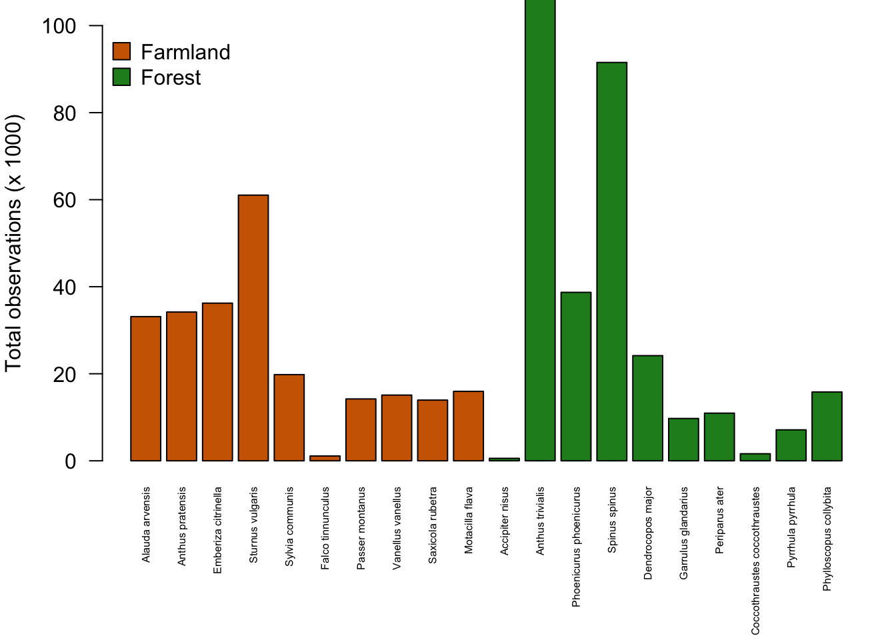

Introduction
This exercise is designed to familiarize you with data from The Swedish Bird Inventory (Svensk Fågeltaxering). On this website, you can read more about the dataset (field protocol, history, etc.). A secondary aim is to continue improving your skills with R.
Getting started
Working directory, Project folders, and Reading data
- Remember that your working directory is usually the folder where your R script or R project is kept.
- If you place the data for today’s exercise in the same folder as the project you created for the exercises in this class, you can simply continue working in that project and the data should be available.
- Otherwise refer to the “Introduction to R” exercise for more details on working directories and loading data in R.
Download bird data for this exercise and read into R
You can download the data for this exercise here.
The dataset that you can download here is a reduced version of the full dataset, which is available from the GBIF website.
Move the downloaded .csv file into your project folder (working directory) and then read the data into R:
Trends of farmland and woodland bird species
Background
Below, you can find two lists of ten common bird species associated with farmlands and woodland habitats. The dataset we are working with here has been reduced to include only these species and only a few columns with the most relevant information. Click on the names to get more information on the species and to see some nice pictures!
Farmland birds:
- Common Kestrel (Falco tinnunculus)
- Northern Lapwing (Vanellus vanellus)
- Skylark (Alauda arvensis)
- Whinchat (Saxicola rubetra)
- Meadow pipit (Anthus pratensis)
- Yellow wagtail (Motacilla flava)
- Yellowhammer (Emberiza citrinella)
- Tree sparrow (Passer montanus)
- Starling (Sturnus vulgaris)
- Common whitethroat (Sylvia communis)
Woodland birds:
- Eurasian sparrowhawk (Accipiter nisus)
- Euroasian jay (Garrulus glandarius)
- Greater spotted woodpecker (Dendrocopos major)
- Coal tit (Periparus ater)
- Common redstart (Phoenicurus phoenicurus)
- Common chiffchaff (Phylloscopus collybita)
- Tree pipit (Anthus trivialis)
- Siskin (Spinus spinus)
- Hawfinch (Coccothraustes coccothraustes)
- Bullfinch (Pyrrhula pyrrhula)
Exploring the data
Let’s start by looking some quick summaries of the dataset in order to get a feel for its content and structure.
## locationID year species individualCount decimalLongitude
## 1 1 1997 Alauda arvensis 2 13.229
## 2 1 1999 Alauda arvensis 1 13.229
## 3 1 2007 Alauda arvensis 3 13.229
## decimalLatitude habitat
## 1 55.565 Farms
## 2 55.565 Farms
## 3 55.565 FarmsIn this dataset, each row (or, each observation) represents the count of a species in a given year, in a given survey route. The first row, for example, says that there were 2 individuals of Alauda arvensis observed in route number 1 during the year 1997. Here’s a description of the columns:
- locationID gives the route number
- year gives the year of the observation
- species gives the species observed
- individualCount gives the number of individuals observed
- decimalLongitude and decimalLatitude give the geographic coordinates for each route (in WGS84).
- habitat gives the main habitat association for the species (i.e., woodland or farmland)
We might be interested to first get an aggregated summary of the data. For instance, let us look at the total abundance of the different species for all routes and for all years. To do this, we will first create a data.frame to hold information at the species-level.
Now we can use the tapply function to sum the counts of each species.
# Sum counts for each species (over all years)
total_counts <- tapply(birds$individualCount, birds$species, sum)
total_countsWarning! Notice that the total_counts vector is in alphabetical order (this is the default behavior for tapply output). But the spdata data.frame is sorted by habitat affiliation. This will lead to incorrect results if we simply join the total_counts vector to the spdata data.frame.
# We can use the `match` function to line things up correctly
spdata$total_count <- total_counts[match(spdata$species, names(total_counts))]
# Make a vector of colors for plotting
spdata$col <- ifelse(spdata$habitat %in% "Farms", "darkorange3", "forestgreen")
# Set figure margins for plotting
par(mar=c(13,4,1,1))
# Create a barplot of total counts per species
barplot(spdata$total_count/1000,
names.arg=spdata$species,
las=2, col=spdata$col,
ylab="Total observations (x 1000)",
cex.names=0.5)
# Add a legend to the plot
legend("topleft", legend=c("Farmland","Woodland"),
pch=22, pt.bg=c("darkorange3", "forestgreen"),
bty="n", pt.cex=2)Question 1: Please write down two conclusions you can make from this figure.
Next we plot the change in counts through time for each species. To do so, we will use a programming tool called a for loop. For loops are iterative operations that loop over a program by using an index. If you are unfamiliar with for loops you can find a brief introduction here. It is probably easiest to digest with a simple example.
In the code below, the first line starts the for loop and says to use the index “year” for values 2010 through 2015. Everything inside the curly brackets { } will be executed as the index, “year”, iterates through the specified range of values. In this example, we ask R to print a phrase about which year it is. A pause of 0.5 seconds is included so that you can watch the iteration happening.
That was a trivial example but hopefully you get the general idea. Let’s try using a more complex for loop to plot the temporal trends for each bird species in our dataset.
# First set the layout and margins of the figure
par(mfcol=c(5,4), mar=c(2,4,1.5,1), oma=c(0,4,0,4))
# Now we will use a `for loop` to cycle through each species.
# The first line says to use the index "i" for 1 through the
# total number of bird species (20 in our case).
for (i in 1:length(unique(birds$species))){
# Next we subset the data corresponding to the i-th species
focal_data <- birds[birds$species %in% unique(birds$species)[i],]
# Next we compute the counts per year for the i-th species
trend <- tapply(focal_data$individualCount, focal_data$year, sum)
# Now we plot the trend through time for the i-th species
plot(names(trend), trend,
type="l", ylab="Total Obs.", xlab=NA,
col=ifelse("Farms" %in% focal_data$habitat, "darkorange3", "forestgreen"),
lwd=3)
# Last, add a title at the top of the panel with the name of the species
mtext(unique(birds$species)[i], 3, 0, cex=0.5, font=2)
}
Ok…what’s going on? Are you surprised to see that the trends for all species appear to be increasing? Are birds really taking over Sweden?!? No, unfortunately not…
The general increase in total observations per species is at least partly due to the fact that the inventory added new survey routes during the first years so that the number of routes sampled per year is increasing. This is problematic for making valid comparisons between years because we are obviously likely to count more birds when we survey more routes (think back to our lecture on rarefaction).
Now let us try and correct for the different number of routes sampled per year by computing the number of counts per species per year per survey route.
# Compute the number of routes recorded for each year
nroutes <- colSums(table(birds$locationID, birds$year) > 0)
# Let's redo the figure by dividing the number of observations
# per species per year by the number of routes surveyed each year
par(mfcol=c(5,4), mar=c(2,4,1.5,1), oma=c(0,4,0,4))
for (i in 1:length(unique(birds$species))){
focal_data <- birds[birds$species %in% unique(birds$species)[i],]
# Plot a panel for each species (note that we now divide by 'nroutes')
plot(sort(unique(focal_data$year)),
tapply(focal_data$individualCount, focal_data$year, sum)/nroutes,
type="l", ylab="Obs. per route", xlab=NA, lwd=3,
col=ifelse("Farms" %in% focal_data$habitat, "darkorange3", "forestgreen"))
mtext(unique(birds$species)[i], 3, 0, cex=0.5, font=2)
}Question 2: After correcting for number of routes sampled per year, which species appears to have the most obvious increase in abundance over the survey period? Which species appears to have the most obvious decrease in abundance over the survey period? Can you detect a general trends among woodland and farmland species?
Trends for species groups
Now we have investigated species-specific trends but we may be interested to know if there are general trends for the two habitat groups. There are, as always, several ways of doing this but we will try one.
# First split the dataset into separate woodland and farmland species datasets
farmland_birds <- birds[birds$habitat == "Farms",]
woodland_birds <- birds[birds$habitat == "Woods",]
# Next count the total observations per year for each group
farmland_birds_counts <- tapply(farmland_birds$individualCount, farmland_birds$year, sum)
woodland_birds_counts <- tapply(woodland_birds$individualCount, woodland_birds$year, sum)
# Do not forget to correct for number of routes sampled!
farmland_birds_counts <- farmland_birds_counts/nroutes
woodland_birds_counts <- woodland_birds_counts/nroutes
# Plot the results
plot(names(farmland_birds_counts),
farmland_birds_counts,
type="l", col="darkorange3", lwd=5,
xlab=NA, ylab="Obs./route")
lines(names(woodland_birds_counts),
woodland_birds_counts,
type="l", col="forestgreen", lwd=5)
legend("topright", legend=c("Farmland","Woodland"),
pch=22, pt.bg=c("darkorange3", "forestgreen"),
bty="n", pt.cex=2)
## locationID year species individualCount decimalLongitude
## 1 1 1997 Alauda arvensis 2 13.229
## 2 1 1999 Alauda arvensis 1 13.229
## 3 1 2007 Alauda arvensis 3 13.229
## 4 1 2010 Alauda arvensis 2 13.229
## 5 1 2014 Alauda arvensis 2 13.229
## 6 1 2017 Alauda arvensis 1 13.229
## 7 1 2018 Alauda arvensis 5 13.229
## 8 2 1997 Alauda arvensis 23 13.215
## 9 2 1998 Alauda arvensis 46 13.215
## 10 2 2000 Alauda arvensis 18 13.215
## 11 2 2001 Alauda arvensis 24 13.215
## 12 2 2002 Alauda arvensis 31 13.215
## 13 2 2003 Alauda arvensis 32 13.215
## 14 2 2004 Alauda arvensis 22 13.215
## 15 2 2006 Alauda arvensis 18 13.215
## 16 2 2008 Alauda arvensis 14 13.215
## 17 2 2009 Alauda arvensis 13 13.215
## 18 2 2010 Alauda arvensis 14 13.215
## 19 2 2011 Alauda arvensis 22 13.215
## 20 2 2012 Alauda arvensis 16 13.215
## 21 2 2013 Alauda arvensis 15 13.215
## 22 2 2014 Alauda arvensis 11 13.215
## 23 2 2015 Alauda arvensis 6 13.215
## 24 2 2016 Alauda arvensis 12 13.215
## 25 2 2017 Alauda arvensis 15 13.215
## 26 2 2018 Alauda arvensis 16 13.215
## 27 3 1999 Alauda arvensis 43 13.625
## 28 3 2000 Alauda arvensis 39 13.625
## 29 3 2001 Alauda arvensis 47 13.625
## 30 3 2002 Alauda arvensis 17 13.625
## 31 3 2003 Alauda arvensis 19 13.625
## 32 3 2004 Alauda arvensis 14 13.625
## 33 3 2005 Alauda arvensis 26 13.625
## 34 3 2006 Alauda arvensis 21 13.625
## 35 3 2007 Alauda arvensis 21 13.625
## 36 3 2008 Alauda arvensis 22 13.625
## 37 3 2009 Alauda arvensis 17 13.625
## 38 3 2010 Alauda arvensis 24 13.625
## 39 3 2011 Alauda arvensis 18 13.625
## 40 3 2012 Alauda arvensis 19 13.625
## 41 3 2013 Alauda arvensis 24 13.625
## 42 3 2014 Alauda arvensis 18 13.625
## 43 3 2015 Alauda arvensis 15 13.625
## 44 3 2016 Alauda arvensis 17 13.625
## 45 3 2017 Alauda arvensis 15 13.625
## 46 3 2018 Alauda arvensis 12 13.625
## 47 4 1997 Alauda arvensis 54 14.021
## 48 4 1998 Alauda arvensis 63 14.021
## 49 4 1999 Alauda arvensis 73 14.021
## 50 4 2000 Alauda arvensis 68 14.021
## 51 4 2001 Alauda arvensis 79 14.021
## 52 4 2002 Alauda arvensis 88 14.021
## 53 4 2004 Alauda arvensis 109 14.021
## 54 4 2006 Alauda arvensis 17 14.021
## 55 4 2008 Alauda arvensis 80 14.021
## 56 4 2009 Alauda arvensis 65 14.021
## 57 4 2010 Alauda arvensis 181 14.021
## 58 4 2011 Alauda arvensis 115 14.021
## 59 4 2012 Alauda arvensis 51 14.021
## 60 4 2014 Alauda arvensis 74 14.021
## 61 4 2015 Alauda arvensis 63 14.021
## 62 4 2016 Alauda arvensis 73 14.021
## 63 4 2017 Alauda arvensis 70 14.021
## 64 4 2018 Alauda arvensis 56 14.021
## 65 5 2001 Alauda arvensis 42 13.613
## 66 5 2002 Alauda arvensis 35 13.613
## 67 5 2003 Alauda arvensis 107 13.613
## 68 5 2004 Alauda arvensis 55 13.613
## 69 5 2005 Alauda arvensis 95 13.613
## 70 5 2006 Alauda arvensis 49 13.613
## 71 5 2007 Alauda arvensis 71 13.613
## 72 5 2008 Alauda arvensis 60 13.613
## 73 5 2009 Alauda arvensis 66 13.613
## 74 5 2010 Alauda arvensis 78 13.613
## 75 5 2011 Alauda arvensis 78 13.613
## 76 5 2012 Alauda arvensis 79 13.613
## 77 5 2013 Alauda arvensis 75 13.613
## 78 5 2014 Alauda arvensis 76 13.613
## 79 5 2015 Alauda arvensis 92 13.613
## 80 5 2016 Alauda arvensis 105 13.613
## 81 5 2017 Alauda arvensis 83 13.613
## 82 5 2018 Alauda arvensis 68 13.613
## 83 6 1997 Alauda arvensis 3 14.011
## 84 6 1998 Alauda arvensis 3 14.011
## 85 6 1999 Alauda arvensis 3 14.011
## 86 6 2000 Alauda arvensis 2 14.011
## 87 6 2001 Alauda arvensis 2 14.011
## 88 6 2002 Alauda arvensis 4 14.011
## 89 6 2004 Alauda arvensis 2 14.011
## 90 6 2005 Alauda arvensis 2 14.011
## 91 6 2006 Alauda arvensis 1 14.011
## 92 6 2007 Alauda arvensis 2 14.011
## 93 6 2008 Alauda arvensis 2 14.011
## 94 6 2009 Alauda arvensis 1 14.011
## 95 6 2011 Alauda arvensis 5 14.011
## 96 6 2012 Alauda arvensis 1 14.011
## 97 6 2015 Alauda arvensis 1 14.011
## 98 6 2016 Alauda arvensis 1 14.011
## 99 6 2017 Alauda arvensis 1 14.011
## 100 6 2018 Alauda arvensis 3 14.011
## 101 7 1997 Alauda arvensis 32 12.799
## 102 7 1998 Alauda arvensis 29 12.799
## 103 7 1999 Alauda arvensis 29 12.799
## 104 7 2002 Alauda arvensis 27 12.799
## 105 7 2003 Alauda arvensis 22 12.799
## 106 7 2004 Alauda arvensis 20 12.799
## 107 7 2005 Alauda arvensis 13 12.799
## 108 7 2006 Alauda arvensis 19 12.799
## 109 7 2007 Alauda arvensis 19 12.799
## 110 7 2008 Alauda arvensis 23 12.799
## 111 7 2009 Alauda arvensis 13 12.799
## 112 7 2010 Alauda arvensis 23 12.799
## 113 7 2011 Alauda arvensis 35 12.799
## 114 7 2012 Alauda arvensis 3 12.799
## 115 7 2013 Alauda arvensis 6 12.799
## 116 7 2014 Alauda arvensis 8 12.799
## 117 7 2015 Alauda arvensis 5 12.799
## 118 7 2016 Alauda arvensis 4 12.799
## 119 7 2017 Alauda arvensis 7 12.799
## 120 7 2018 Alauda arvensis 14 12.799
## 121 8 2001 Alauda arvensis 3 13.200
## 122 8 2002 Alauda arvensis 1 13.200
## 123 8 2003 Alauda arvensis 3 13.200
## 124 8 2004 Alauda arvensis 1 13.200
## 125 8 2005 Alauda arvensis 4 13.200
## 126 8 2006 Alauda arvensis 3 13.200
## 127 8 2007 Alauda arvensis 1 13.200
## 128 8 2008 Alauda arvensis 3 13.200
## 129 8 2009 Alauda arvensis 5 13.200
## 130 8 2010 Alauda arvensis 5 13.200
## 131 8 2011 Alauda arvensis 4 13.200
## 132 8 2012 Alauda arvensis 4 13.200
## 133 8 2013 Alauda arvensis 4 13.200
## 134 8 2014 Alauda arvensis 4 13.200
## 135 8 2015 Alauda arvensis 4 13.200
## 136 8 2016 Alauda arvensis 1 13.200
## 137 8 2017 Alauda arvensis 1 13.200
## 138 9 2001 Alauda arvensis 3 12.782
## 139 9 2002 Alauda arvensis 3 12.782
## 140 9 2003 Alauda arvensis 4 12.782
## 141 9 2004 Alauda arvensis 4 12.782
## 142 9 2005 Alauda arvensis 6 12.782
## 143 9 2006 Alauda arvensis 4 12.782
## 144 9 2008 Alauda arvensis 6 12.782
## 145 9 2009 Alauda arvensis 4 12.782
## 146 9 2010 Alauda arvensis 9 12.782
## 147 9 2011 Alauda arvensis 8 12.782
## 148 9 2012 Alauda arvensis 7 12.782
## 149 9 2013 Alauda arvensis 12 12.782
## 150 9 2014 Alauda arvensis 5 12.782
## 151 9 2016 Alauda arvensis 7 12.782
## 152 9 2017 Alauda arvensis 11 12.782
## 153 9 2018 Alauda arvensis 10 12.782
## 154 10 1997 Alauda arvensis 2 13.184
## 155 10 2003 Alauda arvensis 1 13.184
## 156 10 2017 Alauda arvensis 1 13.184
## 157 10 2018 Alauda arvensis 2 13.184
## 158 11 2010 Alauda arvensis 1 13.600
## 159 11 2015 Alauda arvensis 1 13.600
## 160 15 2001 Alauda arvensis 2 14.402
## 161 15 2002 Alauda arvensis 16 14.402
## 162 15 2004 Alauda arvensis 21 14.402
## 163 15 2005 Alauda arvensis 19 14.402
## 164 15 2006 Alauda arvensis 25 14.402
## 165 15 2007 Alauda arvensis 28 14.402
## 166 15 2008 Alauda arvensis 21 14.402
## 167 15 2009 Alauda arvensis 23 14.402
## 168 15 2010 Alauda arvensis 26 14.402
## 169 15 2011 Alauda arvensis 20 14.402
## 170 15 2012 Alauda arvensis 23 14.402
## 171 15 2013 Alauda arvensis 27 14.402
## 172 15 2014 Alauda arvensis 20 14.402
## 173 15 2015 Alauda arvensis 13 14.402
## 174 15 2016 Alauda arvensis 14 14.402
## 175 15 2017 Alauda arvensis 13 14.402
## 176 15 2018 Alauda arvensis 8 14.402
## 177 18 1998 Alauda arvensis 4 14.797
## 178 18 2000 Alauda arvensis 2 14.797
## 179 18 2007 Alauda arvensis 1 14.797
## 180 18 2009 Alauda arvensis 1 14.797
## 181 18 2013 Alauda arvensis 1 14.797
## 182 19 2002 Alauda arvensis 2 15.200
## 183 19 2003 Alauda arvensis 4 15.200
## 184 19 2005 Alauda arvensis 1 15.200
## 185 19 2008 Alauda arvensis 1 15.200
## 186 19 2010 Alauda arvensis 1 15.200
## 187 19 2013 Alauda arvensis 3 15.200
## 188 19 2014 Alauda arvensis 1 15.200
## 189 19 2015 Alauda arvensis 1 15.200
## 190 19 2018 Alauda arvensis 1 15.200
## 191 20 2000 Alauda arvensis 12 15.604
## 192 20 2002 Alauda arvensis 15 15.604
## 193 20 2003 Alauda arvensis 4 15.604
## 194 20 2004 Alauda arvensis 7 15.604
## 195 20 2005 Alauda arvensis 7 15.604
## 196 20 2006 Alauda arvensis 6 15.604
## 197 20 2008 Alauda arvensis 7 15.604
## 198 20 2009 Alauda arvensis 9 15.604
## 199 20 2010 Alauda arvensis 6 15.604
## 200 20 2011 Alauda arvensis 19 15.604
## 201 20 2012 Alauda arvensis 19 15.604
## 202 20 2013 Alauda arvensis 15 15.604
## 203 20 2014 Alauda arvensis 4 15.604
## 204 20 2015 Alauda arvensis 17 15.604
## 205 20 2016 Alauda arvensis 7 15.604
## 206 20 2017 Alauda arvensis 11 15.604
## 207 20 2018 Alauda arvensis 3 15.604
## 208 21 2001 Alauda arvensis 4 16.007
## 209 21 2002 Alauda arvensis 5 16.007
## 210 21 2003 Alauda arvensis 3 16.007
## 211 21 2005 Alauda arvensis 3 16.007
## 212 21 2006 Alauda arvensis 2 16.007
## 213 21 2007 Alauda arvensis 3 16.007
## 214 21 2008 Alauda arvensis 3 16.007
## 215 21 2009 Alauda arvensis 2 16.007
## 216 21 2010 Alauda arvensis 2 16.007
## 217 21 2011 Alauda arvensis 3 16.007
## 218 21 2012 Alauda arvensis 2 16.007
## 219 21 2013 Alauda arvensis 4 16.007
## 220 21 2014 Alauda arvensis 2 16.007
## 221 21 2015 Alauda arvensis 5 16.007
## 222 21 2016 Alauda arvensis 3 16.007
## 223 21 2017 Alauda arvensis 2 16.007
## 224 21 2018 Alauda arvensis 3 16.007
## 225 22 1996 Alauda arvensis 42 16.410
## 226 22 1997 Alauda arvensis 80 16.410
## 227 22 1999 Alauda arvensis 44 16.410
## 228 22 2000 Alauda arvensis 47 16.410
## 229 22 2001 Alauda arvensis 39 16.410
## 230 22 2002 Alauda arvensis 47 16.410
## 231 22 2003 Alauda arvensis 49 16.410
## 232 22 2004 Alauda arvensis 54 16.410
## 233 22 2005 Alauda arvensis 36 16.410
## 234 22 2006 Alauda arvensis 52 16.410
## 235 22 2007 Alauda arvensis 21 16.410
## 236 22 2008 Alauda arvensis 41 16.410
## 237 22 2009 Alauda arvensis 29 16.410
## 238 22 2010 Alauda arvensis 33 16.410
## 239 22 2011 Alauda arvensis 35 16.410
## 240 22 2012 Alauda arvensis 27 16.410
## 241 22 2013 Alauda arvensis 35 16.410
## 242 22 2014 Alauda arvensis 48 16.410
## 243 22 2015 Alauda arvensis 36 16.410
## 244 22 2016 Alauda arvensis 55 16.410
## 245 22 2017 Alauda arvensis 47 16.410
## 246 22 2018 Alauda arvensis 24 16.410
## 247 23 1996 Alauda arvensis 22 12.764
## 248 23 1997 Alauda arvensis 17 12.764
## 249 23 1999 Alauda arvensis 25 12.764
## 250 23 2000 Alauda arvensis 22 12.764
## 251 23 2001 Alauda arvensis 16 12.764
## 252 23 2002 Alauda arvensis 5 12.764
## 253 23 2003 Alauda arvensis 5 12.764
## 254 23 2004 Alauda arvensis 6 12.764
## 255 23 2005 Alauda arvensis 4 12.764
## 256 23 2006 Alauda arvensis 4 12.764
## 257 23 2007 Alauda arvensis 8 12.764
## 258 23 2008 Alauda arvensis 2 12.764
## 259 23 2009 Alauda arvensis 4 12.764
## 260 23 2011 Alauda arvensis 4 12.764
## 261 23 2012 Alauda arvensis 4 12.764
## 262 23 2013 Alauda arvensis 4 12.764
## 263 23 2014 Alauda arvensis 6 12.764
## 264 23 2016 Alauda arvensis 11 12.764
## 265 23 2017 Alauda arvensis 4 12.764
## 266 23 2018 Alauda arvensis 13 12.764
## 267 24 2001 Alauda arvensis 20 13.169
## 268 24 2002 Alauda arvensis 26 13.169
## 269 24 2003 Alauda arvensis 23 13.169
## 270 24 2004 Alauda arvensis 17 13.169
## 271 24 2005 Alauda arvensis 26 13.169
## 272 24 2006 Alauda arvensis 29 13.169
## 273 24 2007 Alauda arvensis 24 13.169
## 274 24 2008 Alauda arvensis 15 13.169
## 275 24 2009 Alauda arvensis 34 13.169
## 276 24 2010 Alauda arvensis 29 13.169
## 277 24 2011 Alauda arvensis 21 13.169
## 278 24 2012 Alauda arvensis 20 13.169
## 279 24 2013 Alauda arvensis 13 13.169
## 280 24 2014 Alauda arvensis 17 13.169
## 281 24 2015 Alauda arvensis 14 13.169
## 282 24 2016 Alauda arvensis 20 13.169
## 283 24 2017 Alauda arvensis 22 13.169
## 284 24 2018 Alauda arvensis 20 13.169
## 285 25 1996 Alauda arvensis 11 12.746
## 286 25 1997 Alauda arvensis 10 12.746
## 287 25 1998 Alauda arvensis 8 12.746
## 288 25 1999 Alauda arvensis 4 12.746
## 289 25 2000 Alauda arvensis 5 12.746
## 290 25 2001 Alauda arvensis 4 12.746
## 291 25 2002 Alauda arvensis 4 12.746
## 292 25 2003 Alauda arvensis 1 12.746
## 293 25 2004 Alauda arvensis 2 12.746
## 294 25 2005 Alauda arvensis 1 12.746
## 295 25 2007 Alauda arvensis 1 12.746
## 296 25 2008 Alauda arvensis 1 12.746
## 297 25 2010 Alauda arvensis 2 12.746
## 298 25 2012 Alauda arvensis 1 12.746
## 299 25 2014 Alauda arvensis 2 12.746
## 300 25 2016 Alauda arvensis 4 12.746
## 301 25 2017 Alauda arvensis 7 12.746
## 302 25 2018 Alauda arvensis 2 12.746
## 303 33 2002 Alauda arvensis 3 14.377
## 304 33 2007 Alauda arvensis 2 14.377
## 305 33 2009 Alauda arvensis 1 14.377
## 306 33 2011 Alauda arvensis 1 14.377
## 307 33 2013 Alauda arvensis 1 14.377
## 308 33 2014 Alauda arvensis 1 14.377
## 309 33 2015 Alauda arvensis 1 14.377
## 310 34 2007 Alauda arvensis 2 14.785
## 311 34 2009 Alauda arvensis 1 14.785
## 312 34 2010 Alauda arvensis 2 14.785
## 313 34 2017 Alauda arvensis 1 14.785
## 314 35 2001 Alauda arvensis 1 15.197
## 315 36 2003 Alauda arvensis 2 15.602
## 316 36 2011 Alauda arvensis 1 15.602
## 317 38 2005 Alauda arvensis 3 15.601
## 318 38 2006 Alauda arvensis 3 15.601
## 319 38 2007 Alauda arvensis 1 15.601
## 320 38 2008 Alauda arvensis 1 15.601
## 321 38 2009 Alauda arvensis 1 15.601
## 322 38 2010 Alauda arvensis 1 15.601
## 323 38 2011 Alauda arvensis 1 15.601
## 324 38 2012 Alauda arvensis 2 15.601
## 325 38 2013 Alauda arvensis 1 15.601
## 326 39 1997 Alauda arvensis 3 16.008
## 327 39 1998 Alauda arvensis 1 16.008
## 328 39 1999 Alauda arvensis 2 16.008
## 329 39 2000 Alauda arvensis 2 16.008
## 330 39 2001 Alauda arvensis 4 16.008
## 331 39 2003 Alauda arvensis 2 16.008
## 332 39 2004 Alauda arvensis 3 16.008
## 333 39 2006 Alauda arvensis 2 16.008
## 334 39 2007 Alauda arvensis 2 16.008
## 335 39 2011 Alauda arvensis 3 16.008
## 336 39 2012 Alauda arvensis 10 16.008
## 337 39 2013 Alauda arvensis 8 16.008
## 338 39 2014 Alauda arvensis 3 16.008
## 339 39 2015 Alauda arvensis 2 16.008
## 340 39 2016 Alauda arvensis 3 16.008
## 341 39 2017 Alauda arvensis 1 16.008
## 342 39 2018 Alauda arvensis 4 16.008
## 343 40 1996 Alauda arvensis 53 16.414
## 344 40 1997 Alauda arvensis 90 16.414
## 345 40 1998 Alauda arvensis 84 16.414
## 346 40 1999 Alauda arvensis 83 16.414
## 347 40 2000 Alauda arvensis 108 16.414
## 348 40 2001 Alauda arvensis 85 16.414
## 349 40 2002 Alauda arvensis 94 16.414
## 350 40 2004 Alauda arvensis 72 16.414
## 351 40 2005 Alauda arvensis 95 16.414
## 352 40 2006 Alauda arvensis 95 16.414
## 353 40 2008 Alauda arvensis 92 16.414
## 354 40 2009 Alauda arvensis 75 16.414
## 355 40 2010 Alauda arvensis 89 16.414
## 356 40 2011 Alauda arvensis 83 16.414
## 357 40 2013 Alauda arvensis 78 16.414
## 358 40 2014 Alauda arvensis 74 16.414
## 359 40 2015 Alauda arvensis 77 16.414
## 360 40 2016 Alauda arvensis 95 16.414
## 361 40 2017 Alauda arvensis 42 16.414
## 362 40 2018 Alauda arvensis 148 16.414
## 363 41 2002 Alauda arvensis 1 16.009
## 364 41 2004 Alauda arvensis 1 16.009
## 365 41 2005 Alauda arvensis 1 16.009
## 366 41 2006 Alauda arvensis 1 16.009
## 367 41 2007 Alauda arvensis 1 16.009
## 368 41 2008 Alauda arvensis 4 16.009
## 369 41 2009 Alauda arvensis 1 16.009
## 370 41 2010 Alauda arvensis 1 16.009
## 371 41 2011 Alauda arvensis 1 16.009
## 372 41 2012 Alauda arvensis 3 16.009
## 373 41 2013 Alauda arvensis 2 16.009
## 374 41 2014 Alauda arvensis 2 16.009
## 375 41 2015 Alauda arvensis 2 16.009
## 376 41 2017 Alauda arvensis 1 16.009
## 377 41 2018 Alauda arvensis 1 16.009
## 378 42 2001 Alauda arvensis 3 12.297
## 379 42 2002 Alauda arvensis 7 12.297
## 380 42 2003 Alauda arvensis 8 12.297
## 381 42 2004 Alauda arvensis 4 12.297
## 382 42 2006 Alauda arvensis 6 12.297
## 383 42 2007 Alauda arvensis 1 12.297
## 384 42 2008 Alauda arvensis 2 12.297
## 385 42 2009 Alauda arvensis 7 12.297
## 386 42 2010 Alauda arvensis 2 12.297
## 387 42 2012 Alauda arvensis 3 12.297
## 388 42 2013 Alauda arvensis 5 12.297
## 389 42 2014 Alauda arvensis 3 12.297
## 390 42 2015 Alauda arvensis 4 12.297
## 391 42 2016 Alauda arvensis 2 12.297
## 392 42 2018 Alauda arvensis 1 12.297
## 393 43 1997 Alauda arvensis 10 12.728
## 394 43 1998 Alauda arvensis 5 12.728
## 395 43 1999 Alauda arvensis 6 12.728
## 396 43 2000 Alauda arvensis 7 12.728
## 397 43 2001 Alauda arvensis 6 12.728
## 398 43 2002 Alauda arvensis 2 12.728
## 399 43 2003 Alauda arvensis 4 12.728
## 400 43 2006 Alauda arvensis 7 12.728
## 401 43 2008 Alauda arvensis 3 12.728
## 402 43 2010 Alauda arvensis 12 12.728
## 403 43 2011 Alauda arvensis 10 12.728
## 404 43 2012 Alauda arvensis 6 12.728
## 405 43 2014 Alauda arvensis 7 12.728
## 406 43 2015 Alauda arvensis 9 12.728
## 407 43 2017 Alauda arvensis 14 12.728
## 408 43 2018 Alauda arvensis 12 12.728
## 409 45 2002 Alauda arvensis 5 12.709
## 410 45 2003 Alauda arvensis 2 12.709
## 411 45 2004 Alauda arvensis 4 12.709
## 412 45 2005 Alauda arvensis 3 12.709
## 413 45 2006 Alauda arvensis 2 12.709
## 414 45 2007 Alauda arvensis 1 12.709
## 415 45 2008 Alauda arvensis 1 12.709
## 416 45 2009 Alauda arvensis 2 12.709
## 417 45 2012 Alauda arvensis 3 12.709
## 418 45 2013 Alauda arvensis 2 12.709
## 419 45 2014 Alauda arvensis 2 12.709
## 420 45 2015 Alauda arvensis 2 12.709
## 421 45 2016 Alauda arvensis 3 12.709
## 422 45 2017 Alauda arvensis 1 12.709
## 423 50 1999 Alauda arvensis 1 13.946
## 424 50 2000 Alauda arvensis 1 13.946
## 425 50 2001 Alauda arvensis 2 13.946
## 426 50 2002 Alauda arvensis 1 13.946
## 427 50 2003 Alauda arvensis 1 13.946
## 428 50 2008 Alauda arvensis 1 13.946
## 429 50 2009 Alauda arvensis 3 13.946
## 430 50 2010 Alauda arvensis 2 13.946
## 431 50 2011 Alauda arvensis 4 13.946
## 432 50 2012 Alauda arvensis 1 13.946
## 433 50 2016 Alauda arvensis 1 13.946
## 434 52 2012 Alauda arvensis 4 14.779
## 435 54 2003 Alauda arvensis 1 14.772
## 436 54 2006 Alauda arvensis 1 14.772
## 437 54 2007 Alauda arvensis 1 14.772
## 438 54 2008 Alauda arvensis 1 14.772
## 439 54 2015 Alauda arvensis 1 14.772
## 440 60 1999 Alauda arvensis 7 16.421
## 441 60 2002 Alauda arvensis 32 16.421
## 442 60 2003 Alauda arvensis 6 16.421
## 443 60 2004 Alauda arvensis 42 16.421
## 444 60 2005 Alauda arvensis 45 16.421
## 445 60 2006 Alauda arvensis 38 16.421
## 446 60 2007 Alauda arvensis 21 16.421
## 447 60 2008 Alauda arvensis 21 16.421
## 448 60 2009 Alauda arvensis 14 16.421
## 449 60 2010 Alauda arvensis 14 16.421
## 450 60 2011 Alauda arvensis 15 16.421
## 451 60 2012 Alauda arvensis 24 16.421
## 452 60 2014 Alauda arvensis 9 16.421
## 453 60 2015 Alauda arvensis 5 16.421
## 454 60 2016 Alauda arvensis 9 16.421
## 455 60 2017 Alauda arvensis 9 16.421
## 456 60 2018 Alauda arvensis 7 16.421
## 457 61 1999 Alauda arvensis 7 16.012
## 458 61 2000 Alauda arvensis 8 16.012
## 459 61 2001 Alauda arvensis 2 16.012
## 460 61 2002 Alauda arvensis 4 16.012
## 461 61 2003 Alauda arvensis 3 16.012
## 462 61 2004 Alauda arvensis 4 16.012
## 463 61 2005 Alauda arvensis 4 16.012
## 464 61 2006 Alauda arvensis 4 16.012
## 465 61 2007 Alauda arvensis 5 16.012
## 466 61 2008 Alauda arvensis 5 16.012
## 467 61 2009 Alauda arvensis 4 16.012
## 468 61 2010 Alauda arvensis 7 16.012
## 469 61 2011 Alauda arvensis 9 16.012
## 470 61 2012 Alauda arvensis 4 16.012
## 471 61 2014 Alauda arvensis 7 16.012
## 472 61 2015 Alauda arvensis 3 16.012
## 473 61 2016 Alauda arvensis 1 16.012
## 474 61 2017 Alauda arvensis 7 16.012
## 475 61 2018 Alauda arvensis 6 16.012
## 476 63 1996 Alauda arvensis 122 16.832
## 477 63 1997 Alauda arvensis 105 16.832
## 478 63 2001 Alauda arvensis 48 16.832
## 479 63 2002 Alauda arvensis 52 16.832
## 480 63 2003 Alauda arvensis 50 16.832
## 481 63 2004 Alauda arvensis 46 16.832
## 482 63 2005 Alauda arvensis 39 16.832
## 483 63 2006 Alauda arvensis 47 16.832
## 484 63 2007 Alauda arvensis 55 16.832
## 485 63 2008 Alauda arvensis 56 16.832
## 486 63 2009 Alauda arvensis 54 16.832
## 487 63 2010 Alauda arvensis 47 16.832
## 488 63 2011 Alauda arvensis 47 16.832
## 489 63 2012 Alauda arvensis 44 16.832
## 490 63 2013 Alauda arvensis 58 16.832
## 491 63 2014 Alauda arvensis 59 16.832
## 492 63 2015 Alauda arvensis 67 16.832
## 493 63 2016 Alauda arvensis 57 16.832
## 494 63 2017 Alauda arvensis 51 16.832
## 495 63 2018 Alauda arvensis 51 16.832
## 496 64 2002 Alauda arvensis 4 18.489
## 497 64 2003 Alauda arvensis 12 18.489
## 498 64 2006 Alauda arvensis 2 18.489
## 499 64 2007 Alauda arvensis 3 18.489
## 500 64 2008 Alauda arvensis 1 18.489
## 501 64 2009 Alauda arvensis 16 18.489
## 502 64 2010 Alauda arvensis 10 18.489
## 503 64 2011 Alauda arvensis 20 18.489
## 504 64 2012 Alauda arvensis 6 18.489
## 505 64 2013 Alauda arvensis 8 18.489
## 506 64 2014 Alauda arvensis 20 18.489
## 507 64 2015 Alauda arvensis 8 18.489
## 508 64 2016 Alauda arvensis 15 18.489
## 509 64 2017 Alauda arvensis 10 18.489
## 510 64 2018 Alauda arvensis 20 18.489
## 511 65 2001 Alauda arvensis 20 12.276
## 512 65 2003 Alauda arvensis 12 12.276
## 513 65 2006 Alauda arvensis 5 12.276
## 514 65 2007 Alauda arvensis 5 12.276
## 515 65 2009 Alauda arvensis 7 12.276
## 516 65 2010 Alauda arvensis 9 12.276
## 517 65 2011 Alauda arvensis 6 12.276
## 518 65 2012 Alauda arvensis 6 12.276
## 519 65 2013 Alauda arvensis 6 12.276
## 520 65 2014 Alauda arvensis 5 12.276
## 521 65 2015 Alauda arvensis 6 12.276
## 522 65 2016 Alauda arvensis 9 12.276
## 523 65 2017 Alauda arvensis 11 12.276
## 524 65 2018 Alauda arvensis 8 12.276
## 525 67 1996 Alauda arvensis 1 12.690
## 526 71 1996 Alauda arvensis 2 13.520
## 527 71 1997 Alauda arvensis 6 13.520
## 528 71 1998 Alauda arvensis 4 13.520
## 529 71 2002 Alauda arvensis 2 13.520
## 530 71 2003 Alauda arvensis 3 13.520
## 531 72 2003 Alauda arvensis 1 13.935
## 532 73 2007 Alauda arvensis 1 13.506
## 533 74 2002 Alauda arvensis 1 13.924
## 534 74 2004 Alauda arvensis 2 13.924
## 535 74 2006 Alauda arvensis 2 13.924
## 536 74 2007 Alauda arvensis 1 13.924
## 537 74 2009 Alauda arvensis 5 13.924
## 538 74 2010 Alauda arvensis 1 13.924
## 539 75 1998 Alauda arvensis 1 14.351
## 540 75 1999 Alauda arvensis 1 14.351
## 541 75 2000 Alauda arvensis 3 14.351
## 542 75 2001 Alauda arvensis 3 14.351
## 543 75 2012 Alauda arvensis 1 14.351
## 544 76 2005 Alauda arvensis 2 14.766
## 545 76 2006 Alauda arvensis 2 14.766
## 546 76 2007 Alauda arvensis 1 14.766
## 547 76 2008 Alauda arvensis 4 14.766
## 548 76 2009 Alauda arvensis 7 14.766
## 549 76 2010 Alauda arvensis 6 14.766
## 550 76 2011 Alauda arvensis 6 14.766
## 551 76 2012 Alauda arvensis 7 14.766
## 552 76 2014 Alauda arvensis 1 14.766
## 553 76 2017 Alauda arvensis 2 14.766
## 554 77 2001 Alauda arvensis 1 14.342
## 555 77 2003 Alauda arvensis 1 14.342
## 556 77 2004 Alauda arvensis 3 14.342
## 557 77 2008 Alauda arvensis 1 14.342
## 558 77 2009 Alauda arvensis 3 14.342
## 559 79 1999 Alauda arvensis 4 15.182
## 560 79 2003 Alauda arvensis 7 15.182
## 561 79 2004 Alauda arvensis 8 15.182
## 562 79 2005 Alauda arvensis 9 15.182
## 563 79 2006 Alauda arvensis 6 15.182
## 564 81 1999 Alauda arvensis 1 15.178
## 565 81 2000 Alauda arvensis 4 15.178
## 566 83 1997 Alauda arvensis 1 16.013
## 567 83 1998 Alauda arvensis 2 16.013
## 568 84 2002 Alauda arvensis 1 16.429
## 569 85 1998 Alauda arvensis 1 16.014
## 570 86 1999 Alauda arvensis 2 16.433
## 571 86 2000 Alauda arvensis 3 16.433
## 572 86 2001 Alauda arvensis 5 16.433
## 573 86 2002 Alauda arvensis 5 16.433
## 574 86 2003 Alauda arvensis 4 16.433
## 575 86 2004 Alauda arvensis 4 16.433
## 576 86 2005 Alauda arvensis 4 16.433
## 577 86 2006 Alauda arvensis 4 16.433
## 578 86 2007 Alauda arvensis 1 16.433
## 579 86 2008 Alauda arvensis 1 16.433
## 580 86 2009 Alauda arvensis 2 16.433
## 581 86 2010 Alauda arvensis 2 16.433
## 582 86 2011 Alauda arvensis 2 16.433
## 583 86 2012 Alauda arvensis 2 16.433
## 584 86 2013 Alauda arvensis 2 16.433
## 585 86 2014 Alauda arvensis 1 16.433
## 586 86 2015 Alauda arvensis 1 16.433
## 587 86 2016 Alauda arvensis 2 16.433
## 588 86 2017 Alauda arvensis 1 16.433
## 589 87 1997 Alauda arvensis 15 18.506
## 590 87 1998 Alauda arvensis 29 18.506
## 591 87 1999 Alauda arvensis 29 18.506
## 592 87 2000 Alauda arvensis 12 18.506
## 593 87 2001 Alauda arvensis 17 18.506
## 594 87 2002 Alauda arvensis 18 18.506
## 595 87 2003 Alauda arvensis 20 18.506
## 596 87 2004 Alauda arvensis 27 18.506
## 597 87 2005 Alauda arvensis 12 18.506
## 598 87 2006 Alauda arvensis 27 18.506
## 599 87 2007 Alauda arvensis 18 18.506
## 600 87 2008 Alauda arvensis 19 18.506
## 601 87 2009 Alauda arvensis 31 18.506
## 602 87 2010 Alauda arvensis 22 18.506
## 603 87 2011 Alauda arvensis 11 18.506
## 604 87 2012 Alauda arvensis 16 18.506
## 605 87 2013 Alauda arvensis 5 18.506
## 606 87 2014 Alauda arvensis 26 18.506
## 607 87 2015 Alauda arvensis 27 18.506
## 608 87 2016 Alauda arvensis 12 18.506
## 609 87 2017 Alauda arvensis 17 18.506
## 610 87 2018 Alauda arvensis 16 18.506
## 611 88 1999 Alauda arvensis 21 18.522
## 612 88 2000 Alauda arvensis 33 18.522
## 613 88 2001 Alauda arvensis 38 18.522
## 614 88 2002 Alauda arvensis 24 18.522
## 615 88 2004 Alauda arvensis 37 18.522
## 616 88 2005 Alauda arvensis 42 18.522
## 617 88 2006 Alauda arvensis 47 18.522
## 618 88 2007 Alauda arvensis 59 18.522
## 619 88 2008 Alauda arvensis 43 18.522
## 620 88 2009 Alauda arvensis 49 18.522
## 621 88 2010 Alauda arvensis 35 18.522
## 622 88 2011 Alauda arvensis 22 18.522
## 623 88 2012 Alauda arvensis 20 18.522
## 624 88 2013 Alauda arvensis 27 18.522
## 625 88 2014 Alauda arvensis 29 18.522
## 626 88 2015 Alauda arvensis 32 18.522
## 627 88 2016 Alauda arvensis 19 18.522
## 628 88 2017 Alauda arvensis 22 18.522
## 629 88 2018 Alauda arvensis 40 18.522
## 630 89 1998 Alauda arvensis 12 11.813
## 631 89 1999 Alauda arvensis 12 11.813
## 632 89 2001 Alauda arvensis 9 11.813
## 633 89 2002 Alauda arvensis 12 11.813
## 634 89 2003 Alauda arvensis 12 11.813
## 635 89 2004 Alauda arvensis 6 11.813
## 636 89 2006 Alauda arvensis 6 11.813
## 637 89 2007 Alauda arvensis 8 11.813
## 638 89 2008 Alauda arvensis 7 11.813
## 639 89 2009 Alauda arvensis 5 11.813
## 640 89 2010 Alauda arvensis 8 11.813
## 641 89 2011 Alauda arvensis 9 11.813
## 642 89 2012 Alauda arvensis 10 11.813
## 643 89 2013 Alauda arvensis 7 11.813
## 644 89 2014 Alauda arvensis 6 11.813
## 645 89 2015 Alauda arvensis 3 11.813
## 646 89 2016 Alauda arvensis 5 11.813
## 647 89 2017 Alauda arvensis 4 11.813
## 648 89 2018 Alauda arvensis 4 11.813
## 649 90 1998 Alauda arvensis 3 12.232
## 650 90 2001 Alauda arvensis 10 12.232
## 651 90 2002 Alauda arvensis 3 12.232
## 652 90 2003 Alauda arvensis 5 12.232
## 653 90 2004 Alauda arvensis 2 12.232
## 654 90 2006 Alauda arvensis 1 12.232
## 655 90 2008 Alauda arvensis 1 12.232
## 656 90 2012 Alauda arvensis 1 12.232
## 657 90 2013 Alauda arvensis 1 12.232
## 658 90 2014 Alauda arvensis 1 12.232
## 659 90 2015 Alauda arvensis 1 12.232
## 660 92 1996 Alauda arvensis 26 12.210
## 661 92 1997 Alauda arvensis 31 12.210
## 662 92 1998 Alauda arvensis 29 12.210
## 663 92 1999 Alauda arvensis 33 12.210
## 664 92 2000 Alauda arvensis 27 12.210
## 665 92 2001 Alauda arvensis 25 12.210
## 666 92 2002 Alauda arvensis 20 12.210
## 667 92 2003 Alauda arvensis 10 12.210
## 668 92 2004 Alauda arvensis 11 12.210
## 669 92 2005 Alauda arvensis 10 12.210
## 670 92 2006 Alauda arvensis 5 12.210
## 671 92 2007 Alauda arvensis 9 12.210
## 672 92 2008 Alauda arvensis 7 12.210
## 673 92 2009 Alauda arvensis 12 12.210
## 674 92 2010 Alauda arvensis 14 12.210
## 675 92 2011 Alauda arvensis 10 12.210
## 676 92 2012 Alauda arvensis 11 12.210
## 677 92 2013 Alauda arvensis 7 12.210
## 678 92 2014 Alauda arvensis 9 12.210
## 679 92 2015 Alauda arvensis 11 12.210
## 680 92 2016 Alauda arvensis 11 12.210
## 681 92 2017 Alauda arvensis 7 12.210
## 682 92 2018 Alauda arvensis 7 12.210
## 683 93 1999 Alauda arvensis 2 12.651
## 684 93 2000 Alauda arvensis 8 12.651
## 685 93 2001 Alauda arvensis 3 12.651
## 686 93 2002 Alauda arvensis 4 12.651
## 687 93 2003 Alauda arvensis 1 12.651
## 688 93 2007 Alauda arvensis 1 12.651
## 689 93 2010 Alauda arvensis 1 12.651
## 690 93 2013 Alauda arvensis 1 12.651
## 691 93 2014 Alauda arvensis 1 12.651
## 692 94 1997 Alauda arvensis 15 13.071
## 693 94 1998 Alauda arvensis 14 13.071
## 694 94 1999 Alauda arvensis 15 13.071
## 695 94 2000 Alauda arvensis 14 13.071
## 696 94 2001 Alauda arvensis 16 13.071
## 697 94 2002 Alauda arvensis 12 13.071
## 698 94 2003 Alauda arvensis 11 13.071
## 699 94 2005 Alauda arvensis 8 13.071
## 700 94 2006 Alauda arvensis 7 13.071
## 701 94 2007 Alauda arvensis 7 13.071
## 702 94 2008 Alauda arvensis 5 13.071
## 703 94 2009 Alauda arvensis 6 13.071
## 704 94 2011 Alauda arvensis 4 13.071
## 705 94 2012 Alauda arvensis 4 13.071
## 706 94 2013 Alauda arvensis 3 13.071
## 707 94 2014 Alauda arvensis 4 13.071
## 708 94 2015 Alauda arvensis 3 13.071
## 709 94 2017 Alauda arvensis 2 13.071
## 710 94 2018 Alauda arvensis 3 13.071
## 711 95 1998 Alauda arvensis 19 12.632
## 712 95 1999 Alauda arvensis 11 12.632
## 713 95 2000 Alauda arvensis 13 12.632
## 714 95 2001 Alauda arvensis 11 12.632
## 715 95 2002 Alauda arvensis 8 12.632
## 716 95 2003 Alauda arvensis 12 12.632
## 717 95 2004 Alauda arvensis 6 12.632
## 718 95 2005 Alauda arvensis 6 12.632
## 719 95 2006 Alauda arvensis 10 12.632
## 720 95 2007 Alauda arvensis 11 12.632
## 721 95 2008 Alauda arvensis 1 12.632
## 722 95 2009 Alauda arvensis 10 12.632
## 723 95 2010 Alauda arvensis 8 12.632
## 724 95 2011 Alauda arvensis 10 12.632
## 725 95 2012 Alauda arvensis 13 12.632
## 726 95 2013 Alauda arvensis 3 12.632
## 727 95 2014 Alauda arvensis 6 12.632
## 728 95 2015 Alauda arvensis 23 12.632
## 729 95 2016 Alauda arvensis 25 12.632
## 730 95 2017 Alauda arvensis 35 12.632
## 731 96 2001 Alauda arvensis 2 13.054
## 732 96 2003 Alauda arvensis 3 13.054
## 733 96 2005 Alauda arvensis 1 13.054
## 734 96 2006 Alauda arvensis 1 13.054
## 735 96 2007 Alauda arvensis 2 13.054
## 736 96 2009 Alauda arvensis 1 13.054
## 737 96 2010 Alauda arvensis 1 13.054
## 738 96 2011 Alauda arvensis 1 13.054
## 739 96 2012 Alauda arvensis 3 13.054
## 740 96 2013 Alauda arvensis 4 13.054
## 741 96 2014 Alauda arvensis 4 13.054
## 742 96 2015 Alauda arvensis 1 13.054
## 743 96 2016 Alauda arvensis 1 13.054
## 744 97 2007 Alauda arvensis 1 13.492
## 745 97 2008 Alauda arvensis 1 13.492
## 746 99 1998 Alauda arvensis 24 13.477
## 747 99 1999 Alauda arvensis 21 13.477
## 748 99 2000 Alauda arvensis 22 13.477
## 749 99 2001 Alauda arvensis 20 13.477
## 750 99 2002 Alauda arvensis 33 13.477
## 751 99 2003 Alauda arvensis 14 13.477
## 752 99 2004 Alauda arvensis 6 13.477
## 753 99 2005 Alauda arvensis 18 13.477
## 754 99 2006 Alauda arvensis 13 13.477
## 755 99 2007 Alauda arvensis 7 13.477
## 756 99 2008 Alauda arvensis 13 13.477
## 757 99 2009 Alauda arvensis 10 13.477
## 758 99 2010 Alauda arvensis 7 13.477
## 759 99 2011 Alauda arvensis 8 13.477
## 760 99 2012 Alauda arvensis 13 13.477
## 761 99 2013 Alauda arvensis 10 13.477
## 762 99 2014 Alauda arvensis 5 13.477
## 763 99 2015 Alauda arvensis 7 13.477
## 764 99 2017 Alauda arvensis 16 13.477
## 765 99 2018 Alauda arvensis 14 13.477
## 766 100 2000 Alauda arvensis 1 13.900
## 767 100 2002 Alauda arvensis 1 13.900
## 768 100 2003 Alauda arvensis 1 13.900
## 769 100 2004 Alauda arvensis 1 13.900
## 770 100 2011 Alauda arvensis 7 13.900
## 771 100 2012 Alauda arvensis 6 13.900
## 772 103 2002 Alauda arvensis 30 14.323
## 773 103 2003 Alauda arvensis 14 14.323
## 774 103 2004 Alauda arvensis 29 14.323
## 775 103 2005 Alauda arvensis 16 14.323
## 776 103 2006 Alauda arvensis 12 14.323
## 777 103 2007 Alauda arvensis 15 14.323
## 778 103 2008 Alauda arvensis 10 14.323
## 779 103 2009 Alauda arvensis 4 14.323
## 780 103 2010 Alauda arvensis 12 14.323
## 781 103 2011 Alauda arvensis 14 14.323
## 782 103 2012 Alauda arvensis 9 14.323
## 783 103 2013 Alauda arvensis 5 14.323
## 784 103 2014 Alauda arvensis 14 14.323
## 785 103 2015 Alauda arvensis 10 14.323
## 786 103 2016 Alauda arvensis 4 14.323
## 787 103 2017 Alauda arvensis 10 14.323
## 788 103 2018 Alauda arvensis 3 14.323
## 789 104 1998 Alauda arvensis 1 14.747
## 790 104 2002 Alauda arvensis 4 14.747
## 791 104 2003 Alauda arvensis 2 14.747
## 792 110 2000 Alauda arvensis 2 16.436
## 793 110 2002 Alauda arvensis 1 16.436
## 794 110 2003 Alauda arvensis 3 16.436
## 795 110 2004 Alauda arvensis 7 16.436
## 796 110 2005 Alauda arvensis 5 16.436
## 797 110 2006 Alauda arvensis 4 16.436
## 798 110 2007 Alauda arvensis 2 16.436
## 799 110 2008 Alauda arvensis 2 16.436
## 800 110 2009 Alauda arvensis 3 16.436
## 801 110 2010 Alauda arvensis 2 16.436
## 802 110 2011 Alauda arvensis 2 16.436
## 803 110 2012 Alauda arvensis 1 16.436
## 804 110 2013 Alauda arvensis 2 16.436
## 805 110 2014 Alauda arvensis 1 16.436
## 806 110 2015 Alauda arvensis 1 16.436
## 807 110 2016 Alauda arvensis 1 16.436
## 808 110 2017 Alauda arvensis 2 16.436
## 809 110 2018 Alauda arvensis 2 16.436
## 810 112 2003 Alauda arvensis 1 16.440
## 811 112 2004 Alauda arvensis 3 16.440
## 812 112 2005 Alauda arvensis 2 16.440
## 813 112 2008 Alauda arvensis 1 16.440
## 814 112 2009 Alauda arvensis 1 16.440
## 815 112 2010 Alauda arvensis 1 16.440
## 816 112 2011 Alauda arvensis 3 16.440
## 817 112 2012 Alauda arvensis 2 16.440
## 818 112 2013 Alauda arvensis 3 16.440
## 819 112 2014 Alauda arvensis 1 16.440
## 820 112 2015 Alauda arvensis 3 16.440
## 821 112 2016 Alauda arvensis 4 16.440
## 822 112 2018 Alauda arvensis 3 16.440
## 823 113 2003 Alauda arvensis 37 18.539
## 824 113 2008 Alauda arvensis 31 18.539
## 825 113 2009 Alauda arvensis 25 18.539
## 826 113 2010 Alauda arvensis 17 18.539
## 827 113 2011 Alauda arvensis 25 18.539
## 828 113 2012 Alauda arvensis 23 18.539
## 829 113 2013 Alauda arvensis 12 18.539
## 830 113 2014 Alauda arvensis 15 18.539
## 831 113 2015 Alauda arvensis 11 18.539
## 832 113 2016 Alauda arvensis 12 18.539
## 833 113 2017 Alauda arvensis 5 18.539
## 834 114 2003 Alauda arvensis 9 18.959
## 835 114 2004 Alauda arvensis 13 18.959
## 836 114 2005 Alauda arvensis 6 18.959
## 837 114 2006 Alauda arvensis 6 18.959
## 838 114 2007 Alauda arvensis 10 18.959
## 839 114 2008 Alauda arvensis 13 18.959
## 840 114 2009 Alauda arvensis 1 18.959
## 841 114 2010 Alauda arvensis 3 18.959
## 842 114 2011 Alauda arvensis 10 18.959
## 843 114 2012 Alauda arvensis 10 18.959
## 844 114 2015 Alauda arvensis 22 18.959
## 845 114 2018 Alauda arvensis 3 18.959
## 846 116 1996 Alauda arvensis 2 11.310
## 847 116 1997 Alauda arvensis 2 11.310
## 848 116 1998 Alauda arvensis 4 11.310
## 849 116 1999 Alauda arvensis 4 11.310
## 850 116 2001 Alauda arvensis 4 11.310
## 851 116 2002 Alauda arvensis 2 11.310
## 852 116 2003 Alauda arvensis 3 11.310
## 853 116 2004 Alauda arvensis 1 11.310
## 854 116 2005 Alauda arvensis 3 11.310
## 855 116 2007 Alauda arvensis 1 11.310
## 856 116 2009 Alauda arvensis 2 11.310
## 857 116 2010 Alauda arvensis 1 11.310
## 858 116 2011 Alauda arvensis 1 11.310
## 859 116 2012 Alauda arvensis 1 11.310
## 860 116 2014 Alauda arvensis 3 11.310
## 861 116 2015 Alauda arvensis 1 11.310
## 862 116 2016 Alauda arvensis 3 11.310
## 863 116 2017 Alauda arvensis 3 11.310
## 864 116 2018 Alauda arvensis 1 11.310
## 865 117 2003 Alauda arvensis 7 11.762
## 866 117 2004 Alauda arvensis 14 11.762
## 867 117 2009 Alauda arvensis 9 11.762
## 868 117 2010 Alauda arvensis 6 11.762
## 869 117 2011 Alauda arvensis 7 11.762
## 870 117 2012 Alauda arvensis 7 11.762
## 871 117 2013 Alauda arvensis 11 11.762
## 872 117 2014 Alauda arvensis 8 11.762
## 873 117 2015 Alauda arvensis 10 11.762
## 874 117 2016 Alauda arvensis 7 11.762
## 875 117 2017 Alauda arvensis 7 11.762
## 876 117 2018 Alauda arvensis 5 11.762
## 877 118 2001 Alauda arvensis 9 12.187
## 878 118 2002 Alauda arvensis 6 12.187
## 879 118 2003 Alauda arvensis 5 12.187
## 880 118 2005 Alauda arvensis 3 12.187
## 881 118 2007 Alauda arvensis 4 12.187
## 882 118 2008 Alauda arvensis 3 12.187
## 883 118 2010 Alauda arvensis 5 12.187
## 884 118 2016 Alauda arvensis 4 12.187
## 885 119 2000 Alauda arvensis 1 11.737
## 886 119 2002 Alauda arvensis 1 11.737
## 887 119 2003 Alauda arvensis 1 11.737
## 888 120 2000 Alauda arvensis 11 12.164
## 889 120 2002 Alauda arvensis 11 12.164
## 890 120 2005 Alauda arvensis 7 12.164
## 891 120 2007 Alauda arvensis 6 12.164
## 892 120 2009 Alauda arvensis 4 12.164
## 893 120 2010 Alauda arvensis 2 12.164
## 894 120 2011 Alauda arvensis 9 12.164
## 895 120 2012 Alauda arvensis 8 12.164
## 896 120 2013 Alauda arvensis 2 12.164
## 897 120 2014 Alauda arvensis 4 12.164
## 898 120 2015 Alauda arvensis 12 12.164
## 899 120 2016 Alauda arvensis 15 12.164
## 900 120 2017 Alauda arvensis 8 12.164
## 901 120 2018 Alauda arvensis 13 12.164
## 902 121 2002 Alauda arvensis 23 12.612
## 903 121 2003 Alauda arvensis 21 12.612
## 904 121 2004 Alauda arvensis 24 12.612
## 905 121 2006 Alauda arvensis 14 12.612
## 906 121 2008 Alauda arvensis 9 12.612
## 907 121 2009 Alauda arvensis 32 12.612
## 908 121 2010 Alauda arvensis 15 12.612
## 909 121 2011 Alauda arvensis 32 12.612
## 910 121 2012 Alauda arvensis 25 12.612
## 911 121 2013 Alauda arvensis 34 12.612
## 912 121 2014 Alauda arvensis 31 12.612
## 913 121 2015 Alauda arvensis 29 12.612
## 914 121 2016 Alauda arvensis 25 12.612
## 915 121 2017 Alauda arvensis 29 12.612
## 916 122 2001 Alauda arvensis 58 13.037
## 917 122 2002 Alauda arvensis 56 13.037
## 918 122 2003 Alauda arvensis 65 13.037
## 919 122 2004 Alauda arvensis 83 13.037
## 920 122 2005 Alauda arvensis 75 13.037
## 921 122 2008 Alauda arvensis 71 13.037
## 922 122 2009 Alauda arvensis 61 13.037
## 923 122 2011 Alauda arvensis 66 13.037
## 924 122 2013 Alauda arvensis 55 13.037
## 925 122 2014 Alauda arvensis 122 13.037
## 926 122 2015 Alauda arvensis 55 13.037
## 927 122 2017 Alauda arvensis 129 13.037
## 928 122 2018 Alauda arvensis 112 13.037
## 929 123 2005 Alauda arvensis 1 12.591
## 930 123 2007 Alauda arvensis 2 12.591
## 931 123 2011 Alauda arvensis 1 12.591
## 932 123 2013 Alauda arvensis 2 12.591
## 933 123 2014 Alauda arvensis 1 12.591
## 934 124 1997 Alauda arvensis 18 13.019
## 935 124 1998 Alauda arvensis 36 13.019
## 936 124 2000 Alauda arvensis 24 13.019
## 937 124 2001 Alauda arvensis 25 13.019
## 938 124 2002 Alauda arvensis 30 13.019
## 939 124 2003 Alauda arvensis 22 13.019
## 940 124 2004 Alauda arvensis 17 13.019
## 941 124 2005 Alauda arvensis 24 13.019
## 942 124 2006 Alauda arvensis 21 13.019
## 943 124 2007 Alauda arvensis 22 13.019
## 944 124 2008 Alauda arvensis 24 13.019
## 945 124 2009 Alauda arvensis 21 13.019
## 946 124 2010 Alauda arvensis 22 13.019
## 947 124 2011 Alauda arvensis 22 13.019
## 948 124 2012 Alauda arvensis 12 13.019
## 949 124 2013 Alauda arvensis 15 13.019
## 950 124 2015 Alauda arvensis 18 13.019
## 951 124 2016 Alauda arvensis 15 13.019
## 952 124 2017 Alauda arvensis 26 13.019
## 953 124 2018 Alauda arvensis 21 13.019
## 954 125 1997 Alauda arvensis 67 13.462
## 955 125 1998 Alauda arvensis 61 13.462
## 956 125 1999 Alauda arvensis 58 13.462
## 957 125 2000 Alauda arvensis 56 13.462
## 958 125 2001 Alauda arvensis 69 13.462
## 959 125 2002 Alauda arvensis 73 13.462
## 960 125 2003 Alauda arvensis 66 13.462
## 961 125 2004 Alauda arvensis 69 13.462
## 962 125 2005 Alauda arvensis 56 13.462
## 963 125 2006 Alauda arvensis 43 13.462
## 964 125 2007 Alauda arvensis 38 13.462
## 965 125 2009 Alauda arvensis 51 13.462
## 966 125 2011 Alauda arvensis 37 13.462
## 967 125 2012 Alauda arvensis 56 13.462
## 968 125 2013 Alauda arvensis 45 13.462
## 969 125 2014 Alauda arvensis 42 13.462
## 970 125 2015 Alauda arvensis 30 13.462
## 971 125 2016 Alauda arvensis 31 13.462
## 972 125 2017 Alauda arvensis 43 13.462
## 973 125 2018 Alauda arvensis 37 13.462
## 974 126 1999 Alauda arvensis 5 13.888
## 975 126 2000 Alauda arvensis 7 13.888
## 976 126 2001 Alauda arvensis 8 13.888
## 977 126 2002 Alauda arvensis 4 13.888
## 978 126 2003 Alauda arvensis 5 13.888
## 979 126 2004 Alauda arvensis 6 13.888
## 980 126 2006 Alauda arvensis 4 13.888
## 981 126 2007 Alauda arvensis 3 13.888
## 982 126 2009 Alauda arvensis 9 13.888
## 983 126 2012 Alauda arvensis 9 13.888
## 984 126 2013 Alauda arvensis 5 13.888
## 985 126 2014 Alauda arvensis 7 13.888
## 986 126 2015 Alauda arvensis 8 13.888
## 987 126 2016 Alauda arvensis 2 13.888
## 988 126 2017 Alauda arvensis 11 13.888
## 989 126 2018 Alauda arvensis 10 13.888
## 990 127 2002 Alauda arvensis 44 13.447
## 991 127 2003 Alauda arvensis 13 13.447
## 992 127 2004 Alauda arvensis 24 13.447
## 993 127 2005 Alauda arvensis 20 13.447
## 994 127 2006 Alauda arvensis 15 13.447
## 995 127 2007 Alauda arvensis 22 13.447
## 996 127 2008 Alauda arvensis 14 13.447
## 997 127 2009 Alauda arvensis 14 13.447
## 998 127 2010 Alauda arvensis 10 13.447
## 999 127 2011 Alauda arvensis 17 13.447
## 1000 127 2012 Alauda arvensis 15 13.447
## 1001 127 2013 Alauda arvensis 9 13.447
## 1002 127 2014 Alauda arvensis 10 13.447
## 1003 127 2015 Alauda arvensis 8 13.447
## 1004 127 2016 Alauda arvensis 9 13.447
## 1005 127 2017 Alauda arvensis 25 13.447
## 1006 127 2018 Alauda arvensis 30 13.447
## 1007 128 2000 Alauda arvensis 19 13.876
## 1008 128 2001 Alauda arvensis 32 13.876
## 1009 128 2002 Alauda arvensis 32 13.876
## 1010 128 2003 Alauda arvensis 35 13.876
## 1011 128 2004 Alauda arvensis 20 13.876
## 1012 128 2005 Alauda arvensis 31 13.876
## 1013 128 2006 Alauda arvensis 32 13.876
## 1014 128 2007 Alauda arvensis 26 13.876
## 1015 128 2008 Alauda arvensis 28 13.876
## 1016 128 2009 Alauda arvensis 27 13.876
## 1017 128 2010 Alauda arvensis 26 13.876
## 1018 128 2011 Alauda arvensis 26 13.876
## 1019 128 2012 Alauda arvensis 23 13.876
## 1020 128 2013 Alauda arvensis 28 13.876
## 1021 128 2014 Alauda arvensis 20 13.876
## 1022 128 2015 Alauda arvensis 27 13.876
## 1023 128 2016 Alauda arvensis 31 13.876
## 1024 128 2017 Alauda arvensis 32 13.876
## 1025 128 2018 Alauda arvensis 30 13.876
## 1026 129 2002 Alauda arvensis 26 14.740
## 1027 129 2003 Alauda arvensis 11 14.740
## 1028 129 2004 Alauda arvensis 38 14.740
## 1029 129 2005 Alauda arvensis 10 14.740
## 1030 129 2006 Alauda arvensis 22 14.740
## 1031 129 2007 Alauda arvensis 17 14.740
## 1032 129 2008 Alauda arvensis 13 14.740
## 1033 129 2009 Alauda arvensis 20 14.740
## 1034 129 2010 Alauda arvensis 19 14.740
## 1035 129 2011 Alauda arvensis 9 14.740
## 1036 129 2012 Alauda arvensis 14 14.740
## 1037 129 2013 Alauda arvensis 15 14.740
## 1038 129 2014 Alauda arvensis 14 14.740
## 1039 129 2015 Alauda arvensis 21 14.740
## 1040 129 2016 Alauda arvensis 28 14.740
## 1041 129 2017 Alauda arvensis 11 14.740
## 1042 129 2018 Alauda arvensis 13 14.740
## 1043 130 2003 Alauda arvensis 1 14.304
## 1044 130 2013 Alauda arvensis 3 14.304
## 1045 130 2014 Alauda arvensis 2 14.304
## 1046 130 2016 Alauda arvensis 5 14.304
## 1047 130 2017 Alauda arvensis 3 14.304
## 1048 130 2018 Alauda arvensis 1 14.304
## 1049 131 2002 Alauda arvensis 1 15.166
## 1050 131 2003 Alauda arvensis 1 15.166
## 1051 131 2004 Alauda arvensis 1 15.166
## 1052 131 2017 Alauda arvensis 1 15.166
## 1053 132 2002 Alauda arvensis 4 15.592
## 1054 132 2003 Alauda arvensis 2 15.592
## 1055 132 2004 Alauda arvensis 2 15.592
## 1056 132 2006 Alauda arvensis 1 15.592
## 1057 132 2007 Alauda arvensis 1 15.592
## 1058 132 2010 Alauda arvensis 2 15.592
## 1059 132 2011 Alauda arvensis 1 15.592
## 1060 132 2013 Alauda arvensis 5 15.592
## 1061 132 2014 Alauda arvensis 2 15.592
## 1062 132 2015 Alauda arvensis 2 15.592
## 1063 132 2016 Alauda arvensis 2 15.592
## 1064 132 2017 Alauda arvensis 3 15.592
## 1065 132 2018 Alauda arvensis 1 15.592
## 1066 133 1999 Alauda arvensis 29 15.162
## 1067 133 2000 Alauda arvensis 27 15.162
## 1068 133 2002 Alauda arvensis 22 15.162
## 1069 133 2003 Alauda arvensis 24 15.162
## 1070 133 2004 Alauda arvensis 19 15.162
## 1071 133 2005 Alauda arvensis 36 15.162
## 1072 133 2006 Alauda arvensis 26 15.162
## 1073 133 2007 Alauda arvensis 18 15.162
## 1074 133 2008 Alauda arvensis 21 15.162
## 1075 133 2009 Alauda arvensis 19 15.162
## 1076 133 2010 Alauda arvensis 17 15.162
## 1077 133 2011 Alauda arvensis 24 15.162
## 1078 133 2012 Alauda arvensis 28 15.162
## 1079 133 2013 Alauda arvensis 27 15.162
## 1080 133 2014 Alauda arvensis 24 15.162
## 1081 133 2015 Alauda arvensis 22 15.162
## 1082 133 2017 Alauda arvensis 25 15.162
## 1083 133 2018 Alauda arvensis 29 15.162
## 1084 135 1998 Alauda arvensis 2 16.018
## 1085 135 1999 Alauda arvensis 7 16.018
## 1086 135 2000 Alauda arvensis 5 16.018
## 1087 135 2001 Alauda arvensis 5 16.018
## 1088 135 2002 Alauda arvensis 6 16.018
## 1089 135 2003 Alauda arvensis 7 16.018
## 1090 135 2004 Alauda arvensis 3 16.018
## 1091 135 2005 Alauda arvensis 3 16.018
## 1092 135 2006 Alauda arvensis 2 16.018
## 1093 135 2007 Alauda arvensis 5 16.018
## 1094 135 2014 Alauda arvensis 1 16.018
## 1095 135 2015 Alauda arvensis 1 16.018
## 1096 137 2000 Alauda arvensis 31 16.020
## 1097 137 2001 Alauda arvensis 36 16.020
## 1098 137 2002 Alauda arvensis 24 16.020
## 1099 137 2003 Alauda arvensis 37 16.020
## 1100 137 2004 Alauda arvensis 21 16.020
## 1101 137 2005 Alauda arvensis 28 16.020
## 1102 137 2006 Alauda arvensis 23 16.020
## 1103 137 2007 Alauda arvensis 31 16.020
## 1104 137 2008 Alauda arvensis 31 16.020
## 1105 137 2009 Alauda arvensis 50 16.020
## 1106 137 2010 Alauda arvensis 27 16.020
## 1107 137 2011 Alauda arvensis 31 16.020
## 1108 137 2012 Alauda arvensis 33 16.020
## 1109 137 2013 Alauda arvensis 25 16.020
## 1110 137 2014 Alauda arvensis 37 16.020
## 1111 137 2015 Alauda arvensis 45 16.020
## 1112 137 2016 Alauda arvensis 26 16.020
## 1113 137 2017 Alauda arvensis 38 16.020
## 1114 137 2018 Alauda arvensis 40 16.020
## 1115 138 1999 Alauda arvensis 29 16.449
## 1116 138 2002 Alauda arvensis 23 16.449
## 1117 138 2004 Alauda arvensis 34 16.449
## 1118 138 2005 Alauda arvensis 20 16.449
## 1119 138 2006 Alauda arvensis 33 16.449
## 1120 138 2007 Alauda arvensis 34 16.449
## 1121 138 2008 Alauda arvensis 37 16.449
## 1122 138 2009 Alauda arvensis 24 16.449
## 1123 138 2010 Alauda arvensis 22 16.449
## 1124 138 2012 Alauda arvensis 14 16.449
## 1125 138 2013 Alauda arvensis 23 16.449
## 1126 138 2014 Alauda arvensis 15 16.449
## 1127 138 2015 Alauda arvensis 16 16.449
## 1128 138 2016 Alauda arvensis 29 16.449
## 1129 138 2017 Alauda arvensis 23 16.449
## 1130 138 2018 Alauda arvensis 26 16.449
## 1131 139 2003 Alauda arvensis 5 16.871
## 1132 139 2006 Alauda arvensis 1 16.871
## 1133 139 2007 Alauda arvensis 6 16.871
## 1134 139 2009 Alauda arvensis 2 16.871
## 1135 139 2013 Alauda arvensis 2 16.871
## 1136 139 2014 Alauda arvensis 1 16.871
## 1137 139 2015 Alauda arvensis 2 16.871
## 1138 139 2016 Alauda arvensis 2 16.871
## 1139 139 2017 Alauda arvensis 1 16.871
## 1140 140 2000 Alauda arvensis 3 16.877
## 1141 140 2001 Alauda arvensis 11 16.877
## 1142 140 2002 Alauda arvensis 8 16.877
## 1143 140 2003 Alauda arvensis 4 16.877
## 1144 140 2004 Alauda arvensis 7 16.877
## 1145 140 2005 Alauda arvensis 8 16.877
## 1146 140 2006 Alauda arvensis 6 16.877
## 1147 140 2007 Alauda arvensis 10 16.877
## 1148 140 2008 Alauda arvensis 6 16.877
## 1149 140 2009 Alauda arvensis 11 16.877
## 1150 140 2010 Alauda arvensis 6 16.877
## 1151 140 2011 Alauda arvensis 6 16.877
## 1152 140 2013 Alauda arvensis 5 16.877
## 1153 140 2015 Alauda arvensis 5 16.877
## 1154 140 2016 Alauda arvensis 9 16.877
## 1155 140 2017 Alauda arvensis 3 16.877
## 1156 140 2018 Alauda arvensis 6 16.877
## 1157 141 1999 Alauda arvensis 4 11.281
## 1158 141 2000 Alauda arvensis 2 11.281
## 1159 141 2001 Alauda arvensis 2 11.281
## 1160 141 2002 Alauda arvensis 1 11.281
## 1161 141 2003 Alauda arvensis 3 11.281
## 1162 141 2004 Alauda arvensis 1 11.281
## 1163 141 2005 Alauda arvensis 1 11.281
## 1164 142 2004 Alauda arvensis 20 11.252
## 1165 142 2005 Alauda arvensis 6 11.252
## 1166 142 2006 Alauda arvensis 6 11.252
## 1167 142 2007 Alauda arvensis 5 11.252
## 1168 142 2008 Alauda arvensis 6 11.252
## 1169 142 2009 Alauda arvensis 5 11.252
## 1170 142 2010 Alauda arvensis 5 11.252
## 1171 142 2011 Alauda arvensis 4 11.252
## 1172 142 2012 Alauda arvensis 8 11.252
## 1173 142 2013 Alauda arvensis 3 11.252
## 1174 142 2015 Alauda arvensis 5 11.252
## 1175 142 2016 Alauda arvensis 11 11.252
## 1176 142 2017 Alauda arvensis 10 11.252
## 1177 142 2018 Alauda arvensis 8 11.252
## 1178 144 2000 Alauda arvensis 1 12.140
## 1179 144 2009 Alauda arvensis 1 12.140
## 1180 147 2002 Alauda arvensis 1 12.550
## 1181 147 2004 Alauda arvensis 1 12.550
## 1182 147 2012 Alauda arvensis 1 12.550
## 1183 147 2016 Alauda arvensis 1 12.550
## 1184 147 2017 Alauda arvensis 1 12.550
## 1185 148 2002 Alauda arvensis 2 13.863
## 1186 148 2003 Alauda arvensis 2 13.863
## 1187 148 2004 Alauda arvensis 1 13.863
## 1188 148 2005 Alauda arvensis 2 13.863
## 1189 148 2006 Alauda arvensis 1 13.863
## 1190 148 2007 Alauda arvensis 2 13.863
## 1191 148 2008 Alauda arvensis 2 13.863
## 1192 148 2015 Alauda arvensis 2 13.863
## 1193 148 2016 Alauda arvensis 1 13.863
## 1194 148 2017 Alauda arvensis 1 13.863
## 1195 152 1998 Alauda arvensis 2 15.158
## 1196 152 2002 Alauda arvensis 2 15.158
## 1197 152 2003 Alauda arvensis 2 15.158
## 1198 152 2004 Alauda arvensis 2 15.158
## 1199 152 2005 Alauda arvensis 1 15.158
## 1200 152 2006 Alauda arvensis 2 15.158
## 1201 152 2007 Alauda arvensis 3 15.158
## 1202 152 2008 Alauda arvensis 2 15.158
## 1203 152 2009 Alauda arvensis 2 15.158
## 1204 152 2010 Alauda arvensis 2 15.158
## 1205 152 2012 Alauda arvensis 4 15.158
## 1206 152 2013 Alauda arvensis 1 15.158
## 1207 152 2014 Alauda arvensis 3 15.158
## 1208 152 2015 Alauda arvensis 2 15.158
## 1209 152 2016 Alauda arvensis 5 15.158
## 1210 152 2018 Alauda arvensis 3 15.158
## 1211 153 2002 Alauda arvensis 20 15.589
## 1212 153 2003 Alauda arvensis 11 15.589
## 1213 153 2004 Alauda arvensis 27 15.589
## 1214 153 2005 Alauda arvensis 11 15.589
## 1215 153 2006 Alauda arvensis 15 15.589
## 1216 153 2007 Alauda arvensis 9 15.589
## 1217 153 2008 Alauda arvensis 22 15.589
## 1218 153 2009 Alauda arvensis 23 15.589
## 1219 153 2010 Alauda arvensis 14 15.589
## 1220 153 2011 Alauda arvensis 11 15.589
## 1221 153 2012 Alauda arvensis 27 15.589
## 1222 153 2013 Alauda arvensis 16 15.589
## 1223 153 2014 Alauda arvensis 22 15.589
## 1224 153 2015 Alauda arvensis 17 15.589
## 1225 153 2016 Alauda arvensis 16 15.589
## 1226 153 2017 Alauda arvensis 2 15.589
## 1227 153 2018 Alauda arvensis 14 15.589
## 1228 157 2004 Alauda arvensis 1 16.453
## 1229 159 1998 Alauda arvensis 1 16.457
## 1230 159 2003 Alauda arvensis 1 16.457
## 1231 159 2005 Alauda arvensis 1 16.457
## 1232 159 2007 Alauda arvensis 1 16.457
## 1233 159 2010 Alauda arvensis 1 16.457
## 1234 159 2011 Alauda arvensis 1 16.457
## 1235 159 2012 Alauda arvensis 3 16.457
## 1236 159 2014 Alauda arvensis 1 16.457
## 1237 159 2015 Alauda arvensis 1 16.457
## 1238 159 2016 Alauda arvensis 1 16.457
## 1239 159 2018 Alauda arvensis 2 16.457
## 1240 160 1998 Alauda arvensis 13 16.884
## 1241 160 2005 Alauda arvensis 15 16.884
## 1242 160 2006 Alauda arvensis 16 16.884
## 1243 160 2007 Alauda arvensis 19 16.884
## 1244 160 2008 Alauda arvensis 17 16.884
## 1245 160 2009 Alauda arvensis 14 16.884
## 1246 160 2010 Alauda arvensis 16 16.884
## 1247 160 2012 Alauda arvensis 13 16.884
## 1248 160 2013 Alauda arvensis 17 16.884
## 1249 160 2014 Alauda arvensis 24 16.884
## 1250 160 2015 Alauda arvensis 16 16.884
## 1251 160 2016 Alauda arvensis 14 16.884
## 1252 160 2017 Alauda arvensis 15 16.884
## 1253 160 2018 Alauda arvensis 18 16.884
## 1254 162 2003 Alauda arvensis 2 16.891
## 1255 162 2005 Alauda arvensis 7 16.891
## 1256 162 2006 Alauda arvensis 3 16.891
## 1257 162 2007 Alauda arvensis 1 16.891
## 1258 162 2008 Alauda arvensis 1 16.891
## 1259 162 2009 Alauda arvensis 4 16.891
## 1260 162 2010 Alauda arvensis 1 16.891
## 1261 162 2011 Alauda arvensis 2 16.891
## 1262 162 2012 Alauda arvensis 3 16.891
## 1263 162 2013 Alauda arvensis 5 16.891
## 1264 162 2014 Alauda arvensis 4 16.891
## 1265 162 2015 Alauda arvensis 8 16.891
## 1266 162 2016 Alauda arvensis 4 16.891
## 1267 162 2017 Alauda arvensis 7 16.891
## 1268 162 2018 Alauda arvensis 4 16.891
## 1269 163 2003 Alauda arvensis 2 17.325
## 1270 163 2004 Alauda arvensis 3 17.325
## 1271 163 2005 Alauda arvensis 2 17.325
## 1272 163 2006 Alauda arvensis 2 17.325
## 1273 163 2008 Alauda arvensis 5 17.325
## 1274 163 2009 Alauda arvensis 5 17.325
## 1275 163 2010 Alauda arvensis 1 17.325
## 1276 163 2011 Alauda arvensis 2 17.325
## 1277 163 2012 Alauda arvensis 3 17.325
## 1278 163 2014 Alauda arvensis 3 17.325
## 1279 163 2018 Alauda arvensis 1 17.325
## 1280 164 2000 Alauda arvensis 4 17.760
## 1281 164 2001 Alauda arvensis 3 17.760
## 1282 164 2002 Alauda arvensis 3 17.760
## 1283 164 2003 Alauda arvensis 3 17.760
## 1284 164 2004 Alauda arvensis 2 17.760
## 1285 164 2005 Alauda arvensis 2 17.760
## 1286 164 2006 Alauda arvensis 3 17.760
## 1287 164 2007 Alauda arvensis 7 17.760
## 1288 164 2008 Alauda arvensis 4 17.760
## 1289 164 2009 Alauda arvensis 2 17.760
## 1290 164 2010 Alauda arvensis 2 17.760
## 1291 164 2011 Alauda arvensis 6 17.760
## 1292 164 2012 Alauda arvensis 3 17.760
## 1293 164 2013 Alauda arvensis 5 17.760
## 1294 164 2014 Alauda arvensis 3 17.760
## 1295 164 2015 Alauda arvensis 3 17.760
## 1296 164 2016 Alauda arvensis 5 17.760
## 1297 164 2017 Alauda arvensis 3 17.760
## 1298 164 2018 Alauda arvensis 2 17.760
## 1299 166 2015 Alauda arvensis 1 12.093
## 1300 168 1999 Alauda arvensis 1 12.529
## 1301 169 1999 Alauda arvensis 3 12.965
## 1302 169 2001 Alauda arvensis 3 12.965
## 1303 169 2005 Alauda arvensis 2 12.965
## 1304 169 2007 Alauda arvensis 1 12.965
## 1305 169 2008 Alauda arvensis 4 12.965
## 1306 169 2009 Alauda arvensis 4 12.965
## 1307 169 2016 Alauda arvensis 2 12.965
## 1308 169 2017 Alauda arvensis 2 12.965
## 1309 169 2018 Alauda arvensis 2 12.965
## 1310 173 1999 Alauda arvensis 1 13.825
## 1311 173 2000 Alauda arvensis 2 13.825
## 1312 173 2005 Alauda arvensis 1 13.825
## 1313 173 2006 Alauda arvensis 5 13.825
## 1314 173 2007 Alauda arvensis 2 13.825
## 1315 173 2008 Alauda arvensis 6 13.825
## 1316 173 2009 Alauda arvensis 3 13.825
## 1317 173 2010 Alauda arvensis 3 13.825
## 1318 173 2011 Alauda arvensis 4 13.825
## 1319 173 2012 Alauda arvensis 4 13.825
## 1320 173 2013 Alauda arvensis 3 13.825
## 1321 173 2014 Alauda arvensis 1 13.825
## 1322 173 2015 Alauda arvensis 3 13.825
## 1323 176 1998 Alauda arvensis 1 14.265
## 1324 176 1999 Alauda arvensis 1 14.265
## 1325 176 2000 Alauda arvensis 1 14.265
## 1326 176 2001 Alauda arvensis 1 14.265
## 1327 178 2001 Alauda arvensis 20 15.149
## 1328 178 2002 Alauda arvensis 30 15.149
## 1329 178 2003 Alauda arvensis 23 15.149
## 1330 178 2004 Alauda arvensis 28 15.149
## 1331 178 2005 Alauda arvensis 12 15.149
## 1332 178 2006 Alauda arvensis 15 15.149
## 1333 178 2007 Alauda arvensis 17 15.149
## 1334 178 2008 Alauda arvensis 15 15.149
## 1335 178 2009 Alauda arvensis 11 15.149
## 1336 178 2010 Alauda arvensis 14 15.149
## 1337 178 2011 Alauda arvensis 15 15.149
## 1338 178 2012 Alauda arvensis 19 15.149
## 1339 178 2013 Alauda arvensis 12 15.149
## 1340 178 2014 Alauda arvensis 14 15.149
## 1341 178 2015 Alauda arvensis 14 15.149
## 1342 178 2016 Alauda arvensis 16 15.149
## 1343 178 2017 Alauda arvensis 18 15.149
## 1344 178 2018 Alauda arvensis 9 15.149
## 1345 179 1996 Alauda arvensis 35 15.587
## 1346 179 1997 Alauda arvensis 25 15.587
## 1347 179 1998 Alauda arvensis 16 15.587
## 1348 179 1999 Alauda arvensis 19 15.587
## 1349 179 2000 Alauda arvensis 29 15.587
## 1350 179 2001 Alauda arvensis 46 15.587
## 1351 179 2002 Alauda arvensis 20 15.587
## 1352 179 2003 Alauda arvensis 19 15.587
## 1353 179 2004 Alauda arvensis 24 15.587
## 1354 179 2006 Alauda arvensis 12 15.587
## 1355 179 2007 Alauda arvensis 28 15.587
## 1356 179 2008 Alauda arvensis 18 15.587
## 1357 179 2009 Alauda arvensis 16 15.587
## 1358 179 2010 Alauda arvensis 13 15.587
## 1359 179 2011 Alauda arvensis 21 15.587
## 1360 179 2013 Alauda arvensis 25 15.587
## 1361 179 2014 Alauda arvensis 12 15.587
## 1362 179 2015 Alauda arvensis 26 15.587
## 1363 179 2016 Alauda arvensis 21 15.587
## 1364 179 2017 Alauda arvensis 21 15.587
## 1365 179 2018 Alauda arvensis 20 15.587
## 1366 180 1999 Alauda arvensis 17 15.145
## 1367 180 2000 Alauda arvensis 16 15.145
## 1368 180 2001 Alauda arvensis 13 15.145
## 1369 180 2002 Alauda arvensis 19 15.145
## 1370 180 2003 Alauda arvensis 15 15.145
## 1371 180 2004 Alauda arvensis 12 15.145
## 1372 180 2005 Alauda arvensis 11 15.145
## 1373 180 2006 Alauda arvensis 15 15.145
## 1374 180 2007 Alauda arvensis 20 15.145
## 1375 180 2008 Alauda arvensis 11 15.145
## 1376 180 2010 Alauda arvensis 9 15.145
## 1377 180 2011 Alauda arvensis 8 15.145
## 1378 180 2012 Alauda arvensis 12 15.145
## 1379 180 2013 Alauda arvensis 10 15.145
## 1380 180 2014 Alauda arvensis 12 15.145
## 1381 180 2015 Alauda arvensis 6 15.145
## 1382 180 2016 Alauda arvensis 7 15.145
## 1383 180 2017 Alauda arvensis 8 15.145
## 1384 180 2018 Alauda arvensis 22 15.145
## 1385 181 2003 Alauda arvensis 2 15.585
## 1386 181 2005 Alauda arvensis 2 15.585
## 1387 181 2008 Alauda arvensis 3 15.585
## 1388 181 2010 Alauda arvensis 1 15.585
## 1389 181 2011 Alauda arvensis 1 15.585
## 1390 181 2012 Alauda arvensis 4 15.585
## 1391 181 2013 Alauda arvensis 1 15.585
## 1392 181 2016 Alauda arvensis 2 15.585
## 1393 181 2017 Alauda arvensis 2 15.585
## 1394 181 2018 Alauda arvensis 1 15.585
## 1395 184 2003 Alauda arvensis 17 16.025
## 1396 184 2007 Alauda arvensis 35 16.025
## 1397 184 2008 Alauda arvensis 38 16.025
## 1398 184 2009 Alauda arvensis 33 16.025
## 1399 184 2010 Alauda arvensis 24 16.025
## 1400 184 2011 Alauda arvensis 51 16.025
## 1401 184 2012 Alauda arvensis 35 16.025
## 1402 184 2013 Alauda arvensis 37 16.025
## 1403 184 2014 Alauda arvensis 34 16.025
## 1404 184 2015 Alauda arvensis 35 16.025
## 1405 184 2016 Alauda arvensis 40 16.025
## 1406 184 2017 Alauda arvensis 33 16.025
## 1407 184 2018 Alauda arvensis 30 16.025
## 1408 185 2003 Alauda arvensis 13 16.465
## 1409 185 2005 Alauda arvensis 15 16.465
## 1410 185 2006 Alauda arvensis 12 16.465
## 1411 185 2007 Alauda arvensis 14 16.465
## 1412 185 2008 Alauda arvensis 16 16.465
## 1413 185 2009 Alauda arvensis 8 16.465
## 1414 185 2010 Alauda arvensis 10 16.465
## 1415 185 2011 Alauda arvensis 17 16.465
## 1416 185 2012 Alauda arvensis 6 16.465
## 1417 185 2013 Alauda arvensis 10 16.465
## 1418 185 2014 Alauda arvensis 13 16.465
## 1419 185 2015 Alauda arvensis 9 16.465
## 1420 185 2016 Alauda arvensis 6 16.465
## 1421 185 2017 Alauda arvensis 4 16.465
## 1422 185 2018 Alauda arvensis 10 16.465
## 1423 186 2005 Alauda arvensis 2 16.898
## 1424 186 2006 Alauda arvensis 3 16.898
## 1425 186 2009 Alauda arvensis 2 16.898
## 1426 186 2010 Alauda arvensis 1 16.898
## 1427 186 2013 Alauda arvensis 2 16.898
## 1428 186 2017 Alauda arvensis 1 16.898
## 1429 187 2016 Alauda arvensis 1 17.335
## 1430 188 2003 Alauda arvensis 11 16.906
## 1431 188 2007 Alauda arvensis 39 16.906
## 1432 188 2008 Alauda arvensis 15 16.906
## 1433 188 2009 Alauda arvensis 10 16.906
## 1434 188 2010 Alauda arvensis 29 16.906
## 1435 188 2011 Alauda arvensis 18 16.906
## 1436 188 2012 Alauda arvensis 17 16.906
## 1437 188 2013 Alauda arvensis 12 16.906
## 1438 188 2014 Alauda arvensis 17 16.906
## 1439 188 2015 Alauda arvensis 10 16.906
## 1440 188 2016 Alauda arvensis 11 16.906
## 1441 188 2017 Alauda arvensis 16 16.906
## 1442 188 2018 Alauda arvensis 20 16.906
## 1443 189 2008 Alauda arvensis 1 17.345
## 1444 189 2010 Alauda arvensis 1 17.345
## 1445 189 2012 Alauda arvensis 1 17.345
## 1446 189 2014 Alauda arvensis 1 17.345
## 1447 189 2015 Alauda arvensis 2 17.345
## 1448 189 2018 Alauda arvensis 1 17.345
## 1449 190 1996 Alauda arvensis 24 17.772
## 1450 190 1997 Alauda arvensis 13 17.772
## 1451 190 1998 Alauda arvensis 13 17.772
## 1452 190 2000 Alauda arvensis 11 17.772
## 1453 190 2002 Alauda arvensis 8 17.772
## 1454 190 2004 Alauda arvensis 14 17.772
## 1455 190 2005 Alauda arvensis 14 17.772
## 1456 190 2006 Alauda arvensis 7 17.772
## 1457 190 2007 Alauda arvensis 12 17.772
## 1458 190 2008 Alauda arvensis 10 17.772
## 1459 190 2009 Alauda arvensis 9 17.772
## 1460 190 2011 Alauda arvensis 16 17.772
## 1461 190 2012 Alauda arvensis 6 17.772
## 1462 190 2013 Alauda arvensis 13 17.772
## 1463 190 2014 Alauda arvensis 18 17.772
## 1464 190 2015 Alauda arvensis 3 17.772
## 1465 190 2016 Alauda arvensis 4 17.772
## 1466 190 2017 Alauda arvensis 7 17.772
## 1467 190 2018 Alauda arvensis 10 17.772
## 1468 191 2004 Alauda arvensis 1 18.209
## 1469 191 2008 Alauda arvensis 1 18.209
## 1470 191 2009 Alauda arvensis 1 18.209
## 1471 191 2014 Alauda arvensis 1 18.209
## 1472 192 1997 Alauda arvensis 3 17.785
## 1473 192 1998 Alauda arvensis 2 17.785
## 1474 192 1999 Alauda arvensis 4 17.785
## 1475 192 2000 Alauda arvensis 3 17.785
## 1476 192 2001 Alauda arvensis 1 17.785
## 1477 192 2002 Alauda arvensis 4 17.785
## 1478 192 2003 Alauda arvensis 4 17.785
## 1479 192 2004 Alauda arvensis 2 17.785
## 1480 192 2005 Alauda arvensis 2 17.785
## 1481 192 2006 Alauda arvensis 2 17.785
## 1482 192 2007 Alauda arvensis 1 17.785
## 1483 192 2008 Alauda arvensis 2 17.785
## 1484 192 2009 Alauda arvensis 3 17.785
## 1485 192 2010 Alauda arvensis 1 17.785
## 1486 192 2011 Alauda arvensis 3 17.785
## 1487 192 2012 Alauda arvensis 2 17.785
## 1488 192 2013 Alauda arvensis 4 17.785
## 1489 192 2014 Alauda arvensis 5 17.785
## 1490 192 2015 Alauda arvensis 1 17.785
## 1491 192 2017 Alauda arvensis 3 17.785
## 1492 192 2018 Alauda arvensis 2 17.785
## 1493 194 2016 Alauda arvensis 4 18.646
## 1494 199 1998 Alauda arvensis 1 12.927
## 1495 199 1999 Alauda arvensis 2 12.927
## 1496 199 2000 Alauda arvensis 2 12.927
## 1497 199 2002 Alauda arvensis 1 12.927
## 1498 199 2003 Alauda arvensis 1 12.927
## 1499 199 2004 Alauda arvensis 1 12.927
## 1500 199 2005 Alauda arvensis 1 12.927
## 1501 199 2006 Alauda arvensis 1 12.927
## 1502 199 2007 Alauda arvensis 4 12.927
## 1503 199 2008 Alauda arvensis 2 12.927
## 1504 199 2009 Alauda arvensis 1 12.927
## 1505 203 2001 Alauda arvensis 1 13.812
## 1506 203 2008 Alauda arvensis 1 13.812
## 1507 203 2012 Alauda arvensis 1 13.812
## 1508 206 1996 Alauda arvensis 1 14.255
## 1509 206 1997 Alauda arvensis 1 14.255
## 1510 206 1998 Alauda arvensis 2 14.255
## 1511 206 1999 Alauda arvensis 1 14.255
## 1512 206 2000 Alauda arvensis 1 14.255
## 1513 206 2002 Alauda arvensis 3 14.255
## 1514 206 2006 Alauda arvensis 1 14.255
## 1515 206 2007 Alauda arvensis 1 14.255
## 1516 206 2009 Alauda arvensis 1 14.255
## 1517 214 2003 Alauda arvensis 6 16.027
## 1518 214 2006 Alauda arvensis 8 16.027
## 1519 214 2007 Alauda arvensis 9 16.027
## 1520 214 2008 Alauda arvensis 13 16.027
## 1521 214 2010 Alauda arvensis 13 16.027
## 1522 214 2011 Alauda arvensis 10 16.027
## 1523 214 2012 Alauda arvensis 1 16.027
## 1524 214 2013 Alauda arvensis 15 16.027
## 1525 214 2016 Alauda arvensis 18 16.027
## 1526 214 2017 Alauda arvensis 13 16.027
## 1527 214 2018 Alauda arvensis 13 16.027
## 1528 215 2002 Alauda arvensis 9 16.470
## 1529 215 2003 Alauda arvensis 11 16.470
## 1530 215 2004 Alauda arvensis 5 16.470
## 1531 215 2005 Alauda arvensis 8 16.470
## 1532 215 2006 Alauda arvensis 8 16.470
## 1533 215 2007 Alauda arvensis 8 16.470
## 1534 215 2008 Alauda arvensis 9 16.470
## 1535 215 2009 Alauda arvensis 10 16.470
## 1536 215 2010 Alauda arvensis 5 16.470
## 1537 215 2011 Alauda arvensis 11 16.470
## 1538 215 2012 Alauda arvensis 4 16.470
## 1539 215 2013 Alauda arvensis 6 16.470
## 1540 215 2014 Alauda arvensis 5 16.470
## 1541 215 2015 Alauda arvensis 6 16.470
## 1542 215 2016 Alauda arvensis 8 16.470
## 1543 215 2017 Alauda arvensis 5 16.470
## 1544 215 2018 Alauda arvensis 6 16.470
## 1545 216 2002 Alauda arvensis 1 16.028
## 1546 217 1999 Alauda arvensis 25 16.474
## 1547 217 2000 Alauda arvensis 37 16.474
## 1548 217 2001 Alauda arvensis 20 16.474
## 1549 217 2002 Alauda arvensis 29 16.474
## 1550 217 2003 Alauda arvensis 22 16.474
## 1551 217 2004 Alauda arvensis 30 16.474
## 1552 217 2005 Alauda arvensis 26 16.474
## 1553 217 2006 Alauda arvensis 20 16.474
## 1554 217 2007 Alauda arvensis 23 16.474
## 1555 217 2008 Alauda arvensis 13 16.474
## 1556 217 2009 Alauda arvensis 14 16.474
## 1557 217 2010 Alauda arvensis 17 16.474
## 1558 217 2011 Alauda arvensis 22 16.474
## 1559 217 2012 Alauda arvensis 16 16.474
## 1560 217 2013 Alauda arvensis 23 16.474
## 1561 217 2014 Alauda arvensis 26 16.474
## 1562 217 2015 Alauda arvensis 17 16.474
## 1563 217 2016 Alauda arvensis 18 16.474
## 1564 217 2017 Alauda arvensis 23 16.474
## 1565 217 2018 Alauda arvensis 33 16.474
## 1566 218 2002 Alauda arvensis 11 16.913
## 1567 218 2003 Alauda arvensis 15 16.913
## 1568 218 2004 Alauda arvensis 12 16.913
## 1569 218 2005 Alauda arvensis 13 16.913
## 1570 218 2007 Alauda arvensis 21 16.913
## 1571 218 2008 Alauda arvensis 14 16.913
## 1572 218 2009 Alauda arvensis 14 16.913
## 1573 218 2010 Alauda arvensis 25 16.913
## 1574 218 2011 Alauda arvensis 17 16.913
## 1575 218 2012 Alauda arvensis 24 16.913
## 1576 218 2013 Alauda arvensis 15 16.913
## 1577 218 2014 Alauda arvensis 15 16.913
## 1578 218 2015 Alauda arvensis 26 16.913
## 1579 218 2016 Alauda arvensis 30 16.913
## 1580 218 2017 Alauda arvensis 21 16.913
## 1581 218 2018 Alauda arvensis 18 16.913
## 1582 219 1998 Alauda arvensis 19 17.356
## 1583 219 1999 Alauda arvensis 16 17.356
## 1584 219 2000 Alauda arvensis 19 17.356
## 1585 219 2001 Alauda arvensis 14 17.356
## 1586 219 2002 Alauda arvensis 12 17.356
## 1587 219 2003 Alauda arvensis 11 17.356
## 1588 219 2004 Alauda arvensis 15 17.356
## 1589 219 2005 Alauda arvensis 14 17.356
## 1590 219 2006 Alauda arvensis 15 17.356
## 1591 219 2007 Alauda arvensis 11 17.356
## 1592 219 2008 Alauda arvensis 19 17.356
## 1593 219 2009 Alauda arvensis 13 17.356
## 1594 219 2010 Alauda arvensis 11 17.356
## 1595 219 2011 Alauda arvensis 10 17.356
## 1596 219 2012 Alauda arvensis 11 17.356
## 1597 219 2013 Alauda arvensis 10 17.356
## 1598 219 2014 Alauda arvensis 12 17.356
## 1599 219 2015 Alauda arvensis 7 17.356
## 1600 219 2016 Alauda arvensis 8 17.356
## 1601 219 2017 Alauda arvensis 12 17.356
## 1602 219 2018 Alauda arvensis 9 17.356
## 1603 220 2001 Alauda arvensis 7 16.920
## 1604 220 2004 Alauda arvensis 23 16.920
## 1605 220 2005 Alauda arvensis 21 16.920
## 1606 220 2006 Alauda arvensis 27 16.920
## 1607 220 2007 Alauda arvensis 27 16.920
## 1608 220 2008 Alauda arvensis 12 16.920
## 1609 220 2010 Alauda arvensis 7 16.920
## 1610 220 2011 Alauda arvensis 12 16.920
## 1611 220 2012 Alauda arvensis 6 16.920
## 1612 220 2013 Alauda arvensis 7 16.920
## 1613 220 2014 Alauda arvensis 9 16.920
## 1614 220 2015 Alauda arvensis 8 16.920
## 1615 220 2016 Alauda arvensis 10 16.920
## 1616 220 2017 Alauda arvensis 7 16.920
## 1617 220 2018 Alauda arvensis 6 16.920
## 1618 221 1999 Alauda arvensis 7 17.366
## 1619 221 2001 Alauda arvensis 3 17.366
## 1620 221 2002 Alauda arvensis 2 17.366
## 1621 221 2004 Alauda arvensis 6 17.366
## 1622 221 2008 Alauda arvensis 5 17.366
## 1623 221 2009 Alauda arvensis 4 17.366
## 1624 221 2010 Alauda arvensis 3 17.366
## 1625 221 2011 Alauda arvensis 8 17.366
## 1626 221 2012 Alauda arvensis 15 17.366
## 1627 221 2013 Alauda arvensis 13 17.366
## 1628 221 2014 Alauda arvensis 8 17.366
## 1629 221 2015 Alauda arvensis 5 17.366
## 1630 221 2016 Alauda arvensis 5 17.366
## 1631 221 2017 Alauda arvensis 6 17.366
## 1632 221 2018 Alauda arvensis 3 17.366
## 1633 222 2002 Alauda arvensis 12 17.798
## 1634 222 2003 Alauda arvensis 11 17.798
## 1635 222 2004 Alauda arvensis 5 17.798
## 1636 222 2009 Alauda arvensis 12 17.798
## 1637 222 2010 Alauda arvensis 8 17.798
## 1638 222 2011 Alauda arvensis 15 17.798
## 1639 222 2012 Alauda arvensis 13 17.798
## 1640 222 2013 Alauda arvensis 13 17.798
## 1641 222 2014 Alauda arvensis 8 17.798
## 1642 222 2015 Alauda arvensis 12 17.798
## 1643 222 2016 Alauda arvensis 12 17.798
## 1644 222 2017 Alauda arvensis 1 17.798
## 1645 222 2018 Alauda arvensis 3 17.798
## 1646 223 2001 Alauda arvensis 7 18.241
## 1647 223 2002 Alauda arvensis 11 18.241
## 1648 223 2003 Alauda arvensis 6 18.241
## 1649 223 2004 Alauda arvensis 9 18.241
## 1650 223 2005 Alauda arvensis 10 18.241
## 1651 223 2006 Alauda arvensis 10 18.241
## 1652 223 2007 Alauda arvensis 10 18.241
## 1653 223 2008 Alauda arvensis 8 18.241
## 1654 223 2009 Alauda arvensis 9 18.241
## 1655 223 2010 Alauda arvensis 4 18.241
## 1656 223 2011 Alauda arvensis 5 18.241
## 1657 223 2012 Alauda arvensis 7 18.241
## 1658 223 2013 Alauda arvensis 10 18.241
## 1659 223 2014 Alauda arvensis 10 18.241
## 1660 223 2015 Alauda arvensis 3 18.241
## 1661 223 2016 Alauda arvensis 7 18.241
## 1662 223 2017 Alauda arvensis 2 18.241
## 1663 223 2018 Alauda arvensis 8 18.241
## 1664 224 1997 Alauda arvensis 67 17.812
## 1665 224 1998 Alauda arvensis 26 17.812
## 1666 224 2001 Alauda arvensis 53 17.812
## 1667 224 2002 Alauda arvensis 43 17.812
## 1668 224 2004 Alauda arvensis 80 17.812
## 1669 224 2005 Alauda arvensis 62 17.812
## 1670 224 2006 Alauda arvensis 47 17.812
## 1671 224 2007 Alauda arvensis 54 17.812
## 1672 224 2008 Alauda arvensis 31 17.812
## 1673 224 2009 Alauda arvensis 32 17.812
## 1674 224 2010 Alauda arvensis 36 17.812
## 1675 224 2011 Alauda arvensis 51 17.812
## 1676 224 2012 Alauda arvensis 59 17.812
## 1677 224 2013 Alauda arvensis 42 17.812
## 1678 224 2015 Alauda arvensis 40 17.812
## 1679 224 2016 Alauda arvensis 34 17.812
## 1680 224 2017 Alauda arvensis 37 17.812
## 1681 224 2018 Alauda arvensis 47 17.812
## 1682 225 2015 Alauda arvensis 1 18.257
## 1683 226 1997 Alauda arvensis 4 18.683
## 1684 226 1998 Alauda arvensis 2 18.683
## 1685 226 1999 Alauda arvensis 1 18.683
## 1686 226 2001 Alauda arvensis 1 18.683
## 1687 226 2002 Alauda arvensis 1 18.683
## 1688 226 2004 Alauda arvensis 2 18.683
## 1689 226 2006 Alauda arvensis 2 18.683
## 1690 226 2007 Alauda arvensis 6 18.683
## 1691 226 2008 Alauda arvensis 2 18.683
## 1692 226 2010 Alauda arvensis 2 18.683
## 1693 226 2011 Alauda arvensis 2 18.683
## 1694 226 2012 Alauda arvensis 1 18.683
## 1695 226 2013 Alauda arvensis 3 18.683
## 1696 226 2015 Alauda arvensis 1 18.683
## 1697 226 2018 Alauda arvensis 2 18.683
## 1698 227 1999 Alauda arvensis 8 18.703
## 1699 227 2001 Alauda arvensis 9 18.703
## 1700 227 2002 Alauda arvensis 8 18.703
## 1701 227 2003 Alauda arvensis 12 18.703
## 1702 227 2004 Alauda arvensis 9 18.703
## 1703 227 2005 Alauda arvensis 10 18.703
## 1704 227 2006 Alauda arvensis 14 18.703
## 1705 227 2007 Alauda arvensis 13 18.703
## 1706 227 2008 Alauda arvensis 14 18.703
## 1707 227 2009 Alauda arvensis 17 18.703
## 1708 227 2010 Alauda arvensis 12 18.703
## 1709 227 2011 Alauda arvensis 17 18.703
## 1710 227 2012 Alauda arvensis 17 18.703
## 1711 227 2013 Alauda arvensis 14 18.703
## 1712 227 2014 Alauda arvensis 12 18.703
## 1713 227 2015 Alauda arvensis 11 18.703
## 1714 227 2016 Alauda arvensis 16 18.703
## 1715 227 2017 Alauda arvensis 10 18.703
## 1716 227 2018 Alauda arvensis 11 18.703
## 1717 228 2014 Alauda arvensis 1 19.148
## 1718 241 2003 Alauda arvensis 1 15.581
## 1719 241 2006 Alauda arvensis 2 15.581
## 1720 245 1997 Alauda arvensis 4 16.479
## 1721 245 1998 Alauda arvensis 5 16.479
## 1722 245 1999 Alauda arvensis 12 16.479
## 1723 245 2000 Alauda arvensis 8 16.479
## 1724 245 2001 Alauda arvensis 5 16.479
## 1725 245 2002 Alauda arvensis 6 16.479
## 1726 245 2003 Alauda arvensis 4 16.479
## 1727 245 2004 Alauda arvensis 1 16.479
## 1728 245 2005 Alauda arvensis 3 16.479
## 1729 245 2006 Alauda arvensis 7 16.479
## 1730 245 2007 Alauda arvensis 4 16.479
## 1731 245 2008 Alauda arvensis 2 16.479
## 1732 245 2009 Alauda arvensis 2 16.479
## 1733 245 2010 Alauda arvensis 3 16.479
## 1734 245 2011 Alauda arvensis 3 16.479
## 1735 245 2013 Alauda arvensis 5 16.479
## 1736 245 2014 Alauda arvensis 2 16.479
## 1737 245 2015 Alauda arvensis 5 16.479
## 1738 245 2016 Alauda arvensis 5 16.479
## 1739 245 2017 Alauda arvensis 3 16.479
## 1740 245 2018 Alauda arvensis 3 16.479
## 1741 246 1998 Alauda arvensis 25 16.031
## 1742 246 2003 Alauda arvensis 5 16.031
## 1743 246 2004 Alauda arvensis 12 16.031
## 1744 246 2005 Alauda arvensis 19 16.031
## 1745 246 2006 Alauda arvensis 23 16.031
## 1746 246 2007 Alauda arvensis 15 16.031
## 1747 246 2008 Alauda arvensis 16 16.031
## 1748 246 2009 Alauda arvensis 7 16.031
## 1749 246 2010 Alauda arvensis 16 16.031
## 1750 246 2011 Alauda arvensis 8 16.031
## 1751 246 2012 Alauda arvensis 10 16.031
## 1752 246 2014 Alauda arvensis 17 16.031
## 1753 246 2015 Alauda arvensis 21 16.031
## 1754 246 2016 Alauda arvensis 14 16.031
## 1755 246 2017 Alauda arvensis 16 16.031
## 1756 246 2018 Alauda arvensis 20 16.031
## 1757 248 2005 Alauda arvensis 1 16.928
## 1758 248 2007 Alauda arvensis 2 16.928
## 1759 248 2008 Alauda arvensis 1 16.928
## 1760 248 2013 Alauda arvensis 1 16.928
## 1761 248 2014 Alauda arvensis 1 16.928
## 1762 248 2016 Alauda arvensis 1 16.928
## 1763 248 2017 Alauda arvensis 4 16.928
## 1764 248 2018 Alauda arvensis 1 16.928
## 1765 249 2010 Alauda arvensis 1 17.377
## 1766 250 2004 Alauda arvensis 2 16.936
## 1767 250 2009 Alauda arvensis 3 16.936
## 1768 250 2010 Alauda arvensis 1 16.936
## 1769 250 2014 Alauda arvensis 1 16.936
## 1770 250 2017 Alauda arvensis 1 16.936
## 1771 251 2001 Alauda arvensis 9 17.387
## 1772 251 2002 Alauda arvensis 12 17.387
## 1773 251 2003 Alauda arvensis 14 17.387
## 1774 251 2005 Alauda arvensis 14 17.387
## 1775 251 2006 Alauda arvensis 13 17.387
## 1776 251 2007 Alauda arvensis 13 17.387
## 1777 251 2008 Alauda arvensis 9 17.387
## 1778 251 2009 Alauda arvensis 5 17.387
## 1779 251 2010 Alauda arvensis 12 17.387
## 1780 251 2011 Alauda arvensis 9 17.387
## 1781 251 2012 Alauda arvensis 4 17.387
## 1782 251 2013 Alauda arvensis 5 17.387
## 1783 251 2014 Alauda arvensis 6 17.387
## 1784 251 2015 Alauda arvensis 7 17.387
## 1785 251 2016 Alauda arvensis 3 17.387
## 1786 251 2017 Alauda arvensis 7 17.387
## 1787 251 2018 Alauda arvensis 7 17.387
## 1788 255 2003 Alauda arvensis 2 18.291
## 1789 255 2004 Alauda arvensis 4 18.291
## 1790 255 2007 Alauda arvensis 9 18.291
## 1791 255 2008 Alauda arvensis 8 18.291
## 1792 255 2009 Alauda arvensis 6 18.291
## 1793 255 2010 Alauda arvensis 10 18.291
## 1794 255 2011 Alauda arvensis 3 18.291
## 1795 255 2012 Alauda arvensis 4 18.291
## 1796 255 2013 Alauda arvensis 2 18.291
## 1797 255 2014 Alauda arvensis 5 18.291
## 1798 255 2015 Alauda arvensis 5 18.291
## 1799 255 2016 Alauda arvensis 5 18.291
## 1800 255 2017 Alauda arvensis 4 18.291
## 1801 255 2018 Alauda arvensis 6 18.291
## 1802 256 1998 Alauda arvensis 6 18.722
## 1803 256 2002 Alauda arvensis 2 18.722
## 1804 256 2003 Alauda arvensis 1 18.722
## 1805 256 2004 Alauda arvensis 2 18.722
## 1806 256 2005 Alauda arvensis 2 18.722
## 1807 256 2009 Alauda arvensis 1 18.722
## 1808 256 2010 Alauda arvensis 3 18.722
## 1809 256 2011 Alauda arvensis 3 18.722
## 1810 256 2012 Alauda arvensis 5 18.722
## 1811 256 2013 Alauda arvensis 2 18.722
## 1812 256 2014 Alauda arvensis 2 18.722
## 1813 256 2015 Alauda arvensis 1 18.722
## 1814 256 2016 Alauda arvensis 3 18.722
## 1815 256 2017 Alauda arvensis 7 18.722
## 1816 256 2018 Alauda arvensis 2 18.722
## 1817 268 2003 Alauda arvensis 1 15.577
## 1818 268 2006 Alauda arvensis 2 15.577
## 1819 268 2007 Alauda arvensis 1 15.577
## 1820 268 2008 Alauda arvensis 3 15.577
## 1821 268 2009 Alauda arvensis 1 15.577
## 1822 268 2010 Alauda arvensis 1 15.577
## 1823 268 2012 Alauda arvensis 1 15.577
## 1824 268 2013 Alauda arvensis 1 15.577
## 1825 268 2016 Alauda arvensis 1 15.577
## 1826 272 1998 Alauda arvensis 15 16.488
## 1827 272 1999 Alauda arvensis 31 16.488
## 1828 272 2000 Alauda arvensis 15 16.488
## 1829 272 2001 Alauda arvensis 22 16.488
## 1830 272 2002 Alauda arvensis 17 16.488
## 1831 272 2003 Alauda arvensis 15 16.488
## 1832 272 2004 Alauda arvensis 18 16.488
## 1833 272 2005 Alauda arvensis 13 16.488
## 1834 272 2006 Alauda arvensis 19 16.488
## 1835 272 2007 Alauda arvensis 17 16.488
## 1836 272 2008 Alauda arvensis 17 16.488
## 1837 272 2009 Alauda arvensis 11 16.488
## 1838 272 2010 Alauda arvensis 20 16.488
## 1839 272 2011 Alauda arvensis 4 16.488
## 1840 272 2012 Alauda arvensis 14 16.488
## 1841 272 2013 Alauda arvensis 11 16.488
## 1842 272 2014 Alauda arvensis 18 16.488
## 1843 272 2015 Alauda arvensis 8 16.488
## 1844 272 2016 Alauda arvensis 16 16.488
## 1845 272 2017 Alauda arvensis 12 16.488
## 1846 272 2018 Alauda arvensis 17 16.488
## 1847 275 2002 Alauda arvensis 2 16.943
## 1848 275 2004 Alauda arvensis 1 16.943
## 1849 275 2005 Alauda arvensis 1 16.943
## 1850 275 2009 Alauda arvensis 2 16.943
## 1851 275 2010 Alauda arvensis 1 16.943
## 1852 275 2013 Alauda arvensis 1 16.943
## 1853 277 2003 Alauda arvensis 1 16.951
## 1854 277 2011 Alauda arvensis 1 16.951
## 1855 287 1998 Alauda arvensis 3 14.651
## 1856 287 2007 Alauda arvensis 2 14.651
## 1857 297 1999 Alauda arvensis 3 16.503
## 1858 297 2000 Alauda arvensis 4 16.503
## 1859 297 2001 Alauda arvensis 3 16.503
## 1860 297 2002 Alauda arvensis 10 16.503
## 1861 297 2003 Alauda arvensis 5 16.503
## 1862 297 2004 Alauda arvensis 7 16.503
## 1863 297 2005 Alauda arvensis 9 16.503
## 1864 297 2006 Alauda arvensis 7 16.503
## 1865 297 2007 Alauda arvensis 5 16.503
## 1866 297 2008 Alauda arvensis 3 16.503
## 1867 297 2009 Alauda arvensis 1 16.503
## 1868 297 2010 Alauda arvensis 3 16.503
## 1869 297 2011 Alauda arvensis 2 16.503
## 1870 297 2014 Alauda arvensis 1 16.503
## 1871 297 2015 Alauda arvensis 3 16.503
## 1872 297 2016 Alauda arvensis 1 16.503
## 1873 297 2017 Alauda arvensis 1 16.503
## 1874 297 2018 Alauda arvensis 1 16.503
## 1875 317 2005 Alauda arvensis 1 16.976
## 1876 317 2006 Alauda arvensis 1 16.976
## 1877 317 2007 Alauda arvensis 1 16.976
## 1878 318 2016 Alauda arvensis 1 16.984
## 1879 335 2006 Alauda arvensis 1 16.043
## 1880 336 2007 Alauda arvensis 1 16.518
## 1881 336 2009 Alauda arvensis 2 16.518
## 1882 336 2016 Alauda arvensis 1 16.518
## 1883 361 1996 Alauda arvensis 1 17.011
## 1884 364 1996 Alauda arvensis 1 17.505
## 1885 364 1997 Alauda arvensis 5 17.505
## 1886 364 1998 Alauda arvensis 2 17.505
## 1887 364 2003 Alauda arvensis 2 17.505
## 1888 364 2006 Alauda arvensis 1 17.505
## 1889 364 2010 Alauda arvensis 2 17.505
## 1890 364 2013 Alauda arvensis 1 17.505
## 1891 364 2015 Alauda arvensis 2 17.505
## 1892 371 2015 Alauda arvensis 1 14.092
## 1893 374 2003 Alauda arvensis 5 14.572
## 1894 374 2005 Alauda arvensis 3 14.572
## 1895 374 2006 Alauda arvensis 2 14.572
## 1896 374 2007 Alauda arvensis 4 14.572
## 1897 374 2010 Alauda arvensis 1 14.572
## 1898 374 2011 Alauda arvensis 1 14.572
## 1899 374 2013 Alauda arvensis 2 14.572
## 1900 374 2017 Alauda arvensis 3 14.572
## 1901 374 2018 Alauda arvensis 2 14.572
## 1902 388 2009 Alauda arvensis 1 18.024
## 1903 397 2007 Alauda arvensis 1 14.066
## 1904 403 2007 Alauda arvensis 1 15.054
## 1905 408 2002 Alauda arvensis 2 16.556
## 1906 408 2003 Alauda arvensis 2 16.556
## 1907 408 2010 Alauda arvensis 1 16.556
## 1908 408 2015 Alauda arvensis 1 16.556
## 1909 408 2017 Alauda arvensis 4 16.556
## 1910 409 2001 Alauda arvensis 1 17.048
## 1911 414 2004 Alauda arvensis 4 18.537
## 1912 414 2006 Alauda arvensis 2 18.537
## 1913 414 2008 Alauda arvensis 2 18.537
## 1914 418 2005 Alauda arvensis 1 19.058
## 1915 418 2009 Alauda arvensis 1 19.058
## 1916 429 2001 Alauda arvensis 1 15.550
## 1917 429 2002 Alauda arvensis 2 15.550
## 1918 439 2004 Alauda arvensis 2 18.580
## 1919 439 2006 Alauda arvensis 1 18.580
## 1920 439 2007 Alauda arvensis 2 18.580
## 1921 439 2010 Alauda arvensis 2 18.580
## 1922 439 2012 Alauda arvensis 1 18.580
## 1923 439 2014 Alauda arvensis 1 18.580
## 1924 442 2000 Alauda arvensis 1 19.084
## 1925 446 1997 Alauda arvensis 1 20.124
## 1926 446 1998 Alauda arvensis 2 20.124
## 1927 446 2001 Alauda arvensis 1 20.124
## 1928 446 2004 Alauda arvensis 1 20.124
## 1929 446 2007 Alauda arvensis 1 20.124
## 1930 446 2008 Alauda arvensis 2 20.124
## 1931 446 2009 Alauda arvensis 1 20.124
## 1932 446 2012 Alauda arvensis 2 20.124
## 1933 467 1998 Alauda arvensis 1 19.648
## 1934 467 2004 Alauda arvensis 1 19.648
## 1935 467 2008 Alauda arvensis 1 19.648
## 1936 467 2014 Alauda arvensis 1 19.648
## 1937 467 2018 Alauda arvensis 1 19.648
## 1938 473 2003 Alauda arvensis 2 20.708
## 1939 473 2004 Alauda arvensis 4 20.708
## 1940 473 2007 Alauda arvensis 1 20.708
## 1941 473 2009 Alauda arvensis 1 20.708
## 1942 499 1996 Alauda arvensis 3 20.748
## 1943 499 1999 Alauda arvensis 1 20.748
## 1944 499 2001 Alauda arvensis 1 20.748
## 1945 499 2003 Alauda arvensis 1 20.748
## 1946 499 2007 Alauda arvensis 2 20.748
## 1947 499 2009 Alauda arvensis 2 20.748
## 1948 501 1997 Alauda arvensis 2 20.789
## 1949 501 1998 Alauda arvensis 1 20.789
## 1950 501 2014 Alauda arvensis 1 20.789
## 1951 503 2006 Alauda arvensis 1 21.311
## 1952 525 2007 Alauda arvensis 1 19.810
## 1953 535 2012 Alauda arvensis 6 16.075
## 1954 555 2002 Alauda arvensis 3 21.451
## 1955 555 2007 Alauda arvensis 1 21.451
## 1956 555 2010 Alauda arvensis 1 21.451
## 1957 555 2012 Alauda arvensis 3 21.451
## 1958 555 2014 Alauda arvensis 2 21.451
## 1959 555 2016 Alauda arvensis 3 21.451
## 1960 579 2017 Alauda arvensis 1 20.460
## 1961 582 2010 Alauda arvensis 3 21.050
## 1962 583 1996 Alauda arvensis 4 21.549
## 1963 583 1997 Alauda arvensis 1 21.549
## 1964 583 1998 Alauda arvensis 2 21.549
## 1965 583 1999 Alauda arvensis 3 21.549
## 1966 583 2000 Alauda arvensis 2 21.549
## 1967 583 2002 Alauda arvensis 3 21.549
## 1968 583 2003 Alauda arvensis 2 21.549
## 1969 583 2004 Alauda arvensis 3 21.549
## 1970 583 2005 Alauda arvensis 4 21.549
## 1971 583 2006 Alauda arvensis 3 21.549
## 1972 583 2007 Alauda arvensis 4 21.549
## 1973 583 2009 Alauda arvensis 1 21.549
## 1974 583 2012 Alauda arvensis 7 21.549
## 1975 583 2015 Alauda arvensis 4 21.549
## 1976 583 2017 Alauda arvensis 2 21.549
## 1977 583 2018 Alauda arvensis 2 21.549
## 1978 584 2004 Alauda arvensis 4 22.092
## 1979 584 2006 Alauda arvensis 5 22.092
## 1980 584 2007 Alauda arvensis 6 22.092
## 1981 584 2008 Alauda arvensis 2 22.092
## 1982 584 2009 Alauda arvensis 2 22.092
## 1983 584 2010 Alauda arvensis 4 22.092
## 1984 584 2011 Alauda arvensis 5 22.092
## 1985 584 2012 Alauda arvensis 2 22.092
## 1986 584 2013 Alauda arvensis 2 22.092
## 1987 584 2014 Alauda arvensis 3 22.092
## 1988 584 2017 Alauda arvensis 3 22.092
## 1989 589 2008 Alauda arvensis 1 23.240
## 1990 589 2014 Alauda arvensis 1 23.240
## 1991 618 2001 Alauda arvensis 1 22.817
## 1992 618 2014 Alauda arvensis 1 22.817
## 1993 620 2013 Alauda arvensis 1 23.854
## 1994 1 2009 Anthus pratensis 1 13.229
## 1995 2 1998 Anthus pratensis 2 13.215
## 1996 3 2005 Anthus pratensis 2 13.625
## 1997 3 2007 Anthus pratensis 3 13.625
## 1998 3 2008 Anthus pratensis 1 13.625
## 1999 3 2010 Anthus pratensis 1 13.625
## 2000 3 2011 Anthus pratensis 2 13.625
## 2001 3 2012 Anthus pratensis 1 13.625
## 2002 3 2014 Anthus pratensis 3 13.625
## 2003 4 1997 Anthus pratensis 3 14.021
## 2004 4 1998 Anthus pratensis 7 14.021
## 2005 4 1999 Anthus pratensis 3 14.021
## 2006 4 2000 Anthus pratensis 6 14.021
## 2007 4 2001 Anthus pratensis 2 14.021
## 2008 4 2002 Anthus pratensis 11 14.021
## 2009 4 2004 Anthus pratensis 10 14.021
## 2010 4 2006 Anthus pratensis 7 14.021
## 2011 4 2008 Anthus pratensis 16 14.021
## 2012 4 2009 Anthus pratensis 5 14.021
## 2013 4 2010 Anthus pratensis 13 14.021
## 2014 4 2011 Anthus pratensis 7 14.021
## 2015 4 2012 Anthus pratensis 11 14.021
## 2016 4 2014 Anthus pratensis 8 14.021
## 2017 4 2015 Anthus pratensis 4 14.021
## 2018 4 2016 Anthus pratensis 5 14.021
## 2019 4 2017 Anthus pratensis 4 14.021
## 2020 4 2018 Anthus pratensis 3 14.021
## 2021 5 2001 Anthus pratensis 4 13.613
## 2022 5 2002 Anthus pratensis 5 13.613
## 2023 5 2003 Anthus pratensis 1 13.613
## 2024 5 2005 Anthus pratensis 3 13.613
## 2025 5 2007 Anthus pratensis 3 13.613
## 2026 5 2010 Anthus pratensis 1 13.613
## 2027 5 2012 Anthus pratensis 2 13.613
## 2028 5 2014 Anthus pratensis 1 13.613
## 2029 5 2015 Anthus pratensis 5 13.613
## 2030 5 2016 Anthus pratensis 1 13.613
## 2031 5 2018 Anthus pratensis 2 13.613
## 2032 7 2006 Anthus pratensis 1 12.799
## 2033 8 2001 Anthus pratensis 3 13.200
## 2034 8 2004 Anthus pratensis 1 13.200
## 2035 8 2005 Anthus pratensis 5 13.200
## 2036 8 2007 Anthus pratensis 2 13.200
## 2037 8 2008 Anthus pratensis 1 13.200
## 2038 8 2009 Anthus pratensis 2 13.200
## 2039 8 2010 Anthus pratensis 1 13.200
## 2040 8 2011 Anthus pratensis 5 13.200
## 2041 8 2013 Anthus pratensis 1 13.200
## 2042 8 2014 Anthus pratensis 4 13.200
## 2043 8 2015 Anthus pratensis 3 13.200
## 2044 8 2016 Anthus pratensis 4 13.200
## 2045 8 2017 Anthus pratensis 2 13.200
## 2046 8 2018 Anthus pratensis 5 13.200
## 2047 9 2001 Anthus pratensis 2 12.782
## 2048 9 2002 Anthus pratensis 1 12.782
## 2049 9 2008 Anthus pratensis 5 12.782
## 2050 9 2009 Anthus pratensis 5 12.782
## 2051 9 2010 Anthus pratensis 3 12.782
## 2052 9 2011 Anthus pratensis 1 12.782
## 2053 9 2014 Anthus pratensis 2 12.782
## 2054 9 2016 Anthus pratensis 1 12.782
## 2055 9 2017 Anthus pratensis 1 12.782
## 2056 9 2018 Anthus pratensis 1 12.782
## 2057 12 1999 Anthus pratensis 1 14.001
## 2058 13 1997 Anthus pratensis 12 13.587
## 2059 13 1998 Anthus pratensis 14 13.587
## 2060 13 1999 Anthus pratensis 2 13.587
## 2061 13 2000 Anthus pratensis 7 13.587
## 2062 13 2001 Anthus pratensis 7 13.587
## 2063 13 2002 Anthus pratensis 7 13.587
## 2064 13 2003 Anthus pratensis 7 13.587
## 2065 13 2007 Anthus pratensis 3 13.587
## 2066 13 2009 Anthus pratensis 7 13.587
## 2067 15 2009 Anthus pratensis 2 14.402
## 2068 15 2010 Anthus pratensis 1 14.402
## 2069 15 2012 Anthus pratensis 1 14.402
## 2070 19 2003 Anthus pratensis 1 15.200
## 2071 20 2000 Anthus pratensis 3 15.604
## 2072 20 2002 Anthus pratensis 2 15.604
## 2073 20 2003 Anthus pratensis 2 15.604
## 2074 20 2004 Anthus pratensis 3 15.604
## 2075 20 2005 Anthus pratensis 9 15.604
## 2076 20 2006 Anthus pratensis 1 15.604
## 2077 20 2008 Anthus pratensis 2 15.604
## 2078 20 2009 Anthus pratensis 4 15.604
## 2079 20 2010 Anthus pratensis 2 15.604
## 2080 20 2013 Anthus pratensis 3 15.604
## 2081 20 2014 Anthus pratensis 1 15.604
## 2082 21 2006 Anthus pratensis 2 16.007
## 2083 22 1996 Anthus pratensis 4 16.410
## 2084 22 1997 Anthus pratensis 2 16.410
## 2085 22 1999 Anthus pratensis 5 16.410
## 2086 22 2000 Anthus pratensis 3 16.410
## 2087 22 2001 Anthus pratensis 7 16.410
## 2088 22 2002 Anthus pratensis 5 16.410
## 2089 22 2005 Anthus pratensis 1 16.410
## 2090 22 2007 Anthus pratensis 3 16.410
## 2091 22 2008 Anthus pratensis 4 16.410
## 2092 22 2009 Anthus pratensis 3 16.410
## 2093 22 2010 Anthus pratensis 2 16.410
## 2094 22 2012 Anthus pratensis 1 16.410
## 2095 22 2013 Anthus pratensis 2 16.410
## 2096 22 2014 Anthus pratensis 3 16.410
## 2097 22 2015 Anthus pratensis 2 16.410
## 2098 22 2017 Anthus pratensis 1 16.410
## 2099 22 2018 Anthus pratensis 2 16.410
## 2100 23 2013 Anthus pratensis 1 12.764
## 2101 23 2014 Anthus pratensis 2 12.764
## 2102 24 2010 Anthus pratensis 1 13.169
## 2103 25 1996 Anthus pratensis 6 12.746
## 2104 25 1997 Anthus pratensis 2 12.746
## 2105 25 1999 Anthus pratensis 1 12.746
## 2106 25 2000 Anthus pratensis 1 12.746
## 2107 25 2001 Anthus pratensis 1 12.746
## 2108 25 2002 Anthus pratensis 5 12.746
## 2109 25 2003 Anthus pratensis 6 12.746
## 2110 25 2004 Anthus pratensis 5 12.746
## 2111 25 2005 Anthus pratensis 2 12.746
## 2112 25 2006 Anthus pratensis 1 12.746
## 2113 25 2007 Anthus pratensis 3 12.746
## 2114 25 2008 Anthus pratensis 5 12.746
## 2115 25 2009 Anthus pratensis 6 12.746
## 2116 25 2010 Anthus pratensis 5 12.746
## 2117 25 2011 Anthus pratensis 4 12.746
## 2118 25 2012 Anthus pratensis 2 12.746
## 2119 25 2013 Anthus pratensis 2 12.746
## 2120 25 2014 Anthus pratensis 1 12.746
## 2121 25 2015 Anthus pratensis 2 12.746
## 2122 25 2016 Anthus pratensis 2 12.746
## 2123 25 2017 Anthus pratensis 4 12.746
## 2124 25 2018 Anthus pratensis 3 12.746
## 2125 26 2000 Anthus pratensis 1 13.153
## 2126 26 2002 Anthus pratensis 1 13.153
## 2127 26 2009 Anthus pratensis 1 13.153
## 2128 27 2004 Anthus pratensis 1 13.574
## 2129 31 2005 Anthus pratensis 2 14.385
## 2130 31 2008 Anthus pratensis 2 14.385
## 2131 31 2018 Anthus pratensis 1 14.385
## 2132 34 2007 Anthus pratensis 2 14.785
## 2133 34 2008 Anthus pratensis 1 14.785
## 2134 35 2016 Anthus pratensis 1 15.197
## 2135 38 1998 Anthus pratensis 4 15.601
## 2136 38 1999 Anthus pratensis 2 15.601
## 2137 38 2000 Anthus pratensis 8 15.601
## 2138 38 2001 Anthus pratensis 4 15.601
## 2139 38 2002 Anthus pratensis 4 15.601
## 2140 38 2003 Anthus pratensis 4 15.601
## 2141 38 2005 Anthus pratensis 14 15.601
## 2142 38 2006 Anthus pratensis 4 15.601
## 2143 38 2007 Anthus pratensis 3 15.601
## 2144 38 2009 Anthus pratensis 2 15.601
## 2145 38 2010 Anthus pratensis 2 15.601
## 2146 38 2011 Anthus pratensis 3 15.601
## 2147 38 2012 Anthus pratensis 6 15.601
## 2148 40 1996 Anthus pratensis 3 16.414
## 2149 40 1997 Anthus pratensis 9 16.414
## 2150 40 1998 Anthus pratensis 5 16.414
## 2151 40 1999 Anthus pratensis 4 16.414
## 2152 40 2000 Anthus pratensis 7 16.414
## 2153 40 2001 Anthus pratensis 5 16.414
## 2154 40 2002 Anthus pratensis 10 16.414
## 2155 40 2004 Anthus pratensis 11 16.414
## 2156 40 2005 Anthus pratensis 24 16.414
## 2157 40 2006 Anthus pratensis 17 16.414
## 2158 40 2008 Anthus pratensis 8 16.414
## 2159 40 2009 Anthus pratensis 11 16.414
## 2160 40 2010 Anthus pratensis 7 16.414
## 2161 40 2011 Anthus pratensis 6 16.414
## 2162 40 2013 Anthus pratensis 17 16.414
## 2163 40 2014 Anthus pratensis 19 16.414
## 2164 40 2015 Anthus pratensis 10 16.414
## 2165 40 2016 Anthus pratensis 8 16.414
## 2166 40 2017 Anthus pratensis 6 16.414
## 2167 40 2018 Anthus pratensis 7 16.414
## 2168 41 2004 Anthus pratensis 1 16.009
## 2169 42 2001 Anthus pratensis 1 12.297
## 2170 42 2002 Anthus pratensis 2 12.297
## 2171 42 2003 Anthus pratensis 1 12.297
## 2172 42 2004 Anthus pratensis 4 12.297
## 2173 42 2007 Anthus pratensis 1 12.297
## 2174 42 2010 Anthus pratensis 1 12.297
## 2175 43 2014 Anthus pratensis 1 12.728
## 2176 45 2007 Anthus pratensis 2 12.709
## 2177 45 2008 Anthus pratensis 1 12.709
## 2178 49 2006 Anthus pratensis 3 13.534
## 2179 50 2010 Anthus pratensis 1 13.946
## 2180 51 2000 Anthus pratensis 1 14.368
## 2181 52 2012 Anthus pratensis 4 14.779
## 2182 54 2013 Anthus pratensis 1 14.772
## 2183 59 2005 Anthus pratensis 1 16.011
## 2184 60 2002 Anthus pratensis 2 16.421
## 2185 62 2004 Anthus pratensis 1 16.425
## 2186 62 2005 Anthus pratensis 2 16.425
## 2187 62 2006 Anthus pratensis 2 16.425
## 2188 62 2007 Anthus pratensis 2 16.425
## 2189 62 2008 Anthus pratensis 2 16.425
## 2190 62 2009 Anthus pratensis 2 16.425
## 2191 62 2012 Anthus pratensis 4 16.425
## 2192 63 1996 Anthus pratensis 12 16.832
## 2193 63 1997 Anthus pratensis 7 16.832
## 2194 63 2001 Anthus pratensis 4 16.832
## 2195 63 2002 Anthus pratensis 3 16.832
## 2196 63 2003 Anthus pratensis 3 16.832
## 2197 63 2004 Anthus pratensis 1 16.832
## 2198 63 2005 Anthus pratensis 3 16.832
## 2199 63 2006 Anthus pratensis 2 16.832
## 2200 63 2007 Anthus pratensis 3 16.832
## 2201 63 2008 Anthus pratensis 4 16.832
## 2202 63 2009 Anthus pratensis 2 16.832
## 2203 63 2010 Anthus pratensis 4 16.832
## 2204 63 2011 Anthus pratensis 6 16.832
## 2205 63 2012 Anthus pratensis 3 16.832
## 2206 63 2014 Anthus pratensis 1 16.832
## 2207 63 2015 Anthus pratensis 4 16.832
## 2208 63 2017 Anthus pratensis 3 16.832
## 2209 63 2018 Anthus pratensis 4 16.832
## 2210 64 2002 Anthus pratensis 1 18.489
## 2211 64 2003 Anthus pratensis 1 18.489
## 2212 64 2007 Anthus pratensis 1 18.489
## 2213 64 2009 Anthus pratensis 1 18.489
## 2214 64 2010 Anthus pratensis 2 18.489
## 2215 64 2011 Anthus pratensis 1 18.489
## 2216 64 2012 Anthus pratensis 1 18.489
## 2217 64 2013 Anthus pratensis 1 18.489
## 2218 64 2016 Anthus pratensis 1 18.489
## 2219 64 2017 Anthus pratensis 3 18.489
## 2220 64 2018 Anthus pratensis 4 18.489
## 2221 65 2001 Anthus pratensis 5 12.276
## 2222 65 2007 Anthus pratensis 1 12.276
## 2223 65 2009 Anthus pratensis 1 12.276
## 2224 65 2011 Anthus pratensis 3 12.276
## 2225 65 2013 Anthus pratensis 1 12.276
## 2226 65 2015 Anthus pratensis 1 12.276
## 2227 65 2016 Anthus pratensis 1 12.276
## 2228 65 2017 Anthus pratensis 2 12.276
## 2229 65 2018 Anthus pratensis 4 12.276
## 2230 66 1997 Anthus pratensis 1 12.254
## 2231 66 2014 Anthus pratensis 1 12.254
## 2232 68 1997 Anthus pratensis 1 13.105
## 2233 69 2000 Anthus pratensis 1 12.671
## 2234 70 2006 Anthus pratensis 1 13.088
## 2235 71 2004 Anthus pratensis 1 13.520
## 2236 71 2005 Anthus pratensis 1 13.520
## 2237 71 2006 Anthus pratensis 1 13.520
## 2238 71 2007 Anthus pratensis 2 13.520
## 2239 71 2009 Anthus pratensis 1 13.520
## 2240 71 2012 Anthus pratensis 1 13.520
## 2241 73 2002 Anthus pratensis 2 13.506
## 2242 73 2003 Anthus pratensis 2 13.506
## 2243 73 2007 Anthus pratensis 1 13.506
## 2244 73 2008 Anthus pratensis 1 13.506
## 2245 74 2002 Anthus pratensis 3 13.924
## 2246 74 2003 Anthus pratensis 4 13.924
## 2247 74 2004 Anthus pratensis 8 13.924
## 2248 74 2005 Anthus pratensis 1 13.924
## 2249 74 2007 Anthus pratensis 3 13.924
## 2250 74 2008 Anthus pratensis 1 13.924
## 2251 74 2009 Anthus pratensis 6 13.924
## 2252 74 2010 Anthus pratensis 2 13.924
## 2253 74 2011 Anthus pratensis 2 13.924
## 2254 74 2015 Anthus pratensis 2 13.924
## 2255 74 2016 Anthus pratensis 2 13.924
## 2256 75 1996 Anthus pratensis 2 14.351
## 2257 75 1997 Anthus pratensis 3 14.351
## 2258 75 1998 Anthus pratensis 2 14.351
## 2259 75 2000 Anthus pratensis 9 14.351
## 2260 75 2001 Anthus pratensis 11 14.351
## 2261 75 2002 Anthus pratensis 13 14.351
## 2262 75 2003 Anthus pratensis 4 14.351
## 2263 75 2004 Anthus pratensis 4 14.351
## 2264 75 2005 Anthus pratensis 8 14.351
## 2265 75 2006 Anthus pratensis 10 14.351
## 2266 75 2007 Anthus pratensis 13 14.351
## 2267 75 2008 Anthus pratensis 16 14.351
## 2268 75 2009 Anthus pratensis 22 14.351
## 2269 75 2010 Anthus pratensis 7 14.351
## 2270 75 2011 Anthus pratensis 7 14.351
## 2271 75 2012 Anthus pratensis 11 14.351
## 2272 75 2015 Anthus pratensis 2 14.351
## 2273 75 2016 Anthus pratensis 4 14.351
## 2274 75 2018 Anthus pratensis 1 14.351
## 2275 76 2007 Anthus pratensis 2 14.766
## 2276 76 2008 Anthus pratensis 3 14.766
## 2277 76 2009 Anthus pratensis 6 14.766
## 2278 76 2010 Anthus pratensis 2 14.766
## 2279 76 2011 Anthus pratensis 2 14.766
## 2280 76 2012 Anthus pratensis 3 14.766
## 2281 76 2017 Anthus pratensis 1 14.766
## 2282 76 2018 Anthus pratensis 2 14.766
## 2283 77 2005 Anthus pratensis 1 14.342
## 2284 79 2008 Anthus pratensis 1 15.182
## 2285 79 2012 Anthus pratensis 1 15.182
## 2286 79 2013 Anthus pratensis 1 15.182
## 2287 83 2002 Anthus pratensis 1 16.013
## 2288 83 2014 Anthus pratensis 1 16.013
## 2289 87 2008 Anthus pratensis 1 18.506
## 2290 87 2014 Anthus pratensis 2 18.506
## 2291 87 2017 Anthus pratensis 2 18.506
## 2292 87 2018 Anthus pratensis 2 18.506
## 2293 88 2001 Anthus pratensis 2 18.522
## 2294 88 2005 Anthus pratensis 1 18.522
## 2295 88 2007 Anthus pratensis 2 18.522
## 2296 88 2008 Anthus pratensis 1 18.522
## 2297 88 2009 Anthus pratensis 1 18.522
## 2298 88 2010 Anthus pratensis 1 18.522
## 2299 88 2011 Anthus pratensis 2 18.522
## 2300 88 2012 Anthus pratensis 1 18.522
## 2301 88 2013 Anthus pratensis 4 18.522
## 2302 88 2015 Anthus pratensis 1 18.522
## 2303 88 2016 Anthus pratensis 3 18.522
## 2304 89 1998 Anthus pratensis 2 11.813
## 2305 89 2002 Anthus pratensis 1 11.813
## 2306 89 2003 Anthus pratensis 1 11.813
## 2307 89 2006 Anthus pratensis 1 11.813
## 2308 89 2007 Anthus pratensis 3 11.813
## 2309 89 2008 Anthus pratensis 2 11.813
## 2310 89 2009 Anthus pratensis 3 11.813
## 2311 89 2010 Anthus pratensis 1 11.813
## 2312 89 2011 Anthus pratensis 9 11.813
## 2313 89 2012 Anthus pratensis 5 11.813
## 2314 89 2013 Anthus pratensis 1 11.813
## 2315 89 2014 Anthus pratensis 10 11.813
## 2316 89 2015 Anthus pratensis 8 11.813
## 2317 89 2016 Anthus pratensis 13 11.813
## 2318 89 2017 Anthus pratensis 3 11.813
## 2319 89 2018 Anthus pratensis 4 11.813
## 2320 90 2011 Anthus pratensis 1 12.232
## 2321 90 2015 Anthus pratensis 1 12.232
## 2322 91 2003 Anthus pratensis 1 11.788
## 2323 91 2004 Anthus pratensis 5 11.788
## 2324 91 2005 Anthus pratensis 6 11.788
## 2325 91 2006 Anthus pratensis 1 11.788
## 2326 91 2007 Anthus pratensis 5 11.788
## 2327 91 2008 Anthus pratensis 1 11.788
## 2328 91 2009 Anthus pratensis 5 11.788
## 2329 91 2010 Anthus pratensis 2 11.788
## 2330 91 2011 Anthus pratensis 3 11.788
## 2331 91 2012 Anthus pratensis 7 11.788
## 2332 91 2013 Anthus pratensis 1 11.788
## 2333 91 2014 Anthus pratensis 1 11.788
## 2334 91 2015 Anthus pratensis 1 11.788
## 2335 91 2016 Anthus pratensis 4 11.788
## 2336 91 2017 Anthus pratensis 3 11.788
## 2337 91 2018 Anthus pratensis 2 11.788
## 2338 92 1998 Anthus pratensis 1 12.210
## 2339 92 1999 Anthus pratensis 1 12.210
## 2340 92 2000 Anthus pratensis 2 12.210
## 2341 92 2001 Anthus pratensis 1 12.210
## 2342 92 2002 Anthus pratensis 3 12.210
## 2343 92 2004 Anthus pratensis 4 12.210
## 2344 92 2005 Anthus pratensis 4 12.210
## 2345 92 2006 Anthus pratensis 2 12.210
## 2346 92 2007 Anthus pratensis 6 12.210
## 2347 92 2008 Anthus pratensis 8 12.210
## 2348 92 2009 Anthus pratensis 7 12.210
## 2349 92 2010 Anthus pratensis 5 12.210
## 2350 92 2011 Anthus pratensis 4 12.210
## 2351 92 2012 Anthus pratensis 2 12.210
## 2352 92 2013 Anthus pratensis 2 12.210
## 2353 92 2014 Anthus pratensis 4 12.210
## 2354 92 2015 Anthus pratensis 6 12.210
## 2355 92 2016 Anthus pratensis 9 12.210
## 2356 92 2017 Anthus pratensis 9 12.210
## 2357 92 2018 Anthus pratensis 5 12.210
## 2358 93 2007 Anthus pratensis 1 12.651
## 2359 94 1999 Anthus pratensis 1 13.071
## 2360 94 2000 Anthus pratensis 2 13.071
## 2361 94 2001 Anthus pratensis 2 13.071
## 2362 94 2002 Anthus pratensis 2 13.071
## 2363 94 2003 Anthus pratensis 3 13.071
## 2364 94 2005 Anthus pratensis 5 13.071
## 2365 94 2006 Anthus pratensis 2 13.071
## 2366 94 2009 Anthus pratensis 4 13.071
## 2367 94 2011 Anthus pratensis 2 13.071
## 2368 94 2014 Anthus pratensis 2 13.071
## 2369 94 2015 Anthus pratensis 1 13.071
## 2370 94 2016 Anthus pratensis 1 13.071
## 2371 94 2017 Anthus pratensis 1 13.071
## 2372 99 1998 Anthus pratensis 1 13.477
## 2373 99 1999 Anthus pratensis 3 13.477
## 2374 99 2000 Anthus pratensis 2 13.477
## 2375 99 2001 Anthus pratensis 9 13.477
## 2376 99 2002 Anthus pratensis 13 13.477
## 2377 99 2003 Anthus pratensis 4 13.477
## 2378 99 2004 Anthus pratensis 8 13.477
## 2379 99 2005 Anthus pratensis 6 13.477
## 2380 99 2006 Anthus pratensis 4 13.477
## 2381 99 2007 Anthus pratensis 3 13.477
## 2382 99 2008 Anthus pratensis 6 13.477
## 2383 99 2009 Anthus pratensis 7 13.477
## 2384 99 2010 Anthus pratensis 3 13.477
## 2385 99 2011 Anthus pratensis 4 13.477
## 2386 99 2012 Anthus pratensis 4 13.477
## 2387 99 2013 Anthus pratensis 5 13.477
## 2388 99 2014 Anthus pratensis 5 13.477
## 2389 99 2015 Anthus pratensis 7 13.477
## 2390 99 2017 Anthus pratensis 5 13.477
## 2391 99 2018 Anthus pratensis 5 13.477
## 2392 102 2011 Anthus pratensis 2 14.753
## 2393 102 2012 Anthus pratensis 2 14.753
## 2394 107 2008 Anthus pratensis 1 15.170
## 2395 113 2009 Anthus pratensis 2 18.539
## 2396 114 2007 Anthus pratensis 1 18.959
## 2397 115 2003 Anthus pratensis 1 11.338
## 2398 115 2016 Anthus pratensis 1 11.338
## 2399 116 1997 Anthus pratensis 2 11.310
## 2400 116 1998 Anthus pratensis 3 11.310
## 2401 116 1999 Anthus pratensis 3 11.310
## 2402 116 2000 Anthus pratensis 8 11.310
## 2403 116 2001 Anthus pratensis 2 11.310
## 2404 116 2002 Anthus pratensis 2 11.310
## 2405 116 2003 Anthus pratensis 1 11.310
## 2406 116 2004 Anthus pratensis 4 11.310
## 2407 116 2005 Anthus pratensis 6 11.310
## 2408 116 2006 Anthus pratensis 1 11.310
## 2409 116 2007 Anthus pratensis 5 11.310
## 2410 116 2008 Anthus pratensis 6 11.310
## 2411 116 2009 Anthus pratensis 3 11.310
## 2412 116 2010 Anthus pratensis 2 11.310
## 2413 116 2011 Anthus pratensis 3 11.310
## 2414 116 2012 Anthus pratensis 1 11.310
## 2415 116 2013 Anthus pratensis 3 11.310
## 2416 116 2014 Anthus pratensis 1 11.310
## 2417 116 2015 Anthus pratensis 3 11.310
## 2418 116 2016 Anthus pratensis 3 11.310
## 2419 116 2017 Anthus pratensis 3 11.310
## 2420 116 2018 Anthus pratensis 3 11.310
## 2421 117 2003 Anthus pratensis 7 11.762
## 2422 117 2004 Anthus pratensis 8 11.762
## 2423 117 2009 Anthus pratensis 6 11.762
## 2424 117 2010 Anthus pratensis 7 11.762
## 2425 117 2011 Anthus pratensis 2 11.762
## 2426 117 2012 Anthus pratensis 3 11.762
## 2427 117 2013 Anthus pratensis 3 11.762
## 2428 117 2014 Anthus pratensis 3 11.762
## 2429 117 2015 Anthus pratensis 3 11.762
## 2430 117 2016 Anthus pratensis 3 11.762
## 2431 117 2017 Anthus pratensis 2 11.762
## 2432 117 2018 Anthus pratensis 3 11.762
## 2433 118 2007 Anthus pratensis 1 12.187
## 2434 118 2010 Anthus pratensis 1 12.187
## 2435 119 2007 Anthus pratensis 1 11.737
## 2436 120 2007 Anthus pratensis 1 12.164
## 2437 120 2009 Anthus pratensis 1 12.164
## 2438 121 2002 Anthus pratensis 2 12.612
## 2439 121 2003 Anthus pratensis 2 12.612
## 2440 121 2004 Anthus pratensis 8 12.612
## 2441 121 2006 Anthus pratensis 2 12.612
## 2442 121 2008 Anthus pratensis 1 12.612
## 2443 121 2010 Anthus pratensis 1 12.612
## 2444 121 2011 Anthus pratensis 3 12.612
## 2445 121 2012 Anthus pratensis 1 12.612
## 2446 122 2005 Anthus pratensis 1 13.037
## 2447 124 2001 Anthus pratensis 1 13.019
## 2448 125 1998 Anthus pratensis 1 13.462
## 2449 125 1999 Anthus pratensis 5 13.462
## 2450 125 2000 Anthus pratensis 4 13.462
## 2451 125 2001 Anthus pratensis 3 13.462
## 2452 125 2002 Anthus pratensis 8 13.462
## 2453 125 2003 Anthus pratensis 9 13.462
## 2454 125 2004 Anthus pratensis 10 13.462
## 2455 125 2005 Anthus pratensis 5 13.462
## 2456 125 2006 Anthus pratensis 6 13.462
## 2457 125 2007 Anthus pratensis 4 13.462
## 2458 125 2009 Anthus pratensis 8 13.462
## 2459 125 2011 Anthus pratensis 3 13.462
## 2460 125 2012 Anthus pratensis 12 13.462
## 2461 125 2014 Anthus pratensis 1 13.462
## 2462 125 2015 Anthus pratensis 2 13.462
## 2463 125 2016 Anthus pratensis 1 13.462
## 2464 125 2017 Anthus pratensis 2 13.462
## 2465 127 2004 Anthus pratensis 1 13.447
## 2466 127 2005 Anthus pratensis 1 13.447
## 2467 127 2009 Anthus pratensis 3 13.447
## 2468 127 2011 Anthus pratensis 2 13.447
## 2469 127 2015 Anthus pratensis 1 13.447
## 2470 127 2017 Anthus pratensis 2 13.447
## 2471 127 2018 Anthus pratensis 3 13.447
## 2472 128 2006 Anthus pratensis 2 13.876
## 2473 128 2007 Anthus pratensis 1 13.876
## 2474 129 2007 Anthus pratensis 1 14.740
## 2475 129 2008 Anthus pratensis 2 14.740
## 2476 129 2009 Anthus pratensis 4 14.740
## 2477 129 2010 Anthus pratensis 1 14.740
## 2478 129 2016 Anthus pratensis 2 14.740
## 2479 129 2018 Anthus pratensis 1 14.740
## 2480 130 2014 Anthus pratensis 2 14.304
## 2481 131 2011 Anthus pratensis 1 15.166
## 2482 131 2018 Anthus pratensis 1 15.166
## 2483 132 2004 Anthus pratensis 4 15.592
## 2484 132 2017 Anthus pratensis 1 15.592
## 2485 132 2018 Anthus pratensis 1 15.592
## 2486 133 1999 Anthus pratensis 3 15.162
## 2487 133 2000 Anthus pratensis 2 15.162
## 2488 133 2003 Anthus pratensis 3 15.162
## 2489 133 2005 Anthus pratensis 2 15.162
## 2490 133 2006 Anthus pratensis 1 15.162
## 2491 133 2007 Anthus pratensis 1 15.162
## 2492 133 2011 Anthus pratensis 2 15.162
## 2493 133 2013 Anthus pratensis 1 15.162
## 2494 133 2014 Anthus pratensis 4 15.162
## 2495 133 2015 Anthus pratensis 3 15.162
## 2496 136 2002 Anthus pratensis 4 16.444
## 2497 136 2003 Anthus pratensis 3 16.444
## 2498 137 2000 Anthus pratensis 3 16.020
## 2499 137 2001 Anthus pratensis 6 16.020
## 2500 137 2002 Anthus pratensis 4 16.020
## 2501 137 2003 Anthus pratensis 1 16.020
## 2502 137 2005 Anthus pratensis 3 16.020
## 2503 137 2006 Anthus pratensis 5 16.020
## 2504 137 2007 Anthus pratensis 1 16.020
## 2505 137 2010 Anthus pratensis 1 16.020
## 2506 137 2011 Anthus pratensis 1 16.020
## 2507 138 1999 Anthus pratensis 1 16.449
## 2508 138 2002 Anthus pratensis 3 16.449
## 2509 138 2004 Anthus pratensis 4 16.449
## 2510 138 2005 Anthus pratensis 1 16.449
## 2511 138 2006 Anthus pratensis 2 16.449
## 2512 138 2007 Anthus pratensis 5 16.449
## 2513 138 2008 Anthus pratensis 5 16.449
## 2514 138 2009 Anthus pratensis 5 16.449
## 2515 138 2010 Anthus pratensis 5 16.449
## 2516 138 2013 Anthus pratensis 1 16.449
## 2517 138 2014 Anthus pratensis 1 16.449
## 2518 138 2016 Anthus pratensis 2 16.449
## 2519 138 2018 Anthus pratensis 1 16.449
## 2520 139 2016 Anthus pratensis 1 16.871
## 2521 140 2000 Anthus pratensis 4 16.877
## 2522 140 2002 Anthus pratensis 1 16.877
## 2523 140 2003 Anthus pratensis 2 16.877
## 2524 140 2004 Anthus pratensis 1 16.877
## 2525 140 2005 Anthus pratensis 2 16.877
## 2526 140 2006 Anthus pratensis 1 16.877
## 2527 140 2007 Anthus pratensis 2 16.877
## 2528 140 2010 Anthus pratensis 2 16.877
## 2529 140 2017 Anthus pratensis 2 16.877
## 2530 140 2018 Anthus pratensis 1 16.877
## 2531 141 2003 Anthus pratensis 3 11.281
## 2532 141 2005 Anthus pratensis 2 11.281
## 2533 141 2006 Anthus pratensis 2 11.281
## 2534 141 2007 Anthus pratensis 2 11.281
## 2535 141 2008 Anthus pratensis 4 11.281
## 2536 141 2009 Anthus pratensis 1 11.281
## 2537 141 2010 Anthus pratensis 1 11.281
## 2538 141 2011 Anthus pratensis 3 11.281
## 2539 141 2012 Anthus pratensis 3 11.281
## 2540 141 2013 Anthus pratensis 2 11.281
## 2541 141 2015 Anthus pratensis 2 11.281
## 2542 141 2016 Anthus pratensis 2 11.281
## 2543 141 2018 Anthus pratensis 1 11.281
## 2544 142 2004 Anthus pratensis 3 11.252
## 2545 142 2006 Anthus pratensis 1 11.252
## 2546 142 2008 Anthus pratensis 1 11.252
## 2547 142 2012 Anthus pratensis 2 11.252
## 2548 142 2015 Anthus pratensis 1 11.252
## 2549 142 2016 Anthus pratensis 3 11.252
## 2550 142 2017 Anthus pratensis 1 11.252
## 2551 142 2018 Anthus pratensis 1 11.252
## 2552 145 2005 Anthus pratensis 2 11.684
## 2553 154 2018 Anthus pratensis 1 15.154
## 2554 158 2005 Anthus pratensis 2 16.022
## 2555 160 2005 Anthus pratensis 4 16.884
## 2556 160 2006 Anthus pratensis 1 16.884
## 2557 160 2007 Anthus pratensis 3 16.884
## 2558 160 2009 Anthus pratensis 20 16.884
## 2559 160 2010 Anthus pratensis 1 16.884
## 2560 160 2014 Anthus pratensis 3 16.884
## 2561 162 2003 Anthus pratensis 1 16.891
## 2562 162 2005 Anthus pratensis 1 16.891
## 2563 163 2004 Anthus pratensis 1 17.325
## 2564 163 2008 Anthus pratensis 4 17.325
## 2565 163 2010 Anthus pratensis 1 17.325
## 2566 163 2011 Anthus pratensis 2 17.325
## 2567 168 2008 Anthus pratensis 2 12.529
## 2568 168 2010 Anthus pratensis 1 12.529
## 2569 169 2008 Anthus pratensis 8 12.965
## 2570 173 1999 Anthus pratensis 3 13.825
## 2571 173 2005 Anthus pratensis 1 13.825
## 2572 173 2006 Anthus pratensis 8 13.825
## 2573 173 2008 Anthus pratensis 7 13.825
## 2574 173 2009 Anthus pratensis 5 13.825
## 2575 173 2010 Anthus pratensis 6 13.825
## 2576 173 2011 Anthus pratensis 3 13.825
## 2577 173 2012 Anthus pratensis 4 13.825
## 2578 173 2013 Anthus pratensis 3 13.825
## 2579 173 2014 Anthus pratensis 5 13.825
## 2580 173 2015 Anthus pratensis 2 13.825
## 2581 173 2016 Anthus pratensis 5 13.825
## 2582 173 2017 Anthus pratensis 4 13.825
## 2583 173 2018 Anthus pratensis 4 13.825
## 2584 174 1997 Anthus pratensis 6 14.275
## 2585 174 1998 Anthus pratensis 2 14.275
## 2586 174 1999 Anthus pratensis 7 14.275
## 2587 174 2005 Anthus pratensis 2 14.275
## 2588 174 2007 Anthus pratensis 5 14.275
## 2589 174 2009 Anthus pratensis 4 14.275
## 2590 174 2011 Anthus pratensis 2 14.275
## 2591 174 2016 Anthus pratensis 6 14.275
## 2592 174 2017 Anthus pratensis 1 14.275
## 2593 176 2000 Anthus pratensis 1 14.265
## 2594 177 2004 Anthus pratensis 1 14.705
## 2595 177 2005 Anthus pratensis 2 14.705
## 2596 178 2001 Anthus pratensis 4 15.149
## 2597 178 2002 Anthus pratensis 3 15.149
## 2598 178 2003 Anthus pratensis 4 15.149
## 2599 178 2004 Anthus pratensis 5 15.149
## 2600 178 2005 Anthus pratensis 1 15.149
## 2601 178 2006 Anthus pratensis 2 15.149
## 2602 178 2007 Anthus pratensis 3 15.149
## 2603 178 2008 Anthus pratensis 3 15.149
## 2604 178 2009 Anthus pratensis 5 15.149
## 2605 178 2010 Anthus pratensis 3 15.149
## 2606 178 2011 Anthus pratensis 2 15.149
## 2607 178 2012 Anthus pratensis 3 15.149
## 2608 178 2013 Anthus pratensis 3 15.149
## 2609 178 2014 Anthus pratensis 4 15.149
## 2610 178 2015 Anthus pratensis 1 15.149
## 2611 178 2016 Anthus pratensis 3 15.149
## 2612 178 2017 Anthus pratensis 4 15.149
## 2613 178 2018 Anthus pratensis 3 15.149
## 2614 179 2003 Anthus pratensis 1 15.587
## 2615 180 1999 Anthus pratensis 1 15.145
## 2616 180 2001 Anthus pratensis 1 15.145
## 2617 180 2018 Anthus pratensis 2 15.145
## 2618 184 2003 Anthus pratensis 1 16.025
## 2619 184 2007 Anthus pratensis 2 16.025
## 2620 184 2010 Anthus pratensis 1 16.025
## 2621 184 2011 Anthus pratensis 1 16.025
## 2622 184 2012 Anthus pratensis 1 16.025
## 2623 184 2013 Anthus pratensis 2 16.025
## 2624 184 2014 Anthus pratensis 1 16.025
## 2625 184 2015 Anthus pratensis 1 16.025
## 2626 184 2017 Anthus pratensis 2 16.025
## 2627 184 2018 Anthus pratensis 1 16.025
## 2628 185 2005 Anthus pratensis 2 16.465
## 2629 185 2007 Anthus pratensis 1 16.465
## 2630 185 2008 Anthus pratensis 2 16.465
## 2631 185 2009 Anthus pratensis 4 16.465
## 2632 185 2010 Anthus pratensis 4 16.465
## 2633 185 2011 Anthus pratensis 3 16.465
## 2634 188 2015 Anthus pratensis 2 16.906
## 2635 188 2016 Anthus pratensis 1 16.906
## 2636 188 2017 Anthus pratensis 2 16.906
## 2637 190 1996 Anthus pratensis 1 17.772
## 2638 190 1997 Anthus pratensis 1 17.772
## 2639 191 2002 Anthus pratensis 1 18.209
## 2640 191 2004 Anthus pratensis 4 18.209
## 2641 191 2009 Anthus pratensis 1 18.209
## 2642 191 2013 Anthus pratensis 1 18.209
## 2643 191 2018 Anthus pratensis 1 18.209
## 2644 196 2002 Anthus pratensis 1 12.043
## 2645 196 2015 Anthus pratensis 1 12.043
## 2646 199 2004 Anthus pratensis 1 12.927
## 2647 199 2007 Anthus pratensis 2 12.927
## 2648 199 2009 Anthus pratensis 1 12.927
## 2649 199 2011 Anthus pratensis 1 12.927
## 2650 201 2005 Anthus pratensis 1 12.908
## 2651 203 1998 Anthus pratensis 1 13.812
## 2652 206 1996 Anthus pratensis 1 14.255
## 2653 206 1997 Anthus pratensis 1 14.255
## 2654 206 1998 Anthus pratensis 2 14.255
## 2655 206 1999 Anthus pratensis 1 14.255
## 2656 206 2000 Anthus pratensis 4 14.255
## 2657 206 2001 Anthus pratensis 6 14.255
## 2658 206 2002 Anthus pratensis 1 14.255
## 2659 206 2003 Anthus pratensis 2 14.255
## 2660 208 2000 Anthus pratensis 3 14.244
## 2661 209 2001 Anthus pratensis 2 14.690
## 2662 209 2006 Anthus pratensis 2 14.690
## 2663 210 2011 Anthus pratensis 1 15.140
## 2664 213 2014 Anthus pratensis 1 15.582
## 2665 213 2018 Anthus pratensis 1 15.582
## 2666 215 2005 Anthus pratensis 2 16.470
## 2667 215 2007 Anthus pratensis 1 16.470
## 2668 215 2013 Anthus pratensis 2 16.470
## 2669 215 2016 Anthus pratensis 2 16.470
## 2670 217 1999 Anthus pratensis 4 16.474
## 2671 217 2000 Anthus pratensis 1 16.474
## 2672 217 2001 Anthus pratensis 3 16.474
## 2673 217 2002 Anthus pratensis 11 16.474
## 2674 217 2003 Anthus pratensis 6 16.474
## 2675 217 2004 Anthus pratensis 3 16.474
## 2676 217 2005 Anthus pratensis 8 16.474
## 2677 217 2006 Anthus pratensis 3 16.474
## 2678 217 2007 Anthus pratensis 2 16.474
## 2679 217 2008 Anthus pratensis 6 16.474
## 2680 217 2010 Anthus pratensis 1 16.474
## 2681 217 2011 Anthus pratensis 2 16.474
## 2682 217 2012 Anthus pratensis 3 16.474
## 2683 217 2013 Anthus pratensis 4 16.474
## 2684 217 2015 Anthus pratensis 1 16.474
## 2685 217 2018 Anthus pratensis 2 16.474
## 2686 219 1999 Anthus pratensis 1 17.356
## 2687 219 2000 Anthus pratensis 1 17.356
## 2688 219 2002 Anthus pratensis 1 17.356
## 2689 219 2003 Anthus pratensis 1 17.356
## 2690 219 2004 Anthus pratensis 4 17.356
## 2691 219 2005 Anthus pratensis 5 17.356
## 2692 219 2006 Anthus pratensis 4 17.356
## 2693 219 2008 Anthus pratensis 1 17.356
## 2694 219 2009 Anthus pratensis 3 17.356
## 2695 219 2010 Anthus pratensis 2 17.356
## 2696 219 2011 Anthus pratensis 2 17.356
## 2697 219 2012 Anthus pratensis 2 17.356
## 2698 219 2013 Anthus pratensis 2 17.356
## 2699 219 2014 Anthus pratensis 1 17.356
## 2700 219 2015 Anthus pratensis 2 17.356
## 2701 219 2017 Anthus pratensis 2 17.356
## 2702 219 2018 Anthus pratensis 3 17.356
## 2703 223 2001 Anthus pratensis 2 18.241
## 2704 223 2002 Anthus pratensis 3 18.241
## 2705 223 2003 Anthus pratensis 4 18.241
## 2706 223 2005 Anthus pratensis 1 18.241
## 2707 223 2006 Anthus pratensis 5 18.241
## 2708 223 2007 Anthus pratensis 3 18.241
## 2709 223 2008 Anthus pratensis 1 18.241
## 2710 223 2009 Anthus pratensis 4 18.241
## 2711 223 2010 Anthus pratensis 1 18.241
## 2712 223 2011 Anthus pratensis 3 18.241
## 2713 223 2012 Anthus pratensis 2 18.241
## 2714 223 2013 Anthus pratensis 1 18.241
## 2715 223 2017 Anthus pratensis 2 18.241
## 2716 224 2001 Anthus pratensis 1 17.812
## 2717 224 2002 Anthus pratensis 1 17.812
## 2718 224 2006 Anthus pratensis 3 17.812
## 2719 224 2013 Anthus pratensis 1 17.812
## 2720 224 2018 Anthus pratensis 1 17.812
## 2721 227 1999 Anthus pratensis 1 18.703
## 2722 227 2001 Anthus pratensis 1 18.703
## 2723 227 2002 Anthus pratensis 3 18.703
## 2724 227 2003 Anthus pratensis 2 18.703
## 2725 227 2005 Anthus pratensis 1 18.703
## 2726 227 2006 Anthus pratensis 2 18.703
## 2727 227 2009 Anthus pratensis 2 18.703
## 2728 227 2014 Anthus pratensis 1 18.703
## 2729 232 2003 Anthus pratensis 1 13.336
## 2730 232 2006 Anthus pratensis 1 13.336
## 2731 233 2005 Anthus pratensis 1 13.785
## 2732 234 2011 Anthus pratensis 2 13.319
## 2733 235 2002 Anthus pratensis 2 13.771
## 2734 235 2006 Anthus pratensis 1 13.771
## 2735 235 2010 Anthus pratensis 1 13.771
## 2736 235 2012 Anthus pratensis 2 13.771
## 2737 238 2016 Anthus pratensis 2 14.223
## 2738 245 2000 Anthus pratensis 1 16.479
## 2739 245 2001 Anthus pratensis 1 16.479
## 2740 245 2002 Anthus pratensis 2 16.479
## 2741 245 2007 Anthus pratensis 1 16.479
## 2742 245 2009 Anthus pratensis 1 16.479
## 2743 245 2011 Anthus pratensis 1 16.479
## 2744 246 1998 Anthus pratensis 1 16.031
## 2745 246 2003 Anthus pratensis 3 16.031
## 2746 246 2004 Anthus pratensis 19 16.031
## 2747 246 2005 Anthus pratensis 11 16.031
## 2748 246 2006 Anthus pratensis 4 16.031
## 2749 246 2007 Anthus pratensis 4 16.031
## 2750 246 2008 Anthus pratensis 3 16.031
## 2751 246 2009 Anthus pratensis 5 16.031
## 2752 246 2010 Anthus pratensis 4 16.031
## 2753 246 2011 Anthus pratensis 2 16.031
## 2754 246 2012 Anthus pratensis 3 16.031
## 2755 246 2017 Anthus pratensis 2 16.031
## 2756 246 2018 Anthus pratensis 1 16.031
## 2757 249 2011 Anthus pratensis 1 17.377
## 2758 250 2002 Anthus pratensis 3 16.936
## 2759 250 2006 Anthus pratensis 1 16.936
## 2760 250 2010 Anthus pratensis 8 16.936
## 2761 250 2017 Anthus pratensis 3 16.936
## 2762 251 2001 Anthus pratensis 1 17.387
## 2763 251 2008 Anthus pratensis 1 17.387
## 2764 253 2002 Anthus pratensis 1 18.274
## 2765 254 1999 Anthus pratensis 5 17.839
## 2766 254 2000 Anthus pratensis 3 17.839
## 2767 254 2001 Anthus pratensis 6 17.839
## 2768 254 2002 Anthus pratensis 2 17.839
## 2769 254 2003 Anthus pratensis 5 17.839
## 2770 254 2004 Anthus pratensis 5 17.839
## 2771 254 2005 Anthus pratensis 4 17.839
## 2772 254 2007 Anthus pratensis 2 17.839
## 2773 254 2010 Anthus pratensis 1 17.839
## 2774 255 2004 Anthus pratensis 1 18.291
## 2775 255 2007 Anthus pratensis 1 18.291
## 2776 255 2015 Anthus pratensis 1 18.291
## 2777 255 2016 Anthus pratensis 1 18.291
## 2778 257 2017 Anthus pratensis 1 12.848
## 2779 258 2013 Anthus pratensis 1 12.827
## 2780 258 2014 Anthus pratensis 3 12.827
## 2781 260 2004 Anthus pratensis 2 13.757
## 2782 261 2004 Anthus pratensis 2 13.285
## 2783 272 1999 Anthus pratensis 1 16.488
## 2784 275 1998 Anthus pratensis 8 16.943
## 2785 275 1999 Anthus pratensis 4 16.943
## 2786 275 2000 Anthus pratensis 4 16.943
## 2787 275 2001 Anthus pratensis 4 16.943
## 2788 275 2002 Anthus pratensis 7 16.943
## 2789 275 2004 Anthus pratensis 5 16.943
## 2790 275 2005 Anthus pratensis 4 16.943
## 2791 275 2007 Anthus pratensis 7 16.943
## 2792 275 2009 Anthus pratensis 4 16.943
## 2793 275 2010 Anthus pratensis 1 16.943
## 2794 275 2012 Anthus pratensis 2 16.943
## 2795 275 2013 Anthus pratensis 1 16.943
## 2796 276 2015 Anthus pratensis 1 17.398
## 2797 277 2002 Anthus pratensis 3 16.951
## 2798 277 2003 Anthus pratensis 2 16.951
## 2799 277 2006 Anthus pratensis 2 16.951
## 2800 277 2013 Anthus pratensis 1 16.951
## 2801 278 2000 Anthus pratensis 1 17.853
## 2802 278 2016 Anthus pratensis 1 17.853
## 2803 279 2005 Anthus pratensis 2 12.346
## 2804 280 2017 Anthus pratensis 3 12.806
## 2805 281 2003 Anthus pratensis 1 12.785
## 2806 282 2000 Anthus pratensis 1 13.267
## 2807 282 2015 Anthus pratensis 1 13.267
## 2808 284 2011 Anthus pratensis 1 13.249
## 2809 285 2012 Anthus pratensis 1 13.713
## 2810 285 2018 Anthus pratensis 1 13.713
## 2811 286 2006 Anthus pratensis 1 14.189
## 2812 287 2005 Anthus pratensis 1 14.651
## 2813 287 2009 Anthus pratensis 1 14.651
## 2814 287 2011 Anthus pratensis 1 14.651
## 2815 287 2012 Anthus pratensis 1 14.651
## 2816 288 2005 Anthus pratensis 5 14.178
## 2817 288 2006 Anthus pratensis 2 14.178
## 2818 288 2012 Anthus pratensis 1 14.178
## 2819 290 2008 Anthus pratensis 8 15.113
## 2820 292 2018 Anthus pratensis 1 15.108
## 2821 294 2003 Anthus pratensis 2 16.036
## 2822 294 2013 Anthus pratensis 1 16.036
## 2823 295 2003 Anthus pratensis 1 16.498
## 2824 295 2004 Anthus pratensis 1 16.498
## 2825 300 2001 Anthus pratensis 32 12.741
## 2826 300 2002 Anthus pratensis 33 12.741
## 2827 300 2003 Anthus pratensis 31 12.741
## 2828 300 2004 Anthus pratensis 39 12.741
## 2829 300 2005 Anthus pratensis 38 12.741
## 2830 300 2006 Anthus pratensis 33 12.741
## 2831 300 2007 Anthus pratensis 39 12.741
## 2832 300 2008 Anthus pratensis 19 12.741
## 2833 300 2009 Anthus pratensis 19 12.741
## 2834 300 2011 Anthus pratensis 43 12.741
## 2835 300 2012 Anthus pratensis 27 12.741
## 2836 300 2013 Anthus pratensis 43 12.741
## 2837 300 2014 Anthus pratensis 39 12.741
## 2838 300 2015 Anthus pratensis 35 12.741
## 2839 300 2016 Anthus pratensis 34 12.741
## 2840 300 2017 Anthus pratensis 28 12.741
## 2841 300 2018 Anthus pratensis 67 12.741
## 2842 301 1998 Anthus pratensis 13 13.231
## 2843 301 1999 Anthus pratensis 14 13.231
## 2844 301 2000 Anthus pratensis 23 13.231
## 2845 301 2001 Anthus pratensis 18 13.231
## 2846 301 2002 Anthus pratensis 23 13.231
## 2847 301 2003 Anthus pratensis 8 13.231
## 2848 301 2004 Anthus pratensis 28 13.231
## 2849 301 2005 Anthus pratensis 12 13.231
## 2850 301 2006 Anthus pratensis 9 13.231
## 2851 303 1998 Anthus pratensis 5 13.212
## 2852 303 1999 Anthus pratensis 5 13.212
## 2853 303 2000 Anthus pratensis 2 13.212
## 2854 303 2001 Anthus pratensis 2 13.212
## 2855 303 2002 Anthus pratensis 9 13.212
## 2856 303 2005 Anthus pratensis 1 13.212
## 2857 303 2006 Anthus pratensis 9 13.212
## 2858 304 2008 Anthus pratensis 2 13.683
## 2859 304 2009 Anthus pratensis 1 13.683
## 2860 308 2004 Anthus pratensis 1 14.626
## 2861 309 2001 Anthus pratensis 1 15.103
## 2862 309 2004 Anthus pratensis 9 15.103
## 2863 311 2004 Anthus pratensis 1 15.098
## 2864 313 2015 Anthus pratensis 2 16.039
## 2865 314 2010 Anthus pratensis 1 16.508
## 2866 320 2009 Anthus pratensis 2 12.245
## 2867 322 1999 Anthus pratensis 2 12.696
## 2868 322 2000 Anthus pratensis 1 12.696
## 2869 322 2002 Anthus pratensis 4 12.696
## 2870 326 1998 Anthus pratensis 6 13.652
## 2871 326 1999 Anthus pratensis 2 13.652
## 2872 326 2000 Anthus pratensis 10 13.652
## 2873 326 2001 Anthus pratensis 11 13.652
## 2874 326 2002 Anthus pratensis 29 13.652
## 2875 326 2003 Anthus pratensis 20 13.652
## 2876 326 2004 Anthus pratensis 29 13.652
## 2877 326 2009 Anthus pratensis 9 13.652
## 2878 327 2009 Anthus pratensis 1 14.142
## 2879 328 1999 Anthus pratensis 2 14.617
## 2880 328 2002 Anthus pratensis 2 14.617
## 2881 329 1999 Anthus pratensis 1 14.130
## 2882 333 2005 Anthus pratensis 1 15.087
## 2883 342 2000 Anthus pratensis 3 12.673
## 2884 342 2005 Anthus pratensis 11 12.673
## 2885 342 2007 Anthus pratensis 1 12.673
## 2886 342 2008 Anthus pratensis 6 12.673
## 2887 342 2009 Anthus pratensis 5 12.673
## 2888 342 2010 Anthus pratensis 2 12.673
## 2889 342 2011 Anthus pratensis 11 12.673
## 2890 342 2012 Anthus pratensis 8 12.673
## 2891 342 2013 Anthus pratensis 7 12.673
## 2892 342 2015 Anthus pratensis 15 12.673
## 2893 342 2017 Anthus pratensis 11 12.673
## 2894 342 2018 Anthus pratensis 22 12.673
## 2895 343 2002 Anthus pratensis 34 12.165
## 2896 343 2007 Anthus pratensis 29 12.165
## 2897 343 2008 Anthus pratensis 42 12.165
## 2898 343 2009 Anthus pratensis 35 12.165
## 2899 343 2010 Anthus pratensis 22 12.165
## 2900 343 2011 Anthus pratensis 30 12.165
## 2901 343 2012 Anthus pratensis 19 12.165
## 2902 343 2013 Anthus pratensis 35 12.165
## 2903 343 2014 Anthus pratensis 39 12.165
## 2904 343 2015 Anthus pratensis 39 12.165
## 2905 343 2016 Anthus pratensis 67 12.165
## 2906 343 2017 Anthus pratensis 64 12.165
## 2907 343 2018 Anthus pratensis 95 12.165
## 2908 344 2016 Anthus pratensis 1 12.650
## 2909 345 1998 Anthus pratensis 2 13.154
## 2910 345 1999 Anthus pratensis 5 13.154
## 2911 345 2000 Anthus pratensis 2 13.154
## 2912 345 2001 Anthus pratensis 9 13.154
## 2913 345 2002 Anthus pratensis 17 13.154
## 2914 345 2008 Anthus pratensis 1 13.154
## 2915 345 2011 Anthus pratensis 7 13.154
## 2916 345 2014 Anthus pratensis 3 13.154
## 2917 346 2012 Anthus pratensis 1 13.636
## 2918 346 2014 Anthus pratensis 2 13.636
## 2919 346 2017 Anthus pratensis 1 13.636
## 2920 347 2003 Anthus pratensis 6 13.134
## 2921 347 2011 Anthus pratensis 1 13.134
## 2922 348 2016 Anthus pratensis 1 13.620
## 2923 349 2011 Anthus pratensis 1 14.118
## 2924 350 2003 Anthus pratensis 1 14.600
## 2925 351 2003 Anthus pratensis 31 14.105
## 2926 351 2006 Anthus pratensis 7 14.105
## 2927 351 2008 Anthus pratensis 36 14.105
## 2928 351 2009 Anthus pratensis 24 14.105
## 2929 351 2010 Anthus pratensis 8 14.105
## 2930 351 2012 Anthus pratensis 20 14.105
## 2931 351 2015 Anthus pratensis 19 14.105
## 2932 351 2016 Anthus pratensis 11 14.105
## 2933 351 2017 Anthus pratensis 14 14.105
## 2934 351 2018 Anthus pratensis 34 14.105
## 2935 352 2003 Anthus pratensis 10 14.591
## 2936 353 1997 Anthus pratensis 3 15.082
## 2937 355 1997 Anthus pratensis 2 15.076
## 2938 357 2013 Anthus pratensis 1 16.046
## 2939 359 2005 Anthus pratensis 9 16.048
## 2940 359 2006 Anthus pratensis 2 16.048
## 2941 359 2007 Anthus pratensis 5 16.048
## 2942 361 2013 Anthus pratensis 2 17.011
## 2943 365 2001 Anthus pratensis 47 12.138
## 2944 365 2007 Anthus pratensis 35 12.138
## 2945 365 2008 Anthus pratensis 14 12.138
## 2946 365 2010 Anthus pratensis 107 12.138
## 2947 365 2011 Anthus pratensis 80 12.138
## 2948 365 2012 Anthus pratensis 26 12.138
## 2949 365 2013 Anthus pratensis 23 12.138
## 2950 365 2014 Anthus pratensis 36 12.138
## 2951 365 2015 Anthus pratensis 37 12.138
## 2952 365 2016 Anthus pratensis 29 12.138
## 2953 365 2017 Anthus pratensis 28 12.138
## 2954 366 2000 Anthus pratensis 38 12.626
## 2955 366 2002 Anthus pratensis 25 12.626
## 2956 366 2003 Anthus pratensis 52 12.626
## 2957 366 2005 Anthus pratensis 21 12.626
## 2958 366 2007 Anthus pratensis 4 12.626
## 2959 366 2009 Anthus pratensis 5 12.626
## 2960 366 2010 Anthus pratensis 10 12.626
## 2961 366 2011 Anthus pratensis 6 12.626
## 2962 366 2012 Anthus pratensis 29 12.626
## 2963 366 2013 Anthus pratensis 15 12.626
## 2964 366 2016 Anthus pratensis 30 12.626
## 2965 366 2017 Anthus pratensis 30 12.626
## 2966 366 2018 Anthus pratensis 75 12.626
## 2967 367 1998 Anthus pratensis 31 12.601
## 2968 367 2005 Anthus pratensis 47 12.601
## 2969 367 2006 Anthus pratensis 19 12.601
## 2970 367 2007 Anthus pratensis 47 12.601
## 2971 367 2008 Anthus pratensis 40 12.601
## 2972 367 2009 Anthus pratensis 50 12.601
## 2973 367 2010 Anthus pratensis 26 12.601
## 2974 367 2012 Anthus pratensis 23 12.601
## 2975 367 2013 Anthus pratensis 42 12.601
## 2976 367 2014 Anthus pratensis 48 12.601
## 2977 367 2015 Anthus pratensis 55 12.601
## 2978 367 2016 Anthus pratensis 30 12.601
## 2979 367 2017 Anthus pratensis 46 12.601
## 2980 367 2018 Anthus pratensis 46 12.601
## 2981 368 2000 Anthus pratensis 7 13.114
## 2982 368 2005 Anthus pratensis 4 13.114
## 2983 368 2007 Anthus pratensis 2 13.114
## 2984 368 2008 Anthus pratensis 2 13.114
## 2985 368 2009 Anthus pratensis 2 13.114
## 2986 368 2010 Anthus pratensis 1 13.114
## 2987 368 2011 Anthus pratensis 1 13.114
## 2988 368 2013 Anthus pratensis 10 13.114
## 2989 368 2015 Anthus pratensis 9 13.114
## 2990 368 2016 Anthus pratensis 6 13.114
## 2991 368 2017 Anthus pratensis 6 13.114
## 2992 368 2018 Anthus pratensis 5 13.114
## 2993 370 1998 Anthus pratensis 4 13.586
## 2994 370 1999 Anthus pratensis 7 13.586
## 2995 370 2000 Anthus pratensis 11 13.586
## 2996 370 2001 Anthus pratensis 32 13.586
## 2997 370 2002 Anthus pratensis 31 13.586
## 2998 370 2004 Anthus pratensis 15 13.586
## 2999 370 2005 Anthus pratensis 18 13.586
## 3000 370 2006 Anthus pratensis 12 13.586
## 3001 370 2007 Anthus pratensis 16 13.586
## 3002 370 2009 Anthus pratensis 5 13.586
## 3003 370 2011 Anthus pratensis 3 13.586
## 3004 370 2012 Anthus pratensis 5 13.586
## 3005 370 2013 Anthus pratensis 3 13.586
## 3006 370 2014 Anthus pratensis 6 13.586
## 3007 370 2015 Anthus pratensis 6 13.586
## 3008 370 2016 Anthus pratensis 4 13.586
## 3009 370 2017 Anthus pratensis 10 13.586
## 3010 370 2018 Anthus pratensis 8 13.586
## 3011 371 1998 Anthus pratensis 5 14.092
## 3012 371 1999 Anthus pratensis 3 14.092
## 3013 371 2000 Anthus pratensis 1 14.092
## 3014 371 2001 Anthus pratensis 5 14.092
## 3015 371 2002 Anthus pratensis 2 14.092
## 3016 371 2003 Anthus pratensis 6 14.092
## 3017 371 2004 Anthus pratensis 5 14.092
## 3018 371 2013 Anthus pratensis 1 14.092
## 3019 371 2017 Anthus pratensis 4 14.092
## 3020 372 2009 Anthus pratensis 1 14.581
## 3021 373 1998 Anthus pratensis 5 14.079
## 3022 373 2000 Anthus pratensis 9 14.079
## 3023 373 2001 Anthus pratensis 8 14.079
## 3024 373 2002 Anthus pratensis 17 14.079
## 3025 373 2003 Anthus pratensis 12 14.079
## 3026 373 2004 Anthus pratensis 14 14.079
## 3027 374 2014 Anthus pratensis 1 14.572
## 3028 374 2016 Anthus pratensis 1 14.572
## 3029 380 2003 Anthus pratensis 9 16.539
## 3030 383 2008 Anthus pratensis 1 17.029
## 3031 385 2014 Anthus pratensis 1 17.038
## 3032 389 2006 Anthus pratensis 1 18.516
## 3033 389 2011 Anthus pratensis 8 18.516
## 3034 390 2004 Anthus pratensis 31 12.081
## 3035 390 2005 Anthus pratensis 30 12.081
## 3036 390 2008 Anthus pratensis 16 12.081
## 3037 390 2009 Anthus pratensis 30 12.081
## 3038 390 2010 Anthus pratensis 36 12.081
## 3039 390 2011 Anthus pratensis 35 12.081
## 3040 390 2012 Anthus pratensis 43 12.081
## 3041 390 2013 Anthus pratensis 34 12.081
## 3042 390 2014 Anthus pratensis 36 12.081
## 3043 390 2015 Anthus pratensis 51 12.081
## 3044 390 2016 Anthus pratensis 54 12.081
## 3045 390 2017 Anthus pratensis 25 12.081
## 3046 390 2018 Anthus pratensis 40 12.081
## 3047 391 1998 Anthus pratensis 51 12.577
## 3048 391 1999 Anthus pratensis 28 12.577
## 3049 391 2004 Anthus pratensis 57 12.577
## 3050 391 2005 Anthus pratensis 63 12.577
## 3051 391 2006 Anthus pratensis 31 12.577
## 3052 391 2007 Anthus pratensis 42 12.577
## 3053 391 2008 Anthus pratensis 68 12.577
## 3054 391 2009 Anthus pratensis 34 12.577
## 3055 391 2010 Anthus pratensis 48 12.577
## 3056 391 2011 Anthus pratensis 38 12.577
## 3057 391 2012 Anthus pratensis 49 12.577
## 3058 391 2013 Anthus pratensis 38 12.577
## 3059 391 2014 Anthus pratensis 49 12.577
## 3060 391 2015 Anthus pratensis 68 12.577
## 3061 391 2016 Anthus pratensis 48 12.577
## 3062 391 2017 Anthus pratensis 57 12.577
## 3063 391 2018 Anthus pratensis 19 12.577
## 3064 392 2004 Anthus pratensis 8 12.552
## 3065 392 2005 Anthus pratensis 15 12.552
## 3066 392 2006 Anthus pratensis 3 12.552
## 3067 392 2007 Anthus pratensis 4 12.552
## 3068 392 2008 Anthus pratensis 2 12.552
## 3069 392 2010 Anthus pratensis 7 12.552
## 3070 392 2011 Anthus pratensis 3 12.552
## 3071 392 2012 Anthus pratensis 6 12.552
## 3072 392 2013 Anthus pratensis 3 12.552
## 3073 392 2014 Anthus pratensis 6 12.552
## 3074 392 2015 Anthus pratensis 9 12.552
## 3075 393 1998 Anthus pratensis 4 13.073
## 3076 393 1999 Anthus pratensis 3 13.073
## 3077 393 2000 Anthus pratensis 12 13.073
## 3078 393 2002 Anthus pratensis 4 13.073
## 3079 394 1998 Anthus pratensis 5 13.569
## 3080 394 1999 Anthus pratensis 4 13.569
## 3081 394 2000 Anthus pratensis 3 13.569
## 3082 394 2006 Anthus pratensis 1 13.569
## 3083 394 2014 Anthus pratensis 1 13.569
## 3084 394 2017 Anthus pratensis 1 13.569
## 3085 395 1998 Anthus pratensis 7 13.051
## 3086 395 2003 Anthus pratensis 11 13.051
## 3087 395 2007 Anthus pratensis 11 13.051
## 3088 395 2008 Anthus pratensis 4 13.051
## 3089 395 2009 Anthus pratensis 5 13.051
## 3090 395 2010 Anthus pratensis 6 13.051
## 3091 395 2011 Anthus pratensis 9 13.051
## 3092 395 2012 Anthus pratensis 8 13.051
## 3093 395 2013 Anthus pratensis 5 13.051
## 3094 395 2014 Anthus pratensis 15 13.051
## 3095 395 2015 Anthus pratensis 6 13.051
## 3096 395 2016 Anthus pratensis 6 13.051
## 3097 395 2017 Anthus pratensis 13 13.051
## 3098 395 2018 Anthus pratensis 14 13.051
## 3099 396 2005 Anthus pratensis 6 13.551
## 3100 396 2008 Anthus pratensis 3 13.551
## 3101 401 2007 Anthus pratensis 16 15.059
## 3102 401 2016 Anthus pratensis 1 15.059
## 3103 403 2001 Anthus pratensis 2 15.054
## 3104 403 2006 Anthus pratensis 21 15.054
## 3105 403 2007 Anthus pratensis 1 15.054
## 3106 404 2005 Anthus pratensis 5 15.554
## 3107 405 2016 Anthus pratensis 1 16.054
## 3108 407 2005 Anthus pratensis 2 16.056
## 3109 411 2009 Anthus pratensis 1 17.057
## 3110 412 2002 Anthus pratensis 1 17.558
## 3111 412 2015 Anthus pratensis 2 17.558
## 3112 417 1998 Anthus pratensis 12 19.033
## 3113 417 2005 Anthus pratensis 3 19.033
## 3114 417 2008 Anthus pratensis 5 19.033
## 3115 417 2012 Anthus pratensis 1 19.033
## 3116 417 2017 Anthus pratensis 1 19.033
## 3117 417 2018 Anthus pratensis 1 19.033
## 3118 419 1998 Anthus pratensis 3 12.526
## 3119 419 2007 Anthus pratensis 1 12.526
## 3120 419 2008 Anthus pratensis 2 12.526
## 3121 420 2003 Anthus pratensis 1 13.534
## 3122 420 2014 Anthus pratensis 1 13.534
## 3123 421 2002 Anthus pratensis 24 13.516
## 3124 421 2003 Anthus pratensis 16 13.516
## 3125 421 2006 Anthus pratensis 4 13.516
## 3126 421 2007 Anthus pratensis 6 13.516
## 3127 421 2008 Anthus pratensis 9 13.516
## 3128 421 2010 Anthus pratensis 8 13.516
## 3129 421 2011 Anthus pratensis 30 13.516
## 3130 421 2013 Anthus pratensis 12 13.516
## 3131 421 2014 Anthus pratensis 16 13.516
## 3132 421 2015 Anthus pratensis 21 13.516
## 3133 421 2016 Anthus pratensis 12 13.516
## 3134 421 2017 Anthus pratensis 16 13.516
## 3135 421 2018 Anthus pratensis 27 13.516
## 3136 423 2015 Anthus pratensis 1 14.543
## 3137 424 2003 Anthus pratensis 32 14.024
## 3138 424 2005 Anthus pratensis 9 14.024
## 3139 424 2008 Anthus pratensis 2 14.024
## 3140 424 2009 Anthus pratensis 3 14.024
## 3141 424 2010 Anthus pratensis 5 14.024
## 3142 424 2011 Anthus pratensis 3 14.024
## 3143 424 2012 Anthus pratensis 3 14.024
## 3144 424 2013 Anthus pratensis 2 14.024
## 3145 424 2014 Anthus pratensis 5 14.024
## 3146 424 2016 Anthus pratensis 17 14.024
## 3147 424 2017 Anthus pratensis 7 14.024
## 3148 424 2018 Anthus pratensis 5 14.024
## 3149 428 2010 Anthus pratensis 1 15.042
## 3150 440 2004 Anthus pratensis 2 18.094
## 3151 441 2004 Anthus pratensis 1 18.602
## 3152 441 2005 Anthus pratensis 1 18.602
## 3153 442 2002 Anthus pratensis 2 19.084
## 3154 443 1998 Anthus pratensis 5 19.587
## 3155 443 1999 Anthus pratensis 5 19.587
## 3156 443 2001 Anthus pratensis 1 19.587
## 3157 443 2002 Anthus pratensis 1 19.587
## 3158 443 2005 Anthus pratensis 1 19.587
## 3159 443 2007 Anthus pratensis 1 19.587
## 3160 443 2011 Anthus pratensis 1 19.587
## 3161 443 2012 Anthus pratensis 2 19.587
## 3162 443 2014 Anthus pratensis 1 19.587
## 3163 443 2015 Anthus pratensis 1 19.587
## 3164 446 2010 Anthus pratensis 1 20.124
## 3165 447 2002 Anthus pratensis 1 20.630
## 3166 448 2003 Anthus pratensis 75 14.522
## 3167 448 2006 Anthus pratensis 24 14.522
## 3168 448 2007 Anthus pratensis 57 14.522
## 3169 448 2009 Anthus pratensis 36 14.522
## 3170 448 2010 Anthus pratensis 20 14.522
## 3171 448 2011 Anthus pratensis 59 14.522
## 3172 448 2012 Anthus pratensis 33 14.522
## 3173 448 2013 Anthus pratensis 71 14.522
## 3174 448 2014 Anthus pratensis 83 14.522
## 3175 448 2016 Anthus pratensis 41 14.522
## 3176 448 2017 Anthus pratensis 66 14.522
## 3177 448 2018 Anthus pratensis 111 14.522
## 3178 449 2009 Anthus pratensis 2 14.512
## 3179 449 2011 Anthus pratensis 1 14.512
## 3180 451 1999 Anthus pratensis 4 15.548
## 3181 451 2000 Anthus pratensis 3 15.548
## 3182 451 2001 Anthus pratensis 8 15.548
## 3183 451 2002 Anthus pratensis 15 15.548
## 3184 451 2003 Anthus pratensis 8 15.548
## 3185 451 2007 Anthus pratensis 3 15.548
## 3186 453 2008 Anthus pratensis 10 15.546
## 3187 453 2016 Anthus pratensis 12 15.546
## 3188 454 2002 Anthus pratensis 2 16.062
## 3189 454 2005 Anthus pratensis 1 16.062
## 3190 454 2007 Anthus pratensis 1 16.062
## 3191 454 2013 Anthus pratensis 1 16.062
## 3192 455 2002 Anthus pratensis 2 16.575
## 3193 455 2004 Anthus pratensis 18 16.575
## 3194 455 2005 Anthus pratensis 2 16.575
## 3195 455 2008 Anthus pratensis 5 16.575
## 3196 455 2010 Anthus pratensis 7 16.575
## 3197 455 2011 Anthus pratensis 5 16.575
## 3198 455 2012 Anthus pratensis 3 16.575
## 3199 455 2015 Anthus pratensis 2 16.575
## 3200 455 2017 Anthus pratensis 24 16.575
## 3201 456 2000 Anthus pratensis 1 16.064
## 3202 458 2008 Anthus pratensis 5 17.088
## 3203 458 2011 Anthus pratensis 1 17.088
## 3204 458 2014 Anthus pratensis 1 17.088
## 3205 458 2016 Anthus pratensis 1 17.088
## 3206 461 1997 Anthus pratensis 1 17.615
## 3207 461 1999 Anthus pratensis 2 17.615
## 3208 461 2004 Anthus pratensis 3 17.615
## 3209 461 2005 Anthus pratensis 2 17.615
## 3210 461 2006 Anthus pratensis 2 17.615
## 3211 461 2011 Anthus pratensis 1 17.615
## 3212 461 2013 Anthus pratensis 1 17.615
## 3213 462 1998 Anthus pratensis 1 18.113
## 3214 462 2003 Anthus pratensis 3 18.113
## 3215 462 2004 Anthus pratensis 7 18.113
## 3216 462 2006 Anthus pratensis 4 18.113
## 3217 462 2008 Anthus pratensis 1 18.113
## 3218 462 2009 Anthus pratensis 4 18.113
## 3219 463 2009 Anthus pratensis 3 18.625
## 3220 464 2003 Anthus pratensis 4 18.132
## 3221 464 2006 Anthus pratensis 1 18.132
## 3222 466 1998 Anthus pratensis 2 19.137
## 3223 470 2004 Anthus pratensis 1 20.159
## 3224 470 2005 Anthus pratensis 1 20.159
## 3225 470 2009 Anthus pratensis 4 20.159
## 3226 470 2016 Anthus pratensis 1 20.159
## 3227 471 2002 Anthus pratensis 6 20.669
## 3228 471 2005 Anthus pratensis 1 20.669
## 3229 471 2006 Anthus pratensis 2 20.669
## 3230 471 2008 Anthus pratensis 2 20.669
## 3231 471 2010 Anthus pratensis 7 20.669
## 3232 471 2011 Anthus pratensis 8 20.669
## 3233 471 2012 Anthus pratensis 8 20.669
## 3234 471 2013 Anthus pratensis 4 20.669
## 3235 471 2014 Anthus pratensis 9 20.669
## 3236 471 2015 Anthus pratensis 7 20.669
## 3237 471 2016 Anthus pratensis 5 20.669
## 3238 471 2017 Anthus pratensis 6 20.669
## 3239 471 2018 Anthus pratensis 9 20.669
## 3240 472 1996 Anthus pratensis 2 20.194
## 3241 472 2001 Anthus pratensis 3 20.194
## 3242 473 2016 Anthus pratensis 1 20.708
## 3243 475 2005 Anthus pratensis 7 14.501
## 3244 475 2007 Anthus pratensis 9 14.501
## 3245 475 2011 Anthus pratensis 6 14.501
## 3246 475 2013 Anthus pratensis 15 14.501
## 3247 475 2015 Anthus pratensis 13 14.501
## 3248 475 2016 Anthus pratensis 17 14.501
## 3249 475 2017 Anthus pratensis 12 14.501
## 3250 475 2018 Anthus pratensis 17 14.501
## 3251 476 2002 Anthus pratensis 3 13.965
## 3252 476 2006 Anthus pratensis 4 13.965
## 3253 476 2007 Anthus pratensis 2 13.965
## 3254 476 2009 Anthus pratensis 4 13.965
## 3255 476 2011 Anthus pratensis 2 13.965
## 3256 476 2012 Anthus pratensis 2 13.965
## 3257 476 2013 Anthus pratensis 2 13.965
## 3258 476 2014 Anthus pratensis 2 13.965
## 3259 476 2015 Anthus pratensis 3 13.965
## 3260 476 2016 Anthus pratensis 4 13.965
## 3261 476 2017 Anthus pratensis 3 13.965
## 3262 477 2005 Anthus pratensis 15 14.491
## 3263 477 2007 Anthus pratensis 33 14.491
## 3264 477 2008 Anthus pratensis 30 14.491
## 3265 477 2009 Anthus pratensis 23 14.491
## 3266 477 2011 Anthus pratensis 48 14.491
## 3267 477 2012 Anthus pratensis 44 14.491
## 3268 477 2013 Anthus pratensis 46 14.491
## 3269 477 2014 Anthus pratensis 43 14.491
## 3270 477 2015 Anthus pratensis 60 14.491
## 3271 477 2016 Anthus pratensis 72 14.491
## 3272 477 2017 Anthus pratensis 65 14.491
## 3273 477 2018 Anthus pratensis 79 14.491
## 3274 479 2004 Anthus pratensis 4 15.544
## 3275 479 2008 Anthus pratensis 4 15.544
## 3276 480 2002 Anthus pratensis 8 15.016
## 3277 480 2006 Anthus pratensis 17 15.016
## 3278 480 2007 Anthus pratensis 19 15.016
## 3279 480 2008 Anthus pratensis 16 15.016
## 3280 480 2009 Anthus pratensis 5 15.016
## 3281 480 2010 Anthus pratensis 9 15.016
## 3282 480 2011 Anthus pratensis 6 15.016
## 3283 480 2012 Anthus pratensis 12 15.016
## 3284 480 2013 Anthus pratensis 10 15.016
## 3285 480 2014 Anthus pratensis 7 15.016
## 3286 480 2015 Anthus pratensis 23 15.016
## 3287 480 2016 Anthus pratensis 15 15.016
## 3288 480 2017 Anthus pratensis 17 15.016
## 3289 480 2018 Anthus pratensis 23 15.016
## 3290 481 2010 Anthus pratensis 10 15.542
## 3291 481 2018 Anthus pratensis 5 15.542
## 3292 482 2000 Anthus pratensis 1 16.066
## 3293 482 2002 Anthus pratensis 1 16.066
## 3294 482 2003 Anthus pratensis 6 16.066
## 3295 482 2011 Anthus pratensis 2 16.066
## 3296 482 2015 Anthus pratensis 6 16.066
## 3297 482 2016 Anthus pratensis 3 16.066
## 3298 483 1999 Anthus pratensis 1 16.587
## 3299 483 2001 Anthus pratensis 4 16.587
## 3300 483 2002 Anthus pratensis 17 16.587
## 3301 484 1999 Anthus pratensis 1 16.068
## 3302 484 2000 Anthus pratensis 4 16.068
## 3303 484 2002 Anthus pratensis 4 16.068
## 3304 485 2007 Anthus pratensis 1 16.594
## 3305 485 2009 Anthus pratensis 4 16.594
## 3306 486 2009 Anthus pratensis 3 17.109
## 3307 486 2017 Anthus pratensis 3 17.109
## 3308 487 2003 Anthus pratensis 1 17.630
## 3309 487 2008 Anthus pratensis 1 17.630
## 3310 487 2012 Anthus pratensis 3 17.630
## 3311 487 2016 Anthus pratensis 1 17.630
## 3312 487 2018 Anthus pratensis 3 17.630
## 3313 488 2004 Anthus pratensis 3 17.119
## 3314 488 2018 Anthus pratensis 4 17.119
## 3315 489 2007 Anthus pratensis 1 17.645
## 3316 490 2009 Anthus pratensis 1 18.151
## 3317 490 2017 Anthus pratensis 25 18.151
## 3318 494 1998 Anthus pratensis 1 19.191
## 3319 494 2008 Anthus pratensis 1 19.191
## 3320 497 2004 Anthus pratensis 1 19.743
## 3321 498 2008 Anthus pratensis 1 20.230
## 3322 501 2014 Anthus pratensis 2 20.789
## 3323 502 1998 Anthus pratensis 1 21.266
## 3324 502 2008 Anthus pratensis 2 21.266
## 3325 503 2009 Anthus pratensis 2 21.311
## 3326 503 2018 Anthus pratensis 1 21.311
## 3327 504 2003 Anthus pratensis 30 14.480
## 3328 504 2004 Anthus pratensis 55 14.480
## 3329 504 2007 Anthus pratensis 51 14.480
## 3330 504 2008 Anthus pratensis 30 14.480
## 3331 504 2009 Anthus pratensis 29 14.480
## 3332 504 2010 Anthus pratensis 25 14.480
## 3333 504 2011 Anthus pratensis 25 14.480
## 3334 504 2012 Anthus pratensis 37 14.480
## 3335 504 2013 Anthus pratensis 15 14.480
## 3336 504 2014 Anthus pratensis 15 14.480
## 3337 504 2015 Anthus pratensis 47 14.480
## 3338 504 2016 Anthus pratensis 60 14.480
## 3339 504 2017 Anthus pratensis 84 14.480
## 3340 504 2018 Anthus pratensis 105 14.480
## 3341 505 2006 Anthus pratensis 33 14.468
## 3342 505 2008 Anthus pratensis 11 14.468
## 3343 505 2009 Anthus pratensis 51 14.468
## 3344 505 2010 Anthus pratensis 40 14.468
## 3345 505 2011 Anthus pratensis 44 14.468
## 3346 505 2012 Anthus pratensis 31 14.468
## 3347 505 2013 Anthus pratensis 38 14.468
## 3348 505 2014 Anthus pratensis 80 14.468
## 3349 505 2015 Anthus pratensis 65 14.468
## 3350 505 2016 Anthus pratensis 89 14.468
## 3351 505 2017 Anthus pratensis 47 14.468
## 3352 506 2001 Anthus pratensis 39 15.010
## 3353 506 2005 Anthus pratensis 38 15.010
## 3354 506 2006 Anthus pratensis 29 15.010
## 3355 506 2007 Anthus pratensis 27 15.010
## 3356 506 2008 Anthus pratensis 23 15.010
## 3357 506 2009 Anthus pratensis 22 15.010
## 3358 506 2010 Anthus pratensis 22 15.010
## 3359 506 2011 Anthus pratensis 17 15.010
## 3360 506 2012 Anthus pratensis 11 15.010
## 3361 506 2014 Anthus pratensis 74 15.010
## 3362 506 2016 Anthus pratensis 62 15.010
## 3363 506 2018 Anthus pratensis 25 15.010
## 3364 507 1999 Anthus pratensis 11 15.540
## 3365 507 2000 Anthus pratensis 14 15.540
## 3366 507 2001 Anthus pratensis 6 15.540
## 3367 507 2002 Anthus pratensis 40 15.540
## 3368 507 2012 Anthus pratensis 2 15.540
## 3369 507 2016 Anthus pratensis 2 15.540
## 3370 508 2004 Anthus pratensis 1 15.003
## 3371 508 2008 Anthus pratensis 1 15.003
## 3372 508 2010 Anthus pratensis 6 15.003
## 3373 508 2015 Anthus pratensis 10 15.003
## 3374 508 2016 Anthus pratensis 7 15.003
## 3375 508 2017 Anthus pratensis 1 15.003
## 3376 509 1999 Anthus pratensis 3 15.538
## 3377 509 2000 Anthus pratensis 13 15.538
## 3378 509 2001 Anthus pratensis 4 15.538
## 3379 509 2002 Anthus pratensis 9 15.538
## 3380 509 2009 Anthus pratensis 1 15.538
## 3381 509 2010 Anthus pratensis 9 15.538
## 3382 509 2011 Anthus pratensis 2 15.538
## 3383 510 2000 Anthus pratensis 3 16.070
## 3384 511 2016 Anthus pratensis 1 16.600
## 3385 512 2000 Anthus pratensis 2 16.072
## 3386 513 2001 Anthus pratensis 3 16.607
## 3387 513 2008 Anthus pratensis 1 16.607
## 3388 516 2003 Anthus pratensis 1 17.142
## 3389 517 2002 Anthus pratensis 1 17.676
## 3390 517 2014 Anthus pratensis 2 17.676
## 3391 518 2008 Anthus pratensis 2 18.190
## 3392 522 2000 Anthus pratensis 1 19.248
## 3393 522 2002 Anthus pratensis 1 19.248
## 3394 522 2003 Anthus pratensis 1 19.248
## 3395 522 2005 Anthus pratensis 1 19.248
## 3396 524 2003 Anthus pratensis 7 19.277
## 3397 524 2006 Anthus pratensis 1 19.277
## 3398 524 2012 Anthus pratensis 1 19.277
## 3399 524 2014 Anthus pratensis 3 19.277
## 3400 524 2016 Anthus pratensis 2 19.277
## 3401 524 2018 Anthus pratensis 1 19.277
## 3402 525 2007 Anthus pratensis 18 19.810
## 3403 525 2008 Anthus pratensis 1 19.810
## 3404 525 2017 Anthus pratensis 1 19.810
## 3405 526 2000 Anthus pratensis 2 20.304
## 3406 526 2002 Anthus pratensis 3 20.304
## 3407 526 2004 Anthus pratensis 6 20.304
## 3408 526 2009 Anthus pratensis 1 20.304
## 3409 527 1996 Anthus pratensis 6 20.831
## 3410 528 2009 Anthus pratensis 3 20.342
## 3411 530 2007 Anthus pratensis 6 21.403
## 3412 530 2014 Anthus pratensis 1 21.403
## 3413 531 2001 Anthus pratensis 59 14.996
## 3414 531 2002 Anthus pratensis 36 14.996
## 3415 531 2005 Anthus pratensis 57 14.996
## 3416 531 2008 Anthus pratensis 31 14.996
## 3417 531 2009 Anthus pratensis 28 14.996
## 3418 531 2010 Anthus pratensis 53 14.996
## 3419 531 2011 Anthus pratensis 66 14.996
## 3420 531 2012 Anthus pratensis 47 14.996
## 3421 531 2013 Anthus pratensis 4 14.996
## 3422 531 2014 Anthus pratensis 52 14.996
## 3423 531 2015 Anthus pratensis 67 14.996
## 3424 531 2016 Anthus pratensis 79 14.996
## 3425 531 2018 Anthus pratensis 29 14.996
## 3426 532 2010 Anthus pratensis 1 15.535
## 3427 532 2012 Anthus pratensis 1 15.535
## 3428 533 2005 Anthus pratensis 4 14.989
## 3429 533 2007 Anthus pratensis 8 14.989
## 3430 533 2008 Anthus pratensis 6 14.989
## 3431 533 2009 Anthus pratensis 9 14.989
## 3432 533 2010 Anthus pratensis 11 14.989
## 3433 533 2011 Anthus pratensis 19 14.989
## 3434 533 2012 Anthus pratensis 15 14.989
## 3435 533 2015 Anthus pratensis 48 14.989
## 3436 533 2016 Anthus pratensis 33 14.989
## 3437 533 2017 Anthus pratensis 15 14.989
## 3438 533 2018 Anthus pratensis 14 14.989
## 3439 534 1999 Anthus pratensis 4 15.533
## 3440 534 2001 Anthus pratensis 3 15.533
## 3441 534 2003 Anthus pratensis 4 15.533
## 3442 534 2006 Anthus pratensis 7 15.533
## 3443 534 2008 Anthus pratensis 2 15.533
## 3444 534 2015 Anthus pratensis 4 15.533
## 3445 534 2017 Anthus pratensis 4 15.533
## 3446 537 2002 Anthus pratensis 32 16.077
## 3447 537 2006 Anthus pratensis 34 16.077
## 3448 537 2009 Anthus pratensis 33 16.077
## 3449 537 2012 Anthus pratensis 27 16.077
## 3450 537 2013 Anthus pratensis 34 16.077
## 3451 537 2016 Anthus pratensis 53 16.077
## 3452 537 2017 Anthus pratensis 27 16.077
## 3453 538 2006 Anthus pratensis 1 16.621
## 3454 538 2009 Anthus pratensis 1 16.621
## 3455 538 2013 Anthus pratensis 2 16.621
## 3456 538 2016 Anthus pratensis 2 16.621
## 3457 538 2018 Anthus pratensis 1 16.621
## 3458 539 1997 Anthus pratensis 3 17.153
## 3459 539 1999 Anthus pratensis 1 17.153
## 3460 540 2001 Anthus pratensis 1 17.692
## 3461 540 2009 Anthus pratensis 2 17.692
## 3462 542 2004 Anthus pratensis 27 17.708
## 3463 542 2006 Anthus pratensis 1 17.708
## 3464 542 2007 Anthus pratensis 3 17.708
## 3465 542 2010 Anthus pratensis 16 17.708
## 3466 542 2014 Anthus pratensis 1 17.708
## 3467 542 2017 Anthus pratensis 5 17.708
## 3468 544 2009 Anthus pratensis 5 18.769
## 3469 544 2010 Anthus pratensis 1 18.769
## 3470 545 2001 Anthus pratensis 1 18.251
## 3471 545 2006 Anthus pratensis 1 18.251
## 3472 545 2007 Anthus pratensis 2 18.251
## 3473 545 2010 Anthus pratensis 1 18.251
## 3474 545 2012 Anthus pratensis 1 18.251
## 3475 545 2013 Anthus pratensis 1 18.251
## 3476 545 2015 Anthus pratensis 4 18.251
## 3477 546 2001 Anthus pratensis 7 18.794
## 3478 546 2006 Anthus pratensis 1 18.794
## 3479 546 2009 Anthus pratensis 1 18.794
## 3480 546 2013 Anthus pratensis 6 18.794
## 3481 546 2016 Anthus pratensis 3 18.794
## 3482 546 2018 Anthus pratensis 2 18.794
## 3483 547 2007 Anthus pratensis 5 19.306
## 3484 547 2008 Anthus pratensis 8 19.306
## 3485 547 2009 Anthus pratensis 7 19.306
## 3486 548 2004 Anthus pratensis 2 19.844
## 3487 548 2007 Anthus pratensis 9 19.844
## 3488 548 2008 Anthus pratensis 11 19.844
## 3489 548 2009 Anthus pratensis 5 19.844
## 3490 548 2012 Anthus pratensis 1 19.844
## 3491 549 2002 Anthus pratensis 1 19.337
## 3492 549 2007 Anthus pratensis 11 19.337
## 3493 549 2009 Anthus pratensis 2 19.337
## 3494 550 2002 Anthus pratensis 1 19.878
## 3495 550 2012 Anthus pratensis 3 19.878
## 3496 550 2016 Anthus pratensis 1 19.878
## 3497 551 2000 Anthus pratensis 1 20.380
## 3498 551 2006 Anthus pratensis 17 20.380
## 3499 551 2007 Anthus pratensis 11 20.380
## 3500 551 2008 Anthus pratensis 5 20.380
## 3501 551 2009 Anthus pratensis 5 20.380
## 3502 551 2010 Anthus pratensis 8 20.380
## 3503 551 2012 Anthus pratensis 7 20.380
## 3504 551 2014 Anthus pratensis 3 20.380
## 3505 551 2016 Anthus pratensis 7 20.380
## 3506 552 2009 Anthus pratensis 2 20.916
## 3507 553 2006 Anthus pratensis 1 20.420
## 3508 553 2008 Anthus pratensis 3 20.420
## 3509 554 2008 Anthus pratensis 1 20.960
## 3510 556 2017 Anthus pratensis 2 21.499
## 3511 557 2013 Anthus pratensis 1 22.038
## 3512 559 2007 Anthus pratensis 8 14.982
## 3513 559 2008 Anthus pratensis 3 14.982
## 3514 559 2009 Anthus pratensis 9 14.982
## 3515 559 2010 Anthus pratensis 29 14.982
## 3516 559 2013 Anthus pratensis 11 14.982
## 3517 559 2018 Anthus pratensis 19 14.982
## 3518 560 2003 Anthus pratensis 14 15.531
## 3519 560 2010 Anthus pratensis 19 15.531
## 3520 560 2012 Anthus pratensis 17 15.531
## 3521 560 2013 Anthus pratensis 21 15.531
## 3522 560 2014 Anthus pratensis 21 15.531
## 3523 560 2016 Anthus pratensis 24 15.531
## 3524 560 2017 Anthus pratensis 21 15.531
## 3525 560 2018 Anthus pratensis 46 15.531
## 3526 561 1998 Anthus pratensis 36 14.975
## 3527 561 2003 Anthus pratensis 34 14.975
## 3528 561 2007 Anthus pratensis 66 14.975
## 3529 561 2008 Anthus pratensis 27 14.975
## 3530 561 2009 Anthus pratensis 46 14.975
## 3531 561 2010 Anthus pratensis 77 14.975
## 3532 561 2013 Anthus pratensis 59 14.975
## 3533 561 2014 Anthus pratensis 92 14.975
## 3534 561 2018 Anthus pratensis 69 14.975
## 3535 562 2002 Anthus pratensis 25 15.528
## 3536 562 2005 Anthus pratensis 22 15.528
## 3537 562 2007 Anthus pratensis 5 15.528
## 3538 562 2008 Anthus pratensis 6 15.528
## 3539 562 2010 Anthus pratensis 4 15.528
## 3540 562 2011 Anthus pratensis 5 15.528
## 3541 562 2012 Anthus pratensis 7 15.528
## 3542 562 2013 Anthus pratensis 16 15.528
## 3543 562 2014 Anthus pratensis 12 15.528
## 3544 562 2016 Anthus pratensis 6 15.528
## 3545 562 2017 Anthus pratensis 7 15.528
## 3546 562 2018 Anthus pratensis 16 15.528
## 3547 563 2000 Anthus pratensis 12 16.079
## 3548 563 2001 Anthus pratensis 13 16.079
## 3549 563 2002 Anthus pratensis 11 16.079
## 3550 563 2004 Anthus pratensis 15 16.079
## 3551 563 2005 Anthus pratensis 2 16.079
## 3552 563 2009 Anthus pratensis 18 16.079
## 3553 563 2010 Anthus pratensis 12 16.079
## 3554 563 2011 Anthus pratensis 24 16.079
## 3555 563 2012 Anthus pratensis 8 16.079
## 3556 563 2013 Anthus pratensis 11 16.079
## 3557 563 2014 Anthus pratensis 28 16.079
## 3558 563 2015 Anthus pratensis 26 16.079
## 3559 563 2016 Anthus pratensis 29 16.079
## 3560 563 2017 Anthus pratensis 33 16.079
## 3561 563 2018 Anthus pratensis 30 16.079
## 3562 564 2001 Anthus pratensis 7 16.628
## 3563 564 2004 Anthus pratensis 13 16.628
## 3564 564 2008 Anthus pratensis 7 16.628
## 3565 564 2009 Anthus pratensis 3 16.628
## 3566 564 2010 Anthus pratensis 3 16.628
## 3567 564 2011 Anthus pratensis 2 16.628
## 3568 564 2012 Anthus pratensis 1 16.628
## 3569 564 2015 Anthus pratensis 11 16.628
## 3570 565 2003 Anthus pratensis 12 16.082
## 3571 565 2007 Anthus pratensis 4 16.082
## 3572 565 2008 Anthus pratensis 4 16.082
## 3573 565 2009 Anthus pratensis 3 16.082
## 3574 565 2011 Anthus pratensis 11 16.082
## 3575 565 2012 Anthus pratensis 7 16.082
## 3576 565 2014 Anthus pratensis 14 16.082
## 3577 565 2016 Anthus pratensis 15 16.082
## 3578 566 2005 Anthus pratensis 35 16.635
## 3579 566 2007 Anthus pratensis 84 16.635
## 3580 566 2008 Anthus pratensis 36 16.635
## 3581 566 2012 Anthus pratensis 53 16.635
## 3582 566 2013 Anthus pratensis 123 16.635
## 3583 566 2017 Anthus pratensis 106 16.635
## 3584 567 1997 Anthus pratensis 12 17.176
## 3585 567 1999 Anthus pratensis 1 17.176
## 3586 568 1997 Anthus pratensis 2 17.725
## 3587 568 2008 Anthus pratensis 7 17.725
## 3588 568 2010 Anthus pratensis 7 17.725
## 3589 568 2018 Anthus pratensis 7 17.725
## 3590 569 2004 Anthus pratensis 1 17.189
## 3591 569 2018 Anthus pratensis 1 17.189
## 3592 570 2000 Anthus pratensis 2 17.742
## 3593 570 2014 Anthus pratensis 1 17.742
## 3594 571 1999 Anthus pratensis 4 18.273
## 3595 571 2005 Anthus pratensis 9 18.273
## 3596 571 2006 Anthus pratensis 2 18.273
## 3597 571 2008 Anthus pratensis 3 18.273
## 3598 571 2013 Anthus pratensis 2 18.273
## 3599 571 2014 Anthus pratensis 1 18.273
## 3600 571 2018 Anthus pratensis 3 18.273
## 3601 572 2004 Anthus pratensis 20 18.820
## 3602 573 2000 Anthus pratensis 3 18.295
## 3603 573 2005 Anthus pratensis 1 18.295
## 3604 574 2008 Anthus pratensis 2 18.847
## 3605 575 2004 Anthus pratensis 9 19.367
## 3606 575 2010 Anthus pratensis 5 19.367
## 3607 577 2004 Anthus pratensis 19 19.399
## 3608 580 2002 Anthus pratensis 1 21.005
## 3609 580 2005 Anthus pratensis 10 21.005
## 3610 580 2007 Anthus pratensis 1 21.005
## 3611 581 2017 Anthus pratensis 2 20.501
## 3612 582 2008 Anthus pratensis 1 21.050
## 3613 582 2012 Anthus pratensis 4 21.050
## 3614 583 1997 Anthus pratensis 1 21.549
## 3615 583 2009 Anthus pratensis 1 21.549
## 3616 586 2011 Anthus pratensis 1 22.147
## 3617 586 2016 Anthus pratensis 3 22.147
## 3618 588 1996 Anthus pratensis 2 22.694
## 3619 588 1997 Anthus pratensis 2 22.694
## 3620 588 1998 Anthus pratensis 1 22.694
## 3621 588 2013 Anthus pratensis 1 22.694
## 3622 589 2004 Anthus pratensis 6 23.240
## 3623 589 2007 Anthus pratensis 1 23.240
## 3624 589 2008 Anthus pratensis 2 23.240
## 3625 589 2015 Anthus pratensis 1 23.240
## 3626 590 2003 Anthus pratensis 1 23.715
## 3627 590 2007 Anthus pratensis 2 23.715
## 3628 591 2003 Anthus pratensis 8 23.784
## 3629 591 2004 Anthus pratensis 4 23.784
## 3630 591 2007 Anthus pratensis 26 23.784
## 3631 591 2010 Anthus pratensis 20 23.784
## 3632 591 2013 Anthus pratensis 3 23.784
## 3633 591 2015 Anthus pratensis 1 23.784
## 3634 591 2018 Anthus pratensis 7 23.784
## 3635 592 2007 Anthus pratensis 1 15.526
## 3636 592 2011 Anthus pratensis 5 15.526
## 3637 592 2016 Anthus pratensis 6 15.526
## 3638 592 2017 Anthus pratensis 1 15.526
## 3639 592 2018 Anthus pratensis 3 15.526
## 3640 593 2006 Anthus pratensis 16 16.084
## 3641 593 2010 Anthus pratensis 13 16.084
## 3642 593 2014 Anthus pratensis 13 16.084
## 3643 593 2016 Anthus pratensis 13 16.084
## 3644 593 2017 Anthus pratensis 30 16.084
## 3645 594 2002 Anthus pratensis 25 16.643
## 3646 594 2004 Anthus pratensis 11 16.643
## 3647 594 2008 Anthus pratensis 16 16.643
## 3648 594 2009 Anthus pratensis 20 16.643
## 3649 594 2010 Anthus pratensis 15 16.643
## 3650 594 2014 Anthus pratensis 15 16.643
## 3651 594 2016 Anthus pratensis 20 16.643
## 3652 594 2017 Anthus pratensis 24 16.643
## 3653 595 2000 Anthus pratensis 39 16.087
## 3654 595 2002 Anthus pratensis 74 16.087
## 3655 595 2004 Anthus pratensis 16 16.087
## 3656 595 2008 Anthus pratensis 62 16.087
## 3657 595 2009 Anthus pratensis 15 16.087
## 3658 595 2011 Anthus pratensis 11 16.087
## 3659 595 2012 Anthus pratensis 35 16.087
## 3660 595 2013 Anthus pratensis 66 16.087
## 3661 595 2014 Anthus pratensis 37 16.087
## 3662 595 2016 Anthus pratensis 35 16.087
## 3663 595 2017 Anthus pratensis 59 16.087
## 3664 595 2018 Anthus pratensis 48 16.087
## 3665 596 2000 Anthus pratensis 7 16.650
## 3666 596 2004 Anthus pratensis 10 16.650
## 3667 596 2008 Anthus pratensis 15 16.650
## 3668 596 2010 Anthus pratensis 4 16.650
## 3669 596 2011 Anthus pratensis 10 16.650
## 3670 596 2013 Anthus pratensis 6 16.650
## 3671 596 2016 Anthus pratensis 15 16.650
## 3672 596 2017 Anthus pratensis 17 16.650
## 3673 597 2012 Anthus pratensis 1 17.201
## 3674 598 2000 Anthus pratensis 23 17.759
## 3675 598 2003 Anthus pratensis 16 17.759
## 3676 598 2006 Anthus pratensis 10 17.759
## 3677 598 2007 Anthus pratensis 26 17.759
## 3678 598 2008 Anthus pratensis 29 17.759
## 3679 598 2010 Anthus pratensis 23 17.759
## 3680 598 2012 Anthus pratensis 10 17.759
## 3681 598 2013 Anthus pratensis 1 17.759
## 3682 598 2014 Anthus pratensis 3 17.759
## 3683 598 2015 Anthus pratensis 7 17.759
## 3684 598 2018 Anthus pratensis 5 17.759
## 3685 599 2003 Anthus pratensis 29 17.213
## 3686 599 2008 Anthus pratensis 2 17.213
## 3687 599 2009 Anthus pratensis 2 17.213
## 3688 599 2011 Anthus pratensis 4 17.213
## 3689 599 2014 Anthus pratensis 11 17.213
## 3690 599 2016 Anthus pratensis 14 17.213
## 3691 599 2017 Anthus pratensis 16 17.213
## 3692 601 2012 Anthus pratensis 2 18.317
## 3693 601 2018 Anthus pratensis 1 18.317
## 3694 602 2006 Anthus pratensis 8 18.339
## 3695 602 2007 Anthus pratensis 46 18.339
## 3696 602 2012 Anthus pratensis 20 18.339
## 3697 602 2017 Anthus pratensis 38 18.339
## 3698 603 2000 Anthus pratensis 5 18.902
## 3699 603 2003 Anthus pratensis 2 18.902
## 3700 603 2007 Anthus pratensis 2 18.902
## 3701 603 2014 Anthus pratensis 5 18.902
## 3702 605 2005 Anthus pratensis 14 19.987
## 3703 605 2007 Anthus pratensis 21 19.987
## 3704 606 2009 Anthus pratensis 1 19.463
## 3705 607 2004 Anthus pratensis 2 20.024
## 3706 607 2006 Anthus pratensis 13 20.024
## 3707 607 2007 Anthus pratensis 2 20.024
## 3708 607 2008 Anthus pratensis 2 20.024
## 3709 607 2012 Anthus pratensis 1 20.024
## 3710 608 2007 Anthus pratensis 1 20.542
## 3711 608 2009 Anthus pratensis 2 20.542
## 3712 609 2009 Anthus pratensis 6 21.097
## 3713 610 2009 Anthus pratensis 1 20.585
## 3714 612 1998 Anthus pratensis 2 21.651
## 3715 612 1999 Anthus pratensis 2 21.651
## 3716 612 2016 Anthus pratensis 1 21.651
## 3717 613 2004 Anthus pratensis 6 22.203
## 3718 613 2007 Anthus pratensis 2 22.203
## 3719 613 2008 Anthus pratensis 2 22.203
## 3720 613 2010 Anthus pratensis 1 22.203
## 3721 613 2014 Anthus pratensis 1 22.203
## 3722 613 2017 Anthus pratensis 4 22.203
## 3723 614 2010 Anthus pratensis 1 21.703
## 3724 616 2005 Anthus pratensis 4 22.755
## 3725 616 2010 Anthus pratensis 1 22.755
## 3726 617 2004 Anthus pratensis 1 23.305
## 3727 617 2008 Anthus pratensis 2 23.305
## 3728 617 2011 Anthus pratensis 1 23.305
## 3729 617 2014 Anthus pratensis 1 23.305
## 3730 617 2015 Anthus pratensis 2 23.305
## 3731 618 2005 Anthus pratensis 1 22.817
## 3732 620 2005 Anthus pratensis 24 23.854
## 3733 620 2010 Anthus pratensis 6 23.854
## 3734 621 2000 Anthus pratensis 24 16.089
## 3735 621 2003 Anthus pratensis 41 16.089
## 3736 621 2008 Anthus pratensis 44 16.089
## 3737 621 2009 Anthus pratensis 7 16.089
## 3738 621 2015 Anthus pratensis 39 16.089
## 3739 621 2016 Anthus pratensis 36 16.089
## 3740 621 2017 Anthus pratensis 33 16.089
## 3741 621 2018 Anthus pratensis 27 16.089
## 3742 622 2007 Anthus pratensis 29 16.658
## 3743 622 2008 Anthus pratensis 3 16.658
## 3744 622 2011 Anthus pratensis 29 16.658
## 3745 622 2012 Anthus pratensis 20 16.658
## 3746 622 2014 Anthus pratensis 33 16.658
## 3747 622 2015 Anthus pratensis 6 16.658
## 3748 622 2018 Anthus pratensis 40 16.658
## 3749 623 2004 Anthus pratensis 70 16.666
## 3750 623 2008 Anthus pratensis 32 16.666
## 3751 623 2011 Anthus pratensis 18 16.666
## 3752 623 2012 Anthus pratensis 2 16.666
## 3753 623 2014 Anthus pratensis 17 16.666
## 3754 623 2016 Anthus pratensis 21 16.666
## 3755 623 2018 Anthus pratensis 22 16.666
## 3756 625 2003 Anthus pratensis 30 17.794
## 3757 625 2012 Anthus pratensis 2 17.794
## 3758 625 2017 Anthus pratensis 2 17.794
## 3759 626 2004 Anthus pratensis 9 17.239
## 3760 626 2008 Anthus pratensis 15 17.239
## 3761 626 2009 Anthus pratensis 2 17.239
## 3762 626 2011 Anthus pratensis 4 17.239
## 3763 626 2012 Anthus pratensis 3 17.239
## 3764 626 2013 Anthus pratensis 2 17.239
## 3765 626 2014 Anthus pratensis 2 17.239
## 3766 626 2016 Anthus pratensis 3 17.239
## 3767 626 2018 Anthus pratensis 1 17.239
## 3768 627 1997 Anthus pratensis 11 17.813
## 3769 627 2000 Anthus pratensis 2 17.813
## 3770 627 2003 Anthus pratensis 6 17.813
## 3771 627 2005 Anthus pratensis 4 17.813
## 3772 627 2007 Anthus pratensis 5 17.813
## 3773 627 2008 Anthus pratensis 5 17.813
## 3774 627 2010 Anthus pratensis 1 17.813
## 3775 627 2012 Anthus pratensis 1 17.813
## 3776 627 2014 Anthus pratensis 1 17.813
## 3777 627 2016 Anthus pratensis 1 17.813
## 3778 627 2018 Anthus pratensis 1 17.813
## 3779 628 2000 Anthus pratensis 1 18.362
## 3780 628 2011 Anthus pratensis 2 18.362
## 3781 629 2008 Anthus pratensis 3 18.930
## 3782 630 2000 Anthus pratensis 18 18.386
## 3783 630 2005 Anthus pratensis 29 18.386
## 3784 630 2008 Anthus pratensis 32 18.386
## 3785 630 2011 Anthus pratensis 48 18.386
## 3786 630 2012 Anthus pratensis 7 18.386
## 3787 630 2013 Anthus pratensis 29 18.386
## 3788 630 2014 Anthus pratensis 55 18.386
## 3789 630 2015 Anthus pratensis 40 18.386
## 3790 630 2016 Anthus pratensis 12 18.386
## 3791 631 2004 Anthus pratensis 6 18.958
## 3792 631 2008 Anthus pratensis 1 18.958
## 3793 631 2011 Anthus pratensis 1 18.958
## 3794 631 2015 Anthus pratensis 3 18.958
## 3795 632 2003 Anthus pratensis 1 19.497
## 3796 633 2004 Anthus pratensis 1 20.063
## 3797 633 2009 Anthus pratensis 7 20.063
## 3798 634 2003 Anthus pratensis 8 19.530
## 3799 634 2004 Anthus pratensis 10 19.530
## 3800 634 2007 Anthus pratensis 20 19.530
## 3801 634 2010 Anthus pratensis 5 19.530
## 3802 634 2013 Anthus pratensis 3 19.530
## 3803 634 2015 Anthus pratensis 14 19.530
## 3804 634 2016 Anthus pratensis 25 19.530
## 3805 634 2018 Anthus pratensis 2 19.530
## 3806 635 1998 Anthus pratensis 6 20.102
## 3807 635 2005 Anthus pratensis 4 20.102
## 3808 635 2006 Anthus pratensis 3 20.102
## 3809 635 2007 Anthus pratensis 2 20.102
## 3810 635 2018 Anthus pratensis 8 20.102
## 3811 637 1999 Anthus pratensis 6 21.193
## 3812 637 2004 Anthus pratensis 2 21.193
## 3813 637 2005 Anthus pratensis 5 21.193
## 3814 637 2008 Anthus pratensis 4 21.193
## 3815 637 2010 Anthus pratensis 2 21.193
## 3816 637 2011 Anthus pratensis 2 21.193
## 3817 637 2015 Anthus pratensis 1 21.193
## 3818 638 1998 Anthus pratensis 9 20.672
## 3819 638 1999 Anthus pratensis 3 20.672
## 3820 638 2000 Anthus pratensis 3 20.672
## 3821 638 2002 Anthus pratensis 3 20.672
## 3822 638 2004 Anthus pratensis 1 20.672
## 3823 638 2007 Anthus pratensis 2 20.672
## 3824 638 2012 Anthus pratensis 1 20.672
## 3825 638 2013 Anthus pratensis 12 20.672
## 3826 638 2015 Anthus pratensis 2 20.672
## 3827 639 2004 Anthus pratensis 18 21.242
## 3828 639 2006 Anthus pratensis 2 21.242
## 3829 639 2008 Anthus pratensis 1 21.242
## 3830 639 2009 Anthus pratensis 12 21.242
## 3831 640 1997 Anthus pratensis 24 21.756
## 3832 640 2004 Anthus pratensis 6 21.756
## 3833 640 2005 Anthus pratensis 21 21.756
## 3834 640 2008 Anthus pratensis 1 21.756
## 3835 640 2010 Anthus pratensis 9 21.756
## 3836 640 2011 Anthus pratensis 5 21.756
## 3837 640 2014 Anthus pratensis 8 21.756
## 3838 641 2003 Anthus pratensis 1 22.319
## 3839 641 2005 Anthus pratensis 15 22.319
## 3840 641 2010 Anthus pratensis 2 22.319
## 3841 641 2015 Anthus pratensis 2 22.319
## 3842 643 2005 Anthus pratensis 18 22.378
## 3843 643 2007 Anthus pratensis 16 22.378
## 3844 643 2008 Anthus pratensis 4 22.378
## 3845 643 2009 Anthus pratensis 17 22.378
## 3846 643 2015 Anthus pratensis 5 22.378
## 3847 643 2016 Anthus pratensis 1 22.378
## 3848 644 2004 Anthus pratensis 15 22.880
## 3849 644 2010 Anthus pratensis 21 22.880
## 3850 644 2016 Anthus pratensis 1 22.880
## 3851 645 2017 Anthus pratensis 1 23.440
## 3852 646 2016 Anthus pratensis 1 22.945
## 3853 647 2004 Anthus pratensis 1 23.510
## 3854 648 2004 Anthus pratensis 71 16.674
## 3855 648 2006 Anthus pratensis 20 16.674
## 3856 648 2008 Anthus pratensis 15 16.674
## 3857 648 2012 Anthus pratensis 19 16.674
## 3858 648 2014 Anthus pratensis 56 16.674
## 3859 648 2018 Anthus pratensis 40 16.674
## 3860 649 2004 Anthus pratensis 29 16.682
## 3861 649 2009 Anthus pratensis 29 16.682
## 3862 649 2013 Anthus pratensis 22 16.682
## 3863 649 2016 Anthus pratensis 41 16.682
## 3864 650 2003 Anthus pratensis 20 17.253
## 3865 650 2009 Anthus pratensis 14 17.253
## 3866 650 2012 Anthus pratensis 8 17.253
## 3867 650 2013 Anthus pratensis 7 17.253
## 3868 650 2016 Anthus pratensis 6 17.253
## 3869 650 2017 Anthus pratensis 8 17.253
## 3870 650 2018 Anthus pratensis 7 17.253
## 3871 651 2003 Anthus pratensis 19 17.266
## 3872 651 2004 Anthus pratensis 31 17.266
## 3873 651 2009 Anthus pratensis 19 17.266
## 3874 651 2011 Anthus pratensis 32 17.266
## 3875 651 2012 Anthus pratensis 21 17.266
## 3876 651 2013 Anthus pratensis 15 17.266
## 3877 651 2014 Anthus pratensis 12 17.266
## 3878 651 2018 Anthus pratensis 27 17.266
## 3879 652 2005 Anthus pratensis 29 17.851
## 3880 652 2009 Anthus pratensis 35 17.851
## 3881 652 2010 Anthus pratensis 21 17.851
## 3882 652 2013 Anthus pratensis 43 17.851
## 3883 652 2015 Anthus pratensis 27 17.851
## 3884 652 2018 Anthus pratensis 38 17.851
## 3885 653 2003 Anthus pratensis 13 18.410
## 3886 653 2004 Anthus pratensis 6 18.410
## 3887 653 2007 Anthus pratensis 6 18.410
## 3888 653 2008 Anthus pratensis 8 18.410
## 3889 653 2009 Anthus pratensis 19 18.410
## 3890 653 2011 Anthus pratensis 3 18.410
## 3891 653 2013 Anthus pratensis 3 18.410
## 3892 653 2015 Anthus pratensis 25 18.410
## 3893 654 2003 Anthus pratensis 15 18.988
## 3894 654 2007 Anthus pratensis 8 18.988
## 3895 654 2008 Anthus pratensis 18 18.988
## 3896 654 2011 Anthus pratensis 19 18.988
## 3897 654 2012 Anthus pratensis 9 18.988
## 3898 654 2015 Anthus pratensis 55 18.988
## 3899 654 2016 Anthus pratensis 31 18.988
## 3900 654 2017 Anthus pratensis 26 18.988
## 3901 655 1998 Anthus pratensis 8 18.434
## 3902 655 1999 Anthus pratensis 11 18.434
## 3903 655 2002 Anthus pratensis 17 18.434
## 3904 655 2003 Anthus pratensis 4 18.434
## 3905 655 2007 Anthus pratensis 4 18.434
## 3906 655 2008 Anthus pratensis 7 18.434
## 3907 655 2011 Anthus pratensis 14 18.434
## 3908 655 2012 Anthus pratensis 2 18.434
## 3909 655 2013 Anthus pratensis 14 18.434
## 3910 655 2014 Anthus pratensis 12 18.434
## 3911 655 2015 Anthus pratensis 1 18.434
## 3912 655 2016 Anthus pratensis 8 18.434
## 3913 655 2017 Anthus pratensis 9 18.434
## 3914 655 2018 Anthus pratensis 14 18.434
## 3915 656 2003 Anthus pratensis 2 19.018
## 3916 656 2006 Anthus pratensis 1 19.018
## 3917 656 2008 Anthus pratensis 6 19.018
## 3918 656 2014 Anthus pratensis 5 19.018
## 3919 656 2016 Anthus pratensis 4 19.018
## 3920 656 2017 Anthus pratensis 1 19.018
## 3921 657 1996 Anthus pratensis 30 19.565
## 3922 657 1997 Anthus pratensis 11 19.565
## 3923 657 1998 Anthus pratensis 11 19.565
## 3924 657 1999 Anthus pratensis 10 19.565
## 3925 657 2000 Anthus pratensis 7 19.565
## 3926 657 2002 Anthus pratensis 5 19.565
## 3927 657 2003 Anthus pratensis 5 19.565
## 3928 657 2004 Anthus pratensis 5 19.565
## 3929 657 2005 Anthus pratensis 4 19.565
## 3930 657 2008 Anthus pratensis 4 19.565
## 3931 657 2013 Anthus pratensis 4 19.565
## 3932 657 2015 Anthus pratensis 9 19.565
## 3933 657 2016 Anthus pratensis 8 19.565
## 3934 657 2018 Anthus pratensis 3 19.565
## 3935 658 1998 Anthus pratensis 8 20.142
## 3936 658 1999 Anthus pratensis 1 20.142
## 3937 658 2004 Anthus pratensis 1 20.142
## 3938 658 2005 Anthus pratensis 2 20.142
## 3939 658 2012 Anthus pratensis 3 20.142
## 3940 658 2014 Anthus pratensis 3 20.142
## 3941 658 2015 Anthus pratensis 2 20.142
## 3942 659 2003 Anthus pratensis 7 19.600
## 3943 659 2004 Anthus pratensis 8 19.600
## 3944 659 2006 Anthus pratensis 3 19.600
## 3945 659 2011 Anthus pratensis 7 19.600
## 3946 659 2014 Anthus pratensis 14 19.600
## 3947 659 2016 Anthus pratensis 9 19.600
## 3948 659 2017 Anthus pratensis 8 19.600
## 3949 660 1997 Anthus pratensis 21 20.182
## 3950 660 2003 Anthus pratensis 23 20.182
## 3951 660 2004 Anthus pratensis 18 20.182
## 3952 660 2005 Anthus pratensis 39 20.182
## 3953 660 2006 Anthus pratensis 17 20.182
## 3954 660 2007 Anthus pratensis 1 20.182
## 3955 660 2008 Anthus pratensis 1 20.182
## 3956 660 2009 Anthus pratensis 3 20.182
## 3957 660 2012 Anthus pratensis 6 20.182
## 3958 660 2013 Anthus pratensis 29 20.182
## 3959 660 2014 Anthus pratensis 5 20.182
## 3960 660 2018 Anthus pratensis 26 20.182
## 3961 662 1998 Anthus pratensis 5 21.292
## 3962 662 1999 Anthus pratensis 3 21.292
## 3963 662 2000 Anthus pratensis 4 21.292
## 3964 662 2003 Anthus pratensis 4 21.292
## 3965 662 2008 Anthus pratensis 1 21.292
## 3966 662 2012 Anthus pratensis 4 21.292
## 3967 662 2013 Anthus pratensis 2 21.292
## 3968 662 2014 Anthus pratensis 1 21.292
## 3969 662 2016 Anthus pratensis 6 21.292
## 3970 663 2003 Anthus pratensis 4 20.764
## 3971 663 2006 Anthus pratensis 5 20.764
## 3972 663 2009 Anthus pratensis 3 20.764
## 3973 663 2015 Anthus pratensis 1 20.764
## 3974 664 2008 Anthus pratensis 2 21.344
## 3975 665 1997 Anthus pratensis 3 21.866
## 3976 666 2001 Anthus pratensis 4 22.439
## 3977 666 2009 Anthus pratensis 2 22.439
## 3978 666 2012 Anthus pratensis 1 22.439
## 3979 666 2016 Anthus pratensis 2 22.439
## 3980 666 2017 Anthus pratensis 2 22.439
## 3981 667 2005 Anthus pratensis 2 21.923
## 3982 668 2003 Anthus pratensis 2 22.501
## 3983 668 2007 Anthus pratensis 16 22.501
## 3984 668 2008 Anthus pratensis 1 22.501
## 3985 668 2013 Anthus pratensis 1 22.501
## 3986 668 2015 Anthus pratensis 2 22.501
## 3987 668 2017 Anthus pratensis 1 22.501
## 3988 668 2018 Anthus pratensis 20 22.501
## 3989 669 1997 Anthus pratensis 4 23.010
## 3990 669 1998 Anthus pratensis 5 23.010
## 3991 669 1999 Anthus pratensis 4 23.010
## 3992 669 2000 Anthus pratensis 1 23.010
## 3993 669 2007 Anthus pratensis 3 23.010
## 3994 669 2016 Anthus pratensis 6 23.010
## 3995 669 2017 Anthus pratensis 2 23.010
## 3996 670 2002 Anthus pratensis 6 23.581
## 3997 670 2008 Anthus pratensis 1 23.581
## 3998 670 2011 Anthus pratensis 1 23.581
## 3999 670 2014 Anthus pratensis 1 23.581
## 4000 670 2017 Anthus pratensis 2 23.581
## 4001 671 2002 Anthus pratensis 9 23.078
## 4002 671 2008 Anthus pratensis 1 23.078
## 4003 671 2009 Anthus pratensis 5 23.078
## 4004 671 2011 Anthus pratensis 1 23.078
## 4005 671 2014 Anthus pratensis 8 23.078
## 4006 671 2016 Anthus pratensis 11 23.078
## 4007 671 2017 Anthus pratensis 4 23.078
## 4008 671 2018 Anthus pratensis 15 23.078
## 4009 672 2002 Anthus pratensis 13 23.653
## 4010 672 2008 Anthus pratensis 4 23.653
## 4011 672 2009 Anthus pratensis 18 23.653
## 4012 672 2010 Anthus pratensis 1 23.653
## 4013 672 2013 Anthus pratensis 8 23.653
## 4014 672 2014 Anthus pratensis 20 23.653
## 4015 672 2017 Anthus pratensis 5 23.653
## 4016 673 2006 Anthus pratensis 9 16.690
## 4017 673 2008 Anthus pratensis 40 16.690
## 4018 673 2009 Anthus pratensis 14 16.690
## 4019 673 2013 Anthus pratensis 15 16.690
## 4020 673 2014 Anthus pratensis 18 16.690
## 4021 673 2016 Anthus pratensis 45 16.690
## 4022 673 2018 Anthus pratensis 18 16.690
## 4023 674 2009 Anthus pratensis 1 17.280
## 4024 674 2016 Anthus pratensis 1 17.280
## 4025 674 2017 Anthus pratensis 1 17.280
## 4026 675 2006 Anthus pratensis 2 17.294
## 4027 675 2011 Anthus pratensis 12 17.294
## 4028 675 2013 Anthus pratensis 6 17.294
## 4029 675 2014 Anthus pratensis 5 17.294
## 4030 675 2016 Anthus pratensis 7 17.294
## 4031 675 2017 Anthus pratensis 2 17.294
## 4032 675 2018 Anthus pratensis 4 17.294
## 4033 676 2006 Anthus pratensis 11 17.890
## 4034 676 2008 Anthus pratensis 15 17.890
## 4035 676 2009 Anthus pratensis 10 17.890
## 4036 676 2012 Anthus pratensis 12 17.890
## 4037 676 2013 Anthus pratensis 16 17.890
## 4038 676 2014 Anthus pratensis 3 17.890
## 4039 676 2017 Anthus pratensis 16 17.890
## 4040 676 2018 Anthus pratensis 19 17.890
## 4041 677 2000 Anthus pratensis 31 19.048
## 4042 677 2002 Anthus pratensis 46 19.048
## 4043 677 2003 Anthus pratensis 46 19.048
## 4044 677 2004 Anthus pratensis 77 19.048
## 4045 677 2011 Anthus pratensis 58 19.048
## 4046 677 2015 Anthus pratensis 66 19.048
## 4047 677 2016 Anthus pratensis 42 19.048
## 4048 677 2017 Anthus pratensis 6 19.048
## 4049 678 2000 Anthus pratensis 10 19.079
## 4050 678 2002 Anthus pratensis 23 19.079
## 4051 678 2004 Anthus pratensis 10 19.079
## 4052 678 2006 Anthus pratensis 23 19.079
## 4053 678 2008 Anthus pratensis 35 19.079
## 4054 678 2009 Anthus pratensis 49 19.079
## 4055 678 2010 Anthus pratensis 67 19.079
## 4056 678 2011 Anthus pratensis 40 19.079
## 4057 678 2012 Anthus pratensis 27 19.079
## 4058 678 2013 Anthus pratensis 42 19.079
## 4059 678 2014 Anthus pratensis 5 19.079
## 4060 678 2015 Anthus pratensis 20 19.079
## 4061 678 2017 Anthus pratensis 33 19.079
## 4062 679 2000 Anthus pratensis 34 19.636
## 4063 679 2002 Anthus pratensis 10 19.636
## 4064 679 2003 Anthus pratensis 21 19.636
## 4065 679 2004 Anthus pratensis 16 19.636
## 4066 679 2008 Anthus pratensis 13 19.636
## 4067 679 2012 Anthus pratensis 17 19.636
## 4068 679 2014 Anthus pratensis 48 19.636
## 4069 679 2015 Anthus pratensis 3 19.636
## 4070 679 2016 Anthus pratensis 23 19.636
## 4071 680 2000 Anthus pratensis 7 20.224
## 4072 680 2002 Anthus pratensis 14 20.224
## 4073 680 2003 Anthus pratensis 21 20.224
## 4074 680 2004 Anthus pratensis 3 20.224
## 4075 680 2013 Anthus pratensis 4 20.224
## 4076 680 2014 Anthus pratensis 6 20.224
## 4077 680 2015 Anthus pratensis 3 20.224
## 4078 681 2000 Anthus pratensis 21 19.673
## 4079 681 2002 Anthus pratensis 29 19.673
## 4080 681 2003 Anthus pratensis 22 19.673
## 4081 681 2006 Anthus pratensis 12 19.673
## 4082 681 2008 Anthus pratensis 33 19.673
## 4083 681 2009 Anthus pratensis 69 19.673
## 4084 681 2010 Anthus pratensis 83 19.673
## 4085 681 2011 Anthus pratensis 47 19.673
## 4086 681 2012 Anthus pratensis 40 19.673
## 4087 681 2013 Anthus pratensis 66 19.673
## 4088 681 2014 Anthus pratensis 78 19.673
## 4089 681 2015 Anthus pratensis 60 19.673
## 4090 681 2016 Anthus pratensis 49 19.673
## 4091 681 2017 Anthus pratensis 22 19.673
## 4092 682 2000 Anthus pratensis 2 20.266
## 4093 682 2002 Anthus pratensis 3 20.266
## 4094 682 2003 Anthus pratensis 1 20.266
## 4095 682 2004 Anthus pratensis 1 20.266
## 4096 682 2005 Anthus pratensis 3 20.266
## 4097 682 2006 Anthus pratensis 2 20.266
## 4098 682 2007 Anthus pratensis 1 20.266
## 4099 682 2008 Anthus pratensis 1 20.266
## 4100 682 2009 Anthus pratensis 17 20.266
## 4101 682 2010 Anthus pratensis 2 20.266
## 4102 682 2013 Anthus pratensis 1 20.266
## 4103 682 2015 Anthus pratensis 1 20.266
## 4104 682 2016 Anthus pratensis 1 20.266
## 4105 682 2017 Anthus pratensis 5 20.266
## 4106 683 1997 Anthus pratensis 7 20.810
## 4107 683 2003 Anthus pratensis 2 20.810
## 4108 683 2004 Anthus pratensis 2 20.810
## 4109 683 2006 Anthus pratensis 1 20.810
## 4110 683 2008 Anthus pratensis 2 20.810
## 4111 683 2015 Anthus pratensis 1 20.810
## 4112 684 2012 Anthus pratensis 1 21.396
## 4113 684 2013 Anthus pratensis 2 21.396
## 4114 684 2015 Anthus pratensis 1 21.396
## 4115 684 2017 Anthus pratensis 2 21.396
## 4116 684 2018 Anthus pratensis 7 21.396
## 4117 685 2000 Anthus pratensis 7 20.858
## 4118 685 2002 Anthus pratensis 5 20.858
## 4119 685 2003 Anthus pratensis 4 20.858
## 4120 685 2004 Anthus pratensis 11 20.858
## 4121 685 2006 Anthus pratensis 5 20.858
## 4122 685 2008 Anthus pratensis 3 20.858
## 4123 685 2009 Anthus pratensis 1 20.858
## 4124 685 2014 Anthus pratensis 10 20.858
## 4125 685 2015 Anthus pratensis 2 20.858
## 4126 685 2018 Anthus pratensis 5 20.858
## 4127 686 2006 Anthus pratensis 2 21.450
## 4128 686 2017 Anthus pratensis 1 21.450
## 4129 687 2002 Anthus pratensis 2 21.981
## 4130 687 2004 Anthus pratensis 2 21.981
## 4131 687 2008 Anthus pratensis 1 21.981
## 4132 687 2009 Anthus pratensis 3 21.981
## 4133 687 2011 Anthus pratensis 1 21.981
## 4134 687 2013 Anthus pratensis 1 21.981
## 4135 687 2015 Anthus pratensis 1 21.981
## 4136 687 2018 Anthus pratensis 2 21.981
## 4137 688 2018 Anthus pratensis 3 22.564
## 4138 689 2002 Anthus pratensis 1 22.040
## 4139 689 2003 Anthus pratensis 2 22.040
## 4140 689 2008 Anthus pratensis 1 22.040
## 4141 689 2011 Anthus pratensis 1 22.040
## 4142 689 2013 Anthus pratensis 2 22.040
## 4143 689 2014 Anthus pratensis 1 22.040
## 4144 689 2016 Anthus pratensis 3 22.040
## 4145 689 2017 Anthus pratensis 2 22.040
## 4146 690 2002 Anthus pratensis 5 22.628
## 4147 690 2013 Anthus pratensis 1 22.628
## 4148 690 2015 Anthus pratensis 2 22.628
## 4149 690 2018 Anthus pratensis 2 22.628
## 4150 691 1997 Anthus pratensis 6 23.146
## 4151 691 2004 Anthus pratensis 1 23.146
## 4152 691 2010 Anthus pratensis 2 23.146
## 4153 691 2015 Anthus pratensis 5 23.146
## 4154 691 2018 Anthus pratensis 2 23.146
## 4155 692 2001 Anthus pratensis 5 23.216
## 4156 692 2004 Anthus pratensis 4 23.216
## 4157 692 2007 Anthus pratensis 17 23.216
## 4158 692 2008 Anthus pratensis 1 23.216
## 4159 692 2010 Anthus pratensis 12 23.216
## 4160 692 2016 Anthus pratensis 4 23.216
## 4161 693 1996 Anthus pratensis 31 18.511
## 4162 693 2003 Anthus pratensis 33 18.511
## 4163 693 2011 Anthus pratensis 29 18.511
## 4164 693 2012 Anthus pratensis 18 18.511
## 4165 693 2013 Anthus pratensis 5 18.511
## 4166 693 2014 Anthus pratensis 23 18.511
## 4167 693 2016 Anthus pratensis 22 18.511
## 4168 693 2017 Anthus pratensis 29 18.511
## 4169 693 2018 Anthus pratensis 25 18.511
## 4170 694 2002 Anthus pratensis 27 19.111
## 4171 694 2003 Anthus pratensis 24 19.111
## 4172 694 2008 Anthus pratensis 60 19.111
## 4173 694 2015 Anthus pratensis 35 19.111
## 4174 694 2017 Anthus pratensis 27 19.111
## 4175 695 1996 Anthus pratensis 5 18.538
## 4176 695 1997 Anthus pratensis 9 18.538
## 4177 695 1998 Anthus pratensis 4 18.538
## 4178 695 1999 Anthus pratensis 5 18.538
## 4179 695 2000 Anthus pratensis 16 18.538
## 4180 695 2001 Anthus pratensis 7 18.538
## 4181 695 2002 Anthus pratensis 9 18.538
## 4182 695 2003 Anthus pratensis 6 18.538
## 4183 695 2005 Anthus pratensis 5 18.538
## 4184 695 2006 Anthus pratensis 2 18.538
## 4185 695 2007 Anthus pratensis 5 18.538
## 4186 695 2008 Anthus pratensis 5 18.538
## 4187 695 2009 Anthus pratensis 5 18.538
## 4188 695 2011 Anthus pratensis 5 18.538
## 4189 695 2012 Anthus pratensis 2 18.538
## 4190 695 2013 Anthus pratensis 4 18.538
## 4191 695 2014 Anthus pratensis 11 18.538
## 4192 695 2015 Anthus pratensis 13 18.538
## 4193 695 2016 Anthus pratensis 8 18.538
## 4194 695 2017 Anthus pratensis 15 18.538
## 4195 696 2004 Anthus pratensis 20 19.144
## 4196 696 2006 Anthus pratensis 5 19.144
## 4197 696 2008 Anthus pratensis 4 19.144
## 4198 696 2009 Anthus pratensis 2 19.144
## 4199 696 2010 Anthus pratensis 3 19.144
## 4200 696 2013 Anthus pratensis 2 19.144
## 4201 696 2014 Anthus pratensis 15 19.144
## 4202 696 2015 Anthus pratensis 1 19.144
## 4203 696 2017 Anthus pratensis 2 19.144
## 4204 697 2000 Anthus pratensis 44 19.711
## 4205 697 2008 Anthus pratensis 62 19.711
## 4206 697 2009 Anthus pratensis 71 19.711
## 4207 697 2010 Anthus pratensis 125 19.711
## 4208 697 2011 Anthus pratensis 20 19.711
## 4209 697 2012 Anthus pratensis 44 19.711
## 4210 697 2013 Anthus pratensis 46 19.711
## 4211 697 2014 Anthus pratensis 10 19.711
## 4212 697 2016 Anthus pratensis 33 19.711
## 4213 697 2017 Anthus pratensis 29 19.711
## 4214 697 2018 Anthus pratensis 46 19.711
## 4215 699 2002 Anthus pratensis 7 19.749
## 4216 699 2007 Anthus pratensis 17 19.749
## 4217 699 2010 Anthus pratensis 8 19.749
## 4218 699 2014 Anthus pratensis 21 19.749
## 4219 699 2015 Anthus pratensis 24 19.749
## 4220 699 2017 Anthus pratensis 18 19.749
## 4221 700 2002 Anthus pratensis 11 20.354
## 4222 700 2003 Anthus pratensis 29 20.354
## 4223 700 2007 Anthus pratensis 18 20.354
## 4224 700 2010 Anthus pratensis 20 20.354
## 4225 700 2013 Anthus pratensis 16 20.354
## 4226 700 2015 Anthus pratensis 1 20.354
## 4227 700 2017 Anthus pratensis 25 20.354
## 4228 701 2005 Anthus pratensis 15 20.907
## 4229 701 2008 Anthus pratensis 13 20.907
## 4230 701 2013 Anthus pratensis 33 20.907
## 4231 701 2017 Anthus pratensis 20 20.907
## 4232 702 2001 Anthus pratensis 9 21.504
## 4233 702 2010 Anthus pratensis 8 21.504
## 4234 702 2014 Anthus pratensis 6 21.504
## 4235 702 2017 Anthus pratensis 23 21.504
## 4236 703 2000 Anthus pratensis 78 20.957
## 4237 703 2003 Anthus pratensis 114 20.957
## 4238 703 2008 Anthus pratensis 48 20.957
## 4239 703 2009 Anthus pratensis 38 20.957
## 4240 703 2010 Anthus pratensis 22 20.957
## 4241 703 2013 Anthus pratensis 46 20.957
## 4242 703 2014 Anthus pratensis 93 20.957
## 4243 703 2015 Anthus pratensis 75 20.957
## 4244 703 2017 Anthus pratensis 74 20.957
## 4245 703 2018 Anthus pratensis 49 20.957
## 4246 704 2000 Anthus pratensis 44 21.560
## 4247 704 2002 Anthus pratensis 34 21.560
## 4248 704 2003 Anthus pratensis 25 21.560
## 4249 704 2004 Anthus pratensis 14 21.560
## 4250 704 2006 Anthus pratensis 6 21.560
## 4251 704 2008 Anthus pratensis 41 21.560
## 4252 704 2009 Anthus pratensis 26 21.560
## 4253 704 2011 Anthus pratensis 19 21.560
## 4254 704 2012 Anthus pratensis 23 21.560
## 4255 704 2013 Anthus pratensis 8 21.560
## 4256 704 2017 Anthus pratensis 40 21.560
## 4257 704 2018 Anthus pratensis 32 21.560
## 4258 705 2000 Anthus pratensis 11 22.100
## 4259 705 2008 Anthus pratensis 3 22.100
## 4260 705 2009 Anthus pratensis 1 22.100
## 4261 705 2013 Anthus pratensis 1 22.100
## 4262 705 2014 Anthus pratensis 2 22.100
## 4263 705 2015 Anthus pratensis 2 22.100
## 4264 705 2017 Anthus pratensis 7 22.100
## 4265 705 2018 Anthus pratensis 8 22.100
## 4266 706 2004 Anthus pratensis 18 22.694
## 4267 706 2008 Anthus pratensis 10 22.694
## 4268 706 2010 Anthus pratensis 9 22.694
## 4269 706 2013 Anthus pratensis 21 22.694
## 4270 707 2000 Anthus pratensis 41 22.161
## 4271 707 2004 Anthus pratensis 4 22.161
## 4272 707 2006 Anthus pratensis 6 22.161
## 4273 707 2008 Anthus pratensis 20 22.161
## 4274 707 2010 Anthus pratensis 20 22.161
## 4275 707 2012 Anthus pratensis 21 22.161
## 4276 707 2014 Anthus pratensis 17 22.161
## 4277 707 2015 Anthus pratensis 28 22.161
## 4278 707 2017 Anthus pratensis 24 22.161
## 4279 707 2018 Anthus pratensis 16 22.161
## 4280 708 2004 Anthus pratensis 1 22.762
## 4281 709 1998 Anthus pratensis 6 23.287
## 4282 709 2008 Anthus pratensis 2 23.287
## 4283 709 2010 Anthus pratensis 1 23.287
## 4284 710 2002 Anthus pratensis 39 20.399
## 4285 710 2003 Anthus pratensis 76 20.399
## 4286 710 2005 Anthus pratensis 63 20.399
## 4287 710 2008 Anthus pratensis 38 20.399
## 4288 710 2010 Anthus pratensis 26 20.399
## 4289 710 2014 Anthus pratensis 73 20.399
## 4290 710 2015 Anthus pratensis 36 20.399
## 4291 710 2016 Anthus pratensis 51 20.399
## 4292 711 2005 Anthus pratensis 12 20.445
## 4293 711 2010 Anthus pratensis 6 20.445
## 4294 711 2014 Anthus pratensis 19 20.445
## 4295 711 2015 Anthus pratensis 1 20.445
## 4296 711 2016 Anthus pratensis 15 20.445
## 4297 712 2004 Anthus pratensis 18 21.008
## 4298 712 2008 Anthus pratensis 57 21.008
## 4299 712 2009 Anthus pratensis 21 21.008
## 4300 712 2011 Anthus pratensis 26 21.008
## 4301 712 2013 Anthus pratensis 24 21.008
## 4302 712 2014 Anthus pratensis 74 21.008
## 4303 712 2015 Anthus pratensis 11 21.008
## 4304 712 2016 Anthus pratensis 42 21.008
## 4305 712 2017 Anthus pratensis 33 21.008
## 4306 712 2018 Anthus pratensis 33 21.008
## 4307 713 2002 Anthus pratensis 52 21.617
## 4308 713 2007 Anthus pratensis 76 21.617
## 4309 713 2008 Anthus pratensis 40 21.617
## 4310 713 2015 Anthus pratensis 21 21.617
## 4311 714 2002 Anthus pratensis 28 21.061
## 4312 714 2005 Anthus pratensis 23 21.061
## 4313 714 2007 Anthus pratensis 49 21.061
## 4314 714 2008 Anthus pratensis 11 21.061
## 4315 714 2011 Anthus pratensis 11 21.061
## 4316 714 2013 Anthus pratensis 21 21.061
## 4317 715 1999 Anthus pratensis 6 22.224
## 4318 715 2004 Anthus pratensis 2 22.224
## 4319 715 2008 Anthus pratensis 6 22.224
## 4320 715 2011 Anthus pratensis 3 22.224
## 4321 715 2013 Anthus pratensis 7 22.224
## 4322 715 2017 Anthus pratensis 7 22.224
## 4323 716 2002 Anthus pratensis 22 20.492
## 4324 716 2007 Anthus pratensis 21 20.492
## 4325 716 2009 Anthus pratensis 18 20.492
## 4326 716 2011 Anthus pratensis 22 20.492
## 4327 716 2013 Anthus pratensis 16 20.492
## 4328 716 2017 Anthus pratensis 34 20.492
## 4329 1 1997 Emberiza citrinella 2 13.229
## 4330 1 1999 Emberiza citrinella 5 13.229
## 4331 1 2000 Emberiza citrinella 3 13.229
## 4332 1 2001 Emberiza citrinella 4 13.229
## 4333 1 2002 Emberiza citrinella 1 13.229
## 4334 1 2003 Emberiza citrinella 2 13.229
## 4335 1 2005 Emberiza citrinella 12 13.229
## 4336 1 2006 Emberiza citrinella 15 13.229
## 4337 1 2007 Emberiza citrinella 29 13.229
## 4338 1 2008 Emberiza citrinella 19 13.229
## 4339 1 2009 Emberiza citrinella 10 13.229
## 4340 1 2010 Emberiza citrinella 10 13.229
## 4341 1 2011 Emberiza citrinella 1 13.229
## 4342 1 2012 Emberiza citrinella 4 13.229
## 4343 1 2014 Emberiza citrinella 3 13.229
## 4344 1 2017 Emberiza citrinella 1 13.229
## 4345 2 1998 Emberiza citrinella 1 13.215
## 4346 2 2000 Emberiza citrinella 5 13.215
## 4347 2 2001 Emberiza citrinella 3 13.215
## 4348 2 2002 Emberiza citrinella 3 13.215
## 4349 2 2003 Emberiza citrinella 2 13.215
## 4350 2 2004 Emberiza citrinella 4 13.215
## 4351 2 2006 Emberiza citrinella 2 13.215
## 4352 2 2008 Emberiza citrinella 1 13.215
## 4353 2 2011 Emberiza citrinella 1 13.215
## 4354 2 2014 Emberiza citrinella 1 13.215
## 4355 2 2017 Emberiza citrinella 3 13.215
## 4356 2 2018 Emberiza citrinella 1 13.215
## 4357 3 1999 Emberiza citrinella 25 13.625
## 4358 3 2000 Emberiza citrinella 9 13.625
## 4359 3 2001 Emberiza citrinella 18 13.625
## 4360 3 2002 Emberiza citrinella 11 13.625
## 4361 3 2003 Emberiza citrinella 20 13.625
## 4362 3 2004 Emberiza citrinella 12 13.625
## 4363 3 2005 Emberiza citrinella 11 13.625
## 4364 3 2006 Emberiza citrinella 14 13.625
## 4365 3 2007 Emberiza citrinella 14 13.625
## 4366 3 2008 Emberiza citrinella 6 13.625
## 4367 3 2009 Emberiza citrinella 12 13.625
## 4368 3 2010 Emberiza citrinella 5 13.625
## 4369 3 2011 Emberiza citrinella 12 13.625
## 4370 3 2012 Emberiza citrinella 7 13.625
## 4371 3 2013 Emberiza citrinella 9 13.625
## 4372 3 2014 Emberiza citrinella 6 13.625
## 4373 3 2015 Emberiza citrinella 7 13.625
## 4374 3 2016 Emberiza citrinella 8 13.625
## 4375 3 2017 Emberiza citrinella 4 13.625
## 4376 3 2018 Emberiza citrinella 5 13.625
## 4377 4 1997 Emberiza citrinella 7 14.021
## 4378 4 1998 Emberiza citrinella 3 14.021
## 4379 4 1999 Emberiza citrinella 11 14.021
## 4380 4 2000 Emberiza citrinella 11 14.021
## 4381 4 2001 Emberiza citrinella 9 14.021
## 4382 4 2002 Emberiza citrinella 12 14.021
## 4383 4 2004 Emberiza citrinella 10 14.021
## 4384 4 2006 Emberiza citrinella 5 14.021
## 4385 4 2008 Emberiza citrinella 27 14.021
## 4386 4 2009 Emberiza citrinella 6 14.021
## 4387 4 2010 Emberiza citrinella 20 14.021
## 4388 4 2011 Emberiza citrinella 9 14.021
## 4389 4 2012 Emberiza citrinella 10 14.021
## 4390 4 2014 Emberiza citrinella 9 14.021
## 4391 4 2015 Emberiza citrinella 12 14.021
## 4392 4 2016 Emberiza citrinella 10 14.021
## 4393 4 2017 Emberiza citrinella 10 14.021
## 4394 4 2018 Emberiza citrinella 8 14.021
## 4395 5 2001 Emberiza citrinella 20 13.613
## 4396 5 2002 Emberiza citrinella 20 13.613
## 4397 5 2003 Emberiza citrinella 11 13.613
## 4398 5 2004 Emberiza citrinella 7 13.613
## 4399 5 2005 Emberiza citrinella 5 13.613
## 4400 5 2006 Emberiza citrinella 12 13.613
## 4401 5 2007 Emberiza citrinella 6 13.613
## 4402 5 2008 Emberiza citrinella 17 13.613
## 4403 5 2009 Emberiza citrinella 16 13.613
## 4404 5 2010 Emberiza citrinella 25 13.613
## 4405 5 2011 Emberiza citrinella 15 13.613
## 4406 5 2012 Emberiza citrinella 18 13.613
## 4407 5 2013 Emberiza citrinella 18 13.613
## 4408 5 2014 Emberiza citrinella 14 13.613
## 4409 5 2015 Emberiza citrinella 14 13.613
## 4410 5 2016 Emberiza citrinella 16 13.613
## 4411 5 2017 Emberiza citrinella 15 13.613
## 4412 5 2018 Emberiza citrinella 15 13.613
## 4413 6 1997 Emberiza citrinella 14 14.011
## 4414 6 1998 Emberiza citrinella 10 14.011
## 4415 6 1999 Emberiza citrinella 14 14.011
## 4416 6 2000 Emberiza citrinella 12 14.011
## 4417 6 2001 Emberiza citrinella 10 14.011
## 4418 6 2002 Emberiza citrinella 8 14.011
## 4419 6 2003 Emberiza citrinella 12 14.011
## 4420 6 2004 Emberiza citrinella 12 14.011
## 4421 6 2005 Emberiza citrinella 10 14.011
## 4422 6 2006 Emberiza citrinella 13 14.011
## 4423 6 2007 Emberiza citrinella 14 14.011
## 4424 6 2008 Emberiza citrinella 12 14.011
## 4425 6 2009 Emberiza citrinella 15 14.011
## 4426 6 2010 Emberiza citrinella 22 14.011
## 4427 6 2011 Emberiza citrinella 20 14.011
## 4428 6 2012 Emberiza citrinella 11 14.011
## 4429 6 2013 Emberiza citrinella 6 14.011
## 4430 6 2014 Emberiza citrinella 5 14.011
## 4431 6 2015 Emberiza citrinella 5 14.011
## 4432 6 2016 Emberiza citrinella 12 14.011
## 4433 6 2017 Emberiza citrinella 7 14.011
## 4434 6 2018 Emberiza citrinella 10 14.011
## 4435 7 1998 Emberiza citrinella 2 12.799
## 4436 7 1999 Emberiza citrinella 2 12.799
## 4437 7 2002 Emberiza citrinella 1 12.799
## 4438 7 2007 Emberiza citrinella 1 12.799
## 4439 7 2008 Emberiza citrinella 4 12.799
## 4440 7 2009 Emberiza citrinella 1 12.799
## 4441 7 2011 Emberiza citrinella 1 12.799
## 4442 7 2012 Emberiza citrinella 1 12.799
## 4443 7 2013 Emberiza citrinella 1 12.799
## 4444 7 2014 Emberiza citrinella 1 12.799
## 4445 7 2017 Emberiza citrinella 1 12.799
## 4446 7 2018 Emberiza citrinella 6 12.799
## 4447 8 2001 Emberiza citrinella 8 13.200
## 4448 8 2002 Emberiza citrinella 5 13.200
## 4449 8 2003 Emberiza citrinella 14 13.200
## 4450 8 2004 Emberiza citrinella 13 13.200
## 4451 8 2005 Emberiza citrinella 12 13.200
## 4452 8 2006 Emberiza citrinella 8 13.200
## 4453 8 2007 Emberiza citrinella 14 13.200
## 4454 8 2008 Emberiza citrinella 11 13.200
## 4455 8 2009 Emberiza citrinella 9 13.200
## 4456 8 2010 Emberiza citrinella 21 13.200
## 4457 8 2011 Emberiza citrinella 9 13.200
## 4458 8 2012 Emberiza citrinella 8 13.200
## 4459 8 2013 Emberiza citrinella 7 13.200
## 4460 8 2014 Emberiza citrinella 10 13.200
## 4461 8 2015 Emberiza citrinella 5 13.200
## 4462 8 2016 Emberiza citrinella 4 13.200
## 4463 8 2017 Emberiza citrinella 1 13.200
## 4464 8 2018 Emberiza citrinella 6 13.200
## 4465 9 2001 Emberiza citrinella 3 12.782
## 4466 9 2002 Emberiza citrinella 5 12.782
## 4467 9 2003 Emberiza citrinella 1 12.782
## 4468 9 2004 Emberiza citrinella 3 12.782
## 4469 9 2005 Emberiza citrinella 1 12.782
## 4470 9 2006 Emberiza citrinella 4 12.782
## 4471 9 2008 Emberiza citrinella 3 12.782
## 4472 9 2009 Emberiza citrinella 4 12.782
## 4473 9 2010 Emberiza citrinella 4 12.782
## 4474 9 2011 Emberiza citrinella 3 12.782
## 4475 9 2012 Emberiza citrinella 6 12.782
## 4476 9 2013 Emberiza citrinella 6 12.782
## 4477 9 2014 Emberiza citrinella 3 12.782
## 4478 9 2016 Emberiza citrinella 4 12.782
## 4479 9 2017 Emberiza citrinella 2 12.782
## 4480 9 2018 Emberiza citrinella 4 12.782
## 4481 10 1997 Emberiza citrinella 3 13.184
## 4482 10 2002 Emberiza citrinella 6 13.184
## 4483 10 2003 Emberiza citrinella 4 13.184
## 4484 10 2004 Emberiza citrinella 1 13.184
## 4485 10 2005 Emberiza citrinella 2 13.184
## 4486 10 2006 Emberiza citrinella 5 13.184
## 4487 10 2007 Emberiza citrinella 3 13.184
## 4488 10 2008 Emberiza citrinella 4 13.184
## 4489 10 2009 Emberiza citrinella 4 13.184
## 4490 10 2010 Emberiza citrinella 2 13.184
## 4491 10 2011 Emberiza citrinella 1 13.184
## 4492 10 2012 Emberiza citrinella 1 13.184
## 4493 10 2013 Emberiza citrinella 2 13.184
## 4494 10 2014 Emberiza citrinella 2 13.184
## 4495 10 2015 Emberiza citrinella 2 13.184
## 4496 10 2016 Emberiza citrinella 2 13.184
## 4497 10 2017 Emberiza citrinella 3 13.184
## 4498 10 2018 Emberiza citrinella 2 13.184
## 4499 11 2001 Emberiza citrinella 14 13.600
## 4500 11 2002 Emberiza citrinella 15 13.600
## 4501 11 2004 Emberiza citrinella 8 13.600
## 4502 11 2005 Emberiza citrinella 9 13.600
## 4503 11 2006 Emberiza citrinella 11 13.600
## 4504 11 2007 Emberiza citrinella 18 13.600
## 4505 11 2008 Emberiza citrinella 6 13.600
## 4506 11 2009 Emberiza citrinella 16 13.600
## 4507 11 2010 Emberiza citrinella 16 13.600
## 4508 11 2011 Emberiza citrinella 8 13.600
## 4509 11 2012 Emberiza citrinella 9 13.600
## 4510 11 2013 Emberiza citrinella 8 13.600
## 4511 11 2014 Emberiza citrinella 3 13.600
## 4512 11 2015 Emberiza citrinella 6 13.600
## 4513 11 2016 Emberiza citrinella 8 13.600
## 4514 11 2017 Emberiza citrinella 3 13.600
## 4515 11 2018 Emberiza citrinella 6 13.600
## 4516 12 1999 Emberiza citrinella 6 14.001
## 4517 12 2000 Emberiza citrinella 11 14.001
## 4518 12 2001 Emberiza citrinella 10 14.001
## 4519 12 2002 Emberiza citrinella 7 14.001
## 4520 12 2003 Emberiza citrinella 5 14.001
## 4521 12 2004 Emberiza citrinella 5 14.001
## 4522 12 2005 Emberiza citrinella 4 14.001
## 4523 12 2006 Emberiza citrinella 4 14.001
## 4524 12 2007 Emberiza citrinella 12 14.001
## 4525 12 2008 Emberiza citrinella 18 14.001
## 4526 12 2009 Emberiza citrinella 13 14.001
## 4527 12 2010 Emberiza citrinella 17 14.001
## 4528 12 2012 Emberiza citrinella 13 14.001
## 4529 12 2013 Emberiza citrinella 17 14.001
## 4530 12 2014 Emberiza citrinella 18 14.001
## 4531 12 2015 Emberiza citrinella 14 14.001
## 4532 12 2016 Emberiza citrinella 17 14.001
## 4533 12 2018 Emberiza citrinella 9 14.001
## 4534 13 1997 Emberiza citrinella 7 13.587
## 4535 13 1998 Emberiza citrinella 2 13.587
## 4536 13 1999 Emberiza citrinella 5 13.587
## 4537 13 2000 Emberiza citrinella 2 13.587
## 4538 13 2001 Emberiza citrinella 3 13.587
## 4539 13 2002 Emberiza citrinella 2 13.587
## 4540 13 2003 Emberiza citrinella 2 13.587
## 4541 13 2007 Emberiza citrinella 4 13.587
## 4542 13 2008 Emberiza citrinella 7 13.587
## 4543 13 2010 Emberiza citrinella 1 13.587
## 4544 13 2011 Emberiza citrinella 1 13.587
## 4545 13 2012 Emberiza citrinella 1 13.587
## 4546 13 2013 Emberiza citrinella 1 13.587
## 4547 13 2014 Emberiza citrinella 2 13.587
## 4548 13 2015 Emberiza citrinella 3 13.587
## 4549 13 2016 Emberiza citrinella 4 13.587
## 4550 13 2017 Emberiza citrinella 3 13.587
## 4551 13 2018 Emberiza citrinella 2 13.587
## 4552 14 2003 Emberiza citrinella 2 13.990
## 4553 14 2004 Emberiza citrinella 1 13.990
## 4554 14 2005 Emberiza citrinella 2 13.990
## 4555 14 2006 Emberiza citrinella 12 13.990
## 4556 14 2007 Emberiza citrinella 8 13.990
## 4557 14 2008 Emberiza citrinella 7 13.990
## 4558 14 2009 Emberiza citrinella 4 13.990
## 4559 14 2010 Emberiza citrinella 3 13.990
## 4560 14 2011 Emberiza citrinella 4 13.990
## 4561 14 2012 Emberiza citrinella 4 13.990
## 4562 14 2013 Emberiza citrinella 3 13.990
## 4563 14 2014 Emberiza citrinella 3 13.990
## 4564 14 2015 Emberiza citrinella 4 13.990
## 4565 14 2016 Emberiza citrinella 5 13.990
## 4566 14 2017 Emberiza citrinella 3 13.990
## 4567 14 2018 Emberiza citrinella 1 13.990
## 4568 15 2001 Emberiza citrinella 3 14.402
## 4569 15 2002 Emberiza citrinella 5 14.402
## 4570 15 2004 Emberiza citrinella 10 14.402
## 4571 15 2005 Emberiza citrinella 4 14.402
## 4572 15 2006 Emberiza citrinella 8 14.402
## 4573 15 2007 Emberiza citrinella 16 14.402
## 4574 15 2008 Emberiza citrinella 19 14.402
## 4575 15 2009 Emberiza citrinella 8 14.402
## 4576 15 2010 Emberiza citrinella 23 14.402
## 4577 15 2011 Emberiza citrinella 19 14.402
## 4578 15 2012 Emberiza citrinella 8 14.402
## 4579 15 2013 Emberiza citrinella 16 14.402
## 4580 15 2014 Emberiza citrinella 16 14.402
## 4581 15 2015 Emberiza citrinella 7 14.402
## 4582 15 2016 Emberiza citrinella 7 14.402
## 4583 15 2017 Emberiza citrinella 10 14.402
## 4584 15 2018 Emberiza citrinella 5 14.402
## 4585 16 2005 Emberiza citrinella 1 14.803
## 4586 16 2006 Emberiza citrinella 3 14.803
## 4587 16 2007 Emberiza citrinella 1 14.803
## 4588 16 2008 Emberiza citrinella 2 14.803
## 4589 16 2009 Emberiza citrinella 2 14.803
## 4590 16 2011 Emberiza citrinella 1 14.803
## 4591 16 2012 Emberiza citrinella 1 14.803
## 4592 16 2013 Emberiza citrinella 1 14.803
## 4593 16 2015 Emberiza citrinella 2 14.803
## 4594 16 2016 Emberiza citrinella 2 14.803
## 4595 16 2017 Emberiza citrinella 2 14.803
## 4596 16 2018 Emberiza citrinella 2 14.803
## 4597 17 2002 Emberiza citrinella 6 14.393
## 4598 17 2005 Emberiza citrinella 2 14.393
## 4599 17 2006 Emberiza citrinella 1 14.393
## 4600 17 2008 Emberiza citrinella 2 14.393
## 4601 17 2010 Emberiza citrinella 5 14.393
## 4602 17 2011 Emberiza citrinella 1 14.393
## 4603 17 2014 Emberiza citrinella 1 14.393
## 4604 17 2017 Emberiza citrinella 3 14.393
## 4605 18 1998 Emberiza citrinella 11 14.797
## 4606 18 2000 Emberiza citrinella 10 14.797
## 4607 18 2001 Emberiza citrinella 14 14.797
## 4608 18 2002 Emberiza citrinella 6 14.797
## 4609 18 2003 Emberiza citrinella 12 14.797
## 4610 18 2005 Emberiza citrinella 15 14.797
## 4611 18 2006 Emberiza citrinella 11 14.797
## 4612 18 2007 Emberiza citrinella 15 14.797
## 4613 18 2008 Emberiza citrinella 9 14.797
## 4614 18 2009 Emberiza citrinella 15 14.797
## 4615 18 2010 Emberiza citrinella 6 14.797
## 4616 18 2011 Emberiza citrinella 14 14.797
## 4617 18 2012 Emberiza citrinella 2 14.797
## 4618 18 2013 Emberiza citrinella 11 14.797
## 4619 18 2014 Emberiza citrinella 3 14.797
## 4620 18 2015 Emberiza citrinella 8 14.797
## 4621 18 2016 Emberiza citrinella 7 14.797
## 4622 18 2017 Emberiza citrinella 12 14.797
## 4623 18 2018 Emberiza citrinella 5 14.797
## 4624 19 2002 Emberiza citrinella 26 15.200
## 4625 19 2003 Emberiza citrinella 22 15.200
## 4626 19 2005 Emberiza citrinella 9 15.200
## 4627 19 2006 Emberiza citrinella 10 15.200
## 4628 19 2008 Emberiza citrinella 14 15.200
## 4629 19 2009 Emberiza citrinella 10 15.200
## 4630 19 2010 Emberiza citrinella 15 15.200
## 4631 19 2011 Emberiza citrinella 11 15.200
## 4632 19 2012 Emberiza citrinella 8 15.200
## 4633 19 2013 Emberiza citrinella 8 15.200
## 4634 19 2014 Emberiza citrinella 6 15.200
## 4635 19 2015 Emberiza citrinella 8 15.200
## 4636 19 2016 Emberiza citrinella 8 15.200
## 4637 19 2017 Emberiza citrinella 6 15.200
## 4638 19 2018 Emberiza citrinella 12 15.200
## 4639 20 2000 Emberiza citrinella 7 15.604
## 4640 20 2002 Emberiza citrinella 7 15.604
## 4641 20 2003 Emberiza citrinella 6 15.604
## 4642 20 2004 Emberiza citrinella 2 15.604
## 4643 20 2005 Emberiza citrinella 4 15.604
## 4644 20 2006 Emberiza citrinella 2 15.604
## 4645 20 2008 Emberiza citrinella 11 15.604
## 4646 20 2009 Emberiza citrinella 12 15.604
## 4647 20 2010 Emberiza citrinella 4 15.604
## 4648 20 2011 Emberiza citrinella 7 15.604
## 4649 20 2012 Emberiza citrinella 2 15.604
## 4650 20 2013 Emberiza citrinella 2 15.604
## 4651 20 2014 Emberiza citrinella 4 15.604
## 4652 20 2015 Emberiza citrinella 2 15.604
## 4653 20 2016 Emberiza citrinella 5 15.604
## 4654 20 2017 Emberiza citrinella 6 15.604
## 4655 20 2018 Emberiza citrinella 3 15.604
## 4656 21 2001 Emberiza citrinella 21 16.007
## 4657 21 2002 Emberiza citrinella 8 16.007
## 4658 21 2003 Emberiza citrinella 15 16.007
## 4659 21 2005 Emberiza citrinella 14 16.007
## 4660 21 2006 Emberiza citrinella 10 16.007
## 4661 21 2007 Emberiza citrinella 14 16.007
## 4662 21 2008 Emberiza citrinella 17 16.007
## 4663 21 2009 Emberiza citrinella 20 16.007
## 4664 21 2010 Emberiza citrinella 14 16.007
## 4665 21 2011 Emberiza citrinella 14 16.007
## 4666 21 2012 Emberiza citrinella 15 16.007
## 4667 21 2013 Emberiza citrinella 8 16.007
## 4668 21 2014 Emberiza citrinella 12 16.007
## 4669 21 2015 Emberiza citrinella 4 16.007
## 4670 21 2016 Emberiza citrinella 4 16.007
## 4671 21 2017 Emberiza citrinella 8 16.007
## 4672 21 2018 Emberiza citrinella 15 16.007
## 4673 22 1996 Emberiza citrinella 6 16.410
## 4674 22 1997 Emberiza citrinella 10 16.410
## 4675 22 1999 Emberiza citrinella 8 16.410
## 4676 22 2000 Emberiza citrinella 8 16.410
## 4677 22 2001 Emberiza citrinella 9 16.410
## 4678 22 2002 Emberiza citrinella 19 16.410
## 4679 22 2003 Emberiza citrinella 12 16.410
## 4680 22 2004 Emberiza citrinella 8 16.410
## 4681 22 2005 Emberiza citrinella 13 16.410
## 4682 22 2006 Emberiza citrinella 11 16.410
## 4683 22 2007 Emberiza citrinella 5 16.410
## 4684 22 2008 Emberiza citrinella 16 16.410
## 4685 22 2009 Emberiza citrinella 10 16.410
## 4686 22 2010 Emberiza citrinella 8 16.410
## 4687 22 2011 Emberiza citrinella 8 16.410
## 4688 22 2012 Emberiza citrinella 12 16.410
## 4689 22 2013 Emberiza citrinella 6 16.410
## 4690 22 2014 Emberiza citrinella 11 16.410
## 4691 22 2015 Emberiza citrinella 19 16.410
## 4692 22 2016 Emberiza citrinella 18 16.410
## 4693 22 2017 Emberiza citrinella 12 16.410
## 4694 22 2018 Emberiza citrinella 11 16.410
## 4695 23 1996 Emberiza citrinella 12 12.764
## 4696 23 1997 Emberiza citrinella 7 12.764
## 4697 23 1999 Emberiza citrinella 11 12.764
## 4698 23 2000 Emberiza citrinella 6 12.764
## 4699 23 2001 Emberiza citrinella 5 12.764
## 4700 23 2002 Emberiza citrinella 11 12.764
## 4701 23 2003 Emberiza citrinella 4 12.764
## 4702 23 2004 Emberiza citrinella 6 12.764
## 4703 23 2005 Emberiza citrinella 7 12.764
## 4704 23 2006 Emberiza citrinella 7 12.764
## 4705 23 2007 Emberiza citrinella 7 12.764
## 4706 23 2008 Emberiza citrinella 2 12.764
## 4707 23 2009 Emberiza citrinella 6 12.764
## 4708 23 2010 Emberiza citrinella 6 12.764
## 4709 23 2011 Emberiza citrinella 5 12.764
## 4710 23 2012 Emberiza citrinella 4 12.764
## 4711 23 2013 Emberiza citrinella 9 12.764
## 4712 23 2014 Emberiza citrinella 19 12.764
## 4713 23 2016 Emberiza citrinella 27 12.764
## 4714 23 2017 Emberiza citrinella 24 12.764
## 4715 23 2018 Emberiza citrinella 19 12.764
## 4716 24 2001 Emberiza citrinella 17 13.169
## 4717 24 2002 Emberiza citrinella 15 13.169
## 4718 24 2003 Emberiza citrinella 13 13.169
## 4719 24 2004 Emberiza citrinella 19 13.169
## 4720 24 2005 Emberiza citrinella 18 13.169
## 4721 24 2006 Emberiza citrinella 17 13.169
## 4722 24 2007 Emberiza citrinella 11 13.169
## 4723 24 2008 Emberiza citrinella 14 13.169
## 4724 24 2009 Emberiza citrinella 9 13.169
## 4725 24 2010 Emberiza citrinella 14 13.169
## 4726 24 2011 Emberiza citrinella 24 13.169
## 4727 24 2012 Emberiza citrinella 2 13.169
## 4728 24 2013 Emberiza citrinella 11 13.169
## 4729 24 2014 Emberiza citrinella 18 13.169
## 4730 24 2015 Emberiza citrinella 13 13.169
## 4731 24 2016 Emberiza citrinella 13 13.169
## 4732 24 2017 Emberiza citrinella 14 13.169
## 4733 24 2018 Emberiza citrinella 8 13.169
## 4734 25 1996 Emberiza citrinella 7 12.746
## 4735 25 1997 Emberiza citrinella 8 12.746
## 4736 25 1998 Emberiza citrinella 2 12.746
## 4737 25 1999 Emberiza citrinella 3 12.746
## 4738 25 2000 Emberiza citrinella 9 12.746
## 4739 25 2001 Emberiza citrinella 3 12.746
## 4740 25 2002 Emberiza citrinella 5 12.746
## 4741 25 2003 Emberiza citrinella 8 12.746
## 4742 25 2004 Emberiza citrinella 7 12.746
## 4743 25 2005 Emberiza citrinella 4 12.746
## 4744 25 2006 Emberiza citrinella 6 12.746
## 4745 25 2007 Emberiza citrinella 8 12.746
## 4746 25 2008 Emberiza citrinella 2 12.746
## 4747 25 2009 Emberiza citrinella 4 12.746
## 4748 25 2010 Emberiza citrinella 4 12.746
## 4749 25 2011 Emberiza citrinella 10 12.746
## 4750 25 2012 Emberiza citrinella 5 12.746
## 4751 25 2013 Emberiza citrinella 4 12.746
## 4752 25 2014 Emberiza citrinella 2 12.746
## 4753 25 2015 Emberiza citrinella 4 12.746
## 4754 25 2016 Emberiza citrinella 11 12.746
## 4755 25 2017 Emberiza citrinella 6 12.746
## 4756 25 2018 Emberiza citrinella 3 12.746
## 4757 26 1998 Emberiza citrinella 7 13.153
## 4758 26 1999 Emberiza citrinella 3 13.153
## 4759 26 2000 Emberiza citrinella 5 13.153
## 4760 26 2001 Emberiza citrinella 1 13.153
## 4761 26 2003 Emberiza citrinella 1 13.153
## 4762 26 2005 Emberiza citrinella 3 13.153
## 4763 26 2006 Emberiza citrinella 3 13.153
## 4764 26 2007 Emberiza citrinella 2 13.153
## 4765 26 2008 Emberiza citrinella 2 13.153
## 4766 26 2009 Emberiza citrinella 1 13.153
## 4767 26 2011 Emberiza citrinella 3 13.153
## 4768 26 2012 Emberiza citrinella 1 13.153
## 4769 26 2013 Emberiza citrinella 1 13.153
## 4770 26 2014 Emberiza citrinella 2 13.153
## 4771 26 2017 Emberiza citrinella 1 13.153
## 4772 26 2018 Emberiza citrinella 3 13.153
## 4773 27 2002 Emberiza citrinella 3 13.574
## 4774 27 2003 Emberiza citrinella 3 13.574
## 4775 27 2004 Emberiza citrinella 5 13.574
## 4776 27 2005 Emberiza citrinella 4 13.574
## 4777 27 2006 Emberiza citrinella 3 13.574
## 4778 27 2007 Emberiza citrinella 3 13.574
## 4779 27 2008 Emberiza citrinella 1 13.574
## 4780 27 2009 Emberiza citrinella 2 13.574
## 4781 27 2010 Emberiza citrinella 7 13.574
## 4782 27 2011 Emberiza citrinella 1 13.574
## 4783 27 2013 Emberiza citrinella 3 13.574
## 4784 27 2014 Emberiza citrinella 5 13.574
## 4785 27 2015 Emberiza citrinella 1 13.574
## 4786 27 2017 Emberiza citrinella 2 13.574
## 4787 27 2018 Emberiza citrinella 1 13.574
## 4788 28 2004 Emberiza citrinella 2 13.980
## 4789 28 2008 Emberiza citrinella 1 13.980
## 4790 28 2009 Emberiza citrinella 2 13.980
## 4791 28 2010 Emberiza citrinella 2 13.980
## 4792 28 2011 Emberiza citrinella 2 13.980
## 4793 28 2012 Emberiza citrinella 3 13.980
## 4794 29 2003 Emberiza citrinella 4 13.561
## 4795 29 2004 Emberiza citrinella 3 13.561
## 4796 29 2005 Emberiza citrinella 4 13.561
## 4797 29 2007 Emberiza citrinella 2 13.561
## 4798 29 2010 Emberiza citrinella 2 13.561
## 4799 29 2011 Emberiza citrinella 1 13.561
## 4800 29 2012 Emberiza citrinella 2 13.561
## 4801 29 2013 Emberiza citrinella 3 13.561
## 4802 29 2014 Emberiza citrinella 2 13.561
## 4803 29 2015 Emberiza citrinella 2 13.561
## 4804 29 2016 Emberiza citrinella 5 13.561
## 4805 29 2017 Emberiza citrinella 3 13.561
## 4806 30 1999 Emberiza citrinella 8 13.969
## 4807 30 2000 Emberiza citrinella 6 13.969
## 4808 30 2001 Emberiza citrinella 6 13.969
## 4809 30 2002 Emberiza citrinella 12 13.969
## 4810 30 2003 Emberiza citrinella 9 13.969
## 4811 30 2004 Emberiza citrinella 8 13.969
## 4812 30 2005 Emberiza citrinella 9 13.969
## 4813 30 2006 Emberiza citrinella 8 13.969
## 4814 30 2007 Emberiza citrinella 9 13.969
## 4815 30 2008 Emberiza citrinella 5 13.969
## 4816 30 2009 Emberiza citrinella 10 13.969
## 4817 30 2010 Emberiza citrinella 6 13.969
## 4818 30 2011 Emberiza citrinella 4 13.969
## 4819 30 2012 Emberiza citrinella 1 13.969
## 4820 30 2013 Emberiza citrinella 7 13.969
## 4821 30 2014 Emberiza citrinella 2 13.969
## 4822 30 2015 Emberiza citrinella 5 13.969
## 4823 30 2016 Emberiza citrinella 9 13.969
## 4824 30 2017 Emberiza citrinella 6 13.969
## 4825 31 2001 Emberiza citrinella 4 14.385
## 4826 31 2004 Emberiza citrinella 6 14.385
## 4827 31 2005 Emberiza citrinella 1 14.385
## 4828 31 2006 Emberiza citrinella 2 14.385
## 4829 31 2007 Emberiza citrinella 6 14.385
## 4830 31 2008 Emberiza citrinella 6 14.385
## 4831 31 2009 Emberiza citrinella 3 14.385
## 4832 31 2010 Emberiza citrinella 2 14.385
## 4833 31 2011 Emberiza citrinella 6 14.385
## 4834 31 2012 Emberiza citrinella 4 14.385
## 4835 31 2013 Emberiza citrinella 1 14.385
## 4836 31 2015 Emberiza citrinella 2 14.385
## 4837 31 2017 Emberiza citrinella 2 14.385
## 4838 31 2018 Emberiza citrinella 1 14.385
## 4839 32 1998 Emberiza citrinella 2 14.791
## 4840 32 2002 Emberiza citrinella 1 14.791
## 4841 32 2003 Emberiza citrinella 3 14.791
## 4842 32 2004 Emberiza citrinella 5 14.791
## 4843 32 2005 Emberiza citrinella 8 14.791
## 4844 32 2006 Emberiza citrinella 4 14.791
## 4845 32 2007 Emberiza citrinella 6 14.791
## 4846 32 2008 Emberiza citrinella 5 14.791
## 4847 32 2009 Emberiza citrinella 2 14.791
## 4848 32 2010 Emberiza citrinella 2 14.791
## 4849 32 2011 Emberiza citrinella 3 14.791
## 4850 32 2012 Emberiza citrinella 9 14.791
## 4851 32 2014 Emberiza citrinella 6 14.791
## 4852 32 2015 Emberiza citrinella 3 14.791
## 4853 32 2016 Emberiza citrinella 14 14.791
## 4854 32 2017 Emberiza citrinella 4 14.791
## 4855 32 2018 Emberiza citrinella 4 14.791
## 4856 33 2002 Emberiza citrinella 8 14.377
## 4857 33 2003 Emberiza citrinella 7 14.377
## 4858 33 2006 Emberiza citrinella 6 14.377
## 4859 33 2007 Emberiza citrinella 3 14.377
## 4860 33 2008 Emberiza citrinella 2 14.377
## 4861 33 2009 Emberiza citrinella 5 14.377
## 4862 33 2011 Emberiza citrinella 3 14.377
## 4863 33 2013 Emberiza citrinella 7 14.377
## 4864 33 2014 Emberiza citrinella 6 14.377
## 4865 33 2015 Emberiza citrinella 3 14.377
## 4866 33 2016 Emberiza citrinella 5 14.377
## 4867 33 2017 Emberiza citrinella 5 14.377
## 4868 33 2018 Emberiza citrinella 7 14.377
## 4869 34 2002 Emberiza citrinella 6 14.785
## 4870 34 2003 Emberiza citrinella 4 14.785
## 4871 34 2006 Emberiza citrinella 6 14.785
## 4872 34 2007 Emberiza citrinella 10 14.785
## 4873 34 2008 Emberiza citrinella 15 14.785
## 4874 34 2009 Emberiza citrinella 19 14.785
## 4875 34 2010 Emberiza citrinella 4 14.785
## 4876 34 2011 Emberiza citrinella 11 14.785
## 4877 34 2012 Emberiza citrinella 12 14.785
## 4878 34 2013 Emberiza citrinella 7 14.785
## 4879 34 2014 Emberiza citrinella 14 14.785
## 4880 34 2015 Emberiza citrinella 9 14.785
## 4881 34 2016 Emberiza citrinella 11 14.785
## 4882 34 2017 Emberiza citrinella 10 14.785
## 4883 35 2001 Emberiza citrinella 5 15.197
## 4884 35 2002 Emberiza citrinella 5 15.197
## 4885 35 2003 Emberiza citrinella 9 15.197
## 4886 35 2004 Emberiza citrinella 9 15.197
## 4887 35 2005 Emberiza citrinella 6 15.197
## 4888 35 2006 Emberiza citrinella 7 15.197
## 4889 35 2007 Emberiza citrinella 3 15.197
## 4890 35 2008 Emberiza citrinella 10 15.197
## 4891 35 2009 Emberiza citrinella 10 15.197
## 4892 35 2011 Emberiza citrinella 5 15.197
## 4893 35 2012 Emberiza citrinella 4 15.197
## 4894 35 2013 Emberiza citrinella 2 15.197
## 4895 35 2014 Emberiza citrinella 5 15.197
## 4896 35 2015 Emberiza citrinella 1 15.197
## 4897 35 2016 Emberiza citrinella 2 15.197
## 4898 35 2017 Emberiza citrinella 5 15.197
## 4899 35 2018 Emberiza citrinella 3 15.197
## 4900 36 1999 Emberiza citrinella 5 15.602
## 4901 36 2000 Emberiza citrinella 10 15.602
## 4902 36 2001 Emberiza citrinella 7 15.602
## 4903 36 2002 Emberiza citrinella 5 15.602
## 4904 36 2003 Emberiza citrinella 6 15.602
## 4905 36 2004 Emberiza citrinella 3 15.602
## 4906 36 2005 Emberiza citrinella 5 15.602
## 4907 36 2006 Emberiza citrinella 6 15.602
## 4908 36 2007 Emberiza citrinella 13 15.602
## 4909 36 2008 Emberiza citrinella 8 15.602
## 4910 36 2009 Emberiza citrinella 4 15.602
## 4911 36 2010 Emberiza citrinella 11 15.602
## 4912 36 2011 Emberiza citrinella 6 15.602
## 4913 36 2012 Emberiza citrinella 6 15.602
## 4914 36 2013 Emberiza citrinella 1 15.602
## 4915 36 2014 Emberiza citrinella 3 15.602
## 4916 36 2015 Emberiza citrinella 2 15.602
## 4917 36 2016 Emberiza citrinella 3 15.602
## 4918 36 2017 Emberiza citrinella 1 15.602
## 4919 37 2000 Emberiza citrinella 3 15.193
## 4920 37 2002 Emberiza citrinella 4 15.193
## 4921 37 2003 Emberiza citrinella 6 15.193
## 4922 37 2005 Emberiza citrinella 1 15.193
## 4923 37 2006 Emberiza citrinella 3 15.193
## 4924 37 2007 Emberiza citrinella 2 15.193
## 4925 37 2008 Emberiza citrinella 9 15.193
## 4926 37 2009 Emberiza citrinella 5 15.193
## 4927 37 2010 Emberiza citrinella 7 15.193
## 4928 37 2012 Emberiza citrinella 3 15.193
## 4929 37 2013 Emberiza citrinella 1 15.193
## 4930 37 2014 Emberiza citrinella 3 15.193
## 4931 37 2015 Emberiza citrinella 2 15.193
## 4932 37 2016 Emberiza citrinella 1 15.193
## 4933 37 2018 Emberiza citrinella 4 15.193
## 4934 38 1998 Emberiza citrinella 4 15.601
## 4935 38 1999 Emberiza citrinella 5 15.601
## 4936 38 2000 Emberiza citrinella 3 15.601
## 4937 38 2001 Emberiza citrinella 5 15.601
## 4938 38 2002 Emberiza citrinella 7 15.601
## 4939 38 2003 Emberiza citrinella 4 15.601
## 4940 38 2004 Emberiza citrinella 4 15.601
## 4941 38 2005 Emberiza citrinella 6 15.601
## 4942 38 2006 Emberiza citrinella 8 15.601
## 4943 38 2007 Emberiza citrinella 8 15.601
## 4944 38 2008 Emberiza citrinella 6 15.601
## 4945 38 2009 Emberiza citrinella 3 15.601
## 4946 38 2010 Emberiza citrinella 8 15.601
## 4947 38 2011 Emberiza citrinella 5 15.601
## 4948 38 2012 Emberiza citrinella 5 15.601
## 4949 38 2013 Emberiza citrinella 6 15.601
## 4950 38 2015 Emberiza citrinella 4 15.601
## 4951 38 2016 Emberiza citrinella 2 15.601
## 4952 38 2017 Emberiza citrinella 5 15.601
## 4953 38 2018 Emberiza citrinella 3 15.601
## 4954 39 1997 Emberiza citrinella 4 16.008
## 4955 39 1998 Emberiza citrinella 4 16.008
## 4956 39 1999 Emberiza citrinella 5 16.008
## 4957 39 2000 Emberiza citrinella 3 16.008
## 4958 39 2001 Emberiza citrinella 2 16.008
## 4959 39 2003 Emberiza citrinella 5 16.008
## 4960 39 2004 Emberiza citrinella 6 16.008
## 4961 39 2005 Emberiza citrinella 6 16.008
## 4962 39 2006 Emberiza citrinella 7 16.008
## 4963 39 2007 Emberiza citrinella 8 16.008
## 4964 39 2008 Emberiza citrinella 9 16.008
## 4965 39 2009 Emberiza citrinella 14 16.008
## 4966 39 2011 Emberiza citrinella 4 16.008
## 4967 39 2012 Emberiza citrinella 13 16.008
## 4968 39 2013 Emberiza citrinella 21 16.008
## 4969 39 2014 Emberiza citrinella 17 16.008
## 4970 39 2015 Emberiza citrinella 3 16.008
## 4971 39 2016 Emberiza citrinella 6 16.008
## 4972 39 2017 Emberiza citrinella 5 16.008
## 4973 39 2018 Emberiza citrinella 4 16.008
## 4974 40 1996 Emberiza citrinella 24 16.414
## 4975 40 1997 Emberiza citrinella 26 16.414
## 4976 40 1998 Emberiza citrinella 40 16.414
## 4977 40 1999 Emberiza citrinella 45 16.414
## 4978 40 2000 Emberiza citrinella 30 16.414
## 4979 40 2001 Emberiza citrinella 43 16.414
## 4980 40 2002 Emberiza citrinella 42 16.414
## 4981 40 2004 Emberiza citrinella 29 16.414
## 4982 40 2005 Emberiza citrinella 37 16.414
## 4983 40 2006 Emberiza citrinella 25 16.414
## 4984 40 2008 Emberiza citrinella 60 16.414
## 4985 40 2009 Emberiza citrinella 54 16.414
## 4986 40 2010 Emberiza citrinella 58 16.414
## 4987 40 2011 Emberiza citrinella 50 16.414
## 4988 40 2013 Emberiza citrinella 62 16.414
## 4989 40 2014 Emberiza citrinella 67 16.414
## 4990 40 2015 Emberiza citrinella 47 16.414
## 4991 40 2016 Emberiza citrinella 61 16.414
## 4992 40 2017 Emberiza citrinella 12 16.414
## 4993 40 2018 Emberiza citrinella 29 16.414
## 4994 41 2002 Emberiza citrinella 9 16.009
## 4995 41 2004 Emberiza citrinella 9 16.009
## 4996 41 2005 Emberiza citrinella 10 16.009
## 4997 41 2006 Emberiza citrinella 6 16.009
## 4998 41 2007 Emberiza citrinella 7 16.009
## 4999 41 2008 Emberiza citrinella 15 16.009
## 5000 41 2009 Emberiza citrinella 10 16.009
## 5001 41 2010 Emberiza citrinella 6 16.009
## 5002 41 2011 Emberiza citrinella 5 16.009
## 5003 41 2012 Emberiza citrinella 7 16.009
## 5004 41 2013 Emberiza citrinella 7 16.009
## 5005 41 2014 Emberiza citrinella 3 16.009
## 5006 41 2015 Emberiza citrinella 3 16.009
## 5007 41 2016 Emberiza citrinella 8 16.009
## 5008 41 2017 Emberiza citrinella 9 16.009
## 5009 41 2018 Emberiza citrinella 3 16.009
## 5010 42 2001 Emberiza citrinella 4 12.297
## 5011 42 2002 Emberiza citrinella 12 12.297
## 5012 42 2003 Emberiza citrinella 7 12.297
## 5013 42 2004 Emberiza citrinella 5 12.297
## 5014 42 2006 Emberiza citrinella 7 12.297
## 5015 42 2007 Emberiza citrinella 2 12.297
## 5016 42 2008 Emberiza citrinella 5 12.297
## 5017 42 2009 Emberiza citrinella 10 12.297
## 5018 42 2010 Emberiza citrinella 11 12.297
## 5019 42 2012 Emberiza citrinella 12 12.297
## 5020 42 2013 Emberiza citrinella 6 12.297
## 5021 42 2014 Emberiza citrinella 6 12.297
## 5022 42 2015 Emberiza citrinella 3 12.297
## 5023 42 2016 Emberiza citrinella 8 12.297
## 5024 42 2017 Emberiza citrinella 1 12.297
## 5025 42 2018 Emberiza citrinella 9 12.297
## 5026 43 1997 Emberiza citrinella 7 12.728
## 5027 43 1998 Emberiza citrinella 3 12.728
## 5028 43 1999 Emberiza citrinella 4 12.728
## 5029 43 2000 Emberiza citrinella 6 12.728
## 5030 43 2001 Emberiza citrinella 7 12.728
## 5031 43 2002 Emberiza citrinella 2 12.728
## 5032 43 2003 Emberiza citrinella 3 12.728
## 5033 43 2006 Emberiza citrinella 11 12.728
## 5034 43 2008 Emberiza citrinella 15 12.728
## 5035 43 2011 Emberiza citrinella 21 12.728
## 5036 43 2012 Emberiza citrinella 20 12.728
## 5037 43 2014 Emberiza citrinella 16 12.728
## 5038 43 2015 Emberiza citrinella 6 12.728
## 5039 43 2017 Emberiza citrinella 14 12.728
## 5040 43 2018 Emberiza citrinella 19 12.728
## 5041 44 2002 Emberiza citrinella 1 13.137
## 5042 44 2005 Emberiza citrinella 1 13.137
## 5043 44 2009 Emberiza citrinella 1 13.137
## 5044 44 2011 Emberiza citrinella 2 13.137
## 5045 44 2012 Emberiza citrinella 2 13.137
## 5046 44 2013 Emberiza citrinella 2 13.137
## 5047 44 2014 Emberiza citrinella 2 13.137
## 5048 44 2017 Emberiza citrinella 4 13.137
## 5049 44 2018 Emberiza citrinella 5 13.137
## 5050 45 2002 Emberiza citrinella 8 12.709
## 5051 45 2003 Emberiza citrinella 4 12.709
## 5052 45 2004 Emberiza citrinella 7 12.709
## 5053 45 2005 Emberiza citrinella 8 12.709
## 5054 45 2006 Emberiza citrinella 11 12.709
## 5055 45 2007 Emberiza citrinella 10 12.709
## 5056 45 2008 Emberiza citrinella 10 12.709
## 5057 45 2009 Emberiza citrinella 13 12.709
## 5058 45 2012 Emberiza citrinella 5 12.709
## 5059 45 2013 Emberiza citrinella 10 12.709
## 5060 45 2014 Emberiza citrinella 3 12.709
## 5061 45 2015 Emberiza citrinella 2 12.709
## 5062 45 2016 Emberiza citrinella 6 12.709
## 5063 45 2017 Emberiza citrinella 4 12.709
## 5064 45 2018 Emberiza citrinella 3 12.709
## 5065 46 1998 Emberiza citrinella 3 13.121
## 5066 46 2000 Emberiza citrinella 2 13.121
## 5067 46 2001 Emberiza citrinella 1 13.121
## 5068 46 2002 Emberiza citrinella 1 13.121
## 5069 46 2003 Emberiza citrinella 1 13.121
## 5070 46 2005 Emberiza citrinella 3 13.121
## 5071 46 2007 Emberiza citrinella 1 13.121
## 5072 46 2008 Emberiza citrinella 2 13.121
## 5073 46 2009 Emberiza citrinella 1 13.121
## 5074 46 2011 Emberiza citrinella 1 13.121
## 5075 46 2016 Emberiza citrinella 1 13.121
## 5076 46 2017 Emberiza citrinella 1 13.121
## 5077 46 2018 Emberiza citrinella 1 13.121
## 5078 47 2003 Emberiza citrinella 1 13.547
## 5079 47 2006 Emberiza citrinella 1 13.547
## 5080 47 2010 Emberiza citrinella 1 13.547
## 5081 47 2018 Emberiza citrinella 1 13.547
## 5082 48 1999 Emberiza citrinella 5 13.958
## 5083 48 2000 Emberiza citrinella 1 13.958
## 5084 48 2001 Emberiza citrinella 2 13.958
## 5085 48 2004 Emberiza citrinella 6 13.958
## 5086 48 2005 Emberiza citrinella 1 13.958
## 5087 48 2006 Emberiza citrinella 3 13.958
## 5088 48 2007 Emberiza citrinella 1 13.958
## 5089 48 2008 Emberiza citrinella 3 13.958
## 5090 48 2010 Emberiza citrinella 5 13.958
## 5091 48 2011 Emberiza citrinella 6 13.958
## 5092 48 2012 Emberiza citrinella 2 13.958
## 5093 48 2013 Emberiza citrinella 4 13.958
## 5094 48 2014 Emberiza citrinella 4 13.958
## 5095 48 2015 Emberiza citrinella 10 13.958
## 5096 48 2016 Emberiza citrinella 2 13.958
## 5097 48 2018 Emberiza citrinella 11 13.958
## 5098 49 2003 Emberiza citrinella 1 13.534
## 5099 49 2007 Emberiza citrinella 12 13.534
## 5100 49 2008 Emberiza citrinella 5 13.534
## 5101 49 2009 Emberiza citrinella 10 13.534
## 5102 49 2010 Emberiza citrinella 7 13.534
## 5103 49 2011 Emberiza citrinella 8 13.534
## 5104 49 2012 Emberiza citrinella 8 13.534
## 5105 49 2013 Emberiza citrinella 12 13.534
## 5106 49 2014 Emberiza citrinella 13 13.534
## 5107 49 2015 Emberiza citrinella 3 13.534
## 5108 49 2016 Emberiza citrinella 9 13.534
## 5109 49 2017 Emberiza citrinella 7 13.534
## 5110 49 2018 Emberiza citrinella 10 13.534
## 5111 50 1999 Emberiza citrinella 9 13.946
## 5112 50 2000 Emberiza citrinella 8 13.946
## 5113 50 2001 Emberiza citrinella 5 13.946
## 5114 50 2002 Emberiza citrinella 10 13.946
## 5115 50 2003 Emberiza citrinella 5 13.946
## 5116 50 2004 Emberiza citrinella 8 13.946
## 5117 50 2005 Emberiza citrinella 4 13.946
## 5118 50 2006 Emberiza citrinella 8 13.946
## 5119 50 2007 Emberiza citrinella 8 13.946
## 5120 50 2008 Emberiza citrinella 10 13.946
## 5121 50 2009 Emberiza citrinella 9 13.946
## 5122 50 2010 Emberiza citrinella 14 13.946
## 5123 50 2011 Emberiza citrinella 12 13.946
## 5124 50 2012 Emberiza citrinella 6 13.946
## 5125 50 2013 Emberiza citrinella 32 13.946
## 5126 50 2014 Emberiza citrinella 22 13.946
## 5127 50 2015 Emberiza citrinella 19 13.946
## 5128 50 2016 Emberiza citrinella 31 13.946
## 5129 51 1996 Emberiza citrinella 3 14.368
## 5130 51 1997 Emberiza citrinella 1 14.368
## 5131 51 1998 Emberiza citrinella 4 14.368
## 5132 51 1999 Emberiza citrinella 4 14.368
## 5133 51 2000 Emberiza citrinella 2 14.368
## 5134 51 2001 Emberiza citrinella 2 14.368
## 5135 51 2002 Emberiza citrinella 3 14.368
## 5136 51 2003 Emberiza citrinella 1 14.368
## 5137 51 2004 Emberiza citrinella 2 14.368
## 5138 51 2005 Emberiza citrinella 3 14.368
## 5139 51 2006 Emberiza citrinella 1 14.368
## 5140 51 2007 Emberiza citrinella 4 14.368
## 5141 51 2008 Emberiza citrinella 2 14.368
## 5142 51 2010 Emberiza citrinella 2 14.368
## 5143 51 2011 Emberiza citrinella 1 14.368
## 5144 51 2012 Emberiza citrinella 6 14.368
## 5145 51 2013 Emberiza citrinella 3 14.368
## 5146 51 2014 Emberiza citrinella 1 14.368
## 5147 51 2015 Emberiza citrinella 1 14.368
## 5148 51 2016 Emberiza citrinella 1 14.368
## 5149 51 2017 Emberiza citrinella 4 14.368
## 5150 51 2018 Emberiza citrinella 2 14.368
## 5151 52 2003 Emberiza citrinella 3 14.779
## 5152 52 2004 Emberiza citrinella 1 14.779
## 5153 52 2005 Emberiza citrinella 2 14.779
## 5154 52 2006 Emberiza citrinella 1 14.779
## 5155 52 2008 Emberiza citrinella 1 14.779
## 5156 52 2012 Emberiza citrinella 4 14.779
## 5157 52 2013 Emberiza citrinella 1 14.779
## 5158 52 2014 Emberiza citrinella 3 14.779
## 5159 52 2015 Emberiza citrinella 2 14.779
## 5160 53 2008 Emberiza citrinella 2 14.359
## 5161 53 2012 Emberiza citrinella 3 14.359
## 5162 53 2017 Emberiza citrinella 4 14.359
## 5163 54 2003 Emberiza citrinella 8 14.772
## 5164 54 2004 Emberiza citrinella 5 14.772
## 5165 54 2006 Emberiza citrinella 2 14.772
## 5166 54 2007 Emberiza citrinella 3 14.772
## 5167 54 2008 Emberiza citrinella 3 14.772
## 5168 54 2009 Emberiza citrinella 2 14.772
## 5169 54 2010 Emberiza citrinella 3 14.772
## 5170 54 2011 Emberiza citrinella 5 14.772
## 5171 54 2012 Emberiza citrinella 1 14.772
## 5172 54 2013 Emberiza citrinella 1 14.772
## 5173 54 2014 Emberiza citrinella 2 14.772
## 5174 54 2015 Emberiza citrinella 1 14.772
## 5175 54 2016 Emberiza citrinella 1 14.772
## 5176 54 2017 Emberiza citrinella 1 14.772
## 5177 54 2018 Emberiza citrinella 3 14.772
## 5178 55 2003 Emberiza citrinella 8 15.189
## 5179 55 2004 Emberiza citrinella 4 15.189
## 5180 55 2005 Emberiza citrinella 5 15.189
## 5181 55 2006 Emberiza citrinella 2 15.189
## 5182 55 2007 Emberiza citrinella 5 15.189
## 5183 55 2008 Emberiza citrinella 1 15.189
## 5184 55 2009 Emberiza citrinella 1 15.189
## 5185 55 2010 Emberiza citrinella 5 15.189
## 5186 55 2011 Emberiza citrinella 2 15.189
## 5187 55 2012 Emberiza citrinella 5 15.189
## 5188 55 2013 Emberiza citrinella 4 15.189
## 5189 55 2015 Emberiza citrinella 8 15.189
## 5190 56 1999 Emberiza citrinella 3 15.600
## 5191 56 2002 Emberiza citrinella 4 15.600
## 5192 56 2003 Emberiza citrinella 1 15.600
## 5193 56 2004 Emberiza citrinella 4 15.600
## 5194 56 2005 Emberiza citrinella 1 15.600
## 5195 56 2006 Emberiza citrinella 1 15.600
## 5196 56 2007 Emberiza citrinella 2 15.600
## 5197 56 2008 Emberiza citrinella 2 15.600
## 5198 56 2009 Emberiza citrinella 1 15.600
## 5199 56 2011 Emberiza citrinella 3 15.600
## 5200 56 2012 Emberiza citrinella 2 15.600
## 5201 56 2013 Emberiza citrinella 3 15.600
## 5202 56 2014 Emberiza citrinella 1 15.600
## 5203 56 2016 Emberiza citrinella 1 15.600
## 5204 56 2018 Emberiza citrinella 1 15.600
## 5205 57 2002 Emberiza citrinella 6 15.185
## 5206 57 2004 Emberiza citrinella 5 15.185
## 5207 57 2005 Emberiza citrinella 1 15.185
## 5208 57 2006 Emberiza citrinella 2 15.185
## 5209 57 2007 Emberiza citrinella 2 15.185
## 5210 57 2008 Emberiza citrinella 3 15.185
## 5211 57 2009 Emberiza citrinella 1 15.185
## 5212 57 2010 Emberiza citrinella 3 15.185
## 5213 57 2011 Emberiza citrinella 2 15.185
## 5214 57 2012 Emberiza citrinella 2 15.185
## 5215 57 2013 Emberiza citrinella 2 15.185
## 5216 57 2014 Emberiza citrinella 3 15.185
## 5217 57 2015 Emberiza citrinella 2 15.185
## 5218 57 2016 Emberiza citrinella 7 15.185
## 5219 57 2017 Emberiza citrinella 2 15.185
## 5220 58 2002 Emberiza citrinella 8 15.599
## 5221 58 2003 Emberiza citrinella 5 15.599
## 5222 58 2004 Emberiza citrinella 3 15.599
## 5223 58 2005 Emberiza citrinella 3 15.599
## 5224 58 2006 Emberiza citrinella 4 15.599
## 5225 58 2007 Emberiza citrinella 5 15.599
## 5226 58 2008 Emberiza citrinella 2 15.599
## 5227 58 2009 Emberiza citrinella 1 15.599
## 5228 58 2010 Emberiza citrinella 1 15.599
## 5229 58 2011 Emberiza citrinella 1 15.599
## 5230 58 2012 Emberiza citrinella 6 15.599
## 5231 58 2013 Emberiza citrinella 5 15.599
## 5232 58 2015 Emberiza citrinella 5 15.599
## 5233 58 2016 Emberiza citrinella 2 15.599
## 5234 58 2018 Emberiza citrinella 1 15.599
## 5235 59 2000 Emberiza citrinella 4 16.011
## 5236 59 2001 Emberiza citrinella 3 16.011
## 5237 59 2003 Emberiza citrinella 3 16.011
## 5238 59 2004 Emberiza citrinella 2 16.011
## 5239 59 2005 Emberiza citrinella 5 16.011
## 5240 59 2006 Emberiza citrinella 7 16.011
## 5241 59 2007 Emberiza citrinella 5 16.011
## 5242 59 2008 Emberiza citrinella 2 16.011
## 5243 59 2009 Emberiza citrinella 3 16.011
## 5244 59 2012 Emberiza citrinella 3 16.011
## 5245 59 2013 Emberiza citrinella 2 16.011
## 5246 59 2015 Emberiza citrinella 1 16.011
## 5247 59 2017 Emberiza citrinella 3 16.011
## 5248 59 2018 Emberiza citrinella 4 16.011
## 5249 60 1999 Emberiza citrinella 6 16.421
## 5250 60 2002 Emberiza citrinella 16 16.421
## 5251 60 2003 Emberiza citrinella 6 16.421
## 5252 60 2004 Emberiza citrinella 3 16.421
## 5253 60 2005 Emberiza citrinella 7 16.421
## 5254 60 2006 Emberiza citrinella 8 16.421
## 5255 60 2007 Emberiza citrinella 10 16.421
## 5256 60 2008 Emberiza citrinella 8 16.421
## 5257 60 2009 Emberiza citrinella 7 16.421
## 5258 60 2010 Emberiza citrinella 3 16.421
## 5259 60 2011 Emberiza citrinella 5 16.421
## 5260 60 2012 Emberiza citrinella 6 16.421
## 5261 60 2014 Emberiza citrinella 10 16.421
## 5262 60 2015 Emberiza citrinella 6 16.421
## 5263 60 2016 Emberiza citrinella 10 16.421
## 5264 60 2017 Emberiza citrinella 14 16.421
## 5265 60 2018 Emberiza citrinella 36 16.421
## 5266 61 1999 Emberiza citrinella 8 16.012
## 5267 61 2000 Emberiza citrinella 7 16.012
## 5268 61 2001 Emberiza citrinella 8 16.012
## 5269 61 2002 Emberiza citrinella 6 16.012
## 5270 61 2003 Emberiza citrinella 1 16.012
## 5271 61 2004 Emberiza citrinella 8 16.012
## 5272 61 2005 Emberiza citrinella 2 16.012
## 5273 61 2006 Emberiza citrinella 4 16.012
## 5274 61 2007 Emberiza citrinella 7 16.012
## 5275 61 2008 Emberiza citrinella 4 16.012
## 5276 61 2009 Emberiza citrinella 2 16.012
## 5277 61 2011 Emberiza citrinella 4 16.012
## 5278 61 2012 Emberiza citrinella 1 16.012
## 5279 61 2014 Emberiza citrinella 5 16.012
## 5280 61 2015 Emberiza citrinella 2 16.012
## 5281 61 2016 Emberiza citrinella 3 16.012
## 5282 61 2018 Emberiza citrinella 4 16.012
## 5283 62 2002 Emberiza citrinella 3 16.425
## 5284 62 2004 Emberiza citrinella 1 16.425
## 5285 62 2005 Emberiza citrinella 2 16.425
## 5286 62 2006 Emberiza citrinella 4 16.425
## 5287 62 2007 Emberiza citrinella 4 16.425
## 5288 62 2008 Emberiza citrinella 8 16.425
## 5289 62 2009 Emberiza citrinella 5 16.425
## 5290 62 2010 Emberiza citrinella 3 16.425
## 5291 62 2011 Emberiza citrinella 4 16.425
## 5292 62 2012 Emberiza citrinella 5 16.425
## 5293 63 1996 Emberiza citrinella 36 16.832
## 5294 63 1997 Emberiza citrinella 46 16.832
## 5295 63 2001 Emberiza citrinella 34 16.832
## 5296 63 2002 Emberiza citrinella 20 16.832
## 5297 63 2003 Emberiza citrinella 29 16.832
## 5298 63 2004 Emberiza citrinella 28 16.832
## 5299 63 2005 Emberiza citrinella 32 16.832
## 5300 63 2006 Emberiza citrinella 36 16.832
## 5301 63 2007 Emberiza citrinella 33 16.832
## 5302 63 2008 Emberiza citrinella 30 16.832
## 5303 63 2009 Emberiza citrinella 40 16.832
## 5304 63 2010 Emberiza citrinella 22 16.832
## 5305 63 2011 Emberiza citrinella 28 16.832
## 5306 63 2012 Emberiza citrinella 34 16.832
## 5307 63 2013 Emberiza citrinella 27 16.832
## 5308 63 2014 Emberiza citrinella 32 16.832
## 5309 63 2015 Emberiza citrinella 33 16.832
## 5310 63 2016 Emberiza citrinella 21 16.832
## 5311 63 2017 Emberiza citrinella 30 16.832
## 5312 63 2018 Emberiza citrinella 30 16.832
## 5313 65 2001 Emberiza citrinella 9 12.276
## 5314 65 2003 Emberiza citrinella 17 12.276
## 5315 65 2006 Emberiza citrinella 7 12.276
## 5316 65 2007 Emberiza citrinella 12 12.276
## 5317 65 2009 Emberiza citrinella 14 12.276
## 5318 65 2010 Emberiza citrinella 15 12.276
## 5319 65 2011 Emberiza citrinella 10 12.276
## 5320 65 2012 Emberiza citrinella 14 12.276
## 5321 65 2013 Emberiza citrinella 12 12.276
## 5322 65 2014 Emberiza citrinella 10 12.276
## 5323 65 2015 Emberiza citrinella 9 12.276
## 5324 65 2016 Emberiza citrinella 8 12.276
## 5325 65 2017 Emberiza citrinella 19 12.276
## 5326 65 2018 Emberiza citrinella 11 12.276
## 5327 66 1997 Emberiza citrinella 4 12.254
## 5328 66 1998 Emberiza citrinella 1 12.254
## 5329 66 2003 Emberiza citrinella 4 12.254
## 5330 66 2004 Emberiza citrinella 6 12.254
## 5331 66 2006 Emberiza citrinella 5 12.254
## 5332 66 2007 Emberiza citrinella 2 12.254
## 5333 66 2008 Emberiza citrinella 3 12.254
## 5334 66 2009 Emberiza citrinella 3 12.254
## 5335 66 2011 Emberiza citrinella 1 12.254
## 5336 66 2013 Emberiza citrinella 1 12.254
## 5337 66 2014 Emberiza citrinella 1 12.254
## 5338 66 2018 Emberiza citrinella 2 12.254
## 5339 67 1996 Emberiza citrinella 8 12.690
## 5340 67 1997 Emberiza citrinella 5 12.690
## 5341 67 1998 Emberiza citrinella 3 12.690
## 5342 67 2001 Emberiza citrinella 7 12.690
## 5343 67 2002 Emberiza citrinella 8 12.690
## 5344 67 2004 Emberiza citrinella 6 12.690
## 5345 67 2005 Emberiza citrinella 4 12.690
## 5346 67 2006 Emberiza citrinella 3 12.690
## 5347 67 2007 Emberiza citrinella 4 12.690
## 5348 67 2008 Emberiza citrinella 1 12.690
## 5349 67 2009 Emberiza citrinella 2 12.690
## 5350 67 2010 Emberiza citrinella 3 12.690
## 5351 67 2011 Emberiza citrinella 4 12.690
## 5352 67 2012 Emberiza citrinella 3 12.690
## 5353 67 2013 Emberiza citrinella 6 12.690
## 5354 67 2014 Emberiza citrinella 4 12.690
## 5355 67 2015 Emberiza citrinella 2 12.690
## 5356 67 2016 Emberiza citrinella 1 12.690
## 5357 67 2017 Emberiza citrinella 5 12.690
## 5358 67 2018 Emberiza citrinella 4 12.690
## 5359 68 1997 Emberiza citrinella 2 13.105
## 5360 68 1998 Emberiza citrinella 2 13.105
## 5361 68 1999 Emberiza citrinella 3 13.105
## 5362 68 2000 Emberiza citrinella 3 13.105
## 5363 68 2001 Emberiza citrinella 3 13.105
## 5364 68 2002 Emberiza citrinella 3 13.105
## 5365 68 2003 Emberiza citrinella 4 13.105
## 5366 68 2004 Emberiza citrinella 2 13.105
## 5367 68 2005 Emberiza citrinella 3 13.105
## 5368 68 2006 Emberiza citrinella 3 13.105
## 5369 68 2007 Emberiza citrinella 1 13.105
## 5370 68 2008 Emberiza citrinella 2 13.105
## 5371 68 2009 Emberiza citrinella 2 13.105
## 5372 68 2010 Emberiza citrinella 2 13.105
## 5373 68 2011 Emberiza citrinella 1 13.105
## 5374 68 2012 Emberiza citrinella 4 13.105
## 5375 68 2013 Emberiza citrinella 1 13.105
## 5376 68 2015 Emberiza citrinella 4 13.105
## 5377 68 2016 Emberiza citrinella 2 13.105
## 5378 68 2017 Emberiza citrinella 2 13.105
## 5379 68 2018 Emberiza citrinella 1 13.105
## 5380 69 2000 Emberiza citrinella 4 12.671
## 5381 69 2002 Emberiza citrinella 4 12.671
## 5382 69 2004 Emberiza citrinella 1 12.671
## 5383 69 2005 Emberiza citrinella 1 12.671
## 5384 69 2006 Emberiza citrinella 5 12.671
## 5385 69 2007 Emberiza citrinella 1 12.671
## 5386 69 2009 Emberiza citrinella 2 12.671
## 5387 69 2010 Emberiza citrinella 1 12.671
## 5388 69 2011 Emberiza citrinella 1 12.671
## 5389 69 2013 Emberiza citrinella 1 12.671
## 5390 69 2016 Emberiza citrinella 1 12.671
## 5391 69 2017 Emberiza citrinella 1 12.671
## 5392 70 2002 Emberiza citrinella 1 13.088
## 5393 70 2004 Emberiza citrinella 6 13.088
## 5394 70 2005 Emberiza citrinella 4 13.088
## 5395 70 2006 Emberiza citrinella 6 13.088
## 5396 70 2007 Emberiza citrinella 5 13.088
## 5397 70 2008 Emberiza citrinella 8 13.088
## 5398 70 2009 Emberiza citrinella 3 13.088
## 5399 70 2010 Emberiza citrinella 4 13.088
## 5400 70 2011 Emberiza citrinella 2 13.088
## 5401 70 2012 Emberiza citrinella 1 13.088
## 5402 70 2013 Emberiza citrinella 1 13.088
## 5403 70 2014 Emberiza citrinella 4 13.088
## 5404 70 2015 Emberiza citrinella 2 13.088
## 5405 70 2016 Emberiza citrinella 2 13.088
## 5406 70 2017 Emberiza citrinella 3 13.088
## 5407 70 2018 Emberiza citrinella 1 13.088
## 5408 71 1996 Emberiza citrinella 6 13.520
## 5409 71 1997 Emberiza citrinella 6 13.520
## 5410 71 1998 Emberiza citrinella 6 13.520
## 5411 71 2002 Emberiza citrinella 8 13.520
## 5412 71 2003 Emberiza citrinella 5 13.520
## 5413 71 2004 Emberiza citrinella 4 13.520
## 5414 71 2005 Emberiza citrinella 8 13.520
## 5415 71 2006 Emberiza citrinella 12 13.520
## 5416 71 2007 Emberiza citrinella 9 13.520
## 5417 71 2008 Emberiza citrinella 8 13.520
## 5418 71 2009 Emberiza citrinella 9 13.520
## 5419 71 2010 Emberiza citrinella 11 13.520
## 5420 71 2011 Emberiza citrinella 11 13.520
## 5421 71 2012 Emberiza citrinella 8 13.520
## 5422 71 2013 Emberiza citrinella 4 13.520
## 5423 71 2014 Emberiza citrinella 10 13.520
## 5424 71 2015 Emberiza citrinella 4 13.520
## 5425 71 2016 Emberiza citrinella 7 13.520
## 5426 71 2017 Emberiza citrinella 8 13.520
## 5427 71 2018 Emberiza citrinella 7 13.520
## 5428 72 2002 Emberiza citrinella 2 13.935
## 5429 72 2004 Emberiza citrinella 1 13.935
## 5430 72 2006 Emberiza citrinella 1 13.935
## 5431 72 2009 Emberiza citrinella 1 13.935
## 5432 72 2014 Emberiza citrinella 1 13.935
## 5433 72 2016 Emberiza citrinella 1 13.935
## 5434 72 2017 Emberiza citrinella 2 13.935
## 5435 72 2018 Emberiza citrinella 1 13.935
## 5436 73 2001 Emberiza citrinella 4 13.506
## 5437 73 2002 Emberiza citrinella 4 13.506
## 5438 73 2003 Emberiza citrinella 6 13.506
## 5439 73 2004 Emberiza citrinella 3 13.506
## 5440 73 2005 Emberiza citrinella 7 13.506
## 5441 73 2006 Emberiza citrinella 3 13.506
## 5442 73 2007 Emberiza citrinella 2 13.506
## 5443 73 2008 Emberiza citrinella 2 13.506
## 5444 73 2009 Emberiza citrinella 3 13.506
## 5445 73 2010 Emberiza citrinella 3 13.506
## 5446 73 2011 Emberiza citrinella 2 13.506
## 5447 73 2012 Emberiza citrinella 2 13.506
## 5448 73 2014 Emberiza citrinella 3 13.506
## 5449 73 2015 Emberiza citrinella 1 13.506
## 5450 73 2016 Emberiza citrinella 2 13.506
## 5451 73 2017 Emberiza citrinella 2 13.506
## 5452 73 2018 Emberiza citrinella 4 13.506
## 5453 74 2002 Emberiza citrinella 3 13.924
## 5454 74 2003 Emberiza citrinella 8 13.924
## 5455 74 2004 Emberiza citrinella 4 13.924
## 5456 74 2006 Emberiza citrinella 3 13.924
## 5457 74 2007 Emberiza citrinella 2 13.924
## 5458 74 2008 Emberiza citrinella 7 13.924
## 5459 74 2009 Emberiza citrinella 4 13.924
## 5460 74 2010 Emberiza citrinella 1 13.924
## 5461 74 2011 Emberiza citrinella 1 13.924
## 5462 74 2013 Emberiza citrinella 1 13.924
## 5463 74 2015 Emberiza citrinella 5 13.924
## 5464 74 2016 Emberiza citrinella 4 13.924
## 5465 74 2017 Emberiza citrinella 6 13.924
## 5466 74 2018 Emberiza citrinella 2 13.924
## 5467 75 1996 Emberiza citrinella 2 14.351
## 5468 75 1997 Emberiza citrinella 2 14.351
## 5469 75 1998 Emberiza citrinella 1 14.351
## 5470 75 1999 Emberiza citrinella 3 14.351
## 5471 75 2000 Emberiza citrinella 5 14.351
## 5472 75 2001 Emberiza citrinella 6 14.351
## 5473 75 2002 Emberiza citrinella 7 14.351
## 5474 75 2003 Emberiza citrinella 2 14.351
## 5475 75 2004 Emberiza citrinella 5 14.351
## 5476 75 2005 Emberiza citrinella 2 14.351
## 5477 75 2007 Emberiza citrinella 7 14.351
## 5478 75 2008 Emberiza citrinella 6 14.351
## 5479 75 2009 Emberiza citrinella 3 14.351
## 5480 75 2010 Emberiza citrinella 6 14.351
## 5481 75 2011 Emberiza citrinella 6 14.351
## 5482 75 2012 Emberiza citrinella 4 14.351
## 5483 75 2013 Emberiza citrinella 7 14.351
## 5484 75 2015 Emberiza citrinella 1 14.351
## 5485 75 2016 Emberiza citrinella 3 14.351
## 5486 75 2018 Emberiza citrinella 2 14.351
## 5487 76 2004 Emberiza citrinella 3 14.766
## 5488 76 2005 Emberiza citrinella 9 14.766
## 5489 76 2006 Emberiza citrinella 8 14.766
## 5490 76 2007 Emberiza citrinella 12 14.766
## 5491 76 2008 Emberiza citrinella 8 14.766
## 5492 76 2009 Emberiza citrinella 4 14.766
## 5493 76 2010 Emberiza citrinella 4 14.766
## 5494 76 2011 Emberiza citrinella 4 14.766
## 5495 76 2012 Emberiza citrinella 6 14.766
## 5496 76 2013 Emberiza citrinella 1 14.766
## 5497 76 2014 Emberiza citrinella 3 14.766
## 5498 76 2015 Emberiza citrinella 3 14.766
## 5499 76 2016 Emberiza citrinella 5 14.766
## 5500 76 2017 Emberiza citrinella 2 14.766
## 5501 76 2018 Emberiza citrinella 3 14.766
## 5502 77 2001 Emberiza citrinella 6 14.342
## 5503 77 2002 Emberiza citrinella 9 14.342
## 5504 77 2003 Emberiza citrinella 6 14.342
## 5505 77 2004 Emberiza citrinella 4 14.342
## 5506 77 2005 Emberiza citrinella 4 14.342
## 5507 77 2006 Emberiza citrinella 4 14.342
## 5508 77 2007 Emberiza citrinella 6 14.342
## 5509 77 2008 Emberiza citrinella 3 14.342
## 5510 77 2009 Emberiza citrinella 5 14.342
## 5511 77 2010 Emberiza citrinella 4 14.342
## 5512 77 2011 Emberiza citrinella 4 14.342
## 5513 77 2012 Emberiza citrinella 4 14.342
## 5514 77 2013 Emberiza citrinella 3 14.342
## 5515 77 2015 Emberiza citrinella 5 14.342
## 5516 77 2016 Emberiza citrinella 7 14.342
## 5517 77 2017 Emberiza citrinella 14 14.342
## 5518 78 1996 Emberiza citrinella 2 14.760
## 5519 78 1997 Emberiza citrinella 4 14.760
## 5520 78 1998 Emberiza citrinella 7 14.760
## 5521 78 2002 Emberiza citrinella 1 14.760
## 5522 78 2003 Emberiza citrinella 3 14.760
## 5523 78 2004 Emberiza citrinella 1 14.760
## 5524 78 2005 Emberiza citrinella 3 14.760
## 5525 78 2006 Emberiza citrinella 1 14.760
## 5526 78 2007 Emberiza citrinella 3 14.760
## 5527 78 2008 Emberiza citrinella 1 14.760
## 5528 78 2009 Emberiza citrinella 2 14.760
## 5529 78 2010 Emberiza citrinella 1 14.760
## 5530 78 2012 Emberiza citrinella 1 14.760
## 5531 78 2013 Emberiza citrinella 1 14.760
## 5532 78 2017 Emberiza citrinella 1 14.760
## 5533 78 2018 Emberiza citrinella 3 14.760
## 5534 79 1999 Emberiza citrinella 21 15.182
## 5535 79 2003 Emberiza citrinella 16 15.182
## 5536 79 2004 Emberiza citrinella 12 15.182
## 5537 79 2005 Emberiza citrinella 5 15.182
## 5538 79 2006 Emberiza citrinella 4 15.182
## 5539 79 2007 Emberiza citrinella 14 15.182
## 5540 79 2008 Emberiza citrinella 3 15.182
## 5541 79 2009 Emberiza citrinella 7 15.182
## 5542 79 2010 Emberiza citrinella 4 15.182
## 5543 79 2011 Emberiza citrinella 5 15.182
## 5544 79 2012 Emberiza citrinella 14 15.182
## 5545 79 2013 Emberiza citrinella 13 15.182
## 5546 79 2014 Emberiza citrinella 6 15.182
## 5547 79 2015 Emberiza citrinella 8 15.182
## 5548 79 2016 Emberiza citrinella 9 15.182
## 5549 79 2017 Emberiza citrinella 3 15.182
## 5550 79 2018 Emberiza citrinella 4 15.182
## 5551 80 1997 Emberiza citrinella 13 15.597
## 5552 80 1998 Emberiza citrinella 5 15.597
## 5553 80 2002 Emberiza citrinella 8 15.597
## 5554 80 2003 Emberiza citrinella 7 15.597
## 5555 80 2006 Emberiza citrinella 5 15.597
## 5556 80 2007 Emberiza citrinella 6 15.597
## 5557 80 2008 Emberiza citrinella 5 15.597
## 5558 80 2009 Emberiza citrinella 5 15.597
## 5559 80 2010 Emberiza citrinella 4 15.597
## 5560 80 2011 Emberiza citrinella 2 15.597
## 5561 80 2012 Emberiza citrinella 2 15.597
## 5562 80 2013 Emberiza citrinella 2 15.597
## 5563 80 2014 Emberiza citrinella 9 15.597
## 5564 80 2015 Emberiza citrinella 2 15.597
## 5565 80 2016 Emberiza citrinella 1 15.597
## 5566 80 2017 Emberiza citrinella 4 15.597
## 5567 80 2018 Emberiza citrinella 2 15.597
## 5568 81 1999 Emberiza citrinella 10 15.178
## 5569 81 2000 Emberiza citrinella 8 15.178
## 5570 81 2004 Emberiza citrinella 13 15.178
## 5571 81 2005 Emberiza citrinella 8 15.178
## 5572 81 2006 Emberiza citrinella 14 15.178
## 5573 81 2007 Emberiza citrinella 24 15.178
## 5574 81 2008 Emberiza citrinella 15 15.178
## 5575 81 2009 Emberiza citrinella 5 15.178
## 5576 81 2010 Emberiza citrinella 5 15.178
## 5577 81 2011 Emberiza citrinella 7 15.178
## 5578 81 2012 Emberiza citrinella 7 15.178
## 5579 81 2013 Emberiza citrinella 4 15.178
## 5580 81 2014 Emberiza citrinella 6 15.178
## 5581 81 2015 Emberiza citrinella 15 15.178
## 5582 81 2016 Emberiza citrinella 9 15.178
## 5583 81 2017 Emberiza citrinella 6 15.178
## 5584 81 2018 Emberiza citrinella 11 15.178
## 5585 82 1999 Emberiza citrinella 4 15.596
## 5586 82 2000 Emberiza citrinella 5 15.596
## 5587 82 2001 Emberiza citrinella 1 15.596
## 5588 82 2002 Emberiza citrinella 2 15.596
## 5589 82 2003 Emberiza citrinella 1 15.596
## 5590 82 2004 Emberiza citrinella 6 15.596
## 5591 82 2005 Emberiza citrinella 1 15.596
## 5592 82 2006 Emberiza citrinella 4 15.596
## 5593 82 2007 Emberiza citrinella 7 15.596
## 5594 82 2009 Emberiza citrinella 6 15.596
## 5595 82 2011 Emberiza citrinella 3 15.596
## 5596 82 2012 Emberiza citrinella 11 15.596
## 5597 82 2013 Emberiza citrinella 3 15.596
## 5598 82 2014 Emberiza citrinella 3 15.596
## 5599 82 2016 Emberiza citrinella 3 15.596
## 5600 82 2017 Emberiza citrinella 2 15.596
## 5601 82 2018 Emberiza citrinella 1 15.596
## 5602 83 1997 Emberiza citrinella 10 16.013
## 5603 83 1998 Emberiza citrinella 10 16.013
## 5604 83 2002 Emberiza citrinella 3 16.013
## 5605 83 2003 Emberiza citrinella 2 16.013
## 5606 83 2004 Emberiza citrinella 5 16.013
## 5607 83 2005 Emberiza citrinella 7 16.013
## 5608 83 2006 Emberiza citrinella 6 16.013
## 5609 83 2007 Emberiza citrinella 8 16.013
## 5610 83 2008 Emberiza citrinella 17 16.013
## 5611 83 2009 Emberiza citrinella 9 16.013
## 5612 83 2010 Emberiza citrinella 10 16.013
## 5613 83 2011 Emberiza citrinella 13 16.013
## 5614 83 2012 Emberiza citrinella 12 16.013
## 5615 83 2013 Emberiza citrinella 2 16.013
## 5616 83 2014 Emberiza citrinella 7 16.013
## 5617 83 2015 Emberiza citrinella 7 16.013
## 5618 83 2016 Emberiza citrinella 8 16.013
## 5619 83 2017 Emberiza citrinella 2 16.013
## 5620 83 2018 Emberiza citrinella 9 16.013
## 5621 84 2002 Emberiza citrinella 3 16.429
## 5622 84 2003 Emberiza citrinella 1 16.429
## 5623 84 2005 Emberiza citrinella 4 16.429
## 5624 84 2006 Emberiza citrinella 4 16.429
## 5625 84 2007 Emberiza citrinella 9 16.429
## 5626 84 2008 Emberiza citrinella 10 16.429
## 5627 84 2009 Emberiza citrinella 4 16.429
## 5628 84 2010 Emberiza citrinella 6 16.429
## 5629 84 2011 Emberiza citrinella 2 16.429
## 5630 84 2012 Emberiza citrinella 5 16.429
## 5631 84 2014 Emberiza citrinella 3 16.429
## 5632 84 2015 Emberiza citrinella 1 16.429
## 5633 84 2018 Emberiza citrinella 4 16.429
## 5634 85 1998 Emberiza citrinella 10 16.014
## 5635 85 2001 Emberiza citrinella 9 16.014
## 5636 85 2002 Emberiza citrinella 2 16.014
## 5637 85 2004 Emberiza citrinella 9 16.014
## 5638 85 2005 Emberiza citrinella 8 16.014
## 5639 85 2006 Emberiza citrinella 5 16.014
## 5640 85 2008 Emberiza citrinella 17 16.014
## 5641 85 2009 Emberiza citrinella 15 16.014
## 5642 85 2010 Emberiza citrinella 11 16.014
## 5643 85 2011 Emberiza citrinella 10 16.014
## 5644 85 2012 Emberiza citrinella 16 16.014
## 5645 85 2013 Emberiza citrinella 12 16.014
## 5646 85 2014 Emberiza citrinella 8 16.014
## 5647 85 2015 Emberiza citrinella 4 16.014
## 5648 85 2016 Emberiza citrinella 9 16.014
## 5649 85 2017 Emberiza citrinella 12 16.014
## 5650 85 2018 Emberiza citrinella 9 16.014
## 5651 86 1999 Emberiza citrinella 8 16.433
## 5652 86 2000 Emberiza citrinella 16 16.433
## 5653 86 2001 Emberiza citrinella 9 16.433
## 5654 86 2002 Emberiza citrinella 7 16.433
## 5655 86 2003 Emberiza citrinella 14 16.433
## 5656 86 2004 Emberiza citrinella 11 16.433
## 5657 86 2005 Emberiza citrinella 11 16.433
## 5658 86 2006 Emberiza citrinella 12 16.433
## 5659 86 2007 Emberiza citrinella 12 16.433
## 5660 86 2008 Emberiza citrinella 6 16.433
## 5661 86 2009 Emberiza citrinella 9 16.433
## 5662 86 2010 Emberiza citrinella 3 16.433
## 5663 86 2011 Emberiza citrinella 5 16.433
## 5664 86 2012 Emberiza citrinella 5 16.433
## 5665 86 2013 Emberiza citrinella 7 16.433
## 5666 86 2014 Emberiza citrinella 10 16.433
## 5667 86 2015 Emberiza citrinella 9 16.433
## 5668 86 2016 Emberiza citrinella 4 16.433
## 5669 86 2017 Emberiza citrinella 5 16.433
## 5670 87 1997 Emberiza citrinella 22 18.506
## 5671 87 1998 Emberiza citrinella 12 18.506
## 5672 87 1999 Emberiza citrinella 19 18.506
## 5673 87 2000 Emberiza citrinella 10 18.506
## 5674 87 2001 Emberiza citrinella 8 18.506
## 5675 87 2002 Emberiza citrinella 15 18.506
## 5676 87 2003 Emberiza citrinella 11 18.506
## 5677 87 2004 Emberiza citrinella 13 18.506
## 5678 87 2005 Emberiza citrinella 18 18.506
## 5679 87 2006 Emberiza citrinella 11 18.506
## 5680 87 2007 Emberiza citrinella 7 18.506
## 5681 87 2008 Emberiza citrinella 6 18.506
## 5682 87 2009 Emberiza citrinella 12 18.506
## 5683 87 2010 Emberiza citrinella 8 18.506
## 5684 87 2011 Emberiza citrinella 4 18.506
## 5685 87 2012 Emberiza citrinella 8 18.506
## 5686 87 2013 Emberiza citrinella 5 18.506
## 5687 87 2014 Emberiza citrinella 10 18.506
## 5688 87 2015 Emberiza citrinella 13 18.506
## 5689 87 2016 Emberiza citrinella 7 18.506
## 5690 87 2017 Emberiza citrinella 13 18.506
## 5691 87 2018 Emberiza citrinella 14 18.506
## 5692 88 1999 Emberiza citrinella 24 18.522
## 5693 88 2000 Emberiza citrinella 25 18.522
## 5694 88 2001 Emberiza citrinella 23 18.522
## 5695 88 2002 Emberiza citrinella 14 18.522
## 5696 88 2004 Emberiza citrinella 24 18.522
## 5697 88 2005 Emberiza citrinella 29 18.522
## 5698 88 2006 Emberiza citrinella 21 18.522
## 5699 88 2007 Emberiza citrinella 24 18.522
## 5700 88 2008 Emberiza citrinella 22 18.522
## 5701 88 2009 Emberiza citrinella 17 18.522
## 5702 88 2010 Emberiza citrinella 22 18.522
## 5703 88 2011 Emberiza citrinella 19 18.522
## 5704 88 2012 Emberiza citrinella 14 18.522
## 5705 88 2013 Emberiza citrinella 10 18.522
## 5706 88 2014 Emberiza citrinella 13 18.522
## 5707 88 2015 Emberiza citrinella 12 18.522
## 5708 88 2016 Emberiza citrinella 15 18.522
## 5709 88 2017 Emberiza citrinella 16 18.522
## 5710 88 2018 Emberiza citrinella 28 18.522
## 5711 89 1998 Emberiza citrinella 11 11.813
## 5712 89 1999 Emberiza citrinella 9 11.813
## 5713 89 2001 Emberiza citrinella 9 11.813
## 5714 89 2002 Emberiza citrinella 14 11.813
## 5715 89 2003 Emberiza citrinella 7 11.813
## 5716 89 2004 Emberiza citrinella 5 11.813
## 5717 89 2006 Emberiza citrinella 8 11.813
## 5718 89 2007 Emberiza citrinella 7 11.813
## 5719 89 2008 Emberiza citrinella 8 11.813
## 5720 89 2009 Emberiza citrinella 7 11.813
## 5721 89 2010 Emberiza citrinella 6 11.813
## 5722 89 2011 Emberiza citrinella 6 11.813
## 5723 89 2012 Emberiza citrinella 9 11.813
## 5724 89 2013 Emberiza citrinella 6 11.813
## 5725 89 2014 Emberiza citrinella 7 11.813
## 5726 89 2015 Emberiza citrinella 1 11.813
## 5727 89 2016 Emberiza citrinella 4 11.813
## 5728 89 2017 Emberiza citrinella 4 11.813
## 5729 89 2018 Emberiza citrinella 6 11.813
## 5730 90 1998 Emberiza citrinella 14 12.232
## 5731 90 2001 Emberiza citrinella 11 12.232
## 5732 90 2002 Emberiza citrinella 10 12.232
## 5733 90 2003 Emberiza citrinella 9 12.232
## 5734 90 2004 Emberiza citrinella 9 12.232
## 5735 90 2006 Emberiza citrinella 12 12.232
## 5736 90 2008 Emberiza citrinella 11 12.232
## 5737 90 2009 Emberiza citrinella 4 12.232
## 5738 90 2010 Emberiza citrinella 10 12.232
## 5739 90 2011 Emberiza citrinella 7 12.232
## 5740 90 2012 Emberiza citrinella 4 12.232
## 5741 90 2013 Emberiza citrinella 3 12.232
## 5742 90 2014 Emberiza citrinella 2 12.232
## 5743 90 2015 Emberiza citrinella 5 12.232
## 5744 91 2003 Emberiza citrinella 1 11.788
## 5745 91 2004 Emberiza citrinella 1 11.788
## 5746 91 2005 Emberiza citrinella 2 11.788
## 5747 91 2006 Emberiza citrinella 1 11.788
## 5748 91 2007 Emberiza citrinella 1 11.788
## 5749 91 2008 Emberiza citrinella 1 11.788
## 5750 91 2009 Emberiza citrinella 4 11.788
## 5751 91 2010 Emberiza citrinella 2 11.788
## 5752 91 2011 Emberiza citrinella 3 11.788
## 5753 91 2012 Emberiza citrinella 2 11.788
## 5754 91 2013 Emberiza citrinella 1 11.788
## 5755 91 2014 Emberiza citrinella 1 11.788
## 5756 91 2016 Emberiza citrinella 1 11.788
## 5757 92 1996 Emberiza citrinella 21 12.210
## 5758 92 1997 Emberiza citrinella 27 12.210
## 5759 92 1998 Emberiza citrinella 30 12.210
## 5760 92 1999 Emberiza citrinella 18 12.210
## 5761 92 2000 Emberiza citrinella 23 12.210
## 5762 92 2001 Emberiza citrinella 20 12.210
## 5763 92 2002 Emberiza citrinella 28 12.210
## 5764 92 2003 Emberiza citrinella 27 12.210
## 5765 92 2004 Emberiza citrinella 21 12.210
## 5766 92 2005 Emberiza citrinella 25 12.210
## 5767 92 2006 Emberiza citrinella 15 12.210
## 5768 92 2007 Emberiza citrinella 23 12.210
## 5769 92 2008 Emberiza citrinella 22 12.210
## 5770 92 2009 Emberiza citrinella 19 12.210
## 5771 92 2010 Emberiza citrinella 20 12.210
## 5772 92 2011 Emberiza citrinella 19 12.210
## 5773 92 2012 Emberiza citrinella 18 12.210
## 5774 92 2013 Emberiza citrinella 13 12.210
## 5775 92 2014 Emberiza citrinella 11 12.210
## 5776 92 2015 Emberiza citrinella 10 12.210
## 5777 92 2016 Emberiza citrinella 6 12.210
## 5778 92 2017 Emberiza citrinella 8 12.210
## 5779 92 2018 Emberiza citrinella 11 12.210
## 5780 93 1999 Emberiza citrinella 6 12.651
## 5781 93 2000 Emberiza citrinella 4 12.651
## 5782 93 2001 Emberiza citrinella 3 12.651
## 5783 93 2002 Emberiza citrinella 6 12.651
## 5784 93 2003 Emberiza citrinella 9 12.651
## 5785 93 2004 Emberiza citrinella 5 12.651
## 5786 93 2007 Emberiza citrinella 3 12.651
## 5787 93 2009 Emberiza citrinella 9 12.651
## 5788 93 2010 Emberiza citrinella 3 12.651
## 5789 93 2012 Emberiza citrinella 7 12.651
## 5790 93 2013 Emberiza citrinella 1 12.651
## 5791 93 2014 Emberiza citrinella 1 12.651
## 5792 93 2016 Emberiza citrinella 2 12.651
## 5793 93 2017 Emberiza citrinella 1 12.651
## 5794 93 2018 Emberiza citrinella 2 12.651
## 5795 94 1997 Emberiza citrinella 26 13.071
## 5796 94 1998 Emberiza citrinella 22 13.071
## 5797 94 1999 Emberiza citrinella 16 13.071
## 5798 94 2000 Emberiza citrinella 23 13.071
## 5799 94 2001 Emberiza citrinella 17 13.071
## 5800 94 2002 Emberiza citrinella 15 13.071
## 5801 94 2003 Emberiza citrinella 20 13.071
## 5802 94 2005 Emberiza citrinella 9 13.071
## 5803 94 2006 Emberiza citrinella 7 13.071
## 5804 94 2007 Emberiza citrinella 16 13.071
## 5805 94 2008 Emberiza citrinella 15 13.071
## 5806 94 2009 Emberiza citrinella 12 13.071
## 5807 94 2011 Emberiza citrinella 8 13.071
## 5808 94 2012 Emberiza citrinella 6 13.071
## 5809 94 2013 Emberiza citrinella 7 13.071
## 5810 94 2014 Emberiza citrinella 4 13.071
## 5811 94 2015 Emberiza citrinella 3 13.071
## 5812 94 2016 Emberiza citrinella 2 13.071
## 5813 94 2017 Emberiza citrinella 5 13.071
## 5814 94 2018 Emberiza citrinella 14 13.071
## 5815 95 1998 Emberiza citrinella 3 12.632
## 5816 95 1999 Emberiza citrinella 1 12.632
## 5817 95 2000 Emberiza citrinella 3 12.632
## 5818 95 2001 Emberiza citrinella 4 12.632
## 5819 95 2002 Emberiza citrinella 4 12.632
## 5820 95 2003 Emberiza citrinella 4 12.632
## 5821 95 2004 Emberiza citrinella 7 12.632
## 5822 95 2005 Emberiza citrinella 6 12.632
## 5823 95 2006 Emberiza citrinella 7 12.632
## 5824 95 2007 Emberiza citrinella 9 12.632
## 5825 95 2008 Emberiza citrinella 6 12.632
## 5826 95 2009 Emberiza citrinella 2 12.632
## 5827 95 2012 Emberiza citrinella 4 12.632
## 5828 95 2013 Emberiza citrinella 5 12.632
## 5829 95 2014 Emberiza citrinella 5 12.632
## 5830 95 2015 Emberiza citrinella 4 12.632
## 5831 95 2016 Emberiza citrinella 4 12.632
## 5832 95 2017 Emberiza citrinella 3 12.632
## 5833 96 2001 Emberiza citrinella 4 13.054
## 5834 96 2002 Emberiza citrinella 7 13.054
## 5835 96 2003 Emberiza citrinella 7 13.054
## 5836 96 2004 Emberiza citrinella 5 13.054
## 5837 96 2005 Emberiza citrinella 5 13.054
## 5838 96 2006 Emberiza citrinella 3 13.054
## 5839 96 2007 Emberiza citrinella 3 13.054
## 5840 96 2008 Emberiza citrinella 3 13.054
## 5841 96 2009 Emberiza citrinella 3 13.054
## 5842 96 2010 Emberiza citrinella 2 13.054
## 5843 96 2011 Emberiza citrinella 3 13.054
## 5844 96 2012 Emberiza citrinella 4 13.054
## 5845 96 2013 Emberiza citrinella 6 13.054
## 5846 96 2014 Emberiza citrinella 5 13.054
## 5847 96 2015 Emberiza citrinella 3 13.054
## 5848 96 2016 Emberiza citrinella 6 13.054
## 5849 96 2017 Emberiza citrinella 4 13.054
## 5850 96 2018 Emberiza citrinella 3 13.054
## 5851 97 1998 Emberiza citrinella 2 13.492
## 5852 97 2002 Emberiza citrinella 3 13.492
## 5853 97 2004 Emberiza citrinella 1 13.492
## 5854 97 2005 Emberiza citrinella 1 13.492
## 5855 97 2007 Emberiza citrinella 3 13.492
## 5856 97 2008 Emberiza citrinella 2 13.492
## 5857 97 2009 Emberiza citrinella 1 13.492
## 5858 97 2010 Emberiza citrinella 2 13.492
## 5859 97 2011 Emberiza citrinella 4 13.492
## 5860 97 2012 Emberiza citrinella 3 13.492
## 5861 97 2013 Emberiza citrinella 3 13.492
## 5862 97 2014 Emberiza citrinella 1 13.492
## 5863 97 2015 Emberiza citrinella 1 13.492
## 5864 97 2016 Emberiza citrinella 1 13.492
## 5865 97 2017 Emberiza citrinella 1 13.492
## 5866 97 2018 Emberiza citrinella 3 13.492
## 5867 98 2002 Emberiza citrinella 14 13.912
## 5868 98 2003 Emberiza citrinella 13 13.912
## 5869 98 2004 Emberiza citrinella 13 13.912
## 5870 98 2005 Emberiza citrinella 8 13.912
## 5871 98 2006 Emberiza citrinella 8 13.912
## 5872 98 2007 Emberiza citrinella 13 13.912
## 5873 98 2008 Emberiza citrinella 12 13.912
## 5874 98 2009 Emberiza citrinella 12 13.912
## 5875 98 2010 Emberiza citrinella 5 13.912
## 5876 98 2011 Emberiza citrinella 2 13.912
## 5877 98 2012 Emberiza citrinella 3 13.912
## 5878 98 2013 Emberiza citrinella 5 13.912
## 5879 98 2014 Emberiza citrinella 1 13.912
## 5880 98 2015 Emberiza citrinella 4 13.912
## 5881 98 2016 Emberiza citrinella 3 13.912
## 5882 98 2017 Emberiza citrinella 1 13.912
## 5883 98 2018 Emberiza citrinella 1 13.912
## 5884 99 1998 Emberiza citrinella 19 13.477
## 5885 99 1999 Emberiza citrinella 20 13.477
## 5886 99 2000 Emberiza citrinella 17 13.477
## 5887 99 2001 Emberiza citrinella 25 13.477
## 5888 99 2002 Emberiza citrinella 28 13.477
## 5889 99 2003 Emberiza citrinella 30 13.477
## 5890 99 2004 Emberiza citrinella 19 13.477
## 5891 99 2005 Emberiza citrinella 27 13.477
## 5892 99 2006 Emberiza citrinella 12 13.477
## 5893 99 2007 Emberiza citrinella 14 13.477
## 5894 99 2008 Emberiza citrinella 16 13.477
## 5895 99 2009 Emberiza citrinella 19 13.477
## 5896 99 2010 Emberiza citrinella 19 13.477
## 5897 99 2011 Emberiza citrinella 21 13.477
## 5898 99 2012 Emberiza citrinella 10 13.477
## 5899 99 2013 Emberiza citrinella 15 13.477
## 5900 99 2014 Emberiza citrinella 11 13.477
## 5901 99 2015 Emberiza citrinella 8 13.477
## 5902 99 2017 Emberiza citrinella 16 13.477
## 5903 99 2018 Emberiza citrinella 6 13.477
## 5904 100 1999 Emberiza citrinella 13 13.900
## 5905 100 2000 Emberiza citrinella 5 13.900
## 5906 100 2001 Emberiza citrinella 6 13.900
## 5907 100 2002 Emberiza citrinella 9 13.900
## 5908 100 2003 Emberiza citrinella 8 13.900
## 5909 100 2004 Emberiza citrinella 7 13.900
## 5910 100 2005 Emberiza citrinella 13 13.900
## 5911 100 2006 Emberiza citrinella 6 13.900
## 5912 100 2007 Emberiza citrinella 7 13.900
## 5913 100 2008 Emberiza citrinella 10 13.900
## 5914 100 2009 Emberiza citrinella 10 13.900
## 5915 100 2010 Emberiza citrinella 9 13.900
## 5916 100 2011 Emberiza citrinella 5 13.900
## 5917 100 2012 Emberiza citrinella 5 13.900
## 5918 100 2015 Emberiza citrinella 10 13.900
## 5919 100 2016 Emberiza citrinella 10 13.900
## 5920 100 2017 Emberiza citrinella 7 13.900
## 5921 101 1998 Emberiza citrinella 18 14.332
## 5922 101 2002 Emberiza citrinella 22 14.332
## 5923 101 2003 Emberiza citrinella 22 14.332
## 5924 101 2004 Emberiza citrinella 22 14.332
## 5925 101 2005 Emberiza citrinella 39 14.332
## 5926 101 2006 Emberiza citrinella 20 14.332
## 5927 101 2007 Emberiza citrinella 20 14.332
## 5928 101 2008 Emberiza citrinella 20 14.332
## 5929 101 2009 Emberiza citrinella 21 14.332
## 5930 101 2010 Emberiza citrinella 16 14.332
## 5931 101 2011 Emberiza citrinella 14 14.332
## 5932 101 2012 Emberiza citrinella 7 14.332
## 5933 101 2013 Emberiza citrinella 5 14.332
## 5934 101 2014 Emberiza citrinella 2 14.332
## 5935 101 2015 Emberiza citrinella 5 14.332
## 5936 101 2016 Emberiza citrinella 6 14.332
## 5937 101 2017 Emberiza citrinella 8 14.332
## 5938 101 2018 Emberiza citrinella 6 14.332
## 5939 102 2002 Emberiza citrinella 8 14.753
## 5940 102 2004 Emberiza citrinella 9 14.753
## 5941 102 2005 Emberiza citrinella 2 14.753
## 5942 102 2006 Emberiza citrinella 6 14.753
## 5943 102 2007 Emberiza citrinella 9 14.753
## 5944 102 2011 Emberiza citrinella 4 14.753
## 5945 102 2012 Emberiza citrinella 8 14.753
## 5946 102 2013 Emberiza citrinella 14 14.753
## 5947 102 2014 Emberiza citrinella 8 14.753
## 5948 102 2015 Emberiza citrinella 5 14.753
## 5949 102 2016 Emberiza citrinella 3 14.753
## 5950 103 2002 Emberiza citrinella 6 14.323
## 5951 103 2003 Emberiza citrinella 9 14.323
## 5952 103 2004 Emberiza citrinella 5 14.323
## 5953 103 2005 Emberiza citrinella 5 14.323
## 5954 103 2006 Emberiza citrinella 5 14.323
## 5955 103 2007 Emberiza citrinella 1 14.323
## 5956 103 2008 Emberiza citrinella 2 14.323
## 5957 103 2009 Emberiza citrinella 2 14.323
## 5958 103 2010 Emberiza citrinella 2 14.323
## 5959 103 2011 Emberiza citrinella 1 14.323
## 5960 103 2012 Emberiza citrinella 3 14.323
## 5961 103 2013 Emberiza citrinella 7 14.323
## 5962 103 2014 Emberiza citrinella 8 14.323
## 5963 103 2015 Emberiza citrinella 3 14.323
## 5964 103 2016 Emberiza citrinella 2 14.323
## 5965 103 2017 Emberiza citrinella 6 14.323
## 5966 103 2018 Emberiza citrinella 1 14.323
## 5967 104 1998 Emberiza citrinella 6 14.747
## 5968 104 2002 Emberiza citrinella 4 14.747
## 5969 104 2003 Emberiza citrinella 6 14.747
## 5970 104 2004 Emberiza citrinella 6 14.747
## 5971 104 2005 Emberiza citrinella 5 14.747
## 5972 104 2006 Emberiza citrinella 6 14.747
## 5973 104 2007 Emberiza citrinella 7 14.747
## 5974 104 2008 Emberiza citrinella 4 14.747
## 5975 104 2009 Emberiza citrinella 8 14.747
## 5976 104 2010 Emberiza citrinella 2 14.747
## 5977 104 2011 Emberiza citrinella 3 14.747
## 5978 104 2012 Emberiza citrinella 2 14.747
## 5979 104 2015 Emberiza citrinella 4 14.747
## 5980 104 2016 Emberiza citrinella 2 14.747
## 5981 104 2017 Emberiza citrinella 1 14.747
## 5982 104 2018 Emberiza citrinella 2 14.747
## 5983 105 2006 Emberiza citrinella 2 15.174
## 5984 105 2007 Emberiza citrinella 2 15.174
## 5985 105 2008 Emberiza citrinella 3 15.174
## 5986 105 2016 Emberiza citrinella 1 15.174
## 5987 106 2002 Emberiza citrinella 4 15.595
## 5988 106 2003 Emberiza citrinella 2 15.595
## 5989 106 2004 Emberiza citrinella 4 15.595
## 5990 106 2005 Emberiza citrinella 5 15.595
## 5991 106 2006 Emberiza citrinella 6 15.595
## 5992 106 2007 Emberiza citrinella 6 15.595
## 5993 106 2008 Emberiza citrinella 6 15.595
## 5994 106 2009 Emberiza citrinella 3 15.595
## 5995 106 2010 Emberiza citrinella 7 15.595
## 5996 106 2012 Emberiza citrinella 4 15.595
## 5997 106 2013 Emberiza citrinella 8 15.595
## 5998 106 2014 Emberiza citrinella 5 15.595
## 5999 106 2015 Emberiza citrinella 5 15.595
## 6000 106 2016 Emberiza citrinella 3 15.595
## 6001 106 2017 Emberiza citrinella 2 15.595
## 6002 106 2018 Emberiza citrinella 1 15.595
## 6003 107 1998 Emberiza citrinella 3 15.170
## 6004 107 2002 Emberiza citrinella 1 15.170
## 6005 107 2003 Emberiza citrinella 7 15.170
## 6006 107 2004 Emberiza citrinella 2 15.170
## 6007 107 2005 Emberiza citrinella 7 15.170
## 6008 107 2006 Emberiza citrinella 3 15.170
## 6009 107 2007 Emberiza citrinella 8 15.170
## 6010 107 2008 Emberiza citrinella 3 15.170
## 6011 107 2009 Emberiza citrinella 4 15.170
## 6012 107 2010 Emberiza citrinella 2 15.170
## 6013 107 2011 Emberiza citrinella 4 15.170
## 6014 107 2013 Emberiza citrinella 5 15.170
## 6015 107 2014 Emberiza citrinella 7 15.170
## 6016 107 2015 Emberiza citrinella 3 15.170
## 6017 107 2016 Emberiza citrinella 3 15.170
## 6018 107 2018 Emberiza citrinella 3 15.170
## 6019 108 1998 Emberiza citrinella 3 15.593
## 6020 108 2002 Emberiza citrinella 5 15.593
## 6021 108 2003 Emberiza citrinella 2 15.593
## 6022 108 2004 Emberiza citrinella 4 15.593
## 6023 108 2005 Emberiza citrinella 5 15.593
## 6024 108 2006 Emberiza citrinella 5 15.593
## 6025 108 2007 Emberiza citrinella 4 15.593
## 6026 108 2008 Emberiza citrinella 6 15.593
## 6027 108 2009 Emberiza citrinella 1 15.593
## 6028 108 2010 Emberiza citrinella 3 15.593
## 6029 108 2011 Emberiza citrinella 2 15.593
## 6030 108 2012 Emberiza citrinella 1 15.593
## 6031 108 2013 Emberiza citrinella 2 15.593
## 6032 108 2014 Emberiza citrinella 2 15.593
## 6033 108 2016 Emberiza citrinella 4 15.593
## 6034 108 2017 Emberiza citrinella 1 15.593
## 6035 108 2018 Emberiza citrinella 1 15.593
## 6036 109 2008 Emberiza citrinella 2 16.016
## 6037 109 2010 Emberiza citrinella 1 16.016
## 6038 110 1999 Emberiza citrinella 9 16.436
## 6039 110 2000 Emberiza citrinella 15 16.436
## 6040 110 2002 Emberiza citrinella 15 16.436
## 6041 110 2003 Emberiza citrinella 17 16.436
## 6042 110 2004 Emberiza citrinella 19 16.436
## 6043 110 2005 Emberiza citrinella 16 16.436
## 6044 110 2006 Emberiza citrinella 15 16.436
## 6045 110 2007 Emberiza citrinella 14 16.436
## 6046 110 2008 Emberiza citrinella 13 16.436
## 6047 110 2009 Emberiza citrinella 11 16.436
## 6048 110 2010 Emberiza citrinella 5 16.436
## 6049 110 2011 Emberiza citrinella 10 16.436
## 6050 110 2012 Emberiza citrinella 5 16.436
## 6051 110 2013 Emberiza citrinella 6 16.436
## 6052 110 2014 Emberiza citrinella 5 16.436
## 6053 110 2015 Emberiza citrinella 8 16.436
## 6054 110 2016 Emberiza citrinella 10 16.436
## 6055 110 2017 Emberiza citrinella 8 16.436
## 6056 110 2018 Emberiza citrinella 8 16.436
## 6057 111 2002 Emberiza citrinella 1 16.017
## 6058 111 2004 Emberiza citrinella 2 16.017
## 6059 111 2005 Emberiza citrinella 1 16.017
## 6060 111 2007 Emberiza citrinella 5 16.017
## 6061 111 2010 Emberiza citrinella 1 16.017
## 6062 111 2011 Emberiza citrinella 2 16.017
## 6063 111 2012 Emberiza citrinella 2 16.017
## 6064 111 2017 Emberiza citrinella 2 16.017
## 6065 111 2018 Emberiza citrinella 1 16.017
## 6066 112 2003 Emberiza citrinella 3 16.440
## 6067 112 2004 Emberiza citrinella 6 16.440
## 6068 112 2005 Emberiza citrinella 8 16.440
## 6069 112 2008 Emberiza citrinella 9 16.440
## 6070 112 2009 Emberiza citrinella 8 16.440
## 6071 112 2010 Emberiza citrinella 7 16.440
## 6072 112 2011 Emberiza citrinella 6 16.440
## 6073 112 2012 Emberiza citrinella 6 16.440
## 6074 112 2013 Emberiza citrinella 6 16.440
## 6075 112 2014 Emberiza citrinella 9 16.440
## 6076 112 2015 Emberiza citrinella 7 16.440
## 6077 112 2016 Emberiza citrinella 7 16.440
## 6078 112 2017 Emberiza citrinella 2 16.440
## 6079 112 2018 Emberiza citrinella 7 16.440
## 6080 113 2003 Emberiza citrinella 20 18.539
## 6081 113 2008 Emberiza citrinella 6 18.539
## 6082 113 2009 Emberiza citrinella 6 18.539
## 6083 113 2010 Emberiza citrinella 9 18.539
## 6084 113 2011 Emberiza citrinella 9 18.539
## 6085 113 2012 Emberiza citrinella 8 18.539
## 6086 113 2013 Emberiza citrinella 1 18.539
## 6087 113 2014 Emberiza citrinella 1 18.539
## 6088 114 2003 Emberiza citrinella 12 18.959
## 6089 114 2004 Emberiza citrinella 15 18.959
## 6090 114 2005 Emberiza citrinella 19 18.959
## 6091 114 2006 Emberiza citrinella 13 18.959
## 6092 114 2007 Emberiza citrinella 6 18.959
## 6093 114 2008 Emberiza citrinella 11 18.959
## 6094 114 2009 Emberiza citrinella 6 18.959
## 6095 114 2010 Emberiza citrinella 7 18.959
## 6096 114 2011 Emberiza citrinella 2 18.959
## 6097 114 2012 Emberiza citrinella 7 18.959
## 6098 114 2015 Emberiza citrinella 6 18.959
## 6099 114 2018 Emberiza citrinella 4 18.959
## 6100 116 1996 Emberiza citrinella 7 11.310
## 6101 116 1997 Emberiza citrinella 12 11.310
## 6102 116 1998 Emberiza citrinella 10 11.310
## 6103 116 1999 Emberiza citrinella 17 11.310
## 6104 116 2000 Emberiza citrinella 12 11.310
## 6105 116 2001 Emberiza citrinella 17 11.310
## 6106 116 2002 Emberiza citrinella 15 11.310
## 6107 116 2003 Emberiza citrinella 8 11.310
## 6108 116 2004 Emberiza citrinella 10 11.310
## 6109 116 2005 Emberiza citrinella 5 11.310
## 6110 116 2006 Emberiza citrinella 19 11.310
## 6111 116 2007 Emberiza citrinella 13 11.310
## 6112 116 2008 Emberiza citrinella 4 11.310
## 6113 116 2009 Emberiza citrinella 10 11.310
## 6114 116 2010 Emberiza citrinella 13 11.310
## 6115 116 2011 Emberiza citrinella 5 11.310
## 6116 116 2012 Emberiza citrinella 8 11.310
## 6117 116 2013 Emberiza citrinella 5 11.310
## 6118 116 2014 Emberiza citrinella 6 11.310
## 6119 116 2015 Emberiza citrinella 6 11.310
## 6120 116 2016 Emberiza citrinella 8 11.310
## 6121 116 2017 Emberiza citrinella 6 11.310
## 6122 116 2018 Emberiza citrinella 10 11.310
## 6123 117 2003 Emberiza citrinella 10 11.762
## 6124 117 2004 Emberiza citrinella 16 11.762
## 6125 117 2009 Emberiza citrinella 14 11.762
## 6126 117 2010 Emberiza citrinella 11 11.762
## 6127 117 2011 Emberiza citrinella 7 11.762
## 6128 117 2012 Emberiza citrinella 10 11.762
## 6129 117 2013 Emberiza citrinella 11 11.762
## 6130 117 2014 Emberiza citrinella 6 11.762
## 6131 117 2015 Emberiza citrinella 9 11.762
## 6132 117 2016 Emberiza citrinella 2 11.762
## 6133 117 2017 Emberiza citrinella 9 11.762
## 6134 117 2018 Emberiza citrinella 5 11.762
## 6135 118 2001 Emberiza citrinella 20 12.187
## 6136 118 2002 Emberiza citrinella 18 12.187
## 6137 118 2003 Emberiza citrinella 10 12.187
## 6138 118 2005 Emberiza citrinella 6 12.187
## 6139 118 2007 Emberiza citrinella 13 12.187
## 6140 118 2008 Emberiza citrinella 20 12.187
## 6141 118 2010 Emberiza citrinella 8 12.187
## 6142 118 2013 Emberiza citrinella 5 12.187
## 6143 118 2016 Emberiza citrinella 9 12.187
## 6144 119 1999 Emberiza citrinella 8 11.737
## 6145 119 2000 Emberiza citrinella 5 11.737
## 6146 119 2001 Emberiza citrinella 14 11.737
## 6147 119 2002 Emberiza citrinella 5 11.737
## 6148 119 2003 Emberiza citrinella 9 11.737
## 6149 119 2004 Emberiza citrinella 6 11.737
## 6150 119 2005 Emberiza citrinella 9 11.737
## 6151 119 2006 Emberiza citrinella 7 11.737
## 6152 119 2007 Emberiza citrinella 9 11.737
## 6153 119 2008 Emberiza citrinella 4 11.737
## 6154 119 2009 Emberiza citrinella 3 11.737
## 6155 119 2010 Emberiza citrinella 3 11.737
## 6156 119 2011 Emberiza citrinella 6 11.737
## 6157 119 2012 Emberiza citrinella 3 11.737
## 6158 119 2013 Emberiza citrinella 3 11.737
## 6159 119 2014 Emberiza citrinella 3 11.737
## 6160 119 2015 Emberiza citrinella 2 11.737
## 6161 119 2016 Emberiza citrinella 4 11.737
## 6162 119 2017 Emberiza citrinella 8 11.737
## 6163 119 2018 Emberiza citrinella 8 11.737
## 6164 120 2000 Emberiza citrinella 11 12.164
## 6165 120 2002 Emberiza citrinella 14 12.164
## 6166 120 2005 Emberiza citrinella 21 12.164
## 6167 120 2007 Emberiza citrinella 12 12.164
## 6168 120 2009 Emberiza citrinella 4 12.164
## 6169 120 2010 Emberiza citrinella 2 12.164
## 6170 120 2011 Emberiza citrinella 4 12.164
## 6171 120 2012 Emberiza citrinella 4 12.164
## 6172 120 2013 Emberiza citrinella 3 12.164
## 6173 120 2014 Emberiza citrinella 4 12.164
## 6174 120 2015 Emberiza citrinella 1 12.164
## 6175 120 2016 Emberiza citrinella 2 12.164
## 6176 120 2017 Emberiza citrinella 4 12.164
## 6177 120 2018 Emberiza citrinella 5 12.164
## 6178 121 2002 Emberiza citrinella 17 12.612
## 6179 121 2003 Emberiza citrinella 22 12.612
## 6180 121 2004 Emberiza citrinella 16 12.612
## 6181 121 2006 Emberiza citrinella 25 12.612
## 6182 121 2008 Emberiza citrinella 8 12.612
## 6183 121 2009 Emberiza citrinella 21 12.612
## 6184 121 2010 Emberiza citrinella 13 12.612
## 6185 121 2011 Emberiza citrinella 10 12.612
## 6186 121 2012 Emberiza citrinella 11 12.612
## 6187 121 2013 Emberiza citrinella 9 12.612
## 6188 121 2014 Emberiza citrinella 11 12.612
## 6189 121 2015 Emberiza citrinella 8 12.612
## 6190 121 2016 Emberiza citrinella 9 12.612
## 6191 121 2017 Emberiza citrinella 9 12.612
## 6192 122 2001 Emberiza citrinella 32 13.037
## 6193 122 2002 Emberiza citrinella 22 13.037
## 6194 122 2003 Emberiza citrinella 29 13.037
## 6195 122 2004 Emberiza citrinella 36 13.037
## 6196 122 2005 Emberiza citrinella 25 13.037
## 6197 122 2008 Emberiza citrinella 12 13.037
## 6198 122 2009 Emberiza citrinella 23 13.037
## 6199 122 2011 Emberiza citrinella 21 13.037
## 6200 122 2013 Emberiza citrinella 23 13.037
## 6201 122 2014 Emberiza citrinella 13 13.037
## 6202 122 2015 Emberiza citrinella 21 13.037
## 6203 122 2017 Emberiza citrinella 12 13.037
## 6204 122 2018 Emberiza citrinella 25 13.037
## 6205 123 2002 Emberiza citrinella 5 12.591
## 6206 123 2003 Emberiza citrinella 4 12.591
## 6207 123 2004 Emberiza citrinella 5 12.591
## 6208 123 2005 Emberiza citrinella 7 12.591
## 6209 123 2006 Emberiza citrinella 9 12.591
## 6210 123 2007 Emberiza citrinella 8 12.591
## 6211 123 2008 Emberiza citrinella 6 12.591
## 6212 123 2009 Emberiza citrinella 8 12.591
## 6213 123 2010 Emberiza citrinella 2 12.591
## 6214 123 2011 Emberiza citrinella 9 12.591
## 6215 123 2012 Emberiza citrinella 9 12.591
## 6216 123 2013 Emberiza citrinella 7 12.591
## 6217 123 2014 Emberiza citrinella 8 12.591
## 6218 123 2018 Emberiza citrinella 11 12.591
## 6219 124 1997 Emberiza citrinella 23 13.019
## 6220 124 1998 Emberiza citrinella 21 13.019
## 6221 124 2000 Emberiza citrinella 37 13.019
## 6222 124 2001 Emberiza citrinella 33 13.019
## 6223 124 2002 Emberiza citrinella 34 13.019
## 6224 124 2003 Emberiza citrinella 38 13.019
## 6225 124 2004 Emberiza citrinella 40 13.019
## 6226 124 2005 Emberiza citrinella 41 13.019
## 6227 124 2006 Emberiza citrinella 20 13.019
## 6228 124 2007 Emberiza citrinella 26 13.019
## 6229 124 2008 Emberiza citrinella 29 13.019
## 6230 124 2009 Emberiza citrinella 31 13.019
## 6231 124 2010 Emberiza citrinella 15 13.019
## 6232 124 2011 Emberiza citrinella 18 13.019
## 6233 124 2012 Emberiza citrinella 12 13.019
## 6234 124 2013 Emberiza citrinella 11 13.019
## 6235 124 2015 Emberiza citrinella 14 13.019
## 6236 124 2016 Emberiza citrinella 14 13.019
## 6237 124 2017 Emberiza citrinella 14 13.019
## 6238 124 2018 Emberiza citrinella 14 13.019
## 6239 125 1997 Emberiza citrinella 21 13.462
## 6240 125 1998 Emberiza citrinella 16 13.462
## 6241 125 1999 Emberiza citrinella 29 13.462
## 6242 125 2000 Emberiza citrinella 10 13.462
## 6243 125 2001 Emberiza citrinella 21 13.462
## 6244 125 2002 Emberiza citrinella 16 13.462
## 6245 125 2003 Emberiza citrinella 11 13.462
## 6246 125 2004 Emberiza citrinella 19 13.462
## 6247 125 2005 Emberiza citrinella 15 13.462
## 6248 125 2006 Emberiza citrinella 14 13.462
## 6249 125 2007 Emberiza citrinella 7 13.462
## 6250 125 2009 Emberiza citrinella 19 13.462
## 6251 125 2011 Emberiza citrinella 12 13.462
## 6252 125 2012 Emberiza citrinella 11 13.462
## 6253 125 2013 Emberiza citrinella 9 13.462
## 6254 125 2014 Emberiza citrinella 11 13.462
## 6255 125 2015 Emberiza citrinella 12 13.462
## 6256 125 2016 Emberiza citrinella 15 13.462
## 6257 125 2017 Emberiza citrinella 8 13.462
## 6258 125 2018 Emberiza citrinella 8 13.462
## 6259 126 1999 Emberiza citrinella 15 13.888
## 6260 126 2000 Emberiza citrinella 13 13.888
## 6261 126 2001 Emberiza citrinella 8 13.888
## 6262 126 2002 Emberiza citrinella 10 13.888
## 6263 126 2003 Emberiza citrinella 18 13.888
## 6264 126 2004 Emberiza citrinella 15 13.888
## 6265 126 2006 Emberiza citrinella 13 13.888
## 6266 126 2007 Emberiza citrinella 11 13.888
## 6267 126 2009 Emberiza citrinella 8 13.888
## 6268 126 2012 Emberiza citrinella 10 13.888
## 6269 126 2013 Emberiza citrinella 11 13.888
## 6270 126 2014 Emberiza citrinella 7 13.888
## 6271 126 2015 Emberiza citrinella 4 13.888
## 6272 126 2016 Emberiza citrinella 8 13.888
## 6273 126 2017 Emberiza citrinella 6 13.888
## 6274 126 2018 Emberiza citrinella 4 13.888
## 6275 127 2002 Emberiza citrinella 15 13.447
## 6276 127 2003 Emberiza citrinella 22 13.447
## 6277 127 2004 Emberiza citrinella 16 13.447
## 6278 127 2005 Emberiza citrinella 21 13.447
## 6279 127 2006 Emberiza citrinella 16 13.447
## 6280 127 2007 Emberiza citrinella 10 13.447
## 6281 127 2008 Emberiza citrinella 15 13.447
## 6282 127 2009 Emberiza citrinella 17 13.447
## 6283 127 2010 Emberiza citrinella 9 13.447
## 6284 127 2011 Emberiza citrinella 9 13.447
## 6285 127 2012 Emberiza citrinella 2 13.447
## 6286 127 2013 Emberiza citrinella 2 13.447
## 6287 127 2014 Emberiza citrinella 2 13.447
## 6288 127 2015 Emberiza citrinella 4 13.447
## 6289 127 2016 Emberiza citrinella 4 13.447
## 6290 127 2017 Emberiza citrinella 12 13.447
## 6291 127 2018 Emberiza citrinella 19 13.447
## 6292 128 2000 Emberiza citrinella 10 13.876
## 6293 128 2001 Emberiza citrinella 16 13.876
## 6294 128 2002 Emberiza citrinella 10 13.876
## 6295 128 2003 Emberiza citrinella 14 13.876
## 6296 128 2004 Emberiza citrinella 8 13.876
## 6297 128 2005 Emberiza citrinella 5 13.876
## 6298 128 2006 Emberiza citrinella 16 13.876
## 6299 128 2007 Emberiza citrinella 14 13.876
## 6300 128 2008 Emberiza citrinella 10 13.876
## 6301 128 2009 Emberiza citrinella 19 13.876
## 6302 128 2010 Emberiza citrinella 12 13.876
## 6303 128 2011 Emberiza citrinella 4 13.876
## 6304 128 2012 Emberiza citrinella 13 13.876
## 6305 128 2013 Emberiza citrinella 20 13.876
## 6306 128 2014 Emberiza citrinella 7 13.876
## 6307 128 2015 Emberiza citrinella 7 13.876
## 6308 128 2016 Emberiza citrinella 12 13.876
## 6309 128 2017 Emberiza citrinella 15 13.876
## 6310 128 2018 Emberiza citrinella 8 13.876
## 6311 129 2002 Emberiza citrinella 13 14.740
## 6312 129 2003 Emberiza citrinella 22 14.740
## 6313 129 2004 Emberiza citrinella 34 14.740
## 6314 129 2005 Emberiza citrinella 32 14.740
## 6315 129 2006 Emberiza citrinella 27 14.740
## 6316 129 2007 Emberiza citrinella 28 14.740
## 6317 129 2008 Emberiza citrinella 29 14.740
## 6318 129 2009 Emberiza citrinella 19 14.740
## 6319 129 2010 Emberiza citrinella 19 14.740
## 6320 129 2011 Emberiza citrinella 15 14.740
## 6321 129 2012 Emberiza citrinella 13 14.740
## 6322 129 2013 Emberiza citrinella 10 14.740
## 6323 129 2014 Emberiza citrinella 22 14.740
## 6324 129 2015 Emberiza citrinella 27 14.740
## 6325 129 2016 Emberiza citrinella 43 14.740
## 6326 129 2017 Emberiza citrinella 14 14.740
## 6327 129 2018 Emberiza citrinella 15 14.740
## 6328 130 2003 Emberiza citrinella 10 14.304
## 6329 130 2004 Emberiza citrinella 11 14.304
## 6330 130 2009 Emberiza citrinella 17 14.304
## 6331 130 2011 Emberiza citrinella 11 14.304
## 6332 130 2013 Emberiza citrinella 10 14.304
## 6333 130 2014 Emberiza citrinella 10 14.304
## 6334 130 2016 Emberiza citrinella 12 14.304
## 6335 130 2017 Emberiza citrinella 11 14.304
## 6336 130 2018 Emberiza citrinella 11 14.304
## 6337 131 1997 Emberiza citrinella 12 15.166
## 6338 131 1998 Emberiza citrinella 17 15.166
## 6339 131 1999 Emberiza citrinella 1 15.166
## 6340 131 2002 Emberiza citrinella 19 15.166
## 6341 131 2003 Emberiza citrinella 24 15.166
## 6342 131 2004 Emberiza citrinella 21 15.166
## 6343 131 2006 Emberiza citrinella 24 15.166
## 6344 131 2008 Emberiza citrinella 19 15.166
## 6345 131 2010 Emberiza citrinella 8 15.166
## 6346 131 2011 Emberiza citrinella 13 15.166
## 6347 131 2013 Emberiza citrinella 10 15.166
## 6348 131 2014 Emberiza citrinella 1 15.166
## 6349 131 2015 Emberiza citrinella 7 15.166
## 6350 131 2016 Emberiza citrinella 15 15.166
## 6351 131 2017 Emberiza citrinella 12 15.166
## 6352 131 2018 Emberiza citrinella 9 15.166
## 6353 132 2002 Emberiza citrinella 13 15.592
## 6354 132 2003 Emberiza citrinella 12 15.592
## 6355 132 2004 Emberiza citrinella 7 15.592
## 6356 132 2005 Emberiza citrinella 11 15.592
## 6357 132 2006 Emberiza citrinella 21 15.592
## 6358 132 2007 Emberiza citrinella 19 15.592
## 6359 132 2009 Emberiza citrinella 13 15.592
## 6360 132 2010 Emberiza citrinella 12 15.592
## 6361 132 2011 Emberiza citrinella 13 15.592
## 6362 132 2012 Emberiza citrinella 20 15.592
## 6363 132 2013 Emberiza citrinella 19 15.592
## 6364 132 2014 Emberiza citrinella 13 15.592
## 6365 132 2015 Emberiza citrinella 23 15.592
## 6366 132 2016 Emberiza citrinella 16 15.592
## 6367 132 2017 Emberiza citrinella 8 15.592
## 6368 132 2018 Emberiza citrinella 13 15.592
## 6369 133 1999 Emberiza citrinella 22 15.162
## 6370 133 2000 Emberiza citrinella 14 15.162
## 6371 133 2002 Emberiza citrinella 6 15.162
## 6372 133 2003 Emberiza citrinella 16 15.162
## 6373 133 2004 Emberiza citrinella 7 15.162
## 6374 133 2005 Emberiza citrinella 14 15.162
## 6375 133 2006 Emberiza citrinella 13 15.162
## 6376 133 2007 Emberiza citrinella 14 15.162
## 6377 133 2008 Emberiza citrinella 12 15.162
## 6378 133 2009 Emberiza citrinella 9 15.162
## 6379 133 2010 Emberiza citrinella 6 15.162
## 6380 133 2011 Emberiza citrinella 18 15.162
## 6381 133 2012 Emberiza citrinella 10 15.162
## 6382 133 2013 Emberiza citrinella 7 15.162
## 6383 133 2014 Emberiza citrinella 14 15.162
## 6384 133 2015 Emberiza citrinella 22 15.162
## 6385 133 2017 Emberiza citrinella 16 15.162
## 6386 133 2018 Emberiza citrinella 19 15.162
## 6387 134 1999 Emberiza citrinella 3 15.591
## 6388 134 2000 Emberiza citrinella 1 15.591
## 6389 134 2001 Emberiza citrinella 2 15.591
## 6390 134 2002 Emberiza citrinella 5 15.591
## 6391 134 2003 Emberiza citrinella 2 15.591
## 6392 134 2004 Emberiza citrinella 1 15.591
## 6393 134 2005 Emberiza citrinella 2 15.591
## 6394 134 2006 Emberiza citrinella 2 15.591
## 6395 134 2007 Emberiza citrinella 3 15.591
## 6396 134 2008 Emberiza citrinella 3 15.591
## 6397 134 2009 Emberiza citrinella 1 15.591
## 6398 134 2010 Emberiza citrinella 1 15.591
## 6399 134 2016 Emberiza citrinella 1 15.591
## 6400 134 2017 Emberiza citrinella 3 15.591
## 6401 134 2018 Emberiza citrinella 2 15.591
## 6402 135 1998 Emberiza citrinella 8 16.018
## 6403 135 1999 Emberiza citrinella 10 16.018
## 6404 135 2000 Emberiza citrinella 15 16.018
## 6405 135 2001 Emberiza citrinella 8 16.018
## 6406 135 2002 Emberiza citrinella 9 16.018
## 6407 135 2003 Emberiza citrinella 5 16.018
## 6408 135 2004 Emberiza citrinella 11 16.018
## 6409 135 2005 Emberiza citrinella 14 16.018
## 6410 135 2006 Emberiza citrinella 18 16.018
## 6411 135 2007 Emberiza citrinella 15 16.018
## 6412 135 2008 Emberiza citrinella 8 16.018
## 6413 135 2010 Emberiza citrinella 10 16.018
## 6414 135 2011 Emberiza citrinella 8 16.018
## 6415 135 2012 Emberiza citrinella 7 16.018
## 6416 135 2013 Emberiza citrinella 4 16.018
## 6417 135 2014 Emberiza citrinella 5 16.018
## 6418 135 2015 Emberiza citrinella 6 16.018
## 6419 135 2016 Emberiza citrinella 6 16.018
## 6420 135 2017 Emberiza citrinella 3 16.018
## 6421 135 2018 Emberiza citrinella 6 16.018
## 6422 136 2000 Emberiza citrinella 5 16.444
## 6423 136 2002 Emberiza citrinella 6 16.444
## 6424 136 2003 Emberiza citrinella 8 16.444
## 6425 136 2004 Emberiza citrinella 1 16.444
## 6426 136 2005 Emberiza citrinella 3 16.444
## 6427 136 2006 Emberiza citrinella 7 16.444
## 6428 136 2007 Emberiza citrinella 5 16.444
## 6429 136 2008 Emberiza citrinella 10 16.444
## 6430 136 2010 Emberiza citrinella 5 16.444
## 6431 136 2012 Emberiza citrinella 4 16.444
## 6432 136 2013 Emberiza citrinella 6 16.444
## 6433 136 2014 Emberiza citrinella 5 16.444
## 6434 136 2015 Emberiza citrinella 9 16.444
## 6435 136 2016 Emberiza citrinella 2 16.444
## 6436 136 2017 Emberiza citrinella 3 16.444
## 6437 136 2018 Emberiza citrinella 5 16.444
## 6438 137 2000 Emberiza citrinella 16 16.020
## 6439 137 2001 Emberiza citrinella 14 16.020
## 6440 137 2002 Emberiza citrinella 18 16.020
## 6441 137 2003 Emberiza citrinella 21 16.020
## 6442 137 2004 Emberiza citrinella 21 16.020
## 6443 137 2005 Emberiza citrinella 21 16.020
## 6444 137 2006 Emberiza citrinella 18 16.020
## 6445 137 2007 Emberiza citrinella 15 16.020
## 6446 137 2008 Emberiza citrinella 24 16.020
## 6447 137 2009 Emberiza citrinella 20 16.020
## 6448 137 2010 Emberiza citrinella 14 16.020
## 6449 137 2011 Emberiza citrinella 25 16.020
## 6450 137 2012 Emberiza citrinella 7 16.020
## 6451 137 2013 Emberiza citrinella 15 16.020
## 6452 137 2014 Emberiza citrinella 17 16.020
## 6453 137 2015 Emberiza citrinella 7 16.020
## 6454 137 2016 Emberiza citrinella 12 16.020
## 6455 137 2017 Emberiza citrinella 21 16.020
## 6456 137 2018 Emberiza citrinella 15 16.020
## 6457 138 1999 Emberiza citrinella 18 16.449
## 6458 138 2002 Emberiza citrinella 15 16.449
## 6459 138 2004 Emberiza citrinella 12 16.449
## 6460 138 2005 Emberiza citrinella 22 16.449
## 6461 138 2006 Emberiza citrinella 18 16.449
## 6462 138 2007 Emberiza citrinella 19 16.449
## 6463 138 2008 Emberiza citrinella 18 16.449
## 6464 138 2009 Emberiza citrinella 4 16.449
## 6465 138 2010 Emberiza citrinella 4 16.449
## 6466 138 2012 Emberiza citrinella 5 16.449
## 6467 138 2013 Emberiza citrinella 8 16.449
## 6468 138 2014 Emberiza citrinella 5 16.449
## 6469 138 2015 Emberiza citrinella 6 16.449
## 6470 138 2016 Emberiza citrinella 7 16.449
## 6471 138 2017 Emberiza citrinella 5 16.449
## 6472 138 2018 Emberiza citrinella 1 16.449
## 6473 139 2002 Emberiza citrinella 4 16.871
## 6474 139 2003 Emberiza citrinella 2 16.871
## 6475 139 2004 Emberiza citrinella 6 16.871
## 6476 139 2006 Emberiza citrinella 4 16.871
## 6477 139 2007 Emberiza citrinella 8 16.871
## 6478 139 2008 Emberiza citrinella 8 16.871
## 6479 139 2009 Emberiza citrinella 7 16.871
## 6480 139 2013 Emberiza citrinella 5 16.871
## 6481 139 2014 Emberiza citrinella 16 16.871
## 6482 139 2015 Emberiza citrinella 13 16.871
## 6483 139 2016 Emberiza citrinella 12 16.871
## 6484 139 2017 Emberiza citrinella 8 16.871
## 6485 139 2018 Emberiza citrinella 7 16.871
## 6486 140 2000 Emberiza citrinella 20 16.877
## 6487 140 2001 Emberiza citrinella 19 16.877
## 6488 140 2002 Emberiza citrinella 11 16.877
## 6489 140 2003 Emberiza citrinella 11 16.877
## 6490 140 2004 Emberiza citrinella 17 16.877
## 6491 140 2005 Emberiza citrinella 13 16.877
## 6492 140 2006 Emberiza citrinella 13 16.877
## 6493 140 2007 Emberiza citrinella 12 16.877
## 6494 140 2008 Emberiza citrinella 13 16.877
## 6495 140 2009 Emberiza citrinella 20 16.877
## 6496 140 2010 Emberiza citrinella 11 16.877
## 6497 140 2011 Emberiza citrinella 8 16.877
## 6498 140 2013 Emberiza citrinella 1 16.877
## 6499 140 2015 Emberiza citrinella 2 16.877
## 6500 140 2016 Emberiza citrinella 14 16.877
## 6501 140 2017 Emberiza citrinella 14 16.877
## 6502 140 2018 Emberiza citrinella 6 16.877
## 6503 141 1999 Emberiza citrinella 6 11.281
## 6504 141 2000 Emberiza citrinella 3 11.281
## 6505 141 2001 Emberiza citrinella 7 11.281
## 6506 141 2002 Emberiza citrinella 4 11.281
## 6507 141 2003 Emberiza citrinella 11 11.281
## 6508 141 2004 Emberiza citrinella 8 11.281
## 6509 141 2005 Emberiza citrinella 8 11.281
## 6510 141 2006 Emberiza citrinella 5 11.281
## 6511 141 2007 Emberiza citrinella 7 11.281
## 6512 141 2008 Emberiza citrinella 7 11.281
## 6513 141 2009 Emberiza citrinella 11 11.281
## 6514 141 2010 Emberiza citrinella 8 11.281
## 6515 141 2011 Emberiza citrinella 4 11.281
## 6516 141 2012 Emberiza citrinella 10 11.281
## 6517 141 2013 Emberiza citrinella 10 11.281
## 6518 141 2014 Emberiza citrinella 5 11.281
## 6519 141 2015 Emberiza citrinella 3 11.281
## 6520 141 2016 Emberiza citrinella 3 11.281
## 6521 141 2017 Emberiza citrinella 7 11.281
## 6522 141 2018 Emberiza citrinella 4 11.281
## 6523 142 2004 Emberiza citrinella 10 11.252
## 6524 142 2005 Emberiza citrinella 2 11.252
## 6525 142 2006 Emberiza citrinella 11 11.252
## 6526 142 2007 Emberiza citrinella 14 11.252
## 6527 142 2008 Emberiza citrinella 13 11.252
## 6528 142 2009 Emberiza citrinella 7 11.252
## 6529 142 2010 Emberiza citrinella 6 11.252
## 6530 142 2011 Emberiza citrinella 11 11.252
## 6531 142 2012 Emberiza citrinella 14 11.252
## 6532 142 2013 Emberiza citrinella 10 11.252
## 6533 142 2015 Emberiza citrinella 3 11.252
## 6534 142 2016 Emberiza citrinella 13 11.252
## 6535 142 2017 Emberiza citrinella 7 11.252
## 6536 142 2018 Emberiza citrinella 6 11.252
## 6537 143 2000 Emberiza citrinella 3 11.711
## 6538 143 2001 Emberiza citrinella 1 11.711
## 6539 143 2002 Emberiza citrinella 2 11.711
## 6540 143 2004 Emberiza citrinella 2 11.711
## 6541 143 2005 Emberiza citrinella 2 11.711
## 6542 143 2008 Emberiza citrinella 2 11.711
## 6543 143 2009 Emberiza citrinella 3 11.711
## 6544 143 2010 Emberiza citrinella 3 11.711
## 6545 144 2000 Emberiza citrinella 7 12.140
## 6546 144 2002 Emberiza citrinella 9 12.140
## 6547 144 2003 Emberiza citrinella 5 12.140
## 6548 144 2005 Emberiza citrinella 6 12.140
## 6549 144 2009 Emberiza citrinella 10 12.140
## 6550 144 2012 Emberiza citrinella 8 12.140
## 6551 144 2013 Emberiza citrinella 3 12.140
## 6552 144 2014 Emberiza citrinella 2 12.140
## 6553 144 2015 Emberiza citrinella 3 12.140
## 6554 144 2016 Emberiza citrinella 3 12.140
## 6555 144 2017 Emberiza citrinella 7 12.140
## 6556 144 2018 Emberiza citrinella 2 12.140
## 6557 145 2003 Emberiza citrinella 5 11.684
## 6558 145 2005 Emberiza citrinella 3 11.684
## 6559 145 2006 Emberiza citrinella 1 11.684
## 6560 145 2008 Emberiza citrinella 3 11.684
## 6561 145 2010 Emberiza citrinella 1 11.684
## 6562 145 2014 Emberiza citrinella 3 11.684
## 6563 145 2016 Emberiza citrinella 1 11.684
## 6564 145 2017 Emberiza citrinella 6 11.684
## 6565 146 1996 Emberiza citrinella 9 12.117
## 6566 146 1997 Emberiza citrinella 12 12.117
## 6567 146 1998 Emberiza citrinella 8 12.117
## 6568 146 1999 Emberiza citrinella 12 12.117
## 6569 146 2000 Emberiza citrinella 7 12.117
## 6570 146 2001 Emberiza citrinella 8 12.117
## 6571 146 2002 Emberiza citrinella 4 12.117
## 6572 146 2003 Emberiza citrinella 4 12.117
## 6573 146 2004 Emberiza citrinella 6 12.117
## 6574 146 2005 Emberiza citrinella 9 12.117
## 6575 146 2006 Emberiza citrinella 6 12.117
## 6576 146 2007 Emberiza citrinella 3 12.117
## 6577 146 2008 Emberiza citrinella 9 12.117
## 6578 146 2009 Emberiza citrinella 3 12.117
## 6579 146 2010 Emberiza citrinella 3 12.117
## 6580 146 2011 Emberiza citrinella 1 12.117
## 6581 146 2012 Emberiza citrinella 1 12.117
## 6582 146 2013 Emberiza citrinella 1 12.117
## 6583 146 2015 Emberiza citrinella 2 12.117
## 6584 146 2016 Emberiza citrinella 1 12.117
## 6585 147 2002 Emberiza citrinella 3 12.550
## 6586 147 2003 Emberiza citrinella 3 12.550
## 6587 147 2004 Emberiza citrinella 5 12.550
## 6588 147 2007 Emberiza citrinella 1 12.550
## 6589 147 2009 Emberiza citrinella 3 12.550
## 6590 147 2010 Emberiza citrinella 1 12.550
## 6591 147 2011 Emberiza citrinella 6 12.550
## 6592 147 2012 Emberiza citrinella 5 12.550
## 6593 147 2013 Emberiza citrinella 4 12.550
## 6594 147 2014 Emberiza citrinella 2 12.550
## 6595 147 2015 Emberiza citrinella 3 12.550
## 6596 147 2016 Emberiza citrinella 5 12.550
## 6597 147 2017 Emberiza citrinella 7 12.550
## 6598 147 2018 Emberiza citrinella 4 12.550
## 6599 148 2002 Emberiza citrinella 5 13.863
## 6600 148 2003 Emberiza citrinella 9 13.863
## 6601 148 2004 Emberiza citrinella 3 13.863
## 6602 148 2005 Emberiza citrinella 14 13.863
## 6603 148 2006 Emberiza citrinella 11 13.863
## 6604 148 2007 Emberiza citrinella 12 13.863
## 6605 148 2008 Emberiza citrinella 5 13.863
## 6606 148 2009 Emberiza citrinella 8 13.863
## 6607 148 2010 Emberiza citrinella 9 13.863
## 6608 148 2011 Emberiza citrinella 4 13.863
## 6609 148 2013 Emberiza citrinella 1 13.863
## 6610 148 2014 Emberiza citrinella 4 13.863
## 6611 148 2015 Emberiza citrinella 3 13.863
## 6612 148 2016 Emberiza citrinella 6 13.863
## 6613 148 2017 Emberiza citrinella 7 13.863
## 6614 148 2018 Emberiza citrinella 9 13.863
## 6615 149 2002 Emberiza citrinella 3 14.295
## 6616 149 2003 Emberiza citrinella 2 14.295
## 6617 149 2004 Emberiza citrinella 2 14.295
## 6618 149 2006 Emberiza citrinella 2 14.295
## 6619 149 2007 Emberiza citrinella 2 14.295
## 6620 149 2008 Emberiza citrinella 2 14.295
## 6621 149 2009 Emberiza citrinella 2 14.295
## 6622 149 2010 Emberiza citrinella 1 14.295
## 6623 149 2013 Emberiza citrinella 4 14.295
## 6624 149 2014 Emberiza citrinella 3 14.295
## 6625 149 2016 Emberiza citrinella 2 14.295
## 6626 149 2018 Emberiza citrinella 4 14.295
## 6627 150 2003 Emberiza citrinella 1 14.726
## 6628 150 2004 Emberiza citrinella 2 14.726
## 6629 150 2015 Emberiza citrinella 1 14.726
## 6630 150 2016 Emberiza citrinella 1 14.726
## 6631 151 1998 Emberiza citrinella 1 14.719
## 6632 151 1999 Emberiza citrinella 3 14.719
## 6633 151 2001 Emberiza citrinella 1 14.719
## 6634 151 2006 Emberiza citrinella 1 14.719
## 6635 151 2007 Emberiza citrinella 2 14.719
## 6636 151 2008 Emberiza citrinella 1 14.719
## 6637 151 2009 Emberiza citrinella 3 14.719
## 6638 151 2010 Emberiza citrinella 5 14.719
## 6639 151 2011 Emberiza citrinella 1 14.719
## 6640 151 2013 Emberiza citrinella 1 14.719
## 6641 151 2014 Emberiza citrinella 2 14.719
## 6642 151 2018 Emberiza citrinella 3 14.719
## 6643 152 1998 Emberiza citrinella 3 15.158
## 6644 152 2002 Emberiza citrinella 15 15.158
## 6645 152 2003 Emberiza citrinella 12 15.158
## 6646 152 2004 Emberiza citrinella 10 15.158
## 6647 152 2005 Emberiza citrinella 9 15.158
## 6648 152 2006 Emberiza citrinella 11 15.158
## 6649 152 2007 Emberiza citrinella 12 15.158
## 6650 152 2008 Emberiza citrinella 7 15.158
## 6651 152 2009 Emberiza citrinella 7 15.158
## 6652 152 2010 Emberiza citrinella 7 15.158
## 6653 152 2011 Emberiza citrinella 6 15.158
## 6654 152 2012 Emberiza citrinella 13 15.158
## 6655 152 2013 Emberiza citrinella 3 15.158
## 6656 152 2014 Emberiza citrinella 7 15.158
## 6657 152 2015 Emberiza citrinella 2 15.158
## 6658 152 2016 Emberiza citrinella 12 15.158
## 6659 152 2017 Emberiza citrinella 3 15.158
## 6660 152 2018 Emberiza citrinella 4 15.158
## 6661 153 2002 Emberiza citrinella 6 15.589
## 6662 153 2003 Emberiza citrinella 13 15.589
## 6663 153 2004 Emberiza citrinella 17 15.589
## 6664 153 2005 Emberiza citrinella 18 15.589
## 6665 153 2006 Emberiza citrinella 15 15.589
## 6666 153 2007 Emberiza citrinella 16 15.589
## 6667 153 2008 Emberiza citrinella 20 15.589
## 6668 153 2009 Emberiza citrinella 10 15.589
## 6669 153 2010 Emberiza citrinella 18 15.589
## 6670 153 2011 Emberiza citrinella 15 15.589
## 6671 153 2012 Emberiza citrinella 12 15.589
## 6672 153 2013 Emberiza citrinella 11 15.589
## 6673 153 2014 Emberiza citrinella 9 15.589
## 6674 153 2015 Emberiza citrinella 7 15.589
## 6675 153 2016 Emberiza citrinella 10 15.589
## 6676 153 2017 Emberiza citrinella 7 15.589
## 6677 153 2018 Emberiza citrinella 13 15.589
## 6678 154 2000 Emberiza citrinella 6 15.154
## 6679 154 2001 Emberiza citrinella 4 15.154
## 6680 154 2004 Emberiza citrinella 5 15.154
## 6681 154 2005 Emberiza citrinella 2 15.154
## 6682 154 2006 Emberiza citrinella 1 15.154
## 6683 154 2007 Emberiza citrinella 7 15.154
## 6684 154 2008 Emberiza citrinella 1 15.154
## 6685 154 2009 Emberiza citrinella 1 15.154
## 6686 154 2010 Emberiza citrinella 6 15.154
## 6687 154 2011 Emberiza citrinella 1 15.154
## 6688 154 2012 Emberiza citrinella 4 15.154
## 6689 154 2013 Emberiza citrinella 4 15.154
## 6690 154 2014 Emberiza citrinella 7 15.154
## 6691 154 2015 Emberiza citrinella 1 15.154
## 6692 154 2016 Emberiza citrinella 1 15.154
## 6693 154 2017 Emberiza citrinella 2 15.154
## 6694 154 2018 Emberiza citrinella 2 15.154
## 6695 155 1997 Emberiza citrinella 4 15.588
## 6696 155 1998 Emberiza citrinella 4 15.588
## 6697 155 1999 Emberiza citrinella 2 15.588
## 6698 155 2002 Emberiza citrinella 4 15.588
## 6699 155 2003 Emberiza citrinella 2 15.588
## 6700 155 2004 Emberiza citrinella 1 15.588
## 6701 155 2007 Emberiza citrinella 1 15.588
## 6702 155 2009 Emberiza citrinella 2 15.588
## 6703 155 2013 Emberiza citrinella 2 15.588
## 6704 155 2017 Emberiza citrinella 1 15.588
## 6705 156 1998 Emberiza citrinella 1 16.021
## 6706 156 2001 Emberiza citrinella 5 16.021
## 6707 156 2002 Emberiza citrinella 2 16.021
## 6708 156 2003 Emberiza citrinella 7 16.021
## 6709 156 2004 Emberiza citrinella 8 16.021
## 6710 156 2005 Emberiza citrinella 4 16.021
## 6711 156 2006 Emberiza citrinella 3 16.021
## 6712 156 2007 Emberiza citrinella 3 16.021
## 6713 156 2008 Emberiza citrinella 3 16.021
## 6714 156 2009 Emberiza citrinella 4 16.021
## 6715 156 2010 Emberiza citrinella 2 16.021
## 6716 156 2011 Emberiza citrinella 3 16.021
## 6717 156 2012 Emberiza citrinella 2 16.021
## 6718 156 2013 Emberiza citrinella 3 16.021
## 6719 156 2015 Emberiza citrinella 1 16.021
## 6720 156 2017 Emberiza citrinella 1 16.021
## 6721 156 2018 Emberiza citrinella 5 16.021
## 6722 157 1998 Emberiza citrinella 2 16.453
## 6723 157 1999 Emberiza citrinella 8 16.453
## 6724 157 2000 Emberiza citrinella 2 16.453
## 6725 157 2001 Emberiza citrinella 7 16.453
## 6726 157 2002 Emberiza citrinella 4 16.453
## 6727 157 2003 Emberiza citrinella 5 16.453
## 6728 157 2004 Emberiza citrinella 6 16.453
## 6729 157 2005 Emberiza citrinella 6 16.453
## 6730 157 2006 Emberiza citrinella 5 16.453
## 6731 157 2007 Emberiza citrinella 2 16.453
## 6732 157 2008 Emberiza citrinella 3 16.453
## 6733 157 2009 Emberiza citrinella 1 16.453
## 6734 157 2010 Emberiza citrinella 2 16.453
## 6735 157 2011 Emberiza citrinella 2 16.453
## 6736 157 2012 Emberiza citrinella 1 16.453
## 6737 157 2013 Emberiza citrinella 2 16.453
## 6738 157 2014 Emberiza citrinella 4 16.453
## 6739 157 2015 Emberiza citrinella 1 16.453
## 6740 157 2016 Emberiza citrinella 3 16.453
## 6741 157 2017 Emberiza citrinella 1 16.453
## 6742 157 2018 Emberiza citrinella 4 16.453
## 6743 158 2002 Emberiza citrinella 10 16.022
## 6744 158 2003 Emberiza citrinella 4 16.022
## 6745 158 2004 Emberiza citrinella 6 16.022
## 6746 158 2005 Emberiza citrinella 8 16.022
## 6747 158 2006 Emberiza citrinella 14 16.022
## 6748 158 2007 Emberiza citrinella 7 16.022
## 6749 158 2008 Emberiza citrinella 6 16.022
## 6750 158 2009 Emberiza citrinella 11 16.022
## 6751 158 2010 Emberiza citrinella 15 16.022
## 6752 158 2012 Emberiza citrinella 1 16.022
## 6753 158 2015 Emberiza citrinella 3 16.022
## 6754 158 2016 Emberiza citrinella 4 16.022
## 6755 158 2017 Emberiza citrinella 1 16.022
## 6756 159 1997 Emberiza citrinella 13 16.457
## 6757 159 1998 Emberiza citrinella 6 16.457
## 6758 159 1999 Emberiza citrinella 17 16.457
## 6759 159 2000 Emberiza citrinella 11 16.457
## 6760 159 2001 Emberiza citrinella 16 16.457
## 6761 159 2002 Emberiza citrinella 19 16.457
## 6762 159 2003 Emberiza citrinella 18 16.457
## 6763 159 2004 Emberiza citrinella 18 16.457
## 6764 159 2005 Emberiza citrinella 5 16.457
## 6765 159 2006 Emberiza citrinella 10 16.457
## 6766 159 2007 Emberiza citrinella 8 16.457
## 6767 159 2008 Emberiza citrinella 8 16.457
## 6768 159 2009 Emberiza citrinella 6 16.457
## 6769 159 2010 Emberiza citrinella 5 16.457
## 6770 159 2011 Emberiza citrinella 4 16.457
## 6771 159 2012 Emberiza citrinella 9 16.457
## 6772 159 2014 Emberiza citrinella 2 16.457
## 6773 159 2016 Emberiza citrinella 2 16.457
## 6774 159 2018 Emberiza citrinella 3 16.457
## 6775 160 1998 Emberiza citrinella 6 16.884
## 6776 160 2005 Emberiza citrinella 15 16.884
## 6777 160 2006 Emberiza citrinella 13 16.884
## 6778 160 2007 Emberiza citrinella 21 16.884
## 6779 160 2008 Emberiza citrinella 19 16.884
## 6780 160 2009 Emberiza citrinella 20 16.884
## 6781 160 2010 Emberiza citrinella 18 16.884
## 6782 160 2012 Emberiza citrinella 26 16.884
## 6783 160 2013 Emberiza citrinella 18 16.884
## 6784 160 2014 Emberiza citrinella 15 16.884
## 6785 160 2015 Emberiza citrinella 9 16.884
## 6786 160 2016 Emberiza citrinella 7 16.884
## 6787 160 2017 Emberiza citrinella 7 16.884
## 6788 160 2018 Emberiza citrinella 4 16.884
## 6789 162 2003 Emberiza citrinella 3 16.891
## 6790 162 2005 Emberiza citrinella 3 16.891
## 6791 162 2006 Emberiza citrinella 3 16.891
## 6792 162 2007 Emberiza citrinella 8 16.891
## 6793 162 2008 Emberiza citrinella 5 16.891
## 6794 162 2009 Emberiza citrinella 4 16.891
## 6795 162 2010 Emberiza citrinella 2 16.891
## 6796 162 2011 Emberiza citrinella 4 16.891
## 6797 162 2012 Emberiza citrinella 7 16.891
## 6798 162 2013 Emberiza citrinella 7 16.891
## 6799 162 2014 Emberiza citrinella 6 16.891
## 6800 162 2015 Emberiza citrinella 6 16.891
## 6801 162 2016 Emberiza citrinella 1 16.891
## 6802 162 2017 Emberiza citrinella 4 16.891
## 6803 162 2018 Emberiza citrinella 4 16.891
## 6804 163 2003 Emberiza citrinella 6 17.325
## 6805 163 2004 Emberiza citrinella 17 17.325
## 6806 163 2005 Emberiza citrinella 33 17.325
## 6807 163 2006 Emberiza citrinella 28 17.325
## 6808 163 2007 Emberiza citrinella 8 17.325
## 6809 163 2008 Emberiza citrinella 8 17.325
## 6810 163 2009 Emberiza citrinella 6 17.325
## 6811 163 2010 Emberiza citrinella 14 17.325
## 6812 163 2011 Emberiza citrinella 13 17.325
## 6813 163 2012 Emberiza citrinella 8 17.325
## 6814 163 2014 Emberiza citrinella 5 17.325
## 6815 163 2015 Emberiza citrinella 4 17.325
## 6816 163 2016 Emberiza citrinella 2 17.325
## 6817 163 2017 Emberiza citrinella 3 17.325
## 6818 163 2018 Emberiza citrinella 6 17.325
## 6819 164 2000 Emberiza citrinella 11 17.760
## 6820 164 2001 Emberiza citrinella 19 17.760
## 6821 164 2002 Emberiza citrinella 16 17.760
## 6822 164 2003 Emberiza citrinella 19 17.760
## 6823 164 2004 Emberiza citrinella 18 17.760
## 6824 164 2005 Emberiza citrinella 11 17.760
## 6825 164 2006 Emberiza citrinella 17 17.760
## 6826 164 2007 Emberiza citrinella 17 17.760
## 6827 164 2008 Emberiza citrinella 16 17.760
## 6828 164 2009 Emberiza citrinella 13 17.760
## 6829 164 2010 Emberiza citrinella 10 17.760
## 6830 164 2011 Emberiza citrinella 12 17.760
## 6831 164 2012 Emberiza citrinella 11 17.760
## 6832 164 2013 Emberiza citrinella 14 17.760
## 6833 164 2014 Emberiza citrinella 13 17.760
## 6834 164 2015 Emberiza citrinella 16 17.760
## 6835 164 2016 Emberiza citrinella 16 17.760
## 6836 164 2017 Emberiza citrinella 15 17.760
## 6837 164 2018 Emberiza citrinella 12 17.760
## 6838 165 2005 Emberiza citrinella 1 18.193
## 6839 165 2009 Emberiza citrinella 4 18.193
## 6840 165 2010 Emberiza citrinella 5 18.193
## 6841 165 2011 Emberiza citrinella 3 18.193
## 6842 165 2012 Emberiza citrinella 4 18.193
## 6843 165 2013 Emberiza citrinella 5 18.193
## 6844 165 2014 Emberiza citrinella 3 18.193
## 6845 165 2015 Emberiza citrinella 2 18.193
## 6846 165 2016 Emberiza citrinella 5 18.193
## 6847 165 2018 Emberiza citrinella 1 18.193
## 6848 166 1999 Emberiza citrinella 3 12.093
## 6849 166 2001 Emberiza citrinella 1 12.093
## 6850 166 2005 Emberiza citrinella 5 12.093
## 6851 166 2007 Emberiza citrinella 2 12.093
## 6852 166 2009 Emberiza citrinella 2 12.093
## 6853 166 2013 Emberiza citrinella 3 12.093
## 6854 166 2015 Emberiza citrinella 1 12.093
## 6855 166 2016 Emberiza citrinella 1 12.093
## 6856 166 2018 Emberiza citrinella 1 12.093
## 6857 167 2003 Emberiza citrinella 1 12.068
## 6858 167 2012 Emberiza citrinella 1 12.068
## 6859 168 1999 Emberiza citrinella 1 12.529
## 6860 168 2001 Emberiza citrinella 1 12.529
## 6861 168 2009 Emberiza citrinella 2 12.529
## 6862 168 2011 Emberiza citrinella 1 12.529
## 6863 168 2014 Emberiza citrinella 1 12.529
## 6864 168 2016 Emberiza citrinella 1 12.529
## 6865 169 1999 Emberiza citrinella 8 12.965
## 6866 169 2001 Emberiza citrinella 19 12.965
## 6867 169 2005 Emberiza citrinella 5 12.965
## 6868 169 2007 Emberiza citrinella 17 12.965
## 6869 169 2008 Emberiza citrinella 12 12.965
## 6870 169 2009 Emberiza citrinella 14 12.965
## 6871 169 2011 Emberiza citrinella 2 12.965
## 6872 169 2013 Emberiza citrinella 15 12.965
## 6873 169 2014 Emberiza citrinella 4 12.965
## 6874 169 2015 Emberiza citrinella 2 12.965
## 6875 169 2016 Emberiza citrinella 7 12.965
## 6876 169 2017 Emberiza citrinella 7 12.965
## 6877 169 2018 Emberiza citrinella 6 12.965
## 6878 170 2002 Emberiza citrinella 1 12.507
## 6879 170 2005 Emberiza citrinella 2 12.507
## 6880 170 2008 Emberiza citrinella 2 12.507
## 6881 170 2010 Emberiza citrinella 1 12.507
## 6882 170 2011 Emberiza citrinella 2 12.507
## 6883 170 2012 Emberiza citrinella 1 12.507
## 6884 170 2013 Emberiza citrinella 3 12.507
## 6885 170 2018 Emberiza citrinella 1 12.507
## 6886 171 1998 Emberiza citrinella 4 12.946
## 6887 171 2005 Emberiza citrinella 7 12.946
## 6888 171 2007 Emberiza citrinella 8 12.946
## 6889 171 2010 Emberiza citrinella 1 12.946
## 6890 171 2011 Emberiza citrinella 3 12.946
## 6891 171 2012 Emberiza citrinella 2 12.946
## 6892 171 2013 Emberiza citrinella 8 12.946
## 6893 171 2014 Emberiza citrinella 1 12.946
## 6894 171 2017 Emberiza citrinella 6 12.946
## 6895 171 2018 Emberiza citrinella 1 12.946
## 6896 172 1998 Emberiza citrinella 5 13.385
## 6897 172 1999 Emberiza citrinella 3 13.385
## 6898 172 2000 Emberiza citrinella 4 13.385
## 6899 172 2001 Emberiza citrinella 4 13.385
## 6900 172 2002 Emberiza citrinella 6 13.385
## 6901 172 2006 Emberiza citrinella 5 13.385
## 6902 172 2007 Emberiza citrinella 3 13.385
## 6903 172 2008 Emberiza citrinella 3 13.385
## 6904 172 2009 Emberiza citrinella 2 13.385
## 6905 172 2010 Emberiza citrinella 7 13.385
## 6906 172 2011 Emberiza citrinella 6 13.385
## 6907 172 2012 Emberiza citrinella 4 13.385
## 6908 172 2013 Emberiza citrinella 7 13.385
## 6909 172 2014 Emberiza citrinella 9 13.385
## 6910 172 2015 Emberiza citrinella 2 13.385
## 6911 172 2016 Emberiza citrinella 3 13.385
## 6912 172 2017 Emberiza citrinella 4 13.385
## 6913 172 2018 Emberiza citrinella 3 13.385
## 6914 173 1999 Emberiza citrinella 8 13.825
## 6915 173 2000 Emberiza citrinella 13 13.825
## 6916 173 2005 Emberiza citrinella 9 13.825
## 6917 173 2006 Emberiza citrinella 8 13.825
## 6918 173 2007 Emberiza citrinella 11 13.825
## 6919 173 2008 Emberiza citrinella 8 13.825
## 6920 173 2009 Emberiza citrinella 11 13.825
## 6921 173 2010 Emberiza citrinella 5 13.825
## 6922 173 2011 Emberiza citrinella 7 13.825
## 6923 173 2012 Emberiza citrinella 7 13.825
## 6924 173 2013 Emberiza citrinella 5 13.825
## 6925 173 2014 Emberiza citrinella 8 13.825
## 6926 173 2015 Emberiza citrinella 10 13.825
## 6927 173 2016 Emberiza citrinella 6 13.825
## 6928 173 2017 Emberiza citrinella 6 13.825
## 6929 173 2018 Emberiza citrinella 6 13.825
## 6930 174 1997 Emberiza citrinella 4 14.275
## 6931 174 1998 Emberiza citrinella 3 14.275
## 6932 174 1999 Emberiza citrinella 6 14.275
## 6933 174 2005 Emberiza citrinella 5 14.275
## 6934 174 2007 Emberiza citrinella 3 14.275
## 6935 174 2009 Emberiza citrinella 9 14.275
## 6936 174 2011 Emberiza citrinella 1 14.275
## 6937 174 2013 Emberiza citrinella 1 14.275
## 6938 174 2016 Emberiza citrinella 3 14.275
## 6939 174 2017 Emberiza citrinella 4 14.275
## 6940 175 1999 Emberiza citrinella 5 14.712
## 6941 175 2000 Emberiza citrinella 9 14.712
## 6942 175 2001 Emberiza citrinella 8 14.712
## 6943 175 2002 Emberiza citrinella 6 14.712
## 6944 175 2003 Emberiza citrinella 7 14.712
## 6945 175 2005 Emberiza citrinella 8 14.712
## 6946 175 2006 Emberiza citrinella 15 14.712
## 6947 175 2007 Emberiza citrinella 13 14.712
## 6948 175 2009 Emberiza citrinella 11 14.712
## 6949 175 2010 Emberiza citrinella 5 14.712
## 6950 175 2011 Emberiza citrinella 2 14.712
## 6951 175 2012 Emberiza citrinella 7 14.712
## 6952 175 2013 Emberiza citrinella 1 14.712
## 6953 175 2014 Emberiza citrinella 3 14.712
## 6954 175 2015 Emberiza citrinella 9 14.712
## 6955 175 2016 Emberiza citrinella 2 14.712
## 6956 175 2017 Emberiza citrinella 6 14.712
## 6957 175 2018 Emberiza citrinella 2 14.712
## 6958 176 1998 Emberiza citrinella 2 14.265
## 6959 176 1999 Emberiza citrinella 7 14.265
## 6960 176 2000 Emberiza citrinella 6 14.265
## 6961 176 2001 Emberiza citrinella 9 14.265
## 6962 176 2002 Emberiza citrinella 11 14.265
## 6963 176 2003 Emberiza citrinella 9 14.265
## 6964 176 2004 Emberiza citrinella 3 14.265
## 6965 176 2006 Emberiza citrinella 16 14.265
## 6966 176 2009 Emberiza citrinella 8 14.265
## 6967 176 2011 Emberiza citrinella 17 14.265
## 6968 176 2012 Emberiza citrinella 4 14.265
## 6969 176 2013 Emberiza citrinella 5 14.265
## 6970 176 2014 Emberiza citrinella 7 14.265
## 6971 176 2015 Emberiza citrinella 4 14.265
## 6972 176 2016 Emberiza citrinella 3 14.265
## 6973 176 2017 Emberiza citrinella 4 14.265
## 6974 176 2018 Emberiza citrinella 4 14.265
## 6975 177 1996 Emberiza citrinella 1 14.705
## 6976 177 1998 Emberiza citrinella 2 14.705
## 6977 177 2000 Emberiza citrinella 2 14.705
## 6978 177 2001 Emberiza citrinella 2 14.705
## 6979 177 2002 Emberiza citrinella 5 14.705
## 6980 177 2003 Emberiza citrinella 2 14.705
## 6981 177 2004 Emberiza citrinella 4 14.705
## 6982 177 2005 Emberiza citrinella 1 14.705
## 6983 177 2006 Emberiza citrinella 1 14.705
## 6984 178 2001 Emberiza citrinella 7 15.149
## 6985 178 2002 Emberiza citrinella 7 15.149
## 6986 178 2003 Emberiza citrinella 4 15.149
## 6987 178 2004 Emberiza citrinella 3 15.149
## 6988 178 2005 Emberiza citrinella 8 15.149
## 6989 178 2006 Emberiza citrinella 5 15.149
## 6990 178 2007 Emberiza citrinella 9 15.149
## 6991 178 2008 Emberiza citrinella 8 15.149
## 6992 178 2009 Emberiza citrinella 8 15.149
## 6993 178 2010 Emberiza citrinella 3 15.149
## 6994 178 2011 Emberiza citrinella 3 15.149
## 6995 178 2012 Emberiza citrinella 2 15.149
## 6996 178 2013 Emberiza citrinella 5 15.149
## 6997 178 2014 Emberiza citrinella 5 15.149
## 6998 178 2015 Emberiza citrinella 2 15.149
## 6999 178 2016 Emberiza citrinella 3 15.149
## 7000 178 2017 Emberiza citrinella 4 15.149
## 7001 178 2018 Emberiza citrinella 3 15.149
## 7002 179 1996 Emberiza citrinella 33 15.587
## 7003 179 1997 Emberiza citrinella 26 15.587
## 7004 179 1998 Emberiza citrinella 22 15.587
## 7005 179 1999 Emberiza citrinella 27 15.587
## 7006 179 2000 Emberiza citrinella 30 15.587
## 7007 179 2001 Emberiza citrinella 27 15.587
## 7008 179 2002 Emberiza citrinella 30 15.587
## 7009 179 2003 Emberiza citrinella 21 15.587
## 7010 179 2004 Emberiza citrinella 22 15.587
## 7011 179 2006 Emberiza citrinella 19 15.587
## 7012 179 2007 Emberiza citrinella 18 15.587
## 7013 179 2008 Emberiza citrinella 25 15.587
## 7014 179 2009 Emberiza citrinella 17 15.587
## 7015 179 2010 Emberiza citrinella 20 15.587
## 7016 179 2011 Emberiza citrinella 16 15.587
## 7017 179 2013 Emberiza citrinella 17 15.587
## 7018 179 2014 Emberiza citrinella 22 15.587
## 7019 179 2015 Emberiza citrinella 14 15.587
## 7020 179 2016 Emberiza citrinella 23 15.587
## 7021 179 2017 Emberiza citrinella 32 15.587
## 7022 179 2018 Emberiza citrinella 28 15.587
## 7023 180 1999 Emberiza citrinella 8 15.145
## 7024 180 2000 Emberiza citrinella 12 15.145
## 7025 180 2001 Emberiza citrinella 13 15.145
## 7026 180 2002 Emberiza citrinella 11 15.145
## 7027 180 2003 Emberiza citrinella 13 15.145
## 7028 180 2004 Emberiza citrinella 9 15.145
## 7029 180 2005 Emberiza citrinella 11 15.145
## 7030 180 2006 Emberiza citrinella 7 15.145
## 7031 180 2007 Emberiza citrinella 7 15.145
## 7032 180 2008 Emberiza citrinella 11 15.145
## 7033 180 2010 Emberiza citrinella 5 15.145
## 7034 180 2011 Emberiza citrinella 3 15.145
## 7035 180 2012 Emberiza citrinella 3 15.145
## 7036 180 2013 Emberiza citrinella 2 15.145
## 7037 180 2014 Emberiza citrinella 1 15.145
## 7038 180 2015 Emberiza citrinella 4 15.145
## 7039 180 2016 Emberiza citrinella 4 15.145
## 7040 180 2017 Emberiza citrinella 1 15.145
## 7041 180 2018 Emberiza citrinella 2 15.145
## 7042 181 2002 Emberiza citrinella 1 15.585
## 7043 181 2003 Emberiza citrinella 9 15.585
## 7044 181 2004 Emberiza citrinella 7 15.585
## 7045 181 2005 Emberiza citrinella 6 15.585
## 7046 181 2006 Emberiza citrinella 5 15.585
## 7047 181 2007 Emberiza citrinella 3 15.585
## 7048 181 2008 Emberiza citrinella 4 15.585
## 7049 181 2009 Emberiza citrinella 6 15.585
## 7050 181 2010 Emberiza citrinella 3 15.585
## 7051 181 2011 Emberiza citrinella 3 15.585
## 7052 181 2012 Emberiza citrinella 5 15.585
## 7053 181 2013 Emberiza citrinella 5 15.585
## 7054 181 2016 Emberiza citrinella 3 15.585
## 7055 181 2017 Emberiza citrinella 7 15.585
## 7056 181 2018 Emberiza citrinella 6 15.585
## 7057 182 2003 Emberiza citrinella 13 16.024
## 7058 182 2005 Emberiza citrinella 17 16.024
## 7059 182 2007 Emberiza citrinella 16 16.024
## 7060 182 2008 Emberiza citrinella 12 16.024
## 7061 182 2009 Emberiza citrinella 7 16.024
## 7062 182 2010 Emberiza citrinella 5 16.024
## 7063 182 2011 Emberiza citrinella 4 16.024
## 7064 182 2012 Emberiza citrinella 6 16.024
## 7065 182 2013 Emberiza citrinella 7 16.024
## 7066 182 2014 Emberiza citrinella 5 16.024
## 7067 182 2017 Emberiza citrinella 7 16.024
## 7068 183 2003 Emberiza citrinella 2 16.461
## 7069 183 2004 Emberiza citrinella 1 16.461
## 7070 183 2006 Emberiza citrinella 1 16.461
## 7071 183 2007 Emberiza citrinella 1 16.461
## 7072 183 2008 Emberiza citrinella 1 16.461
## 7073 183 2015 Emberiza citrinella 1 16.461
## 7074 183 2016 Emberiza citrinella 1 16.461
## 7075 184 2003 Emberiza citrinella 5 16.025
## 7076 184 2007 Emberiza citrinella 17 16.025
## 7077 184 2008 Emberiza citrinella 18 16.025
## 7078 184 2009 Emberiza citrinella 20 16.025
## 7079 184 2010 Emberiza citrinella 12 16.025
## 7080 184 2011 Emberiza citrinella 21 16.025
## 7081 184 2012 Emberiza citrinella 18 16.025
## 7082 184 2013 Emberiza citrinella 16 16.025
## 7083 184 2014 Emberiza citrinella 20 16.025
## 7084 184 2015 Emberiza citrinella 18 16.025
## 7085 184 2016 Emberiza citrinella 14 16.025
## 7086 184 2017 Emberiza citrinella 16 16.025
## 7087 184 2018 Emberiza citrinella 10 16.025
## 7088 185 2003 Emberiza citrinella 5 16.465
## 7089 185 2005 Emberiza citrinella 5 16.465
## 7090 185 2006 Emberiza citrinella 4 16.465
## 7091 185 2007 Emberiza citrinella 7 16.465
## 7092 185 2008 Emberiza citrinella 9 16.465
## 7093 185 2009 Emberiza citrinella 9 16.465
## 7094 185 2010 Emberiza citrinella 2 16.465
## 7095 185 2011 Emberiza citrinella 8 16.465
## 7096 185 2012 Emberiza citrinella 8 16.465
## 7097 185 2013 Emberiza citrinella 8 16.465
## 7098 185 2014 Emberiza citrinella 8 16.465
## 7099 185 2015 Emberiza citrinella 5 16.465
## 7100 185 2016 Emberiza citrinella 2 16.465
## 7101 185 2017 Emberiza citrinella 4 16.465
## 7102 185 2018 Emberiza citrinella 5 16.465
## 7103 186 2003 Emberiza citrinella 4 16.898
## 7104 186 2004 Emberiza citrinella 3 16.898
## 7105 186 2005 Emberiza citrinella 1 16.898
## 7106 186 2006 Emberiza citrinella 3 16.898
## 7107 186 2007 Emberiza citrinella 9 16.898
## 7108 186 2008 Emberiza citrinella 2 16.898
## 7109 186 2009 Emberiza citrinella 5 16.898
## 7110 186 2010 Emberiza citrinella 3 16.898
## 7111 186 2011 Emberiza citrinella 1 16.898
## 7112 186 2012 Emberiza citrinella 2 16.898
## 7113 186 2013 Emberiza citrinella 3 16.898
## 7114 186 2014 Emberiza citrinella 6 16.898
## 7115 186 2015 Emberiza citrinella 4 16.898
## 7116 186 2017 Emberiza citrinella 9 16.898
## 7117 187 1998 Emberiza citrinella 5 17.335
## 7118 187 2000 Emberiza citrinella 1 17.335
## 7119 187 2001 Emberiza citrinella 4 17.335
## 7120 187 2002 Emberiza citrinella 8 17.335
## 7121 187 2003 Emberiza citrinella 5 17.335
## 7122 187 2004 Emberiza citrinella 6 17.335
## 7123 187 2005 Emberiza citrinella 3 17.335
## 7124 187 2008 Emberiza citrinella 15 17.335
## 7125 187 2009 Emberiza citrinella 7 17.335
## 7126 187 2010 Emberiza citrinella 6 17.335
## 7127 187 2011 Emberiza citrinella 9 17.335
## 7128 187 2012 Emberiza citrinella 6 17.335
## 7129 187 2013 Emberiza citrinella 6 17.335
## 7130 187 2014 Emberiza citrinella 1 17.335
## 7131 187 2015 Emberiza citrinella 6 17.335
## 7132 187 2016 Emberiza citrinella 5 17.335
## 7133 187 2017 Emberiza citrinella 2 17.335
## 7134 187 2018 Emberiza citrinella 2 17.335
## 7135 188 2003 Emberiza citrinella 7 16.906
## 7136 188 2007 Emberiza citrinella 23 16.906
## 7137 188 2008 Emberiza citrinella 9 16.906
## 7138 188 2009 Emberiza citrinella 6 16.906
## 7139 188 2010 Emberiza citrinella 10 16.906
## 7140 188 2011 Emberiza citrinella 10 16.906
## 7141 188 2012 Emberiza citrinella 6 16.906
## 7142 188 2013 Emberiza citrinella 13 16.906
## 7143 188 2014 Emberiza citrinella 8 16.906
## 7144 188 2015 Emberiza citrinella 18 16.906
## 7145 188 2016 Emberiza citrinella 9 16.906
## 7146 188 2017 Emberiza citrinella 12 16.906
## 7147 188 2018 Emberiza citrinella 17 16.906
## 7148 189 2002 Emberiza citrinella 6 17.345
## 7149 189 2003 Emberiza citrinella 3 17.345
## 7150 189 2004 Emberiza citrinella 10 17.345
## 7151 189 2005 Emberiza citrinella 8 17.345
## 7152 189 2006 Emberiza citrinella 9 17.345
## 7153 189 2007 Emberiza citrinella 6 17.345
## 7154 189 2008 Emberiza citrinella 14 17.345
## 7155 189 2009 Emberiza citrinella 14 17.345
## 7156 189 2010 Emberiza citrinella 9 17.345
## 7157 189 2012 Emberiza citrinella 7 17.345
## 7158 189 2013 Emberiza citrinella 9 17.345
## 7159 189 2014 Emberiza citrinella 9 17.345
## 7160 189 2015 Emberiza citrinella 4 17.345
## 7161 189 2016 Emberiza citrinella 12 17.345
## 7162 189 2017 Emberiza citrinella 6 17.345
## 7163 189 2018 Emberiza citrinella 9 17.345
## 7164 190 1996 Emberiza citrinella 22 17.772
## 7165 190 1997 Emberiza citrinella 11 17.772
## 7166 190 1998 Emberiza citrinella 14 17.772
## 7167 190 2000 Emberiza citrinella 28 17.772
## 7168 190 2002 Emberiza citrinella 27 17.772
## 7169 190 2004 Emberiza citrinella 25 17.772
## 7170 190 2005 Emberiza citrinella 31 17.772
## 7171 190 2006 Emberiza citrinella 30 17.772
## 7172 190 2007 Emberiza citrinella 24 17.772
## 7173 190 2008 Emberiza citrinella 32 17.772
## 7174 190 2009 Emberiza citrinella 24 17.772
## 7175 190 2011 Emberiza citrinella 26 17.772
## 7176 190 2012 Emberiza citrinella 12 17.772
## 7177 190 2013 Emberiza citrinella 19 17.772
## 7178 190 2014 Emberiza citrinella 15 17.772
## 7179 190 2015 Emberiza citrinella 11 17.772
## 7180 190 2016 Emberiza citrinella 10 17.772
## 7181 190 2017 Emberiza citrinella 16 17.772
## 7182 190 2018 Emberiza citrinella 4 17.772
## 7183 191 2000 Emberiza citrinella 14 18.209
## 7184 191 2001 Emberiza citrinella 14 18.209
## 7185 191 2002 Emberiza citrinella 10 18.209
## 7186 191 2003 Emberiza citrinella 12 18.209
## 7187 191 2004 Emberiza citrinella 12 18.209
## 7188 191 2005 Emberiza citrinella 10 18.209
## 7189 191 2006 Emberiza citrinella 15 18.209
## 7190 191 2007 Emberiza citrinella 12 18.209
## 7191 191 2008 Emberiza citrinella 7 18.209
## 7192 191 2009 Emberiza citrinella 9 18.209
## 7193 191 2010 Emberiza citrinella 5 18.209
## 7194 191 2011 Emberiza citrinella 6 18.209
## 7195 191 2012 Emberiza citrinella 6 18.209
## 7196 191 2013 Emberiza citrinella 4 18.209
## 7197 191 2014 Emberiza citrinella 6 18.209
## 7198 191 2015 Emberiza citrinella 6 18.209
## 7199 191 2016 Emberiza citrinella 5 18.209
## 7200 191 2017 Emberiza citrinella 6 18.209
## 7201 191 2018 Emberiza citrinella 6 18.209
## 7202 192 1996 Emberiza citrinella 9 17.785
## 7203 192 1997 Emberiza citrinella 8 17.785
## 7204 192 1998 Emberiza citrinella 5 17.785
## 7205 192 1999 Emberiza citrinella 2 17.785
## 7206 192 2000 Emberiza citrinella 4 17.785
## 7207 192 2001 Emberiza citrinella 3 17.785
## 7208 192 2002 Emberiza citrinella 3 17.785
## 7209 192 2003 Emberiza citrinella 4 17.785
## 7210 192 2004 Emberiza citrinella 6 17.785
## 7211 192 2005 Emberiza citrinella 9 17.785
## 7212 192 2006 Emberiza citrinella 8 17.785
## 7213 192 2007 Emberiza citrinella 14 17.785
## 7214 192 2008 Emberiza citrinella 6 17.785
## 7215 192 2009 Emberiza citrinella 4 17.785
## 7216 192 2010 Emberiza citrinella 3 17.785
## 7217 192 2011 Emberiza citrinella 4 17.785
## 7218 192 2012 Emberiza citrinella 5 17.785
## 7219 192 2013 Emberiza citrinella 4 17.785
## 7220 192 2014 Emberiza citrinella 3 17.785
## 7221 192 2015 Emberiza citrinella 6 17.785
## 7222 192 2016 Emberiza citrinella 1 17.785
## 7223 192 2017 Emberiza citrinella 5 17.785
## 7224 192 2018 Emberiza citrinella 1 17.785
## 7225 193 2000 Emberiza citrinella 3 18.225
## 7226 193 2001 Emberiza citrinella 4 18.225
## 7227 193 2002 Emberiza citrinella 6 18.225
## 7228 193 2003 Emberiza citrinella 9 18.225
## 7229 193 2004 Emberiza citrinella 1 18.225
## 7230 193 2005 Emberiza citrinella 5 18.225
## 7231 193 2006 Emberiza citrinella 6 18.225
## 7232 193 2007 Emberiza citrinella 9 18.225
## 7233 193 2008 Emberiza citrinella 6 18.225
## 7234 193 2009 Emberiza citrinella 10 18.225
## 7235 193 2010 Emberiza citrinella 2 18.225
## 7236 193 2011 Emberiza citrinella 4 18.225
## 7237 193 2012 Emberiza citrinella 2 18.225
## 7238 193 2013 Emberiza citrinella 1 18.225
## 7239 193 2014 Emberiza citrinella 5 18.225
## 7240 193 2015 Emberiza citrinella 1 18.225
## 7241 193 2016 Emberiza citrinella 3 18.225
## 7242 193 2017 Emberiza citrinella 2 18.225
## 7243 193 2018 Emberiza citrinella 3 18.225
## 7244 194 2003 Emberiza citrinella 3 18.646
## 7245 194 2005 Emberiza citrinella 2 18.646
## 7246 194 2011 Emberiza citrinella 4 18.646
## 7247 194 2012 Emberiza citrinella 1 18.646
## 7248 194 2013 Emberiza citrinella 1 18.646
## 7249 194 2014 Emberiza citrinella 2 18.646
## 7250 194 2015 Emberiza citrinella 1 18.646
## 7251 194 2016 Emberiza citrinella 3 18.646
## 7252 194 2017 Emberiza citrinella 2 18.646
## 7253 194 2018 Emberiza citrinella 3 18.646
## 7254 195 2002 Emberiza citrinella 2 18.664
## 7255 195 2003 Emberiza citrinella 2 18.664
## 7256 195 2004 Emberiza citrinella 2 18.664
## 7257 195 2005 Emberiza citrinella 1 18.664
## 7258 195 2008 Emberiza citrinella 1 18.664
## 7259 195 2014 Emberiza citrinella 1 18.664
## 7260 195 2017 Emberiza citrinella 3 18.664
## 7261 195 2018 Emberiza citrinella 1 18.664
## 7262 196 1998 Emberiza citrinella 1 12.043
## 7263 197 2003 Emberiza citrinella 2 12.018
## 7264 197 2009 Emberiza citrinella 2 12.018
## 7265 197 2011 Emberiza citrinella 1 12.018
## 7266 197 2017 Emberiza citrinella 1 12.018
## 7267 197 2018 Emberiza citrinella 2 12.018
## 7268 198 2004 Emberiza citrinella 4 12.485
## 7269 198 2005 Emberiza citrinella 5 12.485
## 7270 198 2007 Emberiza citrinella 1 12.485
## 7271 198 2008 Emberiza citrinella 2 12.485
## 7272 198 2012 Emberiza citrinella 1 12.485
## 7273 198 2016 Emberiza citrinella 1 12.485
## 7274 198 2017 Emberiza citrinella 1 12.485
## 7275 198 2018 Emberiza citrinella 1 12.485
## 7276 199 1998 Emberiza citrinella 1 12.927
## 7277 199 2000 Emberiza citrinella 3 12.927
## 7278 199 2001 Emberiza citrinella 3 12.927
## 7279 199 2003 Emberiza citrinella 2 12.927
## 7280 199 2004 Emberiza citrinella 5 12.927
## 7281 199 2005 Emberiza citrinella 8 12.927
## 7282 199 2006 Emberiza citrinella 4 12.927
## 7283 199 2007 Emberiza citrinella 6 12.927
## 7284 199 2008 Emberiza citrinella 2 12.927
## 7285 199 2009 Emberiza citrinella 3 12.927
## 7286 199 2011 Emberiza citrinella 4 12.927
## 7287 199 2014 Emberiza citrinella 2 12.927
## 7288 199 2017 Emberiza citrinella 1 12.927
## 7289 200 2003 Emberiza citrinella 2 12.463
## 7290 200 2005 Emberiza citrinella 1 12.463
## 7291 200 2007 Emberiza citrinella 1 12.463
## 7292 200 2009 Emberiza citrinella 1 12.463
## 7293 200 2011 Emberiza citrinella 1 12.463
## 7294 200 2017 Emberiza citrinella 2 12.463
## 7295 201 1998 Emberiza citrinella 1 12.908
## 7296 201 2000 Emberiza citrinella 1 12.908
## 7297 201 2018 Emberiza citrinella 1 12.908
## 7298 202 1998 Emberiza citrinella 2 13.369
## 7299 202 1999 Emberiza citrinella 3 13.369
## 7300 202 2000 Emberiza citrinella 2 13.369
## 7301 202 2001 Emberiza citrinella 4 13.369
## 7302 202 2003 Emberiza citrinella 10 13.369
## 7303 202 2004 Emberiza citrinella 6 13.369
## 7304 202 2007 Emberiza citrinella 5 13.369
## 7305 202 2008 Emberiza citrinella 2 13.369
## 7306 202 2010 Emberiza citrinella 3 13.369
## 7307 202 2011 Emberiza citrinella 1 13.369
## 7308 202 2013 Emberiza citrinella 2 13.369
## 7309 202 2014 Emberiza citrinella 3 13.369
## 7310 202 2015 Emberiza citrinella 1 13.369
## 7311 202 2017 Emberiza citrinella 1 13.369
## 7312 202 2018 Emberiza citrinella 2 13.369
## 7313 203 1998 Emberiza citrinella 2 13.812
## 7314 203 2001 Emberiza citrinella 2 13.812
## 7315 203 2005 Emberiza citrinella 3 13.812
## 7316 203 2007 Emberiza citrinella 4 13.812
## 7317 203 2008 Emberiza citrinella 6 13.812
## 7318 203 2009 Emberiza citrinella 5 13.812
## 7319 203 2010 Emberiza citrinella 2 13.812
## 7320 203 2011 Emberiza citrinella 1 13.812
## 7321 203 2012 Emberiza citrinella 7 13.812
## 7322 203 2013 Emberiza citrinella 1 13.812
## 7323 203 2014 Emberiza citrinella 2 13.812
## 7324 203 2015 Emberiza citrinella 1 13.812
## 7325 203 2018 Emberiza citrinella 2 13.812
## 7326 204 2001 Emberiza citrinella 2 13.353
## 7327 204 2007 Emberiza citrinella 1 13.353
## 7328 205 1998 Emberiza citrinella 2 13.798
## 7329 205 2000 Emberiza citrinella 1 13.798
## 7330 205 2003 Emberiza citrinella 1 13.798
## 7331 205 2006 Emberiza citrinella 1 13.798
## 7332 205 2016 Emberiza citrinella 2 13.798
## 7333 205 2017 Emberiza citrinella 1 13.798
## 7334 206 1996 Emberiza citrinella 6 14.255
## 7335 206 1997 Emberiza citrinella 1 14.255
## 7336 206 1998 Emberiza citrinella 4 14.255
## 7337 206 1999 Emberiza citrinella 3 14.255
## 7338 206 2000 Emberiza citrinella 2 14.255
## 7339 206 2001 Emberiza citrinella 1 14.255
## 7340 206 2002 Emberiza citrinella 5 14.255
## 7341 206 2003 Emberiza citrinella 5 14.255
## 7342 206 2006 Emberiza citrinella 5 14.255
## 7343 206 2007 Emberiza citrinella 10 14.255
## 7344 206 2009 Emberiza citrinella 5 14.255
## 7345 206 2017 Emberiza citrinella 1 14.255
## 7346 206 2018 Emberiza citrinella 1 14.255
## 7347 207 1996 Emberiza citrinella 1 14.697
## 7348 207 2000 Emberiza citrinella 1 14.697
## 7349 207 2001 Emberiza citrinella 3 14.697
## 7350 207 2002 Emberiza citrinella 1 14.697
## 7351 207 2004 Emberiza citrinella 2 14.697
## 7352 207 2007 Emberiza citrinella 2 14.697
## 7353 207 2008 Emberiza citrinella 2 14.697
## 7354 208 2000 Emberiza citrinella 1 14.244
## 7355 208 2012 Emberiza citrinella 3 14.244
## 7356 209 2001 Emberiza citrinella 1 14.690
## 7357 209 2003 Emberiza citrinella 3 14.690
## 7358 209 2004 Emberiza citrinella 4 14.690
## 7359 209 2005 Emberiza citrinella 2 14.690
## 7360 209 2012 Emberiza citrinella 2 14.690
## 7361 209 2014 Emberiza citrinella 2 14.690
## 7362 210 1996 Emberiza citrinella 5 15.140
## 7363 210 1999 Emberiza citrinella 16 15.140
## 7364 210 2001 Emberiza citrinella 4 15.140
## 7365 210 2002 Emberiza citrinella 3 15.140
## 7366 210 2003 Emberiza citrinella 5 15.140
## 7367 210 2004 Emberiza citrinella 3 15.140
## 7368 210 2005 Emberiza citrinella 3 15.140
## 7369 210 2006 Emberiza citrinella 1 15.140
## 7370 210 2007 Emberiza citrinella 6 15.140
## 7371 210 2009 Emberiza citrinella 2 15.140
## 7372 210 2010 Emberiza citrinella 2 15.140
## 7373 210 2013 Emberiza citrinella 1 15.140
## 7374 210 2015 Emberiza citrinella 1 15.140
## 7375 210 2016 Emberiza citrinella 1 15.140
## 7376 210 2017 Emberiza citrinella 2 15.140
## 7377 211 2003 Emberiza citrinella 2 15.584
## 7378 211 2004 Emberiza citrinella 2 15.584
## 7379 211 2006 Emberiza citrinella 1 15.584
## 7380 211 2007 Emberiza citrinella 4 15.584
## 7381 211 2008 Emberiza citrinella 2 15.584
## 7382 211 2010 Emberiza citrinella 1 15.584
## 7383 212 2002 Emberiza citrinella 2 15.136
## 7384 212 2003 Emberiza citrinella 4 15.136
## 7385 212 2005 Emberiza citrinella 2 15.136
## 7386 212 2006 Emberiza citrinella 2 15.136
## 7387 212 2007 Emberiza citrinella 10 15.136
## 7388 212 2008 Emberiza citrinella 1 15.136
## 7389 212 2009 Emberiza citrinella 4 15.136
## 7390 212 2010 Emberiza citrinella 2 15.136
## 7391 212 2011 Emberiza citrinella 6 15.136
## 7392 212 2013 Emberiza citrinella 2 15.136
## 7393 212 2014 Emberiza citrinella 4 15.136
## 7394 212 2015 Emberiza citrinella 1 15.136
## 7395 212 2016 Emberiza citrinella 3 15.136
## 7396 212 2017 Emberiza citrinella 1 15.136
## 7397 212 2018 Emberiza citrinella 3 15.136
## 7398 213 2004 Emberiza citrinella 2 15.582
## 7399 213 2006 Emberiza citrinella 2 15.582
## 7400 213 2011 Emberiza citrinella 1 15.582
## 7401 213 2012 Emberiza citrinella 1 15.582
## 7402 214 2003 Emberiza citrinella 5 16.027
## 7403 214 2006 Emberiza citrinella 4 16.027
## 7404 214 2007 Emberiza citrinella 4 16.027
## 7405 214 2008 Emberiza citrinella 7 16.027
## 7406 214 2010 Emberiza citrinella 5 16.027
## 7407 214 2011 Emberiza citrinella 6 16.027
## 7408 214 2012 Emberiza citrinella 3 16.027
## 7409 214 2013 Emberiza citrinella 6 16.027
## 7410 214 2016 Emberiza citrinella 8 16.027
## 7411 214 2017 Emberiza citrinella 12 16.027
## 7412 214 2018 Emberiza citrinella 6 16.027
## 7413 215 2002 Emberiza citrinella 8 16.470
## 7414 215 2003 Emberiza citrinella 13 16.470
## 7415 215 2004 Emberiza citrinella 8 16.470
## 7416 215 2005 Emberiza citrinella 10 16.470
## 7417 215 2006 Emberiza citrinella 8 16.470
## 7418 215 2007 Emberiza citrinella 12 16.470
## 7419 215 2008 Emberiza citrinella 10 16.470
## 7420 215 2009 Emberiza citrinella 11 16.470
## 7421 215 2010 Emberiza citrinella 11 16.470
## 7422 215 2011 Emberiza citrinella 3 16.470
## 7423 215 2012 Emberiza citrinella 8 16.470
## 7424 215 2013 Emberiza citrinella 6 16.470
## 7425 215 2014 Emberiza citrinella 4 16.470
## 7426 215 2015 Emberiza citrinella 7 16.470
## 7427 215 2016 Emberiza citrinella 1 16.470
## 7428 215 2017 Emberiza citrinella 2 16.470
## 7429 215 2018 Emberiza citrinella 3 16.470
## 7430 216 1998 Emberiza citrinella 6 16.028
## 7431 216 1999 Emberiza citrinella 5 16.028
## 7432 216 2000 Emberiza citrinella 2 16.028
## 7433 216 2001 Emberiza citrinella 4 16.028
## 7434 216 2002 Emberiza citrinella 3 16.028
## 7435 216 2003 Emberiza citrinella 2 16.028
## 7436 216 2004 Emberiza citrinella 8 16.028
## 7437 216 2005 Emberiza citrinella 4 16.028
## 7438 216 2006 Emberiza citrinella 6 16.028
## 7439 216 2007 Emberiza citrinella 5 16.028
## 7440 216 2009 Emberiza citrinella 2 16.028
## 7441 216 2010 Emberiza citrinella 1 16.028
## 7442 216 2011 Emberiza citrinella 1 16.028
## 7443 216 2012 Emberiza citrinella 2 16.028
## 7444 216 2014 Emberiza citrinella 1 16.028
## 7445 216 2015 Emberiza citrinella 1 16.028
## 7446 216 2016 Emberiza citrinella 5 16.028
## 7447 216 2017 Emberiza citrinella 3 16.028
## 7448 216 2018 Emberiza citrinella 1 16.028
## 7449 217 1999 Emberiza citrinella 12 16.474
## 7450 217 2000 Emberiza citrinella 23 16.474
## 7451 217 2001 Emberiza citrinella 18 16.474
## 7452 217 2002 Emberiza citrinella 23 16.474
## 7453 217 2003 Emberiza citrinella 36 16.474
## 7454 217 2004 Emberiza citrinella 37 16.474
## 7455 217 2005 Emberiza citrinella 57 16.474
## 7456 217 2006 Emberiza citrinella 36 16.474
## 7457 217 2007 Emberiza citrinella 46 16.474
## 7458 217 2008 Emberiza citrinella 19 16.474
## 7459 217 2009 Emberiza citrinella 42 16.474
## 7460 217 2010 Emberiza citrinella 24 16.474
## 7461 217 2011 Emberiza citrinella 20 16.474
## 7462 217 2012 Emberiza citrinella 33 16.474
## 7463 217 2013 Emberiza citrinella 34 16.474
## 7464 217 2014 Emberiza citrinella 28 16.474
## 7465 217 2015 Emberiza citrinella 27 16.474
## 7466 217 2016 Emberiza citrinella 34 16.474
## 7467 217 2017 Emberiza citrinella 47 16.474
## 7468 217 2018 Emberiza citrinella 21 16.474
## 7469 218 2002 Emberiza citrinella 17 16.913
## 7470 218 2003 Emberiza citrinella 15 16.913
## 7471 218 2004 Emberiza citrinella 8 16.913
## 7472 218 2005 Emberiza citrinella 15 16.913
## 7473 218 2007 Emberiza citrinella 15 16.913
## 7474 218 2008 Emberiza citrinella 21 16.913
## 7475 218 2009 Emberiza citrinella 4 16.913
## 7476 218 2010 Emberiza citrinella 9 16.913
## 7477 218 2011 Emberiza citrinella 5 16.913
## 7478 218 2012 Emberiza citrinella 10 16.913
## 7479 218 2013 Emberiza citrinella 16 16.913
## 7480 218 2014 Emberiza citrinella 11 16.913
## 7481 218 2015 Emberiza citrinella 17 16.913
## 7482 218 2016 Emberiza citrinella 15 16.913
## 7483 218 2017 Emberiza citrinella 19 16.913
## 7484 218 2018 Emberiza citrinella 28 16.913
## 7485 219 1998 Emberiza citrinella 16 17.356
## 7486 219 1999 Emberiza citrinella 19 17.356
## 7487 219 2000 Emberiza citrinella 15 17.356
## 7488 219 2001 Emberiza citrinella 12 17.356
## 7489 219 2002 Emberiza citrinella 8 17.356
## 7490 219 2003 Emberiza citrinella 13 17.356
## 7491 219 2004 Emberiza citrinella 9 17.356
## 7492 219 2005 Emberiza citrinella 11 17.356
## 7493 219 2006 Emberiza citrinella 14 17.356
## 7494 219 2007 Emberiza citrinella 15 17.356
## 7495 219 2008 Emberiza citrinella 16 17.356
## 7496 219 2009 Emberiza citrinella 5 17.356
## 7497 219 2010 Emberiza citrinella 10 17.356
## 7498 219 2011 Emberiza citrinella 8 17.356
## 7499 219 2012 Emberiza citrinella 7 17.356
## 7500 219 2013 Emberiza citrinella 6 17.356
## 7501 219 2014 Emberiza citrinella 9 17.356
## 7502 219 2015 Emberiza citrinella 10 17.356
## 7503 219 2016 Emberiza citrinella 12 17.356
## 7504 219 2017 Emberiza citrinella 16 17.356
## 7505 219 2018 Emberiza citrinella 10 17.356
## 7506 220 2001 Emberiza citrinella 14 16.920
## 7507 220 2004 Emberiza citrinella 20 16.920
## 7508 220 2005 Emberiza citrinella 17 16.920
## 7509 220 2006 Emberiza citrinella 22 16.920
## 7510 220 2007 Emberiza citrinella 15 16.920
## 7511 220 2008 Emberiza citrinella 15 16.920
## 7512 220 2010 Emberiza citrinella 16 16.920
## 7513 220 2011 Emberiza citrinella 14 16.920
## 7514 220 2012 Emberiza citrinella 8 16.920
## 7515 220 2013 Emberiza citrinella 10 16.920
## 7516 220 2014 Emberiza citrinella 14 16.920
## 7517 220 2015 Emberiza citrinella 7 16.920
## 7518 220 2016 Emberiza citrinella 11 16.920
## 7519 220 2017 Emberiza citrinella 11 16.920
## 7520 220 2018 Emberiza citrinella 8 16.920
## 7521 221 1999 Emberiza citrinella 15 17.366
## 7522 221 2001 Emberiza citrinella 1 17.366
## 7523 221 2002 Emberiza citrinella 2 17.366
## 7524 221 2003 Emberiza citrinella 4 17.366
## 7525 221 2004 Emberiza citrinella 10 17.366
## 7526 221 2008 Emberiza citrinella 11 17.366
## 7527 221 2009 Emberiza citrinella 10 17.366
## 7528 221 2010 Emberiza citrinella 16 17.366
## 7529 221 2011 Emberiza citrinella 13 17.366
## 7530 221 2012 Emberiza citrinella 14 17.366
## 7531 221 2013 Emberiza citrinella 9 17.366
## 7532 221 2014 Emberiza citrinella 14 17.366
## 7533 221 2015 Emberiza citrinella 8 17.366
## 7534 221 2016 Emberiza citrinella 8 17.366
## 7535 221 2017 Emberiza citrinella 6 17.366
## 7536 221 2018 Emberiza citrinella 6 17.366
## 7537 222 2002 Emberiza citrinella 10 17.798
## 7538 222 2003 Emberiza citrinella 17 17.798
## 7539 222 2004 Emberiza citrinella 13 17.798
## 7540 222 2009 Emberiza citrinella 15 17.798
## 7541 222 2010 Emberiza citrinella 6 17.798
## 7542 222 2011 Emberiza citrinella 10 17.798
## 7543 222 2012 Emberiza citrinella 5 17.798
## 7544 222 2013 Emberiza citrinella 4 17.798
## 7545 222 2014 Emberiza citrinella 12 17.798
## 7546 222 2015 Emberiza citrinella 4 17.798
## 7547 222 2016 Emberiza citrinella 9 17.798
## 7548 222 2017 Emberiza citrinella 2 17.798
## 7549 222 2018 Emberiza citrinella 9 17.798
## 7550 223 2001 Emberiza citrinella 3 18.241
## 7551 223 2002 Emberiza citrinella 2 18.241
## 7552 223 2003 Emberiza citrinella 13 18.241
## 7553 223 2004 Emberiza citrinella 22 18.241
## 7554 223 2005 Emberiza citrinella 9 18.241
## 7555 223 2006 Emberiza citrinella 8 18.241
## 7556 223 2007 Emberiza citrinella 9 18.241
## 7557 223 2008 Emberiza citrinella 16 18.241
## 7558 223 2009 Emberiza citrinella 15 18.241
## 7559 223 2010 Emberiza citrinella 10 18.241
## 7560 223 2011 Emberiza citrinella 15 18.241
## 7561 223 2012 Emberiza citrinella 6 18.241
## 7562 223 2013 Emberiza citrinella 7 18.241
## 7563 223 2014 Emberiza citrinella 3 18.241
## 7564 223 2015 Emberiza citrinella 4 18.241
## 7565 223 2016 Emberiza citrinella 4 18.241
## 7566 223 2017 Emberiza citrinella 1 18.241
## 7567 223 2018 Emberiza citrinella 2 18.241
## 7568 224 1997 Emberiza citrinella 10 17.812
## 7569 224 1998 Emberiza citrinella 5 17.812
## 7570 224 2001 Emberiza citrinella 7 17.812
## 7571 224 2002 Emberiza citrinella 5 17.812
## 7572 224 2004 Emberiza citrinella 7 17.812
## 7573 224 2005 Emberiza citrinella 7 17.812
## 7574 224 2006 Emberiza citrinella 5 17.812
## 7575 224 2007 Emberiza citrinella 12 17.812
## 7576 224 2008 Emberiza citrinella 6 17.812
## 7577 224 2009 Emberiza citrinella 4 17.812
## 7578 224 2010 Emberiza citrinella 3 17.812
## 7579 224 2011 Emberiza citrinella 4 17.812
## 7580 224 2012 Emberiza citrinella 4 17.812
## 7581 224 2013 Emberiza citrinella 6 17.812
## 7582 224 2015 Emberiza citrinella 3 17.812
## 7583 224 2016 Emberiza citrinella 5 17.812
## 7584 224 2017 Emberiza citrinella 7 17.812
## 7585 224 2018 Emberiza citrinella 3 17.812
## 7586 225 1997 Emberiza citrinella 8 18.257
## 7587 225 1998 Emberiza citrinella 15 18.257
## 7588 225 1999 Emberiza citrinella 4 18.257
## 7589 225 2000 Emberiza citrinella 8 18.257
## 7590 225 2001 Emberiza citrinella 8 18.257
## 7591 225 2002 Emberiza citrinella 13 18.257
## 7592 225 2003 Emberiza citrinella 9 18.257
## 7593 225 2004 Emberiza citrinella 13 18.257
## 7594 225 2005 Emberiza citrinella 11 18.257
## 7595 225 2006 Emberiza citrinella 12 18.257
## 7596 225 2007 Emberiza citrinella 8 18.257
## 7597 225 2008 Emberiza citrinella 9 18.257
## 7598 225 2009 Emberiza citrinella 5 18.257
## 7599 225 2010 Emberiza citrinella 4 18.257
## 7600 225 2011 Emberiza citrinella 5 18.257
## 7601 225 2012 Emberiza citrinella 4 18.257
## 7602 225 2013 Emberiza citrinella 1 18.257
## 7603 225 2014 Emberiza citrinella 4 18.257
## 7604 225 2016 Emberiza citrinella 3 18.257
## 7605 225 2017 Emberiza citrinella 2 18.257
## 7606 226 1998 Emberiza citrinella 1 18.683
## 7607 226 1999 Emberiza citrinella 2 18.683
## 7608 226 2001 Emberiza citrinella 5 18.683
## 7609 226 2002 Emberiza citrinella 4 18.683
## 7610 226 2004 Emberiza citrinella 2 18.683
## 7611 226 2006 Emberiza citrinella 4 18.683
## 7612 226 2007 Emberiza citrinella 6 18.683
## 7613 226 2008 Emberiza citrinella 7 18.683
## 7614 226 2009 Emberiza citrinella 3 18.683
## 7615 226 2010 Emberiza citrinella 9 18.683
## 7616 226 2011 Emberiza citrinella 3 18.683
## 7617 226 2012 Emberiza citrinella 4 18.683
## 7618 226 2013 Emberiza citrinella 1 18.683
## 7619 226 2014 Emberiza citrinella 1 18.683
## 7620 226 2015 Emberiza citrinella 3 18.683
## 7621 226 2017 Emberiza citrinella 10 18.683
## 7622 226 2018 Emberiza citrinella 6 18.683
## 7623 227 1999 Emberiza citrinella 19 18.703
## 7624 227 2001 Emberiza citrinella 28 18.703
## 7625 227 2002 Emberiza citrinella 25 18.703
## 7626 227 2003 Emberiza citrinella 28 18.703
## 7627 227 2004 Emberiza citrinella 26 18.703
## 7628 227 2005 Emberiza citrinella 30 18.703
## 7629 227 2006 Emberiza citrinella 27 18.703
## 7630 227 2007 Emberiza citrinella 31 18.703
## 7631 227 2008 Emberiza citrinella 30 18.703
## 7632 227 2009 Emberiza citrinella 16 18.703
## 7633 227 2010 Emberiza citrinella 23 18.703
## 7634 227 2011 Emberiza citrinella 23 18.703
## 7635 227 2012 Emberiza citrinella 17 18.703
## 7636 227 2013 Emberiza citrinella 19 18.703
## 7637 227 2014 Emberiza citrinella 17 18.703
## 7638 227 2015 Emberiza citrinella 21 18.703
## 7639 227 2016 Emberiza citrinella 21 18.703
## 7640 227 2017 Emberiza citrinella 18 18.703
## 7641 227 2018 Emberiza citrinella 15 18.703
## 7642 228 2005 Emberiza citrinella 3 19.148
## 7643 228 2010 Emberiza citrinella 1 19.148
## 7644 228 2012 Emberiza citrinella 4 19.148
## 7645 228 2013 Emberiza citrinella 5 19.148
## 7646 228 2014 Emberiza citrinella 3 19.148
## 7647 228 2015 Emberiza citrinella 2 19.148
## 7648 228 2016 Emberiza citrinella 4 19.148
## 7649 228 2017 Emberiza citrinella 3 19.148
## 7650 228 2018 Emberiza citrinella 3 19.148
## 7651 229 2005 Emberiza citrinella 3 12.440
## 7652 229 2009 Emberiza citrinella 2 12.440
## 7653 230 2003 Emberiza citrinella 4 12.888
## 7654 230 2005 Emberiza citrinella 2 12.888
## 7655 230 2007 Emberiza citrinella 1 12.888
## 7656 230 2011 Emberiza citrinella 1 12.888
## 7657 231 2007 Emberiza citrinella 3 12.868
## 7658 231 2008 Emberiza citrinella 1 12.868
## 7659 231 2009 Emberiza citrinella 1 12.868
## 7660 231 2013 Emberiza citrinella 1 12.868
## 7661 231 2014 Emberiza citrinella 1 12.868
## 7662 231 2016 Emberiza citrinella 4 12.868
## 7663 231 2017 Emberiza citrinella 2 12.868
## 7664 232 1998 Emberiza citrinella 1 13.336
## 7665 232 2000 Emberiza citrinella 1 13.336
## 7666 232 2001 Emberiza citrinella 1 13.336
## 7667 232 2003 Emberiza citrinella 1 13.336
## 7668 232 2004 Emberiza citrinella 1 13.336
## 7669 232 2005 Emberiza citrinella 1 13.336
## 7670 232 2006 Emberiza citrinella 1 13.336
## 7671 232 2007 Emberiza citrinella 2 13.336
## 7672 232 2008 Emberiza citrinella 1 13.336
## 7673 232 2010 Emberiza citrinella 2 13.336
## 7674 232 2011 Emberiza citrinella 1 13.336
## 7675 232 2016 Emberiza citrinella 1 13.336
## 7676 232 2017 Emberiza citrinella 1 13.336
## 7677 233 2001 Emberiza citrinella 4 13.785
## 7678 233 2005 Emberiza citrinella 2 13.785
## 7679 233 2007 Emberiza citrinella 4 13.785
## 7680 233 2010 Emberiza citrinella 2 13.785
## 7681 233 2013 Emberiza citrinella 1 13.785
## 7682 233 2014 Emberiza citrinella 1 13.785
## 7683 233 2016 Emberiza citrinella 2 13.785
## 7684 233 2018 Emberiza citrinella 1 13.785
## 7685 235 2002 Emberiza citrinella 3 13.771
## 7686 235 2003 Emberiza citrinella 1 13.771
## 7687 235 2006 Emberiza citrinella 1 13.771
## 7688 235 2007 Emberiza citrinella 2 13.771
## 7689 235 2008 Emberiza citrinella 3 13.771
## 7690 236 2007 Emberiza citrinella 1 14.234
## 7691 237 1998 Emberiza citrinella 1 14.682
## 7692 237 2017 Emberiza citrinella 1 14.682
## 7693 238 2004 Emberiza citrinella 1 14.223
## 7694 240 2002 Emberiza citrinella 1 15.131
## 7695 240 2005 Emberiza citrinella 1 15.131
## 7696 240 2006 Emberiza citrinella 1 15.131
## 7697 240 2007 Emberiza citrinella 2 15.131
## 7698 240 2010 Emberiza citrinella 1 15.131
## 7699 240 2012 Emberiza citrinella 2 15.131
## 7700 240 2017 Emberiza citrinella 1 15.131
## 7701 241 2003 Emberiza citrinella 5 15.581
## 7702 241 2006 Emberiza citrinella 4 15.581
## 7703 241 2008 Emberiza citrinella 2 15.581
## 7704 241 2010 Emberiza citrinella 1 15.581
## 7705 241 2013 Emberiza citrinella 1 15.581
## 7706 242 2002 Emberiza citrinella 1 15.127
## 7707 242 2003 Emberiza citrinella 1 15.127
## 7708 242 2005 Emberiza citrinella 1 15.127
## 7709 242 2007 Emberiza citrinella 2 15.127
## 7710 242 2013 Emberiza citrinella 2 15.127
## 7711 243 2011 Emberiza citrinella 2 15.579
## 7712 244 2005 Emberiza citrinella 1 16.030
## 7713 244 2007 Emberiza citrinella 5 16.030
## 7714 244 2008 Emberiza citrinella 4 16.030
## 7715 244 2009 Emberiza citrinella 5 16.030
## 7716 244 2010 Emberiza citrinella 3 16.030
## 7717 244 2011 Emberiza citrinella 2 16.030
## 7718 244 2012 Emberiza citrinella 2 16.030
## 7719 244 2013 Emberiza citrinella 1 16.030
## 7720 244 2014 Emberiza citrinella 1 16.030
## 7721 244 2015 Emberiza citrinella 1 16.030
## 7722 244 2016 Emberiza citrinella 2 16.030
## 7723 245 1997 Emberiza citrinella 7 16.479
## 7724 245 1998 Emberiza citrinella 3 16.479
## 7725 245 1999 Emberiza citrinella 8 16.479
## 7726 245 2000 Emberiza citrinella 6 16.479
## 7727 245 2001 Emberiza citrinella 11 16.479
## 7728 245 2002 Emberiza citrinella 9 16.479
## 7729 245 2003 Emberiza citrinella 20 16.479
## 7730 245 2004 Emberiza citrinella 18 16.479
## 7731 245 2005 Emberiza citrinella 23 16.479
## 7732 245 2006 Emberiza citrinella 10 16.479
## 7733 245 2007 Emberiza citrinella 28 16.479
## 7734 245 2008 Emberiza citrinella 22 16.479
## 7735 245 2009 Emberiza citrinella 10 16.479
## 7736 245 2010 Emberiza citrinella 10 16.479
## 7737 245 2011 Emberiza citrinella 13 16.479
## 7738 245 2012 Emberiza citrinella 7 16.479
## 7739 245 2013 Emberiza citrinella 14 16.479
## 7740 245 2014 Emberiza citrinella 6 16.479
## 7741 245 2015 Emberiza citrinella 9 16.479
## 7742 245 2016 Emberiza citrinella 7 16.479
## 7743 245 2017 Emberiza citrinella 11 16.479
## 7744 245 2018 Emberiza citrinella 12 16.479
## 7745 246 1998 Emberiza citrinella 3 16.031
## 7746 246 2003 Emberiza citrinella 8 16.031
## 7747 246 2004 Emberiza citrinella 13 16.031
## 7748 246 2005 Emberiza citrinella 11 16.031
## 7749 246 2006 Emberiza citrinella 6 16.031
## 7750 246 2007 Emberiza citrinella 3 16.031
## 7751 246 2008 Emberiza citrinella 8 16.031
## 7752 246 2009 Emberiza citrinella 4 16.031
## 7753 246 2010 Emberiza citrinella 4 16.031
## 7754 246 2011 Emberiza citrinella 7 16.031
## 7755 246 2012 Emberiza citrinella 4 16.031
## 7756 246 2014 Emberiza citrinella 9 16.031
## 7757 246 2015 Emberiza citrinella 12 16.031
## 7758 246 2016 Emberiza citrinella 18 16.031
## 7759 246 2017 Emberiza citrinella 15 16.031
## 7760 246 2018 Emberiza citrinella 8 16.031
## 7761 247 2003 Emberiza citrinella 1 16.483
## 7762 247 2007 Emberiza citrinella 1 16.483
## 7763 247 2008 Emberiza citrinella 1 16.483
## 7764 247 2013 Emberiza citrinella 4 16.483
## 7765 247 2014 Emberiza citrinella 3 16.483
## 7766 248 2001 Emberiza citrinella 4 16.928
## 7767 248 2005 Emberiza citrinella 9 16.928
## 7768 248 2007 Emberiza citrinella 2 16.928
## 7769 248 2008 Emberiza citrinella 5 16.928
## 7770 248 2009 Emberiza citrinella 2 16.928
## 7771 248 2010 Emberiza citrinella 1 16.928
## 7772 248 2011 Emberiza citrinella 2 16.928
## 7773 248 2012 Emberiza citrinella 4 16.928
## 7774 248 2013 Emberiza citrinella 3 16.928
## 7775 248 2014 Emberiza citrinella 3 16.928
## 7776 248 2015 Emberiza citrinella 5 16.928
## 7777 248 2016 Emberiza citrinella 2 16.928
## 7778 248 2017 Emberiza citrinella 5 16.928
## 7779 249 2003 Emberiza citrinella 12 17.377
## 7780 249 2004 Emberiza citrinella 6 17.377
## 7781 249 2005 Emberiza citrinella 8 17.377
## 7782 249 2006 Emberiza citrinella 8 17.377
## 7783 249 2007 Emberiza citrinella 6 17.377
## 7784 249 2008 Emberiza citrinella 8 17.377
## 7785 249 2009 Emberiza citrinella 7 17.377
## 7786 249 2010 Emberiza citrinella 2 17.377
## 7787 249 2011 Emberiza citrinella 3 17.377
## 7788 249 2012 Emberiza citrinella 3 17.377
## 7789 249 2013 Emberiza citrinella 4 17.377
## 7790 249 2014 Emberiza citrinella 5 17.377
## 7791 249 2015 Emberiza citrinella 2 17.377
## 7792 249 2016 Emberiza citrinella 2 17.377
## 7793 249 2017 Emberiza citrinella 3 17.377
## 7794 249 2018 Emberiza citrinella 2 17.377
## 7795 250 2002 Emberiza citrinella 5 16.936
## 7796 250 2006 Emberiza citrinella 2 16.936
## 7797 250 2009 Emberiza citrinella 4 16.936
## 7798 250 2011 Emberiza citrinella 5 16.936
## 7799 250 2014 Emberiza citrinella 2 16.936
## 7800 250 2015 Emberiza citrinella 7 16.936
## 7801 250 2017 Emberiza citrinella 5 16.936
## 7802 251 2001 Emberiza citrinella 7 17.387
## 7803 251 2002 Emberiza citrinella 9 17.387
## 7804 251 2003 Emberiza citrinella 10 17.387
## 7805 251 2005 Emberiza citrinella 17 17.387
## 7806 251 2006 Emberiza citrinella 25 17.387
## 7807 251 2007 Emberiza citrinella 17 17.387
## 7808 251 2008 Emberiza citrinella 19 17.387
## 7809 251 2009 Emberiza citrinella 17 17.387
## 7810 251 2010 Emberiza citrinella 17 17.387
## 7811 251 2011 Emberiza citrinella 16 17.387
## 7812 251 2012 Emberiza citrinella 13 17.387
## 7813 251 2013 Emberiza citrinella 15 17.387
## 7814 251 2014 Emberiza citrinella 7 17.387
## 7815 251 2015 Emberiza citrinella 13 17.387
## 7816 251 2016 Emberiza citrinella 10 17.387
## 7817 251 2017 Emberiza citrinella 14 17.387
## 7818 251 2018 Emberiza citrinella 8 17.387
## 7819 252 1999 Emberiza citrinella 3 17.825
## 7820 252 2000 Emberiza citrinella 3 17.825
## 7821 252 2002 Emberiza citrinella 2 17.825
## 7822 252 2003 Emberiza citrinella 2 17.825
## 7823 252 2004 Emberiza citrinella 4 17.825
## 7824 252 2005 Emberiza citrinella 1 17.825
## 7825 252 2006 Emberiza citrinella 3 17.825
## 7826 252 2007 Emberiza citrinella 3 17.825
## 7827 252 2008 Emberiza citrinella 3 17.825
## 7828 252 2009 Emberiza citrinella 10 17.825
## 7829 252 2010 Emberiza citrinella 3 17.825
## 7830 252 2011 Emberiza citrinella 4 17.825
## 7831 252 2012 Emberiza citrinella 4 17.825
## 7832 252 2013 Emberiza citrinella 3 17.825
## 7833 252 2014 Emberiza citrinella 4 17.825
## 7834 252 2015 Emberiza citrinella 3 17.825
## 7835 252 2016 Emberiza citrinella 2 17.825
## 7836 252 2017 Emberiza citrinella 3 17.825
## 7837 253 1998 Emberiza citrinella 16 18.274
## 7838 253 1999 Emberiza citrinella 13 18.274
## 7839 253 2001 Emberiza citrinella 3 18.274
## 7840 253 2002 Emberiza citrinella 2 18.274
## 7841 253 2003 Emberiza citrinella 2 18.274
## 7842 253 2004 Emberiza citrinella 5 18.274
## 7843 253 2005 Emberiza citrinella 7 18.274
## 7844 253 2006 Emberiza citrinella 3 18.274
## 7845 253 2007 Emberiza citrinella 6 18.274
## 7846 253 2008 Emberiza citrinella 4 18.274
## 7847 253 2009 Emberiza citrinella 2 18.274
## 7848 253 2010 Emberiza citrinella 7 18.274
## 7849 253 2011 Emberiza citrinella 2 18.274
## 7850 253 2012 Emberiza citrinella 4 18.274
## 7851 253 2013 Emberiza citrinella 4 18.274
## 7852 253 2014 Emberiza citrinella 3 18.274
## 7853 253 2016 Emberiza citrinella 3 18.274
## 7854 255 2003 Emberiza citrinella 9 18.291
## 7855 255 2004 Emberiza citrinella 29 18.291
## 7856 255 2006 Emberiza citrinella 20 18.291
## 7857 255 2007 Emberiza citrinella 27 18.291
## 7858 255 2008 Emberiza citrinella 18 18.291
## 7859 255 2009 Emberiza citrinella 20 18.291
## 7860 255 2010 Emberiza citrinella 8 18.291
## 7861 255 2011 Emberiza citrinella 7 18.291
## 7862 255 2012 Emberiza citrinella 9 18.291
## 7863 255 2013 Emberiza citrinella 10 18.291
## 7864 255 2014 Emberiza citrinella 8 18.291
## 7865 255 2015 Emberiza citrinella 11 18.291
## 7866 255 2016 Emberiza citrinella 9 18.291
## 7867 255 2017 Emberiza citrinella 4 18.291
## 7868 255 2018 Emberiza citrinella 13 18.291
## 7869 256 1998 Emberiza citrinella 8 18.722
## 7870 256 2002 Emberiza citrinella 1 18.722
## 7871 256 2004 Emberiza citrinella 13 18.722
## 7872 256 2005 Emberiza citrinella 10 18.722
## 7873 256 2009 Emberiza citrinella 9 18.722
## 7874 256 2010 Emberiza citrinella 1 18.722
## 7875 256 2011 Emberiza citrinella 9 18.722
## 7876 256 2012 Emberiza citrinella 3 18.722
## 7877 256 2013 Emberiza citrinella 3 18.722
## 7878 256 2015 Emberiza citrinella 2 18.722
## 7879 256 2016 Emberiza citrinella 2 18.722
## 7880 256 2017 Emberiza citrinella 2 18.722
## 7881 256 2018 Emberiza citrinella 3 18.722
## 7882 257 2009 Emberiza citrinella 1 12.848
## 7883 258 2013 Emberiza citrinella 4 12.827
## 7884 258 2014 Emberiza citrinella 4 12.827
## 7885 260 2004 Emberiza citrinella 2 13.757
## 7886 261 2017 Emberiza citrinella 5 13.285
## 7887 262 2018 Emberiza citrinella 1 13.743
## 7888 263 1996 Emberiza citrinella 1 14.212
## 7889 263 1997 Emberiza citrinella 2 14.212
## 7890 263 1998 Emberiza citrinella 3 14.212
## 7891 263 1999 Emberiza citrinella 5 14.212
## 7892 263 2000 Emberiza citrinella 1 14.212
## 7893 263 2001 Emberiza citrinella 1 14.212
## 7894 263 2002 Emberiza citrinella 4 14.212
## 7895 263 2003 Emberiza citrinella 2 14.212
## 7896 263 2004 Emberiza citrinella 3 14.212
## 7897 263 2005 Emberiza citrinella 2 14.212
## 7898 263 2006 Emberiza citrinella 1 14.212
## 7899 263 2007 Emberiza citrinella 2 14.212
## 7900 263 2012 Emberiza citrinella 1 14.212
## 7901 264 2014 Emberiza citrinella 1 14.667
## 7902 265 2017 Emberiza citrinella 5 14.201
## 7903 266 2011 Emberiza citrinella 1 14.659
## 7904 266 2017 Emberiza citrinella 1 14.659
## 7905 267 1998 Emberiza citrinella 1 15.122
## 7906 267 1999 Emberiza citrinella 6 15.122
## 7907 267 2000 Emberiza citrinella 4 15.122
## 7908 267 2001 Emberiza citrinella 7 15.122
## 7909 267 2002 Emberiza citrinella 8 15.122
## 7910 267 2003 Emberiza citrinella 8 15.122
## 7911 267 2004 Emberiza citrinella 3 15.122
## 7912 267 2005 Emberiza citrinella 9 15.122
## 7913 267 2006 Emberiza citrinella 13 15.122
## 7914 267 2007 Emberiza citrinella 11 15.122
## 7915 267 2008 Emberiza citrinella 6 15.122
## 7916 267 2009 Emberiza citrinella 6 15.122
## 7917 267 2010 Emberiza citrinella 1 15.122
## 7918 267 2011 Emberiza citrinella 2 15.122
## 7919 267 2012 Emberiza citrinella 2 15.122
## 7920 267 2013 Emberiza citrinella 1 15.122
## 7921 267 2015 Emberiza citrinella 2 15.122
## 7922 267 2016 Emberiza citrinella 3 15.122
## 7923 267 2017 Emberiza citrinella 1 15.122
## 7924 267 2018 Emberiza citrinella 1 15.122
## 7925 268 2002 Emberiza citrinella 4 15.577
## 7926 268 2003 Emberiza citrinella 8 15.577
## 7927 268 2004 Emberiza citrinella 4 15.577
## 7928 268 2006 Emberiza citrinella 5 15.577
## 7929 268 2007 Emberiza citrinella 5 15.577
## 7930 268 2008 Emberiza citrinella 4 15.577
## 7931 268 2009 Emberiza citrinella 3 15.577
## 7932 268 2010 Emberiza citrinella 5 15.577
## 7933 268 2011 Emberiza citrinella 5 15.577
## 7934 268 2012 Emberiza citrinella 4 15.577
## 7935 268 2013 Emberiza citrinella 3 15.577
## 7936 268 2014 Emberiza citrinella 3 15.577
## 7937 268 2015 Emberiza citrinella 2 15.577
## 7938 268 2016 Emberiza citrinella 3 15.577
## 7939 268 2017 Emberiza citrinella 1 15.577
## 7940 268 2018 Emberiza citrinella 2 15.577
## 7941 269 2001 Emberiza citrinella 3 15.117
## 7942 269 2002 Emberiza citrinella 12 15.117
## 7943 269 2003 Emberiza citrinella 4 15.117
## 7944 269 2004 Emberiza citrinella 3 15.117
## 7945 269 2005 Emberiza citrinella 2 15.117
## 7946 269 2006 Emberiza citrinella 3 15.117
## 7947 269 2007 Emberiza citrinella 4 15.117
## 7948 269 2008 Emberiza citrinella 3 15.117
## 7949 269 2009 Emberiza citrinella 3 15.117
## 7950 269 2010 Emberiza citrinella 2 15.117
## 7951 269 2011 Emberiza citrinella 3 15.117
## 7952 269 2012 Emberiza citrinella 2 15.117
## 7953 269 2013 Emberiza citrinella 1 15.117
## 7954 269 2015 Emberiza citrinella 1 15.117
## 7955 269 2016 Emberiza citrinella 1 15.117
## 7956 269 2017 Emberiza citrinella 2 15.117
## 7957 269 2018 Emberiza citrinella 1 15.117
## 7958 270 2001 Emberiza citrinella 7 15.576
## 7959 270 2002 Emberiza citrinella 7 15.576
## 7960 270 2003 Emberiza citrinella 5 15.576
## 7961 270 2004 Emberiza citrinella 1 15.576
## 7962 270 2005 Emberiza citrinella 4 15.576
## 7963 270 2006 Emberiza citrinella 5 15.576
## 7964 270 2008 Emberiza citrinella 1 15.576
## 7965 270 2009 Emberiza citrinella 1 15.576
## 7966 270 2010 Emberiza citrinella 4 15.576
## 7967 270 2012 Emberiza citrinella 1 15.576
## 7968 270 2013 Emberiza citrinella 1 15.576
## 7969 270 2015 Emberiza citrinella 1 15.576
## 7970 270 2017 Emberiza citrinella 2 15.576
## 7971 271 2000 Emberiza citrinella 2 16.033
## 7972 272 1998 Emberiza citrinella 16 16.488
## 7973 272 1999 Emberiza citrinella 10 16.488
## 7974 272 2000 Emberiza citrinella 18 16.488
## 7975 272 2001 Emberiza citrinella 18 16.488
## 7976 272 2002 Emberiza citrinella 13 16.488
## 7977 272 2003 Emberiza citrinella 39 16.488
## 7978 272 2004 Emberiza citrinella 16 16.488
## 7979 272 2005 Emberiza citrinella 14 16.488
## 7980 272 2006 Emberiza citrinella 19 16.488
## 7981 272 2007 Emberiza citrinella 24 16.488
## 7982 272 2008 Emberiza citrinella 16 16.488
## 7983 272 2009 Emberiza citrinella 15 16.488
## 7984 272 2010 Emberiza citrinella 8 16.488
## 7985 272 2011 Emberiza citrinella 11 16.488
## 7986 272 2012 Emberiza citrinella 11 16.488
## 7987 272 2013 Emberiza citrinella 7 16.488
## 7988 272 2014 Emberiza citrinella 12 16.488
## 7989 272 2015 Emberiza citrinella 12 16.488
## 7990 272 2016 Emberiza citrinella 9 16.488
## 7991 272 2017 Emberiza citrinella 15 16.488
## 7992 272 2018 Emberiza citrinella 8 16.488
## 7993 273 2008 Emberiza citrinella 2 16.034
## 7994 273 2010 Emberiza citrinella 3 16.034
## 7995 273 2011 Emberiza citrinella 2 16.034
## 7996 273 2012 Emberiza citrinella 2 16.034
## 7997 273 2013 Emberiza citrinella 1 16.034
## 7998 273 2014 Emberiza citrinella 4 16.034
## 7999 273 2015 Emberiza citrinella 2 16.034
## 8000 273 2017 Emberiza citrinella 1 16.034
## 8001 274 2006 Emberiza citrinella 3 16.493
## 8002 274 2007 Emberiza citrinella 6 16.493
## 8003 274 2008 Emberiza citrinella 8 16.493
## 8004 274 2009 Emberiza citrinella 3 16.493
## 8005 274 2010 Emberiza citrinella 4 16.493
## 8006 274 2011 Emberiza citrinella 3 16.493
## 8007 274 2012 Emberiza citrinella 3 16.493
## 8008 274 2013 Emberiza citrinella 3 16.493
## 8009 274 2014 Emberiza citrinella 3 16.493
## 8010 274 2015 Emberiza citrinella 6 16.493
## 8011 274 2016 Emberiza citrinella 3 16.493
## 8012 274 2017 Emberiza citrinella 2 16.493
## 8013 274 2018 Emberiza citrinella 2 16.493
## 8014 275 1999 Emberiza citrinella 2 16.943
## 8015 275 2000 Emberiza citrinella 3 16.943
## 8016 275 2002 Emberiza citrinella 3 16.943
## 8017 275 2004 Emberiza citrinella 2 16.943
## 8018 275 2005 Emberiza citrinella 2 16.943
## 8019 275 2007 Emberiza citrinella 8 16.943
## 8020 275 2009 Emberiza citrinella 1 16.943
## 8021 275 2010 Emberiza citrinella 5 16.943
## 8022 275 2015 Emberiza citrinella 4 16.943
## 8023 275 2017 Emberiza citrinella 3 16.943
## 8024 276 2011 Emberiza citrinella 2 17.398
## 8025 276 2013 Emberiza citrinella 1 17.398
## 8026 276 2016 Emberiza citrinella 2 17.398
## 8027 276 2017 Emberiza citrinella 2 17.398
## 8028 276 2018 Emberiza citrinella 2 17.398
## 8029 277 2011 Emberiza citrinella 1 16.951
## 8030 278 2003 Emberiza citrinella 10 17.853
## 8031 278 2004 Emberiza citrinella 8 17.853
## 8032 278 2005 Emberiza citrinella 7 17.853
## 8033 278 2008 Emberiza citrinella 6 17.853
## 8034 278 2009 Emberiza citrinella 8 17.853
## 8035 278 2010 Emberiza citrinella 5 17.853
## 8036 278 2011 Emberiza citrinella 4 17.853
## 8037 278 2012 Emberiza citrinella 7 17.853
## 8038 278 2013 Emberiza citrinella 8 17.853
## 8039 278 2014 Emberiza citrinella 6 17.853
## 8040 278 2015 Emberiza citrinella 6 17.853
## 8041 278 2016 Emberiza citrinella 6 17.853
## 8042 278 2017 Emberiza citrinella 1 17.853
## 8043 279 2005 Emberiza citrinella 1 12.346
## 8044 284 2004 Emberiza citrinella 5 13.249
## 8045 284 2007 Emberiza citrinella 1 13.249
## 8046 284 2008 Emberiza citrinella 2 13.249
## 8047 284 2009 Emberiza citrinella 3 13.249
## 8048 284 2010 Emberiza citrinella 3 13.249
## 8049 284 2011 Emberiza citrinella 1 13.249
## 8050 284 2012 Emberiza citrinella 1 13.249
## 8051 284 2013 Emberiza citrinella 3 13.249
## 8052 284 2014 Emberiza citrinella 2 13.249
## 8053 284 2015 Emberiza citrinella 1 13.249
## 8054 287 1998 Emberiza citrinella 9 14.651
## 8055 287 1999 Emberiza citrinella 12 14.651
## 8056 287 2004 Emberiza citrinella 12 14.651
## 8057 287 2005 Emberiza citrinella 9 14.651
## 8058 287 2006 Emberiza citrinella 7 14.651
## 8059 287 2007 Emberiza citrinella 6 14.651
## 8060 287 2008 Emberiza citrinella 8 14.651
## 8061 287 2009 Emberiza citrinella 5 14.651
## 8062 287 2010 Emberiza citrinella 2 14.651
## 8063 287 2011 Emberiza citrinella 2 14.651
## 8064 287 2012 Emberiza citrinella 2 14.651
## 8065 287 2013 Emberiza citrinella 3 14.651
## 8066 287 2014 Emberiza citrinella 5 14.651
## 8067 288 2008 Emberiza citrinella 1 14.178
## 8068 289 1998 Emberiza citrinella 2 14.643
## 8069 289 2003 Emberiza citrinella 6 14.643
## 8070 289 2006 Emberiza citrinella 7 14.643
## 8071 289 2008 Emberiza citrinella 1 14.643
## 8072 289 2009 Emberiza citrinella 2 14.643
## 8073 289 2010 Emberiza citrinella 5 14.643
## 8074 289 2011 Emberiza citrinella 1 14.643
## 8075 289 2013 Emberiza citrinella 1 14.643
## 8076 289 2014 Emberiza citrinella 1 14.643
## 8077 289 2017 Emberiza citrinella 1 14.643
## 8078 289 2018 Emberiza citrinella 1 14.643
## 8079 290 2001 Emberiza citrinella 3 15.113
## 8080 290 2003 Emberiza citrinella 6 15.113
## 8081 290 2005 Emberiza citrinella 7 15.113
## 8082 290 2006 Emberiza citrinella 3 15.113
## 8083 290 2009 Emberiza citrinella 6 15.113
## 8084 290 2010 Emberiza citrinella 2 15.113
## 8085 290 2013 Emberiza citrinella 1 15.113
## 8086 290 2017 Emberiza citrinella 1 15.113
## 8087 290 2018 Emberiza citrinella 5 15.113
## 8088 292 1998 Emberiza citrinella 2 15.108
## 8089 292 1999 Emberiza citrinella 3 15.108
## 8090 292 2000 Emberiza citrinella 2 15.108
## 8091 292 2001 Emberiza citrinella 5 15.108
## 8092 292 2002 Emberiza citrinella 4 15.108
## 8093 292 2003 Emberiza citrinella 1 15.108
## 8094 292 2006 Emberiza citrinella 1 15.108
## 8095 292 2008 Emberiza citrinella 3 15.108
## 8096 292 2010 Emberiza citrinella 2 15.108
## 8097 292 2011 Emberiza citrinella 1 15.108
## 8098 292 2013 Emberiza citrinella 3 15.108
## 8099 292 2015 Emberiza citrinella 2 15.108
## 8100 292 2018 Emberiza citrinella 1 15.108
## 8101 294 2002 Emberiza citrinella 1 16.036
## 8102 295 2002 Emberiza citrinella 2 16.498
## 8103 295 2003 Emberiza citrinella 3 16.498
## 8104 295 2004 Emberiza citrinella 3 16.498
## 8105 295 2006 Emberiza citrinella 3 16.498
## 8106 295 2009 Emberiza citrinella 3 16.498
## 8107 295 2010 Emberiza citrinella 3 16.498
## 8108 295 2013 Emberiza citrinella 3 16.498
## 8109 295 2014 Emberiza citrinella 1 16.498
## 8110 295 2016 Emberiza citrinella 1 16.498
## 8111 295 2017 Emberiza citrinella 1 16.498
## 8112 295 2018 Emberiza citrinella 1 16.498
## 8113 296 2001 Emberiza citrinella 2 16.038
## 8114 296 2007 Emberiza citrinella 2 16.038
## 8115 297 1999 Emberiza citrinella 16 16.503
## 8116 297 2000 Emberiza citrinella 17 16.503
## 8117 297 2001 Emberiza citrinella 22 16.503
## 8118 297 2002 Emberiza citrinella 21 16.503
## 8119 297 2003 Emberiza citrinella 13 16.503
## 8120 297 2004 Emberiza citrinella 20 16.503
## 8121 297 2005 Emberiza citrinella 16 16.503
## 8122 297 2006 Emberiza citrinella 18 16.503
## 8123 297 2007 Emberiza citrinella 19 16.503
## 8124 297 2008 Emberiza citrinella 21 16.503
## 8125 297 2009 Emberiza citrinella 10 16.503
## 8126 297 2010 Emberiza citrinella 6 16.503
## 8127 297 2011 Emberiza citrinella 10 16.503
## 8128 297 2012 Emberiza citrinella 9 16.503
## 8129 297 2013 Emberiza citrinella 13 16.503
## 8130 297 2014 Emberiza citrinella 10 16.503
## 8131 297 2015 Emberiza citrinella 10 16.503
## 8132 297 2016 Emberiza citrinella 9 16.503
## 8133 297 2017 Emberiza citrinella 4 16.503
## 8134 297 2018 Emberiza citrinella 2 16.503
## 8135 298 2005 Emberiza citrinella 2 16.959
## 8136 298 2006 Emberiza citrinella 2 16.959
## 8137 299 1999 Emberiza citrinella 1 16.967
## 8138 299 2000 Emberiza citrinella 2 16.967
## 8139 299 2003 Emberiza citrinella 1 16.967
## 8140 299 2004 Emberiza citrinella 1 16.967
## 8141 299 2005 Emberiza citrinella 1 16.967
## 8142 299 2006 Emberiza citrinella 1 16.967
## 8143 299 2009 Emberiza citrinella 2 16.967
## 8144 299 2010 Emberiza citrinella 2 16.967
## 8145 299 2013 Emberiza citrinella 1 16.967
## 8146 299 2016 Emberiza citrinella 1 16.967
## 8147 301 2000 Emberiza citrinella 3 13.231
## 8148 301 2001 Emberiza citrinella 3 13.231
## 8149 301 2002 Emberiza citrinella 4 13.231
## 8150 301 2003 Emberiza citrinella 7 13.231
## 8151 301 2004 Emberiza citrinella 1 13.231
## 8152 301 2005 Emberiza citrinella 3 13.231
## 8153 301 2006 Emberiza citrinella 4 13.231
## 8154 303 1998 Emberiza citrinella 1 13.212
## 8155 303 1999 Emberiza citrinella 1 13.212
## 8156 303 2000 Emberiza citrinella 2 13.212
## 8157 303 2001 Emberiza citrinella 2 13.212
## 8158 303 2002 Emberiza citrinella 2 13.212
## 8159 303 2006 Emberiza citrinella 3 13.212
## 8160 304 2008 Emberiza citrinella 1 13.683
## 8161 305 2010 Emberiza citrinella 1 14.166
## 8162 305 2017 Emberiza citrinella 1 14.166
## 8163 306 2005 Emberiza citrinella 1 14.634
## 8164 308 2005 Emberiza citrinella 1 14.626
## 8165 310 2008 Emberiza citrinella 1 15.571
## 8166 311 2016 Emberiza citrinella 1 15.098
## 8167 313 1998 Emberiza citrinella 1 16.039
## 8168 313 2004 Emberiza citrinella 2 16.039
## 8169 313 2005 Emberiza citrinella 6 16.039
## 8170 313 2006 Emberiza citrinella 6 16.039
## 8171 313 2007 Emberiza citrinella 4 16.039
## 8172 313 2008 Emberiza citrinella 9 16.039
## 8173 313 2009 Emberiza citrinella 8 16.039
## 8174 313 2010 Emberiza citrinella 5 16.039
## 8175 313 2012 Emberiza citrinella 5 16.039
## 8176 313 2013 Emberiza citrinella 1 16.039
## 8177 313 2015 Emberiza citrinella 2 16.039
## 8178 313 2017 Emberiza citrinella 5 16.039
## 8179 314 1998 Emberiza citrinella 10 16.508
## 8180 314 1999 Emberiza citrinella 13 16.508
## 8181 314 2000 Emberiza citrinella 11 16.508
## 8182 314 2001 Emberiza citrinella 8 16.508
## 8183 314 2002 Emberiza citrinella 14 16.508
## 8184 314 2003 Emberiza citrinella 9 16.508
## 8185 314 2004 Emberiza citrinella 10 16.508
## 8186 314 2005 Emberiza citrinella 10 16.508
## 8187 314 2006 Emberiza citrinella 11 16.508
## 8188 314 2007 Emberiza citrinella 9 16.508
## 8189 314 2008 Emberiza citrinella 3 16.508
## 8190 314 2009 Emberiza citrinella 4 16.508
## 8191 314 2010 Emberiza citrinella 3 16.508
## 8192 314 2016 Emberiza citrinella 1 16.508
## 8193 315 1998 Emberiza citrinella 1 16.041
## 8194 315 2008 Emberiza citrinella 1 16.041
## 8195 315 2013 Emberiza citrinella 1 16.041
## 8196 316 1998 Emberiza citrinella 2 16.513
## 8197 316 2016 Emberiza citrinella 3 16.513
## 8198 317 1999 Emberiza citrinella 4 16.976
## 8199 317 2000 Emberiza citrinella 1 16.976
## 8200 317 2001 Emberiza citrinella 2 16.976
## 8201 317 2004 Emberiza citrinella 3 16.976
## 8202 317 2005 Emberiza citrinella 8 16.976
## 8203 317 2006 Emberiza citrinella 7 16.976
## 8204 317 2007 Emberiza citrinella 2 16.976
## 8205 317 2008 Emberiza citrinella 3 16.976
## 8206 317 2009 Emberiza citrinella 4 16.976
## 8207 317 2010 Emberiza citrinella 3 16.976
## 8208 317 2011 Emberiza citrinella 1 16.976
## 8209 317 2012 Emberiza citrinella 2 16.976
## 8210 317 2013 Emberiza citrinella 2 16.976
## 8211 317 2014 Emberiza citrinella 2 16.976
## 8212 317 2017 Emberiza citrinella 3 16.976
## 8213 317 2018 Emberiza citrinella 2 16.976
## 8214 318 2004 Emberiza citrinella 1 16.984
## 8215 318 2005 Emberiza citrinella 1 16.984
## 8216 318 2006 Emberiza citrinella 2 16.984
## 8217 318 2007 Emberiza citrinella 3 16.984
## 8218 318 2009 Emberiza citrinella 2 16.984
## 8219 318 2012 Emberiza citrinella 1 16.984
## 8220 318 2016 Emberiza citrinella 7 16.984
## 8221 319 2002 Emberiza citrinella 4 17.456
## 8222 319 2005 Emberiza citrinella 1 17.456
## 8223 319 2006 Emberiza citrinella 2 17.456
## 8224 319 2012 Emberiza citrinella 1 17.456
## 8225 326 1999 Emberiza citrinella 1 13.652
## 8226 326 2014 Emberiza citrinella 1 13.652
## 8227 327 2010 Emberiza citrinella 2 14.142
## 8228 328 1999 Emberiza citrinella 1 14.617
## 8229 328 2001 Emberiza citrinella 2 14.617
## 8230 328 2017 Emberiza citrinella 1 14.617
## 8231 329 2000 Emberiza citrinella 1 14.130
## 8232 331 2003 Emberiza citrinella 2 15.092
## 8233 332 2009 Emberiza citrinella 1 15.567
## 8234 332 2011 Emberiza citrinella 1 15.567
## 8235 333 2005 Emberiza citrinella 1 15.087
## 8236 333 2006 Emberiza citrinella 1 15.087
## 8237 333 2008 Emberiza citrinella 1 15.087
## 8238 333 2014 Emberiza citrinella 1 15.087
## 8239 335 1999 Emberiza citrinella 3 16.043
## 8240 335 2005 Emberiza citrinella 5 16.043
## 8241 335 2006 Emberiza citrinella 3 16.043
## 8242 335 2007 Emberiza citrinella 4 16.043
## 8243 335 2008 Emberiza citrinella 3 16.043
## 8244 335 2009 Emberiza citrinella 5 16.043
## 8245 335 2011 Emberiza citrinella 2 16.043
## 8246 335 2013 Emberiza citrinella 3 16.043
## 8247 335 2016 Emberiza citrinella 1 16.043
## 8248 336 1998 Emberiza citrinella 2 16.518
## 8249 336 2005 Emberiza citrinella 2 16.518
## 8250 336 2007 Emberiza citrinella 4 16.518
## 8251 336 2009 Emberiza citrinella 3 16.518
## 8252 336 2011 Emberiza citrinella 3 16.518
## 8253 336 2013 Emberiza citrinella 2 16.518
## 8254 336 2016 Emberiza citrinella 4 16.518
## 8255 336 2017 Emberiza citrinella 2 16.518
## 8256 339 2004 Emberiza citrinella 1 16.993
## 8257 339 2005 Emberiza citrinella 1 16.993
## 8258 339 2008 Emberiza citrinella 1 16.993
## 8259 339 2010 Emberiza citrinella 1 16.993
## 8260 339 2012 Emberiza citrinella 1 16.993
## 8261 339 2015 Emberiza citrinella 1 16.993
## 8262 340 2006 Emberiza citrinella 2 17.002
## 8263 340 2007 Emberiza citrinella 1 17.002
## 8264 340 2008 Emberiza citrinella 1 17.002
## 8265 340 2010 Emberiza citrinella 2 17.002
## 8266 340 2011 Emberiza citrinella 1 17.002
## 8267 341 2013 Emberiza citrinella 1 17.480
## 8268 341 2014 Emberiza citrinella 4 17.480
## 8269 341 2017 Emberiza citrinella 3 17.480
## 8270 344 2003 Emberiza citrinella 1 12.650
## 8271 345 1999 Emberiza citrinella 1 13.154
## 8272 345 2001 Emberiza citrinella 1 13.154
## 8273 345 2002 Emberiza citrinella 2 13.154
## 8274 349 2011 Emberiza citrinella 1 14.118
## 8275 349 2014 Emberiza citrinella 1 14.118
## 8276 353 1997 Emberiza citrinella 3 15.082
## 8277 354 2004 Emberiza citrinella 3 15.564
## 8278 354 2017 Emberiza citrinella 1 15.564
## 8279 356 2007 Emberiza citrinella 1 15.562
## 8280 356 2009 Emberiza citrinella 2 15.562
## 8281 359 2000 Emberiza citrinella 3 16.048
## 8282 360 2010 Emberiza citrinella 1 16.534
## 8283 361 1996 Emberiza citrinella 8 17.011
## 8284 361 1997 Emberiza citrinella 11 17.011
## 8285 361 1998 Emberiza citrinella 15 17.011
## 8286 361 1999 Emberiza citrinella 17 17.011
## 8287 361 2001 Emberiza citrinella 14 17.011
## 8288 361 2004 Emberiza citrinella 9 17.011
## 8289 361 2006 Emberiza citrinella 4 17.011
## 8290 361 2007 Emberiza citrinella 14 17.011
## 8291 361 2008 Emberiza citrinella 4 17.011
## 8292 361 2011 Emberiza citrinella 8 17.011
## 8293 361 2012 Emberiza citrinella 5 17.011
## 8294 361 2013 Emberiza citrinella 7 17.011
## 8295 361 2014 Emberiza citrinella 5 17.011
## 8296 361 2016 Emberiza citrinella 1 17.011
## 8297 361 2017 Emberiza citrinella 1 17.011
## 8298 361 2018 Emberiza citrinella 1 17.011
## 8299 363 2004 Emberiza citrinella 1 17.020
## 8300 363 2007 Emberiza citrinella 2 17.020
## 8301 363 2008 Emberiza citrinella 3 17.020
## 8302 363 2012 Emberiza citrinella 3 17.020
## 8303 363 2013 Emberiza citrinella 1 17.020
## 8304 363 2016 Emberiza citrinella 1 17.020
## 8305 364 1996 Emberiza citrinella 2 17.505
## 8306 364 1997 Emberiza citrinella 1 17.505
## 8307 364 1998 Emberiza citrinella 2 17.505
## 8308 364 2003 Emberiza citrinella 2 17.505
## 8309 364 2006 Emberiza citrinella 4 17.505
## 8310 364 2008 Emberiza citrinella 8 17.505
## 8311 364 2009 Emberiza citrinella 1 17.505
## 8312 364 2010 Emberiza citrinella 1 17.505
## 8313 364 2013 Emberiza citrinella 3 17.505
## 8314 364 2014 Emberiza citrinella 3 17.505
## 8315 364 2015 Emberiza citrinella 4 17.505
## 8316 364 2018 Emberiza citrinella 2 17.505
## 8317 366 2003 Emberiza citrinella 1 12.626
## 8318 370 2000 Emberiza citrinella 1 13.586
## 8319 371 1999 Emberiza citrinella 1 14.092
## 8320 371 2001 Emberiza citrinella 3 14.092
## 8321 371 2002 Emberiza citrinella 3 14.092
## 8322 371 2004 Emberiza citrinella 2 14.092
## 8323 372 2003 Emberiza citrinella 4 14.581
## 8324 372 2005 Emberiza citrinella 1 14.581
## 8325 372 2008 Emberiza citrinella 1 14.581
## 8326 372 2009 Emberiza citrinella 1 14.581
## 8327 372 2014 Emberiza citrinella 2 14.581
## 8328 372 2016 Emberiza citrinella 2 14.581
## 8329 373 1999 Emberiza citrinella 2 14.079
## 8330 373 2000 Emberiza citrinella 2 14.079
## 8331 373 2002 Emberiza citrinella 3 14.079
## 8332 373 2003 Emberiza citrinella 2 14.079
## 8333 373 2004 Emberiza citrinella 6 14.079
## 8334 374 2003 Emberiza citrinella 17 14.572
## 8335 374 2005 Emberiza citrinella 15 14.572
## 8336 374 2006 Emberiza citrinella 19 14.572
## 8337 374 2007 Emberiza citrinella 14 14.572
## 8338 374 2010 Emberiza citrinella 6 14.572
## 8339 374 2011 Emberiza citrinella 8 14.572
## 8340 374 2013 Emberiza citrinella 7 14.572
## 8341 374 2014 Emberiza citrinella 9 14.572
## 8342 374 2015 Emberiza citrinella 3 14.572
## 8343 374 2016 Emberiza citrinella 4 14.572
## 8344 374 2017 Emberiza citrinella 6 14.572
## 8345 374 2018 Emberiza citrinella 4 14.572
## 8346 375 2003 Emberiza citrinella 4 15.071
## 8347 375 2008 Emberiza citrinella 2 15.071
## 8348 375 2009 Emberiza citrinella 3 15.071
## 8349 375 2011 Emberiza citrinella 4 15.071
## 8350 375 2013 Emberiza citrinella 2 15.071
## 8351 375 2015 Emberiza citrinella 2 15.071
## 8352 377 2008 Emberiza citrinella 3 15.065
## 8353 377 2011 Emberiza citrinella 1 15.065
## 8354 379 1999 Emberiza citrinella 1 16.050
## 8355 379 2006 Emberiza citrinella 1 16.050
## 8356 379 2008 Emberiza citrinella 2 16.050
## 8357 379 2016 Emberiza citrinella 2 16.050
## 8358 380 2003 Emberiza citrinella 2 16.539
## 8359 381 2003 Emberiza citrinella 1 16.052
## 8360 381 2005 Emberiza citrinella 1 16.052
## 8361 382 2003 Emberiza citrinella 1 16.545
## 8362 382 2014 Emberiza citrinella 1 16.545
## 8363 384 2006 Emberiza citrinella 1 17.518
## 8364 386 2011 Emberiza citrinella 1 17.531
## 8365 386 2018 Emberiza citrinella 1 17.531
## 8366 388 2004 Emberiza citrinella 9 18.024
## 8367 388 2006 Emberiza citrinella 3 18.024
## 8368 388 2011 Emberiza citrinella 7 18.024
## 8369 388 2013 Emberiza citrinella 1 18.024
## 8370 388 2015 Emberiza citrinella 1 18.024
## 8371 389 2002 Emberiza citrinella 1 18.516
## 8372 389 2004 Emberiza citrinella 1 18.516
## 8373 389 2005 Emberiza citrinella 3 18.516
## 8374 389 2006 Emberiza citrinella 1 18.516
## 8375 389 2007 Emberiza citrinella 1 18.516
## 8376 389 2011 Emberiza citrinella 2 18.516
## 8377 389 2012 Emberiza citrinella 1 18.516
## 8378 389 2018 Emberiza citrinella 2 18.516
## 8379 393 2000 Emberiza citrinella 1 13.073
## 8380 394 1999 Emberiza citrinella 1 13.569
## 8381 394 2000 Emberiza citrinella 1 13.569
## 8382 395 1998 Emberiza citrinella 3 13.051
## 8383 395 2003 Emberiza citrinella 2 13.051
## 8384 395 2007 Emberiza citrinella 7 13.051
## 8385 395 2008 Emberiza citrinella 5 13.051
## 8386 395 2009 Emberiza citrinella 6 13.051
## 8387 395 2010 Emberiza citrinella 5 13.051
## 8388 395 2011 Emberiza citrinella 2 13.051
## 8389 395 2012 Emberiza citrinella 1 13.051
## 8390 395 2013 Emberiza citrinella 4 13.051
## 8391 395 2014 Emberiza citrinella 1 13.051
## 8392 395 2016 Emberiza citrinella 1 13.051
## 8393 395 2017 Emberiza citrinella 2 13.051
## 8394 395 2018 Emberiza citrinella 6 13.051
## 8395 396 2018 Emberiza citrinella 1 13.551
## 8396 397 1998 Emberiza citrinella 4 14.066
## 8397 397 2003 Emberiza citrinella 2 14.066
## 8398 397 2010 Emberiza citrinella 6 14.066
## 8399 398 1998 Emberiza citrinella 3 14.562
## 8400 398 1999 Emberiza citrinella 6 14.562
## 8401 398 2005 Emberiza citrinella 2 14.562
## 8402 398 2006 Emberiza citrinella 2 14.562
## 8403 398 2007 Emberiza citrinella 1 14.562
## 8404 398 2008 Emberiza citrinella 1 14.562
## 8405 398 2009 Emberiza citrinella 1 14.562
## 8406 398 2014 Emberiza citrinella 2 14.562
## 8407 398 2018 Emberiza citrinella 2 14.562
## 8408 399 2002 Emberiza citrinella 1 14.052
## 8409 399 2004 Emberiza citrinella 3 14.052
## 8410 399 2008 Emberiza citrinella 1 14.052
## 8411 399 2010 Emberiza citrinella 1 14.052
## 8412 399 2011 Emberiza citrinella 1 14.052
## 8413 399 2013 Emberiza citrinella 1 14.052
## 8414 399 2018 Emberiza citrinella 1 14.052
## 8415 400 2002 Emberiza citrinella 2 14.553
## 8416 400 2004 Emberiza citrinella 1 14.553
## 8417 400 2005 Emberiza citrinella 1 14.553
## 8418 400 2006 Emberiza citrinella 2 14.553
## 8419 400 2007 Emberiza citrinella 3 14.553
## 8420 400 2008 Emberiza citrinella 4 14.553
## 8421 400 2009 Emberiza citrinella 4 14.553
## 8422 400 2012 Emberiza citrinella 3 14.553
## 8423 400 2013 Emberiza citrinella 1 14.553
## 8424 401 2007 Emberiza citrinella 1 15.059
## 8425 401 2009 Emberiza citrinella 2 15.059
## 8426 402 2011 Emberiza citrinella 1 15.556
## 8427 404 2005 Emberiza citrinella 1 15.554
## 8428 405 1998 Emberiza citrinella 1 16.054
## 8429 405 2003 Emberiza citrinella 1 16.054
## 8430 405 2005 Emberiza citrinella 2 16.054
## 8431 405 2008 Emberiza citrinella 2 16.054
## 8432 405 2009 Emberiza citrinella 1 16.054
## 8433 405 2012 Emberiza citrinella 1 16.054
## 8434 405 2013 Emberiza citrinella 1 16.054
## 8435 405 2016 Emberiza citrinella 4 16.054
## 8436 407 2005 Emberiza citrinella 1 16.056
## 8437 408 2002 Emberiza citrinella 4 16.556
## 8438 408 2003 Emberiza citrinella 6 16.556
## 8439 408 2007 Emberiza citrinella 5 16.556
## 8440 408 2010 Emberiza citrinella 10 16.556
## 8441 408 2012 Emberiza citrinella 4 16.556
## 8442 408 2014 Emberiza citrinella 2 16.556
## 8443 408 2015 Emberiza citrinella 1 16.556
## 8444 408 2017 Emberiza citrinella 10 16.556
## 8445 409 2000 Emberiza citrinella 1 17.048
## 8446 409 2001 Emberiza citrinella 5 17.048
## 8447 409 2002 Emberiza citrinella 2 17.048
## 8448 409 2003 Emberiza citrinella 2 17.048
## 8449 409 2005 Emberiza citrinella 4 17.048
## 8450 409 2006 Emberiza citrinella 1 17.048
## 8451 409 2007 Emberiza citrinella 1 17.048
## 8452 409 2012 Emberiza citrinella 1 17.048
## 8453 409 2013 Emberiza citrinella 1 17.048
## 8454 410 2003 Emberiza citrinella 1 17.545
## 8455 414 2004 Emberiza citrinella 15 18.537
## 8456 414 2006 Emberiza citrinella 4 18.537
## 8457 414 2008 Emberiza citrinella 3 18.537
## 8458 414 2017 Emberiza citrinella 4 18.537
## 8459 416 2002 Emberiza citrinella 1 18.559
## 8460 416 2004 Emberiza citrinella 3 18.559
## 8461 417 2008 Emberiza citrinella 1 19.033
## 8462 418 2002 Emberiza citrinella 2 19.058
## 8463 418 2003 Emberiza citrinella 5 19.058
## 8464 418 2005 Emberiza citrinella 6 19.058
## 8465 418 2009 Emberiza citrinella 1 19.058
## 8466 418 2012 Emberiza citrinella 3 19.058
## 8467 418 2014 Emberiza citrinella 1 19.058
## 8468 418 2015 Emberiza citrinella 2 19.058
## 8469 423 2005 Emberiza citrinella 1 14.543
## 8470 426 2004 Emberiza citrinella 4 15.048
## 8471 427 2003 Emberiza citrinella 4 15.553
## 8472 427 2007 Emberiza citrinella 1 15.553
## 8473 427 2013 Emberiza citrinella 1 15.553
## 8474 427 2018 Emberiza citrinella 1 15.553
## 8475 429 1997 Emberiza citrinella 1 15.550
## 8476 429 1998 Emberiza citrinella 1 15.550
## 8477 429 1999 Emberiza citrinella 1 15.550
## 8478 429 2001 Emberiza citrinella 1 15.550
## 8479 429 2002 Emberiza citrinella 1 15.550
## 8480 429 2003 Emberiza citrinella 1 15.550
## 8481 429 2004 Emberiza citrinella 1 15.550
## 8482 429 2005 Emberiza citrinella 1 15.550
## 8483 429 2008 Emberiza citrinella 1 15.550
## 8484 429 2009 Emberiza citrinella 1 15.550
## 8485 429 2014 Emberiza citrinella 3 15.550
## 8486 429 2018 Emberiza citrinella 2 15.550
## 8487 431 2003 Emberiza citrinella 6 16.562
## 8488 431 2005 Emberiza citrinella 2 16.562
## 8489 434 2005 Emberiza citrinella 1 17.067
## 8490 434 2007 Emberiza citrinella 1 17.067
## 8491 434 2008 Emberiza citrinella 2 17.067
## 8492 439 2004 Emberiza citrinella 1 18.580
## 8493 439 2006 Emberiza citrinella 1 18.580
## 8494 439 2010 Emberiza citrinella 3 18.580
## 8495 439 2012 Emberiza citrinella 1 18.580
## 8496 439 2016 Emberiza citrinella 1 18.580
## 8497 439 2018 Emberiza citrinella 1 18.580
## 8498 441 2008 Emberiza citrinella 1 18.602
## 8499 441 2011 Emberiza citrinella 1 18.602
## 8500 441 2012 Emberiza citrinella 1 18.602
## 8501 441 2014 Emberiza citrinella 1 18.602
## 8502 442 2000 Emberiza citrinella 2 19.084
## 8503 442 2002 Emberiza citrinella 1 19.084
## 8504 442 2003 Emberiza citrinella 2 19.084
## 8505 442 2005 Emberiza citrinella 1 19.084
## 8506 442 2007 Emberiza citrinella 2 19.084
## 8507 442 2008 Emberiza citrinella 4 19.084
## 8508 442 2010 Emberiza citrinella 2 19.084
## 8509 443 2010 Emberiza citrinella 1 19.587
## 8510 443 2011 Emberiza citrinella 1 19.587
## 8511 445 1996 Emberiza citrinella 1 19.617
## 8512 445 1997 Emberiza citrinella 1 19.617
## 8513 445 1999 Emberiza citrinella 1 19.617
## 8514 445 2000 Emberiza citrinella 1 19.617
## 8515 445 2001 Emberiza citrinella 2 19.617
## 8516 445 2005 Emberiza citrinella 4 19.617
## 8517 445 2006 Emberiza citrinella 1 19.617
## 8518 445 2007 Emberiza citrinella 1 19.617
## 8519 445 2008 Emberiza citrinella 2 19.617
## 8520 445 2011 Emberiza citrinella 1 19.617
## 8521 445 2013 Emberiza citrinella 1 19.617
## 8522 445 2017 Emberiza citrinella 1 19.617
## 8523 446 1997 Emberiza citrinella 5 20.124
## 8524 446 1998 Emberiza citrinella 5 20.124
## 8525 446 1999 Emberiza citrinella 7 20.124
## 8526 446 2000 Emberiza citrinella 5 20.124
## 8527 446 2001 Emberiza citrinella 5 20.124
## 8528 446 2003 Emberiza citrinella 18 20.124
## 8529 446 2004 Emberiza citrinella 23 20.124
## 8530 446 2006 Emberiza citrinella 6 20.124
## 8531 446 2007 Emberiza citrinella 10 20.124
## 8532 446 2008 Emberiza citrinella 2 20.124
## 8533 446 2009 Emberiza citrinella 3 20.124
## 8534 446 2010 Emberiza citrinella 6 20.124
## 8535 446 2012 Emberiza citrinella 8 20.124
## 8536 446 2015 Emberiza citrinella 2 20.124
## 8537 446 2016 Emberiza citrinella 2 20.124
## 8538 447 2000 Emberiza citrinella 5 20.630
## 8539 447 2002 Emberiza citrinella 4 20.630
## 8540 447 2003 Emberiza citrinella 10 20.630
## 8541 447 2004 Emberiza citrinella 4 20.630
## 8542 447 2007 Emberiza citrinella 3 20.630
## 8543 447 2009 Emberiza citrinella 1 20.630
## 8544 447 2011 Emberiza citrinella 3 20.630
## 8545 447 2013 Emberiza citrinella 2 20.630
## 8546 451 2000 Emberiza citrinella 2 15.548
## 8547 451 2016 Emberiza citrinella 3 15.548
## 8548 452 2006 Emberiza citrinella 1 15.029
## 8549 453 2003 Emberiza citrinella 1 15.546
## 8550 454 2005 Emberiza citrinella 3 16.062
## 8551 454 2011 Emberiza citrinella 1 16.062
## 8552 458 2008 Emberiza citrinella 1 17.088
## 8553 460 2008 Emberiza citrinella 2 17.098
## 8554 460 2011 Emberiza citrinella 1 17.098
## 8555 460 2016 Emberiza citrinella 1 17.098
## 8556 463 2009 Emberiza citrinella 2 18.625
## 8557 465 2007 Emberiza citrinella 1 18.648
## 8558 466 2004 Emberiza citrinella 1 19.137
## 8559 467 1998 Emberiza citrinella 4 19.648
## 8560 467 2004 Emberiza citrinella 15 19.648
## 8561 467 2005 Emberiza citrinella 3 19.648
## 8562 467 2008 Emberiza citrinella 6 19.648
## 8563 467 2010 Emberiza citrinella 3 19.648
## 8564 467 2011 Emberiza citrinella 2 19.648
## 8565 467 2012 Emberiza citrinella 6 19.648
## 8566 467 2014 Emberiza citrinella 3 19.648
## 8567 467 2015 Emberiza citrinella 4 19.648
## 8568 467 2016 Emberiza citrinella 2 19.648
## 8569 467 2017 Emberiza citrinella 6 19.648
## 8570 467 2018 Emberiza citrinella 1 19.648
## 8571 468 2003 Emberiza citrinella 2 19.164
## 8572 468 2007 Emberiza citrinella 1 19.164
## 8573 468 2009 Emberiza citrinella 1 19.164
## 8574 468 2014 Emberiza citrinella 2 19.164
## 8575 468 2015 Emberiza citrinella 4 19.164
## 8576 468 2017 Emberiza citrinella 1 19.164
## 8577 469 2007 Emberiza citrinella 2 19.679
## 8578 469 2008 Emberiza citrinella 1 19.679
## 8579 470 2001 Emberiza citrinella 7 20.159
## 8580 470 2003 Emberiza citrinella 6 20.159
## 8581 470 2004 Emberiza citrinella 11 20.159
## 8582 470 2005 Emberiza citrinella 3 20.159
## 8583 470 2006 Emberiza citrinella 9 20.159
## 8584 470 2008 Emberiza citrinella 6 20.159
## 8585 470 2009 Emberiza citrinella 3 20.159
## 8586 470 2010 Emberiza citrinella 3 20.159
## 8587 470 2014 Emberiza citrinella 5 20.159
## 8588 470 2016 Emberiza citrinella 2 20.159
## 8589 471 2011 Emberiza citrinella 1 20.669
## 8590 472 2013 Emberiza citrinella 2 20.194
## 8591 472 2017 Emberiza citrinella 2 20.194
## 8592 473 2003 Emberiza citrinella 10 20.708
## 8593 473 2004 Emberiza citrinella 17 20.708
## 8594 473 2007 Emberiza citrinella 7 20.708
## 8595 473 2008 Emberiza citrinella 6 20.708
## 8596 473 2009 Emberiza citrinella 3 20.708
## 8597 473 2012 Emberiza citrinella 1 20.708
## 8598 473 2015 Emberiza citrinella 2 20.708
## 8599 473 2016 Emberiza citrinella 1 20.708
## 8600 473 2018 Emberiza citrinella 5 20.708
## 8601 479 2008 Emberiza citrinella 1 15.544
## 8602 484 1999 Emberiza citrinella 2 16.068
## 8603 484 2000 Emberiza citrinella 4 16.068
## 8604 484 2008 Emberiza citrinella 2 16.068
## 8605 484 2011 Emberiza citrinella 2 16.068
## 8606 484 2012 Emberiza citrinella 1 16.068
## 8607 484 2013 Emberiza citrinella 1 16.068
## 8608 484 2014 Emberiza citrinella 1 16.068
## 8609 484 2015 Emberiza citrinella 1 16.068
## 8610 484 2017 Emberiza citrinella 1 16.068
## 8611 485 2009 Emberiza citrinella 2 16.594
## 8612 486 2009 Emberiza citrinella 2 17.109
## 8613 489 2018 Emberiza citrinella 2 17.645
## 8614 490 2008 Emberiza citrinella 1 18.151
## 8615 490 2017 Emberiza citrinella 1 18.151
## 8616 492 2003 Emberiza citrinella 3 18.170
## 8617 492 2006 Emberiza citrinella 1 18.170
## 8618 492 2008 Emberiza citrinella 1 18.170
## 8619 492 2012 Emberiza citrinella 2 18.170
## 8620 492 2014 Emberiza citrinella 2 18.170
## 8621 493 2008 Emberiza citrinella 1 18.695
## 8622 496 2004 Emberiza citrinella 1 19.219
## 8623 496 2005 Emberiza citrinella 3 19.219
## 8624 496 2007 Emberiza citrinella 4 19.219
## 8625 496 2009 Emberiza citrinella 2 19.219
## 8626 496 2016 Emberiza citrinella 5 19.219
## 8627 499 1996 Emberiza citrinella 8 20.748
## 8628 499 1998 Emberiza citrinella 3 20.748
## 8629 499 1999 Emberiza citrinella 3 20.748
## 8630 499 2000 Emberiza citrinella 3 20.748
## 8631 499 2001 Emberiza citrinella 7 20.748
## 8632 499 2002 Emberiza citrinella 4 20.748
## 8633 499 2003 Emberiza citrinella 3 20.748
## 8634 499 2007 Emberiza citrinella 12 20.748
## 8635 499 2009 Emberiza citrinella 6 20.748
## 8636 499 2010 Emberiza citrinella 13 20.748
## 8637 499 2014 Emberiza citrinella 10 20.748
## 8638 499 2016 Emberiza citrinella 6 20.748
## 8639 499 2018 Emberiza citrinella 6 20.748
## 8640 500 2008 Emberiza citrinella 1 20.266
## 8641 500 2011 Emberiza citrinella 2 20.266
## 8642 500 2018 Emberiza citrinella 1 20.266
## 8643 501 1997 Emberiza citrinella 3 20.789
## 8644 501 1998 Emberiza citrinella 9 20.789
## 8645 501 2006 Emberiza citrinella 10 20.789
## 8646 501 2008 Emberiza citrinella 18 20.789
## 8647 501 2011 Emberiza citrinella 3 20.789
## 8648 501 2014 Emberiza citrinella 3 20.789
## 8649 501 2016 Emberiza citrinella 6 20.789
## 8650 502 2004 Emberiza citrinella 1 21.266
## 8651 502 2006 Emberiza citrinella 1 21.266
## 8652 502 2008 Emberiza citrinella 3 21.266
## 8653 502 2011 Emberiza citrinella 1 21.266
## 8654 502 2014 Emberiza citrinella 1 21.266
## 8655 502 2015 Emberiza citrinella 1 21.266
## 8656 503 2005 Emberiza citrinella 5 21.311
## 8657 503 2006 Emberiza citrinella 2 21.311
## 8658 503 2008 Emberiza citrinella 3 21.311
## 8659 503 2009 Emberiza citrinella 5 21.311
## 8660 503 2010 Emberiza citrinella 2 21.311
## 8661 503 2011 Emberiza citrinella 2 21.311
## 8662 503 2012 Emberiza citrinella 1 21.311
## 8663 503 2014 Emberiza citrinella 1 21.311
## 8664 503 2015 Emberiza citrinella 1 21.311
## 8665 503 2017 Emberiza citrinella 4 21.311
## 8666 503 2018 Emberiza citrinella 1 21.311
## 8667 507 2013 Emberiza citrinella 2 15.540
## 8668 509 2000 Emberiza citrinella 1 15.538
## 8669 509 2010 Emberiza citrinella 1 15.538
## 8670 513 2008 Emberiza citrinella 2 16.607
## 8671 515 1999 Emberiza citrinella 5 17.660
## 8672 515 2008 Emberiza citrinella 2 17.660
## 8673 515 2011 Emberiza citrinella 3 17.660
## 8674 517 1999 Emberiza citrinella 2 17.676
## 8675 517 2001 Emberiza citrinella 3 17.676
## 8676 521 2002 Emberiza citrinella 1 18.744
## 8677 521 2007 Emberiza citrinella 4 18.744
## 8678 522 2010 Emberiza citrinella 1 19.248
## 8679 525 1996 Emberiza citrinella 4 19.810
## 8680 525 2011 Emberiza citrinella 1 19.810
## 8681 525 2017 Emberiza citrinella 3 19.810
## 8682 526 1998 Emberiza citrinella 1 20.304
## 8683 526 2001 Emberiza citrinella 1 20.304
## 8684 526 2002 Emberiza citrinella 2 20.304
## 8685 526 2003 Emberiza citrinella 2 20.304
## 8686 526 2004 Emberiza citrinella 1 20.304
## 8687 526 2009 Emberiza citrinella 2 20.304
## 8688 526 2017 Emberiza citrinella 1 20.304
## 8689 527 1996 Emberiza citrinella 1 20.831
## 8690 527 1997 Emberiza citrinella 1 20.831
## 8691 527 2006 Emberiza citrinella 1 20.831
## 8692 527 2008 Emberiza citrinella 1 20.831
## 8693 527 2011 Emberiza citrinella 6 20.831
## 8694 527 2014 Emberiza citrinella 5 20.831
## 8695 527 2018 Emberiza citrinella 3 20.831
## 8696 528 2004 Emberiza citrinella 1 20.342
## 8697 529 2005 Emberiza citrinella 2 20.873
## 8698 529 2008 Emberiza citrinella 2 20.873
## 8699 530 2007 Emberiza citrinella 2 21.403
## 8700 532 2010 Emberiza citrinella 1 15.535
## 8701 535 2008 Emberiza citrinella 1 16.075
## 8702 535 2009 Emberiza citrinella 1 16.075
## 8703 535 2014 Emberiza citrinella 1 16.075
## 8704 540 2009 Emberiza citrinella 1 17.692
## 8705 540 2018 Emberiza citrinella 1 17.692
## 8706 541 2007 Emberiza citrinella 1 17.165
## 8707 542 2010 Emberiza citrinella 2 17.708
## 8708 543 2007 Emberiza citrinella 2 18.230
## 8709 543 2011 Emberiza citrinella 1 18.230
## 8710 543 2017 Emberiza citrinella 1 18.230
## 8711 544 2018 Emberiza citrinella 1 18.769
## 8712 545 2008 Emberiza citrinella 1 18.251
## 8713 547 2007 Emberiza citrinella 1 19.306
## 8714 548 2004 Emberiza citrinella 4 19.844
## 8715 551 2010 Emberiza citrinella 2 20.380
## 8716 551 2012 Emberiza citrinella 1 20.380
## 8717 553 2007 Emberiza citrinella 2 20.420
## 8718 553 2010 Emberiza citrinella 4 20.420
## 8719 555 2002 Emberiza citrinella 9 21.451
## 8720 555 2004 Emberiza citrinella 6 21.451
## 8721 555 2007 Emberiza citrinella 6 21.451
## 8722 555 2008 Emberiza citrinella 8 21.451
## 8723 555 2009 Emberiza citrinella 4 21.451
## 8724 555 2010 Emberiza citrinella 5 21.451
## 8725 555 2012 Emberiza citrinella 7 21.451
## 8726 555 2014 Emberiza citrinella 5 21.451
## 8727 555 2016 Emberiza citrinella 3 21.451
## 8728 556 2005 Emberiza citrinella 1 21.499
## 8729 556 2008 Emberiza citrinella 4 21.499
## 8730 556 2010 Emberiza citrinella 1 21.499
## 8731 556 2012 Emberiza citrinella 1 21.499
## 8732 556 2014 Emberiza citrinella 1 21.499
## 8733 556 2017 Emberiza citrinella 5 21.499
## 8734 557 2005 Emberiza citrinella 2 22.038
## 8735 557 2011 Emberiza citrinella 1 22.038
## 8736 559 2007 Emberiza citrinella 1 14.982
## 8737 559 2009 Emberiza citrinella 1 14.982
## 8738 567 2009 Emberiza citrinella 1 17.176
## 8739 568 2008 Emberiza citrinella 2 17.725
## 8740 568 2010 Emberiza citrinella 2 17.725
## 8741 569 1997 Emberiza citrinella 1 17.189
## 8742 569 2002 Emberiza citrinella 1 17.189
## 8743 569 2004 Emberiza citrinella 2 17.189
## 8744 569 2008 Emberiza citrinella 1 17.189
## 8745 569 2012 Emberiza citrinella 1 17.189
## 8746 569 2014 Emberiza citrinella 1 17.189
## 8747 574 2008 Emberiza citrinella 2 18.847
## 8748 575 2010 Emberiza citrinella 2 19.367
## 8749 577 2004 Emberiza citrinella 1 19.399
## 8750 579 2000 Emberiza citrinella 2 20.460
## 8751 579 2003 Emberiza citrinella 3 20.460
## 8752 579 2006 Emberiza citrinella 1 20.460
## 8753 579 2008 Emberiza citrinella 1 20.460
## 8754 579 2010 Emberiza citrinella 3 20.460
## 8755 579 2014 Emberiza citrinella 7 20.460
## 8756 579 2017 Emberiza citrinella 2 20.460
## 8757 580 2007 Emberiza citrinella 4 21.005
## 8758 580 2017 Emberiza citrinella 1 21.005
## 8759 581 2004 Emberiza citrinella 1 20.501
## 8760 582 2002 Emberiza citrinella 2 21.050
## 8761 582 2003 Emberiza citrinella 4 21.050
## 8762 582 2006 Emberiza citrinella 4 21.050
## 8763 582 2010 Emberiza citrinella 2 21.050
## 8764 582 2017 Emberiza citrinella 1 21.050
## 8765 582 2018 Emberiza citrinella 1 21.050
## 8766 583 1996 Emberiza citrinella 4 21.549
## 8767 583 1997 Emberiza citrinella 3 21.549
## 8768 583 1998 Emberiza citrinella 2 21.549
## 8769 583 1999 Emberiza citrinella 4 21.549
## 8770 583 2000 Emberiza citrinella 5 21.549
## 8771 583 2001 Emberiza citrinella 6 21.549
## 8772 583 2002 Emberiza citrinella 3 21.549
## 8773 583 2003 Emberiza citrinella 6 21.549
## 8774 583 2004 Emberiza citrinella 4 21.549
## 8775 583 2005 Emberiza citrinella 7 21.549
## 8776 583 2006 Emberiza citrinella 2 21.549
## 8777 583 2007 Emberiza citrinella 5 21.549
## 8778 583 2009 Emberiza citrinella 4 21.549
## 8779 583 2012 Emberiza citrinella 4 21.549
## 8780 583 2015 Emberiza citrinella 3 21.549
## 8781 583 2018 Emberiza citrinella 2 21.549
## 8782 584 2004 Emberiza citrinella 5 22.092
## 8783 584 2006 Emberiza citrinella 11 22.092
## 8784 584 2007 Emberiza citrinella 11 22.092
## 8785 584 2008 Emberiza citrinella 9 22.092
## 8786 584 2009 Emberiza citrinella 11 22.092
## 8787 584 2010 Emberiza citrinella 6 22.092
## 8788 584 2011 Emberiza citrinella 9 22.092
## 8789 584 2012 Emberiza citrinella 7 22.092
## 8790 584 2013 Emberiza citrinella 9 22.092
## 8791 584 2014 Emberiza citrinella 6 22.092
## 8792 584 2017 Emberiza citrinella 4 22.092
## 8793 585 2012 Emberiza citrinella 1 21.599
## 8794 586 2003 Emberiza citrinella 2 22.147
## 8795 586 2005 Emberiza citrinella 1 22.147
## 8796 586 2008 Emberiza citrinella 1 22.147
## 8797 586 2010 Emberiza citrinella 6 22.147
## 8798 586 2014 Emberiza citrinella 1 22.147
## 8799 589 2004 Emberiza citrinella 1 23.240
## 8800 589 2007 Emberiza citrinella 1 23.240
## 8801 589 2008 Emberiza citrinella 2 23.240
## 8802 589 2014 Emberiza citrinella 1 23.240
## 8803 591 2007 Emberiza citrinella 1 23.784
## 8804 606 2009 Emberiza citrinella 3 19.463
## 8805 608 2015 Emberiza citrinella 3 20.542
## 8806 609 2009 Emberiza citrinella 2 21.097
## 8807 610 2006 Emberiza citrinella 1 20.585
## 8808 610 2009 Emberiza citrinella 3 20.585
## 8809 610 2017 Emberiza citrinella 1 20.585
## 8810 616 2005 Emberiza citrinella 1 22.755
## 8811 616 2014 Emberiza citrinella 2 22.755
## 8812 616 2015 Emberiza citrinella 1 22.755
## 8813 616 2018 Emberiza citrinella 3 22.755
## 8814 618 2005 Emberiza citrinella 3 22.817
## 8815 618 2008 Emberiza citrinella 4 22.817
## 8816 618 2010 Emberiza citrinella 3 22.817
## 8817 618 2014 Emberiza citrinella 5 22.817
## 8818 618 2017 Emberiza citrinella 2 22.817
## 8819 620 2005 Emberiza citrinella 1 23.854
## 8820 620 2010 Emberiza citrinella 2 23.854
## 8821 639 2004 Emberiza citrinella 2 21.242
## 8822 639 2009 Emberiza citrinella 1 21.242
## 8823 640 2005 Emberiza citrinella 1 21.756
## 8824 640 2010 Emberiza citrinella 5 21.756
## 8825 643 2005 Emberiza citrinella 1 22.378
## 8826 644 2010 Emberiza citrinella 2 22.880
## 8827 644 2014 Emberiza citrinella 1 22.880
## 8828 661 1996 Emberiza citrinella 1 20.717
## 8829 661 1997 Emberiza citrinella 1 20.717
## 8830 661 2000 Emberiza citrinella 2 20.717
## 8831 661 2003 Emberiza citrinella 1 20.717
## 8832 661 2010 Emberiza citrinella 1 20.717
## 8833 661 2013 Emberiza citrinella 1 20.717
## 8834 661 2018 Emberiza citrinella 1 20.717
## 8835 666 2009 Emberiza citrinella 5 22.439
## 8836 670 2017 Emberiza citrinella 1 23.581
## 8837 672 2014 Emberiza citrinella 1 23.653
## 8838 682 2000 Emberiza citrinella 5 20.266
## 8839 682 2002 Emberiza citrinella 2 20.266
## 8840 682 2003 Emberiza citrinella 2 20.266
## 8841 682 2004 Emberiza citrinella 4 20.266
## 8842 682 2005 Emberiza citrinella 1 20.266
## 8843 682 2007 Emberiza citrinella 6 20.266
## 8844 682 2008 Emberiza citrinella 1 20.266
## 8845 682 2009 Emberiza citrinella 13 20.266
## 8846 682 2014 Emberiza citrinella 6 20.266
## 8847 682 2015 Emberiza citrinella 2 20.266
## 8848 682 2016 Emberiza citrinella 3 20.266
## 8849 692 2008 Emberiza citrinella 2 23.216
## 8850 692 2016 Emberiza citrinella 1 23.216
## 8851 1 1997 Falco tinnunculus 1 13.229
## 8852 1 2009 Falco tinnunculus 1 13.229
## 8853 1 2011 Falco tinnunculus 1 13.229
## 8854 2 1998 Falco tinnunculus 1 13.215
## 8855 2 2002 Falco tinnunculus 1 13.215
## 8856 2 2014 Falco tinnunculus 1 13.215
## 8857 2 2018 Falco tinnunculus 1 13.215
## 8858 3 2006 Falco tinnunculus 1 13.625
## 8859 3 2008 Falco tinnunculus 1 13.625
## 8860 3 2012 Falco tinnunculus 1 13.625
## 8861 3 2013 Falco tinnunculus 1 13.625
## 8862 3 2017 Falco tinnunculus 1 13.625
## 8863 4 2000 Falco tinnunculus 1 14.021
## 8864 4 2015 Falco tinnunculus 1 14.021
## 8865 4 2017 Falco tinnunculus 1 14.021
## 8866 5 2010 Falco tinnunculus 1 13.613
## 8867 6 2018 Falco tinnunculus 1 14.011
## 8868 7 1997 Falco tinnunculus 1 12.799
## 8869 7 1998 Falco tinnunculus 2 12.799
## 8870 7 1999 Falco tinnunculus 1 12.799
## 8871 7 2002 Falco tinnunculus 2 12.799
## 8872 7 2005 Falco tinnunculus 1 12.799
## 8873 7 2006 Falco tinnunculus 1 12.799
## 8874 7 2008 Falco tinnunculus 1 12.799
## 8875 8 2013 Falco tinnunculus 1 13.200
## 8876 8 2017 Falco tinnunculus 1 13.200
## 8877 9 2005 Falco tinnunculus 2 12.782
## 8878 9 2006 Falco tinnunculus 1 12.782
## 8879 10 2008 Falco tinnunculus 1 13.184
## 8880 10 2016 Falco tinnunculus 1 13.184
## 8881 10 2017 Falco tinnunculus 1 13.184
## 8882 10 2018 Falco tinnunculus 2 13.184
## 8883 11 2017 Falco tinnunculus 1 13.600
## 8884 15 2008 Falco tinnunculus 1 14.402
## 8885 15 2010 Falco tinnunculus 1 14.402
## 8886 15 2013 Falco tinnunculus 1 14.402
## 8887 15 2014 Falco tinnunculus 1 14.402
## 8888 15 2016 Falco tinnunculus 1 14.402
## 8889 15 2018 Falco tinnunculus 1 14.402
## 8890 22 2006 Falco tinnunculus 1 16.410
## 8891 22 2016 Falco tinnunculus 1 16.410
## 8892 23 2017 Falco tinnunculus 1 12.764
## 8893 27 2017 Falco tinnunculus 1 13.574
## 8894 32 2012 Falco tinnunculus 1 14.791
## 8895 36 2000 Falco tinnunculus 1 15.602
## 8896 42 2013 Falco tinnunculus 3 12.297
## 8897 42 2014 Falco tinnunculus 2 12.297
## 8898 42 2018 Falco tinnunculus 1 12.297
## 8899 58 2016 Falco tinnunculus 1 15.599
## 8900 63 2001 Falco tinnunculus 1 16.832
## 8901 63 2012 Falco tinnunculus 1 16.832
## 8902 81 2016 Falco tinnunculus 1 15.178
## 8903 84 2002 Falco tinnunculus 1 16.429
## 8904 86 1999 Falco tinnunculus 1 16.433
## 8905 89 1998 Falco tinnunculus 1 11.813
## 8906 89 1999 Falco tinnunculus 1 11.813
## 8907 89 2004 Falco tinnunculus 2 11.813
## 8908 91 2004 Falco tinnunculus 1 11.788
## 8909 92 1999 Falco tinnunculus 2 12.210
## 8910 92 2003 Falco tinnunculus 1 12.210
## 8911 92 2004 Falco tinnunculus 1 12.210
## 8912 92 2007 Falco tinnunculus 1 12.210
## 8913 92 2015 Falco tinnunculus 1 12.210
## 8914 92 2017 Falco tinnunculus 1 12.210
## 8915 92 2018 Falco tinnunculus 1 12.210
## 8916 95 2014 Falco tinnunculus 2 12.632
## 8917 95 2017 Falco tinnunculus 1 12.632
## 8918 99 1998 Falco tinnunculus 1 13.477
## 8919 99 1999 Falco tinnunculus 3 13.477
## 8920 99 2000 Falco tinnunculus 3 13.477
## 8921 99 2001 Falco tinnunculus 2 13.477
## 8922 99 2002 Falco tinnunculus 2 13.477
## 8923 99 2003 Falco tinnunculus 2 13.477
## 8924 99 2004 Falco tinnunculus 1 13.477
## 8925 99 2005 Falco tinnunculus 2 13.477
## 8926 99 2006 Falco tinnunculus 2 13.477
## 8927 99 2007 Falco tinnunculus 3 13.477
## 8928 99 2009 Falco tinnunculus 1 13.477
## 8929 99 2010 Falco tinnunculus 1 13.477
## 8930 99 2011 Falco tinnunculus 1 13.477
## 8931 99 2012 Falco tinnunculus 2 13.477
## 8932 99 2013 Falco tinnunculus 2 13.477
## 8933 99 2017 Falco tinnunculus 2 13.477
## 8934 115 2018 Falco tinnunculus 1 11.338
## 8935 118 2007 Falco tinnunculus 2 12.187
## 8936 118 2016 Falco tinnunculus 1 12.187
## 8937 119 2016 Falco tinnunculus 1 11.737
## 8938 120 2000 Falco tinnunculus 1 12.164
## 8939 120 2015 Falco tinnunculus 1 12.164
## 8940 120 2016 Falco tinnunculus 1 12.164
## 8941 121 2010 Falco tinnunculus 1 12.612
## 8942 122 2002 Falco tinnunculus 1 13.037
## 8943 122 2003 Falco tinnunculus 1 13.037
## 8944 122 2005 Falco tinnunculus 1 13.037
## 8945 122 2014 Falco tinnunculus 1 13.037
## 8946 124 2013 Falco tinnunculus 2 13.019
## 8947 124 2016 Falco tinnunculus 1 13.019
## 8948 125 1997 Falco tinnunculus 1 13.462
## 8949 125 1998 Falco tinnunculus 1 13.462
## 8950 125 1999 Falco tinnunculus 4 13.462
## 8951 125 2000 Falco tinnunculus 2 13.462
## 8952 125 2001 Falco tinnunculus 1 13.462
## 8953 125 2002 Falco tinnunculus 1 13.462
## 8954 125 2003 Falco tinnunculus 2 13.462
## 8955 125 2004 Falco tinnunculus 2 13.462
## 8956 125 2005 Falco tinnunculus 3 13.462
## 8957 125 2006 Falco tinnunculus 2 13.462
## 8958 125 2007 Falco tinnunculus 1 13.462
## 8959 125 2009 Falco tinnunculus 2 13.462
## 8960 125 2011 Falco tinnunculus 3 13.462
## 8961 125 2012 Falco tinnunculus 3 13.462
## 8962 125 2014 Falco tinnunculus 1 13.462
## 8963 125 2015 Falco tinnunculus 3 13.462
## 8964 125 2017 Falco tinnunculus 1 13.462
## 8965 127 2003 Falco tinnunculus 1 13.447
## 8966 127 2017 Falco tinnunculus 1 13.447
## 8967 128 2004 Falco tinnunculus 2 13.876
## 8968 128 2016 Falco tinnunculus 1 13.876
## 8969 128 2017 Falco tinnunculus 2 13.876
## 8970 129 2016 Falco tinnunculus 3 14.740
## 8971 130 2014 Falco tinnunculus 1 14.304
## 8972 130 2017 Falco tinnunculus 3 14.304
## 8973 133 2018 Falco tinnunculus 1 15.162
## 8974 135 2007 Falco tinnunculus 1 16.018
## 8975 137 2000 Falco tinnunculus 1 16.020
## 8976 137 2006 Falco tinnunculus 1 16.020
## 8977 137 2011 Falco tinnunculus 1 16.020
## 8978 137 2014 Falco tinnunculus 1 16.020
## 8979 137 2016 Falco tinnunculus 1 16.020
## 8980 139 2018 Falco tinnunculus 1 16.871
## 8981 141 2000 Falco tinnunculus 1 11.281
## 8982 141 2007 Falco tinnunculus 1 11.281
## 8983 141 2008 Falco tinnunculus 1 11.281
## 8984 141 2011 Falco tinnunculus 1 11.281
## 8985 141 2012 Falco tinnunculus 1 11.281
## 8986 144 2016 Falco tinnunculus 1 12.140
## 8987 145 2014 Falco tinnunculus 1 11.684
## 8988 145 2016 Falco tinnunculus 1 11.684
## 8989 146 2007 Falco tinnunculus 1 12.117
## 8990 148 2015 Falco tinnunculus 1 13.863
## 8991 153 2017 Falco tinnunculus 1 15.589
## 8992 163 2015 Falco tinnunculus 1 17.325
## 8993 173 2015 Falco tinnunculus 1 13.825
## 8994 173 2016 Falco tinnunculus 1 13.825
## 8995 173 2017 Falco tinnunculus 1 13.825
## 8996 178 2012 Falco tinnunculus 1 15.149
## 8997 178 2015 Falco tinnunculus 1 15.149
## 8998 179 2009 Falco tinnunculus 1 15.587
## 8999 179 2011 Falco tinnunculus 1 15.587
## 9000 179 2014 Falco tinnunculus 2 15.587
## 9001 179 2015 Falco tinnunculus 1 15.587
## 9002 179 2018 Falco tinnunculus 3 15.587
## 9003 180 2011 Falco tinnunculus 1 15.145
## 9004 181 2003 Falco tinnunculus 1 15.585
## 9005 181 2006 Falco tinnunculus 1 15.585
## 9006 181 2009 Falco tinnunculus 1 15.585
## 9007 181 2016 Falco tinnunculus 2 15.585
## 9008 181 2017 Falco tinnunculus 1 15.585
## 9009 181 2018 Falco tinnunculus 1 15.585
## 9010 184 2011 Falco tinnunculus 2 16.025
## 9011 184 2012 Falco tinnunculus 1 16.025
## 9012 184 2013 Falco tinnunculus 1 16.025
## 9013 184 2014 Falco tinnunculus 1 16.025
## 9014 184 2015 Falco tinnunculus 1 16.025
## 9015 184 2016 Falco tinnunculus 1 16.025
## 9016 184 2017 Falco tinnunculus 1 16.025
## 9017 185 2008 Falco tinnunculus 1 16.465
## 9018 185 2016 Falco tinnunculus 1 16.465
## 9019 203 2008 Falco tinnunculus 1 13.812
## 9020 206 2006 Falco tinnunculus 1 14.255
## 9021 207 2017 Falco tinnunculus 1 14.697
## 9022 208 2013 Falco tinnunculus 1 14.244
## 9023 212 2014 Falco tinnunculus 1 15.136
## 9024 214 2011 Falco tinnunculus 1 16.027
## 9025 214 2017 Falco tinnunculus 1 16.027
## 9026 214 2018 Falco tinnunculus 1 16.027
## 9027 216 2015 Falco tinnunculus 1 16.028
## 9028 218 2013 Falco tinnunculus 1 16.913
## 9029 218 2014 Falco tinnunculus 1 16.913
## 9030 218 2015 Falco tinnunculus 1 16.913
## 9031 218 2016 Falco tinnunculus 1 16.913
## 9032 218 2018 Falco tinnunculus 1 16.913
## 9033 219 2016 Falco tinnunculus 1 17.356
## 9034 219 2017 Falco tinnunculus 1 17.356
## 9035 221 2001 Falco tinnunculus 1 17.366
## 9036 221 2014 Falco tinnunculus 1 17.366
## 9037 224 2004 Falco tinnunculus 1 17.812
## 9038 224 2007 Falco tinnunculus 1 17.812
## 9039 224 2010 Falco tinnunculus 1 17.812
## 9040 224 2011 Falco tinnunculus 1 17.812
## 9041 224 2013 Falco tinnunculus 2 17.812
## 9042 227 2007 Falco tinnunculus 1 18.703
## 9043 229 2018 Falco tinnunculus 1 12.440
## 9044 230 2010 Falco tinnunculus 1 12.888
## 9045 231 2007 Falco tinnunculus 1 12.868
## 9046 235 2016 Falco tinnunculus 1 13.771
## 9047 238 2006 Falco tinnunculus 2 14.223
## 9048 238 2016 Falco tinnunculus 3 14.223
## 9049 239 2005 Falco tinnunculus 1 14.675
## 9050 239 2011 Falco tinnunculus 1 14.675
## 9051 239 2013 Falco tinnunculus 1 14.675
## 9052 239 2015 Falco tinnunculus 1 14.675
## 9053 239 2016 Falco tinnunculus 1 14.675
## 9054 241 2003 Falco tinnunculus 2 15.581
## 9055 241 2006 Falco tinnunculus 2 15.581
## 9056 241 2008 Falco tinnunculus 1 15.581
## 9057 244 2012 Falco tinnunculus 1 16.030
## 9058 244 2013 Falco tinnunculus 1 16.030
## 9059 246 2014 Falco tinnunculus 1 16.031
## 9060 246 2015 Falco tinnunculus 1 16.031
## 9061 246 2016 Falco tinnunculus 1 16.031
## 9062 247 2017 Falco tinnunculus 1 16.483
## 9063 251 2016 Falco tinnunculus 1 17.387
## 9064 255 2016 Falco tinnunculus 1 18.291
## 9065 260 2005 Falco tinnunculus 1 13.757
## 9066 260 2012 Falco tinnunculus 1 13.757
## 9067 261 2003 Falco tinnunculus 3 13.285
## 9068 261 2005 Falco tinnunculus 1 13.285
## 9069 262 2006 Falco tinnunculus 1 13.743
## 9070 263 2017 Falco tinnunculus 4 14.212
## 9071 264 2017 Falco tinnunculus 2 14.667
## 9072 267 2013 Falco tinnunculus 1 15.122
## 9073 267 2016 Falco tinnunculus 1 15.122
## 9074 268 2003 Falco tinnunculus 1 15.577
## 9075 268 2011 Falco tinnunculus 1 15.577
## 9076 268 2012 Falco tinnunculus 1 15.577
## 9077 268 2018 Falco tinnunculus 1 15.577
## 9078 270 2002 Falco tinnunculus 1 15.576
## 9079 270 2003 Falco tinnunculus 1 15.576
## 9080 270 2004 Falco tinnunculus 2 15.576
## 9081 270 2005 Falco tinnunculus 2 15.576
## 9082 270 2006 Falco tinnunculus 1 15.576
## 9083 270 2015 Falco tinnunculus 1 15.576
## 9084 272 1998 Falco tinnunculus 1 16.488
## 9085 272 2000 Falco tinnunculus 1 16.488
## 9086 272 2002 Falco tinnunculus 1 16.488
## 9087 272 2004 Falco tinnunculus 1 16.488
## 9088 272 2005 Falco tinnunculus 2 16.488
## 9089 272 2010 Falco tinnunculus 1 16.488
## 9090 272 2013 Falco tinnunculus 2 16.488
## 9091 272 2015 Falco tinnunculus 3 16.488
## 9092 273 2013 Falco tinnunculus 1 16.034
## 9093 273 2014 Falco tinnunculus 2 16.034
## 9094 274 2009 Falco tinnunculus 1 16.493
## 9095 278 2003 Falco tinnunculus 1 17.853
## 9096 279 2005 Falco tinnunculus 1 12.346
## 9097 280 2010 Falco tinnunculus 1 12.806
## 9098 280 2011 Falco tinnunculus 2 12.806
## 9099 280 2018 Falco tinnunculus 1 12.806
## 9100 281 2003 Falco tinnunculus 1 12.785
## 9101 281 2004 Falco tinnunculus 1 12.785
## 9102 281 2014 Falco tinnunculus 1 12.785
## 9103 281 2015 Falco tinnunculus 1 12.785
## 9104 282 2005 Falco tinnunculus 1 13.267
## 9105 282 2014 Falco tinnunculus 1 13.267
## 9106 282 2015 Falco tinnunculus 1 13.267
## 9107 283 2003 Falco tinnunculus 1 13.728
## 9108 283 2014 Falco tinnunculus 1 13.728
## 9109 284 2009 Falco tinnunculus 1 13.249
## 9110 286 1999 Falco tinnunculus 1 14.189
## 9111 287 2014 Falco tinnunculus 2 14.651
## 9112 287 2016 Falco tinnunculus 2 14.651
## 9113 289 2013 Falco tinnunculus 1 14.643
## 9114 289 2018 Falco tinnunculus 1 14.643
## 9115 290 2013 Falco tinnunculus 1 15.113
## 9116 292 2011 Falco tinnunculus 1 15.108
## 9117 292 2018 Falco tinnunculus 4 15.108
## 9118 293 1998 Falco tinnunculus 2 15.573
## 9119 293 2012 Falco tinnunculus 1 15.573
## 9120 293 2014 Falco tinnunculus 1 15.573
## 9121 294 2001 Falco tinnunculus 1 16.036
## 9122 294 2002 Falco tinnunculus 2 16.036
## 9123 294 2003 Falco tinnunculus 3 16.036
## 9124 294 2006 Falco tinnunculus 3 16.036
## 9125 294 2015 Falco tinnunculus 2 16.036
## 9126 295 2004 Falco tinnunculus 1 16.498
## 9127 295 2017 Falco tinnunculus 1 16.498
## 9128 297 2006 Falco tinnunculus 1 16.503
## 9129 297 2009 Falco tinnunculus 2 16.503
## 9130 297 2010 Falco tinnunculus 1 16.503
## 9131 297 2012 Falco tinnunculus 1 16.503
## 9132 297 2013 Falco tinnunculus 2 16.503
## 9133 297 2014 Falco tinnunculus 2 16.503
## 9134 297 2015 Falco tinnunculus 4 16.503
## 9135 299 2015 Falco tinnunculus 1 16.967
## 9136 299 2018 Falco tinnunculus 1 16.967
## 9137 300 2012 Falco tinnunculus 1 12.741
## 9138 300 2013 Falco tinnunculus 1 12.741
## 9139 300 2017 Falco tinnunculus 2 12.741
## 9140 301 1998 Falco tinnunculus 3 13.231
## 9141 301 1999 Falco tinnunculus 2 13.231
## 9142 301 2000 Falco tinnunculus 2 13.231
## 9143 301 2001 Falco tinnunculus 2 13.231
## 9144 301 2002 Falco tinnunculus 2 13.231
## 9145 301 2003 Falco tinnunculus 2 13.231
## 9146 301 2005 Falco tinnunculus 1 13.231
## 9147 301 2006 Falco tinnunculus 1 13.231
## 9148 301 2009 Falco tinnunculus 1 13.231
## 9149 302 2008 Falco tinnunculus 1 13.698
## 9150 303 2008 Falco tinnunculus 1 13.212
## 9151 304 2006 Falco tinnunculus 1 13.683
## 9152 304 2013 Falco tinnunculus 1 13.683
## 9153 305 2011 Falco tinnunculus 2 14.166
## 9154 305 2012 Falco tinnunculus 1 14.166
## 9155 305 2014 Falco tinnunculus 1 14.166
## 9156 305 2017 Falco tinnunculus 2 14.166
## 9157 306 2017 Falco tinnunculus 1 14.634
## 9158 309 2012 Falco tinnunculus 1 15.103
## 9159 309 2017 Falco tinnunculus 1 15.103
## 9160 310 2012 Falco tinnunculus 1 15.571
## 9161 311 2013 Falco tinnunculus 2 15.098
## 9162 312 2007 Falco tinnunculus 1 15.569
## 9163 312 2013 Falco tinnunculus 2 15.569
## 9164 315 2006 Falco tinnunculus 1 16.041
## 9165 317 2000 Falco tinnunculus 1 16.976
## 9166 317 2012 Falco tinnunculus 1 16.976
## 9167 317 2013 Falco tinnunculus 1 16.976
## 9168 317 2018 Falco tinnunculus 1 16.976
## 9169 323 2006 Falco tinnunculus 1 13.193
## 9170 323 2011 Falco tinnunculus 1 13.193
## 9171 327 2018 Falco tinnunculus 1 14.142
## 9172 328 2013 Falco tinnunculus 2 14.617
## 9173 328 2014 Falco tinnunculus 1 14.617
## 9174 330 2015 Falco tinnunculus 1 14.608
## 9175 331 1999 Falco tinnunculus 2 15.092
## 9176 331 2017 Falco tinnunculus 1 15.092
## 9177 333 2014 Falco tinnunculus 1 15.087
## 9178 336 2016 Falco tinnunculus 1 16.518
## 9179 337 2005 Falco tinnunculus 1 16.044
## 9180 338 2002 Falco tinnunculus 1 16.523
## 9181 338 2004 Falco tinnunculus 1 16.523
## 9182 338 2005 Falco tinnunculus 1 16.523
## 9183 338 2007 Falco tinnunculus 2 16.523
## 9184 338 2011 Falco tinnunculus 1 16.523
## 9185 338 2018 Falco tinnunculus 2 16.523
## 9186 339 2004 Falco tinnunculus 1 16.993
## 9187 340 2004 Falco tinnunculus 1 17.002
## 9188 342 2013 Falco tinnunculus 1 12.673
## 9189 350 2010 Falco tinnunculus 2 14.600
## 9190 350 2018 Falco tinnunculus 1 14.600
## 9191 352 2017 Falco tinnunculus 2 14.591
## 9192 353 1997 Falco tinnunculus 2 15.082
## 9193 353 2005 Falco tinnunculus 1 15.082
## 9194 353 2012 Falco tinnunculus 1 15.082
## 9195 353 2015 Falco tinnunculus 1 15.082
## 9196 357 2000 Falco tinnunculus 1 16.046
## 9197 357 2011 Falco tinnunculus 1 16.046
## 9198 358 2011 Falco tinnunculus 1 16.528
## 9199 358 2018 Falco tinnunculus 1 16.528
## 9200 359 2010 Falco tinnunculus 1 16.048
## 9201 359 2012 Falco tinnunculus 1 16.048
## 9202 359 2014 Falco tinnunculus 1 16.048
## 9203 361 2008 Falco tinnunculus 1 17.011
## 9204 364 2012 Falco tinnunculus 1 17.505
## 9205 364 2015 Falco tinnunculus 1 17.505
## 9206 365 2012 Falco tinnunculus 1 12.138
## 9207 365 2014 Falco tinnunculus 1 12.138
## 9208 365 2015 Falco tinnunculus 1 12.138
## 9209 366 2002 Falco tinnunculus 1 12.626
## 9210 366 2016 Falco tinnunculus 1 12.626
## 9211 367 2015 Falco tinnunculus 1 12.601
## 9212 368 2013 Falco tinnunculus 1 13.114
## 9213 370 1998 Falco tinnunculus 2 13.586
## 9214 370 1999 Falco tinnunculus 1 13.586
## 9215 370 2001 Falco tinnunculus 1 13.586
## 9216 370 2008 Falco tinnunculus 1 13.586
## 9217 372 2009 Falco tinnunculus 2 14.581
## 9218 372 2011 Falco tinnunculus 1 14.581
## 9219 372 2016 Falco tinnunculus 1 14.581
## 9220 373 2011 Falco tinnunculus 1 14.079
## 9221 374 2005 Falco tinnunculus 1 14.572
## 9222 374 2015 Falco tinnunculus 2 14.572
## 9223 375 2009 Falco tinnunculus 1 15.071
## 9224 377 2011 Falco tinnunculus 1 15.065
## 9225 377 2012 Falco tinnunculus 1 15.065
## 9226 384 2006 Falco tinnunculus 1 17.518
## 9227 385 2008 Falco tinnunculus 1 17.038
## 9228 388 2011 Falco tinnunculus 1 18.024
## 9229 388 2017 Falco tinnunculus 1 18.024
## 9230 391 2005 Falco tinnunculus 3 12.577
## 9231 391 2007 Falco tinnunculus 1 12.577
## 9232 391 2008 Falco tinnunculus 1 12.577
## 9233 393 1999 Falco tinnunculus 1 13.073
## 9234 394 2006 Falco tinnunculus 1 13.569
## 9235 394 2008 Falco tinnunculus 1 13.569
## 9236 395 2007 Falco tinnunculus 1 13.051
## 9237 395 2008 Falco tinnunculus 3 13.051
## 9238 395 2009 Falco tinnunculus 1 13.051
## 9239 395 2010 Falco tinnunculus 1 13.051
## 9240 395 2011 Falco tinnunculus 2 13.051
## 9241 395 2012 Falco tinnunculus 1 13.051
## 9242 395 2013 Falco tinnunculus 3 13.051
## 9243 395 2017 Falco tinnunculus 1 13.051
## 9244 396 2009 Falco tinnunculus 1 13.551
## 9245 398 2014 Falco tinnunculus 1 14.562
## 9246 400 2006 Falco tinnunculus 1 14.553
## 9247 400 2007 Falco tinnunculus 1 14.553
## 9248 400 2009 Falco tinnunculus 2 14.553
## 9249 402 2008 Falco tinnunculus 1 15.556
## 9250 403 2015 Falco tinnunculus 1 15.054
## 9251 407 2016 Falco tinnunculus 1 16.056
## 9252 408 2002 Falco tinnunculus 1 16.556
## 9253 408 2003 Falco tinnunculus 1 16.556
## 9254 408 2017 Falco tinnunculus 1 16.556
## 9255 409 2018 Falco tinnunculus 1 17.048
## 9256 410 2013 Falco tinnunculus 1 17.545
## 9257 418 2009 Falco tinnunculus 1 19.058
## 9258 425 2012 Falco tinnunculus 1 14.533
## 9259 425 2017 Falco tinnunculus 1 14.533
## 9260 426 2012 Falco tinnunculus 1 15.048
## 9261 426 2014 Falco tinnunculus 1 15.048
## 9262 432 2009 Falco tinnunculus 1 16.059
## 9263 432 2010 Falco tinnunculus 2 16.059
## 9264 432 2017 Falco tinnunculus 1 16.059
## 9265 435 2003 Falco tinnunculus 1 17.572
## 9266 439 2016 Falco tinnunculus 1 18.580
## 9267 440 2004 Falco tinnunculus 2 18.094
## 9268 442 2008 Falco tinnunculus 1 19.084
## 9269 444 2007 Falco tinnunculus 1 19.110
## 9270 444 2009 Falco tinnunculus 1 19.110
## 9271 444 2016 Falco tinnunculus 1 19.110
## 9272 445 1999 Falco tinnunculus 1 19.617
## 9273 445 2011 Falco tinnunculus 1 19.617
## 9274 445 2013 Falco tinnunculus 1 19.617
## 9275 446 2000 Falco tinnunculus 1 20.124
## 9276 447 2016 Falco tinnunculus 1 20.630
## 9277 449 2011 Falco tinnunculus 1 14.512
## 9278 452 2009 Falco tinnunculus 1 15.029
## 9279 452 2013 Falco tinnunculus 1 15.029
## 9280 452 2017 Falco tinnunculus 1 15.029
## 9281 455 2004 Falco tinnunculus 2 16.575
## 9282 455 2012 Falco tinnunculus 1 16.575
## 9283 455 2015 Falco tinnunculus 1 16.575
## 9284 457 2009 Falco tinnunculus 1 16.581
## 9285 457 2012 Falco tinnunculus 2 16.581
## 9286 457 2014 Falco tinnunculus 2 16.581
## 9287 458 1996 Falco tinnunculus 1 17.088
## 9288 458 2018 Falco tinnunculus 1 17.088
## 9289 461 1996 Falco tinnunculus 1 17.615
## 9290 461 2014 Falco tinnunculus 1 17.615
## 9291 461 2015 Falco tinnunculus 1 17.615
## 9292 461 2016 Falco tinnunculus 3 17.615
## 9293 463 2017 Falco tinnunculus 2 18.625
## 9294 465 2012 Falco tinnunculus 2 18.648
## 9295 465 2015 Falco tinnunculus 1 18.648
## 9296 466 2004 Falco tinnunculus 1 19.137
## 9297 466 2012 Falco tinnunculus 1 19.137
## 9298 467 2008 Falco tinnunculus 1 19.648
## 9299 467 2010 Falco tinnunculus 2 19.648
## 9300 467 2011 Falco tinnunculus 1 19.648
## 9301 467 2012 Falco tinnunculus 1 19.648
## 9302 467 2017 Falco tinnunculus 1 19.648
## 9303 467 2018 Falco tinnunculus 1 19.648
## 9304 468 2010 Falco tinnunculus 1 19.164
## 9305 468 2014 Falco tinnunculus 1 19.164
## 9306 468 2017 Falco tinnunculus 1 19.164
## 9307 469 2013 Falco tinnunculus 1 19.679
## 9308 470 2008 Falco tinnunculus 1 20.159
## 9309 471 2013 Falco tinnunculus 1 20.669
## 9310 473 2012 Falco tinnunculus 3 20.708
## 9311 473 2016 Falco tinnunculus 3 20.708
## 9312 473 2018 Falco tinnunculus 1 20.708
## 9313 475 2013 Falco tinnunculus 1 14.501
## 9314 475 2016 Falco tinnunculus 1 14.501
## 9315 475 2017 Falco tinnunculus 2 14.501
## 9316 475 2018 Falco tinnunculus 2 14.501
## 9317 477 2007 Falco tinnunculus 1 14.491
## 9318 477 2008 Falco tinnunculus 1 14.491
## 9319 477 2011 Falco tinnunculus 1 14.491
## 9320 479 2008 Falco tinnunculus 1 15.544
## 9321 480 2011 Falco tinnunculus 2 15.016
## 9322 480 2012 Falco tinnunculus 1 15.016
## 9323 481 2008 Falco tinnunculus 1 15.542
## 9324 483 2005 Falco tinnunculus 2 16.587
## 9325 483 2012 Falco tinnunculus 1 16.587
## 9326 484 1999 Falco tinnunculus 1 16.068
## 9327 484 2000 Falco tinnunculus 1 16.068
## 9328 484 2014 Falco tinnunculus 1 16.068
## 9329 485 2017 Falco tinnunculus 2 16.594
## 9330 487 2018 Falco tinnunculus 1 17.630
## 9331 488 2016 Falco tinnunculus 1 17.119
## 9332 490 2012 Falco tinnunculus 1 18.151
## 9333 490 2015 Falco tinnunculus 1 18.151
## 9334 491 2016 Falco tinnunculus 1 18.671
## 9335 493 2011 Falco tinnunculus 1 18.695
## 9336 496 2016 Falco tinnunculus 1 19.219
## 9337 499 2016 Falco tinnunculus 1 20.748
## 9338 500 2016 Falco tinnunculus 1 20.266
## 9339 502 2017 Falco tinnunculus 2 21.266
## 9340 503 2006 Falco tinnunculus 1 21.311
## 9341 503 2017 Falco tinnunculus 1 21.311
## 9342 506 2005 Falco tinnunculus 2 15.010
## 9343 506 2011 Falco tinnunculus 1 15.010
## 9344 506 2016 Falco tinnunculus 2 15.010
## 9345 507 2013 Falco tinnunculus 1 15.540
## 9346 510 2016 Falco tinnunculus 4 16.070
## 9347 511 2008 Falco tinnunculus 1 16.600
## 9348 513 2010 Falco tinnunculus 1 16.607
## 9349 513 2018 Falco tinnunculus 1 16.607
## 9350 516 2017 Falco tinnunculus 1 17.142
## 9351 518 2012 Falco tinnunculus 1 18.190
## 9352 519 2004 Falco tinnunculus 1 18.719
## 9353 520 2004 Falco tinnunculus 1 18.210
## 9354 520 2012 Falco tinnunculus 1 18.210
## 9355 521 2008 Falco tinnunculus 1 18.744
## 9356 521 2015 Falco tinnunculus 1 18.744
## 9357 521 2017 Falco tinnunculus 2 18.744
## 9358 522 2000 Falco tinnunculus 1 19.248
## 9359 522 2003 Falco tinnunculus 1 19.248
## 9360 522 2014 Falco tinnunculus 1 19.248
## 9361 522 2015 Falco tinnunculus 1 19.248
## 9362 522 2017 Falco tinnunculus 1 19.248
## 9363 524 2012 Falco tinnunculus 2 19.277
## 9364 524 2018 Falco tinnunculus 1 19.277
## 9365 527 2018 Falco tinnunculus 1 20.831
## 9366 530 2004 Falco tinnunculus 1 21.403
## 9367 530 2017 Falco tinnunculus 1 21.403
## 9368 537 2013 Falco tinnunculus 2 16.077
## 9369 537 2016 Falco tinnunculus 2 16.077
## 9370 541 1997 Falco tinnunculus 2 17.165
## 9371 541 2007 Falco tinnunculus 1 17.165
## 9372 546 2008 Falco tinnunculus 4 18.794
## 9373 546 2013 Falco tinnunculus 1 18.794
## 9374 547 2009 Falco tinnunculus 1 19.306
## 9375 547 2013 Falco tinnunculus 1 19.306
## 9376 548 2012 Falco tinnunculus 1 19.844
## 9377 548 2017 Falco tinnunculus 1 19.844
## 9378 551 2012 Falco tinnunculus 1 20.380
## 9379 552 2010 Falco tinnunculus 2 20.916
## 9380 552 2013 Falco tinnunculus 1 20.916
## 9381 552 2017 Falco tinnunculus 1 20.916
## 9382 554 2018 Falco tinnunculus 1 20.960
## 9383 555 2009 Falco tinnunculus 1 21.451
## 9384 556 2017 Falco tinnunculus 1 21.499
## 9385 557 2017 Falco tinnunculus 1 22.038
## 9386 557 2018 Falco tinnunculus 1 22.038
## 9387 559 2010 Falco tinnunculus 1 14.982
## 9388 562 2007 Falco tinnunculus 1 15.528
## 9389 562 2014 Falco tinnunculus 1 15.528
## 9390 567 1997 Falco tinnunculus 4 17.176
## 9391 568 2014 Falco tinnunculus 1 17.725
## 9392 568 2018 Falco tinnunculus 1 17.725
## 9393 569 2004 Falco tinnunculus 1 17.189
## 9394 569 2017 Falco tinnunculus 1 17.189
## 9395 570 2015 Falco tinnunculus 1 17.742
## 9396 571 2013 Falco tinnunculus 1 18.273
## 9397 574 2014 Falco tinnunculus 2 18.847
## 9398 576 2005 Falco tinnunculus 1 19.914
## 9399 576 2012 Falco tinnunculus 1 19.914
## 9400 576 2017 Falco tinnunculus 1 19.914
## 9401 577 2010 Falco tinnunculus 1 19.399
## 9402 579 2014 Falco tinnunculus 1 20.460
## 9403 581 2012 Falco tinnunculus 2 20.501
## 9404 582 2018 Falco tinnunculus 1 21.050
## 9405 583 1997 Falco tinnunculus 1 21.549
## 9406 584 2004 Falco tinnunculus 1 22.092
## 9407 584 2010 Falco tinnunculus 1 22.092
## 9408 588 2018 Falco tinnunculus 1 22.694
## 9409 590 2014 Falco tinnunculus 1 23.715
## 9410 591 2003 Falco tinnunculus 1 23.784
## 9411 593 2010 Falco tinnunculus 2 16.084
## 9412 593 2014 Falco tinnunculus 1 16.084
## 9413 596 2008 Falco tinnunculus 1 16.650
## 9414 597 2018 Falco tinnunculus 1 17.201
## 9415 602 2012 Falco tinnunculus 1 18.339
## 9416 605 2013 Falco tinnunculus 1 19.987
## 9417 606 2000 Falco tinnunculus 1 19.463
## 9418 606 2004 Falco tinnunculus 2 19.463
## 9419 606 2012 Falco tinnunculus 1 19.463
## 9420 608 2018 Falco tinnunculus 1 20.542
## 9421 612 1999 Falco tinnunculus 1 21.651
## 9422 612 2000 Falco tinnunculus 1 21.651
## 9423 612 2012 Falco tinnunculus 2 21.651
## 9424 625 2017 Falco tinnunculus 1 17.794
## 9425 626 2011 Falco tinnunculus 1 17.239
## 9426 626 2012 Falco tinnunculus 1 17.239
## 9427 630 2000 Falco tinnunculus 1 18.386
## 9428 630 2008 Falco tinnunculus 2 18.386
## 9429 630 2014 Falco tinnunculus 1 18.386
## 9430 635 2006 Falco tinnunculus 1 20.102
## 9431 635 2008 Falco tinnunculus 2 20.102
## 9432 635 2013 Falco tinnunculus 2 20.102
## 9433 637 2013 Falco tinnunculus 1 21.193
## 9434 644 2011 Falco tinnunculus 1 22.880
## 9435 652 2015 Falco tinnunculus 2 17.851
## 9436 654 2017 Falco tinnunculus 1 18.988
## 9437 655 2003 Falco tinnunculus 1 18.434
## 9438 655 2007 Falco tinnunculus 1 18.434
## 9439 655 2013 Falco tinnunculus 2 18.434
## 9440 655 2016 Falco tinnunculus 1 18.434
## 9441 655 2017 Falco tinnunculus 1 18.434
## 9442 655 2018 Falco tinnunculus 1 18.434
## 9443 657 2008 Falco tinnunculus 1 19.565
## 9444 662 2008 Falco tinnunculus 1 21.292
## 9445 662 2012 Falco tinnunculus 1 21.292
## 9446 664 2004 Falco tinnunculus 2 21.344
## 9447 664 2008 Falco tinnunculus 1 21.344
## 9448 664 2018 Falco tinnunculus 1 21.344
## 9449 666 2001 Falco tinnunculus 1 22.439
## 9450 666 2017 Falco tinnunculus 2 22.439
## 9451 669 1997 Falco tinnunculus 1 23.010
## 9452 678 2000 Falco tinnunculus 1 19.079
## 9453 678 2013 Falco tinnunculus 1 19.079
## 9454 678 2014 Falco tinnunculus 1 19.079
## 9455 678 2015 Falco tinnunculus 2 19.079
## 9456 678 2017 Falco tinnunculus 1 19.079
## 9457 679 2002 Falco tinnunculus 1 19.636
## 9458 682 2006 Falco tinnunculus 1 20.266
## 9459 689 2002 Falco tinnunculus 1 22.040
## 9460 689 2008 Falco tinnunculus 1 22.040
## 9461 692 2016 Falco tinnunculus 1 23.216
## 9462 693 2018 Falco tinnunculus 1 18.511
## 9463 694 2015 Falco tinnunculus 1 19.111
## 9464 696 2011 Falco tinnunculus 1 19.144
## 9465 696 2013 Falco tinnunculus 1 19.144
## 9466 697 2008 Falco tinnunculus 1 19.711
## 9467 697 2009 Falco tinnunculus 1 19.711
## 9468 697 2012 Falco tinnunculus 1 19.711
## 9469 699 2002 Falco tinnunculus 1 19.749
## 9470 699 2014 Falco tinnunculus 2 19.749
## 9471 699 2015 Falco tinnunculus 2 19.749
## 9472 701 2008 Falco tinnunculus 1 20.907
## 9473 702 2017 Falco tinnunculus 1 21.504
## 9474 707 2012 Falco tinnunculus 1 22.161
## 9475 707 2017 Falco tinnunculus 1 22.161
## 9476 709 2010 Falco tinnunculus 1 23.287
## 9477 709 2015 Falco tinnunculus 1 23.287
## 9478 709 2018 Falco tinnunculus 1 23.287
## 9479 710 2008 Falco tinnunculus 1 20.399
## 9480 716 2017 Falco tinnunculus 1 20.492
## 9481 1 1999 Motacilla flava 1 13.229
## 9482 2 2001 Motacilla flava 1 13.215
## 9483 2 2004 Motacilla flava 2 13.215
## 9484 2 2006 Motacilla flava 4 13.215
## 9485 2 2008 Motacilla flava 6 13.215
## 9486 2 2009 Motacilla flava 6 13.215
## 9487 2 2010 Motacilla flava 11 13.215
## 9488 2 2011 Motacilla flava 6 13.215
## 9489 2 2012 Motacilla flava 7 13.215
## 9490 2 2013 Motacilla flava 5 13.215
## 9491 2 2014 Motacilla flava 2 13.215
## 9492 2 2015 Motacilla flava 6 13.215
## 9493 2 2016 Motacilla flava 11 13.215
## 9494 2 2017 Motacilla flava 4 13.215
## 9495 2 2018 Motacilla flava 4 13.215
## 9496 3 2003 Motacilla flava 2 13.625
## 9497 3 2004 Motacilla flava 1 13.625
## 9498 3 2006 Motacilla flava 5 13.625
## 9499 3 2007 Motacilla flava 4 13.625
## 9500 3 2008 Motacilla flava 13 13.625
## 9501 3 2009 Motacilla flava 7 13.625
## 9502 3 2010 Motacilla flava 8 13.625
## 9503 3 2011 Motacilla flava 8 13.625
## 9504 3 2012 Motacilla flava 14 13.625
## 9505 3 2013 Motacilla flava 10 13.625
## 9506 3 2014 Motacilla flava 6 13.625
## 9507 3 2015 Motacilla flava 1 13.625
## 9508 3 2016 Motacilla flava 7 13.625
## 9509 3 2017 Motacilla flava 1 13.625
## 9510 3 2018 Motacilla flava 3 13.625
## 9511 4 2002 Motacilla flava 1 14.021
## 9512 4 2010 Motacilla flava 1 14.021
## 9513 4 2011 Motacilla flava 1 14.021
## 9514 4 2014 Motacilla flava 1 14.021
## 9515 4 2015 Motacilla flava 7 14.021
## 9516 4 2016 Motacilla flava 10 14.021
## 9517 4 2017 Motacilla flava 8 14.021
## 9518 4 2018 Motacilla flava 7 14.021
## 9519 5 2010 Motacilla flava 1 13.613
## 9520 5 2011 Motacilla flava 2 13.613
## 9521 5 2012 Motacilla flava 9 13.613
## 9522 5 2013 Motacilla flava 17 13.613
## 9523 5 2014 Motacilla flava 16 13.613
## 9524 5 2015 Motacilla flava 20 13.613
## 9525 5 2016 Motacilla flava 32 13.613
## 9526 5 2017 Motacilla flava 34 13.613
## 9527 5 2018 Motacilla flava 15 13.613
## 9528 6 2011 Motacilla flava 1 14.011
## 9529 7 2008 Motacilla flava 1 12.799
## 9530 7 2017 Motacilla flava 1 12.799
## 9531 7 2018 Motacilla flava 1 12.799
## 9532 8 2001 Motacilla flava 1 13.200
## 9533 8 2017 Motacilla flava 1 13.200
## 9534 8 2018 Motacilla flava 1 13.200
## 9535 9 2008 Motacilla flava 1 12.782
## 9536 15 2002 Motacilla flava 1 14.402
## 9537 15 2004 Motacilla flava 5 14.402
## 9538 15 2005 Motacilla flava 3 14.402
## 9539 15 2006 Motacilla flava 6 14.402
## 9540 15 2007 Motacilla flava 10 14.402
## 9541 15 2008 Motacilla flava 8 14.402
## 9542 15 2009 Motacilla flava 8 14.402
## 9543 15 2010 Motacilla flava 4 14.402
## 9544 15 2011 Motacilla flava 8 14.402
## 9545 15 2012 Motacilla flava 7 14.402
## 9546 15 2013 Motacilla flava 6 14.402
## 9547 15 2014 Motacilla flava 8 14.402
## 9548 15 2015 Motacilla flava 4 14.402
## 9549 15 2016 Motacilla flava 4 14.402
## 9550 15 2017 Motacilla flava 10 14.402
## 9551 15 2018 Motacilla flava 8 14.402
## 9552 20 2000 Motacilla flava 1 15.604
## 9553 20 2005 Motacilla flava 1 15.604
## 9554 20 2011 Motacilla flava 1 15.604
## 9555 20 2012 Motacilla flava 4 15.604
## 9556 20 2013 Motacilla flava 1 15.604
## 9557 22 2001 Motacilla flava 4 16.410
## 9558 22 2002 Motacilla flava 1 16.410
## 9559 22 2003 Motacilla flava 1 16.410
## 9560 22 2005 Motacilla flava 1 16.410
## 9561 22 2008 Motacilla flava 2 16.410
## 9562 22 2009 Motacilla flava 4 16.410
## 9563 22 2010 Motacilla flava 2 16.410
## 9564 22 2011 Motacilla flava 3 16.410
## 9565 22 2012 Motacilla flava 1 16.410
## 9566 22 2016 Motacilla flava 2 16.410
## 9567 22 2017 Motacilla flava 4 16.410
## 9568 23 2004 Motacilla flava 2 12.764
## 9569 23 2016 Motacilla flava 1 12.764
## 9570 23 2017 Motacilla flava 1 12.764
## 9571 23 2018 Motacilla flava 1 12.764
## 9572 24 2011 Motacilla flava 1 13.169
## 9573 24 2015 Motacilla flava 1 13.169
## 9574 30 2001 Motacilla flava 3 13.969
## 9575 40 1996 Motacilla flava 3 16.414
## 9576 40 1998 Motacilla flava 1 16.414
## 9577 40 1999 Motacilla flava 1 16.414
## 9578 40 2000 Motacilla flava 8 16.414
## 9579 40 2001 Motacilla flava 6 16.414
## 9580 40 2002 Motacilla flava 2 16.414
## 9581 40 2004 Motacilla flava 9 16.414
## 9582 40 2005 Motacilla flava 6 16.414
## 9583 40 2006 Motacilla flava 22 16.414
## 9584 40 2008 Motacilla flava 8 16.414
## 9585 40 2009 Motacilla flava 11 16.414
## 9586 40 2010 Motacilla flava 11 16.414
## 9587 40 2011 Motacilla flava 9 16.414
## 9588 40 2013 Motacilla flava 28 16.414
## 9589 40 2014 Motacilla flava 6 16.414
## 9590 40 2015 Motacilla flava 13 16.414
## 9591 40 2016 Motacilla flava 13 16.414
## 9592 40 2017 Motacilla flava 6 16.414
## 9593 40 2018 Motacilla flava 22 16.414
## 9594 43 2003 Motacilla flava 2 12.728
## 9595 43 2008 Motacilla flava 2 12.728
## 9596 46 2014 Motacilla flava 1 13.121
## 9597 50 2010 Motacilla flava 3 13.946
## 9598 63 1996 Motacilla flava 1 16.832
## 9599 63 2001 Motacilla flava 2 16.832
## 9600 63 2002 Motacilla flava 1 16.832
## 9601 63 2003 Motacilla flava 1 16.832
## 9602 63 2004 Motacilla flava 2 16.832
## 9603 63 2006 Motacilla flava 2 16.832
## 9604 63 2007 Motacilla flava 1 16.832
## 9605 63 2008 Motacilla flava 1 16.832
## 9606 63 2009 Motacilla flava 4 16.832
## 9607 63 2010 Motacilla flava 4 16.832
## 9608 63 2013 Motacilla flava 2 16.832
## 9609 63 2014 Motacilla flava 2 16.832
## 9610 63 2017 Motacilla flava 1 16.832
## 9611 63 2018 Motacilla flava 1 16.832
## 9612 64 2009 Motacilla flava 1 18.489
## 9613 64 2015 Motacilla flava 6 18.489
## 9614 71 2017 Motacilla flava 1 13.520
## 9615 71 2018 Motacilla flava 1 13.520
## 9616 73 2005 Motacilla flava 2 13.506
## 9617 75 2003 Motacilla flava 1 14.351
## 9618 90 1998 Motacilla flava 5 12.232
## 9619 91 2010 Motacilla flava 1 11.788
## 9620 94 2002 Motacilla flava 1 13.071
## 9621 94 2003 Motacilla flava 2 13.071
## 9622 94 2005 Motacilla flava 3 13.071
## 9623 94 2006 Motacilla flava 1 13.071
## 9624 94 2007 Motacilla flava 1 13.071
## 9625 94 2013 Motacilla flava 1 13.071
## 9626 94 2014 Motacilla flava 2 13.071
## 9627 94 2018 Motacilla flava 1 13.071
## 9628 103 2010 Motacilla flava 4 14.323
## 9629 103 2014 Motacilla flava 2 14.323
## 9630 104 2016 Motacilla flava 1 14.747
## 9631 116 2015 Motacilla flava 1 11.310
## 9632 118 2013 Motacilla flava 1 12.187
## 9633 120 2000 Motacilla flava 1 12.164
## 9634 120 2002 Motacilla flava 3 12.164
## 9635 120 2005 Motacilla flava 8 12.164
## 9636 120 2007 Motacilla flava 4 12.164
## 9637 120 2009 Motacilla flava 6 12.164
## 9638 120 2010 Motacilla flava 4 12.164
## 9639 120 2012 Motacilla flava 1 12.164
## 9640 120 2013 Motacilla flava 4 12.164
## 9641 120 2014 Motacilla flava 1 12.164
## 9642 120 2015 Motacilla flava 1 12.164
## 9643 120 2016 Motacilla flava 2 12.164
## 9644 120 2017 Motacilla flava 3 12.164
## 9645 120 2018 Motacilla flava 1 12.164
## 9646 122 2001 Motacilla flava 3 13.037
## 9647 122 2002 Motacilla flava 3 13.037
## 9648 122 2011 Motacilla flava 2 13.037
## 9649 122 2013 Motacilla flava 2 13.037
## 9650 122 2014 Motacilla flava 5 13.037
## 9651 122 2015 Motacilla flava 2 13.037
## 9652 122 2017 Motacilla flava 4 13.037
## 9653 122 2018 Motacilla flava 5 13.037
## 9654 125 1997 Motacilla flava 2 13.462
## 9655 125 1998 Motacilla flava 11 13.462
## 9656 125 1999 Motacilla flava 2 13.462
## 9657 125 2000 Motacilla flava 4 13.462
## 9658 125 2001 Motacilla flava 3 13.462
## 9659 125 2003 Motacilla flava 6 13.462
## 9660 125 2004 Motacilla flava 1 13.462
## 9661 125 2006 Motacilla flava 2 13.462
## 9662 125 2007 Motacilla flava 1 13.462
## 9663 127 2005 Motacilla flava 1 13.447
## 9664 128 2017 Motacilla flava 3 13.876
## 9665 129 2008 Motacilla flava 1 14.740
## 9666 129 2009 Motacilla flava 1 14.740
## 9667 129 2015 Motacilla flava 2 14.740
## 9668 129 2016 Motacilla flava 1 14.740
## 9669 130 2017 Motacilla flava 2 14.304
## 9670 137 2012 Motacilla flava 1 16.020
## 9671 138 2009 Motacilla flava 2 16.449
## 9672 138 2010 Motacilla flava 2 16.449
## 9673 138 2012 Motacilla flava 1 16.449
## 9674 138 2016 Motacilla flava 1 16.449
## 9675 145 2017 Motacilla flava 20 11.684
## 9676 148 2002 Motacilla flava 1 13.863
## 9677 148 2004 Motacilla flava 7 13.863
## 9678 153 2015 Motacilla flava 1 15.589
## 9679 163 2004 Motacilla flava 1 17.325
## 9680 173 1999 Motacilla flava 10 13.825
## 9681 173 2000 Motacilla flava 6 13.825
## 9682 173 2014 Motacilla flava 1 13.825
## 9683 174 2016 Motacilla flava 2 14.275
## 9684 176 2015 Motacilla flava 2 14.265
## 9685 178 2001 Motacilla flava 3 15.149
## 9686 178 2002 Motacilla flava 2 15.149
## 9687 178 2003 Motacilla flava 1 15.149
## 9688 178 2004 Motacilla flava 1 15.149
## 9689 178 2006 Motacilla flava 1 15.149
## 9690 178 2007 Motacilla flava 1 15.149
## 9691 178 2008 Motacilla flava 3 15.149
## 9692 178 2013 Motacilla flava 2 15.149
## 9693 178 2014 Motacilla flava 1 15.149
## 9694 178 2017 Motacilla flava 3 15.149
## 9695 179 2001 Motacilla flava 2 15.587
## 9696 179 2002 Motacilla flava 2 15.587
## 9697 179 2003 Motacilla flava 1 15.587
## 9698 179 2006 Motacilla flava 2 15.587
## 9699 179 2010 Motacilla flava 2 15.587
## 9700 179 2014 Motacilla flava 4 15.587
## 9701 179 2015 Motacilla flava 6 15.587
## 9702 179 2016 Motacilla flava 2 15.587
## 9703 179 2017 Motacilla flava 2 15.587
## 9704 184 2003 Motacilla flava 2 16.025
## 9705 184 2007 Motacilla flava 11 16.025
## 9706 184 2008 Motacilla flava 10 16.025
## 9707 184 2009 Motacilla flava 1 16.025
## 9708 184 2010 Motacilla flava 3 16.025
## 9709 184 2011 Motacilla flava 26 16.025
## 9710 184 2012 Motacilla flava 16 16.025
## 9711 184 2013 Motacilla flava 13 16.025
## 9712 184 2014 Motacilla flava 13 16.025
## 9713 184 2015 Motacilla flava 13 16.025
## 9714 184 2016 Motacilla flava 10 16.025
## 9715 184 2017 Motacilla flava 15 16.025
## 9716 184 2018 Motacilla flava 14 16.025
## 9717 185 2003 Motacilla flava 2 16.465
## 9718 185 2005 Motacilla flava 1 16.465
## 9719 185 2009 Motacilla flava 1 16.465
## 9720 185 2012 Motacilla flava 2 16.465
## 9721 185 2015 Motacilla flava 3 16.465
## 9722 185 2016 Motacilla flava 1 16.465
## 9723 187 2015 Motacilla flava 1 17.335
## 9724 188 2013 Motacilla flava 1 16.906
## 9725 206 2001 Motacilla flava 1 14.255
## 9726 206 2009 Motacilla flava 1 14.255
## 9727 207 2005 Motacilla flava 1 14.697
## 9728 214 2003 Motacilla flava 1 16.027
## 9729 217 1999 Motacilla flava 1 16.474
## 9730 217 2005 Motacilla flava 2 16.474
## 9731 217 2006 Motacilla flava 2 16.474
## 9732 217 2007 Motacilla flava 1 16.474
## 9733 217 2009 Motacilla flava 1 16.474
## 9734 217 2011 Motacilla flava 1 16.474
## 9735 217 2012 Motacilla flava 1 16.474
## 9736 217 2013 Motacilla flava 1 16.474
## 9737 219 1998 Motacilla flava 4 17.356
## 9738 219 1999 Motacilla flava 2 17.356
## 9739 219 2000 Motacilla flava 7 17.356
## 9740 219 2001 Motacilla flava 4 17.356
## 9741 219 2002 Motacilla flava 7 17.356
## 9742 219 2003 Motacilla flava 6 17.356
## 9743 219 2004 Motacilla flava 6 17.356
## 9744 219 2005 Motacilla flava 3 17.356
## 9745 219 2006 Motacilla flava 5 17.356
## 9746 219 2007 Motacilla flava 8 17.356
## 9747 219 2008 Motacilla flava 10 17.356
## 9748 219 2009 Motacilla flava 4 17.356
## 9749 219 2010 Motacilla flava 6 17.356
## 9750 219 2011 Motacilla flava 2 17.356
## 9751 219 2012 Motacilla flava 2 17.356
## 9752 219 2013 Motacilla flava 4 17.356
## 9753 219 2014 Motacilla flava 2 17.356
## 9754 219 2015 Motacilla flava 1 17.356
## 9755 219 2016 Motacilla flava 2 17.356
## 9756 219 2017 Motacilla flava 2 17.356
## 9757 219 2018 Motacilla flava 2 17.356
## 9758 223 2002 Motacilla flava 2 18.241
## 9759 223 2004 Motacilla flava 1 18.241
## 9760 223 2005 Motacilla flava 1 18.241
## 9761 223 2010 Motacilla flava 1 18.241
## 9762 229 2018 Motacilla flava 1 12.440
## 9763 234 2014 Motacilla flava 1 13.319
## 9764 235 2012 Motacilla flava 2 13.771
## 9765 235 2015 Motacilla flava 1 13.771
## 9766 238 1998 Motacilla flava 2 14.223
## 9767 238 1999 Motacilla flava 4 14.223
## 9768 238 2004 Motacilla flava 1 14.223
## 9769 238 2006 Motacilla flava 2 14.223
## 9770 238 2012 Motacilla flava 1 14.223
## 9771 238 2015 Motacilla flava 2 14.223
## 9772 244 2017 Motacilla flava 1 16.030
## 9773 245 2005 Motacilla flava 2 16.479
## 9774 246 2003 Motacilla flava 4 16.031
## 9775 246 2004 Motacilla flava 3 16.031
## 9776 246 2005 Motacilla flava 5 16.031
## 9777 246 2006 Motacilla flava 1 16.031
## 9778 246 2018 Motacilla flava 1 16.031
## 9779 250 2015 Motacilla flava 5 16.936
## 9780 258 2002 Motacilla flava 2 12.827
## 9781 259 2007 Motacilla flava 1 13.302
## 9782 259 2011 Motacilla flava 1 13.302
## 9783 260 2003 Motacilla flava 5 13.757
## 9784 260 2004 Motacilla flava 3 13.757
## 9785 260 2005 Motacilla flava 3 13.757
## 9786 260 2006 Motacilla flava 3 13.757
## 9787 260 2007 Motacilla flava 3 13.757
## 9788 260 2008 Motacilla flava 3 13.757
## 9789 260 2009 Motacilla flava 1 13.757
## 9790 260 2016 Motacilla flava 2 13.757
## 9791 260 2017 Motacilla flava 1 13.757
## 9792 261 2003 Motacilla flava 2 13.285
## 9793 261 2004 Motacilla flava 6 13.285
## 9794 261 2005 Motacilla flava 3 13.285
## 9795 261 2006 Motacilla flava 2 13.285
## 9796 261 2007 Motacilla flava 2 13.285
## 9797 261 2009 Motacilla flava 1 13.285
## 9798 261 2011 Motacilla flava 2 13.285
## 9799 261 2017 Motacilla flava 3 13.285
## 9800 265 2003 Motacilla flava 1 14.201
## 9801 265 2009 Motacilla flava 1 14.201
## 9802 265 2011 Motacilla flava 2 14.201
## 9803 265 2017 Motacilla flava 1 14.201
## 9804 266 2018 Motacilla flava 1 14.659
## 9805 272 2002 Motacilla flava 2 16.488
## 9806 272 2003 Motacilla flava 1 16.488
## 9807 272 2004 Motacilla flava 14 16.488
## 9808 272 2005 Motacilla flava 1 16.488
## 9809 272 2007 Motacilla flava 1 16.488
## 9810 273 2015 Motacilla flava 1 16.034
## 9811 275 2000 Motacilla flava 1 16.943
## 9812 275 2004 Motacilla flava 1 16.943
## 9813 275 2007 Motacilla flava 1 16.943
## 9814 276 2017 Motacilla flava 1 17.398
## 9815 279 1999 Motacilla flava 7 12.346
## 9816 279 2005 Motacilla flava 7 12.346
## 9817 279 2007 Motacilla flava 6 12.346
## 9818 279 2008 Motacilla flava 5 12.346
## 9819 279 2009 Motacilla flava 4 12.346
## 9820 279 2010 Motacilla flava 9 12.346
## 9821 279 2011 Motacilla flava 8 12.346
## 9822 279 2012 Motacilla flava 12 12.346
## 9823 279 2013 Motacilla flava 8 12.346
## 9824 279 2014 Motacilla flava 6 12.346
## 9825 279 2015 Motacilla flava 4 12.346
## 9826 279 2016 Motacilla flava 4 12.346
## 9827 279 2017 Motacilla flava 5 12.346
## 9828 279 2018 Motacilla flava 7 12.346
## 9829 280 1999 Motacilla flava 9 12.806
## 9830 280 2005 Motacilla flava 19 12.806
## 9831 280 2007 Motacilla flava 3 12.806
## 9832 280 2008 Motacilla flava 1 12.806
## 9833 280 2009 Motacilla flava 3 12.806
## 9834 280 2010 Motacilla flava 2 12.806
## 9835 280 2011 Motacilla flava 2 12.806
## 9836 280 2012 Motacilla flava 2 12.806
## 9837 280 2013 Motacilla flava 3 12.806
## 9838 280 2015 Motacilla flava 2 12.806
## 9839 280 2016 Motacilla flava 3 12.806
## 9840 280 2017 Motacilla flava 8 12.806
## 9841 280 2018 Motacilla flava 2 12.806
## 9842 281 2001 Motacilla flava 4 12.785
## 9843 281 2003 Motacilla flava 5 12.785
## 9844 281 2004 Motacilla flava 7 12.785
## 9845 281 2005 Motacilla flava 6 12.785
## 9846 281 2006 Motacilla flava 2 12.785
## 9847 281 2007 Motacilla flava 6 12.785
## 9848 281 2008 Motacilla flava 1 12.785
## 9849 281 2009 Motacilla flava 2 12.785
## 9850 281 2010 Motacilla flava 2 12.785
## 9851 281 2011 Motacilla flava 3 12.785
## 9852 281 2012 Motacilla flava 2 12.785
## 9853 281 2013 Motacilla flava 2 12.785
## 9854 281 2014 Motacilla flava 3 12.785
## 9855 281 2015 Motacilla flava 4 12.785
## 9856 281 2016 Motacilla flava 2 12.785
## 9857 281 2017 Motacilla flava 2 12.785
## 9858 281 2018 Motacilla flava 4 12.785
## 9859 282 1996 Motacilla flava 20 13.267
## 9860 282 1997 Motacilla flava 7 13.267
## 9861 282 1999 Motacilla flava 22 13.267
## 9862 282 2000 Motacilla flava 12 13.267
## 9863 282 2002 Motacilla flava 28 13.267
## 9864 282 2004 Motacilla flava 16 13.267
## 9865 282 2005 Motacilla flava 13 13.267
## 9866 282 2006 Motacilla flava 13 13.267
## 9867 282 2007 Motacilla flava 15 13.267
## 9868 282 2008 Motacilla flava 6 13.267
## 9869 282 2009 Motacilla flava 8 13.267
## 9870 282 2011 Motacilla flava 9 13.267
## 9871 282 2012 Motacilla flava 5 13.267
## 9872 282 2014 Motacilla flava 4 13.267
## 9873 282 2015 Motacilla flava 1 13.267
## 9874 282 2017 Motacilla flava 5 13.267
## 9875 285 2004 Motacilla flava 3 13.713
## 9876 285 2005 Motacilla flava 1 13.713
## 9877 285 2012 Motacilla flava 2 13.713
## 9878 285 2018 Motacilla flava 2 13.713
## 9879 286 1998 Motacilla flava 5 14.189
## 9880 286 1999 Motacilla flava 1 14.189
## 9881 286 2004 Motacilla flava 7 14.189
## 9882 286 2006 Motacilla flava 5 14.189
## 9883 286 2007 Motacilla flava 9 14.189
## 9884 286 2009 Motacilla flava 5 14.189
## 9885 286 2010 Motacilla flava 9 14.189
## 9886 286 2012 Motacilla flava 6 14.189
## 9887 286 2013 Motacilla flava 5 14.189
## 9888 286 2015 Motacilla flava 8 14.189
## 9889 286 2016 Motacilla flava 2 14.189
## 9890 286 2017 Motacilla flava 5 14.189
## 9891 286 2018 Motacilla flava 2 14.189
## 9892 287 2004 Motacilla flava 1 14.651
## 9893 288 2005 Motacilla flava 2 14.178
## 9894 288 2006 Motacilla flava 4 14.178
## 9895 288 2009 Motacilla flava 1 14.178
## 9896 288 2012 Motacilla flava 1 14.178
## 9897 290 2008 Motacilla flava 1 15.113
## 9898 293 2009 Motacilla flava 1 15.573
## 9899 294 2001 Motacilla flava 1 16.036
## 9900 294 2003 Motacilla flava 5 16.036
## 9901 294 2009 Motacilla flava 2 16.036
## 9902 294 2010 Motacilla flava 1 16.036
## 9903 294 2012 Motacilla flava 1 16.036
## 9904 294 2014 Motacilla flava 2 16.036
## 9905 294 2016 Motacilla flava 1 16.036
## 9906 294 2017 Motacilla flava 4 16.036
## 9907 294 2018 Motacilla flava 1 16.036
## 9908 295 2013 Motacilla flava 1 16.498
## 9909 296 2010 Motacilla flava 1 16.038
## 9910 297 2016 Motacilla flava 1 16.503
## 9911 298 2015 Motacilla flava 2 16.959
## 9912 300 2003 Motacilla flava 1 12.741
## 9913 300 2004 Motacilla flava 6 12.741
## 9914 300 2005 Motacilla flava 1 12.741
## 9915 300 2006 Motacilla flava 1 12.741
## 9916 300 2009 Motacilla flava 1 12.741
## 9917 300 2011 Motacilla flava 2 12.741
## 9918 300 2014 Motacilla flava 2 12.741
## 9919 300 2017 Motacilla flava 1 12.741
## 9920 300 2018 Motacilla flava 1 12.741
## 9921 301 1998 Motacilla flava 12 13.231
## 9922 301 1999 Motacilla flava 10 13.231
## 9923 301 2000 Motacilla flava 9 13.231
## 9924 301 2001 Motacilla flava 8 13.231
## 9925 301 2002 Motacilla flava 8 13.231
## 9926 301 2003 Motacilla flava 8 13.231
## 9927 301 2004 Motacilla flava 9 13.231
## 9928 301 2005 Motacilla flava 7 13.231
## 9929 301 2006 Motacilla flava 4 13.231
## 9930 301 2008 Motacilla flava 25 13.231
## 9931 301 2009 Motacilla flava 30 13.231
## 9932 301 2010 Motacilla flava 14 13.231
## 9933 301 2014 Motacilla flava 3 13.231
## 9934 301 2017 Motacilla flava 2 13.231
## 9935 301 2018 Motacilla flava 2 13.231
## 9936 302 2006 Motacilla flava 2 13.698
## 9937 302 2007 Motacilla flava 1 13.698
## 9938 302 2008 Motacilla flava 2 13.698
## 9939 302 2012 Motacilla flava 1 13.698
## 9940 303 2005 Motacilla flava 2 13.212
## 9941 303 2008 Motacilla flava 1 13.212
## 9942 303 2017 Motacilla flava 2 13.212
## 9943 303 2018 Motacilla flava 1 13.212
## 9944 304 2003 Motacilla flava 6 13.683
## 9945 304 2005 Motacilla flava 3 13.683
## 9946 304 2006 Motacilla flava 2 13.683
## 9947 304 2008 Motacilla flava 3 13.683
## 9948 304 2012 Motacilla flava 3 13.683
## 9949 304 2017 Motacilla flava 4 13.683
## 9950 305 2005 Motacilla flava 1 14.166
## 9951 305 2015 Motacilla flava 2 14.166
## 9952 306 2007 Motacilla flava 1 14.634
## 9953 307 2003 Motacilla flava 8 14.154
## 9954 307 2007 Motacilla flava 8 14.154
## 9955 307 2008 Motacilla flava 6 14.154
## 9956 307 2009 Motacilla flava 2 14.154
## 9957 307 2010 Motacilla flava 4 14.154
## 9958 308 2004 Motacilla flava 1 14.626
## 9959 308 2016 Motacilla flava 1 14.626
## 9960 309 2001 Motacilla flava 1 15.103
## 9961 309 2003 Motacilla flava 1 15.103
## 9962 309 2004 Motacilla flava 9 15.103
## 9963 309 2005 Motacilla flava 1 15.103
## 9964 309 2008 Motacilla flava 2 15.103
## 9965 309 2009 Motacilla flava 2 15.103
## 9966 309 2010 Motacilla flava 2 15.103
## 9967 309 2011 Motacilla flava 1 15.103
## 9968 309 2012 Motacilla flava 2 15.103
## 9969 309 2017 Motacilla flava 1 15.103
## 9970 310 1997 Motacilla flava 6 15.571
## 9971 310 1998 Motacilla flava 2 15.571
## 9972 310 2002 Motacilla flava 6 15.571
## 9973 310 2012 Motacilla flava 1 15.571
## 9974 311 2006 Motacilla flava 1 15.098
## 9975 312 2004 Motacilla flava 3 15.569
## 9976 312 2005 Motacilla flava 3 15.569
## 9977 312 2007 Motacilla flava 1 15.569
## 9978 312 2013 Motacilla flava 2 15.569
## 9979 315 1998 Motacilla flava 2 16.041
## 9980 316 1998 Motacilla flava 1 16.513
## 9981 316 2010 Motacilla flava 5 16.513
## 9982 316 2011 Motacilla flava 6 16.513
## 9983 316 2016 Motacilla flava 4 16.513
## 9984 317 1999 Motacilla flava 1 16.976
## 9985 319 2009 Motacilla flava 1 17.456
## 9986 320 1998 Motacilla flava 14 12.245
## 9987 320 2001 Motacilla flava 8 12.245
## 9988 320 2002 Motacilla flava 11 12.245
## 9989 320 2003 Motacilla flava 10 12.245
## 9990 320 2004 Motacilla flava 2 12.245
## 9991 320 2005 Motacilla flava 6 12.245
## 9992 320 2006 Motacilla flava 6 12.245
## 9993 320 2007 Motacilla flava 10 12.245
## 9994 320 2008 Motacilla flava 5 12.245
## 9995 320 2009 Motacilla flava 8 12.245
## 9996 320 2012 Motacilla flava 3 12.245
## 9997 320 2013 Motacilla flava 8 12.245
## 9998 320 2014 Motacilla flava 1 12.245
## 9999 320 2015 Motacilla flava 7 12.245
## 10000 320 2016 Motacilla flava 7 12.245
## 10001 320 2017 Motacilla flava 3 12.245
## 10002 320 2018 Motacilla flava 5 12.245
## 10003 321 2001 Motacilla flava 1 12.719
## 10004 321 2007 Motacilla flava 2 12.719
## 10005 321 2009 Motacilla flava 2 12.719
## 10006 321 2011 Motacilla flava 2 12.719
## 10007 321 2012 Motacilla flava 2 12.719
## 10008 321 2014 Motacilla flava 1 12.719
## 10009 321 2015 Motacilla flava 2 12.719
## 10010 321 2018 Motacilla flava 2 12.719
## 10011 322 1999 Motacilla flava 1 12.696
## 10012 322 2006 Motacilla flava 8 12.696
## 10013 322 2007 Motacilla flava 5 12.696
## 10014 322 2013 Motacilla flava 1 12.696
## 10015 322 2016 Motacilla flava 1 12.696
## 10016 323 2003 Motacilla flava 5 13.193
## 10017 323 2004 Motacilla flava 6 13.193
## 10018 323 2005 Motacilla flava 3 13.193
## 10019 323 2006 Motacilla flava 4 13.193
## 10020 323 2008 Motacilla flava 5 13.193
## 10021 323 2009 Motacilla flava 2 13.193
## 10022 323 2011 Motacilla flava 11 13.193
## 10023 323 2012 Motacilla flava 8 13.193
## 10024 323 2013 Motacilla flava 3 13.193
## 10025 323 2014 Motacilla flava 2 13.193
## 10026 323 2015 Motacilla flava 4 13.193
## 10027 323 2017 Motacilla flava 5 13.193
## 10028 324 2004 Motacilla flava 6 13.668
## 10029 324 2005 Motacilla flava 2 13.668
## 10030 324 2007 Motacilla flava 2 13.668
## 10031 324 2008 Motacilla flava 4 13.668
## 10032 324 2014 Motacilla flava 3 13.668
## 10033 324 2015 Motacilla flava 1 13.668
## 10034 324 2016 Motacilla flava 1 13.668
## 10035 325 2004 Motacilla flava 7 13.174
## 10036 325 2007 Motacilla flava 3 13.174
## 10037 325 2008 Motacilla flava 3 13.174
## 10038 325 2009 Motacilla flava 2 13.174
## 10039 325 2010 Motacilla flava 18 13.174
## 10040 325 2011 Motacilla flava 7 13.174
## 10041 325 2012 Motacilla flava 4 13.174
## 10042 325 2015 Motacilla flava 3 13.174
## 10043 325 2017 Motacilla flava 8 13.174
## 10044 326 1998 Motacilla flava 3 13.652
## 10045 326 1999 Motacilla flava 6 13.652
## 10046 326 2000 Motacilla flava 6 13.652
## 10047 326 2001 Motacilla flava 8 13.652
## 10048 326 2002 Motacilla flava 1 13.652
## 10049 326 2003 Motacilla flava 6 13.652
## 10050 326 2004 Motacilla flava 8 13.652
## 10051 326 2008 Motacilla flava 15 13.652
## 10052 326 2009 Motacilla flava 6 13.652
## 10053 326 2010 Motacilla flava 20 13.652
## 10054 326 2012 Motacilla flava 2 13.652
## 10055 326 2014 Motacilla flava 17 13.652
## 10056 326 2017 Motacilla flava 2 13.652
## 10057 327 2011 Motacilla flava 2 14.142
## 10058 328 1999 Motacilla flava 1 14.617
## 10059 328 2002 Motacilla flava 2 14.617
## 10060 328 2005 Motacilla flava 5 14.617
## 10061 328 2009 Motacilla flava 5 14.617
## 10062 328 2011 Motacilla flava 7 14.617
## 10063 328 2013 Motacilla flava 6 14.617
## 10064 328 2014 Motacilla flava 3 14.617
## 10065 328 2017 Motacilla flava 5 14.617
## 10066 329 2005 Motacilla flava 4 14.130
## 10067 329 2007 Motacilla flava 3 14.130
## 10068 329 2008 Motacilla flava 5 14.130
## 10069 329 2010 Motacilla flava 1 14.130
## 10070 329 2012 Motacilla flava 4 14.130
## 10071 329 2015 Motacilla flava 1 14.130
## 10072 329 2017 Motacilla flava 1 14.130
## 10073 330 2003 Motacilla flava 6 14.608
## 10074 330 2008 Motacilla flava 2 14.608
## 10075 330 2009 Motacilla flava 1 14.608
## 10076 330 2010 Motacilla flava 2 14.608
## 10077 330 2011 Motacilla flava 1 14.608
## 10078 330 2012 Motacilla flava 1 14.608
## 10079 330 2013 Motacilla flava 1 14.608
## 10080 330 2014 Motacilla flava 1 14.608
## 10081 330 2015 Motacilla flava 1 14.608
## 10082 330 2016 Motacilla flava 2 14.608
## 10083 331 1998 Motacilla flava 2 15.092
## 10084 331 2000 Motacilla flava 5 15.092
## 10085 331 2009 Motacilla flava 2 15.092
## 10086 331 2010 Motacilla flava 4 15.092
## 10087 331 2011 Motacilla flava 1 15.092
## 10088 333 2005 Motacilla flava 1 15.087
## 10089 333 2006 Motacilla flava 2 15.087
## 10090 333 2007 Motacilla flava 3 15.087
## 10091 333 2008 Motacilla flava 2 15.087
## 10092 333 2009 Motacilla flava 2 15.087
## 10093 333 2013 Motacilla flava 14 15.087
## 10094 333 2014 Motacilla flava 14 15.087
## 10095 333 2017 Motacilla flava 1 15.087
## 10096 334 2002 Motacilla flava 1 15.566
## 10097 334 2005 Motacilla flava 4 15.566
## 10098 334 2010 Motacilla flava 2 15.566
## 10099 334 2012 Motacilla flava 2 15.566
## 10100 334 2017 Motacilla flava 7 15.566
## 10101 335 2005 Motacilla flava 5 16.043
## 10102 335 2007 Motacilla flava 2 16.043
## 10103 335 2008 Motacilla flava 2 16.043
## 10104 335 2011 Motacilla flava 2 16.043
## 10105 336 2013 Motacilla flava 3 16.518
## 10106 336 2016 Motacilla flava 1 16.518
## 10107 337 2004 Motacilla flava 5 16.044
## 10108 337 2005 Motacilla flava 1 16.044
## 10109 337 2006 Motacilla flava 1 16.044
## 10110 337 2012 Motacilla flava 1 16.044
## 10111 338 2000 Motacilla flava 1 16.523
## 10112 338 2001 Motacilla flava 2 16.523
## 10113 338 2002 Motacilla flava 4 16.523
## 10114 338 2003 Motacilla flava 1 16.523
## 10115 338 2004 Motacilla flava 3 16.523
## 10116 338 2005 Motacilla flava 2 16.523
## 10117 338 2006 Motacilla flava 2 16.523
## 10118 338 2007 Motacilla flava 2 16.523
## 10119 338 2008 Motacilla flava 3 16.523
## 10120 338 2009 Motacilla flava 1 16.523
## 10121 338 2010 Motacilla flava 8 16.523
## 10122 338 2011 Motacilla flava 4 16.523
## 10123 338 2012 Motacilla flava 4 16.523
## 10124 338 2013 Motacilla flava 7 16.523
## 10125 338 2014 Motacilla flava 2 16.523
## 10126 338 2017 Motacilla flava 1 16.523
## 10127 338 2018 Motacilla flava 6 16.523
## 10128 340 2013 Motacilla flava 1 17.002
## 10129 342 2000 Motacilla flava 3 12.673
## 10130 342 2005 Motacilla flava 6 12.673
## 10131 342 2007 Motacilla flava 3 12.673
## 10132 342 2008 Motacilla flava 2 12.673
## 10133 342 2009 Motacilla flava 6 12.673
## 10134 342 2010 Motacilla flava 7 12.673
## 10135 342 2011 Motacilla flava 4 12.673
## 10136 342 2012 Motacilla flava 5 12.673
## 10137 342 2013 Motacilla flava 2 12.673
## 10138 342 2015 Motacilla flava 9 12.673
## 10139 342 2017 Motacilla flava 10 12.673
## 10140 342 2018 Motacilla flava 27 12.673
## 10141 343 2011 Motacilla flava 3 12.165
## 10142 343 2012 Motacilla flava 2 12.165
## 10143 343 2014 Motacilla flava 4 12.165
## 10144 343 2015 Motacilla flava 2 12.165
## 10145 343 2016 Motacilla flava 5 12.165
## 10146 343 2017 Motacilla flava 7 12.165
## 10147 343 2018 Motacilla flava 11 12.165
## 10148 344 2003 Motacilla flava 2 12.650
## 10149 344 2005 Motacilla flava 3 12.650
## 10150 344 2006 Motacilla flava 3 12.650
## 10151 344 2007 Motacilla flava 2 12.650
## 10152 344 2008 Motacilla flava 1 12.650
## 10153 344 2011 Motacilla flava 1 12.650
## 10154 345 1998 Motacilla flava 6 13.154
## 10155 345 1999 Motacilla flava 12 13.154
## 10156 345 2000 Motacilla flava 6 13.154
## 10157 345 2001 Motacilla flava 4 13.154
## 10158 345 2002 Motacilla flava 4 13.154
## 10159 345 2007 Motacilla flava 1 13.154
## 10160 345 2009 Motacilla flava 1 13.154
## 10161 345 2014 Motacilla flava 2 13.154
## 10162 346 2011 Motacilla flava 3 13.636
## 10163 347 2006 Motacilla flava 1 13.134
## 10164 347 2012 Motacilla flava 2 13.134
## 10165 347 2014 Motacilla flava 1 13.134
## 10166 347 2015 Motacilla flava 1 13.134
## 10167 347 2016 Motacilla flava 3 13.134
## 10168 348 2004 Motacilla flava 1 13.620
## 10169 349 2007 Motacilla flava 4 14.118
## 10170 349 2011 Motacilla flava 5 14.118
## 10171 349 2012 Motacilla flava 3 14.118
## 10172 349 2013 Motacilla flava 2 14.118
## 10173 349 2014 Motacilla flava 1 14.118
## 10174 350 2003 Motacilla flava 1 14.600
## 10175 350 2009 Motacilla flava 1 14.600
## 10176 351 2003 Motacilla flava 13 14.105
## 10177 351 2008 Motacilla flava 11 14.105
## 10178 351 2009 Motacilla flava 9 14.105
## 10179 351 2010 Motacilla flava 8 14.105
## 10180 351 2012 Motacilla flava 9 14.105
## 10181 351 2015 Motacilla flava 3 14.105
## 10182 351 2016 Motacilla flava 3 14.105
## 10183 351 2017 Motacilla flava 11 14.105
## 10184 351 2018 Motacilla flava 10 14.105
## 10185 352 2003 Motacilla flava 10 14.591
## 10186 352 2007 Motacilla flava 2 14.591
## 10187 352 2011 Motacilla flava 7 14.591
## 10188 352 2012 Motacilla flava 3 14.591
## 10189 352 2015 Motacilla flava 3 14.591
## 10190 352 2017 Motacilla flava 5 14.591
## 10191 353 1996 Motacilla flava 1 15.082
## 10192 353 1997 Motacilla flava 3 15.082
## 10193 353 2006 Motacilla flava 1 15.082
## 10194 353 2007 Motacilla flava 1 15.082
## 10195 353 2011 Motacilla flava 2 15.082
## 10196 353 2012 Motacilla flava 2 15.082
## 10197 353 2018 Motacilla flava 1 15.082
## 10198 354 2006 Motacilla flava 6 15.564
## 10199 354 2009 Motacilla flava 4 15.564
## 10200 354 2011 Motacilla flava 6 15.564
## 10201 354 2013 Motacilla flava 6 15.564
## 10202 354 2015 Motacilla flava 4 15.564
## 10203 354 2018 Motacilla flava 2 15.564
## 10204 355 1997 Motacilla flava 1 15.076
## 10205 355 2004 Motacilla flava 8 15.076
## 10206 355 2005 Motacilla flava 3 15.076
## 10207 355 2006 Motacilla flava 3 15.076
## 10208 355 2008 Motacilla flava 3 15.076
## 10209 355 2009 Motacilla flava 5 15.076
## 10210 355 2010 Motacilla flava 6 15.076
## 10211 355 2011 Motacilla flava 6 15.076
## 10212 355 2012 Motacilla flava 4 15.076
## 10213 355 2013 Motacilla flava 8 15.076
## 10214 355 2014 Motacilla flava 2 15.076
## 10215 355 2015 Motacilla flava 4 15.076
## 10216 355 2016 Motacilla flava 3 15.076
## 10217 355 2018 Motacilla flava 1 15.076
## 10218 357 1996 Motacilla flava 3 16.046
## 10219 357 1998 Motacilla flava 1 16.046
## 10220 357 2000 Motacilla flava 2 16.046
## 10221 357 2002 Motacilla flava 9 16.046
## 10222 357 2003 Motacilla flava 6 16.046
## 10223 357 2004 Motacilla flava 23 16.046
## 10224 357 2005 Motacilla flava 18 16.046
## 10225 357 2008 Motacilla flava 8 16.046
## 10226 357 2009 Motacilla flava 2 16.046
## 10227 357 2011 Motacilla flava 1 16.046
## 10228 357 2012 Motacilla flava 3 16.046
## 10229 357 2013 Motacilla flava 1 16.046
## 10230 357 2018 Motacilla flava 1 16.046
## 10231 358 2003 Motacilla flava 2 16.528
## 10232 358 2007 Motacilla flava 3 16.528
## 10233 358 2017 Motacilla flava 6 16.528
## 10234 358 2018 Motacilla flava 1 16.528
## 10235 359 2014 Motacilla flava 1 16.048
## 10236 359 2016 Motacilla flava 2 16.048
## 10237 359 2018 Motacilla flava 2 16.048
## 10238 360 2003 Motacilla flava 2 16.534
## 10239 360 2004 Motacilla flava 2 16.534
## 10240 360 2006 Motacilla flava 2 16.534
## 10241 360 2007 Motacilla flava 2 16.534
## 10242 360 2008 Motacilla flava 2 16.534
## 10243 360 2009 Motacilla flava 2 16.534
## 10244 360 2010 Motacilla flava 2 16.534
## 10245 360 2015 Motacilla flava 3 16.534
## 10246 364 2015 Motacilla flava 1 17.505
## 10247 365 2001 Motacilla flava 3 12.138
## 10248 365 2012 Motacilla flava 2 12.138
## 10249 365 2013 Motacilla flava 6 12.138
## 10250 365 2014 Motacilla flava 6 12.138
## 10251 365 2015 Motacilla flava 5 12.138
## 10252 365 2016 Motacilla flava 20 12.138
## 10253 365 2017 Motacilla flava 5 12.138
## 10254 366 2007 Motacilla flava 1 12.626
## 10255 366 2012 Motacilla flava 4 12.626
## 10256 366 2013 Motacilla flava 3 12.626
## 10257 366 2015 Motacilla flava 7 12.626
## 10258 366 2016 Motacilla flava 2 12.626
## 10259 366 2017 Motacilla flava 12 12.626
## 10260 366 2018 Motacilla flava 17 12.626
## 10261 367 2016 Motacilla flava 1 12.601
## 10262 368 2000 Motacilla flava 4 13.114
## 10263 368 2005 Motacilla flava 6 13.114
## 10264 368 2007 Motacilla flava 2 13.114
## 10265 368 2008 Motacilla flava 1 13.114
## 10266 368 2009 Motacilla flava 1 13.114
## 10267 368 2010 Motacilla flava 1 13.114
## 10268 368 2013 Motacilla flava 12 13.114
## 10269 368 2015 Motacilla flava 1 13.114
## 10270 368 2016 Motacilla flava 1 13.114
## 10271 368 2017 Motacilla flava 1 13.114
## 10272 368 2018 Motacilla flava 5 13.114
## 10273 369 2002 Motacilla flava 2 13.603
## 10274 369 2007 Motacilla flava 2 13.603
## 10275 369 2009 Motacilla flava 3 13.603
## 10276 369 2010 Motacilla flava 1 13.603
## 10277 370 1998 Motacilla flava 8 13.586
## 10278 370 1999 Motacilla flava 10 13.586
## 10279 370 2000 Motacilla flava 4 13.586
## 10280 370 2001 Motacilla flava 4 13.586
## 10281 370 2002 Motacilla flava 6 13.586
## 10282 370 2004 Motacilla flava 2 13.586
## 10283 370 2005 Motacilla flava 3 13.586
## 10284 370 2007 Motacilla flava 10 13.586
## 10285 370 2008 Motacilla flava 10 13.586
## 10286 370 2009 Motacilla flava 6 13.586
## 10287 370 2010 Motacilla flava 19 13.586
## 10288 370 2011 Motacilla flava 14 13.586
## 10289 370 2012 Motacilla flava 10 13.586
## 10290 370 2013 Motacilla flava 11 13.586
## 10291 370 2014 Motacilla flava 6 13.586
## 10292 370 2015 Motacilla flava 8 13.586
## 10293 370 2016 Motacilla flava 9 13.586
## 10294 370 2017 Motacilla flava 8 13.586
## 10295 370 2018 Motacilla flava 12 13.586
## 10296 371 1998 Motacilla flava 9 14.092
## 10297 371 1999 Motacilla flava 7 14.092
## 10298 371 2000 Motacilla flava 2 14.092
## 10299 371 2001 Motacilla flava 6 14.092
## 10300 371 2002 Motacilla flava 10 14.092
## 10301 371 2003 Motacilla flava 3 14.092
## 10302 371 2004 Motacilla flava 15 14.092
## 10303 371 2009 Motacilla flava 10 14.092
## 10304 371 2010 Motacilla flava 3 14.092
## 10305 371 2013 Motacilla flava 2 14.092
## 10306 371 2015 Motacilla flava 3 14.092
## 10307 371 2016 Motacilla flava 5 14.092
## 10308 371 2017 Motacilla flava 5 14.092
## 10309 373 1998 Motacilla flava 12 14.079
## 10310 373 1999 Motacilla flava 8 14.079
## 10311 373 2000 Motacilla flava 8 14.079
## 10312 373 2001 Motacilla flava 5 14.079
## 10313 373 2002 Motacilla flava 6 14.079
## 10314 373 2003 Motacilla flava 4 14.079
## 10315 373 2004 Motacilla flava 6 14.079
## 10316 373 2007 Motacilla flava 9 14.079
## 10317 373 2008 Motacilla flava 5 14.079
## 10318 373 2009 Motacilla flava 4 14.079
## 10319 373 2010 Motacilla flava 6 14.079
## 10320 373 2011 Motacilla flava 8 14.079
## 10321 373 2012 Motacilla flava 7 14.079
## 10322 373 2013 Motacilla flava 5 14.079
## 10323 373 2014 Motacilla flava 3 14.079
## 10324 373 2015 Motacilla flava 7 14.079
## 10325 373 2016 Motacilla flava 10 14.079
## 10326 373 2017 Motacilla flava 5 14.079
## 10327 373 2018 Motacilla flava 5 14.079
## 10328 374 2011 Motacilla flava 6 14.572
## 10329 374 2017 Motacilla flava 1 14.572
## 10330 375 2009 Motacilla flava 1 15.071
## 10331 375 2011 Motacilla flava 3 15.071
## 10332 375 2018 Motacilla flava 1 15.071
## 10333 376 2018 Motacilla flava 1 15.560
## 10334 377 2007 Motacilla flava 1 15.065
## 10335 377 2015 Motacilla flava 2 15.065
## 10336 378 2003 Motacilla flava 3 15.558
## 10337 378 2007 Motacilla flava 10 15.558
## 10338 378 2008 Motacilla flava 8 15.558
## 10339 378 2009 Motacilla flava 14 15.558
## 10340 378 2011 Motacilla flava 8 15.558
## 10341 378 2013 Motacilla flava 1 15.558
## 10342 378 2014 Motacilla flava 3 15.558
## 10343 378 2017 Motacilla flava 4 15.558
## 10344 380 2001 Motacilla flava 3 16.539
## 10345 380 2002 Motacilla flava 4 16.539
## 10346 380 2003 Motacilla flava 4 16.539
## 10347 380 2004 Motacilla flava 1 16.539
## 10348 380 2006 Motacilla flava 2 16.539
## 10349 380 2007 Motacilla flava 2 16.539
## 10350 380 2008 Motacilla flava 8 16.539
## 10351 380 2009 Motacilla flava 2 16.539
## 10352 380 2011 Motacilla flava 4 16.539
## 10353 380 2013 Motacilla flava 3 16.539
## 10354 380 2016 Motacilla flava 5 16.539
## 10355 380 2017 Motacilla flava 4 16.539
## 10356 380 2018 Motacilla flava 2 16.539
## 10357 382 2005 Motacilla flava 1 16.545
## 10358 383 1999 Motacilla flava 4 17.029
## 10359 383 2001 Motacilla flava 10 17.029
## 10360 383 2003 Motacilla flava 12 17.029
## 10361 383 2004 Motacilla flava 7 17.029
## 10362 383 2006 Motacilla flava 4 17.029
## 10363 383 2008 Motacilla flava 4 17.029
## 10364 383 2009 Motacilla flava 5 17.029
## 10365 383 2010 Motacilla flava 3 17.029
## 10366 383 2012 Motacilla flava 3 17.029
## 10367 383 2014 Motacilla flava 5 17.029
## 10368 383 2015 Motacilla flava 5 17.029
## 10369 383 2018 Motacilla flava 4 17.029
## 10370 384 2012 Motacilla flava 1 17.518
## 10371 384 2013 Motacilla flava 3 17.518
## 10372 385 2001 Motacilla flava 2 17.038
## 10373 385 2004 Motacilla flava 5 17.038
## 10374 385 2007 Motacilla flava 3 17.038
## 10375 385 2008 Motacilla flava 9 17.038
## 10376 385 2009 Motacilla flava 7 17.038
## 10377 385 2010 Motacilla flava 7 17.038
## 10378 385 2011 Motacilla flava 13 17.038
## 10379 385 2012 Motacilla flava 9 17.038
## 10380 385 2013 Motacilla flava 7 17.038
## 10381 385 2014 Motacilla flava 7 17.038
## 10382 385 2015 Motacilla flava 2 17.038
## 10383 385 2016 Motacilla flava 6 17.038
## 10384 385 2017 Motacilla flava 2 17.038
## 10385 385 2018 Motacilla flava 3 17.038
## 10386 390 2004 Motacilla flava 6 12.081
## 10387 390 2005 Motacilla flava 1 12.081
## 10388 390 2010 Motacilla flava 4 12.081
## 10389 390 2012 Motacilla flava 1 12.081
## 10390 390 2013 Motacilla flava 2 12.081
## 10391 390 2014 Motacilla flava 1 12.081
## 10392 390 2017 Motacilla flava 1 12.081
## 10393 390 2018 Motacilla flava 7 12.081
## 10394 391 2015 Motacilla flava 1 12.577
## 10395 392 2003 Motacilla flava 1 12.552
## 10396 392 2010 Motacilla flava 1 12.552
## 10397 392 2012 Motacilla flava 1 12.552
## 10398 392 2013 Motacilla flava 1 12.552
## 10399 393 2005 Motacilla flava 1 13.073
## 10400 394 2000 Motacilla flava 4 13.569
## 10401 394 2005 Motacilla flava 1 13.569
## 10402 395 2017 Motacilla flava 1 13.051
## 10403 396 2005 Motacilla flava 5 13.551
## 10404 396 2008 Motacilla flava 8 13.551
## 10405 396 2009 Motacilla flava 5 13.551
## 10406 396 2010 Motacilla flava 3 13.551
## 10407 396 2012 Motacilla flava 16 13.551
## 10408 396 2013 Motacilla flava 4 13.551
## 10409 396 2014 Motacilla flava 15 13.551
## 10410 396 2015 Motacilla flava 2 13.551
## 10411 396 2017 Motacilla flava 3 13.551
## 10412 396 2018 Motacilla flava 4 13.551
## 10413 398 1998 Motacilla flava 2 14.562
## 10414 398 1999 Motacilla flava 4 14.562
## 10415 398 2016 Motacilla flava 2 14.562
## 10416 399 2003 Motacilla flava 1 14.052
## 10417 399 2011 Motacilla flava 10 14.052
## 10418 400 2001 Motacilla flava 5 14.553
## 10419 400 2002 Motacilla flava 6 14.553
## 10420 400 2003 Motacilla flava 2 14.553
## 10421 400 2004 Motacilla flava 4 14.553
## 10422 400 2009 Motacilla flava 6 14.553
## 10423 400 2012 Motacilla flava 6 14.553
## 10424 400 2016 Motacilla flava 1 14.553
## 10425 401 1999 Motacilla flava 5 15.059
## 10426 401 2007 Motacilla flava 2 15.059
## 10427 401 2009 Motacilla flava 2 15.059
## 10428 401 2011 Motacilla flava 7 15.059
## 10429 401 2013 Motacilla flava 7 15.059
## 10430 401 2015 Motacilla flava 2 15.059
## 10431 401 2016 Motacilla flava 7 15.059
## 10432 401 2017 Motacilla flava 4 15.059
## 10433 401 2018 Motacilla flava 8 15.059
## 10434 402 2008 Motacilla flava 1 15.556
## 10435 403 2001 Motacilla flava 2 15.054
## 10436 403 2006 Motacilla flava 3 15.054
## 10437 403 2007 Motacilla flava 1 15.054
## 10438 403 2008 Motacilla flava 1 15.054
## 10439 403 2011 Motacilla flava 2 15.054
## 10440 403 2013 Motacilla flava 3 15.054
## 10441 403 2015 Motacilla flava 1 15.054
## 10442 403 2016 Motacilla flava 8 15.054
## 10443 403 2017 Motacilla flava 2 15.054
## 10444 404 2001 Motacilla flava 4 15.554
## 10445 404 2005 Motacilla flava 1 15.554
## 10446 404 2007 Motacilla flava 3 15.554
## 10447 404 2008 Motacilla flava 3 15.554
## 10448 404 2012 Motacilla flava 5 15.554
## 10449 404 2018 Motacilla flava 2 15.554
## 10450 405 1998 Motacilla flava 1 16.054
## 10451 405 2003 Motacilla flava 4 16.054
## 10452 405 2005 Motacilla flava 2 16.054
## 10453 405 2008 Motacilla flava 3 16.054
## 10454 405 2009 Motacilla flava 2 16.054
## 10455 405 2012 Motacilla flava 3 16.054
## 10456 405 2016 Motacilla flava 3 16.054
## 10457 406 2006 Motacilla flava 1 16.551
## 10458 406 2008 Motacilla flava 3 16.551
## 10459 406 2011 Motacilla flava 2 16.551
## 10460 406 2014 Motacilla flava 1 16.551
## 10461 406 2015 Motacilla flava 3 16.551
## 10462 406 2017 Motacilla flava 1 16.551
## 10463 406 2018 Motacilla flava 1 16.551
## 10464 407 2002 Motacilla flava 3 16.056
## 10465 407 2005 Motacilla flava 4 16.056
## 10466 407 2008 Motacilla flava 3 16.056
## 10467 407 2009 Motacilla flava 2 16.056
## 10468 407 2018 Motacilla flava 1 16.056
## 10469 408 2003 Motacilla flava 1 16.556
## 10470 408 2010 Motacilla flava 1 16.556
## 10471 409 2001 Motacilla flava 1 17.048
## 10472 409 2004 Motacilla flava 1 17.048
## 10473 409 2007 Motacilla flava 1 17.048
## 10474 410 2006 Motacilla flava 2 17.545
## 10475 411 2004 Motacilla flava 2 17.057
## 10476 411 2007 Motacilla flava 4 17.057
## 10477 411 2009 Motacilla flava 2 17.057
## 10478 411 2012 Motacilla flava 3 17.057
## 10479 412 2002 Motacilla flava 3 17.558
## 10480 412 2003 Motacilla flava 5 17.558
## 10481 412 2004 Motacilla flava 4 17.558
## 10482 412 2008 Motacilla flava 2 17.558
## 10483 412 2009 Motacilla flava 3 17.558
## 10484 412 2010 Motacilla flava 6 17.558
## 10485 412 2013 Motacilla flava 11 17.558
## 10486 412 2015 Motacilla flava 5 17.558
## 10487 412 2016 Motacilla flava 3 17.558
## 10488 412 2017 Motacilla flava 5 17.558
## 10489 412 2018 Motacilla flava 2 17.558
## 10490 413 2002 Motacilla flava 3 18.041
## 10491 413 2005 Motacilla flava 1 18.041
## 10492 414 2004 Motacilla flava 2 18.537
## 10493 415 2013 Motacilla flava 1 18.059
## 10494 415 2015 Motacilla flava 2 18.059
## 10495 415 2018 Motacilla flava 1 18.059
## 10496 416 2004 Motacilla flava 7 18.559
## 10497 419 2007 Motacilla flava 1 12.526
## 10498 419 2013 Motacilla flava 2 12.526
## 10499 420 2001 Motacilla flava 1 13.534
## 10500 420 2005 Motacilla flava 1 13.534
## 10501 420 2008 Motacilla flava 1 13.534
## 10502 421 2006 Motacilla flava 2 13.516
## 10503 421 2010 Motacilla flava 1 13.516
## 10504 421 2011 Motacilla flava 1 13.516
## 10505 421 2013 Motacilla flava 1 13.516
## 10506 421 2014 Motacilla flava 2 13.516
## 10507 421 2015 Motacilla flava 1 13.516
## 10508 421 2018 Motacilla flava 1 13.516
## 10509 422 2012 Motacilla flava 10 14.038
## 10510 423 2007 Motacilla flava 1 14.543
## 10511 423 2008 Motacilla flava 1 14.543
## 10512 423 2009 Motacilla flava 1 14.543
## 10513 424 2013 Motacilla flava 1 14.024
## 10514 424 2016 Motacilla flava 1 14.024
## 10515 425 2002 Motacilla flava 4 14.533
## 10516 425 2006 Motacilla flava 8 14.533
## 10517 425 2007 Motacilla flava 4 14.533
## 10518 425 2008 Motacilla flava 3 14.533
## 10519 425 2012 Motacilla flava 4 14.533
## 10520 425 2014 Motacilla flava 2 14.533
## 10521 425 2017 Motacilla flava 1 14.533
## 10522 426 2012 Motacilla flava 9 15.048
## 10523 427 2003 Motacilla flava 2 15.553
## 10524 427 2007 Motacilla flava 3 15.553
## 10525 427 2009 Motacilla flava 1 15.553
## 10526 427 2011 Motacilla flava 1 15.553
## 10527 427 2018 Motacilla flava 4 15.553
## 10528 428 2002 Motacilla flava 1 15.042
## 10529 428 2009 Motacilla flava 1 15.042
## 10530 429 1998 Motacilla flava 1 15.550
## 10531 429 2018 Motacilla flava 1 15.550
## 10532 430 1998 Motacilla flava 2 16.057
## 10533 430 2006 Motacilla flava 2 16.057
## 10534 430 2008 Motacilla flava 2 16.057
## 10535 430 2010 Motacilla flava 1 16.057
## 10536 430 2013 Motacilla flava 3 16.057
## 10537 431 2003 Motacilla flava 6 16.562
## 10538 431 2005 Motacilla flava 4 16.562
## 10539 431 2008 Motacilla flava 3 16.562
## 10540 431 2010 Motacilla flava 3 16.562
## 10541 431 2012 Motacilla flava 1 16.562
## 10542 431 2015 Motacilla flava 1 16.562
## 10543 431 2017 Motacilla flava 1 16.562
## 10544 432 2003 Motacilla flava 7 16.059
## 10545 432 2015 Motacilla flava 1 16.059
## 10546 433 1999 Motacilla flava 3 16.568
## 10547 433 2005 Motacilla flava 2 16.568
## 10548 433 2009 Motacilla flava 1 16.568
## 10549 433 2013 Motacilla flava 1 16.568
## 10550 433 2015 Motacilla flava 5 16.568
## 10551 433 2016 Motacilla flava 2 16.568
## 10552 433 2018 Motacilla flava 1 16.568
## 10553 434 2007 Motacilla flava 1 17.067
## 10554 434 2009 Motacilla flava 1 17.067
## 10555 434 2014 Motacilla flava 1 17.067
## 10556 435 2003 Motacilla flava 5 17.572
## 10557 435 2004 Motacilla flava 19 17.572
## 10558 435 2008 Motacilla flava 2 17.572
## 10559 435 2009 Motacilla flava 1 17.572
## 10560 435 2011 Motacilla flava 10 17.572
## 10561 435 2013 Motacilla flava 4 17.572
## 10562 435 2015 Motacilla flava 1 17.572
## 10563 436 1999 Motacilla flava 1 17.077
## 10564 436 2008 Motacilla flava 1 17.077
## 10565 436 2009 Motacilla flava 1 17.077
## 10566 436 2013 Motacilla flava 3 17.077
## 10567 436 2015 Motacilla flava 2 17.077
## 10568 437 2005 Motacilla flava 1 17.586
## 10569 437 2007 Motacilla flava 1 17.586
## 10570 437 2011 Motacilla flava 3 17.586
## 10571 437 2016 Motacilla flava 1 17.586
## 10572 438 1998 Motacilla flava 2 18.076
## 10573 438 2007 Motacilla flava 1 18.076
## 10574 438 2010 Motacilla flava 3 18.076
## 10575 438 2012 Motacilla flava 2 18.076
## 10576 438 2014 Motacilla flava 2 18.076
## 10577 439 2004 Motacilla flava 3 18.580
## 10578 439 2006 Motacilla flava 1 18.580
## 10579 439 2007 Motacilla flava 3 18.580
## 10580 439 2010 Motacilla flava 2 18.580
## 10581 439 2016 Motacilla flava 1 18.580
## 10582 440 2004 Motacilla flava 5 18.094
## 10583 440 2005 Motacilla flava 1 18.094
## 10584 440 2007 Motacilla flava 2 18.094
## 10585 440 2009 Motacilla flava 1 18.094
## 10586 440 2011 Motacilla flava 1 18.094
## 10587 440 2013 Motacilla flava 2 18.094
## 10588 440 2015 Motacilla flava 1 18.094
## 10589 441 2001 Motacilla flava 2 18.602
## 10590 441 2003 Motacilla flava 5 18.602
## 10591 441 2004 Motacilla flava 7 18.602
## 10592 441 2005 Motacilla flava 2 18.602
## 10593 441 2006 Motacilla flava 5 18.602
## 10594 441 2007 Motacilla flava 5 18.602
## 10595 441 2008 Motacilla flava 3 18.602
## 10596 441 2009 Motacilla flava 3 18.602
## 10597 441 2010 Motacilla flava 2 18.602
## 10598 441 2011 Motacilla flava 4 18.602
## 10599 441 2012 Motacilla flava 3 18.602
## 10600 441 2013 Motacilla flava 2 18.602
## 10601 441 2014 Motacilla flava 4 18.602
## 10602 441 2015 Motacilla flava 2 18.602
## 10603 441 2016 Motacilla flava 3 18.602
## 10604 441 2017 Motacilla flava 4 18.602
## 10605 441 2018 Motacilla flava 2 18.602
## 10606 442 2000 Motacilla flava 7 19.084
## 10607 442 2002 Motacilla flava 6 19.084
## 10608 442 2003 Motacilla flava 1 19.084
## 10609 442 2005 Motacilla flava 2 19.084
## 10610 442 2007 Motacilla flava 1 19.084
## 10611 442 2008 Motacilla flava 2 19.084
## 10612 442 2010 Motacilla flava 1 19.084
## 10613 442 2012 Motacilla flava 1 19.084
## 10614 442 2014 Motacilla flava 1 19.084
## 10615 442 2017 Motacilla flava 2 19.084
## 10616 443 2007 Motacilla flava 1 19.587
## 10617 443 2011 Motacilla flava 1 19.587
## 10618 443 2015 Motacilla flava 2 19.587
## 10619 443 2017 Motacilla flava 1 19.587
## 10620 444 2005 Motacilla flava 2 19.110
## 10621 444 2007 Motacilla flava 4 19.110
## 10622 444 2008 Motacilla flava 3 19.110
## 10623 444 2009 Motacilla flava 1 19.110
## 10624 444 2011 Motacilla flava 4 19.110
## 10625 444 2013 Motacilla flava 1 19.110
## 10626 444 2015 Motacilla flava 2 19.110
## 10627 445 1998 Motacilla flava 2 19.617
## 10628 445 2005 Motacilla flava 1 19.617
## 10629 445 2011 Motacilla flava 1 19.617
## 10630 445 2013 Motacilla flava 2 19.617
## 10631 446 1998 Motacilla flava 1 20.124
## 10632 447 2004 Motacilla flava 1 20.630
## 10633 448 2003 Motacilla flava 12 14.522
## 10634 448 2009 Motacilla flava 6 14.522
## 10635 448 2010 Motacilla flava 6 14.522
## 10636 448 2011 Motacilla flava 9 14.522
## 10637 448 2012 Motacilla flava 4 14.522
## 10638 448 2013 Motacilla flava 10 14.522
## 10639 448 2014 Motacilla flava 12 14.522
## 10640 448 2016 Motacilla flava 6 14.522
## 10641 448 2017 Motacilla flava 5 14.522
## 10642 448 2018 Motacilla flava 18 14.522
## 10643 449 2007 Motacilla flava 1 14.512
## 10644 449 2011 Motacilla flava 2 14.512
## 10645 449 2014 Motacilla flava 2 14.512
## 10646 449 2016 Motacilla flava 6 14.512
## 10647 449 2017 Motacilla flava 5 14.512
## 10648 449 2018 Motacilla flava 10 14.512
## 10649 450 2000 Motacilla flava 1 15.035
## 10650 450 2001 Motacilla flava 1 15.035
## 10651 450 2005 Motacilla flava 1 15.035
## 10652 450 2008 Motacilla flava 1 15.035
## 10653 450 2012 Motacilla flava 1 15.035
## 10654 450 2017 Motacilla flava 2 15.035
## 10655 451 1999 Motacilla flava 4 15.548
## 10656 451 2000 Motacilla flava 2 15.548
## 10657 451 2001 Motacilla flava 4 15.548
## 10658 451 2002 Motacilla flava 2 15.548
## 10659 451 2003 Motacilla flava 2 15.548
## 10660 451 2007 Motacilla flava 2 15.548
## 10661 451 2010 Motacilla flava 10 15.548
## 10662 451 2013 Motacilla flava 7 15.548
## 10663 451 2016 Motacilla flava 2 15.548
## 10664 451 2018 Motacilla flava 6 15.548
## 10665 452 2004 Motacilla flava 2 15.029
## 10666 452 2012 Motacilla flava 4 15.029
## 10667 452 2013 Motacilla flava 1 15.029
## 10668 453 2003 Motacilla flava 2 15.546
## 10669 453 2007 Motacilla flava 1 15.546
## 10670 453 2008 Motacilla flava 1 15.546
## 10671 453 2016 Motacilla flava 4 15.546
## 10672 453 2017 Motacilla flava 2 15.546
## 10673 454 2003 Motacilla flava 6 16.062
## 10674 454 2005 Motacilla flava 2 16.062
## 10675 454 2007 Motacilla flava 1 16.062
## 10676 454 2008 Motacilla flava 2 16.062
## 10677 454 2010 Motacilla flava 1 16.062
## 10678 454 2011 Motacilla flava 2 16.062
## 10679 454 2012 Motacilla flava 1 16.062
## 10680 454 2013 Motacilla flava 2 16.062
## 10681 454 2014 Motacilla flava 1 16.062
## 10682 454 2016 Motacilla flava 2 16.062
## 10683 455 2002 Motacilla flava 2 16.575
## 10684 455 2004 Motacilla flava 6 16.575
## 10685 455 2008 Motacilla flava 4 16.575
## 10686 455 2010 Motacilla flava 12 16.575
## 10687 455 2011 Motacilla flava 14 16.575
## 10688 455 2012 Motacilla flava 15 16.575
## 10689 455 2015 Motacilla flava 1 16.575
## 10690 455 2017 Motacilla flava 9 16.575
## 10691 456 2000 Motacilla flava 1 16.064
## 10692 456 2004 Motacilla flava 1 16.064
## 10693 456 2012 Motacilla flava 2 16.064
## 10694 456 2014 Motacilla flava 2 16.064
## 10695 456 2016 Motacilla flava 1 16.064
## 10696 456 2018 Motacilla flava 2 16.064
## 10697 457 2000 Motacilla flava 1 16.581
## 10698 457 2004 Motacilla flava 2 16.581
## 10699 457 2007 Motacilla flava 4 16.581
## 10700 457 2008 Motacilla flava 5 16.581
## 10701 457 2010 Motacilla flava 3 16.581
## 10702 457 2015 Motacilla flava 5 16.581
## 10703 458 1998 Motacilla flava 1 17.088
## 10704 458 2003 Motacilla flava 2 17.088
## 10705 458 2004 Motacilla flava 2 17.088
## 10706 458 2006 Motacilla flava 3 17.088
## 10707 458 2007 Motacilla flava 5 17.088
## 10708 458 2011 Motacilla flava 2 17.088
## 10709 458 2012 Motacilla flava 6 17.088
## 10710 458 2013 Motacilla flava 3 17.088
## 10711 458 2014 Motacilla flava 1 17.088
## 10712 458 2016 Motacilla flava 2 17.088
## 10713 458 2017 Motacilla flava 1 17.088
## 10714 458 2018 Motacilla flava 3 17.088
## 10715 459 2006 Motacilla flava 1 17.600
## 10716 459 2008 Motacilla flava 3 17.600
## 10717 459 2009 Motacilla flava 1 17.600
## 10718 460 2003 Motacilla flava 1 17.098
## 10719 461 1996 Motacilla flava 11 17.615
## 10720 461 1997 Motacilla flava 10 17.615
## 10721 461 1998 Motacilla flava 5 17.615
## 10722 461 1999 Motacilla flava 2 17.615
## 10723 461 2000 Motacilla flava 2 17.615
## 10724 461 2001 Motacilla flava 7 17.615
## 10725 461 2002 Motacilla flava 5 17.615
## 10726 461 2003 Motacilla flava 2 17.615
## 10727 461 2004 Motacilla flava 5 17.615
## 10728 461 2006 Motacilla flava 1 17.615
## 10729 461 2008 Motacilla flava 1 17.615
## 10730 461 2009 Motacilla flava 2 17.615
## 10731 461 2011 Motacilla flava 11 17.615
## 10732 461 2012 Motacilla flava 1 17.615
## 10733 461 2013 Motacilla flava 1 17.615
## 10734 461 2016 Motacilla flava 1 17.615
## 10735 461 2018 Motacilla flava 1 17.615
## 10736 462 1998 Motacilla flava 1 18.113
## 10737 462 2003 Motacilla flava 3 18.113
## 10738 462 2004 Motacilla flava 4 18.113
## 10739 462 2006 Motacilla flava 2 18.113
## 10740 462 2008 Motacilla flava 3 18.113
## 10741 462 2009 Motacilla flava 1 18.113
## 10742 462 2012 Motacilla flava 5 18.113
## 10743 462 2014 Motacilla flava 5 18.113
## 10744 462 2015 Motacilla flava 7 18.113
## 10745 462 2016 Motacilla flava 2 18.113
## 10746 462 2018 Motacilla flava 4 18.113
## 10747 463 2003 Motacilla flava 6 18.625
## 10748 464 2003 Motacilla flava 5 18.132
## 10749 464 2004 Motacilla flava 2 18.132
## 10750 464 2006 Motacilla flava 2 18.132
## 10751 464 2009 Motacilla flava 5 18.132
## 10752 464 2010 Motacilla flava 3 18.132
## 10753 464 2011 Motacilla flava 8 18.132
## 10754 464 2013 Motacilla flava 5 18.132
## 10755 464 2015 Motacilla flava 2 18.132
## 10756 465 2004 Motacilla flava 2 18.648
## 10757 465 2010 Motacilla flava 4 18.648
## 10758 465 2012 Motacilla flava 2 18.648
## 10759 466 1998 Motacilla flava 2 19.137
## 10760 466 2007 Motacilla flava 2 19.137
## 10761 466 2008 Motacilla flava 4 19.137
## 10762 466 2010 Motacilla flava 4 19.137
## 10763 466 2012 Motacilla flava 1 19.137
## 10764 466 2018 Motacilla flava 1 19.137
## 10765 467 2012 Motacilla flava 1 19.648
## 10766 468 2003 Motacilla flava 3 19.164
## 10767 468 2010 Motacilla flava 4 19.164
## 10768 468 2014 Motacilla flava 3 19.164
## 10769 468 2017 Motacilla flava 2 19.164
## 10770 469 2010 Motacilla flava 1 19.679
## 10771 470 2001 Motacilla flava 3 20.159
## 10772 470 2003 Motacilla flava 1 20.159
## 10773 470 2004 Motacilla flava 9 20.159
## 10774 470 2005 Motacilla flava 3 20.159
## 10775 470 2006 Motacilla flava 1 20.159
## 10776 470 2008 Motacilla flava 2 20.159
## 10777 470 2010 Motacilla flava 1 20.159
## 10778 471 2011 Motacilla flava 1 20.669
## 10779 471 2016 Motacilla flava 1 20.669
## 10780 471 2017 Motacilla flava 1 20.669
## 10781 472 1996 Motacilla flava 5 20.194
## 10782 472 2001 Motacilla flava 2 20.194
## 10783 472 2004 Motacilla flava 11 20.194
## 10784 472 2006 Motacilla flava 2 20.194
## 10785 472 2011 Motacilla flava 4 20.194
## 10786 472 2016 Motacilla flava 1 20.194
## 10787 473 2007 Motacilla flava 1 20.708
## 10788 473 2008 Motacilla flava 1 20.708
## 10789 473 2009 Motacilla flava 1 20.708
## 10790 474 2000 Motacilla flava 2 13.980
## 10791 475 2011 Motacilla flava 8 14.501
## 10792 475 2013 Motacilla flava 2 14.501
## 10793 475 2015 Motacilla flava 6 14.501
## 10794 475 2016 Motacilla flava 8 14.501
## 10795 475 2017 Motacilla flava 12 14.501
## 10796 475 2018 Motacilla flava 8 14.501
## 10797 476 2006 Motacilla flava 4 13.965
## 10798 477 2016 Motacilla flava 3 14.491
## 10799 477 2017 Motacilla flava 3 14.491
## 10800 477 2018 Motacilla flava 5 14.491
## 10801 478 2007 Motacilla flava 1 15.023
## 10802 478 2010 Motacilla flava 1 15.023
## 10803 478 2016 Motacilla flava 2 15.023
## 10804 478 2018 Motacilla flava 2 15.023
## 10805 479 2004 Motacilla flava 11 15.544
## 10806 479 2005 Motacilla flava 2 15.544
## 10807 479 2006 Motacilla flava 8 15.544
## 10808 479 2007 Motacilla flava 4 15.544
## 10809 479 2008 Motacilla flava 6 15.544
## 10810 479 2011 Motacilla flava 4 15.544
## 10811 479 2013 Motacilla flava 2 15.544
## 10812 479 2014 Motacilla flava 8 15.544
## 10813 479 2017 Motacilla flava 3 15.544
## 10814 480 2006 Motacilla flava 2 15.016
## 10815 480 2007 Motacilla flava 7 15.016
## 10816 480 2008 Motacilla flava 4 15.016
## 10817 480 2009 Motacilla flava 2 15.016
## 10818 480 2010 Motacilla flava 2 15.016
## 10819 480 2011 Motacilla flava 2 15.016
## 10820 480 2012 Motacilla flava 3 15.016
## 10821 480 2013 Motacilla flava 2 15.016
## 10822 480 2015 Motacilla flava 6 15.016
## 10823 480 2016 Motacilla flava 4 15.016
## 10824 480 2017 Motacilla flava 5 15.016
## 10825 480 2018 Motacilla flava 3 15.016
## 10826 481 2010 Motacilla flava 2 15.542
## 10827 481 2018 Motacilla flava 3 15.542
## 10828 482 2000 Motacilla flava 1 16.066
## 10829 482 2007 Motacilla flava 2 16.066
## 10830 482 2011 Motacilla flava 11 16.066
## 10831 482 2013 Motacilla flava 4 16.066
## 10832 482 2015 Motacilla flava 2 16.066
## 10833 482 2016 Motacilla flava 7 16.066
## 10834 482 2018 Motacilla flava 2 16.066
## 10835 483 2000 Motacilla flava 2 16.587
## 10836 483 2001 Motacilla flava 6 16.587
## 10837 483 2002 Motacilla flava 16 16.587
## 10838 483 2005 Motacilla flava 2 16.587
## 10839 483 2008 Motacilla flava 2 16.587
## 10840 483 2009 Motacilla flava 2 16.587
## 10841 483 2012 Motacilla flava 1 16.587
## 10842 483 2018 Motacilla flava 2 16.587
## 10843 484 1999 Motacilla flava 3 16.068
## 10844 484 2008 Motacilla flava 2 16.068
## 10845 484 2014 Motacilla flava 1 16.068
## 10846 484 2017 Motacilla flava 1 16.068
## 10847 485 2003 Motacilla flava 7 16.594
## 10848 485 2007 Motacilla flava 8 16.594
## 10849 485 2008 Motacilla flava 2 16.594
## 10850 485 2015 Motacilla flava 4 16.594
## 10851 485 2017 Motacilla flava 2 16.594
## 10852 486 2000 Motacilla flava 3 17.109
## 10853 486 2003 Motacilla flava 5 17.109
## 10854 486 2008 Motacilla flava 7 17.109
## 10855 486 2010 Motacilla flava 3 17.109
## 10856 486 2013 Motacilla flava 6 17.109
## 10857 486 2015 Motacilla flava 1 17.109
## 10858 486 2017 Motacilla flava 3 17.109
## 10859 487 2003 Motacilla flava 2 17.630
## 10860 487 2006 Motacilla flava 3 17.630
## 10861 487 2008 Motacilla flava 11 17.630
## 10862 487 2010 Motacilla flava 7 17.630
## 10863 487 2012 Motacilla flava 17 17.630
## 10864 487 2014 Motacilla flava 9 17.630
## 10865 487 2015 Motacilla flava 12 17.630
## 10866 487 2016 Motacilla flava 14 17.630
## 10867 487 2018 Motacilla flava 14 17.630
## 10868 488 2004 Motacilla flava 6 17.119
## 10869 488 2008 Motacilla flava 1 17.119
## 10870 488 2010 Motacilla flava 2 17.119
## 10871 488 2011 Motacilla flava 1 17.119
## 10872 488 2012 Motacilla flava 3 17.119
## 10873 488 2014 Motacilla flava 2 17.119
## 10874 488 2016 Motacilla flava 4 17.119
## 10875 488 2018 Motacilla flava 6 17.119
## 10876 489 2000 Motacilla flava 1 17.645
## 10877 489 2007 Motacilla flava 4 17.645
## 10878 489 2008 Motacilla flava 2 17.645
## 10879 489 2009 Motacilla flava 5 17.645
## 10880 489 2013 Motacilla flava 13 17.645
## 10881 489 2014 Motacilla flava 5 17.645
## 10882 489 2015 Motacilla flava 2 17.645
## 10883 489 2018 Motacilla flava 3 17.645
## 10884 490 1998 Motacilla flava 3 18.151
## 10885 490 2006 Motacilla flava 4 18.151
## 10886 490 2008 Motacilla flava 4 18.151
## 10887 490 2009 Motacilla flava 3 18.151
## 10888 490 2010 Motacilla flava 9 18.151
## 10889 490 2012 Motacilla flava 8 18.151
## 10890 490 2015 Motacilla flava 4 18.151
## 10891 490 2017 Motacilla flava 4 18.151
## 10892 491 2008 Motacilla flava 1 18.671
## 10893 491 2010 Motacilla flava 5 18.671
## 10894 491 2013 Motacilla flava 3 18.671
## 10895 492 2003 Motacilla flava 3 18.170
## 10896 492 2006 Motacilla flava 7 18.170
## 10897 492 2008 Motacilla flava 2 18.170
## 10898 492 2012 Motacilla flava 5 18.170
## 10899 492 2014 Motacilla flava 2 18.170
## 10900 492 2016 Motacilla flava 4 18.170
## 10901 493 2001 Motacilla flava 5 18.695
## 10902 493 2006 Motacilla flava 7 18.695
## 10903 493 2008 Motacilla flava 6 18.695
## 10904 493 2011 Motacilla flava 7 18.695
## 10905 493 2013 Motacilla flava 6 18.695
## 10906 493 2014 Motacilla flava 2 18.695
## 10907 493 2016 Motacilla flava 4 18.695
## 10908 493 2018 Motacilla flava 2 18.695
## 10909 494 1998 Motacilla flava 4 19.191
## 10910 494 2003 Motacilla flava 8 19.191
## 10911 494 2008 Motacilla flava 7 19.191
## 10912 494 2009 Motacilla flava 6 19.191
## 10913 494 2010 Motacilla flava 9 19.191
## 10914 494 2014 Motacilla flava 3 19.191
## 10915 494 2016 Motacilla flava 1 19.191
## 10916 495 2003 Motacilla flava 5 19.711
## 10917 495 2007 Motacilla flava 1 19.711
## 10918 495 2008 Motacilla flava 5 19.711
## 10919 495 2010 Motacilla flava 9 19.711
## 10920 495 2013 Motacilla flava 11 19.711
## 10921 495 2015 Motacilla flava 2 19.711
## 10922 495 2016 Motacilla flava 4 19.711
## 10923 495 2018 Motacilla flava 2 19.711
## 10924 496 2000 Motacilla flava 2 19.219
## 10925 496 2002 Motacilla flava 8 19.219
## 10926 496 2003 Motacilla flava 7 19.219
## 10927 496 2004 Motacilla flava 2 19.219
## 10928 496 2005 Motacilla flava 5 19.219
## 10929 496 2006 Motacilla flava 7 19.219
## 10930 496 2007 Motacilla flava 3 19.219
## 10931 496 2008 Motacilla flava 5 19.219
## 10932 496 2009 Motacilla flava 1 19.219
## 10933 496 2010 Motacilla flava 2 19.219
## 10934 496 2017 Motacilla flava 2 19.219
## 10935 497 2008 Motacilla flava 2 19.743
## 10936 497 2010 Motacilla flava 2 19.743
## 10937 497 2014 Motacilla flava 2 19.743
## 10938 498 1998 Motacilla flava 3 20.230
## 10939 498 1999 Motacilla flava 5 20.230
## 10940 498 2000 Motacilla flava 3 20.230
## 10941 498 2003 Motacilla flava 14 20.230
## 10942 498 2004 Motacilla flava 6 20.230
## 10943 498 2006 Motacilla flava 3 20.230
## 10944 498 2008 Motacilla flava 1 20.230
## 10945 498 2015 Motacilla flava 1 20.230
## 10946 499 1996 Motacilla flava 3 20.748
## 10947 500 2000 Motacilla flava 1 20.266
## 10948 503 2018 Motacilla flava 1 21.311
## 10949 504 2011 Motacilla flava 1 14.480
## 10950 507 2001 Motacilla flava 2 15.540
## 10951 507 2002 Motacilla flava 4 15.540
## 10952 507 2008 Motacilla flava 4 15.540
## 10953 507 2009 Motacilla flava 1 15.540
## 10954 507 2010 Motacilla flava 2 15.540
## 10955 507 2012 Motacilla flava 6 15.540
## 10956 507 2013 Motacilla flava 3 15.540
## 10957 507 2016 Motacilla flava 2 15.540
## 10958 507 2018 Motacilla flava 5 15.540
## 10959 508 2010 Motacilla flava 3 15.003
## 10960 508 2011 Motacilla flava 2 15.003
## 10961 508 2015 Motacilla flava 2 15.003
## 10962 508 2017 Motacilla flava 2 15.003
## 10963 509 2002 Motacilla flava 2 15.538
## 10964 509 2010 Motacilla flava 5 15.538
## 10965 509 2011 Motacilla flava 5 15.538
## 10966 510 2005 Motacilla flava 1 16.070
## 10967 510 2008 Motacilla flava 2 16.070
## 10968 510 2013 Motacilla flava 7 16.070
## 10969 510 2016 Motacilla flava 1 16.070
## 10970 511 2008 Motacilla flava 1 16.600
## 10971 511 2018 Motacilla flava 1 16.600
## 10972 512 2000 Motacilla flava 6 16.072
## 10973 512 2008 Motacilla flava 1 16.072
## 10974 512 2009 Motacilla flava 5 16.072
## 10975 512 2012 Motacilla flava 4 16.072
## 10976 512 2013 Motacilla flava 9 16.072
## 10977 512 2014 Motacilla flava 3 16.072
## 10978 512 2015 Motacilla flava 8 16.072
## 10979 512 2016 Motacilla flava 9 16.072
## 10980 513 2001 Motacilla flava 8 16.607
## 10981 513 2004 Motacilla flava 14 16.607
## 10982 513 2010 Motacilla flava 5 16.607
## 10983 513 2013 Motacilla flava 11 16.607
## 10984 513 2015 Motacilla flava 5 16.607
## 10985 513 2017 Motacilla flava 5 16.607
## 10986 514 1999 Motacilla flava 2 17.130
## 10987 514 2006 Motacilla flava 1 17.130
## 10988 514 2010 Motacilla flava 3 17.130
## 10989 516 2001 Motacilla flava 8 17.142
## 10990 516 2003 Motacilla flava 4 17.142
## 10991 516 2017 Motacilla flava 1 17.142
## 10992 517 1999 Motacilla flava 1 17.676
## 10993 517 2001 Motacilla flava 1 17.676
## 10994 517 2002 Motacilla flava 9 17.676
## 10995 517 2003 Motacilla flava 9 17.676
## 10996 517 2004 Motacilla flava 20 17.676
## 10997 517 2007 Motacilla flava 8 17.676
## 10998 517 2009 Motacilla flava 3 17.676
## 10999 517 2010 Motacilla flava 5 17.676
## 11000 517 2011 Motacilla flava 18 17.676
## 11001 517 2012 Motacilla flava 9 17.676
## 11002 517 2013 Motacilla flava 10 17.676
## 11003 517 2014 Motacilla flava 8 17.676
## 11004 517 2015 Motacilla flava 11 17.676
## 11005 517 2016 Motacilla flava 6 17.676
## 11006 517 2018 Motacilla flava 8 17.676
## 11007 518 1999 Motacilla flava 1 18.190
## 11008 518 2007 Motacilla flava 4 18.190
## 11009 518 2017 Motacilla flava 4 18.190
## 11010 519 2004 Motacilla flava 4 18.719
## 11011 519 2005 Motacilla flava 1 18.719
## 11012 519 2008 Motacilla flava 5 18.719
## 11013 519 2011 Motacilla flava 5 18.719
## 11014 519 2014 Motacilla flava 1 18.719
## 11015 519 2018 Motacilla flava 1 18.719
## 11016 521 2002 Motacilla flava 2 18.744
## 11017 521 2007 Motacilla flava 2 18.744
## 11018 521 2008 Motacilla flava 6 18.744
## 11019 521 2012 Motacilla flava 2 18.744
## 11020 521 2015 Motacilla flava 2 18.744
## 11021 521 2017 Motacilla flava 7 18.744
## 11022 522 2000 Motacilla flava 7 19.248
## 11023 522 2001 Motacilla flava 11 19.248
## 11024 522 2002 Motacilla flava 12 19.248
## 11025 522 2003 Motacilla flava 1 19.248
## 11026 522 2005 Motacilla flava 2 19.248
## 11027 522 2008 Motacilla flava 2 19.248
## 11028 522 2009 Motacilla flava 4 19.248
## 11029 522 2010 Motacilla flava 7 19.248
## 11030 522 2014 Motacilla flava 2 19.248
## 11031 522 2015 Motacilla flava 5 19.248
## 11032 523 2008 Motacilla flava 1 19.776
## 11033 524 2003 Motacilla flava 8 19.277
## 11034 524 2006 Motacilla flava 6 19.277
## 11035 524 2008 Motacilla flava 10 19.277
## 11036 524 2010 Motacilla flava 7 19.277
## 11037 524 2012 Motacilla flava 5 19.277
## 11038 524 2014 Motacilla flava 4 19.277
## 11039 524 2015 Motacilla flava 11 19.277
## 11040 524 2016 Motacilla flava 2 19.277
## 11041 524 2018 Motacilla flava 4 19.277
## 11042 525 1996 Motacilla flava 3 19.810
## 11043 525 2007 Motacilla flava 2 19.810
## 11044 525 2011 Motacilla flava 2 19.810
## 11045 525 2017 Motacilla flava 1 19.810
## 11046 526 1996 Motacilla flava 2 20.304
## 11047 526 1997 Motacilla flava 2 20.304
## 11048 526 1998 Motacilla flava 3 20.304
## 11049 526 1999 Motacilla flava 2 20.304
## 11050 526 2000 Motacilla flava 3 20.304
## 11051 526 2001 Motacilla flava 6 20.304
## 11052 526 2002 Motacilla flava 8 20.304
## 11053 526 2003 Motacilla flava 4 20.304
## 11054 526 2012 Motacilla flava 2 20.304
## 11055 526 2014 Motacilla flava 1 20.304
## 11056 527 2011 Motacilla flava 1 20.831
## 11057 527 2014 Motacilla flava 1 20.831
## 11058 528 2004 Motacilla flava 6 20.342
## 11059 528 2012 Motacilla flava 7 20.342
## 11060 529 2005 Motacilla flava 1 20.873
## 11061 529 2011 Motacilla flava 1 20.873
## 11062 530 2005 Motacilla flava 1 21.403
## 11063 530 2017 Motacilla flava 1 21.403
## 11064 531 2010 Motacilla flava 1 14.996
## 11065 531 2015 Motacilla flava 1 14.996
## 11066 531 2018 Motacilla flava 2 14.996
## 11067 532 2001 Motacilla flava 1 15.535
## 11068 532 2003 Motacilla flava 4 15.535
## 11069 532 2007 Motacilla flava 1 15.535
## 11070 532 2008 Motacilla flava 11 15.535
## 11071 532 2009 Motacilla flava 2 15.535
## 11072 532 2010 Motacilla flava 5 15.535
## 11073 532 2011 Motacilla flava 1 15.535
## 11074 532 2012 Motacilla flava 8 15.535
## 11075 532 2014 Motacilla flava 6 15.535
## 11076 532 2016 Motacilla flava 2 15.535
## 11077 532 2017 Motacilla flava 2 15.535
## 11078 532 2018 Motacilla flava 4 15.535
## 11079 533 2007 Motacilla flava 2 14.989
## 11080 533 2008 Motacilla flava 3 14.989
## 11081 533 2010 Motacilla flava 2 14.989
## 11082 533 2012 Motacilla flava 1 14.989
## 11083 533 2015 Motacilla flava 4 14.989
## 11084 533 2016 Motacilla flava 6 14.989
## 11085 533 2017 Motacilla flava 1 14.989
## 11086 533 2018 Motacilla flava 2 14.989
## 11087 534 1999 Motacilla flava 2 15.533
## 11088 534 2001 Motacilla flava 1 15.533
## 11089 534 2003 Motacilla flava 3 15.533
## 11090 534 2006 Motacilla flava 3 15.533
## 11091 534 2009 Motacilla flava 3 15.533
## 11092 534 2010 Motacilla flava 3 15.533
## 11093 534 2013 Motacilla flava 11 15.533
## 11094 534 2015 Motacilla flava 3 15.533
## 11095 534 2016 Motacilla flava 1 15.533
## 11096 534 2017 Motacilla flava 6 15.533
## 11097 535 2008 Motacilla flava 2 16.075
## 11098 535 2012 Motacilla flava 1 16.075
## 11099 535 2015 Motacilla flava 2 16.075
## 11100 535 2018 Motacilla flava 2 16.075
## 11101 536 2000 Motacilla flava 5 16.614
## 11102 536 2006 Motacilla flava 2 16.614
## 11103 536 2009 Motacilla flava 8 16.614
## 11104 536 2013 Motacilla flava 3 16.614
## 11105 536 2014 Motacilla flava 3 16.614
## 11106 536 2017 Motacilla flava 7 16.614
## 11107 537 2006 Motacilla flava 3 16.077
## 11108 537 2009 Motacilla flava 7 16.077
## 11109 537 2016 Motacilla flava 2 16.077
## 11110 537 2017 Motacilla flava 5 16.077
## 11111 538 2004 Motacilla flava 1 16.621
## 11112 538 2013 Motacilla flava 6 16.621
## 11113 538 2016 Motacilla flava 1 16.621
## 11114 538 2017 Motacilla flava 4 16.621
## 11115 538 2018 Motacilla flava 3 16.621
## 11116 539 2006 Motacilla flava 1 17.153
## 11117 539 2007 Motacilla flava 2 17.153
## 11118 539 2014 Motacilla flava 1 17.153
## 11119 539 2017 Motacilla flava 3 17.153
## 11120 540 1997 Motacilla flava 1 17.692
## 11121 540 1999 Motacilla flava 2 17.692
## 11122 540 2000 Motacilla flava 14 17.692
## 11123 540 2001 Motacilla flava 11 17.692
## 11124 540 2002 Motacilla flava 7 17.692
## 11125 540 2003 Motacilla flava 3 17.692
## 11126 540 2004 Motacilla flava 4 17.692
## 11127 540 2006 Motacilla flava 3 17.692
## 11128 540 2013 Motacilla flava 3 17.692
## 11129 540 2016 Motacilla flava 4 17.692
## 11130 540 2018 Motacilla flava 1 17.692
## 11131 541 1997 Motacilla flava 4 17.165
## 11132 541 2007 Motacilla flava 2 17.165
## 11133 541 2009 Motacilla flava 1 17.165
## 11134 541 2013 Motacilla flava 3 17.165
## 11135 541 2015 Motacilla flava 4 17.165
## 11136 541 2017 Motacilla flava 4 17.165
## 11137 542 2004 Motacilla flava 4 17.708
## 11138 542 2006 Motacilla flava 3 17.708
## 11139 542 2007 Motacilla flava 5 17.708
## 11140 542 2010 Motacilla flava 7 17.708
## 11141 542 2013 Motacilla flava 3 17.708
## 11142 542 2014 Motacilla flava 7 17.708
## 11143 542 2017 Motacilla flava 7 17.708
## 11144 543 1999 Motacilla flava 1 18.230
## 11145 543 2005 Motacilla flava 3 18.230
## 11146 543 2007 Motacilla flava 3 18.230
## 11147 543 2009 Motacilla flava 7 18.230
## 11148 543 2011 Motacilla flava 5 18.230
## 11149 543 2013 Motacilla flava 7 18.230
## 11150 543 2014 Motacilla flava 5 18.230
## 11151 543 2015 Motacilla flava 4 18.230
## 11152 543 2017 Motacilla flava 1 18.230
## 11153 543 2018 Motacilla flava 3 18.230
## 11154 544 2009 Motacilla flava 2 18.769
## 11155 545 2001 Motacilla flava 2 18.251
## 11156 545 2012 Motacilla flava 2 18.251
## 11157 546 2001 Motacilla flava 3 18.794
## 11158 546 2006 Motacilla flava 4 18.794
## 11159 546 2009 Motacilla flava 1 18.794
## 11160 546 2010 Motacilla flava 5 18.794
## 11161 546 2013 Motacilla flava 1 18.794
## 11162 546 2016 Motacilla flava 1 18.794
## 11163 547 1999 Motacilla flava 5 19.306
## 11164 547 2006 Motacilla flava 2 19.306
## 11165 547 2007 Motacilla flava 2 19.306
## 11166 547 2009 Motacilla flava 3 19.306
## 11167 547 2010 Motacilla flava 6 19.306
## 11168 547 2013 Motacilla flava 8 19.306
## 11169 547 2015 Motacilla flava 5 19.306
## 11170 547 2018 Motacilla flava 4 19.306
## 11171 548 2001 Motacilla flava 2 19.844
## 11172 548 2007 Motacilla flava 3 19.844
## 11173 548 2008 Motacilla flava 2 19.844
## 11174 548 2009 Motacilla flava 9 19.844
## 11175 548 2012 Motacilla flava 1 19.844
## 11176 548 2017 Motacilla flava 1 19.844
## 11177 548 2018 Motacilla flava 1 19.844
## 11178 549 2002 Motacilla flava 10 19.337
## 11179 549 2007 Motacilla flava 4 19.337
## 11180 549 2009 Motacilla flava 2 19.337
## 11181 549 2012 Motacilla flava 1 19.337
## 11182 549 2014 Motacilla flava 3 19.337
## 11183 549 2016 Motacilla flava 3 19.337
## 11184 549 2018 Motacilla flava 1 19.337
## 11185 550 2002 Motacilla flava 2 19.878
## 11186 550 2007 Motacilla flava 2 19.878
## 11187 550 2010 Motacilla flava 3 19.878
## 11188 550 2012 Motacilla flava 3 19.878
## 11189 550 2016 Motacilla flava 3 19.878
## 11190 550 2018 Motacilla flava 1 19.878
## 11191 551 2000 Motacilla flava 10 20.380
## 11192 551 2007 Motacilla flava 6 20.380
## 11193 551 2008 Motacilla flava 5 20.380
## 11194 551 2009 Motacilla flava 8 20.380
## 11195 551 2012 Motacilla flava 7 20.380
## 11196 551 2014 Motacilla flava 14 20.380
## 11197 551 2016 Motacilla flava 8 20.380
## 11198 552 2002 Motacilla flava 1 20.916
## 11199 552 2005 Motacilla flava 2 20.916
## 11200 552 2010 Motacilla flava 1 20.916
## 11201 552 2011 Motacilla flava 2 20.916
## 11202 552 2015 Motacilla flava 2 20.916
## 11203 552 2017 Motacilla flava 4 20.916
## 11204 552 2018 Motacilla flava 1 20.916
## 11205 553 2001 Motacilla flava 2 20.420
## 11206 553 2006 Motacilla flava 2 20.420
## 11207 554 2002 Motacilla flava 1 20.960
## 11208 555 2002 Motacilla flava 2 21.451
## 11209 555 2009 Motacilla flava 1 21.451
## 11210 555 2010 Motacilla flava 1 21.451
## 11211 555 2014 Motacilla flava 1 21.451
## 11212 556 2005 Motacilla flava 2 21.499
## 11213 556 2008 Motacilla flava 2 21.499
## 11214 556 2012 Motacilla flava 1 21.499
## 11215 556 2017 Motacilla flava 2 21.499
## 11216 557 2003 Motacilla flava 1 22.038
## 11217 557 2004 Motacilla flava 2 22.038
## 11218 557 2008 Motacilla flava 1 22.038
## 11219 559 2005 Motacilla flava 3 14.982
## 11220 559 2007 Motacilla flava 2 14.982
## 11221 559 2008 Motacilla flava 1 14.982
## 11222 559 2009 Motacilla flava 2 14.982
## 11223 559 2010 Motacilla flava 4 14.982
## 11224 559 2013 Motacilla flava 9 14.982
## 11225 559 2018 Motacilla flava 3 14.982
## 11226 560 2003 Motacilla flava 5 15.531
## 11227 560 2010 Motacilla flava 13 15.531
## 11228 560 2011 Motacilla flava 11 15.531
## 11229 560 2012 Motacilla flava 8 15.531
## 11230 560 2013 Motacilla flava 14 15.531
## 11231 560 2014 Motacilla flava 15 15.531
## 11232 560 2016 Motacilla flava 44 15.531
## 11233 560 2017 Motacilla flava 28 15.531
## 11234 560 2018 Motacilla flava 39 15.531
## 11235 561 2018 Motacilla flava 1 14.975
## 11236 562 2002 Motacilla flava 15 15.528
## 11237 562 2005 Motacilla flava 8 15.528
## 11238 562 2007 Motacilla flava 4 15.528
## 11239 562 2008 Motacilla flava 8 15.528
## 11240 562 2010 Motacilla flava 8 15.528
## 11241 562 2011 Motacilla flava 8 15.528
## 11242 562 2012 Motacilla flava 2 15.528
## 11243 562 2013 Motacilla flava 9 15.528
## 11244 562 2014 Motacilla flava 5 15.528
## 11245 562 2016 Motacilla flava 5 15.528
## 11246 562 2017 Motacilla flava 5 15.528
## 11247 562 2018 Motacilla flava 13 15.528
## 11248 564 2001 Motacilla flava 6 16.628
## 11249 564 2004 Motacilla flava 3 16.628
## 11250 564 2007 Motacilla flava 14 16.628
## 11251 564 2008 Motacilla flava 3 16.628
## 11252 564 2009 Motacilla flava 10 16.628
## 11253 564 2010 Motacilla flava 13 16.628
## 11254 564 2011 Motacilla flava 15 16.628
## 11255 564 2012 Motacilla flava 5 16.628
## 11256 564 2015 Motacilla flava 17 16.628
## 11257 564 2016 Motacilla flava 11 16.628
## 11258 564 2017 Motacilla flava 14 16.628
## 11259 564 2018 Motacilla flava 31 16.628
## 11260 565 2008 Motacilla flava 1 16.082
## 11261 565 2012 Motacilla flava 2 16.082
## 11262 565 2016 Motacilla flava 1 16.082
## 11263 567 1997 Motacilla flava 3 17.176
## 11264 567 1999 Motacilla flava 2 17.176
## 11265 567 2002 Motacilla flava 4 17.176
## 11266 567 2006 Motacilla flava 2 17.176
## 11267 567 2008 Motacilla flava 5 17.176
## 11268 567 2014 Motacilla flava 2 17.176
## 11269 567 2017 Motacilla flava 1 17.176
## 11270 568 1997 Motacilla flava 9 17.725
## 11271 568 2002 Motacilla flava 2 17.725
## 11272 568 2007 Motacilla flava 6 17.725
## 11273 568 2008 Motacilla flava 2 17.725
## 11274 568 2009 Motacilla flava 5 17.725
## 11275 568 2010 Motacilla flava 1 17.725
## 11276 568 2012 Motacilla flava 1 17.725
## 11277 568 2013 Motacilla flava 5 17.725
## 11278 568 2014 Motacilla flava 5 17.725
## 11279 568 2018 Motacilla flava 5 17.725
## 11280 569 1997 Motacilla flava 1 17.189
## 11281 569 2004 Motacilla flava 2 17.189
## 11282 569 2012 Motacilla flava 1 17.189
## 11283 569 2014 Motacilla flava 1 17.189
## 11284 569 2017 Motacilla flava 1 17.189
## 11285 569 2018 Motacilla flava 1 17.189
## 11286 570 2000 Motacilla flava 4 17.742
## 11287 570 2004 Motacilla flava 8 17.742
## 11288 570 2008 Motacilla flava 5 17.742
## 11289 570 2012 Motacilla flava 7 17.742
## 11290 570 2014 Motacilla flava 5 17.742
## 11291 570 2015 Motacilla flava 10 17.742
## 11292 570 2018 Motacilla flava 11 17.742
## 11293 571 1999 Motacilla flava 1 18.273
## 11294 571 2005 Motacilla flava 4 18.273
## 11295 571 2006 Motacilla flava 7 18.273
## 11296 571 2008 Motacilla flava 3 18.273
## 11297 571 2011 Motacilla flava 2 18.273
## 11298 571 2013 Motacilla flava 5 18.273
## 11299 571 2014 Motacilla flava 3 18.273
## 11300 571 2017 Motacilla flava 2 18.273
## 11301 571 2018 Motacilla flava 2 18.273
## 11302 572 2004 Motacilla flava 4 18.820
## 11303 572 2007 Motacilla flava 4 18.820
## 11304 572 2008 Motacilla flava 12 18.820
## 11305 572 2010 Motacilla flava 3 18.820
## 11306 572 2011 Motacilla flava 5 18.820
## 11307 572 2014 Motacilla flava 3 18.820
## 11308 572 2018 Motacilla flava 2 18.820
## 11309 573 2000 Motacilla flava 4 18.295
## 11310 573 2005 Motacilla flava 1 18.295
## 11311 573 2012 Motacilla flava 1 18.295
## 11312 573 2013 Motacilla flava 2 18.295
## 11313 573 2014 Motacilla flava 4 18.295
## 11314 573 2015 Motacilla flava 3 18.295
## 11315 573 2018 Motacilla flava 4 18.295
## 11316 574 2004 Motacilla flava 4 18.847
## 11317 574 2018 Motacilla flava 1 18.847
## 11318 575 1999 Motacilla flava 1 19.367
## 11319 575 2004 Motacilla flava 5 19.367
## 11320 575 2006 Motacilla flava 2 19.367
## 11321 575 2008 Motacilla flava 3 19.367
## 11322 575 2010 Motacilla flava 2 19.367
## 11323 575 2013 Motacilla flava 1 19.367
## 11324 575 2015 Motacilla flava 4 19.367
## 11325 576 2005 Motacilla flava 5 19.914
## 11326 576 2008 Motacilla flava 4 19.914
## 11327 576 2010 Motacilla flava 2 19.914
## 11328 576 2012 Motacilla flava 1 19.914
## 11329 577 2000 Motacilla flava 3 19.399
## 11330 577 2004 Motacilla flava 4 19.399
## 11331 577 2010 Motacilla flava 2 19.399
## 11332 577 2012 Motacilla flava 3 19.399
## 11333 577 2014 Motacilla flava 1 19.399
## 11334 577 2017 Motacilla flava 4 19.399
## 11335 577 2018 Motacilla flava 4 19.399
## 11336 578 2013 Motacilla flava 1 19.950
## 11337 578 2015 Motacilla flava 2 19.950
## 11338 579 2014 Motacilla flava 1 20.460
## 11339 579 2017 Motacilla flava 2 20.460
## 11340 580 2002 Motacilla flava 1 21.005
## 11341 580 2005 Motacilla flava 2 21.005
## 11342 580 2007 Motacilla flava 2 21.005
## 11343 580 2008 Motacilla flava 4 21.005
## 11344 580 2015 Motacilla flava 1 21.005
## 11345 581 2001 Motacilla flava 2 20.501
## 11346 581 2004 Motacilla flava 5 20.501
## 11347 581 2010 Motacilla flava 1 20.501
## 11348 581 2012 Motacilla flava 2 20.501
## 11349 581 2017 Motacilla flava 2 20.501
## 11350 582 2002 Motacilla flava 1 21.050
## 11351 582 2003 Motacilla flava 1 21.050
## 11352 582 2006 Motacilla flava 2 21.050
## 11353 582 2010 Motacilla flava 1 21.050
## 11354 582 2013 Motacilla flava 2 21.050
## 11355 582 2016 Motacilla flava 1 21.050
## 11356 583 1996 Motacilla flava 6 21.549
## 11357 583 1997 Motacilla flava 3 21.549
## 11358 583 1998 Motacilla flava 1 21.549
## 11359 583 1999 Motacilla flava 1 21.549
## 11360 583 2000 Motacilla flava 1 21.549
## 11361 583 2001 Motacilla flava 5 21.549
## 11362 583 2002 Motacilla flava 1 21.549
## 11363 583 2003 Motacilla flava 1 21.549
## 11364 583 2004 Motacilla flava 1 21.549
## 11365 583 2005 Motacilla flava 4 21.549
## 11366 583 2006 Motacilla flava 1 21.549
## 11367 583 2007 Motacilla flava 1 21.549
## 11368 583 2009 Motacilla flava 2 21.549
## 11369 583 2012 Motacilla flava 2 21.549
## 11370 583 2015 Motacilla flava 3 21.549
## 11371 584 2004 Motacilla flava 1 22.092
## 11372 584 2006 Motacilla flava 1 22.092
## 11373 584 2007 Motacilla flava 3 22.092
## 11374 584 2014 Motacilla flava 1 22.092
## 11375 585 2008 Motacilla flava 2 21.599
## 11376 586 2002 Motacilla flava 2 22.147
## 11377 586 2003 Motacilla flava 1 22.147
## 11378 586 2005 Motacilla flava 2 22.147
## 11379 586 2008 Motacilla flava 1 22.147
## 11380 589 2004 Motacilla flava 2 23.240
## 11381 589 2008 Motacilla flava 3 23.240
## 11382 589 2010 Motacilla flava 2 23.240
## 11383 590 2003 Motacilla flava 1 23.715
## 11384 591 2003 Motacilla flava 1 23.784
## 11385 591 2004 Motacilla flava 2 23.784
## 11386 591 2007 Motacilla flava 2 23.784
## 11387 591 2010 Motacilla flava 8 23.784
## 11388 593 2016 Motacilla flava 3 16.084
## 11389 594 2002 Motacilla flava 3 16.643
## 11390 594 2004 Motacilla flava 3 16.643
## 11391 594 2008 Motacilla flava 6 16.643
## 11392 594 2009 Motacilla flava 1 16.643
## 11393 594 2010 Motacilla flava 2 16.643
## 11394 594 2014 Motacilla flava 1 16.643
## 11395 594 2016 Motacilla flava 4 16.643
## 11396 594 2017 Motacilla flava 8 16.643
## 11397 595 2013 Motacilla flava 3 16.087
## 11398 595 2018 Motacilla flava 3 16.087
## 11399 598 2000 Motacilla flava 6 17.759
## 11400 598 2003 Motacilla flava 43 17.759
## 11401 598 2010 Motacilla flava 2 17.759
## 11402 598 2012 Motacilla flava 3 17.759
## 11403 598 2013 Motacilla flava 2 17.759
## 11404 598 2014 Motacilla flava 5 17.759
## 11405 598 2015 Motacilla flava 18 17.759
## 11406 598 2018 Motacilla flava 14 17.759
## 11407 599 2003 Motacilla flava 70 17.213
## 11408 599 2008 Motacilla flava 19 17.213
## 11409 599 2009 Motacilla flava 25 17.213
## 11410 599 2011 Motacilla flava 30 17.213
## 11411 599 2014 Motacilla flava 21 17.213
## 11412 599 2016 Motacilla flava 31 17.213
## 11413 599 2017 Motacilla flava 7 17.213
## 11414 600 2005 Motacilla flava 1 17.777
## 11415 600 2008 Motacilla flava 4 17.777
## 11416 600 2009 Motacilla flava 3 17.777
## 11417 600 2011 Motacilla flava 2 17.777
## 11418 600 2017 Motacilla flava 5 17.777
## 11419 601 2004 Motacilla flava 2 18.317
## 11420 601 2008 Motacilla flava 1 18.317
## 11421 601 2012 Motacilla flava 1 18.317
## 11422 601 2013 Motacilla flava 2 18.317
## 11423 601 2014 Motacilla flava 5 18.317
## 11424 601 2015 Motacilla flava 25 18.317
## 11425 601 2018 Motacilla flava 3 18.317
## 11426 602 2006 Motacilla flava 1 18.339
## 11427 602 2007 Motacilla flava 2 18.339
## 11428 602 2012 Motacilla flava 4 18.339
## 11429 602 2017 Motacilla flava 5 18.339
## 11430 603 2000 Motacilla flava 1 18.902
## 11431 603 2014 Motacilla flava 2 18.902
## 11432 604 2002 Motacilla flava 6 19.431
## 11433 604 2007 Motacilla flava 3 19.431
## 11434 604 2017 Motacilla flava 1 19.431
## 11435 605 2004 Motacilla flava 3 19.987
## 11436 605 2005 Motacilla flava 5 19.987
## 11437 605 2007 Motacilla flava 6 19.987
## 11438 605 2008 Motacilla flava 3 19.987
## 11439 605 2013 Motacilla flava 1 19.987
## 11440 605 2017 Motacilla flava 2 19.987
## 11441 606 2000 Motacilla flava 4 19.463
## 11442 606 2004 Motacilla flava 7 19.463
## 11443 606 2005 Motacilla flava 3 19.463
## 11444 606 2007 Motacilla flava 2 19.463
## 11445 606 2008 Motacilla flava 1 19.463
## 11446 606 2009 Motacilla flava 2 19.463
## 11447 606 2018 Motacilla flava 3 19.463
## 11448 607 2004 Motacilla flava 29 20.024
## 11449 607 2006 Motacilla flava 2 20.024
## 11450 607 2007 Motacilla flava 10 20.024
## 11451 607 2010 Motacilla flava 5 20.024
## 11452 607 2012 Motacilla flava 5 20.024
## 11453 607 2013 Motacilla flava 28 20.024
## 11454 607 2014 Motacilla flava 4 20.024
## 11455 607 2016 Motacilla flava 10 20.024
## 11456 607 2018 Motacilla flava 3 20.024
## 11457 608 2000 Motacilla flava 1 20.542
## 11458 608 2004 Motacilla flava 1 20.542
## 11459 608 2009 Motacilla flava 1 20.542
## 11460 608 2010 Motacilla flava 1 20.542
## 11461 608 2012 Motacilla flava 1 20.542
## 11462 608 2015 Motacilla flava 2 20.542
## 11463 609 2004 Motacilla flava 2 21.097
## 11464 609 2009 Motacilla flava 2 21.097
## 11465 610 2006 Motacilla flava 1 20.585
## 11466 612 1997 Motacilla flava 3 21.651
## 11467 612 1998 Motacilla flava 2 21.651
## 11468 612 1999 Motacilla flava 4 21.651
## 11469 612 2000 Motacilla flava 4 21.651
## 11470 612 2005 Motacilla flava 1 21.651
## 11471 612 2008 Motacilla flava 5 21.651
## 11472 612 2014 Motacilla flava 2 21.651
## 11473 612 2016 Motacilla flava 1 21.651
## 11474 612 2018 Motacilla flava 4 21.651
## 11475 613 2004 Motacilla flava 3 22.203
## 11476 613 2007 Motacilla flava 4 22.203
## 11477 613 2008 Motacilla flava 1 22.203
## 11478 613 2010 Motacilla flava 7 22.203
## 11479 613 2012 Motacilla flava 8 22.203
## 11480 613 2014 Motacilla flava 8 22.203
## 11481 613 2017 Motacilla flava 2 22.203
## 11482 614 2010 Motacilla flava 1 21.703
## 11483 614 2012 Motacilla flava 2 21.703
## 11484 614 2015 Motacilla flava 3 21.703
## 11485 614 2016 Motacilla flava 2 21.703
## 11486 614 2017 Motacilla flava 2 21.703
## 11487 615 2008 Motacilla flava 1 22.260
## 11488 616 2005 Motacilla flava 3 22.755
## 11489 616 2014 Motacilla flava 3 22.755
## 11490 616 2018 Motacilla flava 1 22.755
## 11491 617 2011 Motacilla flava 2 23.305
## 11492 618 2005 Motacilla flava 9 22.817
## 11493 618 2010 Motacilla flava 2 22.817
## 11494 620 2005 Motacilla flava 9 23.854
## 11495 620 2010 Motacilla flava 4 23.854
## 11496 621 2000 Motacilla flava 2 16.089
## 11497 621 2003 Motacilla flava 4 16.089
## 11498 621 2008 Motacilla flava 3 16.089
## 11499 621 2009 Motacilla flava 6 16.089
## 11500 624 2007 Motacilla flava 7 17.226
## 11501 624 2008 Motacilla flava 1 17.226
## 11502 624 2010 Motacilla flava 1 17.226
## 11503 624 2013 Motacilla flava 2 17.226
## 11504 624 2017 Motacilla flava 6 17.226
## 11505 625 2003 Motacilla flava 6 17.794
## 11506 625 2017 Motacilla flava 4 17.794
## 11507 626 2012 Motacilla flava 1 17.239
## 11508 626 2014 Motacilla flava 2 17.239
## 11509 626 2018 Motacilla flava 4 17.239
## 11510 627 1997 Motacilla flava 14 17.813
## 11511 627 2000 Motacilla flava 10 17.813
## 11512 627 2003 Motacilla flava 14 17.813
## 11513 627 2005 Motacilla flava 2 17.813
## 11514 627 2007 Motacilla flava 5 17.813
## 11515 627 2008 Motacilla flava 5 17.813
## 11516 627 2010 Motacilla flava 4 17.813
## 11517 627 2012 Motacilla flava 4 17.813
## 11518 627 2013 Motacilla flava 6 17.813
## 11519 627 2014 Motacilla flava 8 17.813
## 11520 627 2015 Motacilla flava 7 17.813
## 11521 627 2016 Motacilla flava 2 17.813
## 11522 627 2018 Motacilla flava 10 17.813
## 11523 628 2000 Motacilla flava 2 18.362
## 11524 628 2008 Motacilla flava 1 18.362
## 11525 628 2009 Motacilla flava 1 18.362
## 11526 628 2011 Motacilla flava 2 18.362
## 11527 628 2016 Motacilla flava 4 18.362
## 11528 628 2017 Motacilla flava 1 18.362
## 11529 629 2007 Motacilla flava 1 18.930
## 11530 629 2008 Motacilla flava 2 18.930
## 11531 629 2011 Motacilla flava 4 18.930
## 11532 630 2000 Motacilla flava 6 18.386
## 11533 630 2005 Motacilla flava 3 18.386
## 11534 630 2011 Motacilla flava 7 18.386
## 11535 630 2012 Motacilla flava 4 18.386
## 11536 630 2013 Motacilla flava 8 18.386
## 11537 630 2014 Motacilla flava 17 18.386
## 11538 630 2015 Motacilla flava 7 18.386
## 11539 630 2016 Motacilla flava 9 18.386
## 11540 631 2004 Motacilla flava 4 18.958
## 11541 631 2014 Motacilla flava 2 18.958
## 11542 631 2015 Motacilla flava 2 18.958
## 11543 632 2003 Motacilla flava 3 19.497
## 11544 632 2004 Motacilla flava 1 19.497
## 11545 632 2016 Motacilla flava 2 19.497
## 11546 633 1998 Motacilla flava 3 20.063
## 11547 633 2004 Motacilla flava 2 20.063
## 11548 633 2015 Motacilla flava 1 20.063
## 11549 633 2018 Motacilla flava 3 20.063
## 11550 634 2004 Motacilla flava 1 19.530
## 11551 634 2007 Motacilla flava 1 19.530
## 11552 634 2010 Motacilla flava 3 19.530
## 11553 634 2013 Motacilla flava 9 19.530
## 11554 634 2015 Motacilla flava 2 19.530
## 11555 634 2016 Motacilla flava 15 19.530
## 11556 634 2018 Motacilla flava 8 19.530
## 11557 635 1998 Motacilla flava 2 20.102
## 11558 635 2006 Motacilla flava 2 20.102
## 11559 635 2011 Motacilla flava 2 20.102
## 11560 635 2013 Motacilla flava 4 20.102
## 11561 635 2014 Motacilla flava 5 20.102
## 11562 635 2015 Motacilla flava 1 20.102
## 11563 635 2017 Motacilla flava 1 20.102
## 11564 635 2018 Motacilla flava 3 20.102
## 11565 636 1997 Motacilla flava 3 20.628
## 11566 636 2002 Motacilla flava 4 20.628
## 11567 636 2004 Motacilla flava 9 20.628
## 11568 636 2007 Motacilla flava 4 20.628
## 11569 636 2008 Motacilla flava 5 20.628
## 11570 636 2009 Motacilla flava 3 20.628
## 11571 636 2010 Motacilla flava 7 20.628
## 11572 636 2011 Motacilla flava 6 20.628
## 11573 636 2014 Motacilla flava 6 20.628
## 11574 636 2015 Motacilla flava 6 20.628
## 11575 637 1999 Motacilla flava 7 21.193
## 11576 637 2004 Motacilla flava 15 21.193
## 11577 637 2005 Motacilla flava 13 21.193
## 11578 637 2007 Motacilla flava 14 21.193
## 11579 637 2008 Motacilla flava 10 21.193
## 11580 637 2009 Motacilla flava 10 21.193
## 11581 637 2010 Motacilla flava 16 21.193
## 11582 637 2011 Motacilla flava 11 21.193
## 11583 637 2012 Motacilla flava 9 21.193
## 11584 637 2013 Motacilla flava 8 21.193
## 11585 637 2014 Motacilla flava 22 21.193
## 11586 637 2015 Motacilla flava 21 21.193
## 11587 637 2018 Motacilla flava 14 21.193
## 11588 638 1998 Motacilla flava 13 20.672
## 11589 638 1999 Motacilla flava 8 20.672
## 11590 638 2000 Motacilla flava 5 20.672
## 11591 638 2002 Motacilla flava 2 20.672
## 11592 638 2004 Motacilla flava 2 20.672
## 11593 638 2007 Motacilla flava 3 20.672
## 11594 638 2008 Motacilla flava 2 20.672
## 11595 638 2011 Motacilla flava 1 20.672
## 11596 638 2012 Motacilla flava 1 20.672
## 11597 638 2013 Motacilla flava 9 20.672
## 11598 638 2015 Motacilla flava 5 20.672
## 11599 638 2018 Motacilla flava 7 20.672
## 11600 639 2004 Motacilla flava 3 21.242
## 11601 639 2006 Motacilla flava 7 21.242
## 11602 639 2007 Motacilla flava 6 21.242
## 11603 639 2008 Motacilla flava 4 21.242
## 11604 639 2009 Motacilla flava 5 21.242
## 11605 639 2010 Motacilla flava 5 21.242
## 11606 639 2011 Motacilla flava 4 21.242
## 11607 639 2012 Motacilla flava 8 21.242
## 11608 639 2013 Motacilla flava 4 21.242
## 11609 639 2015 Motacilla flava 1 21.242
## 11610 640 2004 Motacilla flava 10 21.756
## 11611 640 2005 Motacilla flava 3 21.756
## 11612 640 2008 Motacilla flava 3 21.756
## 11613 640 2010 Motacilla flava 2 21.756
## 11614 640 2011 Motacilla flava 8 21.756
## 11615 640 2015 Motacilla flava 1 21.756
## 11616 640 2017 Motacilla flava 1 21.756
## 11617 641 2003 Motacilla flava 2 22.319
## 11618 641 2005 Motacilla flava 9 22.319
## 11619 641 2008 Motacilla flava 2 22.319
## 11620 641 2010 Motacilla flava 1 22.319
## 11621 641 2013 Motacilla flava 1 22.319
## 11622 642 2001 Motacilla flava 1 21.811
## 11623 642 2004 Motacilla flava 4 21.811
## 11624 642 2010 Motacilla flava 1 21.811
## 11625 643 2005 Motacilla flava 17 22.378
## 11626 643 2007 Motacilla flava 12 22.378
## 11627 643 2008 Motacilla flava 9 22.378
## 11628 643 2009 Motacilla flava 12 22.378
## 11629 643 2010 Motacilla flava 12 22.378
## 11630 643 2011 Motacilla flava 12 22.378
## 11631 643 2013 Motacilla flava 3 22.378
## 11632 643 2015 Motacilla flava 4 22.378
## 11633 643 2016 Motacilla flava 2 22.378
## 11634 643 2018 Motacilla flava 11 22.378
## 11635 644 2010 Motacilla flava 7 22.880
## 11636 644 2014 Motacilla flava 3 22.880
## 11637 645 2006 Motacilla flava 2 23.440
## 11638 645 2010 Motacilla flava 3 23.440
## 11639 645 2013 Motacilla flava 3 23.440
## 11640 645 2015 Motacilla flava 3 23.440
## 11641 645 2016 Motacilla flava 2 23.440
## 11642 645 2017 Motacilla flava 2 23.440
## 11643 645 2018 Motacilla flava 4 23.440
## 11644 646 2005 Motacilla flava 2 22.945
## 11645 647 2004 Motacilla flava 2 23.510
## 11646 647 2006 Motacilla flava 1 23.510
## 11647 648 2014 Motacilla flava 2 16.674
## 11648 652 2010 Motacilla flava 2 17.851
## 11649 653 2003 Motacilla flava 6 18.410
## 11650 653 2004 Motacilla flava 1 18.410
## 11651 653 2007 Motacilla flava 1 18.410
## 11652 653 2008 Motacilla flava 22 18.410
## 11653 653 2009 Motacilla flava 16 18.410
## 11654 653 2011 Motacilla flava 16 18.410
## 11655 653 2013 Motacilla flava 10 18.410
## 11656 653 2015 Motacilla flava 30 18.410
## 11657 654 2003 Motacilla flava 27 18.988
## 11658 654 2007 Motacilla flava 18 18.988
## 11659 654 2008 Motacilla flava 15 18.988
## 11660 654 2011 Motacilla flava 19 18.988
## 11661 654 2012 Motacilla flava 15 18.988
## 11662 654 2015 Motacilla flava 42 18.988
## 11663 654 2016 Motacilla flava 21 18.988
## 11664 654 2017 Motacilla flava 20 18.988
## 11665 655 2012 Motacilla flava 1 18.434
## 11666 655 2018 Motacilla flava 1 18.434
## 11667 656 2014 Motacilla flava 3 19.018
## 11668 656 2016 Motacilla flava 7 19.018
## 11669 656 2017 Motacilla flava 4 19.018
## 11670 657 1997 Motacilla flava 3 19.565
## 11671 657 1998 Motacilla flava 3 19.565
## 11672 657 1999 Motacilla flava 2 19.565
## 11673 657 2000 Motacilla flava 5 19.565
## 11674 657 2002 Motacilla flava 6 19.565
## 11675 657 2003 Motacilla flava 9 19.565
## 11676 657 2004 Motacilla flava 2 19.565
## 11677 657 2005 Motacilla flava 1 19.565
## 11678 657 2006 Motacilla flava 7 19.565
## 11679 657 2012 Motacilla flava 4 19.565
## 11680 657 2013 Motacilla flava 9 19.565
## 11681 657 2015 Motacilla flava 9 19.565
## 11682 657 2016 Motacilla flava 12 19.565
## 11683 657 2017 Motacilla flava 3 19.565
## 11684 657 2018 Motacilla flava 2 19.565
## 11685 658 1998 Motacilla flava 4 20.142
## 11686 658 1999 Motacilla flava 6 20.142
## 11687 658 2003 Motacilla flava 2 20.142
## 11688 658 2006 Motacilla flava 2 20.142
## 11689 658 2012 Motacilla flava 2 20.142
## 11690 658 2013 Motacilla flava 5 20.142
## 11691 658 2014 Motacilla flava 8 20.142
## 11692 658 2015 Motacilla flava 2 20.142
## 11693 658 2018 Motacilla flava 4 20.142
## 11694 659 2003 Motacilla flava 20 19.600
## 11695 659 2004 Motacilla flava 11 19.600
## 11696 659 2006 Motacilla flava 12 19.600
## 11697 659 2011 Motacilla flava 21 19.600
## 11698 659 2014 Motacilla flava 24 19.600
## 11699 659 2016 Motacilla flava 13 19.600
## 11700 659 2017 Motacilla flava 12 19.600
## 11701 660 1997 Motacilla flava 1 20.182
## 11702 660 2003 Motacilla flava 4 20.182
## 11703 660 2004 Motacilla flava 5 20.182
## 11704 660 2005 Motacilla flava 5 20.182
## 11705 660 2006 Motacilla flava 1 20.182
## 11706 660 2007 Motacilla flava 8 20.182
## 11707 660 2008 Motacilla flava 4 20.182
## 11708 660 2012 Motacilla flava 3 20.182
## 11709 660 2013 Motacilla flava 1 20.182
## 11710 660 2014 Motacilla flava 7 20.182
## 11711 660 2015 Motacilla flava 2 20.182
## 11712 660 2016 Motacilla flava 3 20.182
## 11713 660 2018 Motacilla flava 5 20.182
## 11714 661 1999 Motacilla flava 1 20.717
## 11715 662 1998 Motacilla flava 13 21.292
## 11716 662 1999 Motacilla flava 1 21.292
## 11717 662 2000 Motacilla flava 3 21.292
## 11718 662 2003 Motacilla flava 6 21.292
## 11719 662 2005 Motacilla flava 5 21.292
## 11720 662 2006 Motacilla flava 7 21.292
## 11721 662 2008 Motacilla flava 7 21.292
## 11722 662 2009 Motacilla flava 6 21.292
## 11723 662 2011 Motacilla flava 7 21.292
## 11724 662 2012 Motacilla flava 8 21.292
## 11725 662 2013 Motacilla flava 10 21.292
## 11726 662 2014 Motacilla flava 12 21.292
## 11727 662 2015 Motacilla flava 14 21.292
## 11728 662 2016 Motacilla flava 18 21.292
## 11729 662 2018 Motacilla flava 12 21.292
## 11730 663 2003 Motacilla flava 6 20.764
## 11731 663 2006 Motacilla flava 2 20.764
## 11732 663 2009 Motacilla flava 2 20.764
## 11733 663 2013 Motacilla flava 3 20.764
## 11734 663 2014 Motacilla flava 1 20.764
## 11735 663 2018 Motacilla flava 1 20.764
## 11736 664 2003 Motacilla flava 2 21.344
## 11737 664 2004 Motacilla flava 4 21.344
## 11738 664 2006 Motacilla flava 5 21.344
## 11739 664 2007 Motacilla flava 5 21.344
## 11740 664 2008 Motacilla flava 1 21.344
## 11741 664 2010 Motacilla flava 2 21.344
## 11742 664 2016 Motacilla flava 4 21.344
## 11743 664 2017 Motacilla flava 5 21.344
## 11744 664 2018 Motacilla flava 8 21.344
## 11745 665 2013 Motacilla flava 1 21.866
## 11746 666 2001 Motacilla flava 1 22.439
## 11747 666 2004 Motacilla flava 1 22.439
## 11748 666 2009 Motacilla flava 2 22.439
## 11749 666 2012 Motacilla flava 2 22.439
## 11750 666 2014 Motacilla flava 2 22.439
## 11751 666 2016 Motacilla flava 3 22.439
## 11752 666 2017 Motacilla flava 2 22.439
## 11753 666 2018 Motacilla flava 2 22.439
## 11754 667 2001 Motacilla flava 3 21.923
## 11755 667 2005 Motacilla flava 6 21.923
## 11756 667 2008 Motacilla flava 1 21.923
## 11757 667 2011 Motacilla flava 1 21.923
## 11758 667 2014 Motacilla flava 5 21.923
## 11759 667 2015 Motacilla flava 3 21.923
## 11760 667 2016 Motacilla flava 2 21.923
## 11761 668 2007 Motacilla flava 2 22.501
## 11762 668 2008 Motacilla flava 2 22.501
## 11763 668 2018 Motacilla flava 6 22.501
## 11764 669 1998 Motacilla flava 1 23.010
## 11765 669 2011 Motacilla flava 1 23.010
## 11766 669 2014 Motacilla flava 1 23.010
## 11767 669 2016 Motacilla flava 1 23.010
## 11768 669 2017 Motacilla flava 1 23.010
## 11769 669 2018 Motacilla flava 1 23.010
## 11770 670 2002 Motacilla flava 6 23.581
## 11771 670 2008 Motacilla flava 4 23.581
## 11772 670 2011 Motacilla flava 4 23.581
## 11773 670 2014 Motacilla flava 16 23.581
## 11774 670 2017 Motacilla flava 1 23.581
## 11775 671 2002 Motacilla flava 8 23.078
## 11776 671 2008 Motacilla flava 3 23.078
## 11777 671 2009 Motacilla flava 5 23.078
## 11778 671 2011 Motacilla flava 3 23.078
## 11779 671 2014 Motacilla flava 2 23.078
## 11780 671 2016 Motacilla flava 9 23.078
## 11781 671 2017 Motacilla flava 5 23.078
## 11782 671 2018 Motacilla flava 6 23.078
## 11783 672 2002 Motacilla flava 13 23.653
## 11784 672 2008 Motacilla flava 10 23.653
## 11785 672 2009 Motacilla flava 11 23.653
## 11786 672 2010 Motacilla flava 2 23.653
## 11787 672 2013 Motacilla flava 16 23.653
## 11788 672 2014 Motacilla flava 28 23.653
## 11789 672 2017 Motacilla flava 10 23.653
## 11790 674 2003 Motacilla flava 1 17.280
## 11791 674 2009 Motacilla flava 1 17.280
## 11792 677 2017 Motacilla flava 1 19.048
## 11793 678 2006 Motacilla flava 2 19.079
## 11794 678 2008 Motacilla flava 1 19.079
## 11795 678 2010 Motacilla flava 4 19.079
## 11796 678 2012 Motacilla flava 2 19.079
## 11797 678 2017 Motacilla flava 2 19.079
## 11798 679 2000 Motacilla flava 13 19.636
## 11799 679 2002 Motacilla flava 6 19.636
## 11800 679 2003 Motacilla flava 10 19.636
## 11801 679 2004 Motacilla flava 8 19.636
## 11802 679 2008 Motacilla flava 6 19.636
## 11803 679 2012 Motacilla flava 10 19.636
## 11804 679 2014 Motacilla flava 21 19.636
## 11805 679 2015 Motacilla flava 3 19.636
## 11806 679 2016 Motacilla flava 5 19.636
## 11807 680 2000 Motacilla flava 6 20.224
## 11808 680 2002 Motacilla flava 8 20.224
## 11809 680 2003 Motacilla flava 8 20.224
## 11810 680 2004 Motacilla flava 8 20.224
## 11811 680 2011 Motacilla flava 4 20.224
## 11812 680 2013 Motacilla flava 2 20.224
## 11813 680 2014 Motacilla flava 2 20.224
## 11814 680 2015 Motacilla flava 3 20.224
## 11815 680 2016 Motacilla flava 6 20.224
## 11816 681 2000 Motacilla flava 2 19.673
## 11817 681 2002 Motacilla flava 7 19.673
## 11818 681 2003 Motacilla flava 10 19.673
## 11819 681 2006 Motacilla flava 9 19.673
## 11820 681 2008 Motacilla flava 8 19.673
## 11821 681 2009 Motacilla flava 11 19.673
## 11822 681 2010 Motacilla flava 13 19.673
## 11823 681 2011 Motacilla flava 11 19.673
## 11824 681 2012 Motacilla flava 9 19.673
## 11825 681 2013 Motacilla flava 8 19.673
## 11826 681 2014 Motacilla flava 4 19.673
## 11827 681 2015 Motacilla flava 3 19.673
## 11828 681 2016 Motacilla flava 10 19.673
## 11829 681 2017 Motacilla flava 3 19.673
## 11830 682 2015 Motacilla flava 1 20.266
## 11831 683 1997 Motacilla flava 6 20.810
## 11832 683 2003 Motacilla flava 16 20.810
## 11833 683 2004 Motacilla flava 9 20.810
## 11834 683 2006 Motacilla flava 6 20.810
## 11835 683 2008 Motacilla flava 1 20.810
## 11836 683 2009 Motacilla flava 7 20.810
## 11837 683 2011 Motacilla flava 4 20.810
## 11838 683 2013 Motacilla flava 5 20.810
## 11839 683 2014 Motacilla flava 3 20.810
## 11840 683 2015 Motacilla flava 5 20.810
## 11841 683 2017 Motacilla flava 4 20.810
## 11842 683 2018 Motacilla flava 4 20.810
## 11843 684 2003 Motacilla flava 2 21.396
## 11844 684 2004 Motacilla flava 4 21.396
## 11845 684 2006 Motacilla flava 6 21.396
## 11846 684 2009 Motacilla flava 1 21.396
## 11847 684 2011 Motacilla flava 4 21.396
## 11848 684 2012 Motacilla flava 2 21.396
## 11849 684 2013 Motacilla flava 3 21.396
## 11850 684 2015 Motacilla flava 3 21.396
## 11851 684 2017 Motacilla flava 3 21.396
## 11852 684 2018 Motacilla flava 3 21.396
## 11853 685 2000 Motacilla flava 41 20.858
## 11854 685 2002 Motacilla flava 16 20.858
## 11855 685 2003 Motacilla flava 6 20.858
## 11856 685 2004 Motacilla flava 12 20.858
## 11857 685 2006 Motacilla flava 4 20.858
## 11858 685 2008 Motacilla flava 9 20.858
## 11859 685 2009 Motacilla flava 7 20.858
## 11860 685 2010 Motacilla flava 8 20.858
## 11861 685 2013 Motacilla flava 8 20.858
## 11862 685 2014 Motacilla flava 17 20.858
## 11863 685 2015 Motacilla flava 7 20.858
## 11864 685 2017 Motacilla flava 4 20.858
## 11865 685 2018 Motacilla flava 8 20.858
## 11866 686 2003 Motacilla flava 1 21.450
## 11867 686 2006 Motacilla flava 2 21.450
## 11868 686 2011 Motacilla flava 2 21.450
## 11869 686 2015 Motacilla flava 4 21.450
## 11870 686 2017 Motacilla flava 3 21.450
## 11871 686 2018 Motacilla flava 2 21.450
## 11872 687 2002 Motacilla flava 13 21.981
## 11873 687 2004 Motacilla flava 8 21.981
## 11874 687 2008 Motacilla flava 2 21.981
## 11875 687 2009 Motacilla flava 5 21.981
## 11876 687 2010 Motacilla flava 5 21.981
## 11877 687 2011 Motacilla flava 10 21.981
## 11878 687 2013 Motacilla flava 7 21.981
## 11879 687 2015 Motacilla flava 9 21.981
## 11880 687 2018 Motacilla flava 8 21.981
## 11881 688 2001 Motacilla flava 5 22.564
## 11882 688 2002 Motacilla flava 7 22.564
## 11883 688 2015 Motacilla flava 1 22.564
## 11884 689 2002 Motacilla flava 30 22.040
## 11885 689 2003 Motacilla flava 18 22.040
## 11886 689 2006 Motacilla flava 5 22.040
## 11887 689 2008 Motacilla flava 9 22.040
## 11888 689 2011 Motacilla flava 4 22.040
## 11889 689 2012 Motacilla flava 2 22.040
## 11890 689 2013 Motacilla flava 4 22.040
## 11891 689 2014 Motacilla flava 1 22.040
## 11892 689 2016 Motacilla flava 2 22.040
## 11893 689 2017 Motacilla flava 5 22.040
## 11894 690 2002 Motacilla flava 16 22.628
## 11895 690 2006 Motacilla flava 8 22.628
## 11896 690 2008 Motacilla flava 2 22.628
## 11897 690 2010 Motacilla flava 3 22.628
## 11898 690 2013 Motacilla flava 1 22.628
## 11899 690 2015 Motacilla flava 14 22.628
## 11900 690 2018 Motacilla flava 8 22.628
## 11901 691 1997 Motacilla flava 10 23.146
## 11902 691 2004 Motacilla flava 1 23.146
## 11903 691 2010 Motacilla flava 4 23.146
## 11904 691 2013 Motacilla flava 2 23.146
## 11905 691 2015 Motacilla flava 15 23.146
## 11906 691 2018 Motacilla flava 4 23.146
## 11907 692 2001 Motacilla flava 5 23.216
## 11908 692 2004 Motacilla flava 12 23.216
## 11909 692 2007 Motacilla flava 2 23.216
## 11910 692 2010 Motacilla flava 5 23.216
## 11911 692 2013 Motacilla flava 5 23.216
## 11912 694 2008 Motacilla flava 1 19.111
## 11913 694 2015 Motacilla flava 3 19.111
## 11914 694 2017 Motacilla flava 2 19.111
## 11915 696 2002 Motacilla flava 4 19.144
## 11916 696 2004 Motacilla flava 11 19.144
## 11917 696 2006 Motacilla flava 17 19.144
## 11918 696 2007 Motacilla flava 11 19.144
## 11919 696 2008 Motacilla flava 13 19.144
## 11920 696 2009 Motacilla flava 21 19.144
## 11921 696 2010 Motacilla flava 12 19.144
## 11922 696 2011 Motacilla flava 6 19.144
## 11923 696 2012 Motacilla flava 7 19.144
## 11924 696 2013 Motacilla flava 8 19.144
## 11925 696 2014 Motacilla flava 14 19.144
## 11926 696 2015 Motacilla flava 16 19.144
## 11927 696 2017 Motacilla flava 11 19.144
## 11928 697 2012 Motacilla flava 2 19.711
## 11929 697 2013 Motacilla flava 2 19.711
## 11930 698 2002 Motacilla flava 7 20.310
## 11931 698 2008 Motacilla flava 1 20.310
## 11932 698 2010 Motacilla flava 5 20.310
## 11933 698 2013 Motacilla flava 3 20.310
## 11934 698 2017 Motacilla flava 4 20.310
## 11935 699 2002 Motacilla flava 4 19.749
## 11936 700 2002 Motacilla flava 33 20.354
## 11937 700 2003 Motacilla flava 4 20.354
## 11938 700 2007 Motacilla flava 41 20.354
## 11939 700 2010 Motacilla flava 24 20.354
## 11940 700 2013 Motacilla flava 20 20.354
## 11941 700 2015 Motacilla flava 18 20.354
## 11942 700 2017 Motacilla flava 14 20.354
## 11943 701 2005 Motacilla flava 17 20.907
## 11944 701 2008 Motacilla flava 22 20.907
## 11945 701 2013 Motacilla flava 40 20.907
## 11946 701 2017 Motacilla flava 36 20.907
## 11947 702 2001 Motacilla flava 7 21.504
## 11948 702 2010 Motacilla flava 14 21.504
## 11949 702 2014 Motacilla flava 1 21.504
## 11950 702 2017 Motacilla flava 17 21.504
## 11951 703 2000 Motacilla flava 29 20.957
## 11952 703 2003 Motacilla flava 14 20.957
## 11953 703 2008 Motacilla flava 13 20.957
## 11954 703 2009 Motacilla flava 21 20.957
## 11955 703 2010 Motacilla flava 16 20.957
## 11956 703 2013 Motacilla flava 14 20.957
## 11957 703 2014 Motacilla flava 44 20.957
## 11958 703 2015 Motacilla flava 32 20.957
## 11959 703 2017 Motacilla flava 29 20.957
## 11960 703 2018 Motacilla flava 13 20.957
## 11961 704 2000 Motacilla flava 16 21.560
## 11962 704 2002 Motacilla flava 3 21.560
## 11963 704 2003 Motacilla flava 1 21.560
## 11964 704 2004 Motacilla flava 5 21.560
## 11965 704 2006 Motacilla flava 7 21.560
## 11966 704 2008 Motacilla flava 12 21.560
## 11967 704 2009 Motacilla flava 8 21.560
## 11968 704 2011 Motacilla flava 5 21.560
## 11969 704 2012 Motacilla flava 5 21.560
## 11970 704 2013 Motacilla flava 2 21.560
## 11971 704 2017 Motacilla flava 9 21.560
## 11972 704 2018 Motacilla flava 18 21.560
## 11973 705 2000 Motacilla flava 10 22.100
## 11974 705 2003 Motacilla flava 6 22.100
## 11975 705 2006 Motacilla flava 8 22.100
## 11976 705 2008 Motacilla flava 14 22.100
## 11977 705 2009 Motacilla flava 4 22.100
## 11978 705 2011 Motacilla flava 6 22.100
## 11979 705 2013 Motacilla flava 9 22.100
## 11980 705 2014 Motacilla flava 5 22.100
## 11981 705 2015 Motacilla flava 5 22.100
## 11982 705 2017 Motacilla flava 4 22.100
## 11983 705 2018 Motacilla flava 10 22.100
## 11984 706 2004 Motacilla flava 8 22.694
## 11985 706 2008 Motacilla flava 2 22.694
## 11986 706 2010 Motacilla flava 5 22.694
## 11987 706 2013 Motacilla flava 8 22.694
## 11988 707 2000 Motacilla flava 27 22.161
## 11989 707 2004 Motacilla flava 7 22.161
## 11990 707 2006 Motacilla flava 10 22.161
## 11991 707 2008 Motacilla flava 8 22.161
## 11992 707 2010 Motacilla flava 12 22.161
## 11993 707 2012 Motacilla flava 6 22.161
## 11994 707 2014 Motacilla flava 2 22.161
## 11995 707 2015 Motacilla flava 8 22.161
## 11996 707 2017 Motacilla flava 24 22.161
## 11997 707 2018 Motacilla flava 7 22.161
## 11998 708 2001 Motacilla flava 6 22.762
## 11999 708 2004 Motacilla flava 5 22.762
## 12000 708 2008 Motacilla flava 2 22.762
## 12001 708 2010 Motacilla flava 12 22.762
## 12002 708 2013 Motacilla flava 6 22.762
## 12003 708 2015 Motacilla flava 3 22.762
## 12004 708 2018 Motacilla flava 13 22.762
## 12005 709 1998 Motacilla flava 3 23.287
## 12006 709 2004 Motacilla flava 5 23.287
## 12007 709 2006 Motacilla flava 1 23.287
## 12008 709 2008 Motacilla flava 5 23.287
## 12009 709 2010 Motacilla flava 12 23.287
## 12010 709 2013 Motacilla flava 14 23.287
## 12011 709 2015 Motacilla flava 20 23.287
## 12012 709 2018 Motacilla flava 6 23.287
## 12013 710 2008 Motacilla flava 1 20.399
## 12014 710 2010 Motacilla flava 1 20.399
## 12015 710 2014 Motacilla flava 1 20.399
## 12016 712 2008 Motacilla flava 5 21.008
## 12017 712 2009 Motacilla flava 3 21.008
## 12018 712 2011 Motacilla flava 3 21.008
## 12019 712 2013 Motacilla flava 1 21.008
## 12020 712 2014 Motacilla flava 4 21.008
## 12021 712 2015 Motacilla flava 2 21.008
## 12022 712 2017 Motacilla flava 7 21.008
## 12023 712 2018 Motacilla flava 4 21.008
## 12024 713 2002 Motacilla flava 3 21.617
## 12025 713 2007 Motacilla flava 6 21.617
## 12026 713 2008 Motacilla flava 4 21.617
## 12027 713 2015 Motacilla flava 8 21.617
## 12028 715 1999 Motacilla flava 7 22.224
## 12029 715 2004 Motacilla flava 8 22.224
## 12030 715 2008 Motacilla flava 14 22.224
## 12031 715 2011 Motacilla flava 14 22.224
## 12032 715 2013 Motacilla flava 19 22.224
## 12033 715 2017 Motacilla flava 7 22.224
## 12034 716 2011 Motacilla flava 1 20.492
## 12035 1 1997 Passer montanus 3 13.229
## 12036 1 1999 Passer montanus 5 13.229
## 12037 1 2001 Passer montanus 1 13.229
## 12038 1 2002 Passer montanus 4 13.229
## 12039 1 2003 Passer montanus 5 13.229
## 12040 1 2005 Passer montanus 15 13.229
## 12041 1 2006 Passer montanus 5 13.229
## 12042 1 2007 Passer montanus 13 13.229
## 12043 1 2008 Passer montanus 3 13.229
## 12044 1 2009 Passer montanus 25 13.229
## 12045 1 2010 Passer montanus 7 13.229
## 12046 1 2011 Passer montanus 6 13.229
## 12047 1 2012 Passer montanus 19 13.229
## 12048 1 2014 Passer montanus 10 13.229
## 12049 1 2017 Passer montanus 3 13.229
## 12050 2 1997 Passer montanus 11 13.215
## 12051 2 1998 Passer montanus 34 13.215
## 12052 2 2000 Passer montanus 8 13.215
## 12053 2 2001 Passer montanus 28 13.215
## 12054 2 2002 Passer montanus 22 13.215
## 12055 2 2003 Passer montanus 22 13.215
## 12056 2 2004 Passer montanus 37 13.215
## 12057 2 2006 Passer montanus 10 13.215
## 12058 2 2008 Passer montanus 16 13.215
## 12059 2 2009 Passer montanus 24 13.215
## 12060 2 2010 Passer montanus 19 13.215
## 12061 2 2011 Passer montanus 11 13.215
## 12062 2 2012 Passer montanus 16 13.215
## 12063 2 2013 Passer montanus 11 13.215
## 12064 2 2014 Passer montanus 12 13.215
## 12065 2 2015 Passer montanus 7 13.215
## 12066 2 2016 Passer montanus 5 13.215
## 12067 2 2017 Passer montanus 15 13.215
## 12068 2 2018 Passer montanus 23 13.215
## 12069 3 1999 Passer montanus 4 13.625
## 12070 3 2000 Passer montanus 2 13.625
## 12071 3 2002 Passer montanus 1 13.625
## 12072 3 2003 Passer montanus 2 13.625
## 12073 3 2007 Passer montanus 2 13.625
## 12074 3 2009 Passer montanus 6 13.625
## 12075 3 2016 Passer montanus 1 13.625
## 12076 3 2018 Passer montanus 2 13.625
## 12077 4 1997 Passer montanus 9 14.021
## 12078 4 1998 Passer montanus 6 14.021
## 12079 4 1999 Passer montanus 10 14.021
## 12080 4 2000 Passer montanus 9 14.021
## 12081 4 2001 Passer montanus 16 14.021
## 12082 4 2002 Passer montanus 39 14.021
## 12083 4 2004 Passer montanus 49 14.021
## 12084 4 2006 Passer montanus 11 14.021
## 12085 4 2008 Passer montanus 2 14.021
## 12086 4 2009 Passer montanus 5 14.021
## 12087 4 2010 Passer montanus 43 14.021
## 12088 4 2011 Passer montanus 11 14.021
## 12089 4 2012 Passer montanus 31 14.021
## 12090 4 2014 Passer montanus 21 14.021
## 12091 4 2015 Passer montanus 11 14.021
## 12092 4 2016 Passer montanus 4 14.021
## 12093 4 2017 Passer montanus 8 14.021
## 12094 4 2018 Passer montanus 8 14.021
## 12095 5 2001 Passer montanus 2 13.613
## 12096 5 2003 Passer montanus 12 13.613
## 12097 5 2004 Passer montanus 1 13.613
## 12098 5 2005 Passer montanus 1 13.613
## 12099 5 2006 Passer montanus 3 13.613
## 12100 5 2007 Passer montanus 4 13.613
## 12101 5 2008 Passer montanus 2 13.613
## 12102 5 2009 Passer montanus 13 13.613
## 12103 5 2010 Passer montanus 14 13.613
## 12104 5 2011 Passer montanus 31 13.613
## 12105 5 2012 Passer montanus 15 13.613
## 12106 5 2013 Passer montanus 9 13.613
## 12107 5 2014 Passer montanus 13 13.613
## 12108 5 2015 Passer montanus 10 13.613
## 12109 5 2016 Passer montanus 15 13.613
## 12110 5 2017 Passer montanus 3 13.613
## 12111 5 2018 Passer montanus 15 13.613
## 12112 6 1997 Passer montanus 1 14.011
## 12113 6 2001 Passer montanus 1 14.011
## 12114 6 2005 Passer montanus 2 14.011
## 12115 6 2010 Passer montanus 2 14.011
## 12116 6 2011 Passer montanus 1 14.011
## 12117 6 2016 Passer montanus 2 14.011
## 12118 6 2018 Passer montanus 1 14.011
## 12119 7 1997 Passer montanus 78 12.799
## 12120 7 1998 Passer montanus 212 12.799
## 12121 7 1999 Passer montanus 115 12.799
## 12122 7 2002 Passer montanus 7 12.799
## 12123 7 2003 Passer montanus 33 12.799
## 12124 7 2004 Passer montanus 23 12.799
## 12125 7 2005 Passer montanus 2 12.799
## 12126 7 2006 Passer montanus 26 12.799
## 12127 7 2007 Passer montanus 39 12.799
## 12128 7 2008 Passer montanus 25 12.799
## 12129 7 2009 Passer montanus 8 12.799
## 12130 7 2010 Passer montanus 116 12.799
## 12131 7 2011 Passer montanus 100 12.799
## 12132 7 2012 Passer montanus 9 12.799
## 12133 7 2013 Passer montanus 8 12.799
## 12134 7 2014 Passer montanus 2 12.799
## 12135 7 2015 Passer montanus 10 12.799
## 12136 7 2016 Passer montanus 12 12.799
## 12137 7 2017 Passer montanus 11 12.799
## 12138 7 2018 Passer montanus 29 12.799
## 12139 8 2011 Passer montanus 1 13.200
## 12140 8 2012 Passer montanus 2 13.200
## 12141 8 2014 Passer montanus 2 13.200
## 12142 9 2003 Passer montanus 3 12.782
## 12143 9 2004 Passer montanus 9 12.782
## 12144 9 2005 Passer montanus 12 12.782
## 12145 9 2006 Passer montanus 4 12.782
## 12146 9 2008 Passer montanus 4 12.782
## 12147 9 2009 Passer montanus 3 12.782
## 12148 9 2010 Passer montanus 1 12.782
## 12149 9 2011 Passer montanus 1 12.782
## 12150 9 2012 Passer montanus 6 12.782
## 12151 9 2013 Passer montanus 14 12.782
## 12152 9 2014 Passer montanus 8 12.782
## 12153 9 2016 Passer montanus 4 12.782
## 12154 9 2017 Passer montanus 8 12.782
## 12155 9 2018 Passer montanus 6 12.782
## 12156 10 1997 Passer montanus 1 13.184
## 12157 10 2001 Passer montanus 2 13.184
## 12158 10 2004 Passer montanus 1 13.184
## 12159 10 2006 Passer montanus 6 13.184
## 12160 10 2007 Passer montanus 5 13.184
## 12161 10 2008 Passer montanus 13 13.184
## 12162 10 2009 Passer montanus 4 13.184
## 12163 10 2011 Passer montanus 2 13.184
## 12164 10 2012 Passer montanus 4 13.184
## 12165 10 2013 Passer montanus 6 13.184
## 12166 10 2014 Passer montanus 10 13.184
## 12167 10 2015 Passer montanus 14 13.184
## 12168 10 2016 Passer montanus 16 13.184
## 12169 10 2017 Passer montanus 8 13.184
## 12170 10 2018 Passer montanus 10 13.184
## 12171 11 2007 Passer montanus 2 13.600
## 12172 11 2010 Passer montanus 9 13.600
## 12173 12 1999 Passer montanus 4 14.001
## 12174 12 2014 Passer montanus 2 14.001
## 12175 12 2015 Passer montanus 4 14.001
## 12176 12 2016 Passer montanus 6 14.001
## 12177 12 2018 Passer montanus 2 14.001
## 12178 13 1997 Passer montanus 3 13.587
## 12179 13 1999 Passer montanus 2 13.587
## 12180 13 2000 Passer montanus 3 13.587
## 12181 13 2001 Passer montanus 3 13.587
## 12182 13 2003 Passer montanus 1 13.587
## 12183 13 2007 Passer montanus 2 13.587
## 12184 13 2008 Passer montanus 1 13.587
## 12185 14 2007 Passer montanus 1 13.990
## 12186 14 2012 Passer montanus 2 13.990
## 12187 15 2001 Passer montanus 1 14.402
## 12188 15 2002 Passer montanus 13 14.402
## 12189 15 2004 Passer montanus 8 14.402
## 12190 15 2005 Passer montanus 19 14.402
## 12191 15 2006 Passer montanus 26 14.402
## 12192 15 2007 Passer montanus 26 14.402
## 12193 15 2008 Passer montanus 25 14.402
## 12194 15 2009 Passer montanus 22 14.402
## 12195 15 2010 Passer montanus 42 14.402
## 12196 15 2011 Passer montanus 5 14.402
## 12197 15 2012 Passer montanus 13 14.402
## 12198 15 2013 Passer montanus 33 14.402
## 12199 15 2014 Passer montanus 31 14.402
## 12200 15 2016 Passer montanus 6 14.402
## 12201 15 2017 Passer montanus 3 14.402
## 12202 15 2018 Passer montanus 1 14.402
## 12203 16 2000 Passer montanus 1 14.803
## 12204 16 2002 Passer montanus 1 14.803
## 12205 16 2006 Passer montanus 7 14.803
## 12206 16 2007 Passer montanus 20 14.803
## 12207 16 2008 Passer montanus 4 14.803
## 12208 16 2009 Passer montanus 5 14.803
## 12209 16 2011 Passer montanus 11 14.803
## 12210 16 2012 Passer montanus 17 14.803
## 12211 16 2013 Passer montanus 2 14.803
## 12212 16 2014 Passer montanus 5 14.803
## 12213 16 2015 Passer montanus 10 14.803
## 12214 16 2016 Passer montanus 10 14.803
## 12215 16 2017 Passer montanus 15 14.803
## 12216 16 2018 Passer montanus 2 14.803
## 12217 18 1998 Passer montanus 10 14.797
## 12218 18 2000 Passer montanus 2 14.797
## 12219 18 2001 Passer montanus 6 14.797
## 12220 18 2002 Passer montanus 9 14.797
## 12221 18 2003 Passer montanus 4 14.797
## 12222 18 2005 Passer montanus 3 14.797
## 12223 18 2006 Passer montanus 2 14.797
## 12224 18 2007 Passer montanus 3 14.797
## 12225 18 2008 Passer montanus 3 14.797
## 12226 18 2009 Passer montanus 11 14.797
## 12227 18 2010 Passer montanus 2 14.797
## 12228 18 2011 Passer montanus 6 14.797
## 12229 18 2012 Passer montanus 4 14.797
## 12230 18 2013 Passer montanus 2 14.797
## 12231 18 2014 Passer montanus 1 14.797
## 12232 18 2015 Passer montanus 5 14.797
## 12233 18 2016 Passer montanus 1 14.797
## 12234 19 2013 Passer montanus 5 15.200
## 12235 19 2014 Passer montanus 2 15.200
## 12236 19 2016 Passer montanus 2 15.200
## 12237 19 2017 Passer montanus 1 15.200
## 12238 19 2018 Passer montanus 1 15.200
## 12239 20 2000 Passer montanus 9 15.604
## 12240 20 2002 Passer montanus 1 15.604
## 12241 20 2003 Passer montanus 5 15.604
## 12242 20 2004 Passer montanus 9 15.604
## 12243 20 2005 Passer montanus 7 15.604
## 12244 20 2006 Passer montanus 3 15.604
## 12245 20 2008 Passer montanus 3 15.604
## 12246 20 2009 Passer montanus 8 15.604
## 12247 20 2010 Passer montanus 40 15.604
## 12248 20 2011 Passer montanus 75 15.604
## 12249 20 2012 Passer montanus 64 15.604
## 12250 20 2013 Passer montanus 63 15.604
## 12251 20 2014 Passer montanus 20 15.604
## 12252 20 2015 Passer montanus 34 15.604
## 12253 20 2016 Passer montanus 17 15.604
## 12254 20 2017 Passer montanus 9 15.604
## 12255 20 2018 Passer montanus 45 15.604
## 12256 21 2014 Passer montanus 2 16.007
## 12257 22 1996 Passer montanus 1 16.410
## 12258 22 1997 Passer montanus 17 16.410
## 12259 22 1999 Passer montanus 3 16.410
## 12260 22 2000 Passer montanus 4 16.410
## 12261 22 2001 Passer montanus 3 16.410
## 12262 22 2003 Passer montanus 19 16.410
## 12263 22 2004 Passer montanus 7 16.410
## 12264 22 2005 Passer montanus 12 16.410
## 12265 22 2006 Passer montanus 12 16.410
## 12266 22 2007 Passer montanus 15 16.410
## 12267 22 2008 Passer montanus 13 16.410
## 12268 22 2009 Passer montanus 10 16.410
## 12269 22 2010 Passer montanus 15 16.410
## 12270 22 2011 Passer montanus 52 16.410
## 12271 22 2012 Passer montanus 4 16.410
## 12272 22 2013 Passer montanus 3 16.410
## 12273 22 2015 Passer montanus 8 16.410
## 12274 22 2016 Passer montanus 1 16.410
## 12275 22 2017 Passer montanus 14 16.410
## 12276 22 2018 Passer montanus 11 16.410
## 12277 23 1996 Passer montanus 2 12.764
## 12278 23 1997 Passer montanus 3 12.764
## 12279 23 1999 Passer montanus 3 12.764
## 12280 23 2000 Passer montanus 12 12.764
## 12281 23 2001 Passer montanus 11 12.764
## 12282 23 2002 Passer montanus 2 12.764
## 12283 23 2003 Passer montanus 4 12.764
## 12284 23 2004 Passer montanus 1 12.764
## 12285 23 2005 Passer montanus 2 12.764
## 12286 23 2006 Passer montanus 8 12.764
## 12287 23 2007 Passer montanus 6 12.764
## 12288 23 2008 Passer montanus 9 12.764
## 12289 23 2009 Passer montanus 8 12.764
## 12290 23 2010 Passer montanus 4 12.764
## 12291 23 2011 Passer montanus 8 12.764
## 12292 23 2012 Passer montanus 15 12.764
## 12293 23 2013 Passer montanus 8 12.764
## 12294 23 2014 Passer montanus 18 12.764
## 12295 23 2016 Passer montanus 23 12.764
## 12296 23 2017 Passer montanus 17 12.764
## 12297 23 2018 Passer montanus 26 12.764
## 12298 24 2001 Passer montanus 2 13.169
## 12299 24 2004 Passer montanus 3 13.169
## 12300 24 2005 Passer montanus 1 13.169
## 12301 24 2006 Passer montanus 9 13.169
## 12302 24 2007 Passer montanus 1 13.169
## 12303 24 2008 Passer montanus 3 13.169
## 12304 24 2009 Passer montanus 13 13.169
## 12305 24 2010 Passer montanus 3 13.169
## 12306 24 2011 Passer montanus 19 13.169
## 12307 24 2013 Passer montanus 5 13.169
## 12308 24 2014 Passer montanus 1 13.169
## 12309 24 2015 Passer montanus 9 13.169
## 12310 24 2016 Passer montanus 6 13.169
## 12311 24 2017 Passer montanus 15 13.169
## 12312 24 2018 Passer montanus 7 13.169
## 12313 25 1996 Passer montanus 3 12.746
## 12314 25 1997 Passer montanus 4 12.746
## 12315 25 1998 Passer montanus 11 12.746
## 12316 25 1999 Passer montanus 2 12.746
## 12317 25 2000 Passer montanus 13 12.746
## 12318 25 2001 Passer montanus 2 12.746
## 12319 25 2002 Passer montanus 6 12.746
## 12320 25 2003 Passer montanus 15 12.746
## 12321 25 2004 Passer montanus 17 12.746
## 12322 25 2005 Passer montanus 12 12.746
## 12323 25 2006 Passer montanus 2 12.746
## 12324 25 2007 Passer montanus 8 12.746
## 12325 25 2008 Passer montanus 7 12.746
## 12326 25 2009 Passer montanus 9 12.746
## 12327 25 2010 Passer montanus 7 12.746
## 12328 25 2011 Passer montanus 11 12.746
## 12329 25 2012 Passer montanus 10 12.746
## 12330 25 2013 Passer montanus 14 12.746
## 12331 25 2014 Passer montanus 25 12.746
## 12332 25 2015 Passer montanus 9 12.746
## 12333 25 2016 Passer montanus 10 12.746
## 12334 25 2017 Passer montanus 23 12.746
## 12335 25 2018 Passer montanus 35 12.746
## 12336 27 2002 Passer montanus 6 13.574
## 12337 27 2003 Passer montanus 2 13.574
## 12338 27 2004 Passer montanus 5 13.574
## 12339 27 2005 Passer montanus 3 13.574
## 12340 27 2006 Passer montanus 1 13.574
## 12341 27 2007 Passer montanus 3 13.574
## 12342 27 2008 Passer montanus 2 13.574
## 12343 27 2009 Passer montanus 2 13.574
## 12344 27 2010 Passer montanus 1 13.574
## 12345 27 2011 Passer montanus 4 13.574
## 12346 27 2013 Passer montanus 1 13.574
## 12347 27 2014 Passer montanus 3 13.574
## 12348 27 2017 Passer montanus 1 13.574
## 12349 28 2010 Passer montanus 1 13.980
## 12350 29 2007 Passer montanus 1 13.561
## 12351 29 2011 Passer montanus 2 13.561
## 12352 32 2002 Passer montanus 9 14.791
## 12353 32 2003 Passer montanus 7 14.791
## 12354 32 2004 Passer montanus 7 14.791
## 12355 32 2005 Passer montanus 7 14.791
## 12356 32 2006 Passer montanus 7 14.791
## 12357 32 2007 Passer montanus 10 14.791
## 12358 32 2008 Passer montanus 2 14.791
## 12359 32 2009 Passer montanus 3 14.791
## 12360 32 2010 Passer montanus 2 14.791
## 12361 32 2012 Passer montanus 2 14.791
## 12362 32 2017 Passer montanus 4 14.791
## 12363 32 2018 Passer montanus 1 14.791
## 12364 33 2002 Passer montanus 2 14.377
## 12365 33 2008 Passer montanus 1 14.377
## 12366 33 2011 Passer montanus 4 14.377
## 12367 33 2013 Passer montanus 4 14.377
## 12368 33 2014 Passer montanus 1 14.377
## 12369 33 2015 Passer montanus 1 14.377
## 12370 33 2016 Passer montanus 4 14.377
## 12371 33 2017 Passer montanus 2 14.377
## 12372 33 2018 Passer montanus 2 14.377
## 12373 34 2003 Passer montanus 1 14.785
## 12374 34 2007 Passer montanus 8 14.785
## 12375 34 2008 Passer montanus 5 14.785
## 12376 34 2010 Passer montanus 2 14.785
## 12377 34 2011 Passer montanus 2 14.785
## 12378 34 2013 Passer montanus 3 14.785
## 12379 34 2014 Passer montanus 3 14.785
## 12380 34 2015 Passer montanus 3 14.785
## 12381 34 2016 Passer montanus 2 14.785
## 12382 34 2017 Passer montanus 6 14.785
## 12383 36 2000 Passer montanus 6 15.602
## 12384 36 2002 Passer montanus 8 15.602
## 12385 36 2003 Passer montanus 6 15.602
## 12386 36 2005 Passer montanus 6 15.602
## 12387 36 2007 Passer montanus 4 15.602
## 12388 36 2008 Passer montanus 8 15.602
## 12389 36 2009 Passer montanus 11 15.602
## 12390 36 2010 Passer montanus 8 15.602
## 12391 36 2011 Passer montanus 12 15.602
## 12392 36 2012 Passer montanus 2 15.602
## 12393 36 2014 Passer montanus 10 15.602
## 12394 36 2015 Passer montanus 8 15.602
## 12395 36 2016 Passer montanus 10 15.602
## 12396 36 2017 Passer montanus 15 15.602
## 12397 38 2001 Passer montanus 4 15.601
## 12398 38 2006 Passer montanus 2 15.601
## 12399 38 2007 Passer montanus 7 15.601
## 12400 38 2008 Passer montanus 5 15.601
## 12401 38 2010 Passer montanus 5 15.601
## 12402 38 2011 Passer montanus 10 15.601
## 12403 38 2012 Passer montanus 5 15.601
## 12404 39 2011 Passer montanus 2 16.008
## 12405 39 2012 Passer montanus 3 16.008
## 12406 39 2013 Passer montanus 8 16.008
## 12407 40 1996 Passer montanus 8 16.414
## 12408 40 1997 Passer montanus 19 16.414
## 12409 40 1998 Passer montanus 9 16.414
## 12410 40 1999 Passer montanus 12 16.414
## 12411 40 2000 Passer montanus 18 16.414
## 12412 40 2001 Passer montanus 24 16.414
## 12413 40 2002 Passer montanus 9 16.414
## 12414 40 2004 Passer montanus 24 16.414
## 12415 40 2005 Passer montanus 30 16.414
## 12416 40 2006 Passer montanus 8 16.414
## 12417 40 2008 Passer montanus 10 16.414
## 12418 40 2009 Passer montanus 8 16.414
## 12419 40 2010 Passer montanus 34 16.414
## 12420 40 2011 Passer montanus 31 16.414
## 12421 40 2013 Passer montanus 49 16.414
## 12422 40 2014 Passer montanus 51 16.414
## 12423 40 2015 Passer montanus 42 16.414
## 12424 40 2016 Passer montanus 46 16.414
## 12425 40 2017 Passer montanus 23 16.414
## 12426 40 2018 Passer montanus 119 16.414
## 12427 41 2005 Passer montanus 6 16.009
## 12428 41 2006 Passer montanus 7 16.009
## 12429 41 2007 Passer montanus 4 16.009
## 12430 41 2009 Passer montanus 1 16.009
## 12431 41 2010 Passer montanus 10 16.009
## 12432 41 2012 Passer montanus 10 16.009
## 12433 41 2013 Passer montanus 11 16.009
## 12434 41 2015 Passer montanus 10 16.009
## 12435 41 2016 Passer montanus 6 16.009
## 12436 41 2017 Passer montanus 9 16.009
## 12437 41 2018 Passer montanus 2 16.009
## 12438 42 2001 Passer montanus 23 12.297
## 12439 42 2002 Passer montanus 24 12.297
## 12440 42 2003 Passer montanus 25 12.297
## 12441 42 2004 Passer montanus 48 12.297
## 12442 42 2006 Passer montanus 28 12.297
## 12443 42 2007 Passer montanus 29 12.297
## 12444 42 2008 Passer montanus 32 12.297
## 12445 42 2009 Passer montanus 35 12.297
## 12446 42 2010 Passer montanus 17 12.297
## 12447 42 2012 Passer montanus 17 12.297
## 12448 42 2013 Passer montanus 20 12.297
## 12449 42 2014 Passer montanus 22 12.297
## 12450 42 2015 Passer montanus 12 12.297
## 12451 42 2016 Passer montanus 21 12.297
## 12452 42 2017 Passer montanus 17 12.297
## 12453 42 2018 Passer montanus 40 12.297
## 12454 43 1997 Passer montanus 4 12.728
## 12455 43 1998 Passer montanus 17 12.728
## 12456 43 1999 Passer montanus 4 12.728
## 12457 43 2000 Passer montanus 2 12.728
## 12458 43 2001 Passer montanus 2 12.728
## 12459 43 2002 Passer montanus 3 12.728
## 12460 43 2003 Passer montanus 1 12.728
## 12461 43 2010 Passer montanus 11 12.728
## 12462 43 2011 Passer montanus 8 12.728
## 12463 43 2012 Passer montanus 2 12.728
## 12464 43 2014 Passer montanus 8 12.728
## 12465 43 2017 Passer montanus 10 12.728
## 12466 43 2018 Passer montanus 10 12.728
## 12467 45 2002 Passer montanus 1 12.709
## 12468 45 2004 Passer montanus 1 12.709
## 12469 45 2006 Passer montanus 3 12.709
## 12470 45 2007 Passer montanus 1 12.709
## 12471 45 2009 Passer montanus 1 12.709
## 12472 45 2013 Passer montanus 3 12.709
## 12473 45 2015 Passer montanus 2 12.709
## 12474 45 2016 Passer montanus 1 12.709
## 12475 45 2017 Passer montanus 3 12.709
## 12476 45 2018 Passer montanus 2 12.709
## 12477 46 2002 Passer montanus 1 13.121
## 12478 46 2003 Passer montanus 2 13.121
## 12479 50 2009 Passer montanus 3 13.946
## 12480 50 2010 Passer montanus 5 13.946
## 12481 50 2011 Passer montanus 6 13.946
## 12482 50 2012 Passer montanus 1 13.946
## 12483 50 2015 Passer montanus 12 13.946
## 12484 52 2010 Passer montanus 1 14.779
## 12485 52 2011 Passer montanus 1 14.779
## 12486 52 2012 Passer montanus 4 14.779
## 12487 52 2013 Passer montanus 3 14.779
## 12488 52 2014 Passer montanus 2 14.779
## 12489 54 2003 Passer montanus 1 14.772
## 12490 54 2006 Passer montanus 1 14.772
## 12491 54 2007 Passer montanus 1 14.772
## 12492 54 2008 Passer montanus 2 14.772
## 12493 55 2013 Passer montanus 1 15.189
## 12494 55 2018 Passer montanus 3 15.189
## 12495 56 2011 Passer montanus 1 15.600
## 12496 60 1999 Passer montanus 7 16.421
## 12497 60 2004 Passer montanus 10 16.421
## 12498 60 2005 Passer montanus 9 16.421
## 12499 60 2006 Passer montanus 20 16.421
## 12500 60 2007 Passer montanus 18 16.421
## 12501 60 2008 Passer montanus 18 16.421
## 12502 60 2009 Passer montanus 19 16.421
## 12503 60 2010 Passer montanus 11 16.421
## 12504 60 2011 Passer montanus 16 16.421
## 12505 60 2012 Passer montanus 17 16.421
## 12506 60 2016 Passer montanus 10 16.421
## 12507 60 2017 Passer montanus 10 16.421
## 12508 60 2018 Passer montanus 3 16.421
## 12509 61 1999 Passer montanus 3 16.012
## 12510 61 2000 Passer montanus 6 16.012
## 12511 61 2001 Passer montanus 3 16.012
## 12512 61 2003 Passer montanus 8 16.012
## 12513 61 2004 Passer montanus 3 16.012
## 12514 61 2005 Passer montanus 5 16.012
## 12515 61 2006 Passer montanus 3 16.012
## 12516 61 2007 Passer montanus 13 16.012
## 12517 61 2008 Passer montanus 2 16.012
## 12518 61 2009 Passer montanus 4 16.012
## 12519 61 2010 Passer montanus 5 16.012
## 12520 61 2011 Passer montanus 4 16.012
## 12521 61 2014 Passer montanus 19 16.012
## 12522 61 2015 Passer montanus 7 16.012
## 12523 61 2016 Passer montanus 7 16.012
## 12524 63 1996 Passer montanus 1 16.832
## 12525 63 1997 Passer montanus 2 16.832
## 12526 63 2002 Passer montanus 1 16.832
## 12527 63 2004 Passer montanus 1 16.832
## 12528 63 2005 Passer montanus 1 16.832
## 12529 63 2007 Passer montanus 1 16.832
## 12530 63 2011 Passer montanus 10 16.832
## 12531 63 2012 Passer montanus 1 16.832
## 12532 63 2013 Passer montanus 1 16.832
## 12533 63 2014 Passer montanus 3 16.832
## 12534 63 2015 Passer montanus 3 16.832
## 12535 63 2017 Passer montanus 1 16.832
## 12536 65 2003 Passer montanus 4 12.276
## 12537 65 2006 Passer montanus 2 12.276
## 12538 65 2007 Passer montanus 6 12.276
## 12539 65 2009 Passer montanus 1 12.276
## 12540 65 2010 Passer montanus 4 12.276
## 12541 65 2011 Passer montanus 2 12.276
## 12542 65 2012 Passer montanus 1 12.276
## 12543 65 2014 Passer montanus 2 12.276
## 12544 65 2017 Passer montanus 1 12.276
## 12545 65 2018 Passer montanus 8 12.276
## 12546 71 1996 Passer montanus 7 13.520
## 12547 71 1997 Passer montanus 6 13.520
## 12548 71 1998 Passer montanus 2 13.520
## 12549 71 2002 Passer montanus 1 13.520
## 12550 71 2003 Passer montanus 3 13.520
## 12551 71 2004 Passer montanus 2 13.520
## 12552 71 2005 Passer montanus 2 13.520
## 12553 71 2006 Passer montanus 10 13.520
## 12554 71 2007 Passer montanus 6 13.520
## 12555 71 2008 Passer montanus 8 13.520
## 12556 71 2009 Passer montanus 7 13.520
## 12557 71 2010 Passer montanus 8 13.520
## 12558 71 2011 Passer montanus 5 13.520
## 12559 71 2012 Passer montanus 5 13.520
## 12560 71 2013 Passer montanus 13 13.520
## 12561 71 2014 Passer montanus 11 13.520
## 12562 71 2015 Passer montanus 3 13.520
## 12563 71 2016 Passer montanus 2 13.520
## 12564 71 2017 Passer montanus 6 13.520
## 12565 71 2018 Passer montanus 7 13.520
## 12566 73 2004 Passer montanus 1 13.506
## 12567 73 2007 Passer montanus 2 13.506
## 12568 73 2008 Passer montanus 1 13.506
## 12569 73 2009 Passer montanus 6 13.506
## 12570 73 2010 Passer montanus 3 13.506
## 12571 73 2014 Passer montanus 2 13.506
## 12572 73 2015 Passer montanus 3 13.506
## 12573 74 2007 Passer montanus 2 13.924
## 12574 74 2010 Passer montanus 2 13.924
## 12575 74 2011 Passer montanus 2 13.924
## 12576 77 2003 Passer montanus 4 14.342
## 12577 77 2004 Passer montanus 4 14.342
## 12578 77 2008 Passer montanus 4 14.342
## 12579 77 2009 Passer montanus 7 14.342
## 12580 77 2010 Passer montanus 4 14.342
## 12581 77 2011 Passer montanus 4 14.342
## 12582 77 2012 Passer montanus 6 14.342
## 12583 77 2015 Passer montanus 1 14.342
## 12584 77 2017 Passer montanus 2 14.342
## 12585 79 1999 Passer montanus 3 15.182
## 12586 80 1997 Passer montanus 2 15.597
## 12587 80 2008 Passer montanus 1 15.597
## 12588 81 2007 Passer montanus 3 15.178
## 12589 81 2008 Passer montanus 1 15.178
## 12590 81 2009 Passer montanus 2 15.178
## 12591 81 2010 Passer montanus 2 15.178
## 12592 81 2013 Passer montanus 1 15.178
## 12593 81 2014 Passer montanus 2 15.178
## 12594 81 2016 Passer montanus 1 15.178
## 12595 81 2018 Passer montanus 3 15.178
## 12596 82 2001 Passer montanus 9 15.596
## 12597 82 2003 Passer montanus 4 15.596
## 12598 82 2006 Passer montanus 1 15.596
## 12599 82 2007 Passer montanus 3 15.596
## 12600 82 2008 Passer montanus 2 15.596
## 12601 82 2011 Passer montanus 5 15.596
## 12602 82 2012 Passer montanus 4 15.596
## 12603 82 2013 Passer montanus 1 15.596
## 12604 82 2014 Passer montanus 4 15.596
## 12605 82 2015 Passer montanus 2 15.596
## 12606 82 2016 Passer montanus 3 15.596
## 12607 82 2017 Passer montanus 7 15.596
## 12608 85 2002 Passer montanus 2 16.014
## 12609 85 2004 Passer montanus 1 16.014
## 12610 85 2009 Passer montanus 3 16.014
## 12611 86 2000 Passer montanus 2 16.433
## 12612 86 2002 Passer montanus 2 16.433
## 12613 86 2007 Passer montanus 2 16.433
## 12614 87 1999 Passer montanus 3 18.506
## 12615 87 2008 Passer montanus 3 18.506
## 12616 87 2010 Passer montanus 3 18.506
## 12617 87 2014 Passer montanus 16 18.506
## 12618 87 2016 Passer montanus 5 18.506
## 12619 87 2017 Passer montanus 2 18.506
## 12620 88 1999 Passer montanus 1 18.522
## 12621 88 2001 Passer montanus 4 18.522
## 12622 88 2004 Passer montanus 3 18.522
## 12623 88 2005 Passer montanus 1 18.522
## 12624 88 2008 Passer montanus 4 18.522
## 12625 88 2009 Passer montanus 1 18.522
## 12626 88 2013 Passer montanus 5 18.522
## 12627 88 2014 Passer montanus 5 18.522
## 12628 89 1998 Passer montanus 4 11.813
## 12629 89 1999 Passer montanus 16 11.813
## 12630 89 2001 Passer montanus 5 11.813
## 12631 89 2002 Passer montanus 7 11.813
## 12632 89 2003 Passer montanus 1 11.813
## 12633 89 2004 Passer montanus 4 11.813
## 12634 89 2006 Passer montanus 7 11.813
## 12635 89 2007 Passer montanus 9 11.813
## 12636 89 2008 Passer montanus 5 11.813
## 12637 89 2009 Passer montanus 16 11.813
## 12638 89 2010 Passer montanus 5 11.813
## 12639 89 2011 Passer montanus 8 11.813
## 12640 89 2012 Passer montanus 9 11.813
## 12641 89 2013 Passer montanus 5 11.813
## 12642 89 2014 Passer montanus 6 11.813
## 12643 89 2015 Passer montanus 8 11.813
## 12644 89 2017 Passer montanus 3 11.813
## 12645 89 2018 Passer montanus 14 11.813
## 12646 90 1998 Passer montanus 1 12.232
## 12647 90 2001 Passer montanus 2 12.232
## 12648 90 2002 Passer montanus 6 12.232
## 12649 90 2003 Passer montanus 17 12.232
## 12650 90 2004 Passer montanus 14 12.232
## 12651 90 2006 Passer montanus 8 12.232
## 12652 90 2008 Passer montanus 13 12.232
## 12653 90 2009 Passer montanus 4 12.232
## 12654 90 2010 Passer montanus 9 12.232
## 12655 90 2011 Passer montanus 2 12.232
## 12656 90 2012 Passer montanus 8 12.232
## 12657 90 2013 Passer montanus 15 12.232
## 12658 90 2014 Passer montanus 4 12.232
## 12659 90 2015 Passer montanus 4 12.232
## 12660 90 2016 Passer montanus 5 12.232
## 12661 90 2017 Passer montanus 10 12.232
## 12662 90 2018 Passer montanus 8 12.232
## 12663 91 2004 Passer montanus 1 11.788
## 12664 91 2009 Passer montanus 1 11.788
## 12665 92 1996 Passer montanus 4 12.210
## 12666 92 1997 Passer montanus 5 12.210
## 12667 92 1998 Passer montanus 9 12.210
## 12668 92 1999 Passer montanus 7 12.210
## 12669 92 2000 Passer montanus 9 12.210
## 12670 92 2001 Passer montanus 7 12.210
## 12671 92 2002 Passer montanus 3 12.210
## 12672 92 2003 Passer montanus 4 12.210
## 12673 92 2004 Passer montanus 5 12.210
## 12674 92 2005 Passer montanus 6 12.210
## 12675 92 2006 Passer montanus 6 12.210
## 12676 92 2007 Passer montanus 18 12.210
## 12677 92 2008 Passer montanus 4 12.210
## 12678 92 2009 Passer montanus 10 12.210
## 12679 92 2010 Passer montanus 8 12.210
## 12680 92 2011 Passer montanus 10 12.210
## 12681 92 2012 Passer montanus 11 12.210
## 12682 92 2013 Passer montanus 7 12.210
## 12683 92 2014 Passer montanus 11 12.210
## 12684 92 2015 Passer montanus 9 12.210
## 12685 92 2016 Passer montanus 2 12.210
## 12686 92 2017 Passer montanus 8 12.210
## 12687 92 2018 Passer montanus 4 12.210
## 12688 93 2003 Passer montanus 3 12.651
## 12689 93 2004 Passer montanus 2 12.651
## 12690 94 1997 Passer montanus 10 13.071
## 12691 94 1998 Passer montanus 10 13.071
## 12692 94 1999 Passer montanus 20 13.071
## 12693 94 2000 Passer montanus 8 13.071
## 12694 94 2001 Passer montanus 11 13.071
## 12695 94 2002 Passer montanus 5 13.071
## 12696 94 2003 Passer montanus 6 13.071
## 12697 94 2005 Passer montanus 9 13.071
## 12698 94 2006 Passer montanus 11 13.071
## 12699 94 2007 Passer montanus 1 13.071
## 12700 94 2008 Passer montanus 9 13.071
## 12701 94 2009 Passer montanus 7 13.071
## 12702 94 2011 Passer montanus 7 13.071
## 12703 94 2012 Passer montanus 13 13.071
## 12704 94 2013 Passer montanus 12 13.071
## 12705 94 2014 Passer montanus 6 13.071
## 12706 94 2015 Passer montanus 8 13.071
## 12707 94 2016 Passer montanus 7 13.071
## 12708 94 2017 Passer montanus 2 13.071
## 12709 94 2018 Passer montanus 2 13.071
## 12710 95 1998 Passer montanus 3 12.632
## 12711 95 1999 Passer montanus 6 12.632
## 12712 95 2001 Passer montanus 9 12.632
## 12713 95 2002 Passer montanus 3 12.632
## 12714 95 2003 Passer montanus 8 12.632
## 12715 95 2004 Passer montanus 3 12.632
## 12716 95 2006 Passer montanus 1 12.632
## 12717 95 2007 Passer montanus 10 12.632
## 12718 95 2009 Passer montanus 6 12.632
## 12719 95 2010 Passer montanus 4 12.632
## 12720 95 2012 Passer montanus 6 12.632
## 12721 95 2015 Passer montanus 7 12.632
## 12722 95 2016 Passer montanus 7 12.632
## 12723 95 2017 Passer montanus 6 12.632
## 12724 96 2001 Passer montanus 3 13.054
## 12725 96 2003 Passer montanus 1 13.054
## 12726 96 2004 Passer montanus 5 13.054
## 12727 96 2005 Passer montanus 1 13.054
## 12728 96 2008 Passer montanus 3 13.054
## 12729 96 2009 Passer montanus 2 13.054
## 12730 96 2010 Passer montanus 2 13.054
## 12731 96 2011 Passer montanus 2 13.054
## 12732 96 2013 Passer montanus 1 13.054
## 12733 96 2014 Passer montanus 4 13.054
## 12734 96 2015 Passer montanus 1 13.054
## 12735 96 2018 Passer montanus 6 13.054
## 12736 97 2005 Passer montanus 2 13.492
## 12737 99 1998 Passer montanus 1 13.477
## 12738 99 1999 Passer montanus 1 13.477
## 12739 99 2000 Passer montanus 1 13.477
## 12740 99 2002 Passer montanus 1 13.477
## 12741 99 2003 Passer montanus 1 13.477
## 12742 99 2005 Passer montanus 1 13.477
## 12743 99 2006 Passer montanus 3 13.477
## 12744 99 2008 Passer montanus 1 13.477
## 12745 99 2011 Passer montanus 7 13.477
## 12746 99 2012 Passer montanus 1 13.477
## 12747 99 2013 Passer montanus 1 13.477
## 12748 100 2003 Passer montanus 2 13.900
## 12749 100 2007 Passer montanus 1 13.900
## 12750 100 2015 Passer montanus 1 13.900
## 12751 101 2002 Passer montanus 1 14.332
## 12752 101 2003 Passer montanus 3 14.332
## 12753 101 2004 Passer montanus 2 14.332
## 12754 101 2005 Passer montanus 1 14.332
## 12755 101 2006 Passer montanus 2 14.332
## 12756 101 2012 Passer montanus 1 14.332
## 12757 101 2014 Passer montanus 3 14.332
## 12758 101 2015 Passer montanus 5 14.332
## 12759 101 2016 Passer montanus 2 14.332
## 12760 101 2017 Passer montanus 4 14.332
## 12761 101 2018 Passer montanus 4 14.332
## 12762 102 2016 Passer montanus 1 14.753
## 12763 103 2003 Passer montanus 5 14.323
## 12764 103 2004 Passer montanus 1 14.323
## 12765 103 2005 Passer montanus 1 14.323
## 12766 103 2007 Passer montanus 14 14.323
## 12767 103 2008 Passer montanus 3 14.323
## 12768 103 2009 Passer montanus 7 14.323
## 12769 103 2010 Passer montanus 18 14.323
## 12770 103 2011 Passer montanus 9 14.323
## 12771 103 2012 Passer montanus 5 14.323
## 12772 103 2013 Passer montanus 12 14.323
## 12773 103 2014 Passer montanus 18 14.323
## 12774 103 2015 Passer montanus 12 14.323
## 12775 103 2016 Passer montanus 25 14.323
## 12776 103 2017 Passer montanus 10 14.323
## 12777 103 2018 Passer montanus 1 14.323
## 12778 104 2002 Passer montanus 3 14.747
## 12779 104 2011 Passer montanus 3 14.747
## 12780 110 1999 Passer montanus 5 16.436
## 12781 110 2002 Passer montanus 2 16.436
## 12782 110 2003 Passer montanus 4 16.436
## 12783 110 2004 Passer montanus 7 16.436
## 12784 110 2005 Passer montanus 6 16.436
## 12785 110 2006 Passer montanus 5 16.436
## 12786 110 2007 Passer montanus 4 16.436
## 12787 110 2008 Passer montanus 5 16.436
## 12788 110 2009 Passer montanus 3 16.436
## 12789 110 2010 Passer montanus 4 16.436
## 12790 110 2011 Passer montanus 8 16.436
## 12791 110 2012 Passer montanus 5 16.436
## 12792 110 2013 Passer montanus 6 16.436
## 12793 110 2014 Passer montanus 8 16.436
## 12794 110 2015 Passer montanus 9 16.436
## 12795 110 2017 Passer montanus 11 16.436
## 12796 110 2018 Passer montanus 6 16.436
## 12797 113 2003 Passer montanus 7 18.539
## 12798 113 2008 Passer montanus 1 18.539
## 12799 114 2004 Passer montanus 3 18.959
## 12800 114 2005 Passer montanus 3 18.959
## 12801 114 2015 Passer montanus 3 18.959
## 12802 116 1996 Passer montanus 4 11.310
## 12803 116 1997 Passer montanus 7 11.310
## 12804 116 1999 Passer montanus 4 11.310
## 12805 116 2000 Passer montanus 1 11.310
## 12806 116 2001 Passer montanus 2 11.310
## 12807 116 2002 Passer montanus 3 11.310
## 12808 116 2003 Passer montanus 2 11.310
## 12809 116 2004 Passer montanus 2 11.310
## 12810 116 2005 Passer montanus 2 11.310
## 12811 116 2006 Passer montanus 3 11.310
## 12812 116 2007 Passer montanus 4 11.310
## 12813 116 2008 Passer montanus 1 11.310
## 12814 116 2009 Passer montanus 2 11.310
## 12815 116 2010 Passer montanus 1 11.310
## 12816 116 2011 Passer montanus 3 11.310
## 12817 116 2012 Passer montanus 2 11.310
## 12818 116 2013 Passer montanus 3 11.310
## 12819 116 2014 Passer montanus 5 11.310
## 12820 116 2015 Passer montanus 3 11.310
## 12821 116 2016 Passer montanus 2 11.310
## 12822 116 2017 Passer montanus 2 11.310
## 12823 116 2018 Passer montanus 1 11.310
## 12824 117 2004 Passer montanus 5 11.762
## 12825 117 2009 Passer montanus 5 11.762
## 12826 117 2010 Passer montanus 7 11.762
## 12827 117 2011 Passer montanus 4 11.762
## 12828 117 2012 Passer montanus 5 11.762
## 12829 117 2013 Passer montanus 6 11.762
## 12830 117 2014 Passer montanus 3 11.762
## 12831 117 2015 Passer montanus 9 11.762
## 12832 117 2016 Passer montanus 9 11.762
## 12833 117 2017 Passer montanus 6 11.762
## 12834 117 2018 Passer montanus 1 11.762
## 12835 118 2001 Passer montanus 3 12.187
## 12836 118 2002 Passer montanus 3 12.187
## 12837 118 2003 Passer montanus 2 12.187
## 12838 118 2008 Passer montanus 1 12.187
## 12839 118 2016 Passer montanus 7 12.187
## 12840 119 1999 Passer montanus 1 11.737
## 12841 119 2002 Passer montanus 1 11.737
## 12842 119 2008 Passer montanus 1 11.737
## 12843 120 2000 Passer montanus 1 12.164
## 12844 120 2002 Passer montanus 2 12.164
## 12845 120 2005 Passer montanus 6 12.164
## 12846 120 2007 Passer montanus 5 12.164
## 12847 120 2012 Passer montanus 1 12.164
## 12848 120 2015 Passer montanus 1 12.164
## 12849 120 2016 Passer montanus 2 12.164
## 12850 120 2017 Passer montanus 2 12.164
## 12851 120 2018 Passer montanus 12 12.164
## 12852 121 2002 Passer montanus 11 12.612
## 12853 121 2003 Passer montanus 5 12.612
## 12854 121 2004 Passer montanus 7 12.612
## 12855 121 2006 Passer montanus 7 12.612
## 12856 121 2008 Passer montanus 3 12.612
## 12857 121 2009 Passer montanus 8 12.612
## 12858 121 2010 Passer montanus 9 12.612
## 12859 121 2011 Passer montanus 8 12.612
## 12860 121 2012 Passer montanus 5 12.612
## 12861 121 2013 Passer montanus 4 12.612
## 12862 121 2014 Passer montanus 9 12.612
## 12863 121 2015 Passer montanus 3 12.612
## 12864 121 2016 Passer montanus 8 12.612
## 12865 121 2017 Passer montanus 14 12.612
## 12866 122 2001 Passer montanus 12 13.037
## 12867 122 2003 Passer montanus 13 13.037
## 12868 122 2004 Passer montanus 29 13.037
## 12869 122 2005 Passer montanus 17 13.037
## 12870 122 2008 Passer montanus 6 13.037
## 12871 122 2009 Passer montanus 15 13.037
## 12872 122 2011 Passer montanus 12 13.037
## 12873 122 2013 Passer montanus 10 13.037
## 12874 122 2014 Passer montanus 16 13.037
## 12875 122 2015 Passer montanus 8 13.037
## 12876 122 2017 Passer montanus 13 13.037
## 12877 122 2018 Passer montanus 16 13.037
## 12878 124 1998 Passer montanus 1 13.019
## 12879 124 2001 Passer montanus 2 13.019
## 12880 124 2002 Passer montanus 1 13.019
## 12881 124 2003 Passer montanus 2 13.019
## 12882 124 2004 Passer montanus 1 13.019
## 12883 124 2007 Passer montanus 2 13.019
## 12884 124 2009 Passer montanus 2 13.019
## 12885 124 2010 Passer montanus 2 13.019
## 12886 124 2012 Passer montanus 2 13.019
## 12887 124 2013 Passer montanus 1 13.019
## 12888 124 2015 Passer montanus 3 13.019
## 12889 124 2017 Passer montanus 4 13.019
## 12890 124 2018 Passer montanus 7 13.019
## 12891 125 1997 Passer montanus 3 13.462
## 12892 125 1999 Passer montanus 1 13.462
## 12893 125 2000 Passer montanus 3 13.462
## 12894 125 2001 Passer montanus 2 13.462
## 12895 125 2002 Passer montanus 4 13.462
## 12896 125 2003 Passer montanus 3 13.462
## 12897 125 2004 Passer montanus 4 13.462
## 12898 125 2005 Passer montanus 2 13.462
## 12899 125 2006 Passer montanus 5 13.462
## 12900 125 2007 Passer montanus 4 13.462
## 12901 125 2009 Passer montanus 12 13.462
## 12902 125 2011 Passer montanus 4 13.462
## 12903 125 2012 Passer montanus 15 13.462
## 12904 125 2013 Passer montanus 4 13.462
## 12905 125 2014 Passer montanus 7 13.462
## 12906 125 2015 Passer montanus 2 13.462
## 12907 125 2016 Passer montanus 7 13.462
## 12908 125 2017 Passer montanus 2 13.462
## 12909 125 2018 Passer montanus 5 13.462
## 12910 126 1999 Passer montanus 7 13.888
## 12911 126 2000 Passer montanus 6 13.888
## 12912 126 2001 Passer montanus 2 13.888
## 12913 126 2002 Passer montanus 2 13.888
## 12914 126 2004 Passer montanus 3 13.888
## 12915 126 2006 Passer montanus 5 13.888
## 12916 126 2007 Passer montanus 1 13.888
## 12917 126 2014 Passer montanus 1 13.888
## 12918 126 2015 Passer montanus 1 13.888
## 12919 126 2017 Passer montanus 2 13.888
## 12920 126 2018 Passer montanus 5 13.888
## 12921 127 2003 Passer montanus 3 13.447
## 12922 127 2004 Passer montanus 4 13.447
## 12923 127 2005 Passer montanus 4 13.447
## 12924 127 2017 Passer montanus 20 13.447
## 12925 127 2018 Passer montanus 21 13.447
## 12926 128 2000 Passer montanus 4 13.876
## 12927 128 2001 Passer montanus 14 13.876
## 12928 128 2002 Passer montanus 16 13.876
## 12929 128 2003 Passer montanus 10 13.876
## 12930 128 2004 Passer montanus 6 13.876
## 12931 128 2005 Passer montanus 4 13.876
## 12932 128 2006 Passer montanus 9 13.876
## 12933 128 2007 Passer montanus 12 13.876
## 12934 128 2008 Passer montanus 8 13.876
## 12935 128 2009 Passer montanus 5 13.876
## 12936 128 2010 Passer montanus 14 13.876
## 12937 128 2011 Passer montanus 6 13.876
## 12938 128 2012 Passer montanus 5 13.876
## 12939 128 2013 Passer montanus 4 13.876
## 12940 128 2014 Passer montanus 12 13.876
## 12941 128 2015 Passer montanus 12 13.876
## 12942 128 2016 Passer montanus 1 13.876
## 12943 128 2017 Passer montanus 6 13.876
## 12944 128 2018 Passer montanus 17 13.876
## 12945 129 2003 Passer montanus 4 14.740
## 12946 129 2004 Passer montanus 19 14.740
## 12947 129 2006 Passer montanus 2 14.740
## 12948 129 2007 Passer montanus 1 14.740
## 12949 129 2008 Passer montanus 7 14.740
## 12950 129 2009 Passer montanus 8 14.740
## 12951 129 2010 Passer montanus 6 14.740
## 12952 129 2013 Passer montanus 2 14.740
## 12953 129 2014 Passer montanus 1 14.740
## 12954 129 2015 Passer montanus 2 14.740
## 12955 129 2016 Passer montanus 7 14.740
## 12956 129 2017 Passer montanus 5 14.740
## 12957 130 2003 Passer montanus 4 14.304
## 12958 130 2009 Passer montanus 4 14.304
## 12959 130 2011 Passer montanus 10 14.304
## 12960 130 2013 Passer montanus 28 14.304
## 12961 130 2014 Passer montanus 11 14.304
## 12962 130 2016 Passer montanus 46 14.304
## 12963 130 2017 Passer montanus 37 14.304
## 12964 130 2018 Passer montanus 26 14.304
## 12965 132 2002 Passer montanus 4 15.592
## 12966 132 2004 Passer montanus 3 15.592
## 12967 132 2005 Passer montanus 2 15.592
## 12968 132 2006 Passer montanus 2 15.592
## 12969 132 2007 Passer montanus 2 15.592
## 12970 132 2009 Passer montanus 3 15.592
## 12971 132 2011 Passer montanus 1 15.592
## 12972 132 2012 Passer montanus 3 15.592
## 12973 132 2013 Passer montanus 6 15.592
## 12974 132 2014 Passer montanus 6 15.592
## 12975 132 2016 Passer montanus 2 15.592
## 12976 132 2018 Passer montanus 3 15.592
## 12977 133 1999 Passer montanus 5 15.162
## 12978 133 2000 Passer montanus 9 15.162
## 12979 133 2002 Passer montanus 1 15.162
## 12980 133 2003 Passer montanus 1 15.162
## 12981 133 2004 Passer montanus 4 15.162
## 12982 133 2005 Passer montanus 1 15.162
## 12983 133 2006 Passer montanus 7 15.162
## 12984 133 2007 Passer montanus 2 15.162
## 12985 133 2008 Passer montanus 4 15.162
## 12986 133 2011 Passer montanus 8 15.162
## 12987 133 2013 Passer montanus 4 15.162
## 12988 133 2014 Passer montanus 5 15.162
## 12989 133 2015 Passer montanus 2 15.162
## 12990 133 2017 Passer montanus 2 15.162
## 12991 133 2018 Passer montanus 6 15.162
## 12992 135 1999 Passer montanus 4 16.018
## 12993 135 2001 Passer montanus 6 16.018
## 12994 135 2005 Passer montanus 1 16.018
## 12995 135 2008 Passer montanus 1 16.018
## 12996 135 2014 Passer montanus 1 16.018
## 12997 137 2000 Passer montanus 1 16.020
## 12998 137 2001 Passer montanus 4 16.020
## 12999 137 2002 Passer montanus 3 16.020
## 13000 137 2003 Passer montanus 4 16.020
## 13001 137 2004 Passer montanus 5 16.020
## 13002 137 2005 Passer montanus 2 16.020
## 13003 137 2006 Passer montanus 4 16.020
## 13004 137 2007 Passer montanus 9 16.020
## 13005 137 2008 Passer montanus 2 16.020
## 13006 137 2009 Passer montanus 4 16.020
## 13007 137 2011 Passer montanus 4 16.020
## 13008 137 2012 Passer montanus 6 16.020
## 13009 137 2013 Passer montanus 4 16.020
## 13010 137 2014 Passer montanus 5 16.020
## 13011 137 2015 Passer montanus 2 16.020
## 13012 137 2017 Passer montanus 2 16.020
## 13013 137 2018 Passer montanus 2 16.020
## 13014 138 1999 Passer montanus 5 16.449
## 13015 138 2002 Passer montanus 3 16.449
## 13016 138 2005 Passer montanus 8 16.449
## 13017 138 2006 Passer montanus 6 16.449
## 13018 138 2007 Passer montanus 1 16.449
## 13019 138 2009 Passer montanus 4 16.449
## 13020 138 2010 Passer montanus 8 16.449
## 13021 138 2012 Passer montanus 3 16.449
## 13022 138 2013 Passer montanus 5 16.449
## 13023 138 2014 Passer montanus 3 16.449
## 13024 138 2015 Passer montanus 7 16.449
## 13025 138 2016 Passer montanus 10 16.449
## 13026 138 2017 Passer montanus 11 16.449
## 13027 138 2018 Passer montanus 9 16.449
## 13028 139 2015 Passer montanus 1 16.871
## 13029 140 2002 Passer montanus 3 16.877
## 13030 140 2007 Passer montanus 2 16.877
## 13031 140 2011 Passer montanus 3 16.877
## 13032 140 2016 Passer montanus 10 16.877
## 13033 140 2017 Passer montanus 2 16.877
## 13034 140 2018 Passer montanus 1 16.877
## 13035 141 1999 Passer montanus 1 11.281
## 13036 141 2001 Passer montanus 2 11.281
## 13037 141 2002 Passer montanus 1 11.281
## 13038 141 2003 Passer montanus 1 11.281
## 13039 141 2004 Passer montanus 4 11.281
## 13040 141 2005 Passer montanus 1 11.281
## 13041 141 2007 Passer montanus 1 11.281
## 13042 141 2009 Passer montanus 2 11.281
## 13043 141 2011 Passer montanus 2 11.281
## 13044 141 2014 Passer montanus 2 11.281
## 13045 141 2015 Passer montanus 4 11.281
## 13046 141 2016 Passer montanus 4 11.281
## 13047 141 2017 Passer montanus 1 11.281
## 13048 141 2018 Passer montanus 7 11.281
## 13049 142 2004 Passer montanus 7 11.252
## 13050 142 2005 Passer montanus 2 11.252
## 13051 142 2007 Passer montanus 3 11.252
## 13052 142 2008 Passer montanus 5 11.252
## 13053 142 2009 Passer montanus 1 11.252
## 13054 142 2011 Passer montanus 4 11.252
## 13055 142 2013 Passer montanus 1 11.252
## 13056 142 2017 Passer montanus 2 11.252
## 13057 142 2018 Passer montanus 1 11.252
## 13058 145 2014 Passer montanus 7 11.684
## 13059 148 2002 Passer montanus 8 13.863
## 13060 148 2003 Passer montanus 13 13.863
## 13061 148 2004 Passer montanus 16 13.863
## 13062 148 2005 Passer montanus 15 13.863
## 13063 148 2006 Passer montanus 14 13.863
## 13064 148 2007 Passer montanus 17 13.863
## 13065 148 2008 Passer montanus 9 13.863
## 13066 148 2009 Passer montanus 9 13.863
## 13067 148 2010 Passer montanus 21 13.863
## 13068 148 2011 Passer montanus 26 13.863
## 13069 148 2013 Passer montanus 18 13.863
## 13070 148 2014 Passer montanus 22 13.863
## 13071 148 2015 Passer montanus 13 13.863
## 13072 148 2016 Passer montanus 14 13.863
## 13073 148 2017 Passer montanus 10 13.863
## 13074 148 2018 Passer montanus 23 13.863
## 13075 151 2018 Passer montanus 2 14.719
## 13076 152 2002 Passer montanus 2 15.158
## 13077 152 2003 Passer montanus 5 15.158
## 13078 152 2006 Passer montanus 1 15.158
## 13079 152 2011 Passer montanus 1 15.158
## 13080 152 2012 Passer montanus 1 15.158
## 13081 152 2013 Passer montanus 2 15.158
## 13082 152 2014 Passer montanus 2 15.158
## 13083 153 2002 Passer montanus 6 15.589
## 13084 153 2003 Passer montanus 18 15.589
## 13085 153 2004 Passer montanus 6 15.589
## 13086 153 2005 Passer montanus 20 15.589
## 13087 153 2006 Passer montanus 9 15.589
## 13088 153 2007 Passer montanus 12 15.589
## 13089 153 2008 Passer montanus 19 15.589
## 13090 153 2009 Passer montanus 8 15.589
## 13091 153 2010 Passer montanus 10 15.589
## 13092 153 2011 Passer montanus 19 15.589
## 13093 153 2012 Passer montanus 7 15.589
## 13094 153 2013 Passer montanus 4 15.589
## 13095 153 2014 Passer montanus 6 15.589
## 13096 153 2015 Passer montanus 4 15.589
## 13097 153 2016 Passer montanus 2 15.589
## 13098 153 2017 Passer montanus 2 15.589
## 13099 158 2002 Passer montanus 1 16.022
## 13100 158 2003 Passer montanus 1 16.022
## 13101 158 2005 Passer montanus 2 16.022
## 13102 158 2009 Passer montanus 1 16.022
## 13103 158 2015 Passer montanus 2 16.022
## 13104 158 2017 Passer montanus 2 16.022
## 13105 159 1998 Passer montanus 2 16.457
## 13106 159 2000 Passer montanus 2 16.457
## 13107 159 2001 Passer montanus 2 16.457
## 13108 159 2003 Passer montanus 4 16.457
## 13109 159 2004 Passer montanus 6 16.457
## 13110 159 2005 Passer montanus 7 16.457
## 13111 159 2006 Passer montanus 3 16.457
## 13112 159 2007 Passer montanus 2 16.457
## 13113 159 2010 Passer montanus 2 16.457
## 13114 159 2012 Passer montanus 3 16.457
## 13115 159 2014 Passer montanus 2 16.457
## 13116 159 2016 Passer montanus 1 16.457
## 13117 160 2005 Passer montanus 4 16.884
## 13118 160 2009 Passer montanus 3 16.884
## 13119 160 2012 Passer montanus 7 16.884
## 13120 160 2014 Passer montanus 5 16.884
## 13121 160 2016 Passer montanus 2 16.884
## 13122 162 2006 Passer montanus 1 16.891
## 13123 162 2007 Passer montanus 1 16.891
## 13124 162 2008 Passer montanus 2 16.891
## 13125 162 2011 Passer montanus 5 16.891
## 13126 162 2013 Passer montanus 2 16.891
## 13127 162 2014 Passer montanus 2 16.891
## 13128 162 2015 Passer montanus 1 16.891
## 13129 162 2018 Passer montanus 1 16.891
## 13130 163 2004 Passer montanus 3 17.325
## 13131 163 2008 Passer montanus 9 17.325
## 13132 163 2009 Passer montanus 2 17.325
## 13133 163 2010 Passer montanus 2 17.325
## 13134 163 2012 Passer montanus 1 17.325
## 13135 163 2016 Passer montanus 2 17.325
## 13136 163 2018 Passer montanus 3 17.325
## 13137 164 2006 Passer montanus 1 17.760
## 13138 164 2013 Passer montanus 3 17.760
## 13139 164 2014 Passer montanus 2 17.760
## 13140 166 2013 Passer montanus 5 12.093
## 13141 166 2015 Passer montanus 7 12.093
## 13142 168 1999 Passer montanus 1 12.529
## 13143 169 1999 Passer montanus 2 12.965
## 13144 169 2001 Passer montanus 1 12.965
## 13145 169 2007 Passer montanus 7 12.965
## 13146 169 2008 Passer montanus 4 12.965
## 13147 169 2013 Passer montanus 4 12.965
## 13148 169 2016 Passer montanus 1 12.965
## 13149 169 2017 Passer montanus 4 12.965
## 13150 169 2018 Passer montanus 2 12.965
## 13151 171 2007 Passer montanus 2 12.946
## 13152 172 1999 Passer montanus 4 13.385
## 13153 172 2002 Passer montanus 5 13.385
## 13154 172 2007 Passer montanus 2 13.385
## 13155 172 2008 Passer montanus 2 13.385
## 13156 172 2009 Passer montanus 2 13.385
## 13157 172 2013 Passer montanus 2 13.385
## 13158 172 2014 Passer montanus 5 13.385
## 13159 172 2016 Passer montanus 1 13.385
## 13160 173 2010 Passer montanus 1 13.825
## 13161 173 2011 Passer montanus 2 13.825
## 13162 173 2013 Passer montanus 1 13.825
## 13163 173 2014 Passer montanus 2 13.825
## 13164 173 2016 Passer montanus 1 13.825
## 13165 173 2017 Passer montanus 2 13.825
## 13166 176 1999 Passer montanus 7 14.265
## 13167 176 2000 Passer montanus 3 14.265
## 13168 176 2001 Passer montanus 3 14.265
## 13169 176 2003 Passer montanus 1 14.265
## 13170 176 2004 Passer montanus 2 14.265
## 13171 176 2006 Passer montanus 2 14.265
## 13172 176 2009 Passer montanus 3 14.265
## 13173 176 2011 Passer montanus 5 14.265
## 13174 176 2012 Passer montanus 1 14.265
## 13175 176 2013 Passer montanus 3 14.265
## 13176 176 2015 Passer montanus 2 14.265
## 13177 176 2016 Passer montanus 1 14.265
## 13178 176 2017 Passer montanus 5 14.265
## 13179 176 2018 Passer montanus 2 14.265
## 13180 178 2002 Passer montanus 3 15.149
## 13181 178 2004 Passer montanus 4 15.149
## 13182 178 2006 Passer montanus 2 15.149
## 13183 178 2007 Passer montanus 5 15.149
## 13184 178 2008 Passer montanus 5 15.149
## 13185 178 2009 Passer montanus 2 15.149
## 13186 178 2010 Passer montanus 3 15.149
## 13187 178 2012 Passer montanus 3 15.149
## 13188 178 2013 Passer montanus 4 15.149
## 13189 178 2014 Passer montanus 2 15.149
## 13190 178 2015 Passer montanus 3 15.149
## 13191 178 2016 Passer montanus 6 15.149
## 13192 178 2017 Passer montanus 14 15.149
## 13193 178 2018 Passer montanus 9 15.149
## 13194 179 1996 Passer montanus 1 15.587
## 13195 179 1997 Passer montanus 7 15.587
## 13196 179 1998 Passer montanus 9 15.587
## 13197 179 1999 Passer montanus 20 15.587
## 13198 179 2000 Passer montanus 1 15.587
## 13199 179 2001 Passer montanus 4 15.587
## 13200 179 2002 Passer montanus 5 15.587
## 13201 179 2003 Passer montanus 4 15.587
## 13202 179 2004 Passer montanus 6 15.587
## 13203 179 2006 Passer montanus 7 15.587
## 13204 179 2007 Passer montanus 7 15.587
## 13205 179 2008 Passer montanus 10 15.587
## 13206 179 2009 Passer montanus 3 15.587
## 13207 179 2010 Passer montanus 5 15.587
## 13208 179 2011 Passer montanus 6 15.587
## 13209 179 2013 Passer montanus 7 15.587
## 13210 179 2014 Passer montanus 4 15.587
## 13211 179 2015 Passer montanus 3 15.587
## 13212 179 2016 Passer montanus 6 15.587
## 13213 179 2017 Passer montanus 2 15.587
## 13214 179 2018 Passer montanus 7 15.587
## 13215 180 1999 Passer montanus 10 15.145
## 13216 180 2000 Passer montanus 3 15.145
## 13217 180 2001 Passer montanus 7 15.145
## 13218 180 2002 Passer montanus 16 15.145
## 13219 180 2003 Passer montanus 10 15.145
## 13220 180 2004 Passer montanus 4 15.145
## 13221 180 2005 Passer montanus 7 15.145
## 13222 180 2006 Passer montanus 5 15.145
## 13223 180 2007 Passer montanus 8 15.145
## 13224 180 2008 Passer montanus 7 15.145
## 13225 180 2010 Passer montanus 10 15.145
## 13226 180 2011 Passer montanus 3 15.145
## 13227 180 2012 Passer montanus 2 15.145
## 13228 180 2013 Passer montanus 6 15.145
## 13229 180 2016 Passer montanus 1 15.145
## 13230 180 2018 Passer montanus 3 15.145
## 13231 184 2003 Passer montanus 3 16.025
## 13232 184 2007 Passer montanus 6 16.025
## 13233 184 2008 Passer montanus 1 16.025
## 13234 184 2009 Passer montanus 7 16.025
## 13235 184 2010 Passer montanus 3 16.025
## 13236 184 2011 Passer montanus 12 16.025
## 13237 184 2012 Passer montanus 18 16.025
## 13238 184 2013 Passer montanus 20 16.025
## 13239 184 2014 Passer montanus 27 16.025
## 13240 184 2015 Passer montanus 12 16.025
## 13241 184 2016 Passer montanus 10 16.025
## 13242 184 2017 Passer montanus 10 16.025
## 13243 184 2018 Passer montanus 20 16.025
## 13244 185 2005 Passer montanus 8 16.465
## 13245 185 2006 Passer montanus 10 16.465
## 13246 185 2007 Passer montanus 10 16.465
## 13247 185 2008 Passer montanus 10 16.465
## 13248 185 2009 Passer montanus 2 16.465
## 13249 185 2011 Passer montanus 3 16.465
## 13250 185 2012 Passer montanus 2 16.465
## 13251 185 2013 Passer montanus 8 16.465
## 13252 185 2014 Passer montanus 2 16.465
## 13253 185 2015 Passer montanus 4 16.465
## 13254 185 2016 Passer montanus 7 16.465
## 13255 185 2017 Passer montanus 6 16.465
## 13256 185 2018 Passer montanus 11 16.465
## 13257 186 2003 Passer montanus 2 16.898
## 13258 186 2006 Passer montanus 1 16.898
## 13259 186 2008 Passer montanus 3 16.898
## 13260 186 2010 Passer montanus 3 16.898
## 13261 186 2017 Passer montanus 1 16.898
## 13262 188 2003 Passer montanus 5 16.906
## 13263 188 2008 Passer montanus 9 16.906
## 13264 188 2009 Passer montanus 6 16.906
## 13265 188 2010 Passer montanus 2 16.906
## 13266 188 2011 Passer montanus 5 16.906
## 13267 188 2013 Passer montanus 6 16.906
## 13268 188 2014 Passer montanus 1 16.906
## 13269 188 2015 Passer montanus 2 16.906
## 13270 189 2003 Passer montanus 2 17.345
## 13271 189 2008 Passer montanus 3 17.345
## 13272 189 2012 Passer montanus 2 17.345
## 13273 189 2013 Passer montanus 1 17.345
## 13274 189 2014 Passer montanus 1 17.345
## 13275 189 2015 Passer montanus 2 17.345
## 13276 189 2017 Passer montanus 2 17.345
## 13277 189 2018 Passer montanus 2 17.345
## 13278 190 1996 Passer montanus 2 17.772
## 13279 190 1997 Passer montanus 1 17.772
## 13280 190 1998 Passer montanus 3 17.772
## 13281 190 2000 Passer montanus 3 17.772
## 13282 190 2004 Passer montanus 2 17.772
## 13283 190 2005 Passer montanus 2 17.772
## 13284 190 2006 Passer montanus 5 17.772
## 13285 190 2007 Passer montanus 8 17.772
## 13286 190 2008 Passer montanus 3 17.772
## 13287 190 2011 Passer montanus 4 17.772
## 13288 190 2012 Passer montanus 13 17.772
## 13289 190 2013 Passer montanus 10 17.772
## 13290 190 2014 Passer montanus 6 17.772
## 13291 190 2015 Passer montanus 3 17.772
## 13292 190 2016 Passer montanus 2 17.772
## 13293 190 2017 Passer montanus 1 17.772
## 13294 190 2018 Passer montanus 3 17.772
## 13295 191 2004 Passer montanus 1 18.209
## 13296 192 1998 Passer montanus 1 17.785
## 13297 192 2000 Passer montanus 4 17.785
## 13298 192 2001 Passer montanus 1 17.785
## 13299 192 2002 Passer montanus 9 17.785
## 13300 192 2003 Passer montanus 6 17.785
## 13301 192 2004 Passer montanus 10 17.785
## 13302 192 2005 Passer montanus 11 17.785
## 13303 192 2006 Passer montanus 12 17.785
## 13304 192 2007 Passer montanus 13 17.785
## 13305 192 2008 Passer montanus 3 17.785
## 13306 192 2009 Passer montanus 9 17.785
## 13307 192 2010 Passer montanus 6 17.785
## 13308 192 2011 Passer montanus 9 17.785
## 13309 192 2012 Passer montanus 9 17.785
## 13310 192 2013 Passer montanus 7 17.785
## 13311 192 2014 Passer montanus 9 17.785
## 13312 192 2015 Passer montanus 3 17.785
## 13313 192 2016 Passer montanus 9 17.785
## 13314 192 2017 Passer montanus 12 17.785
## 13315 192 2018 Passer montanus 8 17.785
## 13316 193 2000 Passer montanus 7 18.225
## 13317 193 2005 Passer montanus 2 18.225
## 13318 193 2006 Passer montanus 1 18.225
## 13319 193 2013 Passer montanus 2 18.225
## 13320 193 2017 Passer montanus 3 18.225
## 13321 195 2005 Passer montanus 3 18.664
## 13322 195 2009 Passer montanus 2 18.664
## 13323 195 2011 Passer montanus 3 18.664
## 13324 195 2012 Passer montanus 1 18.664
## 13325 195 2014 Passer montanus 1 18.664
## 13326 195 2016 Passer montanus 1 18.664
## 13327 195 2017 Passer montanus 3 18.664
## 13328 195 2018 Passer montanus 4 18.664
## 13329 199 2007 Passer montanus 3 12.927
## 13330 199 2011 Passer montanus 1 12.927
## 13331 199 2014 Passer montanus 2 12.927
## 13332 199 2017 Passer montanus 1 12.927
## 13333 203 2005 Passer montanus 9 13.812
## 13334 203 2008 Passer montanus 1 13.812
## 13335 203 2011 Passer montanus 2 13.812
## 13336 203 2014 Passer montanus 1 13.812
## 13337 203 2018 Passer montanus 2 13.812
## 13338 214 2007 Passer montanus 4 16.027
## 13339 214 2008 Passer montanus 2 16.027
## 13340 214 2010 Passer montanus 2 16.027
## 13341 214 2011 Passer montanus 5 16.027
## 13342 214 2013 Passer montanus 5 16.027
## 13343 214 2016 Passer montanus 1 16.027
## 13344 214 2017 Passer montanus 3 16.027
## 13345 215 2002 Passer montanus 2 16.470
## 13346 215 2003 Passer montanus 2 16.470
## 13347 215 2005 Passer montanus 1 16.470
## 13348 215 2006 Passer montanus 1 16.470
## 13349 215 2007 Passer montanus 7 16.470
## 13350 215 2008 Passer montanus 2 16.470
## 13351 215 2009 Passer montanus 4 16.470
## 13352 215 2010 Passer montanus 5 16.470
## 13353 215 2011 Passer montanus 2 16.470
## 13354 215 2012 Passer montanus 6 16.470
## 13355 215 2013 Passer montanus 2 16.470
## 13356 215 2014 Passer montanus 2 16.470
## 13357 215 2015 Passer montanus 2 16.470
## 13358 215 2016 Passer montanus 8 16.470
## 13359 215 2017 Passer montanus 1 16.470
## 13360 215 2018 Passer montanus 4 16.470
## 13361 217 2001 Passer montanus 3 16.474
## 13362 217 2004 Passer montanus 5 16.474
## 13363 217 2005 Passer montanus 8 16.474
## 13364 217 2006 Passer montanus 2 16.474
## 13365 217 2007 Passer montanus 18 16.474
## 13366 217 2008 Passer montanus 10 16.474
## 13367 217 2009 Passer montanus 7 16.474
## 13368 217 2010 Passer montanus 8 16.474
## 13369 217 2011 Passer montanus 2 16.474
## 13370 217 2012 Passer montanus 8 16.474
## 13371 217 2013 Passer montanus 9 16.474
## 13372 217 2014 Passer montanus 9 16.474
## 13373 217 2015 Passer montanus 8 16.474
## 13374 217 2016 Passer montanus 5 16.474
## 13375 217 2017 Passer montanus 5 16.474
## 13376 217 2018 Passer montanus 10 16.474
## 13377 218 2002 Passer montanus 1 16.913
## 13378 218 2003 Passer montanus 3 16.913
## 13379 218 2004 Passer montanus 2 16.913
## 13380 218 2005 Passer montanus 2 16.913
## 13381 218 2007 Passer montanus 4 16.913
## 13382 218 2008 Passer montanus 4 16.913
## 13383 218 2011 Passer montanus 1 16.913
## 13384 218 2012 Passer montanus 3 16.913
## 13385 218 2013 Passer montanus 6 16.913
## 13386 218 2014 Passer montanus 3 16.913
## 13387 218 2016 Passer montanus 1 16.913
## 13388 218 2017 Passer montanus 5 16.913
## 13389 219 1998 Passer montanus 4 17.356
## 13390 219 1999 Passer montanus 1 17.356
## 13391 219 2000 Passer montanus 2 17.356
## 13392 219 2001 Passer montanus 1 17.356
## 13393 219 2002 Passer montanus 6 17.356
## 13394 219 2003 Passer montanus 3 17.356
## 13395 219 2004 Passer montanus 4 17.356
## 13396 219 2005 Passer montanus 6 17.356
## 13397 219 2006 Passer montanus 4 17.356
## 13398 219 2007 Passer montanus 10 17.356
## 13399 219 2008 Passer montanus 3 17.356
## 13400 219 2009 Passer montanus 3 17.356
## 13401 219 2010 Passer montanus 2 17.356
## 13402 219 2011 Passer montanus 3 17.356
## 13403 219 2012 Passer montanus 4 17.356
## 13404 219 2013 Passer montanus 3 17.356
## 13405 219 2014 Passer montanus 2 17.356
## 13406 219 2015 Passer montanus 3 17.356
## 13407 219 2016 Passer montanus 3 17.356
## 13408 219 2017 Passer montanus 6 17.356
## 13409 219 2018 Passer montanus 3 17.356
## 13410 220 2001 Passer montanus 5 16.920
## 13411 220 2004 Passer montanus 21 16.920
## 13412 220 2005 Passer montanus 50 16.920
## 13413 220 2006 Passer montanus 17 16.920
## 13414 220 2007 Passer montanus 33 16.920
## 13415 220 2008 Passer montanus 13 16.920
## 13416 220 2010 Passer montanus 3 16.920
## 13417 220 2011 Passer montanus 8 16.920
## 13418 220 2013 Passer montanus 2 16.920
## 13419 220 2014 Passer montanus 2 16.920
## 13420 220 2016 Passer montanus 2 16.920
## 13421 220 2018 Passer montanus 5 16.920
## 13422 221 1999 Passer montanus 8 17.366
## 13423 221 2001 Passer montanus 20 17.366
## 13424 221 2002 Passer montanus 2 17.366
## 13425 221 2004 Passer montanus 2 17.366
## 13426 221 2008 Passer montanus 1 17.366
## 13427 221 2011 Passer montanus 11 17.366
## 13428 221 2012 Passer montanus 4 17.366
## 13429 221 2013 Passer montanus 2 17.366
## 13430 221 2014 Passer montanus 5 17.366
## 13431 221 2015 Passer montanus 2 17.366
## 13432 221 2016 Passer montanus 2 17.366
## 13433 221 2017 Passer montanus 4 17.366
## 13434 221 2018 Passer montanus 1 17.366
## 13435 222 2002 Passer montanus 2 17.798
## 13436 222 2003 Passer montanus 1 17.798
## 13437 222 2009 Passer montanus 5 17.798
## 13438 222 2010 Passer montanus 15 17.798
## 13439 222 2011 Passer montanus 4 17.798
## 13440 222 2012 Passer montanus 10 17.798
## 13441 222 2013 Passer montanus 13 17.798
## 13442 222 2015 Passer montanus 6 17.798
## 13443 222 2016 Passer montanus 6 17.798
## 13444 222 2017 Passer montanus 2 17.798
## 13445 222 2018 Passer montanus 5 17.798
## 13446 223 2003 Passer montanus 1 18.241
## 13447 223 2006 Passer montanus 2 18.241
## 13448 223 2007 Passer montanus 2 18.241
## 13449 223 2008 Passer montanus 2 18.241
## 13450 223 2009 Passer montanus 4 18.241
## 13451 223 2010 Passer montanus 2 18.241
## 13452 223 2011 Passer montanus 4 18.241
## 13453 223 2012 Passer montanus 2 18.241
## 13454 223 2013 Passer montanus 2 18.241
## 13455 223 2015 Passer montanus 1 18.241
## 13456 223 2016 Passer montanus 4 18.241
## 13457 224 1997 Passer montanus 2 17.812
## 13458 224 1998 Passer montanus 1 17.812
## 13459 224 2002 Passer montanus 1 17.812
## 13460 224 2005 Passer montanus 5 17.812
## 13461 224 2006 Passer montanus 3 17.812
## 13462 224 2007 Passer montanus 6 17.812
## 13463 224 2010 Passer montanus 1 17.812
## 13464 224 2011 Passer montanus 3 17.812
## 13465 224 2012 Passer montanus 2 17.812
## 13466 224 2018 Passer montanus 4 17.812
## 13467 226 1997 Passer montanus 2 18.683
## 13468 226 1998 Passer montanus 1 18.683
## 13469 226 2001 Passer montanus 3 18.683
## 13470 226 2002 Passer montanus 1 18.683
## 13471 226 2008 Passer montanus 1 18.683
## 13472 226 2011 Passer montanus 1 18.683
## 13473 226 2017 Passer montanus 7 18.683
## 13474 226 2018 Passer montanus 2 18.683
## 13475 227 1999 Passer montanus 2 18.703
## 13476 227 2001 Passer montanus 4 18.703
## 13477 227 2002 Passer montanus 2 18.703
## 13478 227 2003 Passer montanus 2 18.703
## 13479 227 2004 Passer montanus 3 18.703
## 13480 227 2005 Passer montanus 6 18.703
## 13481 227 2006 Passer montanus 6 18.703
## 13482 227 2007 Passer montanus 9 18.703
## 13483 227 2008 Passer montanus 2 18.703
## 13484 227 2009 Passer montanus 2 18.703
## 13485 227 2010 Passer montanus 3 18.703
## 13486 227 2011 Passer montanus 3 18.703
## 13487 227 2012 Passer montanus 2 18.703
## 13488 227 2013 Passer montanus 4 18.703
## 13489 227 2014 Passer montanus 2 18.703
## 13490 227 2015 Passer montanus 1 18.703
## 13491 227 2016 Passer montanus 5 18.703
## 13492 227 2018 Passer montanus 3 18.703
## 13493 231 2015 Passer montanus 3 12.868
## 13494 241 2003 Passer montanus 8 15.581
## 13495 241 2006 Passer montanus 12 15.581
## 13496 241 2008 Passer montanus 3 15.581
## 13497 241 2009 Passer montanus 2 15.581
## 13498 241 2010 Passer montanus 2 15.581
## 13499 241 2011 Passer montanus 5 15.581
## 13500 241 2013 Passer montanus 5 15.581
## 13501 241 2014 Passer montanus 2 15.581
## 13502 241 2015 Passer montanus 6 15.581
## 13503 241 2016 Passer montanus 2 15.581
## 13504 241 2017 Passer montanus 3 15.581
## 13505 245 1999 Passer montanus 2 16.479
## 13506 245 2001 Passer montanus 2 16.479
## 13507 245 2005 Passer montanus 4 16.479
## 13508 245 2006 Passer montanus 4 16.479
## 13509 245 2008 Passer montanus 3 16.479
## 13510 245 2010 Passer montanus 3 16.479
## 13511 245 2014 Passer montanus 2 16.479
## 13512 245 2015 Passer montanus 2 16.479
## 13513 245 2018 Passer montanus 4 16.479
## 13514 246 1998 Passer montanus 7 16.031
## 13515 246 2004 Passer montanus 12 16.031
## 13516 246 2005 Passer montanus 2 16.031
## 13517 246 2006 Passer montanus 7 16.031
## 13518 246 2007 Passer montanus 7 16.031
## 13519 246 2008 Passer montanus 7 16.031
## 13520 246 2009 Passer montanus 6 16.031
## 13521 246 2010 Passer montanus 14 16.031
## 13522 246 2011 Passer montanus 7 16.031
## 13523 246 2012 Passer montanus 6 16.031
## 13524 246 2014 Passer montanus 8 16.031
## 13525 246 2015 Passer montanus 10 16.031
## 13526 246 2016 Passer montanus 14 16.031
## 13527 246 2017 Passer montanus 7 16.031
## 13528 246 2018 Passer montanus 2 16.031
## 13529 248 2001 Passer montanus 2 16.928
## 13530 248 2009 Passer montanus 3 16.928
## 13531 248 2010 Passer montanus 2 16.928
## 13532 248 2011 Passer montanus 4 16.928
## 13533 248 2017 Passer montanus 1 16.928
## 13534 251 2006 Passer montanus 2 17.387
## 13535 251 2007 Passer montanus 4 17.387
## 13536 251 2009 Passer montanus 1 17.387
## 13537 251 2010 Passer montanus 2 17.387
## 13538 251 2011 Passer montanus 6 17.387
## 13539 251 2014 Passer montanus 2 17.387
## 13540 251 2015 Passer montanus 1 17.387
## 13541 251 2016 Passer montanus 1 17.387
## 13542 251 2017 Passer montanus 1 17.387
## 13543 251 2018 Passer montanus 2 17.387
## 13544 255 2004 Passer montanus 8 18.291
## 13545 255 2006 Passer montanus 33 18.291
## 13546 255 2007 Passer montanus 10 18.291
## 13547 255 2008 Passer montanus 2 18.291
## 13548 255 2009 Passer montanus 4 18.291
## 13549 255 2010 Passer montanus 1 18.291
## 13550 255 2011 Passer montanus 6 18.291
## 13551 255 2012 Passer montanus 5 18.291
## 13552 255 2013 Passer montanus 4 18.291
## 13553 255 2014 Passer montanus 8 18.291
## 13554 255 2015 Passer montanus 2 18.291
## 13555 255 2016 Passer montanus 3 18.291
## 13556 255 2017 Passer montanus 6 18.291
## 13557 255 2018 Passer montanus 7 18.291
## 13558 256 1998 Passer montanus 2 18.722
## 13559 256 2002 Passer montanus 1 18.722
## 13560 256 2005 Passer montanus 2 18.722
## 13561 256 2013 Passer montanus 1 18.722
## 13562 263 1997 Passer montanus 13 14.212
## 13563 263 1998 Passer montanus 8 14.212
## 13564 263 1999 Passer montanus 3 14.212
## 13565 263 2002 Passer montanus 4 14.212
## 13566 263 2003 Passer montanus 9 14.212
## 13567 263 2004 Passer montanus 4 14.212
## 13568 263 2006 Passer montanus 2 14.212
## 13569 263 2007 Passer montanus 1 14.212
## 13570 263 2008 Passer montanus 1 14.212
## 13571 263 2009 Passer montanus 1 14.212
## 13572 263 2011 Passer montanus 1 14.212
## 13573 263 2012 Passer montanus 1 14.212
## 13574 263 2016 Passer montanus 4 14.212
## 13575 263 2017 Passer montanus 4 14.212
## 13576 268 2018 Passer montanus 1 15.577
## 13577 272 1998 Passer montanus 1 16.488
## 13578 272 1999 Passer montanus 15 16.488
## 13579 272 2000 Passer montanus 6 16.488
## 13580 272 2001 Passer montanus 13 16.488
## 13581 272 2002 Passer montanus 12 16.488
## 13582 272 2003 Passer montanus 14 16.488
## 13583 272 2004 Passer montanus 3 16.488
## 13584 272 2005 Passer montanus 13 16.488
## 13585 272 2006 Passer montanus 6 16.488
## 13586 272 2007 Passer montanus 25 16.488
## 13587 272 2008 Passer montanus 5 16.488
## 13588 272 2009 Passer montanus 9 16.488
## 13589 272 2010 Passer montanus 7 16.488
## 13590 272 2011 Passer montanus 17 16.488
## 13591 272 2012 Passer montanus 10 16.488
## 13592 272 2013 Passer montanus 1 16.488
## 13593 272 2014 Passer montanus 5 16.488
## 13594 272 2015 Passer montanus 8 16.488
## 13595 272 2016 Passer montanus 4 16.488
## 13596 272 2017 Passer montanus 8 16.488
## 13597 272 2018 Passer montanus 6 16.488
## 13598 287 1998 Passer montanus 3 14.651
## 13599 287 1999 Passer montanus 8 14.651
## 13600 287 2004 Passer montanus 3 14.651
## 13601 287 2005 Passer montanus 13 14.651
## 13602 287 2006 Passer montanus 17 14.651
## 13603 287 2007 Passer montanus 3 14.651
## 13604 287 2008 Passer montanus 2 14.651
## 13605 287 2009 Passer montanus 1 14.651
## 13606 287 2010 Passer montanus 11 14.651
## 13607 287 2011 Passer montanus 5 14.651
## 13608 287 2012 Passer montanus 13 14.651
## 13609 287 2013 Passer montanus 8 14.651
## 13610 287 2014 Passer montanus 10 14.651
## 13611 287 2015 Passer montanus 14 14.651
## 13612 287 2016 Passer montanus 9 14.651
## 13613 287 2017 Passer montanus 7 14.651
## 13614 290 2013 Passer montanus 2 15.113
## 13615 292 2003 Passer montanus 1 15.108
## 13616 292 2007 Passer montanus 2 15.108
## 13617 292 2008 Passer montanus 1 15.108
## 13618 297 1999 Passer montanus 15 16.503
## 13619 297 2000 Passer montanus 12 16.503
## 13620 297 2001 Passer montanus 7 16.503
## 13621 297 2002 Passer montanus 9 16.503
## 13622 297 2003 Passer montanus 11 16.503
## 13623 297 2004 Passer montanus 8 16.503
## 13624 297 2005 Passer montanus 10 16.503
## 13625 297 2006 Passer montanus 7 16.503
## 13626 297 2007 Passer montanus 2 16.503
## 13627 297 2008 Passer montanus 4 16.503
## 13628 297 2009 Passer montanus 6 16.503
## 13629 297 2010 Passer montanus 3 16.503
## 13630 297 2011 Passer montanus 4 16.503
## 13631 297 2012 Passer montanus 3 16.503
## 13632 297 2013 Passer montanus 8 16.503
## 13633 297 2014 Passer montanus 7 16.503
## 13634 297 2015 Passer montanus 10 16.503
## 13635 297 2016 Passer montanus 2 16.503
## 13636 297 2017 Passer montanus 5 16.503
## 13637 297 2018 Passer montanus 4 16.503
## 13638 301 1999 Passer montanus 5 13.231
## 13639 313 2010 Passer montanus 2 16.039
## 13640 313 2013 Passer montanus 2 16.039
## 13641 318 2005 Passer montanus 2 16.984
## 13642 335 2006 Passer montanus 2 16.043
## 13643 335 2007 Passer montanus 1 16.043
## 13644 335 2008 Passer montanus 4 16.043
## 13645 335 2009 Passer montanus 1 16.043
## 13646 361 2007 Passer montanus 1 17.011
## 13647 363 2016 Passer montanus 1 17.020
## 13648 364 2009 Passer montanus 1 17.505
## 13649 364 2010 Passer montanus 2 17.505
## 13650 364 2012 Passer montanus 2 17.505
## 13651 364 2013 Passer montanus 1 17.505
## 13652 364 2014 Passer montanus 1 17.505
## 13653 364 2015 Passer montanus 1 17.505
## 13654 364 2018 Passer montanus 2 17.505
## 13655 374 2003 Passer montanus 34 14.572
## 13656 374 2006 Passer montanus 3 14.572
## 13657 374 2007 Passer montanus 1 14.572
## 13658 374 2014 Passer montanus 2 14.572
## 13659 374 2015 Passer montanus 3 14.572
## 13660 374 2016 Passer montanus 3 14.572
## 13661 374 2017 Passer montanus 7 14.572
## 13662 374 2018 Passer montanus 12 14.572
## 13663 388 2004 Passer montanus 1 18.024
## 13664 388 2008 Passer montanus 1 18.024
## 13665 388 2011 Passer montanus 1 18.024
## 13666 388 2015 Passer montanus 1 18.024
## 13667 395 2012 Passer montanus 2 13.051
## 13668 395 2013 Passer montanus 1 13.051
## 13669 395 2015 Passer montanus 1 13.051
## 13670 395 2016 Passer montanus 1 13.051
## 13671 395 2017 Passer montanus 1 13.051
## 13672 395 2018 Passer montanus 1 13.051
## 13673 414 2004 Passer montanus 46 18.537
## 13674 414 2006 Passer montanus 4 18.537
## 13675 414 2008 Passer montanus 2 18.537
## 13676 414 2012 Passer montanus 2 18.537
## 13677 414 2014 Passer montanus 4 18.537
## 13678 414 2017 Passer montanus 5 18.537
## 13679 417 2008 Passer montanus 1 19.033
## 13680 429 2012 Passer montanus 2 15.550
## 13681 429 2018 Passer montanus 4 15.550
## 13682 439 2007 Passer montanus 1 18.580
## 13683 439 2010 Passer montanus 2 18.580
## 13684 439 2018 Passer montanus 1 18.580
## 13685 446 1997 Passer montanus 1 20.124
## 13686 446 2003 Passer montanus 7 20.124
## 13687 446 2004 Passer montanus 4 20.124
## 13688 446 2009 Passer montanus 2 20.124
## 13689 446 2010 Passer montanus 2 20.124
## 13690 468 2009 Passer montanus 2 19.164
## 13691 468 2010 Passer montanus 3 19.164
## 13692 468 2014 Passer montanus 4 19.164
## 13693 468 2015 Passer montanus 5 19.164
## 13694 499 2007 Passer montanus 7 20.748
## 13695 499 2009 Passer montanus 2 20.748
## 13696 499 2010 Passer montanus 8 20.748
## 13697 499 2014 Passer montanus 7 20.748
## 13698 499 2016 Passer montanus 6 20.748
## 13699 499 2018 Passer montanus 1 20.748
## 13700 521 2017 Passer montanus 2 18.744
## 13701 555 2002 Passer montanus 1 21.451
## 13702 555 2004 Passer montanus 8 21.451
## 13703 555 2007 Passer montanus 1 21.451
## 13704 555 2008 Passer montanus 7 21.451
## 13705 555 2012 Passer montanus 8 21.451
## 13706 555 2014 Passer montanus 3 21.451
## 13707 555 2016 Passer montanus 3 21.451
## 13708 583 2015 Passer montanus 2 21.549
## 13709 583 2018 Passer montanus 2 21.549
## 13710 584 2006 Passer montanus 1 22.092
## 13711 584 2007 Passer montanus 4 22.092
## 13712 584 2008 Passer montanus 6 22.092
## 13713 584 2009 Passer montanus 1 22.092
## 13714 584 2010 Passer montanus 2 22.092
## 13715 584 2011 Passer montanus 6 22.092
## 13716 584 2012 Passer montanus 7 22.092
## 13717 584 2013 Passer montanus 6 22.092
## 13718 584 2014 Passer montanus 7 22.092
## 13719 584 2017 Passer montanus 62 22.092
## 13720 661 2014 Passer montanus 4 20.717
## 13721 661 2015 Passer montanus 15 20.717
## 13722 661 2017 Passer montanus 6 20.717
## 13723 682 2017 Passer montanus 10 20.266
## 13724 1 1999 Saxicola rubetra 3 13.229
## 13725 1 2000 Saxicola rubetra 2 13.229
## 13726 1 2001 Saxicola rubetra 1 13.229
## 13727 1 2003 Saxicola rubetra 1 13.229
## 13728 1 2008 Saxicola rubetra 1 13.229
## 13729 1 2018 Saxicola rubetra 1 13.229
## 13730 2 1997 Saxicola rubetra 1 13.215
## 13731 2 2002 Saxicola rubetra 1 13.215
## 13732 2 2009 Saxicola rubetra 1 13.215
## 13733 2 2010 Saxicola rubetra 1 13.215
## 13734 2 2011 Saxicola rubetra 2 13.215
## 13735 2 2015 Saxicola rubetra 1 13.215
## 13736 3 1999 Saxicola rubetra 7 13.625
## 13737 3 2000 Saxicola rubetra 10 13.625
## 13738 3 2001 Saxicola rubetra 4 13.625
## 13739 3 2002 Saxicola rubetra 8 13.625
## 13740 3 2003 Saxicola rubetra 7 13.625
## 13741 3 2004 Saxicola rubetra 5 13.625
## 13742 3 2005 Saxicola rubetra 5 13.625
## 13743 3 2006 Saxicola rubetra 5 13.625
## 13744 3 2007 Saxicola rubetra 3 13.625
## 13745 3 2008 Saxicola rubetra 7 13.625
## 13746 3 2009 Saxicola rubetra 5 13.625
## 13747 3 2010 Saxicola rubetra 2 13.625
## 13748 3 2011 Saxicola rubetra 6 13.625
## 13749 3 2012 Saxicola rubetra 7 13.625
## 13750 3 2013 Saxicola rubetra 3 13.625
## 13751 3 2014 Saxicola rubetra 6 13.625
## 13752 3 2015 Saxicola rubetra 6 13.625
## 13753 3 2016 Saxicola rubetra 6 13.625
## 13754 3 2017 Saxicola rubetra 2 13.625
## 13755 3 2018 Saxicola rubetra 2 13.625
## 13756 4 1999 Saxicola rubetra 4 14.021
## 13757 4 2000 Saxicola rubetra 4 14.021
## 13758 4 2001 Saxicola rubetra 6 14.021
## 13759 4 2002 Saxicola rubetra 1 14.021
## 13760 4 2004 Saxicola rubetra 3 14.021
## 13761 4 2006 Saxicola rubetra 3 14.021
## 13762 4 2008 Saxicola rubetra 10 14.021
## 13763 4 2009 Saxicola rubetra 3 14.021
## 13764 4 2010 Saxicola rubetra 5 14.021
## 13765 4 2011 Saxicola rubetra 4 14.021
## 13766 4 2012 Saxicola rubetra 3 14.021
## 13767 4 2014 Saxicola rubetra 3 14.021
## 13768 4 2015 Saxicola rubetra 1 14.021
## 13769 4 2016 Saxicola rubetra 2 14.021
## 13770 4 2017 Saxicola rubetra 2 14.021
## 13771 4 2018 Saxicola rubetra 1 14.021
## 13772 5 2001 Saxicola rubetra 5 13.613
## 13773 5 2003 Saxicola rubetra 4 13.613
## 13774 5 2004 Saxicola rubetra 5 13.613
## 13775 5 2005 Saxicola rubetra 2 13.613
## 13776 5 2007 Saxicola rubetra 7 13.613
## 13777 5 2008 Saxicola rubetra 4 13.613
## 13778 5 2009 Saxicola rubetra 4 13.613
## 13779 5 2010 Saxicola rubetra 7 13.613
## 13780 5 2011 Saxicola rubetra 6 13.613
## 13781 5 2013 Saxicola rubetra 3 13.613
## 13782 5 2014 Saxicola rubetra 2 13.613
## 13783 5 2015 Saxicola rubetra 2 13.613
## 13784 5 2016 Saxicola rubetra 4 13.613
## 13785 5 2017 Saxicola rubetra 4 13.613
## 13786 5 2018 Saxicola rubetra 9 13.613
## 13787 6 1997 Saxicola rubetra 2 14.011
## 13788 6 2000 Saxicola rubetra 2 14.011
## 13789 6 2002 Saxicola rubetra 2 14.011
## 13790 6 2003 Saxicola rubetra 2 14.011
## 13791 6 2004 Saxicola rubetra 2 14.011
## 13792 6 2005 Saxicola rubetra 1 14.011
## 13793 6 2008 Saxicola rubetra 1 14.011
## 13794 6 2010 Saxicola rubetra 1 14.011
## 13795 6 2011 Saxicola rubetra 1 14.011
## 13796 6 2013 Saxicola rubetra 1 14.011
## 13797 6 2014 Saxicola rubetra 1 14.011
## 13798 6 2015 Saxicola rubetra 1 14.011
## 13799 7 1999 Saxicola rubetra 1 12.799
## 13800 7 2002 Saxicola rubetra 1 12.799
## 13801 7 2004 Saxicola rubetra 2 12.799
## 13802 7 2006 Saxicola rubetra 1 12.799
## 13803 7 2008 Saxicola rubetra 1 12.799
## 13804 7 2010 Saxicola rubetra 1 12.799
## 13805 7 2011 Saxicola rubetra 1 12.799
## 13806 7 2014 Saxicola rubetra 1 12.799
## 13807 7 2015 Saxicola rubetra 1 12.799
## 13808 7 2016 Saxicola rubetra 1 12.799
## 13809 7 2018 Saxicola rubetra 2 12.799
## 13810 8 2001 Saxicola rubetra 6 13.200
## 13811 8 2002 Saxicola rubetra 9 13.200
## 13812 8 2003 Saxicola rubetra 3 13.200
## 13813 8 2004 Saxicola rubetra 1 13.200
## 13814 8 2005 Saxicola rubetra 6 13.200
## 13815 8 2006 Saxicola rubetra 9 13.200
## 13816 8 2007 Saxicola rubetra 10 13.200
## 13817 8 2008 Saxicola rubetra 14 13.200
## 13818 8 2009 Saxicola rubetra 6 13.200
## 13819 8 2010 Saxicola rubetra 10 13.200
## 13820 8 2011 Saxicola rubetra 7 13.200
## 13821 8 2012 Saxicola rubetra 8 13.200
## 13822 8 2013 Saxicola rubetra 6 13.200
## 13823 8 2014 Saxicola rubetra 11 13.200
## 13824 8 2015 Saxicola rubetra 3 13.200
## 13825 8 2016 Saxicola rubetra 6 13.200
## 13826 8 2017 Saxicola rubetra 4 13.200
## 13827 8 2018 Saxicola rubetra 13 13.200
## 13828 9 2001 Saxicola rubetra 1 12.782
## 13829 9 2002 Saxicola rubetra 1 12.782
## 13830 9 2011 Saxicola rubetra 1 12.782
## 13831 9 2014 Saxicola rubetra 2 12.782
## 13832 9 2017 Saxicola rubetra 1 12.782
## 13833 9 2018 Saxicola rubetra 1 12.782
## 13834 10 1997 Saxicola rubetra 1 13.184
## 13835 10 2001 Saxicola rubetra 1 13.184
## 13836 10 2003 Saxicola rubetra 1 13.184
## 13837 10 2004 Saxicola rubetra 1 13.184
## 13838 10 2005 Saxicola rubetra 3 13.184
## 13839 10 2006 Saxicola rubetra 3 13.184
## 13840 10 2007 Saxicola rubetra 5 13.184
## 13841 10 2008 Saxicola rubetra 5 13.184
## 13842 10 2009 Saxicola rubetra 4 13.184
## 13843 10 2010 Saxicola rubetra 4 13.184
## 13844 10 2012 Saxicola rubetra 1 13.184
## 13845 10 2015 Saxicola rubetra 2 13.184
## 13846 10 2016 Saxicola rubetra 3 13.184
## 13847 10 2017 Saxicola rubetra 1 13.184
## 13848 10 2018 Saxicola rubetra 1 13.184
## 13849 11 2007 Saxicola rubetra 1 13.600
## 13850 11 2010 Saxicola rubetra 1 13.600
## 13851 11 2012 Saxicola rubetra 1 13.600
## 13852 11 2014 Saxicola rubetra 1 13.600
## 13853 11 2015 Saxicola rubetra 4 13.600
## 13854 11 2016 Saxicola rubetra 4 13.600
## 13855 11 2017 Saxicola rubetra 5 13.600
## 13856 11 2018 Saxicola rubetra 1 13.600
## 13857 12 2008 Saxicola rubetra 1 14.001
## 13858 12 2013 Saxicola rubetra 1 14.001
## 13859 12 2014 Saxicola rubetra 3 14.001
## 13860 12 2015 Saxicola rubetra 2 14.001
## 13861 12 2016 Saxicola rubetra 3 14.001
## 13862 13 1997 Saxicola rubetra 5 13.587
## 13863 13 1998 Saxicola rubetra 2 13.587
## 13864 13 1999 Saxicola rubetra 6 13.587
## 13865 13 2000 Saxicola rubetra 3 13.587
## 13866 13 2001 Saxicola rubetra 3 13.587
## 13867 13 2002 Saxicola rubetra 3 13.587
## 13868 13 2003 Saxicola rubetra 7 13.587
## 13869 13 2007 Saxicola rubetra 3 13.587
## 13870 13 2008 Saxicola rubetra 4 13.587
## 13871 13 2009 Saxicola rubetra 4 13.587
## 13872 14 2005 Saxicola rubetra 1 13.990
## 13873 14 2008 Saxicola rubetra 1 13.990
## 13874 14 2009 Saxicola rubetra 2 13.990
## 13875 14 2010 Saxicola rubetra 1 13.990
## 13876 14 2011 Saxicola rubetra 1 13.990
## 13877 14 2015 Saxicola rubetra 1 13.990
## 13878 14 2016 Saxicola rubetra 1 13.990
## 13879 14 2017 Saxicola rubetra 1 13.990
## 13880 14 2018 Saxicola rubetra 2 13.990
## 13881 15 2001 Saxicola rubetra 1 14.402
## 13882 15 2002 Saxicola rubetra 2 14.402
## 13883 15 2007 Saxicola rubetra 1 14.402
## 13884 15 2009 Saxicola rubetra 2 14.402
## 13885 15 2010 Saxicola rubetra 1 14.402
## 13886 15 2011 Saxicola rubetra 4 14.402
## 13887 15 2012 Saxicola rubetra 1 14.402
## 13888 15 2014 Saxicola rubetra 1 14.402
## 13889 15 2016 Saxicola rubetra 1 14.402
## 13890 15 2017 Saxicola rubetra 1 14.402
## 13891 18 2000 Saxicola rubetra 1 14.797
## 13892 18 2001 Saxicola rubetra 3 14.797
## 13893 18 2007 Saxicola rubetra 2 14.797
## 13894 18 2016 Saxicola rubetra 3 14.797
## 13895 18 2017 Saxicola rubetra 1 14.797
## 13896 19 2002 Saxicola rubetra 2 15.200
## 13897 19 2006 Saxicola rubetra 2 15.200
## 13898 19 2008 Saxicola rubetra 1 15.200
## 13899 19 2009 Saxicola rubetra 3 15.200
## 13900 19 2011 Saxicola rubetra 1 15.200
## 13901 19 2012 Saxicola rubetra 2 15.200
## 13902 19 2015 Saxicola rubetra 1 15.200
## 13903 19 2018 Saxicola rubetra 2 15.200
## 13904 20 2000 Saxicola rubetra 1 15.604
## 13905 20 2002 Saxicola rubetra 4 15.604
## 13906 20 2003 Saxicola rubetra 6 15.604
## 13907 20 2004 Saxicola rubetra 11 15.604
## 13908 20 2005 Saxicola rubetra 3 15.604
## 13909 20 2008 Saxicola rubetra 1 15.604
## 13910 20 2009 Saxicola rubetra 6 15.604
## 13911 20 2012 Saxicola rubetra 4 15.604
## 13912 20 2013 Saxicola rubetra 6 15.604
## 13913 20 2014 Saxicola rubetra 1 15.604
## 13914 20 2015 Saxicola rubetra 2 15.604
## 13915 20 2016 Saxicola rubetra 3 15.604
## 13916 20 2017 Saxicola rubetra 2 15.604
## 13917 20 2018 Saxicola rubetra 4 15.604
## 13918 21 2001 Saxicola rubetra 1 16.007
## 13919 21 2002 Saxicola rubetra 1 16.007
## 13920 21 2003 Saxicola rubetra 1 16.007
## 13921 21 2011 Saxicola rubetra 2 16.007
## 13922 22 2011 Saxicola rubetra 1 16.410
## 13923 22 2013 Saxicola rubetra 1 16.410
## 13924 22 2015 Saxicola rubetra 2 16.410
## 13925 23 1996 Saxicola rubetra 1 12.764
## 13926 23 1997 Saxicola rubetra 5 12.764
## 13927 23 1999 Saxicola rubetra 4 12.764
## 13928 23 2000 Saxicola rubetra 4 12.764
## 13929 23 2001 Saxicola rubetra 3 12.764
## 13930 23 2002 Saxicola rubetra 2 12.764
## 13931 23 2003 Saxicola rubetra 3 12.764
## 13932 23 2004 Saxicola rubetra 2 12.764
## 13933 23 2005 Saxicola rubetra 2 12.764
## 13934 23 2006 Saxicola rubetra 1 12.764
## 13935 23 2007 Saxicola rubetra 2 12.764
## 13936 23 2008 Saxicola rubetra 1 12.764
## 13937 23 2009 Saxicola rubetra 3 12.764
## 13938 23 2010 Saxicola rubetra 2 12.764
## 13939 23 2011 Saxicola rubetra 1 12.764
## 13940 23 2012 Saxicola rubetra 1 12.764
## 13941 23 2014 Saxicola rubetra 2 12.764
## 13942 23 2016 Saxicola rubetra 4 12.764
## 13943 23 2017 Saxicola rubetra 4 12.764
## 13944 23 2018 Saxicola rubetra 2 12.764
## 13945 24 2001 Saxicola rubetra 1 13.169
## 13946 24 2003 Saxicola rubetra 6 13.169
## 13947 24 2004 Saxicola rubetra 2 13.169
## 13948 24 2005 Saxicola rubetra 2 13.169
## 13949 24 2006 Saxicola rubetra 2 13.169
## 13950 24 2007 Saxicola rubetra 4 13.169
## 13951 24 2008 Saxicola rubetra 3 13.169
## 13952 24 2009 Saxicola rubetra 2 13.169
## 13953 24 2010 Saxicola rubetra 5 13.169
## 13954 24 2011 Saxicola rubetra 5 13.169
## 13955 24 2012 Saxicola rubetra 2 13.169
## 13956 24 2014 Saxicola rubetra 4 13.169
## 13957 24 2015 Saxicola rubetra 1 13.169
## 13958 24 2016 Saxicola rubetra 3 13.169
## 13959 24 2017 Saxicola rubetra 2 13.169
## 13960 24 2018 Saxicola rubetra 2 13.169
## 13961 25 2004 Saxicola rubetra 1 12.746
## 13962 26 1998 Saxicola rubetra 3 13.153
## 13963 26 1999 Saxicola rubetra 2 13.153
## 13964 26 2000 Saxicola rubetra 1 13.153
## 13965 26 2001 Saxicola rubetra 1 13.153
## 13966 26 2002 Saxicola rubetra 1 13.153
## 13967 26 2006 Saxicola rubetra 1 13.153
## 13968 26 2008 Saxicola rubetra 1 13.153
## 13969 26 2009 Saxicola rubetra 1 13.153
## 13970 26 2012 Saxicola rubetra 1 13.153
## 13971 26 2013 Saxicola rubetra 2 13.153
## 13972 26 2014 Saxicola rubetra 2 13.153
## 13973 26 2016 Saxicola rubetra 1 13.153
## 13974 27 2002 Saxicola rubetra 1 13.574
## 13975 27 2003 Saxicola rubetra 1 13.574
## 13976 27 2004 Saxicola rubetra 1 13.574
## 13977 27 2007 Saxicola rubetra 2 13.574
## 13978 27 2008 Saxicola rubetra 4 13.574
## 13979 27 2009 Saxicola rubetra 1 13.574
## 13980 27 2010 Saxicola rubetra 1 13.574
## 13981 27 2014 Saxicola rubetra 3 13.574
## 13982 27 2015 Saxicola rubetra 1 13.574
## 13983 27 2016 Saxicola rubetra 2 13.574
## 13984 27 2017 Saxicola rubetra 4 13.574
## 13985 27 2018 Saxicola rubetra 1 13.574
## 13986 28 2014 Saxicola rubetra 1 13.980
## 13987 28 2016 Saxicola rubetra 2 13.980
## 13988 28 2017 Saxicola rubetra 1 13.980
## 13989 29 2013 Saxicola rubetra 2 13.561
## 13990 30 1999 Saxicola rubetra 1 13.969
## 13991 30 2000 Saxicola rubetra 1 13.969
## 13992 30 2003 Saxicola rubetra 2 13.969
## 13993 30 2004 Saxicola rubetra 3 13.969
## 13994 30 2007 Saxicola rubetra 1 13.969
## 13995 30 2010 Saxicola rubetra 1 13.969
## 13996 30 2012 Saxicola rubetra 2 13.969
## 13997 30 2013 Saxicola rubetra 1 13.969
## 13998 30 2015 Saxicola rubetra 3 13.969
## 13999 31 2004 Saxicola rubetra 2 14.385
## 14000 31 2006 Saxicola rubetra 1 14.385
## 14001 31 2007 Saxicola rubetra 1 14.385
## 14002 31 2008 Saxicola rubetra 1 14.385
## 14003 31 2013 Saxicola rubetra 1 14.385
## 14004 32 2015 Saxicola rubetra 1 14.791
## 14005 32 2018 Saxicola rubetra 1 14.791
## 14006 33 2002 Saxicola rubetra 1 14.377
## 14007 33 2006 Saxicola rubetra 3 14.377
## 14008 33 2007 Saxicola rubetra 2 14.377
## 14009 33 2009 Saxicola rubetra 2 14.377
## 14010 33 2011 Saxicola rubetra 2 14.377
## 14011 33 2014 Saxicola rubetra 1 14.377
## 14012 33 2016 Saxicola rubetra 1 14.377
## 14013 34 2002 Saxicola rubetra 2 14.785
## 14014 34 2006 Saxicola rubetra 1 14.785
## 14015 34 2013 Saxicola rubetra 1 14.785
## 14016 34 2015 Saxicola rubetra 1 14.785
## 14017 34 2016 Saxicola rubetra 3 14.785
## 14018 34 2017 Saxicola rubetra 1 14.785
## 14019 35 2004 Saxicola rubetra 1 15.197
## 14020 35 2017 Saxicola rubetra 1 15.197
## 14021 35 2018 Saxicola rubetra 1 15.197
## 14022 36 2008 Saxicola rubetra 1 15.602
## 14023 36 2009 Saxicola rubetra 2 15.602
## 14024 36 2012 Saxicola rubetra 2 15.602
## 14025 37 2005 Saxicola rubetra 1 15.193
## 14026 38 1998 Saxicola rubetra 2 15.601
## 14027 38 2008 Saxicola rubetra 1 15.601
## 14028 38 2009 Saxicola rubetra 2 15.601
## 14029 38 2011 Saxicola rubetra 2 15.601
## 14030 39 1997 Saxicola rubetra 1 16.008
## 14031 39 1998 Saxicola rubetra 2 16.008
## 14032 39 2004 Saxicola rubetra 1 16.008
## 14033 39 2005 Saxicola rubetra 4 16.008
## 14034 39 2011 Saxicola rubetra 1 16.008
## 14035 39 2012 Saxicola rubetra 2 16.008
## 14036 39 2013 Saxicola rubetra 2 16.008
## 14037 39 2014 Saxicola rubetra 3 16.008
## 14038 39 2016 Saxicola rubetra 2 16.008
## 14039 40 1997 Saxicola rubetra 3 16.414
## 14040 40 1998 Saxicola rubetra 1 16.414
## 14041 40 2000 Saxicola rubetra 1 16.414
## 14042 40 2002 Saxicola rubetra 2 16.414
## 14043 40 2004 Saxicola rubetra 1 16.414
## 14044 40 2005 Saxicola rubetra 1 16.414
## 14045 40 2009 Saxicola rubetra 1 16.414
## 14046 40 2013 Saxicola rubetra 5 16.414
## 14047 40 2016 Saxicola rubetra 3 16.414
## 14048 40 2017 Saxicola rubetra 2 16.414
## 14049 40 2018 Saxicola rubetra 3 16.414
## 14050 41 2002 Saxicola rubetra 2 16.009
## 14051 41 2004 Saxicola rubetra 2 16.009
## 14052 41 2005 Saxicola rubetra 1 16.009
## 14053 41 2006 Saxicola rubetra 1 16.009
## 14054 41 2008 Saxicola rubetra 2 16.009
## 14055 41 2010 Saxicola rubetra 2 16.009
## 14056 41 2013 Saxicola rubetra 1 16.009
## 14057 41 2017 Saxicola rubetra 1 16.009
## 14058 42 2010 Saxicola rubetra 1 12.297
## 14059 43 1998 Saxicola rubetra 3 12.728
## 14060 43 2001 Saxicola rubetra 1 12.728
## 14061 43 2008 Saxicola rubetra 4 12.728
## 14062 43 2010 Saxicola rubetra 14 12.728
## 14063 43 2011 Saxicola rubetra 11 12.728
## 14064 43 2012 Saxicola rubetra 2 12.728
## 14065 43 2014 Saxicola rubetra 9 12.728
## 14066 43 2015 Saxicola rubetra 4 12.728
## 14067 43 2017 Saxicola rubetra 1 12.728
## 14068 43 2018 Saxicola rubetra 1 12.728
## 14069 44 2013 Saxicola rubetra 2 13.137
## 14070 45 2002 Saxicola rubetra 3 12.709
## 14071 45 2006 Saxicola rubetra 3 12.709
## 14072 45 2008 Saxicola rubetra 1 12.709
## 14073 45 2009 Saxicola rubetra 2 12.709
## 14074 45 2012 Saxicola rubetra 3 12.709
## 14075 45 2013 Saxicola rubetra 1 12.709
## 14076 45 2014 Saxicola rubetra 4 12.709
## 14077 45 2015 Saxicola rubetra 5 12.709
## 14078 45 2016 Saxicola rubetra 1 12.709
## 14079 45 2017 Saxicola rubetra 2 12.709
## 14080 45 2018 Saxicola rubetra 6 12.709
## 14081 46 2004 Saxicola rubetra 1 13.121
## 14082 46 2014 Saxicola rubetra 3 13.121
## 14083 46 2018 Saxicola rubetra 1 13.121
## 14084 47 2010 Saxicola rubetra 1 13.547
## 14085 48 2000 Saxicola rubetra 1 13.958
## 14086 48 2009 Saxicola rubetra 2 13.958
## 14087 48 2012 Saxicola rubetra 1 13.958
## 14088 48 2013 Saxicola rubetra 4 13.958
## 14089 48 2014 Saxicola rubetra 3 13.958
## 14090 48 2015 Saxicola rubetra 1 13.958
## 14091 48 2016 Saxicola rubetra 3 13.958
## 14092 48 2017 Saxicola rubetra 3 13.958
## 14093 48 2018 Saxicola rubetra 2 13.958
## 14094 49 2003 Saxicola rubetra 1 13.534
## 14095 49 2004 Saxicola rubetra 1 13.534
## 14096 49 2010 Saxicola rubetra 2 13.534
## 14097 49 2014 Saxicola rubetra 1 13.534
## 14098 49 2016 Saxicola rubetra 2 13.534
## 14099 49 2017 Saxicola rubetra 1 13.534
## 14100 50 1999 Saxicola rubetra 1 13.946
## 14101 50 2000 Saxicola rubetra 1 13.946
## 14102 50 2001 Saxicola rubetra 2 13.946
## 14103 50 2002 Saxicola rubetra 1 13.946
## 14104 50 2005 Saxicola rubetra 1 13.946
## 14105 50 2011 Saxicola rubetra 2 13.946
## 14106 50 2012 Saxicola rubetra 1 13.946
## 14107 50 2015 Saxicola rubetra 1 13.946
## 14108 51 1998 Saxicola rubetra 1 14.368
## 14109 51 1999 Saxicola rubetra 1 14.368
## 14110 51 2005 Saxicola rubetra 2 14.368
## 14111 51 2012 Saxicola rubetra 1 14.368
## 14112 51 2014 Saxicola rubetra 1 14.368
## 14113 51 2016 Saxicola rubetra 1 14.368
## 14114 52 2012 Saxicola rubetra 3 14.779
## 14115 52 2013 Saxicola rubetra 1 14.779
## 14116 53 2005 Saxicola rubetra 1 14.359
## 14117 53 2007 Saxicola rubetra 1 14.359
## 14118 53 2008 Saxicola rubetra 1 14.359
## 14119 53 2013 Saxicola rubetra 1 14.359
## 14120 54 2003 Saxicola rubetra 1 14.772
## 14121 54 2004 Saxicola rubetra 2 14.772
## 14122 54 2007 Saxicola rubetra 2 14.772
## 14123 54 2008 Saxicola rubetra 3 14.772
## 14124 54 2009 Saxicola rubetra 4 14.772
## 14125 54 2010 Saxicola rubetra 1 14.772
## 14126 54 2011 Saxicola rubetra 10 14.772
## 14127 54 2012 Saxicola rubetra 3 14.772
## 14128 54 2013 Saxicola rubetra 6 14.772
## 14129 54 2014 Saxicola rubetra 2 14.772
## 14130 54 2015 Saxicola rubetra 3 14.772
## 14131 54 2016 Saxicola rubetra 3 14.772
## 14132 54 2017 Saxicola rubetra 1 14.772
## 14133 54 2018 Saxicola rubetra 2 14.772
## 14134 55 2005 Saxicola rubetra 1 15.189
## 14135 55 2010 Saxicola rubetra 1 15.189
## 14136 56 1999 Saxicola rubetra 1 15.600
## 14137 56 2007 Saxicola rubetra 1 15.600
## 14138 56 2009 Saxicola rubetra 1 15.600
## 14139 56 2010 Saxicola rubetra 2 15.600
## 14140 57 2007 Saxicola rubetra 1 15.185
## 14141 57 2012 Saxicola rubetra 1 15.185
## 14142 58 2002 Saxicola rubetra 1 15.599
## 14143 58 2003 Saxicola rubetra 2 15.599
## 14144 58 2004 Saxicola rubetra 1 15.599
## 14145 58 2005 Saxicola rubetra 1 15.599
## 14146 58 2012 Saxicola rubetra 1 15.599
## 14147 59 1999 Saxicola rubetra 1 16.011
## 14148 59 2000 Saxicola rubetra 1 16.011
## 14149 59 2002 Saxicola rubetra 1 16.011
## 14150 59 2008 Saxicola rubetra 1 16.011
## 14151 60 2002 Saxicola rubetra 3 16.421
## 14152 60 2003 Saxicola rubetra 2 16.421
## 14153 60 2004 Saxicola rubetra 1 16.421
## 14154 60 2005 Saxicola rubetra 3 16.421
## 14155 60 2006 Saxicola rubetra 1 16.421
## 14156 60 2007 Saxicola rubetra 2 16.421
## 14157 60 2008 Saxicola rubetra 3 16.421
## 14158 60 2009 Saxicola rubetra 3 16.421
## 14159 60 2010 Saxicola rubetra 2 16.421
## 14160 60 2011 Saxicola rubetra 5 16.421
## 14161 60 2012 Saxicola rubetra 5 16.421
## 14162 60 2014 Saxicola rubetra 3 16.421
## 14163 60 2015 Saxicola rubetra 2 16.421
## 14164 61 1999 Saxicola rubetra 1 16.012
## 14165 61 2002 Saxicola rubetra 3 16.012
## 14166 61 2004 Saxicola rubetra 1 16.012
## 14167 61 2008 Saxicola rubetra 2 16.012
## 14168 62 2003 Saxicola rubetra 3 16.425
## 14169 62 2011 Saxicola rubetra 1 16.425
## 14170 63 1996 Saxicola rubetra 5 16.832
## 14171 63 1997 Saxicola rubetra 10 16.832
## 14172 63 2001 Saxicola rubetra 13 16.832
## 14173 63 2002 Saxicola rubetra 6 16.832
## 14174 63 2003 Saxicola rubetra 4 16.832
## 14175 63 2004 Saxicola rubetra 11 16.832
## 14176 63 2005 Saxicola rubetra 4 16.832
## 14177 63 2006 Saxicola rubetra 10 16.832
## 14178 63 2007 Saxicola rubetra 9 16.832
## 14179 63 2008 Saxicola rubetra 11 16.832
## 14180 63 2009 Saxicola rubetra 12 16.832
## 14181 63 2010 Saxicola rubetra 4 16.832
## 14182 63 2011 Saxicola rubetra 3 16.832
## 14183 63 2012 Saxicola rubetra 2 16.832
## 14184 63 2013 Saxicola rubetra 9 16.832
## 14185 63 2014 Saxicola rubetra 5 16.832
## 14186 63 2015 Saxicola rubetra 8 16.832
## 14187 63 2016 Saxicola rubetra 9 16.832
## 14188 63 2017 Saxicola rubetra 4 16.832
## 14189 63 2018 Saxicola rubetra 12 16.832
## 14190 64 2010 Saxicola rubetra 1 18.489
## 14191 65 2003 Saxicola rubetra 1 12.276
## 14192 65 2007 Saxicola rubetra 2 12.276
## 14193 65 2009 Saxicola rubetra 3 12.276
## 14194 65 2013 Saxicola rubetra 2 12.276
## 14195 65 2017 Saxicola rubetra 1 12.276
## 14196 65 2018 Saxicola rubetra 2 12.276
## 14197 66 2007 Saxicola rubetra 1 12.254
## 14198 66 2008 Saxicola rubetra 1 12.254
## 14199 67 1996 Saxicola rubetra 1 12.690
## 14200 67 2002 Saxicola rubetra 1 12.690
## 14201 67 2008 Saxicola rubetra 2 12.690
## 14202 67 2015 Saxicola rubetra 1 12.690
## 14203 67 2017 Saxicola rubetra 1 12.690
## 14204 67 2018 Saxicola rubetra 1 12.690
## 14205 68 1997 Saxicola rubetra 1 13.105
## 14206 68 2000 Saxicola rubetra 2 13.105
## 14207 68 2002 Saxicola rubetra 2 13.105
## 14208 68 2004 Saxicola rubetra 1 13.105
## 14209 68 2005 Saxicola rubetra 1 13.105
## 14210 68 2007 Saxicola rubetra 1 13.105
## 14211 68 2008 Saxicola rubetra 1 13.105
## 14212 68 2009 Saxicola rubetra 1 13.105
## 14213 68 2010 Saxicola rubetra 4 13.105
## 14214 68 2011 Saxicola rubetra 1 13.105
## 14215 68 2012 Saxicola rubetra 2 13.105
## 14216 68 2013 Saxicola rubetra 2 13.105
## 14217 68 2016 Saxicola rubetra 1 13.105
## 14218 69 2002 Saxicola rubetra 1 12.671
## 14219 69 2004 Saxicola rubetra 1 12.671
## 14220 69 2013 Saxicola rubetra 1 12.671
## 14221 69 2016 Saxicola rubetra 1 12.671
## 14222 69 2017 Saxicola rubetra 1 12.671
## 14223 70 2009 Saxicola rubetra 1 13.088
## 14224 70 2013 Saxicola rubetra 1 13.088
## 14225 70 2015 Saxicola rubetra 3 13.088
## 14226 70 2018 Saxicola rubetra 2 13.088
## 14227 71 1996 Saxicola rubetra 3 13.520
## 14228 71 1997 Saxicola rubetra 5 13.520
## 14229 71 1998 Saxicola rubetra 8 13.520
## 14230 71 2002 Saxicola rubetra 4 13.520
## 14231 71 2003 Saxicola rubetra 1 13.520
## 14232 71 2004 Saxicola rubetra 2 13.520
## 14233 71 2005 Saxicola rubetra 6 13.520
## 14234 71 2006 Saxicola rubetra 2 13.520
## 14235 71 2007 Saxicola rubetra 3 13.520
## 14236 71 2008 Saxicola rubetra 5 13.520
## 14237 71 2009 Saxicola rubetra 4 13.520
## 14238 71 2010 Saxicola rubetra 3 13.520
## 14239 71 2011 Saxicola rubetra 6 13.520
## 14240 71 2012 Saxicola rubetra 4 13.520
## 14241 71 2013 Saxicola rubetra 2 13.520
## 14242 71 2014 Saxicola rubetra 4 13.520
## 14243 71 2015 Saxicola rubetra 4 13.520
## 14244 71 2016 Saxicola rubetra 5 13.520
## 14245 71 2017 Saxicola rubetra 2 13.520
## 14246 71 2018 Saxicola rubetra 4 13.520
## 14247 72 2002 Saxicola rubetra 1 13.935
## 14248 72 2005 Saxicola rubetra 2 13.935
## 14249 72 2007 Saxicola rubetra 1 13.935
## 14250 72 2008 Saxicola rubetra 2 13.935
## 14251 72 2009 Saxicola rubetra 1 13.935
## 14252 72 2016 Saxicola rubetra 1 13.935
## 14253 72 2017 Saxicola rubetra 2 13.935
## 14254 72 2018 Saxicola rubetra 1 13.935
## 14255 73 2004 Saxicola rubetra 2 13.506
## 14256 73 2005 Saxicola rubetra 1 13.506
## 14257 73 2007 Saxicola rubetra 1 13.506
## 14258 73 2008 Saxicola rubetra 2 13.506
## 14259 73 2012 Saxicola rubetra 1 13.506
## 14260 73 2015 Saxicola rubetra 1 13.506
## 14261 73 2017 Saxicola rubetra 2 13.506
## 14262 73 2018 Saxicola rubetra 1 13.506
## 14263 74 2002 Saxicola rubetra 2 13.924
## 14264 74 2003 Saxicola rubetra 3 13.924
## 14265 74 2004 Saxicola rubetra 4 13.924
## 14266 74 2005 Saxicola rubetra 1 13.924
## 14267 74 2006 Saxicola rubetra 1 13.924
## 14268 74 2007 Saxicola rubetra 1 13.924
## 14269 74 2008 Saxicola rubetra 2 13.924
## 14270 74 2009 Saxicola rubetra 1 13.924
## 14271 74 2010 Saxicola rubetra 1 13.924
## 14272 74 2011 Saxicola rubetra 4 13.924
## 14273 74 2013 Saxicola rubetra 2 13.924
## 14274 74 2015 Saxicola rubetra 7 13.924
## 14275 74 2016 Saxicola rubetra 5 13.924
## 14276 74 2017 Saxicola rubetra 5 13.924
## 14277 74 2018 Saxicola rubetra 4 13.924
## 14278 75 2003 Saxicola rubetra 1 14.351
## 14279 75 2004 Saxicola rubetra 2 14.351
## 14280 75 2005 Saxicola rubetra 3 14.351
## 14281 75 2006 Saxicola rubetra 1 14.351
## 14282 75 2007 Saxicola rubetra 11 14.351
## 14283 75 2008 Saxicola rubetra 11 14.351
## 14284 75 2009 Saxicola rubetra 5 14.351
## 14285 75 2010 Saxicola rubetra 4 14.351
## decimalLatitude habitat
## 1 55.565 Farms
## 2 55.565 Farms
## 3 55.565 Farms
## 4 55.565 Farms
## 5 55.565 Farms
## 6 55.565 Farms
## 7 55.565 Farms
## 8 55.789 Farms
## 9 55.789 Farms
## 10 55.789 Farms
## 11 55.789 Farms
## 12 55.789 Farms
## 13 55.789 Farms
## 14 55.789 Farms
## 15 55.789 Farms
## 16 55.789 Farms
## 17 55.789 Farms
## 18 55.789 Farms
## 19 55.789 Farms
## 20 55.789 Farms
## 21 55.789 Farms
## 22 55.789 Farms
## 23 55.789 Farms
## 24 55.789 Farms
## 25 55.789 Farms
## 26 55.789 Farms
## 27 55.573 Farms
## 28 55.573 Farms
## 29 55.573 Farms
## 30 55.573 Farms
## 31 55.573 Farms
## 32 55.573 Farms
## 33 55.573 Farms
## 34 55.573 Farms
## 35 55.573 Farms
## 36 55.573 Farms
## 37 55.573 Farms
## 38 55.573 Farms
## 39 55.573 Farms
## 40 55.573 Farms
## 41 55.573 Farms
## 42 55.573 Farms
## 43 55.573 Farms
## 44 55.573 Farms
## 45 55.573 Farms
## 46 55.573 Farms
## 47 55.579 Farms
## 48 55.579 Farms
## 49 55.579 Farms
## 50 55.579 Farms
## 51 55.579 Farms
## 52 55.579 Farms
## 53 55.579 Farms
## 54 55.579 Farms
## 55 55.579 Farms
## 56 55.579 Farms
## 57 55.579 Farms
## 58 55.579 Farms
## 59 55.579 Farms
## 60 55.579 Farms
## 61 55.579 Farms
## 62 55.579 Farms
## 63 55.579 Farms
## 64 55.579 Farms
## 65 55.797 Farms
## 66 55.797 Farms
## 67 55.797 Farms
## 68 55.797 Farms
## 69 55.797 Farms
## 70 55.797 Farms
## 71 55.797 Farms
## 72 55.797 Farms
## 73 55.797 Farms
## 74 55.797 Farms
## 75 55.797 Farms
## 76 55.797 Farms
## 77 55.797 Farms
## 78 55.797 Farms
## 79 55.797 Farms
## 80 55.797 Farms
## 81 55.797 Farms
## 82 55.797 Farms
## 83 55.803 Farms
## 84 55.803 Farms
## 85 55.803 Farms
## 86 55.803 Farms
## 87 55.803 Farms
## 88 55.803 Farms
## 89 55.803 Farms
## 90 55.803 Farms
## 91 55.803 Farms
## 92 55.803 Farms
## 93 55.803 Farms
## 94 55.803 Farms
## 95 55.803 Farms
## 96 55.803 Farms
## 97 55.803 Farms
## 98 55.803 Farms
## 99 55.803 Farms
## 100 55.803 Farms
## 101 56.004 Farms
## 102 56.004 Farms
## 103 56.004 Farms
## 104 56.004 Farms
## 105 56.004 Farms
## 106 56.004 Farms
## 107 56.004 Farms
## 108 56.004 Farms
## 109 56.004 Farms
## 110 56.004 Farms
## 111 56.004 Farms
## 112 56.004 Farms
## 113 56.004 Farms
## 114 56.004 Farms
## 115 56.004 Farms
## 116 56.004 Farms
## 117 56.004 Farms
## 118 56.004 Farms
## 119 56.004 Farms
## 120 56.004 Farms
## 121 56.014 Farms
## 122 56.014 Farms
## 123 56.014 Farms
## 124 56.014 Farms
## 125 56.014 Farms
## 126 56.014 Farms
## 127 56.014 Farms
## 128 56.014 Farms
## 129 56.014 Farms
## 130 56.014 Farms
## 131 56.014 Farms
## 132 56.014 Farms
## 133 56.014 Farms
## 134 56.014 Farms
## 135 56.014 Farms
## 136 56.014 Farms
## 137 56.014 Farms
## 138 56.229 Farms
## 139 56.229 Farms
## 140 56.229 Farms
## 141 56.229 Farms
## 142 56.229 Farms
## 143 56.229 Farms
## 144 56.229 Farms
## 145 56.229 Farms
## 146 56.229 Farms
## 147 56.229 Farms
## 148 56.229 Farms
## 149 56.229 Farms
## 150 56.229 Farms
## 151 56.229 Farms
## 152 56.229 Farms
## 153 56.229 Farms
## 154 56.238 Farms
## 155 56.238 Farms
## 156 56.238 Farms
## 157 56.238 Farms
## 158 56.021 Farms
## 159 56.021 Farms
## 160 56.033 Farms
## 161 56.033 Farms
## 162 56.033 Farms
## 163 56.033 Farms
## 164 56.033 Farms
## 165 56.033 Farms
## 166 56.033 Farms
## 167 56.033 Farms
## 168 56.033 Farms
## 169 56.033 Farms
## 170 56.033 Farms
## 171 56.033 Farms
## 172 56.033 Farms
## 173 56.033 Farms
## 174 56.033 Farms
## 175 56.033 Farms
## 176 56.033 Farms
## 177 56.261 Farms
## 178 56.261 Farms
## 179 56.261 Farms
## 180 56.261 Farms
## 181 56.261 Farms
## 182 56.264 Farms
## 183 56.264 Farms
## 184 56.264 Farms
## 185 56.264 Farms
## 186 56.264 Farms
## 187 56.264 Farms
## 188 56.264 Farms
## 189 56.264 Farms
## 190 56.264 Farms
## 191 56.265 Farms
## 192 56.265 Farms
## 193 56.265 Farms
## 194 56.265 Farms
## 195 56.265 Farms
## 196 56.265 Farms
## 197 56.265 Farms
## 198 56.265 Farms
## 199 56.265 Farms
## 200 56.265 Farms
## 201 56.265 Farms
## 202 56.265 Farms
## 203 56.265 Farms
## 204 56.265 Farms
## 205 56.265 Farms
## 206 56.265 Farms
## 207 56.265 Farms
## 208 56.265 Farms
## 209 56.265 Farms
## 210 56.265 Farms
## 211 56.265 Farms
## 212 56.265 Farms
## 213 56.265 Farms
## 214 56.265 Farms
## 215 56.265 Farms
## 216 56.265 Farms
## 217 56.265 Farms
## 218 56.265 Farms
## 219 56.265 Farms
## 220 56.265 Farms
## 221 56.265 Farms
## 222 56.265 Farms
## 223 56.265 Farms
## 224 56.265 Farms
## 225 56.264 Farms
## 226 56.264 Farms
## 227 56.264 Farms
## 228 56.264 Farms
## 229 56.264 Farms
## 230 56.264 Farms
## 231 56.264 Farms
## 232 56.264 Farms
## 233 56.264 Farms
## 234 56.264 Farms
## 235 56.264 Farms
## 236 56.264 Farms
## 237 56.264 Farms
## 238 56.264 Farms
## 239 56.264 Farms
## 240 56.264 Farms
## 241 56.264 Farms
## 242 56.264 Farms
## 243 56.264 Farms
## 244 56.264 Farms
## 245 56.264 Farms
## 246 56.264 Farms
## 247 56.453 Farms
## 248 56.453 Farms
## 249 56.453 Farms
## 250 56.453 Farms
## 251 56.453 Farms
## 252 56.453 Farms
## 253 56.453 Farms
## 254 56.453 Farms
## 255 56.453 Farms
## 256 56.453 Farms
## 257 56.453 Farms
## 258 56.453 Farms
## 259 56.453 Farms
## 260 56.453 Farms
## 261 56.453 Farms
## 262 56.453 Farms
## 263 56.453 Farms
## 264 56.453 Farms
## 265 56.453 Farms
## 266 56.453 Farms
## 267 56.462 Farms
## 268 56.462 Farms
## 269 56.462 Farms
## 270 56.462 Farms
## 271 56.462 Farms
## 272 56.462 Farms
## 273 56.462 Farms
## 274 56.462 Farms
## 275 56.462 Farms
## 276 56.462 Farms
## 277 56.462 Farms
## 278 56.462 Farms
## 279 56.462 Farms
## 280 56.462 Farms
## 281 56.462 Farms
## 282 56.462 Farms
## 283 56.462 Farms
## 284 56.462 Farms
## 285 56.677 Farms
## 286 56.677 Farms
## 287 56.677 Farms
## 288 56.677 Farms
## 289 56.677 Farms
## 290 56.677 Farms
## 291 56.677 Farms
## 292 56.677 Farms
## 293 56.677 Farms
## 294 56.677 Farms
## 295 56.677 Farms
## 296 56.677 Farms
## 297 56.677 Farms
## 298 56.677 Farms
## 299 56.677 Farms
## 300 56.677 Farms
## 301 56.677 Farms
## 302 56.677 Farms
## 303 56.706 Farms
## 304 56.706 Farms
## 305 56.706 Farms
## 306 56.706 Farms
## 307 56.706 Farms
## 308 56.706 Farms
## 309 56.706 Farms
## 310 56.710 Farms
## 311 56.710 Farms
## 312 56.710 Farms
## 313 56.710 Farms
## 314 56.489 Farms
## 315 56.490 Farms
## 316 56.490 Farms
## 317 56.714 Farms
## 318 56.714 Farms
## 319 56.714 Farms
## 320 56.714 Farms
## 321 56.714 Farms
## 322 56.714 Farms
## 323 56.714 Farms
## 324 56.714 Farms
## 325 56.714 Farms
## 326 56.490 Farms
## 327 56.490 Farms
## 328 56.490 Farms
## 329 56.490 Farms
## 330 56.490 Farms
## 331 56.490 Farms
## 332 56.490 Farms
## 333 56.490 Farms
## 334 56.490 Farms
## 335 56.490 Farms
## 336 56.490 Farms
## 337 56.490 Farms
## 338 56.490 Farms
## 339 56.490 Farms
## 340 56.490 Farms
## 341 56.490 Farms
## 342 56.490 Farms
## 343 56.489 Farms
## 344 56.489 Farms
## 345 56.489 Farms
## 346 56.489 Farms
## 347 56.489 Farms
## 348 56.489 Farms
## 349 56.489 Farms
## 350 56.489 Farms
## 351 56.489 Farms
## 352 56.489 Farms
## 353 56.489 Farms
## 354 56.489 Farms
## 355 56.489 Farms
## 356 56.489 Farms
## 357 56.489 Farms
## 358 56.489 Farms
## 359 56.489 Farms
## 360 56.489 Farms
## 361 56.489 Farms
## 362 56.489 Farms
## 363 56.714 Farms
## 364 56.714 Farms
## 365 56.714 Farms
## 366 56.714 Farms
## 367 56.714 Farms
## 368 56.714 Farms
## 369 56.714 Farms
## 370 56.714 Farms
## 371 56.714 Farms
## 372 56.714 Farms
## 373 56.714 Farms
## 374 56.714 Farms
## 375 56.714 Farms
## 376 56.714 Farms
## 377 56.714 Farms
## 378 57.114 Farms
## 379 57.114 Farms
## 380 57.114 Farms
## 381 57.114 Farms
## 382 57.114 Farms
## 383 57.114 Farms
## 384 57.114 Farms
## 385 57.114 Farms
## 386 57.114 Farms
## 387 57.114 Farms
## 388 57.114 Farms
## 389 57.114 Farms
## 390 57.114 Farms
## 391 57.114 Farms
## 392 57.114 Farms
## 393 56.901 Farms
## 394 56.901 Farms
## 395 56.901 Farms
## 396 56.901 Farms
## 397 56.901 Farms
## 398 56.901 Farms
## 399 56.901 Farms
## 400 56.901 Farms
## 401 56.901 Farms
## 402 56.901 Farms
## 403 56.901 Farms
## 404 56.901 Farms
## 405 56.901 Farms
## 406 56.901 Farms
## 407 56.901 Farms
## 408 56.901 Farms
## 409 57.125 Farms
## 410 57.125 Farms
## 411 57.125 Farms
## 412 57.125 Farms
## 413 57.125 Farms
## 414 57.125 Farms
## 415 57.125 Farms
## 416 57.125 Farms
## 417 57.125 Farms
## 418 57.125 Farms
## 419 57.125 Farms
## 420 57.125 Farms
## 421 57.125 Farms
## 422 57.125 Farms
## 423 57.150 Farms
## 424 57.150 Farms
## 425 57.150 Farms
## 426 57.150 Farms
## 427 57.150 Farms
## 428 57.150 Farms
## 429 57.150 Farms
## 430 57.150 Farms
## 431 57.150 Farms
## 432 57.150 Farms
## 433 57.150 Farms
## 434 56.935 Farms
## 435 57.159 Farms
## 436 57.159 Farms
## 437 57.159 Farms
## 438 57.159 Farms
## 439 57.159 Farms
## 440 56.938 Farms
## 441 56.938 Farms
## 442 56.938 Farms
## 443 56.938 Farms
## 444 56.938 Farms
## 445 56.938 Farms
## 446 56.938 Farms
## 447 56.938 Farms
## 448 56.938 Farms
## 449 56.938 Farms
## 450 56.938 Farms
## 451 56.938 Farms
## 452 56.938 Farms
## 453 56.938 Farms
## 454 56.938 Farms
## 455 56.938 Farms
## 456 56.938 Farms
## 457 57.163 Farms
## 458 57.163 Farms
## 459 57.163 Farms
## 460 57.163 Farms
## 461 57.163 Farms
## 462 57.163 Farms
## 463 57.163 Farms
## 464 57.163 Farms
## 465 57.163 Farms
## 466 57.163 Farms
## 467 57.163 Farms
## 468 57.163 Farms
## 469 57.163 Farms
## 470 57.163 Farms
## 471 57.163 Farms
## 472 57.163 Farms
## 473 57.163 Farms
## 474 57.163 Farms
## 475 57.163 Farms
## 476 56.935 Farms
## 477 56.935 Farms
## 478 56.935 Farms
## 479 56.935 Farms
## 480 56.935 Farms
## 481 56.935 Farms
## 482 56.935 Farms
## 483 56.935 Farms
## 484 56.935 Farms
## 485 56.935 Farms
## 486 56.935 Farms
## 487 56.935 Farms
## 488 56.935 Farms
## 489 56.935 Farms
## 490 56.935 Farms
## 491 56.935 Farms
## 492 56.935 Farms
## 493 56.935 Farms
## 494 56.935 Farms
## 495 56.935 Farms
## 496 57.135 Farms
## 497 57.135 Farms
## 498 57.135 Farms
## 499 57.135 Farms
## 500 57.135 Farms
## 501 57.135 Farms
## 502 57.135 Farms
## 503 57.135 Farms
## 504 57.135 Farms
## 505 57.135 Farms
## 506 57.135 Farms
## 507 57.135 Farms
## 508 57.135 Farms
## 509 57.135 Farms
## 510 57.135 Farms
## 511 57.339 Farms
## 512 57.339 Farms
## 513 57.339 Farms
## 514 57.339 Farms
## 515 57.339 Farms
## 516 57.339 Farms
## 517 57.339 Farms
## 518 57.339 Farms
## 519 57.339 Farms
## 520 57.339 Farms
## 521 57.339 Farms
## 522 57.339 Farms
## 523 57.339 Farms
## 524 57.339 Farms
## 525 57.350 Farms
## 526 57.367 Farms
## 527 57.367 Farms
## 528 57.367 Farms
## 529 57.367 Farms
## 530 57.367 Farms
## 531 57.374 Farms
## 532 57.592 Farms
## 533 57.599 Farms
## 534 57.599 Farms
## 535 57.599 Farms
## 536 57.599 Farms
## 537 57.599 Farms
## 538 57.599 Farms
## 539 57.380 Farms
## 540 57.380 Farms
## 541 57.380 Farms
## 542 57.380 Farms
## 543 57.380 Farms
## 544 57.384 Farms
## 545 57.384 Farms
## 546 57.384 Farms
## 547 57.384 Farms
## 548 57.384 Farms
## 549 57.384 Farms
## 550 57.384 Farms
## 551 57.384 Farms
## 552 57.384 Farms
## 553 57.384 Farms
## 554 57.604 Farms
## 555 57.604 Farms
## 556 57.604 Farms
## 557 57.604 Farms
## 558 57.604 Farms
## 559 57.387 Farms
## 560 57.387 Farms
## 561 57.387 Farms
## 562 57.387 Farms
## 563 57.387 Farms
## 564 57.611 Farms
## 565 57.611 Farms
## 566 57.388 Farms
## 567 57.388 Farms
## 568 57.387 Farms
## 569 57.612 Farms
## 570 57.611 Farms
## 571 57.611 Farms
## 572 57.611 Farms
## 573 57.611 Farms
## 574 57.611 Farms
## 575 57.611 Farms
## 576 57.611 Farms
## 577 57.611 Farms
## 578 57.611 Farms
## 579 57.611 Farms
## 580 57.611 Farms
## 581 57.611 Farms
## 582 57.611 Farms
## 583 57.611 Farms
## 584 57.611 Farms
## 585 57.611 Farms
## 586 57.611 Farms
## 587 57.611 Farms
## 588 57.611 Farms
## 589 57.359 Farms
## 590 57.359 Farms
## 591 57.359 Farms
## 592 57.359 Farms
## 593 57.359 Farms
## 594 57.359 Farms
## 595 57.359 Farms
## 596 57.359 Farms
## 597 57.359 Farms
## 598 57.359 Farms
## 599 57.359 Farms
## 600 57.359 Farms
## 601 57.359 Farms
## 602 57.359 Farms
## 603 57.359 Farms
## 604 57.359 Farms
## 605 57.359 Farms
## 606 57.359 Farms
## 607 57.359 Farms
## 608 57.359 Farms
## 609 57.359 Farms
## 610 57.359 Farms
## 611 57.583 Farms
## 612 57.583 Farms
## 613 57.583 Farms
## 614 57.583 Farms
## 615 57.583 Farms
## 616 57.583 Farms
## 617 57.583 Farms
## 618 57.583 Farms
## 619 57.583 Farms
## 620 57.583 Farms
## 621 57.583 Farms
## 622 57.583 Farms
## 623 57.583 Farms
## 624 57.583 Farms
## 625 57.583 Farms
## 626 57.583 Farms
## 627 57.583 Farms
## 628 57.583 Farms
## 629 57.583 Farms
## 630 57.774 Farms
## 631 57.774 Farms
## 632 57.774 Farms
## 633 57.774 Farms
## 634 57.774 Farms
## 635 57.774 Farms
## 636 57.774 Farms
## 637 57.774 Farms
## 638 57.774 Farms
## 639 57.774 Farms
## 640 57.774 Farms
## 641 57.774 Farms
## 642 57.774 Farms
## 643 57.774 Farms
## 644 57.774 Farms
## 645 57.774 Farms
## 646 57.774 Farms
## 647 57.774 Farms
## 648 57.774 Farms
## 649 57.787 Farms
## 650 57.787 Farms
## 651 57.787 Farms
## 652 57.787 Farms
## 653 57.787 Farms
## 654 57.787 Farms
## 655 57.787 Farms
## 656 57.787 Farms
## 657 57.787 Farms
## 658 57.787 Farms
## 659 57.787 Farms
## 660 58.011 Farms
## 661 58.011 Farms
## 662 58.011 Farms
## 663 58.011 Farms
## 664 58.011 Farms
## 665 58.011 Farms
## 666 58.011 Farms
## 667 58.011 Farms
## 668 58.011 Farms
## 669 58.011 Farms
## 670 58.011 Farms
## 671 58.011 Farms
## 672 58.011 Farms
## 673 58.011 Farms
## 674 58.011 Farms
## 675 58.011 Farms
## 676 58.011 Farms
## 677 58.011 Farms
## 678 58.011 Farms
## 679 58.011 Farms
## 680 58.011 Farms
## 681 58.011 Farms
## 682 58.011 Farms
## 683 57.798 Farms
## 684 57.798 Farms
## 685 57.798 Farms
## 686 57.798 Farms
## 687 57.798 Farms
## 688 57.798 Farms
## 689 57.798 Farms
## 690 57.798 Farms
## 691 57.798 Farms
## 692 57.808 Farms
## 693 57.808 Farms
## 694 57.808 Farms
## 695 57.808 Farms
## 696 57.808 Farms
## 697 57.808 Farms
## 698 57.808 Farms
## 699 57.808 Farms
## 700 57.808 Farms
## 701 57.808 Farms
## 702 57.808 Farms
## 703 57.808 Farms
## 704 57.808 Farms
## 705 57.808 Farms
## 706 57.808 Farms
## 707 57.808 Farms
## 708 57.808 Farms
## 709 57.808 Farms
## 710 57.808 Farms
## 711 58.022 Farms
## 712 58.022 Farms
## 713 58.022 Farms
## 714 58.022 Farms
## 715 58.022 Farms
## 716 58.022 Farms
## 717 58.022 Farms
## 718 58.022 Farms
## 719 58.022 Farms
## 720 58.022 Farms
## 721 58.022 Farms
## 722 58.022 Farms
## 723 58.022 Farms
## 724 58.022 Farms
## 725 58.022 Farms
## 726 58.022 Farms
## 727 58.022 Farms
## 728 58.022 Farms
## 729 58.022 Farms
## 730 58.022 Farms
## 731 58.032 Farms
## 732 58.032 Farms
## 733 58.032 Farms
## 734 58.032 Farms
## 735 58.032 Farms
## 736 58.032 Farms
## 737 58.032 Farms
## 738 58.032 Farms
## 739 58.032 Farms
## 740 58.032 Farms
## 741 58.032 Farms
## 742 58.032 Farms
## 743 58.032 Farms
## 744 57.816 Farms
## 745 57.816 Farms
## 746 58.040 Farms
## 747 58.040 Farms
## 748 58.040 Farms
## 749 58.040 Farms
## 750 58.040 Farms
## 751 58.040 Farms
## 752 58.040 Farms
## 753 58.040 Farms
## 754 58.040 Farms
## 755 58.040 Farms
## 756 58.040 Farms
## 757 58.040 Farms
## 758 58.040 Farms
## 759 58.040 Farms
## 760 58.040 Farms
## 761 58.040 Farms
## 762 58.040 Farms
## 763 58.040 Farms
## 764 58.040 Farms
## 765 58.040 Farms
## 766 58.047 Farms
## 767 58.047 Farms
## 768 58.047 Farms
## 769 58.047 Farms
## 770 58.047 Farms
## 771 58.047 Farms
## 772 58.053 Farms
## 773 58.053 Farms
## 774 58.053 Farms
## 775 58.053 Farms
## 776 58.053 Farms
## 777 58.053 Farms
## 778 58.053 Farms
## 779 58.053 Farms
## 780 58.053 Farms
## 781 58.053 Farms
## 782 58.053 Farms
## 783 58.053 Farms
## 784 58.053 Farms
## 785 58.053 Farms
## 786 58.053 Farms
## 787 58.053 Farms
## 788 58.053 Farms
## 789 58.057 Farms
## 790 58.057 Farms
## 791 58.057 Farms
## 792 57.835 Farms
## 793 57.835 Farms
## 794 57.835 Farms
## 795 57.835 Farms
## 796 57.835 Farms
## 797 57.835 Farms
## 798 57.835 Farms
## 799 57.835 Farms
## 800 57.835 Farms
## 801 57.835 Farms
## 802 57.835 Farms
## 803 57.835 Farms
## 804 57.835 Farms
## 805 57.835 Farms
## 806 57.835 Farms
## 807 57.835 Farms
## 808 57.835 Farms
## 809 57.835 Farms
## 810 58.060 Farms
## 811 58.060 Farms
## 812 58.060 Farms
## 813 58.060 Farms
## 814 58.060 Farms
## 815 58.060 Farms
## 816 58.060 Farms
## 817 58.060 Farms
## 818 58.060 Farms
## 819 58.060 Farms
## 820 58.060 Farms
## 821 58.060 Farms
## 822 58.060 Farms
## 823 57.808 Farms
## 824 57.808 Farms
## 825 57.808 Farms
## 826 57.808 Farms
## 827 57.808 Farms
## 828 57.808 Farms
## 829 57.808 Farms
## 830 57.808 Farms
## 831 57.808 Farms
## 832 57.808 Farms
## 833 57.808 Farms
## 834 57.798 Farms
## 835 57.798 Farms
## 836 57.798 Farms
## 837 57.798 Farms
## 838 57.798 Farms
## 839 57.798 Farms
## 840 57.798 Farms
## 841 57.798 Farms
## 842 57.798 Farms
## 843 57.798 Farms
## 844 57.798 Farms
## 845 57.798 Farms
## 846 58.432 Farms
## 847 58.432 Farms
## 848 58.432 Farms
## 849 58.432 Farms
## 850 58.432 Farms
## 851 58.432 Farms
## 852 58.432 Farms
## 853 58.432 Farms
## 854 58.432 Farms
## 855 58.432 Farms
## 856 58.432 Farms
## 857 58.432 Farms
## 858 58.432 Farms
## 859 58.432 Farms
## 860 58.432 Farms
## 861 58.432 Farms
## 862 58.432 Farms
## 863 58.432 Farms
## 864 58.432 Farms
## 865 58.222 Farms
## 866 58.222 Farms
## 867 58.222 Farms
## 868 58.222 Farms
## 869 58.222 Farms
## 870 58.222 Farms
## 871 58.222 Farms
## 872 58.222 Farms
## 873 58.222 Farms
## 874 58.222 Farms
## 875 58.222 Farms
## 876 58.222 Farms
## 877 58.235 Farms
## 878 58.235 Farms
## 879 58.235 Farms
## 880 58.235 Farms
## 881 58.235 Farms
## 882 58.235 Farms
## 883 58.235 Farms
## 884 58.235 Farms
## 885 58.446 Farms
## 886 58.446 Farms
## 887 58.446 Farms
## 888 58.459 Farms
## 889 58.459 Farms
## 890 58.459 Farms
## 891 58.459 Farms
## 892 58.459 Farms
## 893 58.459 Farms
## 894 58.459 Farms
## 895 58.459 Farms
## 896 58.459 Farms
## 897 58.459 Farms
## 898 58.459 Farms
## 899 58.459 Farms
## 900 58.459 Farms
## 901 58.459 Farms
## 902 58.246 Farms
## 903 58.246 Farms
## 904 58.246 Farms
## 905 58.246 Farms
## 906 58.246 Farms
## 907 58.246 Farms
## 908 58.246 Farms
## 909 58.246 Farms
## 910 58.246 Farms
## 911 58.246 Farms
## 912 58.246 Farms
## 913 58.246 Farms
## 914 58.246 Farms
## 915 58.246 Farms
## 916 58.256 Farms
## 917 58.256 Farms
## 918 58.256 Farms
## 919 58.256 Farms
## 920 58.256 Farms
## 921 58.256 Farms
## 922 58.256 Farms
## 923 58.256 Farms
## 924 58.256 Farms
## 925 58.256 Farms
## 926 58.256 Farms
## 927 58.256 Farms
## 928 58.256 Farms
## 929 58.470 Farms
## 930 58.470 Farms
## 931 58.470 Farms
## 932 58.470 Farms
## 933 58.470 Farms
## 934 58.480 Farms
## 935 58.480 Farms
## 936 58.480 Farms
## 937 58.480 Farms
## 938 58.480 Farms
## 939 58.480 Farms
## 940 58.480 Farms
## 941 58.480 Farms
## 942 58.480 Farms
## 943 58.480 Farms
## 944 58.480 Farms
## 945 58.480 Farms
## 946 58.480 Farms
## 947 58.480 Farms
## 948 58.480 Farms
## 949 58.480 Farms
## 950 58.480 Farms
## 951 58.480 Farms
## 952 58.480 Farms
## 953 58.480 Farms
## 954 58.264 Farms
## 955 58.264 Farms
## 956 58.264 Farms
## 957 58.264 Farms
## 958 58.264 Farms
## 959 58.264 Farms
## 960 58.264 Farms
## 961 58.264 Farms
## 962 58.264 Farms
## 963 58.264 Farms
## 964 58.264 Farms
## 965 58.264 Farms
## 966 58.264 Farms
## 967 58.264 Farms
## 968 58.264 Farms
## 969 58.264 Farms
## 970 58.264 Farms
## 971 58.264 Farms
## 972 58.264 Farms
## 973 58.264 Farms
## 974 58.272 Farms
## 975 58.272 Farms
## 976 58.272 Farms
## 977 58.272 Farms
## 978 58.272 Farms
## 979 58.272 Farms
## 980 58.272 Farms
## 981 58.272 Farms
## 982 58.272 Farms
## 983 58.272 Farms
## 984 58.272 Farms
## 985 58.272 Farms
## 986 58.272 Farms
## 987 58.272 Farms
## 988 58.272 Farms
## 989 58.272 Farms
## 990 58.489 Farms
## 991 58.489 Farms
## 992 58.489 Farms
## 993 58.489 Farms
## 994 58.489 Farms
## 995 58.489 Farms
## 996 58.489 Farms
## 997 58.489 Farms
## 998 58.489 Farms
## 999 58.489 Farms
## 1000 58.489 Farms
## 1001 58.489 Farms
## 1002 58.489 Farms
## 1003 58.489 Farms
## 1004 58.489 Farms
## 1005 58.489 Farms
## 1006 58.489 Farms
## 1007 58.496 Farms
## 1008 58.496 Farms
## 1009 58.496 Farms
## 1010 58.496 Farms
## 1011 58.496 Farms
## 1012 58.496 Farms
## 1013 58.496 Farms
## 1014 58.496 Farms
## 1015 58.496 Farms
## 1016 58.496 Farms
## 1017 58.496 Farms
## 1018 58.496 Farms
## 1019 58.496 Farms
## 1020 58.496 Farms
## 1021 58.496 Farms
## 1022 58.496 Farms
## 1023 58.496 Farms
## 1024 58.496 Farms
## 1025 58.496 Farms
## 1026 58.282 Farms
## 1027 58.282 Farms
## 1028 58.282 Farms
## 1029 58.282 Farms
## 1030 58.282 Farms
## 1031 58.282 Farms
## 1032 58.282 Farms
## 1033 58.282 Farms
## 1034 58.282 Farms
## 1035 58.282 Farms
## 1036 58.282 Farms
## 1037 58.282 Farms
## 1038 58.282 Farms
## 1039 58.282 Farms
## 1040 58.282 Farms
## 1041 58.282 Farms
## 1042 58.282 Farms
## 1043 58.502 Farms
## 1044 58.502 Farms
## 1045 58.502 Farms
## 1046 58.502 Farms
## 1047 58.502 Farms
## 1048 58.502 Farms
## 1049 58.284 Farms
## 1050 58.284 Farms
## 1051 58.284 Farms
## 1052 58.284 Farms
## 1053 58.286 Farms
## 1054 58.286 Farms
## 1055 58.286 Farms
## 1056 58.286 Farms
## 1057 58.286 Farms
## 1058 58.286 Farms
## 1059 58.286 Farms
## 1060 58.286 Farms
## 1061 58.286 Farms
## 1062 58.286 Farms
## 1063 58.286 Farms
## 1064 58.286 Farms
## 1065 58.286 Farms
## 1066 58.509 Farms
## 1067 58.509 Farms
## 1068 58.509 Farms
## 1069 58.509 Farms
## 1070 58.509 Farms
## 1071 58.509 Farms
## 1072 58.509 Farms
## 1073 58.509 Farms
## 1074 58.509 Farms
## 1075 58.509 Farms
## 1076 58.509 Farms
## 1077 58.509 Farms
## 1078 58.509 Farms
## 1079 58.509 Farms
## 1080 58.509 Farms
## 1081 58.509 Farms
## 1082 58.509 Farms
## 1083 58.509 Farms
## 1084 58.286 Farms
## 1085 58.286 Farms
## 1086 58.286 Farms
## 1087 58.286 Farms
## 1088 58.286 Farms
## 1089 58.286 Farms
## 1090 58.286 Farms
## 1091 58.286 Farms
## 1092 58.286 Farms
## 1093 58.286 Farms
## 1094 58.286 Farms
## 1095 58.286 Farms
## 1096 58.510 Farms
## 1097 58.510 Farms
## 1098 58.510 Farms
## 1099 58.510 Farms
## 1100 58.510 Farms
## 1101 58.510 Farms
## 1102 58.510 Farms
## 1103 58.510 Farms
## 1104 58.510 Farms
## 1105 58.510 Farms
## 1106 58.510 Farms
## 1107 58.510 Farms
## 1108 58.510 Farms
## 1109 58.510 Farms
## 1110 58.510 Farms
## 1111 58.510 Farms
## 1112 58.510 Farms
## 1113 58.510 Farms
## 1114 58.510 Farms
## 1115 58.509 Farms
## 1116 58.509 Farms
## 1117 58.509 Farms
## 1118 58.509 Farms
## 1119 58.509 Farms
## 1120 58.509 Farms
## 1121 58.509 Farms
## 1122 58.509 Farms
## 1123 58.509 Farms
## 1124 58.509 Farms
## 1125 58.509 Farms
## 1126 58.509 Farms
## 1127 58.509 Farms
## 1128 58.509 Farms
## 1129 58.509 Farms
## 1130 58.509 Farms
## 1131 58.282 Farms
## 1132 58.282 Farms
## 1133 58.282 Farms
## 1134 58.282 Farms
## 1135 58.282 Farms
## 1136 58.282 Farms
## 1137 58.282 Farms
## 1138 58.282 Farms
## 1139 58.282 Farms
## 1140 58.506 Farms
## 1141 58.506 Farms
## 1142 58.506 Farms
## 1143 58.506 Farms
## 1144 58.506 Farms
## 1145 58.506 Farms
## 1146 58.506 Farms
## 1147 58.506 Farms
## 1148 58.506 Farms
## 1149 58.506 Farms
## 1150 58.506 Farms
## 1151 58.506 Farms
## 1152 58.506 Farms
## 1153 58.506 Farms
## 1154 58.506 Farms
## 1155 58.506 Farms
## 1156 58.506 Farms
## 1157 58.655 Farms
## 1158 58.655 Farms
## 1159 58.655 Farms
## 1160 58.655 Farms
## 1161 58.655 Farms
## 1162 58.655 Farms
## 1163 58.655 Farms
## 1164 58.879 Farms
## 1165 58.879 Farms
## 1166 58.879 Farms
## 1167 58.879 Farms
## 1168 58.879 Farms
## 1169 58.879 Farms
## 1170 58.879 Farms
## 1171 58.879 Farms
## 1172 58.879 Farms
## 1173 58.879 Farms
## 1174 58.879 Farms
## 1175 58.879 Farms
## 1176 58.879 Farms
## 1177 58.879 Farms
## 1178 58.683 Farms
## 1179 58.683 Farms
## 1180 58.918 Farms
## 1181 58.918 Farms
## 1182 58.918 Farms
## 1183 58.918 Farms
## 1184 58.918 Farms
## 1185 58.720 Farms
## 1186 58.720 Farms
## 1187 58.720 Farms
## 1188 58.720 Farms
## 1189 58.720 Farms
## 1190 58.720 Farms
## 1191 58.720 Farms
## 1192 58.720 Farms
## 1193 58.720 Farms
## 1194 58.720 Farms
## 1195 58.733 Farms
## 1196 58.733 Farms
## 1197 58.733 Farms
## 1198 58.733 Farms
## 1199 58.733 Farms
## 1200 58.733 Farms
## 1201 58.733 Farms
## 1202 58.733 Farms
## 1203 58.733 Farms
## 1204 58.733 Farms
## 1205 58.733 Farms
## 1206 58.733 Farms
## 1207 58.733 Farms
## 1208 58.733 Farms
## 1209 58.733 Farms
## 1210 58.733 Farms
## 1211 58.735 Farms
## 1212 58.735 Farms
## 1213 58.735 Farms
## 1214 58.735 Farms
## 1215 58.735 Farms
## 1216 58.735 Farms
## 1217 58.735 Farms
## 1218 58.735 Farms
## 1219 58.735 Farms
## 1220 58.735 Farms
## 1221 58.735 Farms
## 1222 58.735 Farms
## 1223 58.735 Farms
## 1224 58.735 Farms
## 1225 58.735 Farms
## 1226 58.735 Farms
## 1227 58.735 Farms
## 1228 58.733 Farms
## 1229 58.958 Farms
## 1230 58.958 Farms
## 1231 58.958 Farms
## 1232 58.958 Farms
## 1233 58.958 Farms
## 1234 58.958 Farms
## 1235 58.958 Farms
## 1236 58.958 Farms
## 1237 58.958 Farms
## 1238 58.958 Farms
## 1239 58.958 Farms
## 1240 58.730 Farms
## 1241 58.730 Farms
## 1242 58.730 Farms
## 1243 58.730 Farms
## 1244 58.730 Farms
## 1245 58.730 Farms
## 1246 58.730 Farms
## 1247 58.730 Farms
## 1248 58.730 Farms
## 1249 58.730 Farms
## 1250 58.730 Farms
## 1251 58.730 Farms
## 1252 58.730 Farms
## 1253 58.730 Farms
## 1254 58.955 Farms
## 1255 58.955 Farms
## 1256 58.955 Farms
## 1257 58.955 Farms
## 1258 58.955 Farms
## 1259 58.955 Farms
## 1260 58.955 Farms
## 1261 58.955 Farms
## 1262 58.955 Farms
## 1263 58.955 Farms
## 1264 58.955 Farms
## 1265 58.955 Farms
## 1266 58.955 Farms
## 1267 58.955 Farms
## 1268 58.955 Farms
## 1269 58.950 Farms
## 1270 58.950 Farms
## 1271 58.950 Farms
## 1272 58.950 Farms
## 1273 58.950 Farms
## 1274 58.950 Farms
## 1275 58.950 Farms
## 1276 58.950 Farms
## 1277 58.950 Farms
## 1278 58.950 Farms
## 1279 58.950 Farms
## 1280 58.945 Farms
## 1281 58.945 Farms
## 1282 58.945 Farms
## 1283 58.945 Farms
## 1284 58.945 Farms
## 1285 58.945 Farms
## 1286 58.945 Farms
## 1287 58.945 Farms
## 1288 58.945 Farms
## 1289 58.945 Farms
## 1290 58.945 Farms
## 1291 58.945 Farms
## 1292 58.945 Farms
## 1293 58.945 Farms
## 1294 58.945 Farms
## 1295 58.945 Farms
## 1296 58.945 Farms
## 1297 58.945 Farms
## 1298 58.945 Farms
## 1299 59.131 Farms
## 1300 59.142 Farms
## 1301 59.153 Farms
## 1302 59.153 Farms
## 1303 59.153 Farms
## 1304 59.153 Farms
## 1305 59.153 Farms
## 1306 59.153 Farms
## 1307 59.153 Farms
## 1308 59.153 Farms
## 1309 59.153 Farms
## 1310 59.393 Farms
## 1311 59.393 Farms
## 1312 59.393 Farms
## 1313 59.393 Farms
## 1314 59.393 Farms
## 1315 59.393 Farms
## 1316 59.393 Farms
## 1317 59.393 Farms
## 1318 59.393 Farms
## 1319 59.393 Farms
## 1320 59.393 Farms
## 1321 59.393 Farms
## 1322 59.393 Farms
## 1323 59.399 Farms
## 1324 59.399 Farms
## 1325 59.399 Farms
## 1326 59.399 Farms
## 1327 59.182 Farms
## 1328 59.182 Farms
## 1329 59.182 Farms
## 1330 59.182 Farms
## 1331 59.182 Farms
## 1332 59.182 Farms
## 1333 59.182 Farms
## 1334 59.182 Farms
## 1335 59.182 Farms
## 1336 59.182 Farms
## 1337 59.182 Farms
## 1338 59.182 Farms
## 1339 59.182 Farms
## 1340 59.182 Farms
## 1341 59.182 Farms
## 1342 59.182 Farms
## 1343 59.182 Farms
## 1344 59.182 Farms
## 1345 59.184 Farms
## 1346 59.184 Farms
## 1347 59.184 Farms
## 1348 59.184 Farms
## 1349 59.184 Farms
## 1350 59.184 Farms
## 1351 59.184 Farms
## 1352 59.184 Farms
## 1353 59.184 Farms
## 1354 59.184 Farms
## 1355 59.184 Farms
## 1356 59.184 Farms
## 1357 59.184 Farms
## 1358 59.184 Farms
## 1359 59.184 Farms
## 1360 59.184 Farms
## 1361 59.184 Farms
## 1362 59.184 Farms
## 1363 59.184 Farms
## 1364 59.184 Farms
## 1365 59.184 Farms
## 1366 59.406 Farms
## 1367 59.406 Farms
## 1368 59.406 Farms
## 1369 59.406 Farms
## 1370 59.406 Farms
## 1371 59.406 Farms
## 1372 59.406 Farms
## 1373 59.406 Farms
## 1374 59.406 Farms
## 1375 59.406 Farms
## 1376 59.406 Farms
## 1377 59.406 Farms
## 1378 59.406 Farms
## 1379 59.406 Farms
## 1380 59.406 Farms
## 1381 59.406 Farms
## 1382 59.406 Farms
## 1383 59.406 Farms
## 1384 59.406 Farms
## 1385 59.408 Farms
## 1386 59.408 Farms
## 1387 59.408 Farms
## 1388 59.408 Farms
## 1389 59.408 Farms
## 1390 59.408 Farms
## 1391 59.408 Farms
## 1392 59.408 Farms
## 1393 59.408 Farms
## 1394 59.408 Farms
## 1395 59.408 Farms
## 1396 59.408 Farms
## 1397 59.408 Farms
## 1398 59.408 Farms
## 1399 59.408 Farms
## 1400 59.408 Farms
## 1401 59.408 Farms
## 1402 59.408 Farms
## 1403 59.408 Farms
## 1404 59.408 Farms
## 1405 59.408 Farms
## 1406 59.408 Farms
## 1407 59.408 Farms
## 1408 59.406 Farms
## 1409 59.406 Farms
## 1410 59.406 Farms
## 1411 59.406 Farms
## 1412 59.406 Farms
## 1413 59.406 Farms
## 1414 59.406 Farms
## 1415 59.406 Farms
## 1416 59.406 Farms
## 1417 59.406 Farms
## 1418 59.406 Farms
## 1419 59.406 Farms
## 1420 59.406 Farms
## 1421 59.406 Farms
## 1422 59.406 Farms
## 1423 59.179 Farms
## 1424 59.179 Farms
## 1425 59.179 Farms
## 1426 59.179 Farms
## 1427 59.179 Farms
## 1428 59.179 Farms
## 1429 59.175 Farms
## 1430 59.403 Farms
## 1431 59.403 Farms
## 1432 59.403 Farms
## 1433 59.403 Farms
## 1434 59.403 Farms
## 1435 59.403 Farms
## 1436 59.403 Farms
## 1437 59.403 Farms
## 1438 59.403 Farms
## 1439 59.403 Farms
## 1440 59.403 Farms
## 1441 59.403 Farms
## 1442 59.403 Farms
## 1443 59.399 Farms
## 1444 59.399 Farms
## 1445 59.399 Farms
## 1446 59.399 Farms
## 1447 59.399 Farms
## 1448 59.399 Farms
## 1449 59.169 Farms
## 1450 59.169 Farms
## 1451 59.169 Farms
## 1452 59.169 Farms
## 1453 59.169 Farms
## 1454 59.169 Farms
## 1455 59.169 Farms
## 1456 59.169 Farms
## 1457 59.169 Farms
## 1458 59.169 Farms
## 1459 59.169 Farms
## 1460 59.169 Farms
## 1461 59.169 Farms
## 1462 59.169 Farms
## 1463 59.169 Farms
## 1464 59.169 Farms
## 1465 59.169 Farms
## 1466 59.169 Farms
## 1467 59.169 Farms
## 1468 59.161 Farms
## 1469 59.161 Farms
## 1470 59.161 Farms
## 1471 59.161 Farms
## 1472 59.393 Farms
## 1473 59.393 Farms
## 1474 59.393 Farms
## 1475 59.393 Farms
## 1476 59.393 Farms
## 1477 59.393 Farms
## 1478 59.393 Farms
## 1479 59.393 Farms
## 1480 59.393 Farms
## 1481 59.393 Farms
## 1482 59.393 Farms
## 1483 59.393 Farms
## 1484 59.393 Farms
## 1485 59.393 Farms
## 1486 59.393 Farms
## 1487 59.393 Farms
## 1488 59.393 Farms
## 1489 59.393 Farms
## 1490 59.393 Farms
## 1491 59.393 Farms
## 1492 59.393 Farms
## 1493 59.153 Farms
## 1494 59.601 Farms
## 1495 59.601 Farms
## 1496 59.601 Farms
## 1497 59.601 Farms
## 1498 59.601 Farms
## 1499 59.601 Farms
## 1500 59.601 Farms
## 1501 59.601 Farms
## 1502 59.601 Farms
## 1503 59.601 Farms
## 1504 59.601 Farms
## 1505 59.617 Farms
## 1506 59.617 Farms
## 1507 59.617 Farms
## 1508 59.623 Farms
## 1509 59.623 Farms
## 1510 59.623 Farms
## 1511 59.623 Farms
## 1512 59.623 Farms
## 1513 59.623 Farms
## 1514 59.623 Farms
## 1515 59.623 Farms
## 1516 59.623 Farms
## 1517 59.632 Farms
## 1518 59.632 Farms
## 1519 59.632 Farms
## 1520 59.632 Farms
## 1521 59.632 Farms
## 1522 59.632 Farms
## 1523 59.632 Farms
## 1524 59.632 Farms
## 1525 59.632 Farms
## 1526 59.632 Farms
## 1527 59.632 Farms
## 1528 59.631 Farms
## 1529 59.631 Farms
## 1530 59.631 Farms
## 1531 59.631 Farms
## 1532 59.631 Farms
## 1533 59.631 Farms
## 1534 59.631 Farms
## 1535 59.631 Farms
## 1536 59.631 Farms
## 1537 59.631 Farms
## 1538 59.631 Farms
## 1539 59.631 Farms
## 1540 59.631 Farms
## 1541 59.631 Farms
## 1542 59.631 Farms
## 1543 59.631 Farms
## 1544 59.631 Farms
## 1545 59.857 Farms
## 1546 59.855 Farms
## 1547 59.855 Farms
## 1548 59.855 Farms
## 1549 59.855 Farms
## 1550 59.855 Farms
## 1551 59.855 Farms
## 1552 59.855 Farms
## 1553 59.855 Farms
## 1554 59.855 Farms
## 1555 59.855 Farms
## 1556 59.855 Farms
## 1557 59.855 Farms
## 1558 59.855 Farms
## 1559 59.855 Farms
## 1560 59.855 Farms
## 1561 59.855 Farms
## 1562 59.855 Farms
## 1563 59.855 Farms
## 1564 59.855 Farms
## 1565 59.855 Farms
## 1566 59.628 Farms
## 1567 59.628 Farms
## 1568 59.628 Farms
## 1569 59.628 Farms
## 1570 59.628 Farms
## 1571 59.628 Farms
## 1572 59.628 Farms
## 1573 59.628 Farms
## 1574 59.628 Farms
## 1575 59.628 Farms
## 1576 59.628 Farms
## 1577 59.628 Farms
## 1578 59.628 Farms
## 1579 59.628 Farms
## 1580 59.628 Farms
## 1581 59.628 Farms
## 1582 59.623 Farms
## 1583 59.623 Farms
## 1584 59.623 Farms
## 1585 59.623 Farms
## 1586 59.623 Farms
## 1587 59.623 Farms
## 1588 59.623 Farms
## 1589 59.623 Farms
## 1590 59.623 Farms
## 1591 59.623 Farms
## 1592 59.623 Farms
## 1593 59.623 Farms
## 1594 59.623 Farms
## 1595 59.623 Farms
## 1596 59.623 Farms
## 1597 59.623 Farms
## 1598 59.623 Farms
## 1599 59.623 Farms
## 1600 59.623 Farms
## 1601 59.623 Farms
## 1602 59.623 Farms
## 1603 59.852 Farms
## 1604 59.852 Farms
## 1605 59.852 Farms
## 1606 59.852 Farms
## 1607 59.852 Farms
## 1608 59.852 Farms
## 1609 59.852 Farms
## 1610 59.852 Farms
## 1611 59.852 Farms
## 1612 59.852 Farms
## 1613 59.852 Farms
## 1614 59.852 Farms
## 1615 59.852 Farms
## 1616 59.852 Farms
## 1617 59.852 Farms
## 1618 59.848 Farms
## 1619 59.848 Farms
## 1620 59.848 Farms
## 1621 59.848 Farms
## 1622 59.848 Farms
## 1623 59.848 Farms
## 1624 59.848 Farms
## 1625 59.848 Farms
## 1626 59.848 Farms
## 1627 59.848 Farms
## 1628 59.848 Farms
## 1629 59.848 Farms
## 1630 59.848 Farms
## 1631 59.848 Farms
## 1632 59.848 Farms
## 1633 59.617 Farms
## 1634 59.617 Farms
## 1635 59.617 Farms
## 1636 59.617 Farms
## 1637 59.617 Farms
## 1638 59.617 Farms
## 1639 59.617 Farms
## 1640 59.617 Farms
## 1641 59.617 Farms
## 1642 59.617 Farms
## 1643 59.617 Farms
## 1644 59.617 Farms
## 1645 59.617 Farms
## 1646 59.610 Farms
## 1647 59.610 Farms
## 1648 59.610 Farms
## 1649 59.610 Farms
## 1650 59.610 Farms
## 1651 59.610 Farms
## 1652 59.610 Farms
## 1653 59.610 Farms
## 1654 59.610 Farms
## 1655 59.610 Farms
## 1656 59.610 Farms
## 1657 59.610 Farms
## 1658 59.610 Farms
## 1659 59.610 Farms
## 1660 59.610 Farms
## 1661 59.610 Farms
## 1662 59.610 Farms
## 1663 59.610 Farms
## 1664 59.842 Farms
## 1665 59.842 Farms
## 1666 59.842 Farms
## 1667 59.842 Farms
## 1668 59.842 Farms
## 1669 59.842 Farms
## 1670 59.842 Farms
## 1671 59.842 Farms
## 1672 59.842 Farms
## 1673 59.842 Farms
## 1674 59.842 Farms
## 1675 59.842 Farms
## 1676 59.842 Farms
## 1677 59.842 Farms
## 1678 59.842 Farms
## 1679 59.842 Farms
## 1680 59.842 Farms
## 1681 59.842 Farms
## 1682 59.834 Farms
## 1683 59.601 Farms
## 1684 59.601 Farms
## 1685 59.601 Farms
## 1686 59.601 Farms
## 1687 59.601 Farms
## 1688 59.601 Farms
## 1689 59.601 Farms
## 1690 59.601 Farms
## 1691 59.601 Farms
## 1692 59.601 Farms
## 1693 59.601 Farms
## 1694 59.601 Farms
## 1695 59.601 Farms
## 1696 59.601 Farms
## 1697 59.601 Farms
## 1698 59.825 Farms
## 1699 59.825 Farms
## 1700 59.825 Farms
## 1701 59.825 Farms
## 1702 59.825 Farms
## 1703 59.825 Farms
## 1704 59.825 Farms
## 1705 59.825 Farms
## 1706 59.825 Farms
## 1707 59.825 Farms
## 1708 59.825 Farms
## 1709 59.825 Farms
## 1710 59.825 Farms
## 1711 59.825 Farms
## 1712 59.825 Farms
## 1713 59.825 Farms
## 1714 59.825 Farms
## 1715 59.825 Farms
## 1716 59.825 Farms
## 1717 59.814 Farms
## 1718 60.081 Farms
## 1719 60.081 Farms
## 1720 60.080 Farms
## 1721 60.080 Farms
## 1722 60.080 Farms
## 1723 60.080 Farms
## 1724 60.080 Farms
## 1725 60.080 Farms
## 1726 60.080 Farms
## 1727 60.080 Farms
## 1728 60.080 Farms
## 1729 60.080 Farms
## 1730 60.080 Farms
## 1731 60.080 Farms
## 1732 60.080 Farms
## 1733 60.080 Farms
## 1734 60.080 Farms
## 1735 60.080 Farms
## 1736 60.080 Farms
## 1737 60.080 Farms
## 1738 60.080 Farms
## 1739 60.080 Farms
## 1740 60.080 Farms
## 1741 60.305 Farms
## 1742 60.305 Farms
## 1743 60.305 Farms
## 1744 60.305 Farms
## 1745 60.305 Farms
## 1746 60.305 Farms
## 1747 60.305 Farms
## 1748 60.305 Farms
## 1749 60.305 Farms
## 1750 60.305 Farms
## 1751 60.305 Farms
## 1752 60.305 Farms
## 1753 60.305 Farms
## 1754 60.305 Farms
## 1755 60.305 Farms
## 1756 60.305 Farms
## 1757 60.077 Farms
## 1758 60.077 Farms
## 1759 60.077 Farms
## 1760 60.077 Farms
## 1761 60.077 Farms
## 1762 60.077 Farms
## 1763 60.077 Farms
## 1764 60.077 Farms
## 1765 60.072 Farms
## 1766 60.301 Farms
## 1767 60.301 Farms
## 1768 60.301 Farms
## 1769 60.301 Farms
## 1770 60.301 Farms
## 1771 60.296 Farms
## 1772 60.296 Farms
## 1773 60.296 Farms
## 1774 60.296 Farms
## 1775 60.296 Farms
## 1776 60.296 Farms
## 1777 60.296 Farms
## 1778 60.296 Farms
## 1779 60.296 Farms
## 1780 60.296 Farms
## 1781 60.296 Farms
## 1782 60.296 Farms
## 1783 60.296 Farms
## 1784 60.296 Farms
## 1785 60.296 Farms
## 1786 60.296 Farms
## 1787 60.296 Farms
## 1788 60.282 Farms
## 1789 60.282 Farms
## 1790 60.282 Farms
## 1791 60.282 Farms
## 1792 60.282 Farms
## 1793 60.282 Farms
## 1794 60.282 Farms
## 1795 60.282 Farms
## 1796 60.282 Farms
## 1797 60.282 Farms
## 1798 60.282 Farms
## 1799 60.282 Farms
## 1800 60.282 Farms
## 1801 60.282 Farms
## 1802 60.049 Farms
## 1803 60.049 Farms
## 1804 60.049 Farms
## 1805 60.049 Farms
## 1806 60.049 Farms
## 1807 60.049 Farms
## 1808 60.049 Farms
## 1809 60.049 Farms
## 1810 60.049 Farms
## 1811 60.049 Farms
## 1812 60.049 Farms
## 1813 60.049 Farms
## 1814 60.049 Farms
## 1815 60.049 Farms
## 1816 60.049 Farms
## 1817 60.530 Farms
## 1818 60.530 Farms
## 1819 60.530 Farms
## 1820 60.530 Farms
## 1821 60.530 Farms
## 1822 60.530 Farms
## 1823 60.530 Farms
## 1824 60.530 Farms
## 1825 60.530 Farms
## 1826 60.528 Farms
## 1827 60.528 Farms
## 1828 60.528 Farms
## 1829 60.528 Farms
## 1830 60.528 Farms
## 1831 60.528 Farms
## 1832 60.528 Farms
## 1833 60.528 Farms
## 1834 60.528 Farms
## 1835 60.528 Farms
## 1836 60.528 Farms
## 1837 60.528 Farms
## 1838 60.528 Farms
## 1839 60.528 Farms
## 1840 60.528 Farms
## 1841 60.528 Farms
## 1842 60.528 Farms
## 1843 60.528 Farms
## 1844 60.528 Farms
## 1845 60.528 Farms
## 1846 60.528 Farms
## 1847 60.525 Farms
## 1848 60.525 Farms
## 1849 60.525 Farms
## 1850 60.525 Farms
## 1851 60.525 Farms
## 1852 60.525 Farms
## 1853 60.750 Farms
## 1854 60.750 Farms
## 1855 60.974 Farms
## 1856 60.974 Farms
## 1857 61.201 Farms
## 1858 61.201 Farms
## 1859 61.201 Farms
## 1860 61.201 Farms
## 1861 61.201 Farms
## 1862 61.201 Farms
## 1863 61.201 Farms
## 1864 61.201 Farms
## 1865 61.201 Farms
## 1866 61.201 Farms
## 1867 61.201 Farms
## 1868 61.201 Farms
## 1869 61.201 Farms
## 1870 61.201 Farms
## 1871 61.201 Farms
## 1872 61.201 Farms
## 1873 61.201 Farms
## 1874 61.201 Farms
## 1875 61.422 Farms
## 1876 61.422 Farms
## 1877 61.422 Farms
## 1878 61.647 Farms
## 1879 61.876 Farms
## 1880 61.874 Farms
## 1881 61.874 Farms
## 1882 61.874 Farms
## 1883 62.320 Farms
## 1884 62.539 Farms
## 1885 62.539 Farms
## 1886 62.539 Farms
## 1887 62.539 Farms
## 1888 62.539 Farms
## 1889 62.539 Farms
## 1890 62.539 Farms
## 1891 62.539 Farms
## 1892 62.763 Farms
## 1893 62.992 Farms
## 1894 62.992 Farms
## 1895 62.992 Farms
## 1896 62.992 Farms
## 1897 62.992 Farms
## 1898 62.992 Farms
## 1899 62.992 Farms
## 1900 62.992 Farms
## 1901 62.992 Farms
## 1902 62.980 Farms
## 1903 63.211 Farms
## 1904 63.444 Farms
## 1905 63.444 Farms
## 1906 63.444 Farms
## 1907 63.444 Farms
## 1908 63.444 Farms
## 1909 63.444 Farms
## 1910 63.217 Farms
## 1911 63.196 Farms
## 1912 63.196 Farms
## 1913 63.196 Farms
## 1914 63.409 Farms
## 1915 63.409 Farms
## 1916 63.895 Farms
## 1917 63.895 Farms
## 1918 63.644 Farms
## 1919 63.644 Farms
## 1920 63.644 Farms
## 1921 63.644 Farms
## 1922 63.644 Farms
## 1923 63.644 Farms
## 1924 63.633 Farms
## 1925 63.830 Farms
## 1926 63.830 Farms
## 1927 63.830 Farms
## 1928 63.830 Farms
## 1929 63.830 Farms
## 1930 63.830 Farms
## 1931 63.830 Farms
## 1932 63.830 Farms
## 1933 64.068 Farms
## 1934 64.068 Farms
## 1935 64.068 Farms
## 1936 64.068 Farms
## 1937 64.068 Farms
## 1938 64.261 Farms
## 1939 64.261 Farms
## 1940 64.261 Farms
## 1941 64.261 Farms
## 1942 64.485 Farms
## 1943 64.485 Farms
## 1944 64.485 Farms
## 1945 64.485 Farms
## 1946 64.485 Farms
## 1947 64.485 Farms
## 1948 64.708 Farms
## 1949 64.708 Farms
## 1950 64.708 Farms
## 1951 64.689 Farms
## 1952 65.187 Farms
## 1953 65.464 Farms
## 1954 65.359 Farms
## 1955 65.359 Farms
## 1956 65.359 Farms
## 1957 65.359 Farms
## 1958 65.359 Farms
## 1959 65.359 Farms
## 1960 65.842 Farms
## 1961 66.048 Farms
## 1962 65.805 Farms
## 1963 65.805 Farms
## 1964 65.805 Farms
## 1965 65.805 Farms
## 1966 65.805 Farms
## 1967 65.805 Farms
## 1968 65.805 Farms
## 1969 65.805 Farms
## 1970 65.805 Farms
## 1971 65.805 Farms
## 1972 65.805 Farms
## 1973 65.805 Farms
## 1974 65.805 Farms
## 1975 65.805 Farms
## 1976 65.805 Farms
## 1977 65.805 Farms
## 1978 65.784 Farms
## 1979 65.784 Farms
## 1980 65.784 Farms
## 1981 65.784 Farms
## 1982 65.784 Farms
## 1983 65.784 Farms
## 1984 65.784 Farms
## 1985 65.784 Farms
## 1986 65.784 Farms
## 1987 65.784 Farms
## 1988 65.784 Farms
## 1989 65.957 Farms
## 1990 65.957 Farms
## 1991 66.428 Farms
## 1992 66.428 Farms
## 1993 66.152 Farms
## 1994 55.565 Farms
## 1995 55.789 Farms
## 1996 55.573 Farms
## 1997 55.573 Farms
## 1998 55.573 Farms
## 1999 55.573 Farms
## 2000 55.573 Farms
## 2001 55.573 Farms
## 2002 55.573 Farms
## 2003 55.579 Farms
## 2004 55.579 Farms
## 2005 55.579 Farms
## 2006 55.579 Farms
## 2007 55.579 Farms
## 2008 55.579 Farms
## 2009 55.579 Farms
## 2010 55.579 Farms
## 2011 55.579 Farms
## 2012 55.579 Farms
## 2013 55.579 Farms
## 2014 55.579 Farms
## 2015 55.579 Farms
## 2016 55.579 Farms
## 2017 55.579 Farms
## 2018 55.579 Farms
## 2019 55.579 Farms
## 2020 55.579 Farms
## 2021 55.797 Farms
## 2022 55.797 Farms
## 2023 55.797 Farms
## 2024 55.797 Farms
## 2025 55.797 Farms
## 2026 55.797 Farms
## 2027 55.797 Farms
## 2028 55.797 Farms
## 2029 55.797 Farms
## 2030 55.797 Farms
## 2031 55.797 Farms
## 2032 56.004 Farms
## 2033 56.014 Farms
## 2034 56.014 Farms
## 2035 56.014 Farms
## 2036 56.014 Farms
## 2037 56.014 Farms
## 2038 56.014 Farms
## 2039 56.014 Farms
## 2040 56.014 Farms
## 2041 56.014 Farms
## 2042 56.014 Farms
## 2043 56.014 Farms
## 2044 56.014 Farms
## 2045 56.014 Farms
## 2046 56.014 Farms
## 2047 56.229 Farms
## 2048 56.229 Farms
## 2049 56.229 Farms
## 2050 56.229 Farms
## 2051 56.229 Farms
## 2052 56.229 Farms
## 2053 56.229 Farms
## 2054 56.229 Farms
## 2055 56.229 Farms
## 2056 56.229 Farms
## 2057 56.028 Farms
## 2058 56.246 Farms
## 2059 56.246 Farms
## 2060 56.246 Farms
## 2061 56.246 Farms
## 2062 56.246 Farms
## 2063 56.246 Farms
## 2064 56.246 Farms
## 2065 56.246 Farms
## 2066 56.246 Farms
## 2067 56.033 Farms
## 2068 56.033 Farms
## 2069 56.033 Farms
## 2070 56.264 Farms
## 2071 56.265 Farms
## 2072 56.265 Farms
## 2073 56.265 Farms
## 2074 56.265 Farms
## 2075 56.265 Farms
## 2076 56.265 Farms
## 2077 56.265 Farms
## 2078 56.265 Farms
## 2079 56.265 Farms
## 2080 56.265 Farms
## 2081 56.265 Farms
## 2082 56.265 Farms
## 2083 56.264 Farms
## 2084 56.264 Farms
## 2085 56.264 Farms
## 2086 56.264 Farms
## 2087 56.264 Farms
## 2088 56.264 Farms
## 2089 56.264 Farms
## 2090 56.264 Farms
## 2091 56.264 Farms
## 2092 56.264 Farms
## 2093 56.264 Farms
## 2094 56.264 Farms
## 2095 56.264 Farms
## 2096 56.264 Farms
## 2097 56.264 Farms
## 2098 56.264 Farms
## 2099 56.264 Farms
## 2100 56.453 Farms
## 2101 56.453 Farms
## 2102 56.462 Farms
## 2103 56.677 Farms
## 2104 56.677 Farms
## 2105 56.677 Farms
## 2106 56.677 Farms
## 2107 56.677 Farms
## 2108 56.677 Farms
## 2109 56.677 Farms
## 2110 56.677 Farms
## 2111 56.677 Farms
## 2112 56.677 Farms
## 2113 56.677 Farms
## 2114 56.677 Farms
## 2115 56.677 Farms
## 2116 56.677 Farms
## 2117 56.677 Farms
## 2118 56.677 Farms
## 2119 56.677 Farms
## 2120 56.677 Farms
## 2121 56.677 Farms
## 2122 56.677 Farms
## 2123 56.677 Farms
## 2124 56.677 Farms
## 2125 56.686 Farms
## 2126 56.686 Farms
## 2127 56.686 Farms
## 2128 56.470 Farms
## 2129 56.482 Farms
## 2130 56.482 Farms
## 2131 56.482 Farms
## 2132 56.710 Farms
## 2133 56.710 Farms
## 2134 56.489 Farms
## 2135 56.714 Farms
## 2136 56.714 Farms
## 2137 56.714 Farms
## 2138 56.714 Farms
## 2139 56.714 Farms
## 2140 56.714 Farms
## 2141 56.714 Farms
## 2142 56.714 Farms
## 2143 56.714 Farms
## 2144 56.714 Farms
## 2145 56.714 Farms
## 2146 56.714 Farms
## 2147 56.714 Farms
## 2148 56.489 Farms
## 2149 56.489 Farms
## 2150 56.489 Farms
## 2151 56.489 Farms
## 2152 56.489 Farms
## 2153 56.489 Farms
## 2154 56.489 Farms
## 2155 56.489 Farms
## 2156 56.489 Farms
## 2157 56.489 Farms
## 2158 56.489 Farms
## 2159 56.489 Farms
## 2160 56.489 Farms
## 2161 56.489 Farms
## 2162 56.489 Farms
## 2163 56.489 Farms
## 2164 56.489 Farms
## 2165 56.489 Farms
## 2166 56.489 Farms
## 2167 56.489 Farms
## 2168 56.714 Farms
## 2169 57.114 Farms
## 2170 57.114 Farms
## 2171 57.114 Farms
## 2172 57.114 Farms
## 2173 57.114 Farms
## 2174 57.114 Farms
## 2175 56.901 Farms
## 2176 57.125 Farms
## 2177 57.125 Farms
## 2178 57.143 Farms
## 2179 57.150 Farms
## 2180 56.931 Farms
## 2181 56.935 Farms
## 2182 57.159 Farms
## 2183 56.939 Farms
## 2184 56.938 Farms
## 2185 57.162 Farms
## 2186 57.162 Farms
## 2187 57.162 Farms
## 2188 57.162 Farms
## 2189 57.162 Farms
## 2190 57.162 Farms
## 2191 57.162 Farms
## 2192 56.935 Farms
## 2193 56.935 Farms
## 2194 56.935 Farms
## 2195 56.935 Farms
## 2196 56.935 Farms
## 2197 56.935 Farms
## 2198 56.935 Farms
## 2199 56.935 Farms
## 2200 56.935 Farms
## 2201 56.935 Farms
## 2202 56.935 Farms
## 2203 56.935 Farms
## 2204 56.935 Farms
## 2205 56.935 Farms
## 2206 56.935 Farms
## 2207 56.935 Farms
## 2208 56.935 Farms
## 2209 56.935 Farms
## 2210 57.135 Farms
## 2211 57.135 Farms
## 2212 57.135 Farms
## 2213 57.135 Farms
## 2214 57.135 Farms
## 2215 57.135 Farms
## 2216 57.135 Farms
## 2217 57.135 Farms
## 2218 57.135 Farms
## 2219 57.135 Farms
## 2220 57.135 Farms
## 2221 57.339 Farms
## 2222 57.339 Farms
## 2223 57.339 Farms
## 2224 57.339 Farms
## 2225 57.339 Farms
## 2226 57.339 Farms
## 2227 57.339 Farms
## 2228 57.339 Farms
## 2229 57.339 Farms
## 2230 57.563 Farms
## 2231 57.563 Farms
## 2232 57.359 Farms
## 2233 57.574 Farms
## 2234 57.583 Farms
## 2235 57.367 Farms
## 2236 57.367 Farms
## 2237 57.367 Farms
## 2238 57.367 Farms
## 2239 57.367 Farms
## 2240 57.367 Farms
## 2241 57.592 Farms
## 2242 57.592 Farms
## 2243 57.592 Farms
## 2244 57.592 Farms
## 2245 57.599 Farms
## 2246 57.599 Farms
## 2247 57.599 Farms
## 2248 57.599 Farms
## 2249 57.599 Farms
## 2250 57.599 Farms
## 2251 57.599 Farms
## 2252 57.599 Farms
## 2253 57.599 Farms
## 2254 57.599 Farms
## 2255 57.599 Farms
## 2256 57.380 Farms
## 2257 57.380 Farms
## 2258 57.380 Farms
## 2259 57.380 Farms
## 2260 57.380 Farms
## 2261 57.380 Farms
## 2262 57.380 Farms
## 2263 57.380 Farms
## 2264 57.380 Farms
## 2265 57.380 Farms
## 2266 57.380 Farms
## 2267 57.380 Farms
## 2268 57.380 Farms
## 2269 57.380 Farms
## 2270 57.380 Farms
## 2271 57.380 Farms
## 2272 57.380 Farms
## 2273 57.380 Farms
## 2274 57.380 Farms
## 2275 57.384 Farms
## 2276 57.384 Farms
## 2277 57.384 Farms
## 2278 57.384 Farms
## 2279 57.384 Farms
## 2280 57.384 Farms
## 2281 57.384 Farms
## 2282 57.384 Farms
## 2283 57.604 Farms
## 2284 57.387 Farms
## 2285 57.387 Farms
## 2286 57.387 Farms
## 2287 57.388 Farms
## 2288 57.388 Farms
## 2289 57.359 Farms
## 2290 57.359 Farms
## 2291 57.359 Farms
## 2292 57.359 Farms
## 2293 57.583 Farms
## 2294 57.583 Farms
## 2295 57.583 Farms
## 2296 57.583 Farms
## 2297 57.583 Farms
## 2298 57.583 Farms
## 2299 57.583 Farms
## 2300 57.583 Farms
## 2301 57.583 Farms
## 2302 57.583 Farms
## 2303 57.583 Farms
## 2304 57.774 Farms
## 2305 57.774 Farms
## 2306 57.774 Farms
## 2307 57.774 Farms
## 2308 57.774 Farms
## 2309 57.774 Farms
## 2310 57.774 Farms
## 2311 57.774 Farms
## 2312 57.774 Farms
## 2313 57.774 Farms
## 2314 57.774 Farms
## 2315 57.774 Farms
## 2316 57.774 Farms
## 2317 57.774 Farms
## 2318 57.774 Farms
## 2319 57.774 Farms
## 2320 57.787 Farms
## 2321 57.787 Farms
## 2322 57.998 Farms
## 2323 57.998 Farms
## 2324 57.998 Farms
## 2325 57.998 Farms
## 2326 57.998 Farms
## 2327 57.998 Farms
## 2328 57.998 Farms
## 2329 57.998 Farms
## 2330 57.998 Farms
## 2331 57.998 Farms
## 2332 57.998 Farms
## 2333 57.998 Farms
## 2334 57.998 Farms
## 2335 57.998 Farms
## 2336 57.998 Farms
## 2337 57.998 Farms
## 2338 58.011 Farms
## 2339 58.011 Farms
## 2340 58.011 Farms
## 2341 58.011 Farms
## 2342 58.011 Farms
## 2343 58.011 Farms
## 2344 58.011 Farms
## 2345 58.011 Farms
## 2346 58.011 Farms
## 2347 58.011 Farms
## 2348 58.011 Farms
## 2349 58.011 Farms
## 2350 58.011 Farms
## 2351 58.011 Farms
## 2352 58.011 Farms
## 2353 58.011 Farms
## 2354 58.011 Farms
## 2355 58.011 Farms
## 2356 58.011 Farms
## 2357 58.011 Farms
## 2358 57.798 Farms
## 2359 57.808 Farms
## 2360 57.808 Farms
## 2361 57.808 Farms
## 2362 57.808 Farms
## 2363 57.808 Farms
## 2364 57.808 Farms
## 2365 57.808 Farms
## 2366 57.808 Farms
## 2367 57.808 Farms
## 2368 57.808 Farms
## 2369 57.808 Farms
## 2370 57.808 Farms
## 2371 57.808 Farms
## 2372 58.040 Farms
## 2373 58.040 Farms
## 2374 58.040 Farms
## 2375 58.040 Farms
## 2376 58.040 Farms
## 2377 58.040 Farms
## 2378 58.040 Farms
## 2379 58.040 Farms
## 2380 58.040 Farms
## 2381 58.040 Farms
## 2382 58.040 Farms
## 2383 58.040 Farms
## 2384 58.040 Farms
## 2385 58.040 Farms
## 2386 58.040 Farms
## 2387 58.040 Farms
## 2388 58.040 Farms
## 2389 58.040 Farms
## 2390 58.040 Farms
## 2391 58.040 Farms
## 2392 57.833 Farms
## 2393 57.833 Farms
## 2394 58.060 Farms
## 2395 57.808 Farms
## 2396 57.798 Farms
## 2397 58.208 Farms
## 2398 58.208 Farms
## 2399 58.432 Farms
## 2400 58.432 Farms
## 2401 58.432 Farms
## 2402 58.432 Farms
## 2403 58.432 Farms
## 2404 58.432 Farms
## 2405 58.432 Farms
## 2406 58.432 Farms
## 2407 58.432 Farms
## 2408 58.432 Farms
## 2409 58.432 Farms
## 2410 58.432 Farms
## 2411 58.432 Farms
## 2412 58.432 Farms
## 2413 58.432 Farms
## 2414 58.432 Farms
## 2415 58.432 Farms
## 2416 58.432 Farms
## 2417 58.432 Farms
## 2418 58.432 Farms
## 2419 58.432 Farms
## 2420 58.432 Farms
## 2421 58.222 Farms
## 2422 58.222 Farms
## 2423 58.222 Farms
## 2424 58.222 Farms
## 2425 58.222 Farms
## 2426 58.222 Farms
## 2427 58.222 Farms
## 2428 58.222 Farms
## 2429 58.222 Farms
## 2430 58.222 Farms
## 2431 58.222 Farms
## 2432 58.222 Farms
## 2433 58.235 Farms
## 2434 58.235 Farms
## 2435 58.446 Farms
## 2436 58.459 Farms
## 2437 58.459 Farms
## 2438 58.246 Farms
## 2439 58.246 Farms
## 2440 58.246 Farms
## 2441 58.246 Farms
## 2442 58.246 Farms
## 2443 58.246 Farms
## 2444 58.246 Farms
## 2445 58.246 Farms
## 2446 58.256 Farms
## 2447 58.480 Farms
## 2448 58.264 Farms
## 2449 58.264 Farms
## 2450 58.264 Farms
## 2451 58.264 Farms
## 2452 58.264 Farms
## 2453 58.264 Farms
## 2454 58.264 Farms
## 2455 58.264 Farms
## 2456 58.264 Farms
## 2457 58.264 Farms
## 2458 58.264 Farms
## 2459 58.264 Farms
## 2460 58.264 Farms
## 2461 58.264 Farms
## 2462 58.264 Farms
## 2463 58.264 Farms
## 2464 58.264 Farms
## 2465 58.489 Farms
## 2466 58.489 Farms
## 2467 58.489 Farms
## 2468 58.489 Farms
## 2469 58.489 Farms
## 2470 58.489 Farms
## 2471 58.489 Farms
## 2472 58.496 Farms
## 2473 58.496 Farms
## 2474 58.282 Farms
## 2475 58.282 Farms
## 2476 58.282 Farms
## 2477 58.282 Farms
## 2478 58.282 Farms
## 2479 58.282 Farms
## 2480 58.502 Farms
## 2481 58.284 Farms
## 2482 58.284 Farms
## 2483 58.286 Farms
## 2484 58.286 Farms
## 2485 58.286 Farms
## 2486 58.509 Farms
## 2487 58.509 Farms
## 2488 58.509 Farms
## 2489 58.509 Farms
## 2490 58.509 Farms
## 2491 58.509 Farms
## 2492 58.509 Farms
## 2493 58.509 Farms
## 2494 58.509 Farms
## 2495 58.509 Farms
## 2496 58.284 Farms
## 2497 58.284 Farms
## 2498 58.510 Farms
## 2499 58.510 Farms
## 2500 58.510 Farms
## 2501 58.510 Farms
## 2502 58.510 Farms
## 2503 58.510 Farms
## 2504 58.510 Farms
## 2505 58.510 Farms
## 2506 58.510 Farms
## 2507 58.509 Farms
## 2508 58.509 Farms
## 2509 58.509 Farms
## 2510 58.509 Farms
## 2511 58.509 Farms
## 2512 58.509 Farms
## 2513 58.509 Farms
## 2514 58.509 Farms
## 2515 58.509 Farms
## 2516 58.509 Farms
## 2517 58.509 Farms
## 2518 58.509 Farms
## 2519 58.509 Farms
## 2520 58.282 Farms
## 2521 58.506 Farms
## 2522 58.506 Farms
## 2523 58.506 Farms
## 2524 58.506 Farms
## 2525 58.506 Farms
## 2526 58.506 Farms
## 2527 58.506 Farms
## 2528 58.506 Farms
## 2529 58.506 Farms
## 2530 58.506 Farms
## 2531 58.655 Farms
## 2532 58.655 Farms
## 2533 58.655 Farms
## 2534 58.655 Farms
## 2535 58.655 Farms
## 2536 58.655 Farms
## 2537 58.655 Farms
## 2538 58.655 Farms
## 2539 58.655 Farms
## 2540 58.655 Farms
## 2541 58.655 Farms
## 2542 58.655 Farms
## 2543 58.655 Farms
## 2544 58.879 Farms
## 2545 58.879 Farms
## 2546 58.879 Farms
## 2547 58.879 Farms
## 2548 58.879 Farms
## 2549 58.879 Farms
## 2550 58.879 Farms
## 2551 58.879 Farms
## 2552 58.894 Farms
## 2553 58.958 Farms
## 2554 58.959 Farms
## 2555 58.730 Farms
## 2556 58.730 Farms
## 2557 58.730 Farms
## 2558 58.730 Farms
## 2559 58.730 Farms
## 2560 58.730 Farms
## 2561 58.955 Farms
## 2562 58.955 Farms
## 2563 58.950 Farms
## 2564 58.950 Farms
## 2565 58.950 Farms
## 2566 58.950 Farms
## 2567 59.142 Farms
## 2568 59.142 Farms
## 2569 59.153 Farms
## 2570 59.393 Farms
## 2571 59.393 Farms
## 2572 59.393 Farms
## 2573 59.393 Farms
## 2574 59.393 Farms
## 2575 59.393 Farms
## 2576 59.393 Farms
## 2577 59.393 Farms
## 2578 59.393 Farms
## 2579 59.393 Farms
## 2580 59.393 Farms
## 2581 59.393 Farms
## 2582 59.393 Farms
## 2583 59.393 Farms
## 2584 59.175 Farms
## 2585 59.175 Farms
## 2586 59.175 Farms
## 2587 59.175 Farms
## 2588 59.175 Farms
## 2589 59.175 Farms
## 2590 59.175 Farms
## 2591 59.175 Farms
## 2592 59.175 Farms
## 2593 59.399 Farms
## 2594 59.403 Farms
## 2595 59.403 Farms
## 2596 59.182 Farms
## 2597 59.182 Farms
## 2598 59.182 Farms
## 2599 59.182 Farms
## 2600 59.182 Farms
## 2601 59.182 Farms
## 2602 59.182 Farms
## 2603 59.182 Farms
## 2604 59.182 Farms
## 2605 59.182 Farms
## 2606 59.182 Farms
## 2607 59.182 Farms
## 2608 59.182 Farms
## 2609 59.182 Farms
## 2610 59.182 Farms
## 2611 59.182 Farms
## 2612 59.182 Farms
## 2613 59.182 Farms
## 2614 59.184 Farms
## 2615 59.406 Farms
## 2616 59.406 Farms
## 2617 59.406 Farms
## 2618 59.408 Farms
## 2619 59.408 Farms
## 2620 59.408 Farms
## 2621 59.408 Farms
## 2622 59.408 Farms
## 2623 59.408 Farms
## 2624 59.408 Farms
## 2625 59.408 Farms
## 2626 59.408 Farms
## 2627 59.408 Farms
## 2628 59.406 Farms
## 2629 59.406 Farms
## 2630 59.406 Farms
## 2631 59.406 Farms
## 2632 59.406 Farms
## 2633 59.406 Farms
## 2634 59.403 Farms
## 2635 59.403 Farms
## 2636 59.403 Farms
## 2637 59.169 Farms
## 2638 59.169 Farms
## 2639 59.161 Farms
## 2640 59.161 Farms
## 2641 59.161 Farms
## 2642 59.161 Farms
## 2643 59.161 Farms
## 2644 59.578 Farms
## 2645 59.578 Farms
## 2646 59.601 Farms
## 2647 59.601 Farms
## 2648 59.601 Farms
## 2649 59.601 Farms
## 2650 59.825 Farms
## 2651 59.617 Farms
## 2652 59.623 Farms
## 2653 59.623 Farms
## 2654 59.623 Farms
## 2655 59.623 Farms
## 2656 59.623 Farms
## 2657 59.623 Farms
## 2658 59.623 Farms
## 2659 59.623 Farms
## 2660 59.848 Farms
## 2661 59.852 Farms
## 2662 59.852 Farms
## 2663 59.631 Farms
## 2664 59.857 Farms
## 2665 59.857 Farms
## 2666 59.631 Farms
## 2667 59.631 Farms
## 2668 59.631 Farms
## 2669 59.631 Farms
## 2670 59.855 Farms
## 2671 59.855 Farms
## 2672 59.855 Farms
## 2673 59.855 Farms
## 2674 59.855 Farms
## 2675 59.855 Farms
## 2676 59.855 Farms
## 2677 59.855 Farms
## 2678 59.855 Farms
## 2679 59.855 Farms
## 2680 59.855 Farms
## 2681 59.855 Farms
## 2682 59.855 Farms
## 2683 59.855 Farms
## 2684 59.855 Farms
## 2685 59.855 Farms
## 2686 59.623 Farms
## 2687 59.623 Farms
## 2688 59.623 Farms
## 2689 59.623 Farms
## 2690 59.623 Farms
## 2691 59.623 Farms
## 2692 59.623 Farms
## 2693 59.623 Farms
## 2694 59.623 Farms
## 2695 59.623 Farms
## 2696 59.623 Farms
## 2697 59.623 Farms
## 2698 59.623 Farms
## 2699 59.623 Farms
## 2700 59.623 Farms
## 2701 59.623 Farms
## 2702 59.623 Farms
## 2703 59.610 Farms
## 2704 59.610 Farms
## 2705 59.610 Farms
## 2706 59.610 Farms
## 2707 59.610 Farms
## 2708 59.610 Farms
## 2709 59.610 Farms
## 2710 59.610 Farms
## 2711 59.610 Farms
## 2712 59.610 Farms
## 2713 59.610 Farms
## 2714 59.610 Farms
## 2715 59.610 Farms
## 2716 59.842 Farms
## 2717 59.842 Farms
## 2718 59.842 Farms
## 2719 59.842 Farms
## 2720 59.842 Farms
## 2721 59.825 Farms
## 2722 59.825 Farms
## 2723 59.825 Farms
## 2724 59.825 Farms
## 2725 59.825 Farms
## 2726 59.825 Farms
## 2727 59.825 Farms
## 2728 59.825 Farms
## 2729 60.058 Farms
## 2730 60.058 Farms
## 2731 60.066 Farms
## 2732 60.282 Farms
## 2733 60.290 Farms
## 2734 60.290 Farms
## 2735 60.290 Farms
## 2736 60.290 Farms
## 2737 60.296 Farms
## 2738 60.080 Farms
## 2739 60.080 Farms
## 2740 60.080 Farms
## 2741 60.080 Farms
## 2742 60.080 Farms
## 2743 60.080 Farms
## 2744 60.305 Farms
## 2745 60.305 Farms
## 2746 60.305 Farms
## 2747 60.305 Farms
## 2748 60.305 Farms
## 2749 60.305 Farms
## 2750 60.305 Farms
## 2751 60.305 Farms
## 2752 60.305 Farms
## 2753 60.305 Farms
## 2754 60.305 Farms
## 2755 60.305 Farms
## 2756 60.305 Farms
## 2757 60.072 Farms
## 2758 60.301 Farms
## 2759 60.301 Farms
## 2760 60.301 Farms
## 2761 60.301 Farms
## 2762 60.296 Farms
## 2763 60.296 Farms
## 2764 60.058 Farms
## 2765 60.290 Farms
## 2766 60.290 Farms
## 2767 60.290 Farms
## 2768 60.290 Farms
## 2769 60.290 Farms
## 2770 60.290 Farms
## 2771 60.290 Farms
## 2772 60.290 Farms
## 2773 60.290 Farms
## 2774 60.282 Farms
## 2775 60.282 Farms
## 2776 60.282 Farms
## 2777 60.282 Farms
## 2778 60.497 Farms
## 2779 60.721 Farms
## 2780 60.721 Farms
## 2781 60.514 Farms
## 2782 60.731 Farms
## 2783 60.528 Farms
## 2784 60.525 Farms
## 2785 60.525 Farms
## 2786 60.525 Farms
## 2787 60.525 Farms
## 2788 60.525 Farms
## 2789 60.525 Farms
## 2790 60.525 Farms
## 2791 60.525 Farms
## 2792 60.525 Farms
## 2793 60.525 Farms
## 2794 60.525 Farms
## 2795 60.525 Farms
## 2796 60.521 Farms
## 2797 60.750 Farms
## 2798 60.750 Farms
## 2799 60.750 Farms
## 2800 60.750 Farms
## 2801 60.514 Farms
## 2802 60.514 Farms
## 2803 60.934 Farms
## 2804 60.945 Farms
## 2805 61.169 Farms
## 2806 60.955 Farms
## 2807 60.955 Farms
## 2808 61.179 Farms
## 2809 61.187 Farms
## 2810 61.187 Farms
## 2811 60.969 Farms
## 2812 60.974 Farms
## 2813 60.974 Farms
## 2814 60.974 Farms
## 2815 60.974 Farms
## 2816 61.193 Farms
## 2817 61.193 Farms
## 2818 61.193 Farms
## 2819 60.977 Farms
## 2820 61.201 Farms
## 2821 60.979 Farms
## 2822 60.979 Farms
## 2823 60.977 Farms
## 2824 60.977 Farms
## 2825 61.617 Farms
## 2826 61.617 Farms
## 2827 61.617 Farms
## 2828 61.617 Farms
## 2829 61.617 Farms
## 2830 61.617 Farms
## 2831 61.617 Farms
## 2832 61.617 Farms
## 2833 61.617 Farms
## 2834 61.617 Farms
## 2835 61.617 Farms
## 2836 61.617 Farms
## 2837 61.617 Farms
## 2838 61.617 Farms
## 2839 61.617 Farms
## 2840 61.617 Farms
## 2841 61.617 Farms
## 2842 61.403 Farms
## 2843 61.403 Farms
## 2844 61.403 Farms
## 2845 61.403 Farms
## 2846 61.403 Farms
## 2847 61.403 Farms
## 2848 61.403 Farms
## 2849 61.403 Farms
## 2850 61.403 Farms
## 2851 61.627 Farms
## 2852 61.627 Farms
## 2853 61.627 Farms
## 2854 61.627 Farms
## 2855 61.627 Farms
## 2856 61.627 Farms
## 2857 61.627 Farms
## 2858 61.635 Farms
## 2859 61.635 Farms
## 2860 61.647 Farms
## 2861 61.426 Farms
## 2862 61.426 Farms
## 2863 61.650 Farms
## 2864 61.427 Farms
## 2865 61.426 Farms
## 2866 61.830 Farms
## 2867 62.065 Farms
## 2868 62.065 Farms
## 2869 62.065 Farms
## 2870 62.084 Farms
## 2871 62.084 Farms
## 2872 62.084 Farms
## 2873 62.084 Farms
## 2874 62.084 Farms
## 2875 62.084 Farms
## 2876 62.084 Farms
## 2877 62.084 Farms
## 2878 61.866 Farms
## 2879 61.871 Farms
## 2880 61.871 Farms
## 2881 62.090 Farms
## 2882 62.099 Farms
## 2883 62.289 Farms
## 2884 62.289 Farms
## 2885 62.289 Farms
## 2886 62.289 Farms
## 2887 62.289 Farms
## 2888 62.289 Farms
## 2889 62.289 Farms
## 2890 62.289 Farms
## 2891 62.289 Farms
## 2892 62.289 Farms
## 2893 62.289 Farms
## 2894 62.289 Farms
## 2895 62.502 Farms
## 2896 62.502 Farms
## 2897 62.502 Farms
## 2898 62.502 Farms
## 2899 62.502 Farms
## 2900 62.502 Farms
## 2901 62.502 Farms
## 2902 62.502 Farms
## 2903 62.502 Farms
## 2904 62.502 Farms
## 2905 62.502 Farms
## 2906 62.502 Farms
## 2907 62.502 Farms
## 2908 62.513 Farms
## 2909 62.300 Farms
## 2910 62.300 Farms
## 2911 62.300 Farms
## 2912 62.300 Farms
## 2913 62.300 Farms
## 2914 62.300 Farms
## 2915 62.300 Farms
## 2916 62.300 Farms
## 2917 62.308 Farms
## 2918 62.308 Farms
## 2919 62.308 Farms
## 2920 62.524 Farms
## 2921 62.524 Farms
## 2922 62.532 Farms
## 2923 62.315 Farms
## 2924 62.320 Farms
## 2925 62.539 Farms
## 2926 62.539 Farms
## 2927 62.539 Farms
## 2928 62.539 Farms
## 2929 62.539 Farms
## 2930 62.539 Farms
## 2931 62.539 Farms
## 2932 62.539 Farms
## 2933 62.539 Farms
## 2934 62.539 Farms
## 2935 62.544 Farms
## 2936 62.323 Farms
## 2937 62.547 Farms
## 2938 62.325 Farms
## 2939 62.549 Farms
## 2940 62.549 Farms
## 2941 62.549 Farms
## 2942 62.320 Farms
## 2943 62.726 Farms
## 2944 62.726 Farms
## 2945 62.726 Farms
## 2946 62.726 Farms
## 2947 62.726 Farms
## 2948 62.726 Farms
## 2949 62.726 Farms
## 2950 62.726 Farms
## 2951 62.726 Farms
## 2952 62.726 Farms
## 2953 62.726 Farms
## 2954 62.737 Farms
## 2955 62.737 Farms
## 2956 62.737 Farms
## 2957 62.737 Farms
## 2958 62.737 Farms
## 2959 62.737 Farms
## 2960 62.737 Farms
## 2961 62.737 Farms
## 2962 62.737 Farms
## 2963 62.737 Farms
## 2964 62.737 Farms
## 2965 62.737 Farms
## 2966 62.737 Farms
## 2967 62.961 Farms
## 2968 62.961 Farms
## 2969 62.961 Farms
## 2970 62.961 Farms
## 2971 62.961 Farms
## 2972 62.961 Farms
## 2973 62.961 Farms
## 2974 62.961 Farms
## 2975 62.961 Farms
## 2976 62.961 Farms
## 2977 62.961 Farms
## 2978 62.961 Farms
## 2979 62.961 Farms
## 2980 62.961 Farms
## 2981 62.748 Farms
## 2982 62.748 Farms
## 2983 62.748 Farms
## 2984 62.748 Farms
## 2985 62.748 Farms
## 2986 62.748 Farms
## 2987 62.748 Farms
## 2988 62.748 Farms
## 2989 62.748 Farms
## 2990 62.748 Farms
## 2991 62.748 Farms
## 2992 62.748 Farms
## 2993 62.980 Farms
## 2994 62.980 Farms
## 2995 62.980 Farms
## 2996 62.980 Farms
## 2997 62.980 Farms
## 2998 62.980 Farms
## 2999 62.980 Farms
## 3000 62.980 Farms
## 3001 62.980 Farms
## 3002 62.980 Farms
## 3003 62.980 Farms
## 3004 62.980 Farms
## 3005 62.980 Farms
## 3006 62.980 Farms
## 3007 62.980 Farms
## 3008 62.980 Farms
## 3009 62.980 Farms
## 3010 62.980 Farms
## 3011 62.763 Farms
## 3012 62.763 Farms
## 3013 62.763 Farms
## 3014 62.763 Farms
## 3015 62.763 Farms
## 3016 62.763 Farms
## 3017 62.763 Farms
## 3018 62.763 Farms
## 3019 62.763 Farms
## 3020 62.768 Farms
## 3021 62.987 Farms
## 3022 62.987 Farms
## 3023 62.987 Farms
## 3024 62.987 Farms
## 3025 62.987 Farms
## 3026 62.987 Farms
## 3027 62.992 Farms
## 3028 62.992 Farms
## 3029 62.772 Farms
## 3030 62.768 Farms
## 3031 62.992 Farms
## 3032 62.972 Farms
## 3033 62.972 Farms
## 3034 63.173 Farms
## 3035 63.173 Farms
## 3036 63.173 Farms
## 3037 63.173 Farms
## 3038 63.173 Farms
## 3039 63.173 Farms
## 3040 63.173 Farms
## 3041 63.173 Farms
## 3042 63.173 Farms
## 3043 63.173 Farms
## 3044 63.173 Farms
## 3045 63.173 Farms
## 3046 63.173 Farms
## 3047 63.185 Farms
## 3048 63.185 Farms
## 3049 63.185 Farms
## 3050 63.185 Farms
## 3051 63.185 Farms
## 3052 63.185 Farms
## 3053 63.185 Farms
## 3054 63.185 Farms
## 3055 63.185 Farms
## 3056 63.185 Farms
## 3057 63.185 Farms
## 3058 63.185 Farms
## 3059 63.185 Farms
## 3060 63.185 Farms
## 3061 63.185 Farms
## 3062 63.185 Farms
## 3063 63.185 Farms
## 3064 63.409 Farms
## 3065 63.409 Farms
## 3066 63.409 Farms
## 3067 63.409 Farms
## 3068 63.409 Farms
## 3069 63.409 Farms
## 3070 63.409 Farms
## 3071 63.409 Farms
## 3072 63.409 Farms
## 3073 63.409 Farms
## 3074 63.409 Farms
## 3075 63.196 Farms
## 3076 63.196 Farms
## 3077 63.196 Farms
## 3078 63.196 Farms
## 3079 63.204 Farms
## 3080 63.204 Farms
## 3081 63.204 Farms
## 3082 63.204 Farms
## 3083 63.204 Farms
## 3084 63.204 Farms
## 3085 63.420 Farms
## 3086 63.420 Farms
## 3087 63.420 Farms
## 3088 63.420 Farms
## 3089 63.420 Farms
## 3090 63.420 Farms
## 3091 63.420 Farms
## 3092 63.420 Farms
## 3093 63.420 Farms
## 3094 63.420 Farms
## 3095 63.420 Farms
## 3096 63.420 Farms
## 3097 63.420 Farms
## 3098 63.420 Farms
## 3099 63.429 Farms
## 3100 63.429 Farms
## 3101 63.220 Farms
## 3102 63.220 Farms
## 3103 63.444 Farms
## 3104 63.444 Farms
## 3105 63.444 Farms
## 3106 63.446 Farms
## 3107 63.222 Farms
## 3108 63.446 Farms
## 3109 63.441 Farms
## 3110 63.436 Farms
## 3111 63.436 Farms
## 3112 63.185 Farms
## 3113 63.185 Farms
## 3114 63.185 Farms
## 3115 63.185 Farms
## 3116 63.185 Farms
## 3117 63.185 Farms
## 3118 63.633 Farms
## 3119 63.633 Farms
## 3120 63.633 Farms
## 3121 63.653 Farms
## 3122 63.653 Farms
## 3123 63.877 Farms
## 3124 63.877 Farms
## 3125 63.877 Farms
## 3126 63.877 Farms
## 3127 63.877 Farms
## 3128 63.877 Farms
## 3129 63.877 Farms
## 3130 63.877 Farms
## 3131 63.877 Farms
## 3132 63.877 Farms
## 3133 63.877 Farms
## 3134 63.877 Farms
## 3135 63.877 Farms
## 3136 63.665 Farms
## 3137 63.884 Farms
## 3138 63.884 Farms
## 3139 63.884 Farms
## 3140 63.884 Farms
## 3141 63.884 Farms
## 3142 63.884 Farms
## 3143 63.884 Farms
## 3144 63.884 Farms
## 3145 63.884 Farms
## 3146 63.884 Farms
## 3147 63.884 Farms
## 3148 63.884 Farms
## 3149 63.893 Farms
## 3150 63.877 Farms
## 3151 63.868 Farms
## 3152 63.868 Farms
## 3153 63.633 Farms
## 3154 63.621 Farms
## 3155 63.621 Farms
## 3156 63.621 Farms
## 3157 63.621 Farms
## 3158 63.621 Farms
## 3159 63.621 Farms
## 3160 63.621 Farms
## 3161 63.621 Farms
## 3162 63.621 Farms
## 3163 63.621 Farms
## 3164 63.830 Farms
## 3165 63.814 Farms
## 3166 64.113 Farms
## 3167 64.113 Farms
## 3168 64.113 Farms
## 3169 64.113 Farms
## 3170 64.113 Farms
## 3171 64.113 Farms
## 3172 64.113 Farms
## 3173 64.113 Farms
## 3174 64.113 Farms
## 3175 64.113 Farms
## 3176 64.113 Farms
## 3177 64.113 Farms
## 3178 64.338 Farms
## 3179 64.338 Farms
## 3180 64.119 Farms
## 3181 64.119 Farms
## 3182 64.119 Farms
## 3183 64.119 Farms
## 3184 64.119 Farms
## 3185 64.119 Farms
## 3186 64.343 Farms
## 3187 64.343 Farms
## 3188 64.119 Farms
## 3189 64.119 Farms
## 3190 64.119 Farms
## 3191 64.119 Farms
## 3192 64.117 Farms
## 3193 64.117 Farms
## 3194 64.117 Farms
## 3195 64.117 Farms
## 3196 64.117 Farms
## 3197 64.117 Farms
## 3198 64.117 Farms
## 3199 64.117 Farms
## 3200 64.117 Farms
## 3201 64.343 Farms
## 3202 64.113 Farms
## 3203 64.113 Farms
## 3204 64.113 Farms
## 3205 64.113 Farms
## 3206 64.332 Farms
## 3207 64.332 Farms
## 3208 64.332 Farms
## 3209 64.332 Farms
## 3210 64.332 Farms
## 3211 64.332 Farms
## 3212 64.332 Farms
## 3213 64.101 Farms
## 3214 64.101 Farms
## 3215 64.101 Farms
## 3216 64.101 Farms
## 3217 64.101 Farms
## 3218 64.101 Farms
## 3219 64.092 Farms
## 3220 64.325 Farms
## 3221 64.325 Farms
## 3222 64.081 Farms
## 3223 64.054 Farms
## 3224 64.054 Farms
## 3225 64.054 Farms
## 3226 64.054 Farms
## 3227 64.038 Farms
## 3228 64.038 Farms
## 3229 64.038 Farms
## 3230 64.038 Farms
## 3231 64.038 Farms
## 3232 64.038 Farms
## 3233 64.038 Farms
## 3234 64.038 Farms
## 3235 64.038 Farms
## 3236 64.038 Farms
## 3237 64.038 Farms
## 3238 64.038 Farms
## 3239 64.038 Farms
## 3240 64.278 Farms
## 3241 64.278 Farms
## 3242 64.261 Farms
## 3243 64.562 Farms
## 3244 64.562 Farms
## 3245 64.562 Farms
## 3246 64.562 Farms
## 3247 64.562 Farms
## 3248 64.562 Farms
## 3249 64.562 Farms
## 3250 64.562 Farms
## 3251 64.780 Farms
## 3252 64.780 Farms
## 3253 64.780 Farms
## 3254 64.780 Farms
## 3255 64.780 Farms
## 3256 64.780 Farms
## 3257 64.780 Farms
## 3258 64.780 Farms
## 3259 64.780 Farms
## 3260 64.780 Farms
## 3261 64.780 Farms
## 3262 64.786 Farms
## 3263 64.786 Farms
## 3264 64.786 Farms
## 3265 64.786 Farms
## 3266 64.786 Farms
## 3267 64.786 Farms
## 3268 64.786 Farms
## 3269 64.786 Farms
## 3270 64.786 Farms
## 3271 64.786 Farms
## 3272 64.786 Farms
## 3273 64.786 Farms
## 3274 64.567 Farms
## 3275 64.567 Farms
## 3276 64.790 Farms
## 3277 64.790 Farms
## 3278 64.790 Farms
## 3279 64.790 Farms
## 3280 64.790 Farms
## 3281 64.790 Farms
## 3282 64.790 Farms
## 3283 64.790 Farms
## 3284 64.790 Farms
## 3285 64.790 Farms
## 3286 64.790 Farms
## 3287 64.790 Farms
## 3288 64.790 Farms
## 3289 64.790 Farms
## 3290 64.792 Farms
## 3291 64.792 Farms
## 3292 64.567 Farms
## 3293 64.567 Farms
## 3294 64.567 Farms
## 3295 64.567 Farms
## 3296 64.567 Farms
## 3297 64.567 Farms
## 3298 64.566 Farms
## 3299 64.566 Farms
## 3300 64.566 Farms
## 3301 64.792 Farms
## 3302 64.792 Farms
## 3303 64.792 Farms
## 3304 64.790 Farms
## 3305 64.790 Farms
## 3306 64.562 Farms
## 3307 64.562 Farms
## 3308 64.556 Farms
## 3309 64.556 Farms
## 3310 64.556 Farms
## 3311 64.556 Farms
## 3312 64.556 Farms
## 3313 64.786 Farms
## 3314 64.786 Farms
## 3315 64.780 Farms
## 3316 64.549 Farms
## 3317 64.549 Farms
## 3318 64.529 Farms
## 3319 64.529 Farms
## 3320 64.740 Farms
## 3321 64.501 Farms
## 3322 64.708 Farms
## 3323 64.466 Farms
## 3324 64.466 Farms
## 3325 64.689 Farms
## 3326 64.689 Farms
## 3327 65.010 Farms
## 3328 65.010 Farms
## 3329 65.010 Farms
## 3330 65.010 Farms
## 3331 65.010 Farms
## 3332 65.010 Farms
## 3333 65.010 Farms
## 3334 65.010 Farms
## 3335 65.010 Farms
## 3336 65.010 Farms
## 3337 65.010 Farms
## 3338 65.010 Farms
## 3339 65.010 Farms
## 3340 65.010 Farms
## 3341 65.234 Farms
## 3342 65.234 Farms
## 3343 65.234 Farms
## 3344 65.234 Farms
## 3345 65.234 Farms
## 3346 65.234 Farms
## 3347 65.234 Farms
## 3348 65.234 Farms
## 3349 65.234 Farms
## 3350 65.234 Farms
## 3351 65.234 Farms
## 3352 65.014 Farms
## 3353 65.014 Farms
## 3354 65.014 Farms
## 3355 65.014 Farms
## 3356 65.014 Farms
## 3357 65.014 Farms
## 3358 65.014 Farms
## 3359 65.014 Farms
## 3360 65.014 Farms
## 3361 65.014 Farms
## 3362 65.014 Farms
## 3363 65.014 Farms
## 3364 65.016 Farms
## 3365 65.016 Farms
## 3366 65.016 Farms
## 3367 65.016 Farms
## 3368 65.016 Farms
## 3369 65.016 Farms
## 3370 65.238 Farms
## 3371 65.238 Farms
## 3372 65.238 Farms
## 3373 65.238 Farms
## 3374 65.238 Farms
## 3375 65.238 Farms
## 3376 65.240 Farms
## 3377 65.240 Farms
## 3378 65.240 Farms
## 3379 65.240 Farms
## 3380 65.240 Farms
## 3381 65.240 Farms
## 3382 65.240 Farms
## 3383 65.016 Farms
## 3384 65.014 Farms
## 3385 65.240 Farms
## 3386 65.238 Farms
## 3387 65.238 Farms
## 3388 65.234 Farms
## 3389 65.229 Farms
## 3390 65.229 Farms
## 3391 64.997 Farms
## 3392 64.976 Farms
## 3393 64.976 Farms
## 3394 64.976 Farms
## 3395 64.976 Farms
## 3396 65.200 Farms
## 3397 65.200 Farms
## 3398 65.200 Farms
## 3399 65.200 Farms
## 3400 65.200 Farms
## 3401 65.200 Farms
## 3402 65.187 Farms
## 3403 65.187 Farms
## 3404 65.187 Farms
## 3405 64.948 Farms
## 3406 64.948 Farms
## 3407 64.948 Farms
## 3408 64.948 Farms
## 3409 64.931 Farms
## 3410 65.172 Farms
## 3411 65.136 Farms
## 3412 65.136 Farms
## 3413 65.462 Farms
## 3414 65.462 Farms
## 3415 65.462 Farms
## 3416 65.462 Farms
## 3417 65.462 Farms
## 3418 65.462 Farms
## 3419 65.462 Farms
## 3420 65.462 Farms
## 3421 65.462 Farms
## 3422 65.462 Farms
## 3423 65.462 Farms
## 3424 65.462 Farms
## 3425 65.462 Farms
## 3426 65.464 Farms
## 3427 65.464 Farms
## 3428 65.687 Farms
## 3429 65.687 Farms
## 3430 65.687 Farms
## 3431 65.687 Farms
## 3432 65.687 Farms
## 3433 65.687 Farms
## 3434 65.687 Farms
## 3435 65.687 Farms
## 3436 65.687 Farms
## 3437 65.687 Farms
## 3438 65.687 Farms
## 3439 65.688 Farms
## 3440 65.688 Farms
## 3441 65.688 Farms
## 3442 65.688 Farms
## 3443 65.688 Farms
## 3444 65.688 Farms
## 3445 65.688 Farms
## 3446 65.688 Farms
## 3447 65.688 Farms
## 3448 65.688 Farms
## 3449 65.688 Farms
## 3450 65.688 Farms
## 3451 65.688 Farms
## 3452 65.688 Farms
## 3453 65.687 Farms
## 3454 65.687 Farms
## 3455 65.687 Farms
## 3456 65.687 Farms
## 3457 65.687 Farms
## 3458 65.458 Farms
## 3459 65.458 Farms
## 3460 65.453 Farms
## 3461 65.453 Farms
## 3462 65.677 Farms
## 3463 65.677 Farms
## 3464 65.677 Farms
## 3465 65.677 Farms
## 3466 65.677 Farms
## 3467 65.677 Farms
## 3468 65.435 Farms
## 3469 65.435 Farms
## 3470 65.669 Farms
## 3471 65.669 Farms
## 3472 65.669 Farms
## 3473 65.669 Farms
## 3474 65.669 Farms
## 3475 65.669 Farms
## 3476 65.669 Farms
## 3477 65.659 Farms
## 3478 65.659 Farms
## 3479 65.659 Farms
## 3480 65.659 Farms
## 3481 65.659 Farms
## 3482 65.659 Farms
## 3483 65.424 Farms
## 3484 65.424 Farms
## 3485 65.424 Farms
## 3486 65.411 Farms
## 3487 65.411 Farms
## 3488 65.411 Farms
## 3489 65.411 Farms
## 3490 65.411 Farms
## 3491 65.648 Farms
## 3492 65.648 Farms
## 3493 65.648 Farms
## 3494 65.634 Farms
## 3495 65.634 Farms
## 3496 65.634 Farms
## 3497 65.395 Farms
## 3498 65.395 Farms
## 3499 65.395 Farms
## 3500 65.395 Farms
## 3501 65.395 Farms
## 3502 65.395 Farms
## 3503 65.395 Farms
## 3504 65.395 Farms
## 3505 65.395 Farms
## 3506 65.378 Farms
## 3507 65.619 Farms
## 3508 65.619 Farms
## 3509 65.601 Farms
## 3510 65.582 Farms
## 3511 65.561 Farms
## 3512 65.911 Farms
## 3513 65.911 Farms
## 3514 65.911 Farms
## 3515 65.911 Farms
## 3516 65.911 Farms
## 3517 65.911 Farms
## 3518 65.913 Farms
## 3519 65.913 Farms
## 3520 65.913 Farms
## 3521 65.913 Farms
## 3522 65.913 Farms
## 3523 65.913 Farms
## 3524 65.913 Farms
## 3525 65.913 Farms
## 3526 66.135 Farms
## 3527 66.135 Farms
## 3528 66.135 Farms
## 3529 66.135 Farms
## 3530 66.135 Farms
## 3531 66.135 Farms
## 3532 66.135 Farms
## 3533 66.135 Farms
## 3534 66.135 Farms
## 3535 66.137 Farms
## 3536 66.137 Farms
## 3537 66.137 Farms
## 3538 66.137 Farms
## 3539 66.137 Farms
## 3540 66.137 Farms
## 3541 66.137 Farms
## 3542 66.137 Farms
## 3543 66.137 Farms
## 3544 66.137 Farms
## 3545 66.137 Farms
## 3546 66.137 Farms
## 3547 65.913 Farms
## 3548 65.913 Farms
## 3549 65.913 Farms
## 3550 65.913 Farms
## 3551 65.913 Farms
## 3552 65.913 Farms
## 3553 65.913 Farms
## 3554 65.913 Farms
## 3555 65.913 Farms
## 3556 65.913 Farms
## 3557 65.913 Farms
## 3558 65.913 Farms
## 3559 65.913 Farms
## 3560 65.913 Farms
## 3561 65.913 Farms
## 3562 65.911 Farms
## 3563 65.911 Farms
## 3564 65.911 Farms
## 3565 65.911 Farms
## 3566 65.911 Farms
## 3567 65.911 Farms
## 3568 65.911 Farms
## 3569 65.911 Farms
## 3570 66.137 Farms
## 3571 66.137 Farms
## 3572 66.137 Farms
## 3573 66.137 Farms
## 3574 66.137 Farms
## 3575 66.137 Farms
## 3576 66.137 Farms
## 3577 66.137 Farms
## 3578 66.135 Farms
## 3579 66.135 Farms
## 3580 66.135 Farms
## 3581 66.135 Farms
## 3582 66.135 Farms
## 3583 66.135 Farms
## 3584 65.907 Farms
## 3585 65.907 Farms
## 3586 65.901 Farms
## 3587 65.901 Farms
## 3588 65.901 Farms
## 3589 65.901 Farms
## 3590 66.131 Farms
## 3591 66.131 Farms
## 3592 66.125 Farms
## 3593 66.125 Farms
## 3594 65.893 Farms
## 3595 65.893 Farms
## 3596 65.893 Farms
## 3597 65.893 Farms
## 3598 65.893 Farms
## 3599 65.893 Farms
## 3600 65.893 Farms
## 3601 65.883 Farms
## 3602 66.117 Farms
## 3603 66.117 Farms
## 3604 66.107 Farms
## 3605 65.872 Farms
## 3606 65.872 Farms
## 3607 66.095 Farms
## 3608 65.825 Farms
## 3609 65.825 Farms
## 3610 65.825 Farms
## 3611 66.066 Farms
## 3612 66.048 Farms
## 3613 66.048 Farms
## 3614 65.805 Farms
## 3615 65.805 Farms
## 3616 66.007 Farms
## 3617 66.007 Farms
## 3618 65.983 Farms
## 3619 65.983 Farms
## 3620 65.983 Farms
## 3621 65.983 Farms
## 3622 65.957 Farms
## 3623 65.957 Farms
## 3624 65.957 Farms
## 3625 65.957 Farms
## 3626 65.708 Farms
## 3627 65.708 Farms
## 3628 65.930 Farms
## 3629 65.930 Farms
## 3630 65.930 Farms
## 3631 65.930 Farms
## 3632 65.930 Farms
## 3633 65.930 Farms
## 3634 65.930 Farms
## 3635 66.361 Farms
## 3636 66.361 Farms
## 3637 66.361 Farms
## 3638 66.361 Farms
## 3639 66.361 Farms
## 3640 66.361 Farms
## 3641 66.361 Farms
## 3642 66.361 Farms
## 3643 66.361 Farms
## 3644 66.361 Farms
## 3645 66.359 Farms
## 3646 66.359 Farms
## 3647 66.359 Farms
## 3648 66.359 Farms
## 3649 66.359 Farms
## 3650 66.359 Farms
## 3651 66.359 Farms
## 3652 66.359 Farms
## 3653 66.585 Farms
## 3654 66.585 Farms
## 3655 66.585 Farms
## 3656 66.585 Farms
## 3657 66.585 Farms
## 3658 66.585 Farms
## 3659 66.585 Farms
## 3660 66.585 Farms
## 3661 66.585 Farms
## 3662 66.585 Farms
## 3663 66.585 Farms
## 3664 66.585 Farms
## 3665 66.583 Farms
## 3666 66.583 Farms
## 3667 66.583 Farms
## 3668 66.583 Farms
## 3669 66.583 Farms
## 3670 66.583 Farms
## 3671 66.583 Farms
## 3672 66.583 Farms
## 3673 66.355 Farms
## 3674 66.349 Farms
## 3675 66.349 Farms
## 3676 66.349 Farms
## 3677 66.349 Farms
## 3678 66.349 Farms
## 3679 66.349 Farms
## 3680 66.349 Farms
## 3681 66.349 Farms
## 3682 66.349 Farms
## 3683 66.349 Farms
## 3684 66.349 Farms
## 3685 66.579 Farms
## 3686 66.579 Farms
## 3687 66.579 Farms
## 3688 66.579 Farms
## 3689 66.579 Farms
## 3690 66.579 Farms
## 3691 66.579 Farms
## 3692 66.341 Farms
## 3693 66.341 Farms
## 3694 66.565 Farms
## 3695 66.565 Farms
## 3696 66.565 Farms
## 3697 66.565 Farms
## 3698 66.555 Farms
## 3699 66.555 Farms
## 3700 66.555 Farms
## 3701 66.555 Farms
## 3702 66.305 Farms
## 3703 66.305 Farms
## 3704 66.543 Farms
## 3705 66.529 Farms
## 3706 66.529 Farms
## 3707 66.529 Farms
## 3708 66.529 Farms
## 3709 66.529 Farms
## 3710 66.289 Farms
## 3711 66.289 Farms
## 3712 66.271 Farms
## 3713 66.513 Farms
## 3714 66.251 Farms
## 3715 66.251 Farms
## 3716 66.251 Farms
## 3717 66.229 Farms
## 3718 66.229 Farms
## 3719 66.229 Farms
## 3720 66.229 Farms
## 3721 66.229 Farms
## 3722 66.229 Farms
## 3723 66.474 Farms
## 3724 66.206 Farms
## 3725 66.206 Farms
## 3726 66.180 Farms
## 3727 66.180 Farms
## 3728 66.180 Farms
## 3729 66.180 Farms
## 3730 66.180 Farms
## 3731 66.428 Farms
## 3732 66.152 Farms
## 3733 66.152 Farms
## 3734 66.809 Farms
## 3735 66.809 Farms
## 3736 66.809 Farms
## 3737 66.809 Farms
## 3738 66.809 Farms
## 3739 66.809 Farms
## 3740 66.809 Farms
## 3741 66.809 Farms
## 3742 66.807 Farms
## 3743 66.807 Farms
## 3744 66.807 Farms
## 3745 66.807 Farms
## 3746 66.807 Farms
## 3747 66.807 Farms
## 3748 66.807 Farms
## 3749 67.032 Farms
## 3750 67.032 Farms
## 3751 67.032 Farms
## 3752 67.032 Farms
## 3753 67.032 Farms
## 3754 67.032 Farms
## 3755 67.032 Farms
## 3756 66.797 Farms
## 3757 66.797 Farms
## 3758 66.797 Farms
## 3759 67.027 Farms
## 3760 67.027 Farms
## 3761 67.027 Farms
## 3762 67.027 Farms
## 3763 67.027 Farms
## 3764 67.027 Farms
## 3765 67.027 Farms
## 3766 67.027 Farms
## 3767 67.027 Farms
## 3768 67.021 Farms
## 3769 67.021 Farms
## 3770 67.021 Farms
## 3771 67.021 Farms
## 3772 67.021 Farms
## 3773 67.021 Farms
## 3774 67.021 Farms
## 3775 67.021 Farms
## 3776 67.021 Farms
## 3777 67.021 Farms
## 3778 67.021 Farms
## 3779 66.789 Farms
## 3780 66.789 Farms
## 3781 66.779 Farms
## 3782 67.013 Farms
## 3783 67.013 Farms
## 3784 67.013 Farms
## 3785 67.013 Farms
## 3786 67.013 Farms
## 3787 67.013 Farms
## 3788 67.013 Farms
## 3789 67.013 Farms
## 3790 67.013 Farms
## 3791 67.003 Farms
## 3792 67.003 Farms
## 3793 67.003 Farms
## 3794 67.003 Farms
## 3795 66.767 Farms
## 3796 66.752 Farms
## 3797 66.752 Farms
## 3798 66.990 Farms
## 3799 66.990 Farms
## 3800 66.990 Farms
## 3801 66.990 Farms
## 3802 66.990 Farms
## 3803 66.990 Farms
## 3804 66.990 Farms
## 3805 66.990 Farms
## 3806 66.976 Farms
## 3807 66.976 Farms
## 3808 66.976 Farms
## 3809 66.976 Farms
## 3810 66.976 Farms
## 3811 66.718 Farms
## 3812 66.718 Farms
## 3813 66.718 Farms
## 3814 66.718 Farms
## 3815 66.718 Farms
## 3816 66.718 Farms
## 3817 66.718 Farms
## 3818 66.959 Farms
## 3819 66.959 Farms
## 3820 66.959 Farms
## 3821 66.959 Farms
## 3822 66.959 Farms
## 3823 66.959 Farms
## 3824 66.959 Farms
## 3825 66.959 Farms
## 3826 66.959 Farms
## 3827 66.941 Farms
## 3828 66.941 Farms
## 3829 66.941 Farms
## 3830 66.941 Farms
## 3831 66.697 Farms
## 3832 66.697 Farms
## 3833 66.697 Farms
## 3834 66.697 Farms
## 3835 66.697 Farms
## 3836 66.697 Farms
## 3837 66.697 Farms
## 3838 66.675 Farms
## 3839 66.675 Farms
## 3840 66.675 Farms
## 3841 66.675 Farms
## 3842 66.898 Farms
## 3843 66.898 Farms
## 3844 66.898 Farms
## 3845 66.898 Farms
## 3846 66.898 Farms
## 3847 66.898 Farms
## 3848 66.651 Farms
## 3849 66.651 Farms
## 3850 66.651 Farms
## 3851 66.624 Farms
## 3852 66.873 Farms
## 3853 66.846 Farms
## 3854 67.256 Farms
## 3855 67.256 Farms
## 3856 67.256 Farms
## 3857 67.256 Farms
## 3858 67.256 Farms
## 3859 67.256 Farms
## 3860 67.480 Farms
## 3861 67.480 Farms
## 3862 67.480 Farms
## 3863 67.480 Farms
## 3864 67.251 Farms
## 3865 67.251 Farms
## 3866 67.251 Farms
## 3867 67.251 Farms
## 3868 67.251 Farms
## 3869 67.251 Farms
## 3870 67.251 Farms
## 3871 67.476 Farms
## 3872 67.476 Farms
## 3873 67.476 Farms
## 3874 67.476 Farms
## 3875 67.476 Farms
## 3876 67.476 Farms
## 3877 67.476 Farms
## 3878 67.476 Farms
## 3879 67.469 Farms
## 3880 67.469 Farms
## 3881 67.469 Farms
## 3882 67.469 Farms
## 3883 67.469 Farms
## 3884 67.469 Farms
## 3885 67.237 Farms
## 3886 67.237 Farms
## 3887 67.237 Farms
## 3888 67.237 Farms
## 3889 67.237 Farms
## 3890 67.237 Farms
## 3891 67.237 Farms
## 3892 67.237 Farms
## 3893 67.226 Farms
## 3894 67.226 Farms
## 3895 67.226 Farms
## 3896 67.226 Farms
## 3897 67.226 Farms
## 3898 67.226 Farms
## 3899 67.226 Farms
## 3900 67.226 Farms
## 3901 67.461 Farms
## 3902 67.461 Farms
## 3903 67.461 Farms
## 3904 67.461 Farms
## 3905 67.461 Farms
## 3906 67.461 Farms
## 3907 67.461 Farms
## 3908 67.461 Farms
## 3909 67.461 Farms
## 3910 67.461 Farms
## 3911 67.461 Farms
## 3912 67.461 Farms
## 3913 67.461 Farms
## 3914 67.461 Farms
## 3915 67.450 Farms
## 3916 67.450 Farms
## 3917 67.450 Farms
## 3918 67.450 Farms
## 3919 67.450 Farms
## 3920 67.450 Farms
## 3921 67.214 Farms
## 3922 67.214 Farms
## 3923 67.214 Farms
## 3924 67.214 Farms
## 3925 67.214 Farms
## 3926 67.214 Farms
## 3927 67.214 Farms
## 3928 67.214 Farms
## 3929 67.214 Farms
## 3930 67.214 Farms
## 3931 67.214 Farms
## 3932 67.214 Farms
## 3933 67.214 Farms
## 3934 67.214 Farms
## 3935 67.199 Farms
## 3936 67.199 Farms
## 3937 67.199 Farms
## 3938 67.199 Farms
## 3939 67.199 Farms
## 3940 67.199 Farms
## 3941 67.199 Farms
## 3942 67.438 Farms
## 3943 67.438 Farms
## 3944 67.438 Farms
## 3945 67.438 Farms
## 3946 67.438 Farms
## 3947 67.438 Farms
## 3948 67.438 Farms
## 3949 67.423 Farms
## 3950 67.423 Farms
## 3951 67.423 Farms
## 3952 67.423 Farms
## 3953 67.423 Farms
## 3954 67.423 Farms
## 3955 67.423 Farms
## 3956 67.423 Farms
## 3957 67.423 Farms
## 3958 67.423 Farms
## 3959 67.423 Farms
## 3960 67.423 Farms
## 3961 67.164 Farms
## 3962 67.164 Farms
## 3963 67.164 Farms
## 3964 67.164 Farms
## 3965 67.164 Farms
## 3966 67.164 Farms
## 3967 67.164 Farms
## 3968 67.164 Farms
## 3969 67.164 Farms
## 3970 67.406 Farms
## 3971 67.406 Farms
## 3972 67.406 Farms
## 3973 67.406 Farms
## 3974 67.387 Farms
## 3975 67.143 Farms
## 3976 67.120 Farms
## 3977 67.120 Farms
## 3978 67.120 Farms
## 3979 67.120 Farms
## 3980 67.120 Farms
## 3981 67.366 Farms
## 3982 67.343 Farms
## 3983 67.343 Farms
## 3984 67.343 Farms
## 3985 67.343 Farms
## 3986 67.343 Farms
## 3987 67.343 Farms
## 3988 67.343 Farms
## 3989 67.095 Farms
## 3990 67.095 Farms
## 3991 67.095 Farms
## 3992 67.095 Farms
## 3993 67.095 Farms
## 3994 67.095 Farms
## 3995 67.095 Farms
## 3996 67.069 Farms
## 3997 67.069 Farms
## 3998 67.069 Farms
## 3999 67.069 Farms
## 4000 67.069 Farms
## 4001 67.318 Farms
## 4002 67.318 Farms
## 4003 67.318 Farms
## 4004 67.318 Farms
## 4005 67.318 Farms
## 4006 67.318 Farms
## 4007 67.318 Farms
## 4008 67.318 Farms
## 4009 67.291 Farms
## 4010 67.291 Farms
## 4011 67.291 Farms
## 4012 67.291 Farms
## 4013 67.291 Farms
## 4014 67.291 Farms
## 4015 67.291 Farms
## 4016 67.704 Farms
## 4017 67.704 Farms
## 4018 67.704 Farms
## 4019 67.704 Farms
## 4020 67.704 Farms
## 4021 67.704 Farms
## 4022 67.704 Farms
## 4023 67.700 Farms
## 4024 67.700 Farms
## 4025 67.700 Farms
## 4026 67.924 Farms
## 4027 67.924 Farms
## 4028 67.924 Farms
## 4029 67.924 Farms
## 4030 67.924 Farms
## 4031 67.924 Farms
## 4032 67.924 Farms
## 4033 67.917 Farms
## 4034 67.917 Farms
## 4035 67.917 Farms
## 4036 67.917 Farms
## 4037 67.917 Farms
## 4038 67.917 Farms
## 4039 67.917 Farms
## 4040 67.917 Farms
## 4041 67.674 Farms
## 4042 67.674 Farms
## 4043 67.674 Farms
## 4044 67.674 Farms
## 4045 67.674 Farms
## 4046 67.674 Farms
## 4047 67.674 Farms
## 4048 67.674 Farms
## 4049 67.898 Farms
## 4050 67.898 Farms
## 4051 67.898 Farms
## 4052 67.898 Farms
## 4053 67.898 Farms
## 4054 67.898 Farms
## 4055 67.898 Farms
## 4056 67.898 Farms
## 4057 67.898 Farms
## 4058 67.898 Farms
## 4059 67.898 Farms
## 4060 67.898 Farms
## 4061 67.898 Farms
## 4062 67.661 Farms
## 4063 67.661 Farms
## 4064 67.661 Farms
## 4065 67.661 Farms
## 4066 67.661 Farms
## 4067 67.661 Farms
## 4068 67.661 Farms
## 4069 67.661 Farms
## 4070 67.661 Farms
## 4071 67.646 Farms
## 4072 67.646 Farms
## 4073 67.646 Farms
## 4074 67.646 Farms
## 4075 67.646 Farms
## 4076 67.646 Farms
## 4077 67.646 Farms
## 4078 67.885 Farms
## 4079 67.885 Farms
## 4080 67.885 Farms
## 4081 67.885 Farms
## 4082 67.885 Farms
## 4083 67.885 Farms
## 4084 67.885 Farms
## 4085 67.885 Farms
## 4086 67.885 Farms
## 4087 67.885 Farms
## 4088 67.885 Farms
## 4089 67.885 Farms
## 4090 67.885 Farms
## 4091 67.885 Farms
## 4092 67.870 Farms
## 4093 67.870 Farms
## 4094 67.870 Farms
## 4095 67.870 Farms
## 4096 67.870 Farms
## 4097 67.870 Farms
## 4098 67.870 Farms
## 4099 67.870 Farms
## 4100 67.870 Farms
## 4101 67.870 Farms
## 4102 67.870 Farms
## 4103 67.870 Farms
## 4104 67.870 Farms
## 4105 67.870 Farms
## 4106 67.629 Farms
## 4107 67.629 Farms
## 4108 67.629 Farms
## 4109 67.629 Farms
## 4110 67.629 Farms
## 4111 67.629 Farms
## 4112 67.610 Farms
## 4113 67.610 Farms
## 4114 67.610 Farms
## 4115 67.610 Farms
## 4116 67.610 Farms
## 4117 67.853 Farms
## 4118 67.853 Farms
## 4119 67.853 Farms
## 4120 67.853 Farms
## 4121 67.853 Farms
## 4122 67.853 Farms
## 4123 67.853 Farms
## 4124 67.853 Farms
## 4125 67.853 Farms
## 4126 67.853 Farms
## 4127 67.833 Farms
## 4128 67.833 Farms
## 4129 67.589 Farms
## 4130 67.589 Farms
## 4131 67.589 Farms
## 4132 67.589 Farms
## 4133 67.589 Farms
## 4134 67.589 Farms
## 4135 67.589 Farms
## 4136 67.589 Farms
## 4137 67.566 Farms
## 4138 67.812 Farms
## 4139 67.812 Farms
## 4140 67.812 Farms
## 4141 67.812 Farms
## 4142 67.812 Farms
## 4143 67.812 Farms
## 4144 67.812 Farms
## 4145 67.812 Farms
## 4146 67.788 Farms
## 4147 67.788 Farms
## 4148 67.788 Farms
## 4149 67.788 Farms
## 4150 67.540 Farms
## 4151 67.540 Farms
## 4152 67.540 Farms
## 4153 67.540 Farms
## 4154 67.540 Farms
## 4155 67.762 Farms
## 4156 67.762 Farms
## 4157 67.762 Farms
## 4158 67.762 Farms
## 4159 67.762 Farms
## 4160 67.762 Farms
## 4161 68.133 Farms
## 4162 68.133 Farms
## 4163 68.133 Farms
## 4164 68.133 Farms
## 4165 68.133 Farms
## 4166 68.133 Farms
## 4167 68.133 Farms
## 4168 68.133 Farms
## 4169 68.133 Farms
## 4170 68.122 Farms
## 4171 68.122 Farms
## 4172 68.122 Farms
## 4173 68.122 Farms
## 4174 68.122 Farms
## 4175 68.356 Farms
## 4176 68.356 Farms
## 4177 68.356 Farms
## 4178 68.356 Farms
## 4179 68.356 Farms
## 4180 68.356 Farms
## 4181 68.356 Farms
## 4182 68.356 Farms
## 4183 68.356 Farms
## 4184 68.356 Farms
## 4185 68.356 Farms
## 4186 68.356 Farms
## 4187 68.356 Farms
## 4188 68.356 Farms
## 4189 68.356 Farms
## 4190 68.356 Farms
## 4191 68.356 Farms
## 4192 68.356 Farms
## 4193 68.356 Farms
## 4194 68.356 Farms
## 4195 68.345 Farms
## 4196 68.345 Farms
## 4197 68.345 Farms
## 4198 68.345 Farms
## 4199 68.345 Farms
## 4200 68.345 Farms
## 4201 68.345 Farms
## 4202 68.345 Farms
## 4203 68.345 Farms
## 4204 68.109 Farms
## 4205 68.109 Farms
## 4206 68.109 Farms
## 4207 68.109 Farms
## 4208 68.109 Farms
## 4209 68.109 Farms
## 4210 68.109 Farms
## 4211 68.109 Farms
## 4212 68.109 Farms
## 4213 68.109 Farms
## 4214 68.109 Farms
## 4215 68.332 Farms
## 4216 68.332 Farms
## 4217 68.332 Farms
## 4218 68.332 Farms
## 4219 68.332 Farms
## 4220 68.332 Farms
## 4221 68.317 Farms
## 4222 68.317 Farms
## 4223 68.317 Farms
## 4224 68.317 Farms
## 4225 68.317 Farms
## 4226 68.317 Farms
## 4227 68.317 Farms
## 4228 68.076 Farms
## 4229 68.076 Farms
## 4230 68.076 Farms
## 4231 68.076 Farms
## 4232 68.056 Farms
## 4233 68.056 Farms
## 4234 68.056 Farms
## 4235 68.056 Farms
## 4236 68.299 Farms
## 4237 68.299 Farms
## 4238 68.299 Farms
## 4239 68.299 Farms
## 4240 68.299 Farms
## 4241 68.299 Farms
## 4242 68.299 Farms
## 4243 68.299 Farms
## 4244 68.299 Farms
## 4245 68.299 Farms
## 4246 68.279 Farms
## 4247 68.279 Farms
## 4248 68.279 Farms
## 4249 68.279 Farms
## 4250 68.279 Farms
## 4251 68.279 Farms
## 4252 68.279 Farms
## 4253 68.279 Farms
## 4254 68.279 Farms
## 4255 68.279 Farms
## 4256 68.279 Farms
## 4257 68.279 Farms
## 4258 68.035 Farms
## 4259 68.035 Farms
## 4260 68.035 Farms
## 4261 68.035 Farms
## 4262 68.035 Farms
## 4263 68.035 Farms
## 4264 68.035 Farms
## 4265 68.035 Farms
## 4266 68.011 Farms
## 4267 68.011 Farms
## 4268 68.011 Farms
## 4269 68.011 Farms
## 4270 68.257 Farms
## 4271 68.257 Farms
## 4272 68.257 Farms
## 4273 68.257 Farms
## 4274 68.257 Farms
## 4275 68.257 Farms
## 4276 68.257 Farms
## 4277 68.257 Farms
## 4278 68.257 Farms
## 4279 68.257 Farms
## 4280 68.233 Farms
## 4281 67.985 Farms
## 4282 67.985 Farms
## 4283 67.985 Farms
## 4284 68.540 Farms
## 4285 68.540 Farms
## 4286 68.540 Farms
## 4287 68.540 Farms
## 4288 68.540 Farms
## 4289 68.540 Farms
## 4290 68.540 Farms
## 4291 68.540 Farms
## 4292 68.764 Farms
## 4293 68.764 Farms
## 4294 68.764 Farms
## 4295 68.764 Farms
## 4296 68.764 Farms
## 4297 68.522 Farms
## 4298 68.522 Farms
## 4299 68.522 Farms
## 4300 68.522 Farms
## 4301 68.522 Farms
## 4302 68.522 Farms
## 4303 68.522 Farms
## 4304 68.522 Farms
## 4305 68.522 Farms
## 4306 68.522 Farms
## 4307 68.502 Farms
## 4308 68.502 Farms
## 4309 68.502 Farms
## 4310 68.502 Farms
## 4311 68.746 Farms
## 4312 68.746 Farms
## 4313 68.746 Farms
## 4314 68.746 Farms
## 4315 68.746 Farms
## 4316 68.746 Farms
## 4317 68.480 Farms
## 4318 68.480 Farms
## 4319 68.480 Farms
## 4320 68.480 Farms
## 4321 68.480 Farms
## 4322 68.480 Farms
## 4323 68.987 Farms
## 4324 68.987 Farms
## 4325 68.987 Farms
## 4326 68.987 Farms
## 4327 68.987 Farms
## 4328 68.987 Farms
## 4329 55.565 Farms
## 4330 55.565 Farms
## 4331 55.565 Farms
## 4332 55.565 Farms
## 4333 55.565 Farms
## 4334 55.565 Farms
## 4335 55.565 Farms
## 4336 55.565 Farms
## 4337 55.565 Farms
## 4338 55.565 Farms
## 4339 55.565 Farms
## 4340 55.565 Farms
## 4341 55.565 Farms
## 4342 55.565 Farms
## 4343 55.565 Farms
## 4344 55.565 Farms
## 4345 55.789 Farms
## 4346 55.789 Farms
## 4347 55.789 Farms
## 4348 55.789 Farms
## 4349 55.789 Farms
## 4350 55.789 Farms
## 4351 55.789 Farms
## 4352 55.789 Farms
## 4353 55.789 Farms
## 4354 55.789 Farms
## 4355 55.789 Farms
## 4356 55.789 Farms
## 4357 55.573 Farms
## 4358 55.573 Farms
## 4359 55.573 Farms
## 4360 55.573 Farms
## 4361 55.573 Farms
## 4362 55.573 Farms
## 4363 55.573 Farms
## 4364 55.573 Farms
## 4365 55.573 Farms
## 4366 55.573 Farms
## 4367 55.573 Farms
## 4368 55.573 Farms
## 4369 55.573 Farms
## 4370 55.573 Farms
## 4371 55.573 Farms
## 4372 55.573 Farms
## 4373 55.573 Farms
## 4374 55.573 Farms
## 4375 55.573 Farms
## 4376 55.573 Farms
## 4377 55.579 Farms
## 4378 55.579 Farms
## 4379 55.579 Farms
## 4380 55.579 Farms
## 4381 55.579 Farms
## 4382 55.579 Farms
## 4383 55.579 Farms
## 4384 55.579 Farms
## 4385 55.579 Farms
## 4386 55.579 Farms
## 4387 55.579 Farms
## 4388 55.579 Farms
## 4389 55.579 Farms
## 4390 55.579 Farms
## 4391 55.579 Farms
## 4392 55.579 Farms
## 4393 55.579 Farms
## 4394 55.579 Farms
## 4395 55.797 Farms
## 4396 55.797 Farms
## 4397 55.797 Farms
## 4398 55.797 Farms
## 4399 55.797 Farms
## 4400 55.797 Farms
## 4401 55.797 Farms
## 4402 55.797 Farms
## 4403 55.797 Farms
## 4404 55.797 Farms
## 4405 55.797 Farms
## 4406 55.797 Farms
## 4407 55.797 Farms
## 4408 55.797 Farms
## 4409 55.797 Farms
## 4410 55.797 Farms
## 4411 55.797 Farms
## 4412 55.797 Farms
## 4413 55.803 Farms
## 4414 55.803 Farms
## 4415 55.803 Farms
## 4416 55.803 Farms
## 4417 55.803 Farms
## 4418 55.803 Farms
## 4419 55.803 Farms
## 4420 55.803 Farms
## 4421 55.803 Farms
## 4422 55.803 Farms
## 4423 55.803 Farms
## 4424 55.803 Farms
## 4425 55.803 Farms
## 4426 55.803 Farms
## 4427 55.803 Farms
## 4428 55.803 Farms
## 4429 55.803 Farms
## 4430 55.803 Farms
## 4431 55.803 Farms
## 4432 55.803 Farms
## 4433 55.803 Farms
## 4434 55.803 Farms
## 4435 56.004 Farms
## 4436 56.004 Farms
## 4437 56.004 Farms
## 4438 56.004 Farms
## 4439 56.004 Farms
## 4440 56.004 Farms
## 4441 56.004 Farms
## 4442 56.004 Farms
## 4443 56.004 Farms
## 4444 56.004 Farms
## 4445 56.004 Farms
## 4446 56.004 Farms
## 4447 56.014 Farms
## 4448 56.014 Farms
## 4449 56.014 Farms
## 4450 56.014 Farms
## 4451 56.014 Farms
## 4452 56.014 Farms
## 4453 56.014 Farms
## 4454 56.014 Farms
## 4455 56.014 Farms
## 4456 56.014 Farms
## 4457 56.014 Farms
## 4458 56.014 Farms
## 4459 56.014 Farms
## 4460 56.014 Farms
## 4461 56.014 Farms
## 4462 56.014 Farms
## 4463 56.014 Farms
## 4464 56.014 Farms
## 4465 56.229 Farms
## 4466 56.229 Farms
## 4467 56.229 Farms
## 4468 56.229 Farms
## 4469 56.229 Farms
## 4470 56.229 Farms
## 4471 56.229 Farms
## 4472 56.229 Farms
## 4473 56.229 Farms
## 4474 56.229 Farms
## 4475 56.229 Farms
## 4476 56.229 Farms
## 4477 56.229 Farms
## 4478 56.229 Farms
## 4479 56.229 Farms
## 4480 56.229 Farms
## 4481 56.238 Farms
## 4482 56.238 Farms
## 4483 56.238 Farms
## 4484 56.238 Farms
## 4485 56.238 Farms
## 4486 56.238 Farms
## 4487 56.238 Farms
## 4488 56.238 Farms
## 4489 56.238 Farms
## 4490 56.238 Farms
## 4491 56.238 Farms
## 4492 56.238 Farms
## 4493 56.238 Farms
## 4494 56.238 Farms
## 4495 56.238 Farms
## 4496 56.238 Farms
## 4497 56.238 Farms
## 4498 56.238 Farms
## 4499 56.021 Farms
## 4500 56.021 Farms
## 4501 56.021 Farms
## 4502 56.021 Farms
## 4503 56.021 Farms
## 4504 56.021 Farms
## 4505 56.021 Farms
## 4506 56.021 Farms
## 4507 56.021 Farms
## 4508 56.021 Farms
## 4509 56.021 Farms
## 4510 56.021 Farms
## 4511 56.021 Farms
## 4512 56.021 Farms
## 4513 56.021 Farms
## 4514 56.021 Farms
## 4515 56.021 Farms
## 4516 56.028 Farms
## 4517 56.028 Farms
## 4518 56.028 Farms
## 4519 56.028 Farms
## 4520 56.028 Farms
## 4521 56.028 Farms
## 4522 56.028 Farms
## 4523 56.028 Farms
## 4524 56.028 Farms
## 4525 56.028 Farms
## 4526 56.028 Farms
## 4527 56.028 Farms
## 4528 56.028 Farms
## 4529 56.028 Farms
## 4530 56.028 Farms
## 4531 56.028 Farms
## 4532 56.028 Farms
## 4533 56.028 Farms
## 4534 56.246 Farms
## 4535 56.246 Farms
## 4536 56.246 Farms
## 4537 56.246 Farms
## 4538 56.246 Farms
## 4539 56.246 Farms
## 4540 56.246 Farms
## 4541 56.246 Farms
## 4542 56.246 Farms
## 4543 56.246 Farms
## 4544 56.246 Farms
## 4545 56.246 Farms
## 4546 56.246 Farms
## 4547 56.246 Farms
## 4548 56.246 Farms
## 4549 56.246 Farms
## 4550 56.246 Farms
## 4551 56.246 Farms
## 4552 56.252 Farms
## 4553 56.252 Farms
## 4554 56.252 Farms
## 4555 56.252 Farms
## 4556 56.252 Farms
## 4557 56.252 Farms
## 4558 56.252 Farms
## 4559 56.252 Farms
## 4560 56.252 Farms
## 4561 56.252 Farms
## 4562 56.252 Farms
## 4563 56.252 Farms
## 4564 56.252 Farms
## 4565 56.252 Farms
## 4566 56.252 Farms
## 4567 56.252 Farms
## 4568 56.033 Farms
## 4569 56.033 Farms
## 4570 56.033 Farms
## 4571 56.033 Farms
## 4572 56.033 Farms
## 4573 56.033 Farms
## 4574 56.033 Farms
## 4575 56.033 Farms
## 4576 56.033 Farms
## 4577 56.033 Farms
## 4578 56.033 Farms
## 4579 56.033 Farms
## 4580 56.033 Farms
## 4581 56.033 Farms
## 4582 56.033 Farms
## 4583 56.033 Farms
## 4584 56.033 Farms
## 4585 56.037 Farms
## 4586 56.037 Farms
## 4587 56.037 Farms
## 4588 56.037 Farms
## 4589 56.037 Farms
## 4590 56.037 Farms
## 4591 56.037 Farms
## 4592 56.037 Farms
## 4593 56.037 Farms
## 4594 56.037 Farms
## 4595 56.037 Farms
## 4596 56.037 Farms
## 4597 56.258 Farms
## 4598 56.258 Farms
## 4599 56.258 Farms
## 4600 56.258 Farms
## 4601 56.258 Farms
## 4602 56.258 Farms
## 4603 56.258 Farms
## 4604 56.258 Farms
## 4605 56.261 Farms
## 4606 56.261 Farms
## 4607 56.261 Farms
## 4608 56.261 Farms
## 4609 56.261 Farms
## 4610 56.261 Farms
## 4611 56.261 Farms
## 4612 56.261 Farms
## 4613 56.261 Farms
## 4614 56.261 Farms
## 4615 56.261 Farms
## 4616 56.261 Farms
## 4617 56.261 Farms
## 4618 56.261 Farms
## 4619 56.261 Farms
## 4620 56.261 Farms
## 4621 56.261 Farms
## 4622 56.261 Farms
## 4623 56.261 Farms
## 4624 56.264 Farms
## 4625 56.264 Farms
## 4626 56.264 Farms
## 4627 56.264 Farms
## 4628 56.264 Farms
## 4629 56.264 Farms
## 4630 56.264 Farms
## 4631 56.264 Farms
## 4632 56.264 Farms
## 4633 56.264 Farms
## 4634 56.264 Farms
## 4635 56.264 Farms
## 4636 56.264 Farms
## 4637 56.264 Farms
## 4638 56.264 Farms
## 4639 56.265 Farms
## 4640 56.265 Farms
## 4641 56.265 Farms
## 4642 56.265 Farms
## 4643 56.265 Farms
## 4644 56.265 Farms
## 4645 56.265 Farms
## 4646 56.265 Farms
## 4647 56.265 Farms
## 4648 56.265 Farms
## 4649 56.265 Farms
## 4650 56.265 Farms
## 4651 56.265 Farms
## 4652 56.265 Farms
## 4653 56.265 Farms
## 4654 56.265 Farms
## 4655 56.265 Farms
## 4656 56.265 Farms
## 4657 56.265 Farms
## 4658 56.265 Farms
## 4659 56.265 Farms
## 4660 56.265 Farms
## 4661 56.265 Farms
## 4662 56.265 Farms
## 4663 56.265 Farms
## 4664 56.265 Farms
## 4665 56.265 Farms
## 4666 56.265 Farms
## 4667 56.265 Farms
## 4668 56.265 Farms
## 4669 56.265 Farms
## 4670 56.265 Farms
## 4671 56.265 Farms
## 4672 56.265 Farms
## 4673 56.264 Farms
## 4674 56.264 Farms
## 4675 56.264 Farms
## 4676 56.264 Farms
## 4677 56.264 Farms
## 4678 56.264 Farms
## 4679 56.264 Farms
## 4680 56.264 Farms
## 4681 56.264 Farms
## 4682 56.264 Farms
## 4683 56.264 Farms
## 4684 56.264 Farms
## 4685 56.264 Farms
## 4686 56.264 Farms
## 4687 56.264 Farms
## 4688 56.264 Farms
## 4689 56.264 Farms
## 4690 56.264 Farms
## 4691 56.264 Farms
## 4692 56.264 Farms
## 4693 56.264 Farms
## 4694 56.264 Farms
## 4695 56.453 Farms
## 4696 56.453 Farms
## 4697 56.453 Farms
## 4698 56.453 Farms
## 4699 56.453 Farms
## 4700 56.453 Farms
## 4701 56.453 Farms
## 4702 56.453 Farms
## 4703 56.453 Farms
## 4704 56.453 Farms
## 4705 56.453 Farms
## 4706 56.453 Farms
## 4707 56.453 Farms
## 4708 56.453 Farms
## 4709 56.453 Farms
## 4710 56.453 Farms
## 4711 56.453 Farms
## 4712 56.453 Farms
## 4713 56.453 Farms
## 4714 56.453 Farms
## 4715 56.453 Farms
## 4716 56.462 Farms
## 4717 56.462 Farms
## 4718 56.462 Farms
## 4719 56.462 Farms
## 4720 56.462 Farms
## 4721 56.462 Farms
## 4722 56.462 Farms
## 4723 56.462 Farms
## 4724 56.462 Farms
## 4725 56.462 Farms
## 4726 56.462 Farms
## 4727 56.462 Farms
## 4728 56.462 Farms
## 4729 56.462 Farms
## 4730 56.462 Farms
## 4731 56.462 Farms
## 4732 56.462 Farms
## 4733 56.462 Farms
## 4734 56.677 Farms
## 4735 56.677 Farms
## 4736 56.677 Farms
## 4737 56.677 Farms
## 4738 56.677 Farms
## 4739 56.677 Farms
## 4740 56.677 Farms
## 4741 56.677 Farms
## 4742 56.677 Farms
## 4743 56.677 Farms
## 4744 56.677 Farms
## 4745 56.677 Farms
## 4746 56.677 Farms
## 4747 56.677 Farms
## 4748 56.677 Farms
## 4749 56.677 Farms
## 4750 56.677 Farms
## 4751 56.677 Farms
## 4752 56.677 Farms
## 4753 56.677 Farms
## 4754 56.677 Farms
## 4755 56.677 Farms
## 4756 56.677 Farms
## 4757 56.686 Farms
## 4758 56.686 Farms
## 4759 56.686 Farms
## 4760 56.686 Farms
## 4761 56.686 Farms
## 4762 56.686 Farms
## 4763 56.686 Farms
## 4764 56.686 Farms
## 4765 56.686 Farms
## 4766 56.686 Farms
## 4767 56.686 Farms
## 4768 56.686 Farms
## 4769 56.686 Farms
## 4770 56.686 Farms
## 4771 56.686 Farms
## 4772 56.686 Farms
## 4773 56.470 Farms
## 4774 56.470 Farms
## 4775 56.470 Farms
## 4776 56.470 Farms
## 4777 56.470 Farms
## 4778 56.470 Farms
## 4779 56.470 Farms
## 4780 56.470 Farms
## 4781 56.470 Farms
## 4782 56.470 Farms
## 4783 56.470 Farms
## 4784 56.470 Farms
## 4785 56.470 Farms
## 4786 56.470 Farms
## 4787 56.470 Farms
## 4788 56.477 Farms
## 4789 56.477 Farms
## 4790 56.477 Farms
## 4791 56.477 Farms
## 4792 56.477 Farms
## 4793 56.477 Farms
## 4794 56.694 Farms
## 4795 56.694 Farms
## 4796 56.694 Farms
## 4797 56.694 Farms
## 4798 56.694 Farms
## 4799 56.694 Farms
## 4800 56.694 Farms
## 4801 56.694 Farms
## 4802 56.694 Farms
## 4803 56.694 Farms
## 4804 56.694 Farms
## 4805 56.694 Farms
## 4806 56.701 Farms
## 4807 56.701 Farms
## 4808 56.701 Farms
## 4809 56.701 Farms
## 4810 56.701 Farms
## 4811 56.701 Farms
## 4812 56.701 Farms
## 4813 56.701 Farms
## 4814 56.701 Farms
## 4815 56.701 Farms
## 4816 56.701 Farms
## 4817 56.701 Farms
## 4818 56.701 Farms
## 4819 56.701 Farms
## 4820 56.701 Farms
## 4821 56.701 Farms
## 4822 56.701 Farms
## 4823 56.701 Farms
## 4824 56.701 Farms
## 4825 56.482 Farms
## 4826 56.482 Farms
## 4827 56.482 Farms
## 4828 56.482 Farms
## 4829 56.482 Farms
## 4830 56.482 Farms
## 4831 56.482 Farms
## 4832 56.482 Farms
## 4833 56.482 Farms
## 4834 56.482 Farms
## 4835 56.482 Farms
## 4836 56.482 Farms
## 4837 56.482 Farms
## 4838 56.482 Farms
## 4839 56.486 Farms
## 4840 56.486 Farms
## 4841 56.486 Farms
## 4842 56.486 Farms
## 4843 56.486 Farms
## 4844 56.486 Farms
## 4845 56.486 Farms
## 4846 56.486 Farms
## 4847 56.486 Farms
## 4848 56.486 Farms
## 4849 56.486 Farms
## 4850 56.486 Farms
## 4851 56.486 Farms
## 4852 56.486 Farms
## 4853 56.486 Farms
## 4854 56.486 Farms
## 4855 56.486 Farms
## 4856 56.706 Farms
## 4857 56.706 Farms
## 4858 56.706 Farms
## 4859 56.706 Farms
## 4860 56.706 Farms
## 4861 56.706 Farms
## 4862 56.706 Farms
## 4863 56.706 Farms
## 4864 56.706 Farms
## 4865 56.706 Farms
## 4866 56.706 Farms
## 4867 56.706 Farms
## 4868 56.706 Farms
## 4869 56.710 Farms
## 4870 56.710 Farms
## 4871 56.710 Farms
## 4872 56.710 Farms
## 4873 56.710 Farms
## 4874 56.710 Farms
## 4875 56.710 Farms
## 4876 56.710 Farms
## 4877 56.710 Farms
## 4878 56.710 Farms
## 4879 56.710 Farms
## 4880 56.710 Farms
## 4881 56.710 Farms
## 4882 56.710 Farms
## 4883 56.489 Farms
## 4884 56.489 Farms
## 4885 56.489 Farms
## 4886 56.489 Farms
## 4887 56.489 Farms
## 4888 56.489 Farms
## 4889 56.489 Farms
## 4890 56.489 Farms
## 4891 56.489 Farms
## 4892 56.489 Farms
## 4893 56.489 Farms
## 4894 56.489 Farms
## 4895 56.489 Farms
## 4896 56.489 Farms
## 4897 56.489 Farms
## 4898 56.489 Farms
## 4899 56.489 Farms
## 4900 56.490 Farms
## 4901 56.490 Farms
## 4902 56.490 Farms
## 4903 56.490 Farms
## 4904 56.490 Farms
## 4905 56.490 Farms
## 4906 56.490 Farms
## 4907 56.490 Farms
## 4908 56.490 Farms
## 4909 56.490 Farms
## 4910 56.490 Farms
## 4911 56.490 Farms
## 4912 56.490 Farms
## 4913 56.490 Farms
## 4914 56.490 Farms
## 4915 56.490 Farms
## 4916 56.490 Farms
## 4917 56.490 Farms
## 4918 56.490 Farms
## 4919 56.713 Farms
## 4920 56.713 Farms
## 4921 56.713 Farms
## 4922 56.713 Farms
## 4923 56.713 Farms
## 4924 56.713 Farms
## 4925 56.713 Farms
## 4926 56.713 Farms
## 4927 56.713 Farms
## 4928 56.713 Farms
## 4929 56.713 Farms
## 4930 56.713 Farms
## 4931 56.713 Farms
## 4932 56.713 Farms
## 4933 56.713 Farms
## 4934 56.714 Farms
## 4935 56.714 Farms
## 4936 56.714 Farms
## 4937 56.714 Farms
## 4938 56.714 Farms
## 4939 56.714 Farms
## 4940 56.714 Farms
## 4941 56.714 Farms
## 4942 56.714 Farms
## 4943 56.714 Farms
## 4944 56.714 Farms
## 4945 56.714 Farms
## 4946 56.714 Farms
## 4947 56.714 Farms
## 4948 56.714 Farms
## 4949 56.714 Farms
## 4950 56.714 Farms
## 4951 56.714 Farms
## 4952 56.714 Farms
## 4953 56.714 Farms
## 4954 56.490 Farms
## 4955 56.490 Farms
## 4956 56.490 Farms
## 4957 56.490 Farms
## 4958 56.490 Farms
## 4959 56.490 Farms
## 4960 56.490 Farms
## 4961 56.490 Farms
## 4962 56.490 Farms
## 4963 56.490 Farms
## 4964 56.490 Farms
## 4965 56.490 Farms
## 4966 56.490 Farms
## 4967 56.490 Farms
## 4968 56.490 Farms
## 4969 56.490 Farms
## 4970 56.490 Farms
## 4971 56.490 Farms
## 4972 56.490 Farms
## 4973 56.490 Farms
## 4974 56.489 Farms
## 4975 56.489 Farms
## 4976 56.489 Farms
## 4977 56.489 Farms
## 4978 56.489 Farms
## 4979 56.489 Farms
## 4980 56.489 Farms
## 4981 56.489 Farms
## 4982 56.489 Farms
## 4983 56.489 Farms
## 4984 56.489 Farms
## 4985 56.489 Farms
## 4986 56.489 Farms
## 4987 56.489 Farms
## 4988 56.489 Farms
## 4989 56.489 Farms
## 4990 56.489 Farms
## 4991 56.489 Farms
## 4992 56.489 Farms
## 4993 56.489 Farms
## 4994 56.714 Farms
## 4995 56.714 Farms
## 4996 56.714 Farms
## 4997 56.714 Farms
## 4998 56.714 Farms
## 4999 56.714 Farms
## 5000 56.714 Farms
## 5001 56.714 Farms
## 5002 56.714 Farms
## 5003 56.714 Farms
## 5004 56.714 Farms
## 5005 56.714 Farms
## 5006 56.714 Farms
## 5007 56.714 Farms
## 5008 56.714 Farms
## 5009 56.714 Farms
## 5010 57.114 Farms
## 5011 57.114 Farms
## 5012 57.114 Farms
## 5013 57.114 Farms
## 5014 57.114 Farms
## 5015 57.114 Farms
## 5016 57.114 Farms
## 5017 57.114 Farms
## 5018 57.114 Farms
## 5019 57.114 Farms
## 5020 57.114 Farms
## 5021 57.114 Farms
## 5022 57.114 Farms
## 5023 57.114 Farms
## 5024 57.114 Farms
## 5025 57.114 Farms
## 5026 56.901 Farms
## 5027 56.901 Farms
## 5028 56.901 Farms
## 5029 56.901 Farms
## 5030 56.901 Farms
## 5031 56.901 Farms
## 5032 56.901 Farms
## 5033 56.901 Farms
## 5034 56.901 Farms
## 5035 56.901 Farms
## 5036 56.901 Farms
## 5037 56.901 Farms
## 5038 56.901 Farms
## 5039 56.901 Farms
## 5040 56.901 Farms
## 5041 56.911 Farms
## 5042 56.911 Farms
## 5043 56.911 Farms
## 5044 56.911 Farms
## 5045 56.911 Farms
## 5046 56.911 Farms
## 5047 56.911 Farms
## 5048 56.911 Farms
## 5049 56.911 Farms
## 5050 57.125 Farms
## 5051 57.125 Farms
## 5052 57.125 Farms
## 5053 57.125 Farms
## 5054 57.125 Farms
## 5055 57.125 Farms
## 5056 57.125 Farms
## 5057 57.125 Farms
## 5058 57.125 Farms
## 5059 57.125 Farms
## 5060 57.125 Farms
## 5061 57.125 Farms
## 5062 57.125 Farms
## 5063 57.125 Farms
## 5064 57.125 Farms
## 5065 57.135 Farms
## 5066 57.135 Farms
## 5067 57.135 Farms
## 5068 57.135 Farms
## 5069 57.135 Farms
## 5070 57.135 Farms
## 5071 57.135 Farms
## 5072 57.135 Farms
## 5073 57.135 Farms
## 5074 57.135 Farms
## 5075 57.135 Farms
## 5076 57.135 Farms
## 5077 57.135 Farms
## 5078 56.919 Farms
## 5079 56.919 Farms
## 5080 56.919 Farms
## 5081 56.919 Farms
## 5082 56.925 Farms
## 5083 56.925 Farms
## 5084 56.925 Farms
## 5085 56.925 Farms
## 5086 56.925 Farms
## 5087 56.925 Farms
## 5088 56.925 Farms
## 5089 56.925 Farms
## 5090 56.925 Farms
## 5091 56.925 Farms
## 5092 56.925 Farms
## 5093 56.925 Farms
## 5094 56.925 Farms
## 5095 56.925 Farms
## 5096 56.925 Farms
## 5097 56.925 Farms
## 5098 57.143 Farms
## 5099 57.143 Farms
## 5100 57.143 Farms
## 5101 57.143 Farms
## 5102 57.143 Farms
## 5103 57.143 Farms
## 5104 57.143 Farms
## 5105 57.143 Farms
## 5106 57.143 Farms
## 5107 57.143 Farms
## 5108 57.143 Farms
## 5109 57.143 Farms
## 5110 57.143 Farms
## 5111 57.150 Farms
## 5112 57.150 Farms
## 5113 57.150 Farms
## 5114 57.150 Farms
## 5115 57.150 Farms
## 5116 57.150 Farms
## 5117 57.150 Farms
## 5118 57.150 Farms
## 5119 57.150 Farms
## 5120 57.150 Farms
## 5121 57.150 Farms
## 5122 57.150 Farms
## 5123 57.150 Farms
## 5124 57.150 Farms
## 5125 57.150 Farms
## 5126 57.150 Farms
## 5127 57.150 Farms
## 5128 57.150 Farms
## 5129 56.931 Farms
## 5130 56.931 Farms
## 5131 56.931 Farms
## 5132 56.931 Farms
## 5133 56.931 Farms
## 5134 56.931 Farms
## 5135 56.931 Farms
## 5136 56.931 Farms
## 5137 56.931 Farms
## 5138 56.931 Farms
## 5139 56.931 Farms
## 5140 56.931 Farms
## 5141 56.931 Farms
## 5142 56.931 Farms
## 5143 56.931 Farms
## 5144 56.931 Farms
## 5145 56.931 Farms
## 5146 56.931 Farms
## 5147 56.931 Farms
## 5148 56.931 Farms
## 5149 56.931 Farms
## 5150 56.931 Farms
## 5151 56.935 Farms
## 5152 56.935 Farms
## 5153 56.935 Farms
## 5154 56.935 Farms
## 5155 56.935 Farms
## 5156 56.935 Farms
## 5157 56.935 Farms
## 5158 56.935 Farms
## 5159 56.935 Farms
## 5160 57.155 Farms
## 5161 57.155 Farms
## 5162 57.155 Farms
## 5163 57.159 Farms
## 5164 57.159 Farms
## 5165 57.159 Farms
## 5166 57.159 Farms
## 5167 57.159 Farms
## 5168 57.159 Farms
## 5169 57.159 Farms
## 5170 57.159 Farms
## 5171 57.159 Farms
## 5172 57.159 Farms
## 5173 57.159 Farms
## 5174 57.159 Farms
## 5175 57.159 Farms
## 5176 57.159 Farms
## 5177 57.159 Farms
## 5178 56.938 Farms
## 5179 56.938 Farms
## 5180 56.938 Farms
## 5181 56.938 Farms
## 5182 56.938 Farms
## 5183 56.938 Farms
## 5184 56.938 Farms
## 5185 56.938 Farms
## 5186 56.938 Farms
## 5187 56.938 Farms
## 5188 56.938 Farms
## 5189 56.938 Farms
## 5190 56.939 Farms
## 5191 56.939 Farms
## 5192 56.939 Farms
## 5193 56.939 Farms
## 5194 56.939 Farms
## 5195 56.939 Farms
## 5196 56.939 Farms
## 5197 56.939 Farms
## 5198 56.939 Farms
## 5199 56.939 Farms
## 5200 56.939 Farms
## 5201 56.939 Farms
## 5202 56.939 Farms
## 5203 56.939 Farms
## 5204 56.939 Farms
## 5205 57.162 Farms
## 5206 57.162 Farms
## 5207 57.162 Farms
## 5208 57.162 Farms
## 5209 57.162 Farms
## 5210 57.162 Farms
## 5211 57.162 Farms
## 5212 57.162 Farms
## 5213 57.162 Farms
## 5214 57.162 Farms
## 5215 57.162 Farms
## 5216 57.162 Farms
## 5217 57.162 Farms
## 5218 57.162 Farms
## 5219 57.162 Farms
## 5220 57.163 Farms
## 5221 57.163 Farms
## 5222 57.163 Farms
## 5223 57.163 Farms
## 5224 57.163 Farms
## 5225 57.163 Farms
## 5226 57.163 Farms
## 5227 57.163 Farms
## 5228 57.163 Farms
## 5229 57.163 Farms
## 5230 57.163 Farms
## 5231 57.163 Farms
## 5232 57.163 Farms
## 5233 57.163 Farms
## 5234 57.163 Farms
## 5235 56.939 Farms
## 5236 56.939 Farms
## 5237 56.939 Farms
## 5238 56.939 Farms
## 5239 56.939 Farms
## 5240 56.939 Farms
## 5241 56.939 Farms
## 5242 56.939 Farms
## 5243 56.939 Farms
## 5244 56.939 Farms
## 5245 56.939 Farms
## 5246 56.939 Farms
## 5247 56.939 Farms
## 5248 56.939 Farms
## 5249 56.938 Farms
## 5250 56.938 Farms
## 5251 56.938 Farms
## 5252 56.938 Farms
## 5253 56.938 Farms
## 5254 56.938 Farms
## 5255 56.938 Farms
## 5256 56.938 Farms
## 5257 56.938 Farms
## 5258 56.938 Farms
## 5259 56.938 Farms
## 5260 56.938 Farms
## 5261 56.938 Farms
## 5262 56.938 Farms
## 5263 56.938 Farms
## 5264 56.938 Farms
## 5265 56.938 Farms
## 5266 57.163 Farms
## 5267 57.163 Farms
## 5268 57.163 Farms
## 5269 57.163 Farms
## 5270 57.163 Farms
## 5271 57.163 Farms
## 5272 57.163 Farms
## 5273 57.163 Farms
## 5274 57.163 Farms
## 5275 57.163 Farms
## 5276 57.163 Farms
## 5277 57.163 Farms
## 5278 57.163 Farms
## 5279 57.163 Farms
## 5280 57.163 Farms
## 5281 57.163 Farms
## 5282 57.163 Farms
## 5283 57.162 Farms
## 5284 57.162 Farms
## 5285 57.162 Farms
## 5286 57.162 Farms
## 5287 57.162 Farms
## 5288 57.162 Farms
## 5289 57.162 Farms
## 5290 57.162 Farms
## 5291 57.162 Farms
## 5292 57.162 Farms
## 5293 56.935 Farms
## 5294 56.935 Farms
## 5295 56.935 Farms
## 5296 56.935 Farms
## 5297 56.935 Farms
## 5298 56.935 Farms
## 5299 56.935 Farms
## 5300 56.935 Farms
## 5301 56.935 Farms
## 5302 56.935 Farms
## 5303 56.935 Farms
## 5304 56.935 Farms
## 5305 56.935 Farms
## 5306 56.935 Farms
## 5307 56.935 Farms
## 5308 56.935 Farms
## 5309 56.935 Farms
## 5310 56.935 Farms
## 5311 56.935 Farms
## 5312 56.935 Farms
## 5313 57.339 Farms
## 5314 57.339 Farms
## 5315 57.339 Farms
## 5316 57.339 Farms
## 5317 57.339 Farms
## 5318 57.339 Farms
## 5319 57.339 Farms
## 5320 57.339 Farms
## 5321 57.339 Farms
## 5322 57.339 Farms
## 5323 57.339 Farms
## 5324 57.339 Farms
## 5325 57.339 Farms
## 5326 57.339 Farms
## 5327 57.563 Farms
## 5328 57.563 Farms
## 5329 57.563 Farms
## 5330 57.563 Farms
## 5331 57.563 Farms
## 5332 57.563 Farms
## 5333 57.563 Farms
## 5334 57.563 Farms
## 5335 57.563 Farms
## 5336 57.563 Farms
## 5337 57.563 Farms
## 5338 57.563 Farms
## 5339 57.350 Farms
## 5340 57.350 Farms
## 5341 57.350 Farms
## 5342 57.350 Farms
## 5343 57.350 Farms
## 5344 57.350 Farms
## 5345 57.350 Farms
## 5346 57.350 Farms
## 5347 57.350 Farms
## 5348 57.350 Farms
## 5349 57.350 Farms
## 5350 57.350 Farms
## 5351 57.350 Farms
## 5352 57.350 Farms
## 5353 57.350 Farms
## 5354 57.350 Farms
## 5355 57.350 Farms
## 5356 57.350 Farms
## 5357 57.350 Farms
## 5358 57.350 Farms
## 5359 57.359 Farms
## 5360 57.359 Farms
## 5361 57.359 Farms
## 5362 57.359 Farms
## 5363 57.359 Farms
## 5364 57.359 Farms
## 5365 57.359 Farms
## 5366 57.359 Farms
## 5367 57.359 Farms
## 5368 57.359 Farms
## 5369 57.359 Farms
## 5370 57.359 Farms
## 5371 57.359 Farms
## 5372 57.359 Farms
## 5373 57.359 Farms
## 5374 57.359 Farms
## 5375 57.359 Farms
## 5376 57.359 Farms
## 5377 57.359 Farms
## 5378 57.359 Farms
## 5379 57.359 Farms
## 5380 57.574 Farms
## 5381 57.574 Farms
## 5382 57.574 Farms
## 5383 57.574 Farms
## 5384 57.574 Farms
## 5385 57.574 Farms
## 5386 57.574 Farms
## 5387 57.574 Farms
## 5388 57.574 Farms
## 5389 57.574 Farms
## 5390 57.574 Farms
## 5391 57.574 Farms
## 5392 57.583 Farms
## 5393 57.583 Farms
## 5394 57.583 Farms
## 5395 57.583 Farms
## 5396 57.583 Farms
## 5397 57.583 Farms
## 5398 57.583 Farms
## 5399 57.583 Farms
## 5400 57.583 Farms
## 5401 57.583 Farms
## 5402 57.583 Farms
## 5403 57.583 Farms
## 5404 57.583 Farms
## 5405 57.583 Farms
## 5406 57.583 Farms
## 5407 57.583 Farms
## 5408 57.367 Farms
## 5409 57.367 Farms
## 5410 57.367 Farms
## 5411 57.367 Farms
## 5412 57.367 Farms
## 5413 57.367 Farms
## 5414 57.367 Farms
## 5415 57.367 Farms
## 5416 57.367 Farms
## 5417 57.367 Farms
## 5418 57.367 Farms
## 5419 57.367 Farms
## 5420 57.367 Farms
## 5421 57.367 Farms
## 5422 57.367 Farms
## 5423 57.367 Farms
## 5424 57.367 Farms
## 5425 57.367 Farms
## 5426 57.367 Farms
## 5427 57.367 Farms
## 5428 57.374 Farms
## 5429 57.374 Farms
## 5430 57.374 Farms
## 5431 57.374 Farms
## 5432 57.374 Farms
## 5433 57.374 Farms
## 5434 57.374 Farms
## 5435 57.374 Farms
## 5436 57.592 Farms
## 5437 57.592 Farms
## 5438 57.592 Farms
## 5439 57.592 Farms
## 5440 57.592 Farms
## 5441 57.592 Farms
## 5442 57.592 Farms
## 5443 57.592 Farms
## 5444 57.592 Farms
## 5445 57.592 Farms
## 5446 57.592 Farms
## 5447 57.592 Farms
## 5448 57.592 Farms
## 5449 57.592 Farms
## 5450 57.592 Farms
## 5451 57.592 Farms
## 5452 57.592 Farms
## 5453 57.599 Farms
## 5454 57.599 Farms
## 5455 57.599 Farms
## 5456 57.599 Farms
## 5457 57.599 Farms
## 5458 57.599 Farms
## 5459 57.599 Farms
## 5460 57.599 Farms
## 5461 57.599 Farms
## 5462 57.599 Farms
## 5463 57.599 Farms
## 5464 57.599 Farms
## 5465 57.599 Farms
## 5466 57.599 Farms
## 5467 57.380 Farms
## 5468 57.380 Farms
## 5469 57.380 Farms
## 5470 57.380 Farms
## 5471 57.380 Farms
## 5472 57.380 Farms
## 5473 57.380 Farms
## 5474 57.380 Farms
## 5475 57.380 Farms
## 5476 57.380 Farms
## 5477 57.380 Farms
## 5478 57.380 Farms
## 5479 57.380 Farms
## 5480 57.380 Farms
## 5481 57.380 Farms
## 5482 57.380 Farms
## 5483 57.380 Farms
## 5484 57.380 Farms
## 5485 57.380 Farms
## 5486 57.380 Farms
## 5487 57.384 Farms
## 5488 57.384 Farms
## 5489 57.384 Farms
## 5490 57.384 Farms
## 5491 57.384 Farms
## 5492 57.384 Farms
## 5493 57.384 Farms
## 5494 57.384 Farms
## 5495 57.384 Farms
## 5496 57.384 Farms
## 5497 57.384 Farms
## 5498 57.384 Farms
## 5499 57.384 Farms
## 5500 57.384 Farms
## 5501 57.384 Farms
## 5502 57.604 Farms
## 5503 57.604 Farms
## 5504 57.604 Farms
## 5505 57.604 Farms
## 5506 57.604 Farms
## 5507 57.604 Farms
## 5508 57.604 Farms
## 5509 57.604 Farms
## 5510 57.604 Farms
## 5511 57.604 Farms
## 5512 57.604 Farms
## 5513 57.604 Farms
## 5514 57.604 Farms
## 5515 57.604 Farms
## 5516 57.604 Farms
## 5517 57.604 Farms
## 5518 57.608 Farms
## 5519 57.608 Farms
## 5520 57.608 Farms
## 5521 57.608 Farms
## 5522 57.608 Farms
## 5523 57.608 Farms
## 5524 57.608 Farms
## 5525 57.608 Farms
## 5526 57.608 Farms
## 5527 57.608 Farms
## 5528 57.608 Farms
## 5529 57.608 Farms
## 5530 57.608 Farms
## 5531 57.608 Farms
## 5532 57.608 Farms
## 5533 57.608 Farms
## 5534 57.387 Farms
## 5535 57.387 Farms
## 5536 57.387 Farms
## 5537 57.387 Farms
## 5538 57.387 Farms
## 5539 57.387 Farms
## 5540 57.387 Farms
## 5541 57.387 Farms
## 5542 57.387 Farms
## 5543 57.387 Farms
## 5544 57.387 Farms
## 5545 57.387 Farms
## 5546 57.387 Farms
## 5547 57.387 Farms
## 5548 57.387 Farms
## 5549 57.387 Farms
## 5550 57.387 Farms
## 5551 57.388 Farms
## 5552 57.388 Farms
## 5553 57.388 Farms
## 5554 57.388 Farms
## 5555 57.388 Farms
## 5556 57.388 Farms
## 5557 57.388 Farms
## 5558 57.388 Farms
## 5559 57.388 Farms
## 5560 57.388 Farms
## 5561 57.388 Farms
## 5562 57.388 Farms
## 5563 57.388 Farms
## 5564 57.388 Farms
## 5565 57.388 Farms
## 5566 57.388 Farms
## 5567 57.388 Farms
## 5568 57.611 Farms
## 5569 57.611 Farms
## 5570 57.611 Farms
## 5571 57.611 Farms
## 5572 57.611 Farms
## 5573 57.611 Farms
## 5574 57.611 Farms
## 5575 57.611 Farms
## 5576 57.611 Farms
## 5577 57.611 Farms
## 5578 57.611 Farms
## 5579 57.611 Farms
## 5580 57.611 Farms
## 5581 57.611 Farms
## 5582 57.611 Farms
## 5583 57.611 Farms
## 5584 57.611 Farms
## 5585 57.612 Farms
## 5586 57.612 Farms
## 5587 57.612 Farms
## 5588 57.612 Farms
## 5589 57.612 Farms
## 5590 57.612 Farms
## 5591 57.612 Farms
## 5592 57.612 Farms
## 5593 57.612 Farms
## 5594 57.612 Farms
## 5595 57.612 Farms
## 5596 57.612 Farms
## 5597 57.612 Farms
## 5598 57.612 Farms
## 5599 57.612 Farms
## 5600 57.612 Farms
## 5601 57.612 Farms
## 5602 57.388 Farms
## 5603 57.388 Farms
## 5604 57.388 Farms
## 5605 57.388 Farms
## 5606 57.388 Farms
## 5607 57.388 Farms
## 5608 57.388 Farms
## 5609 57.388 Farms
## 5610 57.388 Farms
## 5611 57.388 Farms
## 5612 57.388 Farms
## 5613 57.388 Farms
## 5614 57.388 Farms
## 5615 57.388 Farms
## 5616 57.388 Farms
## 5617 57.388 Farms
## 5618 57.388 Farms
## 5619 57.388 Farms
## 5620 57.388 Farms
## 5621 57.387 Farms
## 5622 57.387 Farms
## 5623 57.387 Farms
## 5624 57.387 Farms
## 5625 57.387 Farms
## 5626 57.387 Farms
## 5627 57.387 Farms
## 5628 57.387 Farms
## 5629 57.387 Farms
## 5630 57.387 Farms
## 5631 57.387 Farms
## 5632 57.387 Farms
## 5633 57.387 Farms
## 5634 57.612 Farms
## 5635 57.612 Farms
## 5636 57.612 Farms
## 5637 57.612 Farms
## 5638 57.612 Farms
## 5639 57.612 Farms
## 5640 57.612 Farms
## 5641 57.612 Farms
## 5642 57.612 Farms
## 5643 57.612 Farms
## 5644 57.612 Farms
## 5645 57.612 Farms
## 5646 57.612 Farms
## 5647 57.612 Farms
## 5648 57.612 Farms
## 5649 57.612 Farms
## 5650 57.612 Farms
## 5651 57.611 Farms
## 5652 57.611 Farms
## 5653 57.611 Farms
## 5654 57.611 Farms
## 5655 57.611 Farms
## 5656 57.611 Farms
## 5657 57.611 Farms
## 5658 57.611 Farms
## 5659 57.611 Farms
## 5660 57.611 Farms
## 5661 57.611 Farms
## 5662 57.611 Farms
## 5663 57.611 Farms
## 5664 57.611 Farms
## 5665 57.611 Farms
## 5666 57.611 Farms
## 5667 57.611 Farms
## 5668 57.611 Farms
## 5669 57.611 Farms
## 5670 57.359 Farms
## 5671 57.359 Farms
## 5672 57.359 Farms
## 5673 57.359 Farms
## 5674 57.359 Farms
## 5675 57.359 Farms
## 5676 57.359 Farms
## 5677 57.359 Farms
## 5678 57.359 Farms
## 5679 57.359 Farms
## 5680 57.359 Farms
## 5681 57.359 Farms
## 5682 57.359 Farms
## 5683 57.359 Farms
## 5684 57.359 Farms
## 5685 57.359 Farms
## 5686 57.359 Farms
## 5687 57.359 Farms
## 5688 57.359 Farms
## 5689 57.359 Farms
## 5690 57.359 Farms
## 5691 57.359 Farms
## 5692 57.583 Farms
## 5693 57.583 Farms
## 5694 57.583 Farms
## 5695 57.583 Farms
## 5696 57.583 Farms
## 5697 57.583 Farms
## 5698 57.583 Farms
## 5699 57.583 Farms
## 5700 57.583 Farms
## 5701 57.583 Farms
## 5702 57.583 Farms
## 5703 57.583 Farms
## 5704 57.583 Farms
## 5705 57.583 Farms
## 5706 57.583 Farms
## 5707 57.583 Farms
## 5708 57.583 Farms
## 5709 57.583 Farms
## 5710 57.583 Farms
## 5711 57.774 Farms
## 5712 57.774 Farms
## 5713 57.774 Farms
## 5714 57.774 Farms
## 5715 57.774 Farms
## 5716 57.774 Farms
## 5717 57.774 Farms
## 5718 57.774 Farms
## 5719 57.774 Farms
## 5720 57.774 Farms
## 5721 57.774 Farms
## 5722 57.774 Farms
## 5723 57.774 Farms
## 5724 57.774 Farms
## 5725 57.774 Farms
## 5726 57.774 Farms
## 5727 57.774 Farms
## 5728 57.774 Farms
## 5729 57.774 Farms
## 5730 57.787 Farms
## 5731 57.787 Farms
## 5732 57.787 Farms
## 5733 57.787 Farms
## 5734 57.787 Farms
## 5735 57.787 Farms
## 5736 57.787 Farms
## 5737 57.787 Farms
## 5738 57.787 Farms
## 5739 57.787 Farms
## 5740 57.787 Farms
## 5741 57.787 Farms
## 5742 57.787 Farms
## 5743 57.787 Farms
## 5744 57.998 Farms
## 5745 57.998 Farms
## 5746 57.998 Farms
## 5747 57.998 Farms
## 5748 57.998 Farms
## 5749 57.998 Farms
## 5750 57.998 Farms
## 5751 57.998 Farms
## 5752 57.998 Farms
## 5753 57.998 Farms
## 5754 57.998 Farms
## 5755 57.998 Farms
## 5756 57.998 Farms
## 5757 58.011 Farms
## 5758 58.011 Farms
## 5759 58.011 Farms
## 5760 58.011 Farms
## 5761 58.011 Farms
## 5762 58.011 Farms
## 5763 58.011 Farms
## 5764 58.011 Farms
## 5765 58.011 Farms
## 5766 58.011 Farms
## 5767 58.011 Farms
## 5768 58.011 Farms
## 5769 58.011 Farms
## 5770 58.011 Farms
## 5771 58.011 Farms
## 5772 58.011 Farms
## 5773 58.011 Farms
## 5774 58.011 Farms
## 5775 58.011 Farms
## 5776 58.011 Farms
## 5777 58.011 Farms
## 5778 58.011 Farms
## 5779 58.011 Farms
## 5780 57.798 Farms
## 5781 57.798 Farms
## 5782 57.798 Farms
## 5783 57.798 Farms
## 5784 57.798 Farms
## 5785 57.798 Farms
## 5786 57.798 Farms
## 5787 57.798 Farms
## 5788 57.798 Farms
## 5789 57.798 Farms
## 5790 57.798 Farms
## 5791 57.798 Farms
## 5792 57.798 Farms
## 5793 57.798 Farms
## 5794 57.798 Farms
## 5795 57.808 Farms
## 5796 57.808 Farms
## 5797 57.808 Farms
## 5798 57.808 Farms
## 5799 57.808 Farms
## 5800 57.808 Farms
## 5801 57.808 Farms
## 5802 57.808 Farms
## 5803 57.808 Farms
## 5804 57.808 Farms
## 5805 57.808 Farms
## 5806 57.808 Farms
## 5807 57.808 Farms
## 5808 57.808 Farms
## 5809 57.808 Farms
## 5810 57.808 Farms
## 5811 57.808 Farms
## 5812 57.808 Farms
## 5813 57.808 Farms
## 5814 57.808 Farms
## 5815 58.022 Farms
## 5816 58.022 Farms
## 5817 58.022 Farms
## 5818 58.022 Farms
## 5819 58.022 Farms
## 5820 58.022 Farms
## 5821 58.022 Farms
## 5822 58.022 Farms
## 5823 58.022 Farms
## 5824 58.022 Farms
## 5825 58.022 Farms
## 5826 58.022 Farms
## 5827 58.022 Farms
## 5828 58.022 Farms
## 5829 58.022 Farms
## 5830 58.022 Farms
## 5831 58.022 Farms
## 5832 58.022 Farms
## 5833 58.032 Farms
## 5834 58.032 Farms
## 5835 58.032 Farms
## 5836 58.032 Farms
## 5837 58.032 Farms
## 5838 58.032 Farms
## 5839 58.032 Farms
## 5840 58.032 Farms
## 5841 58.032 Farms
## 5842 58.032 Farms
## 5843 58.032 Farms
## 5844 58.032 Farms
## 5845 58.032 Farms
## 5846 58.032 Farms
## 5847 58.032 Farms
## 5848 58.032 Farms
## 5849 58.032 Farms
## 5850 58.032 Farms
## 5851 57.816 Farms
## 5852 57.816 Farms
## 5853 57.816 Farms
## 5854 57.816 Farms
## 5855 57.816 Farms
## 5856 57.816 Farms
## 5857 57.816 Farms
## 5858 57.816 Farms
## 5859 57.816 Farms
## 5860 57.816 Farms
## 5861 57.816 Farms
## 5862 57.816 Farms
## 5863 57.816 Farms
## 5864 57.816 Farms
## 5865 57.816 Farms
## 5866 57.816 Farms
## 5867 57.823 Farms
## 5868 57.823 Farms
## 5869 57.823 Farms
## 5870 57.823 Farms
## 5871 57.823 Farms
## 5872 57.823 Farms
## 5873 57.823 Farms
## 5874 57.823 Farms
## 5875 57.823 Farms
## 5876 57.823 Farms
## 5877 57.823 Farms
## 5878 57.823 Farms
## 5879 57.823 Farms
## 5880 57.823 Farms
## 5881 57.823 Farms
## 5882 57.823 Farms
## 5883 57.823 Farms
## 5884 58.040 Farms
## 5885 58.040 Farms
## 5886 58.040 Farms
## 5887 58.040 Farms
## 5888 58.040 Farms
## 5889 58.040 Farms
## 5890 58.040 Farms
## 5891 58.040 Farms
## 5892 58.040 Farms
## 5893 58.040 Farms
## 5894 58.040 Farms
## 5895 58.040 Farms
## 5896 58.040 Farms
## 5897 58.040 Farms
## 5898 58.040 Farms
## 5899 58.040 Farms
## 5900 58.040 Farms
## 5901 58.040 Farms
## 5902 58.040 Farms
## 5903 58.040 Farms
## 5904 58.047 Farms
## 5905 58.047 Farms
## 5906 58.047 Farms
## 5907 58.047 Farms
## 5908 58.047 Farms
## 5909 58.047 Farms
## 5910 58.047 Farms
## 5911 58.047 Farms
## 5912 58.047 Farms
## 5913 58.047 Farms
## 5914 58.047 Farms
## 5915 58.047 Farms
## 5916 58.047 Farms
## 5917 58.047 Farms
## 5918 58.047 Farms
## 5919 58.047 Farms
## 5920 58.047 Farms
## 5921 57.828 Farms
## 5922 57.828 Farms
## 5923 57.828 Farms
## 5924 57.828 Farms
## 5925 57.828 Farms
## 5926 57.828 Farms
## 5927 57.828 Farms
## 5928 57.828 Farms
## 5929 57.828 Farms
## 5930 57.828 Farms
## 5931 57.828 Farms
## 5932 57.828 Farms
## 5933 57.828 Farms
## 5934 57.828 Farms
## 5935 57.828 Farms
## 5936 57.828 Farms
## 5937 57.828 Farms
## 5938 57.828 Farms
## 5939 57.833 Farms
## 5940 57.833 Farms
## 5941 57.833 Farms
## 5942 57.833 Farms
## 5943 57.833 Farms
## 5944 57.833 Farms
## 5945 57.833 Farms
## 5946 57.833 Farms
## 5947 57.833 Farms
## 5948 57.833 Farms
## 5949 57.833 Farms
## 5950 58.053 Farms
## 5951 58.053 Farms
## 5952 58.053 Farms
## 5953 58.053 Farms
## 5954 58.053 Farms
## 5955 58.053 Farms
## 5956 58.053 Farms
## 5957 58.053 Farms
## 5958 58.053 Farms
## 5959 58.053 Farms
## 5960 58.053 Farms
## 5961 58.053 Farms
## 5962 58.053 Farms
## 5963 58.053 Farms
## 5964 58.053 Farms
## 5965 58.053 Farms
## 5966 58.053 Farms
## 5967 58.057 Farms
## 5968 58.057 Farms
## 5969 58.057 Farms
## 5970 58.057 Farms
## 5971 58.057 Farms
## 5972 58.057 Farms
## 5973 58.057 Farms
## 5974 58.057 Farms
## 5975 58.057 Farms
## 5976 58.057 Farms
## 5977 58.057 Farms
## 5978 58.057 Farms
## 5979 58.057 Farms
## 5980 58.057 Farms
## 5981 58.057 Farms
## 5982 58.057 Farms
## 5983 57.835 Farms
## 5984 57.835 Farms
## 5985 57.835 Farms
## 5986 57.835 Farms
## 5987 57.837 Farms
## 5988 57.837 Farms
## 5989 57.837 Farms
## 5990 57.837 Farms
## 5991 57.837 Farms
## 5992 57.837 Farms
## 5993 57.837 Farms
## 5994 57.837 Farms
## 5995 57.837 Farms
## 5996 57.837 Farms
## 5997 57.837 Farms
## 5998 57.837 Farms
## 5999 57.837 Farms
## 6000 57.837 Farms
## 6001 57.837 Farms
## 6002 57.837 Farms
## 6003 58.060 Farms
## 6004 58.060 Farms
## 6005 58.060 Farms
## 6006 58.060 Farms
## 6007 58.060 Farms
## 6008 58.060 Farms
## 6009 58.060 Farms
## 6010 58.060 Farms
## 6011 58.060 Farms
## 6012 58.060 Farms
## 6013 58.060 Farms
## 6014 58.060 Farms
## 6015 58.060 Farms
## 6016 58.060 Farms
## 6017 58.060 Farms
## 6018 58.060 Farms
## 6019 58.061 Farms
## 6020 58.061 Farms
## 6021 58.061 Farms
## 6022 58.061 Farms
## 6023 58.061 Farms
## 6024 58.061 Farms
## 6025 58.061 Farms
## 6026 58.061 Farms
## 6027 58.061 Farms
## 6028 58.061 Farms
## 6029 58.061 Farms
## 6030 58.061 Farms
## 6031 58.061 Farms
## 6032 58.061 Farms
## 6033 58.061 Farms
## 6034 58.061 Farms
## 6035 58.061 Farms
## 6036 57.837 Farms
## 6037 57.837 Farms
## 6038 57.835 Farms
## 6039 57.835 Farms
## 6040 57.835 Farms
## 6041 57.835 Farms
## 6042 57.835 Farms
## 6043 57.835 Farms
## 6044 57.835 Farms
## 6045 57.835 Farms
## 6046 57.835 Farms
## 6047 57.835 Farms
## 6048 57.835 Farms
## 6049 57.835 Farms
## 6050 57.835 Farms
## 6051 57.835 Farms
## 6052 57.835 Farms
## 6053 57.835 Farms
## 6054 57.835 Farms
## 6055 57.835 Farms
## 6056 57.835 Farms
## 6057 58.061 Farms
## 6058 58.061 Farms
## 6059 58.061 Farms
## 6060 58.061 Farms
## 6061 58.061 Farms
## 6062 58.061 Farms
## 6063 58.061 Farms
## 6064 58.061 Farms
## 6065 58.061 Farms
## 6066 58.060 Farms
## 6067 58.060 Farms
## 6068 58.060 Farms
## 6069 58.060 Farms
## 6070 58.060 Farms
## 6071 58.060 Farms
## 6072 58.060 Farms
## 6073 58.060 Farms
## 6074 58.060 Farms
## 6075 58.060 Farms
## 6076 58.060 Farms
## 6077 58.060 Farms
## 6078 58.060 Farms
## 6079 58.060 Farms
## 6080 57.808 Farms
## 6081 57.808 Farms
## 6082 57.808 Farms
## 6083 57.808 Farms
## 6084 57.808 Farms
## 6085 57.808 Farms
## 6086 57.808 Farms
## 6087 57.808 Farms
## 6088 57.798 Farms
## 6089 57.798 Farms
## 6090 57.798 Farms
## 6091 57.798 Farms
## 6092 57.798 Farms
## 6093 57.798 Farms
## 6094 57.798 Farms
## 6095 57.798 Farms
## 6096 57.798 Farms
## 6097 57.798 Farms
## 6098 57.798 Farms
## 6099 57.798 Farms
## 6100 58.432 Farms
## 6101 58.432 Farms
## 6102 58.432 Farms
## 6103 58.432 Farms
## 6104 58.432 Farms
## 6105 58.432 Farms
## 6106 58.432 Farms
## 6107 58.432 Farms
## 6108 58.432 Farms
## 6109 58.432 Farms
## 6110 58.432 Farms
## 6111 58.432 Farms
## 6112 58.432 Farms
## 6113 58.432 Farms
## 6114 58.432 Farms
## 6115 58.432 Farms
## 6116 58.432 Farms
## 6117 58.432 Farms
## 6118 58.432 Farms
## 6119 58.432 Farms
## 6120 58.432 Farms
## 6121 58.432 Farms
## 6122 58.432 Farms
## 6123 58.222 Farms
## 6124 58.222 Farms
## 6125 58.222 Farms
## 6126 58.222 Farms
## 6127 58.222 Farms
## 6128 58.222 Farms
## 6129 58.222 Farms
## 6130 58.222 Farms
## 6131 58.222 Farms
## 6132 58.222 Farms
## 6133 58.222 Farms
## 6134 58.222 Farms
## 6135 58.235 Farms
## 6136 58.235 Farms
## 6137 58.235 Farms
## 6138 58.235 Farms
## 6139 58.235 Farms
## 6140 58.235 Farms
## 6141 58.235 Farms
## 6142 58.235 Farms
## 6143 58.235 Farms
## 6144 58.446 Farms
## 6145 58.446 Farms
## 6146 58.446 Farms
## 6147 58.446 Farms
## 6148 58.446 Farms
## 6149 58.446 Farms
## 6150 58.446 Farms
## 6151 58.446 Farms
## 6152 58.446 Farms
## 6153 58.446 Farms
## 6154 58.446 Farms
## 6155 58.446 Farms
## 6156 58.446 Farms
## 6157 58.446 Farms
## 6158 58.446 Farms
## 6159 58.446 Farms
## 6160 58.446 Farms
## 6161 58.446 Farms
## 6162 58.446 Farms
## 6163 58.446 Farms
## 6164 58.459 Farms
## 6165 58.459 Farms
## 6166 58.459 Farms
## 6167 58.459 Farms
## 6168 58.459 Farms
## 6169 58.459 Farms
## 6170 58.459 Farms
## 6171 58.459 Farms
## 6172 58.459 Farms
## 6173 58.459 Farms
## 6174 58.459 Farms
## 6175 58.459 Farms
## 6176 58.459 Farms
## 6177 58.459 Farms
## 6178 58.246 Farms
## 6179 58.246 Farms
## 6180 58.246 Farms
## 6181 58.246 Farms
## 6182 58.246 Farms
## 6183 58.246 Farms
## 6184 58.246 Farms
## 6185 58.246 Farms
## 6186 58.246 Farms
## 6187 58.246 Farms
## 6188 58.246 Farms
## 6189 58.246 Farms
## 6190 58.246 Farms
## 6191 58.246 Farms
## 6192 58.256 Farms
## 6193 58.256 Farms
## 6194 58.256 Farms
## 6195 58.256 Farms
## 6196 58.256 Farms
## 6197 58.256 Farms
## 6198 58.256 Farms
## 6199 58.256 Farms
## 6200 58.256 Farms
## 6201 58.256 Farms
## 6202 58.256 Farms
## 6203 58.256 Farms
## 6204 58.256 Farms
## 6205 58.470 Farms
## 6206 58.470 Farms
## 6207 58.470 Farms
## 6208 58.470 Farms
## 6209 58.470 Farms
## 6210 58.470 Farms
## 6211 58.470 Farms
## 6212 58.470 Farms
## 6213 58.470 Farms
## 6214 58.470 Farms
## 6215 58.470 Farms
## 6216 58.470 Farms
## 6217 58.470 Farms
## 6218 58.470 Farms
## 6219 58.480 Farms
## 6220 58.480 Farms
## 6221 58.480 Farms
## 6222 58.480 Farms
## 6223 58.480 Farms
## 6224 58.480 Farms
## 6225 58.480 Farms
## 6226 58.480 Farms
## 6227 58.480 Farms
## 6228 58.480 Farms
## 6229 58.480 Farms
## 6230 58.480 Farms
## 6231 58.480 Farms
## 6232 58.480 Farms
## 6233 58.480 Farms
## 6234 58.480 Farms
## 6235 58.480 Farms
## 6236 58.480 Farms
## 6237 58.480 Farms
## 6238 58.480 Farms
## 6239 58.264 Farms
## 6240 58.264 Farms
## 6241 58.264 Farms
## 6242 58.264 Farms
## 6243 58.264 Farms
## 6244 58.264 Farms
## 6245 58.264 Farms
## 6246 58.264 Farms
## 6247 58.264 Farms
## 6248 58.264 Farms
## 6249 58.264 Farms
## 6250 58.264 Farms
## 6251 58.264 Farms
## 6252 58.264 Farms
## 6253 58.264 Farms
## 6254 58.264 Farms
## 6255 58.264 Farms
## 6256 58.264 Farms
## 6257 58.264 Farms
## 6258 58.264 Farms
## 6259 58.272 Farms
## 6260 58.272 Farms
## 6261 58.272 Farms
## 6262 58.272 Farms
## 6263 58.272 Farms
## 6264 58.272 Farms
## 6265 58.272 Farms
## 6266 58.272 Farms
## 6267 58.272 Farms
## 6268 58.272 Farms
## 6269 58.272 Farms
## 6270 58.272 Farms
## 6271 58.272 Farms
## 6272 58.272 Farms
## 6273 58.272 Farms
## 6274 58.272 Farms
## 6275 58.489 Farms
## 6276 58.489 Farms
## 6277 58.489 Farms
## 6278 58.489 Farms
## 6279 58.489 Farms
## 6280 58.489 Farms
## 6281 58.489 Farms
## 6282 58.489 Farms
## 6283 58.489 Farms
## 6284 58.489 Farms
## 6285 58.489 Farms
## 6286 58.489 Farms
## 6287 58.489 Farms
## 6288 58.489 Farms
## 6289 58.489 Farms
## 6290 58.489 Farms
## 6291 58.489 Farms
## 6292 58.496 Farms
## 6293 58.496 Farms
## 6294 58.496 Farms
## 6295 58.496 Farms
## 6296 58.496 Farms
## 6297 58.496 Farms
## 6298 58.496 Farms
## 6299 58.496 Farms
## 6300 58.496 Farms
## 6301 58.496 Farms
## 6302 58.496 Farms
## 6303 58.496 Farms
## 6304 58.496 Farms
## 6305 58.496 Farms
## 6306 58.496 Farms
## 6307 58.496 Farms
## 6308 58.496 Farms
## 6309 58.496 Farms
## 6310 58.496 Farms
## 6311 58.282 Farms
## 6312 58.282 Farms
## 6313 58.282 Farms
## 6314 58.282 Farms
## 6315 58.282 Farms
## 6316 58.282 Farms
## 6317 58.282 Farms
## 6318 58.282 Farms
## 6319 58.282 Farms
## 6320 58.282 Farms
## 6321 58.282 Farms
## 6322 58.282 Farms
## 6323 58.282 Farms
## 6324 58.282 Farms
## 6325 58.282 Farms
## 6326 58.282 Farms
## 6327 58.282 Farms
## 6328 58.502 Farms
## 6329 58.502 Farms
## 6330 58.502 Farms
## 6331 58.502 Farms
## 6332 58.502 Farms
## 6333 58.502 Farms
## 6334 58.502 Farms
## 6335 58.502 Farms
## 6336 58.502 Farms
## 6337 58.284 Farms
## 6338 58.284 Farms
## 6339 58.284 Farms
## 6340 58.284 Farms
## 6341 58.284 Farms
## 6342 58.284 Farms
## 6343 58.284 Farms
## 6344 58.284 Farms
## 6345 58.284 Farms
## 6346 58.284 Farms
## 6347 58.284 Farms
## 6348 58.284 Farms
## 6349 58.284 Farms
## 6350 58.284 Farms
## 6351 58.284 Farms
## 6352 58.284 Farms
## 6353 58.286 Farms
## 6354 58.286 Farms
## 6355 58.286 Farms
## 6356 58.286 Farms
## 6357 58.286 Farms
## 6358 58.286 Farms
## 6359 58.286 Farms
## 6360 58.286 Farms
## 6361 58.286 Farms
## 6362 58.286 Farms
## 6363 58.286 Farms
## 6364 58.286 Farms
## 6365 58.286 Farms
## 6366 58.286 Farms
## 6367 58.286 Farms
## 6368 58.286 Farms
## 6369 58.509 Farms
## 6370 58.509 Farms
## 6371 58.509 Farms
## 6372 58.509 Farms
## 6373 58.509 Farms
## 6374 58.509 Farms
## 6375 58.509 Farms
## 6376 58.509 Farms
## 6377 58.509 Farms
## 6378 58.509 Farms
## 6379 58.509 Farms
## 6380 58.509 Farms
## 6381 58.509 Farms
## 6382 58.509 Farms
## 6383 58.509 Farms
## 6384 58.509 Farms
## 6385 58.509 Farms
## 6386 58.509 Farms
## 6387 58.510 Farms
## 6388 58.510 Farms
## 6389 58.510 Farms
## 6390 58.510 Farms
## 6391 58.510 Farms
## 6392 58.510 Farms
## 6393 58.510 Farms
## 6394 58.510 Farms
## 6395 58.510 Farms
## 6396 58.510 Farms
## 6397 58.510 Farms
## 6398 58.510 Farms
## 6399 58.510 Farms
## 6400 58.510 Farms
## 6401 58.510 Farms
## 6402 58.286 Farms
## 6403 58.286 Farms
## 6404 58.286 Farms
## 6405 58.286 Farms
## 6406 58.286 Farms
## 6407 58.286 Farms
## 6408 58.286 Farms
## 6409 58.286 Farms
## 6410 58.286 Farms
## 6411 58.286 Farms
## 6412 58.286 Farms
## 6413 58.286 Farms
## 6414 58.286 Farms
## 6415 58.286 Farms
## 6416 58.286 Farms
## 6417 58.286 Farms
## 6418 58.286 Farms
## 6419 58.286 Farms
## 6420 58.286 Farms
## 6421 58.286 Farms
## 6422 58.284 Farms
## 6423 58.284 Farms
## 6424 58.284 Farms
## 6425 58.284 Farms
## 6426 58.284 Farms
## 6427 58.284 Farms
## 6428 58.284 Farms
## 6429 58.284 Farms
## 6430 58.284 Farms
## 6431 58.284 Farms
## 6432 58.284 Farms
## 6433 58.284 Farms
## 6434 58.284 Farms
## 6435 58.284 Farms
## 6436 58.284 Farms
## 6437 58.284 Farms
## 6438 58.510 Farms
## 6439 58.510 Farms
## 6440 58.510 Farms
## 6441 58.510 Farms
## 6442 58.510 Farms
## 6443 58.510 Farms
## 6444 58.510 Farms
## 6445 58.510 Farms
## 6446 58.510 Farms
## 6447 58.510 Farms
## 6448 58.510 Farms
## 6449 58.510 Farms
## 6450 58.510 Farms
## 6451 58.510 Farms
## 6452 58.510 Farms
## 6453 58.510 Farms
## 6454 58.510 Farms
## 6455 58.510 Farms
## 6456 58.510 Farms
## 6457 58.509 Farms
## 6458 58.509 Farms
## 6459 58.509 Farms
## 6460 58.509 Farms
## 6461 58.509 Farms
## 6462 58.509 Farms
## 6463 58.509 Farms
## 6464 58.509 Farms
## 6465 58.509 Farms
## 6466 58.509 Farms
## 6467 58.509 Farms
## 6468 58.509 Farms
## 6469 58.509 Farms
## 6470 58.509 Farms
## 6471 58.509 Farms
## 6472 58.509 Farms
## 6473 58.282 Farms
## 6474 58.282 Farms
## 6475 58.282 Farms
## 6476 58.282 Farms
## 6477 58.282 Farms
## 6478 58.282 Farms
## 6479 58.282 Farms
## 6480 58.282 Farms
## 6481 58.282 Farms
## 6482 58.282 Farms
## 6483 58.282 Farms
## 6484 58.282 Farms
## 6485 58.282 Farms
## 6486 58.506 Farms
## 6487 58.506 Farms
## 6488 58.506 Farms
## 6489 58.506 Farms
## 6490 58.506 Farms
## 6491 58.506 Farms
## 6492 58.506 Farms
## 6493 58.506 Farms
## 6494 58.506 Farms
## 6495 58.506 Farms
## 6496 58.506 Farms
## 6497 58.506 Farms
## 6498 58.506 Farms
## 6499 58.506 Farms
## 6500 58.506 Farms
## 6501 58.506 Farms
## 6502 58.506 Farms
## 6503 58.655 Farms
## 6504 58.655 Farms
## 6505 58.655 Farms
## 6506 58.655 Farms
## 6507 58.655 Farms
## 6508 58.655 Farms
## 6509 58.655 Farms
## 6510 58.655 Farms
## 6511 58.655 Farms
## 6512 58.655 Farms
## 6513 58.655 Farms
## 6514 58.655 Farms
## 6515 58.655 Farms
## 6516 58.655 Farms
## 6517 58.655 Farms
## 6518 58.655 Farms
## 6519 58.655 Farms
## 6520 58.655 Farms
## 6521 58.655 Farms
## 6522 58.655 Farms
## 6523 58.879 Farms
## 6524 58.879 Farms
## 6525 58.879 Farms
## 6526 58.879 Farms
## 6527 58.879 Farms
## 6528 58.879 Farms
## 6529 58.879 Farms
## 6530 58.879 Farms
## 6531 58.879 Farms
## 6532 58.879 Farms
## 6533 58.879 Farms
## 6534 58.879 Farms
## 6535 58.879 Farms
## 6536 58.879 Farms
## 6537 58.670 Farms
## 6538 58.670 Farms
## 6539 58.670 Farms
## 6540 58.670 Farms
## 6541 58.670 Farms
## 6542 58.670 Farms
## 6543 58.670 Farms
## 6544 58.670 Farms
## 6545 58.683 Farms
## 6546 58.683 Farms
## 6547 58.683 Farms
## 6548 58.683 Farms
## 6549 58.683 Farms
## 6550 58.683 Farms
## 6551 58.683 Farms
## 6552 58.683 Farms
## 6553 58.683 Farms
## 6554 58.683 Farms
## 6555 58.683 Farms
## 6556 58.683 Farms
## 6557 58.894 Farms
## 6558 58.894 Farms
## 6559 58.894 Farms
## 6560 58.894 Farms
## 6561 58.894 Farms
## 6562 58.894 Farms
## 6563 58.894 Farms
## 6564 58.894 Farms
## 6565 58.907 Farms
## 6566 58.907 Farms
## 6567 58.907 Farms
## 6568 58.907 Farms
## 6569 58.907 Farms
## 6570 58.907 Farms
## 6571 58.907 Farms
## 6572 58.907 Farms
## 6573 58.907 Farms
## 6574 58.907 Farms
## 6575 58.907 Farms
## 6576 58.907 Farms
## 6577 58.907 Farms
## 6578 58.907 Farms
## 6579 58.907 Farms
## 6580 58.907 Farms
## 6581 58.907 Farms
## 6582 58.907 Farms
## 6583 58.907 Farms
## 6584 58.907 Farms
## 6585 58.918 Farms
## 6586 58.918 Farms
## 6587 58.918 Farms
## 6588 58.918 Farms
## 6589 58.918 Farms
## 6590 58.918 Farms
## 6591 58.918 Farms
## 6592 58.918 Farms
## 6593 58.918 Farms
## 6594 58.918 Farms
## 6595 58.918 Farms
## 6596 58.918 Farms
## 6597 58.918 Farms
## 6598 58.918 Farms
## 6599 58.720 Farms
## 6600 58.720 Farms
## 6601 58.720 Farms
## 6602 58.720 Farms
## 6603 58.720 Farms
## 6604 58.720 Farms
## 6605 58.720 Farms
## 6606 58.720 Farms
## 6607 58.720 Farms
## 6608 58.720 Farms
## 6609 58.720 Farms
## 6610 58.720 Farms
## 6611 58.720 Farms
## 6612 58.720 Farms
## 6613 58.720 Farms
## 6614 58.720 Farms
## 6615 58.726 Farms
## 6616 58.726 Farms
## 6617 58.726 Farms
## 6618 58.726 Farms
## 6619 58.726 Farms
## 6620 58.726 Farms
## 6621 58.726 Farms
## 6622 58.726 Farms
## 6623 58.726 Farms
## 6624 58.726 Farms
## 6625 58.726 Farms
## 6626 58.726 Farms
## 6627 58.730 Farms
## 6628 58.730 Farms
## 6629 58.730 Farms
## 6630 58.730 Farms
## 6631 58.955 Farms
## 6632 58.955 Farms
## 6633 58.955 Farms
## 6634 58.955 Farms
## 6635 58.955 Farms
## 6636 58.955 Farms
## 6637 58.955 Farms
## 6638 58.955 Farms
## 6639 58.955 Farms
## 6640 58.955 Farms
## 6641 58.955 Farms
## 6642 58.955 Farms
## 6643 58.733 Farms
## 6644 58.733 Farms
## 6645 58.733 Farms
## 6646 58.733 Farms
## 6647 58.733 Farms
## 6648 58.733 Farms
## 6649 58.733 Farms
## 6650 58.733 Farms
## 6651 58.733 Farms
## 6652 58.733 Farms
## 6653 58.733 Farms
## 6654 58.733 Farms
## 6655 58.733 Farms
## 6656 58.733 Farms
## 6657 58.733 Farms
## 6658 58.733 Farms
## 6659 58.733 Farms
## 6660 58.733 Farms
## 6661 58.735 Farms
## 6662 58.735 Farms
## 6663 58.735 Farms
## 6664 58.735 Farms
## 6665 58.735 Farms
## 6666 58.735 Farms
## 6667 58.735 Farms
## 6668 58.735 Farms
## 6669 58.735 Farms
## 6670 58.735 Farms
## 6671 58.735 Farms
## 6672 58.735 Farms
## 6673 58.735 Farms
## 6674 58.735 Farms
## 6675 58.735 Farms
## 6676 58.735 Farms
## 6677 58.735 Farms
## 6678 58.958 Farms
## 6679 58.958 Farms
## 6680 58.958 Farms
## 6681 58.958 Farms
## 6682 58.958 Farms
## 6683 58.958 Farms
## 6684 58.958 Farms
## 6685 58.958 Farms
## 6686 58.958 Farms
## 6687 58.958 Farms
## 6688 58.958 Farms
## 6689 58.958 Farms
## 6690 58.958 Farms
## 6691 58.958 Farms
## 6692 58.958 Farms
## 6693 58.958 Farms
## 6694 58.958 Farms
## 6695 58.959 Farms
## 6696 58.959 Farms
## 6697 58.959 Farms
## 6698 58.959 Farms
## 6699 58.959 Farms
## 6700 58.959 Farms
## 6701 58.959 Farms
## 6702 58.959 Farms
## 6703 58.959 Farms
## 6704 58.959 Farms
## 6705 58.735 Farms
## 6706 58.735 Farms
## 6707 58.735 Farms
## 6708 58.735 Farms
## 6709 58.735 Farms
## 6710 58.735 Farms
## 6711 58.735 Farms
## 6712 58.735 Farms
## 6713 58.735 Farms
## 6714 58.735 Farms
## 6715 58.735 Farms
## 6716 58.735 Farms
## 6717 58.735 Farms
## 6718 58.735 Farms
## 6719 58.735 Farms
## 6720 58.735 Farms
## 6721 58.735 Farms
## 6722 58.733 Farms
## 6723 58.733 Farms
## 6724 58.733 Farms
## 6725 58.733 Farms
## 6726 58.733 Farms
## 6727 58.733 Farms
## 6728 58.733 Farms
## 6729 58.733 Farms
## 6730 58.733 Farms
## 6731 58.733 Farms
## 6732 58.733 Farms
## 6733 58.733 Farms
## 6734 58.733 Farms
## 6735 58.733 Farms
## 6736 58.733 Farms
## 6737 58.733 Farms
## 6738 58.733 Farms
## 6739 58.733 Farms
## 6740 58.733 Farms
## 6741 58.733 Farms
## 6742 58.733 Farms
## 6743 58.959 Farms
## 6744 58.959 Farms
## 6745 58.959 Farms
## 6746 58.959 Farms
## 6747 58.959 Farms
## 6748 58.959 Farms
## 6749 58.959 Farms
## 6750 58.959 Farms
## 6751 58.959 Farms
## 6752 58.959 Farms
## 6753 58.959 Farms
## 6754 58.959 Farms
## 6755 58.959 Farms
## 6756 58.958 Farms
## 6757 58.958 Farms
## 6758 58.958 Farms
## 6759 58.958 Farms
## 6760 58.958 Farms
## 6761 58.958 Farms
## 6762 58.958 Farms
## 6763 58.958 Farms
## 6764 58.958 Farms
## 6765 58.958 Farms
## 6766 58.958 Farms
## 6767 58.958 Farms
## 6768 58.958 Farms
## 6769 58.958 Farms
## 6770 58.958 Farms
## 6771 58.958 Farms
## 6772 58.958 Farms
## 6773 58.958 Farms
## 6774 58.958 Farms
## 6775 58.730 Farms
## 6776 58.730 Farms
## 6777 58.730 Farms
## 6778 58.730 Farms
## 6779 58.730 Farms
## 6780 58.730 Farms
## 6781 58.730 Farms
## 6782 58.730 Farms
## 6783 58.730 Farms
## 6784 58.730 Farms
## 6785 58.730 Farms
## 6786 58.730 Farms
## 6787 58.730 Farms
## 6788 58.730 Farms
## 6789 58.955 Farms
## 6790 58.955 Farms
## 6791 58.955 Farms
## 6792 58.955 Farms
## 6793 58.955 Farms
## 6794 58.955 Farms
## 6795 58.955 Farms
## 6796 58.955 Farms
## 6797 58.955 Farms
## 6798 58.955 Farms
## 6799 58.955 Farms
## 6800 58.955 Farms
## 6801 58.955 Farms
## 6802 58.955 Farms
## 6803 58.955 Farms
## 6804 58.950 Farms
## 6805 58.950 Farms
## 6806 58.950 Farms
## 6807 58.950 Farms
## 6808 58.950 Farms
## 6809 58.950 Farms
## 6810 58.950 Farms
## 6811 58.950 Farms
## 6812 58.950 Farms
## 6813 58.950 Farms
## 6814 58.950 Farms
## 6815 58.950 Farms
## 6816 58.950 Farms
## 6817 58.950 Farms
## 6818 58.950 Farms
## 6819 58.945 Farms
## 6820 58.945 Farms
## 6821 58.945 Farms
## 6822 58.945 Farms
## 6823 58.945 Farms
## 6824 58.945 Farms
## 6825 58.945 Farms
## 6826 58.945 Farms
## 6827 58.945 Farms
## 6828 58.945 Farms
## 6829 58.945 Farms
## 6830 58.945 Farms
## 6831 58.945 Farms
## 6832 58.945 Farms
## 6833 58.945 Farms
## 6834 58.945 Farms
## 6835 58.945 Farms
## 6836 58.945 Farms
## 6837 58.945 Farms
## 6838 58.937 Farms
## 6839 58.937 Farms
## 6840 58.937 Farms
## 6841 58.937 Farms
## 6842 58.937 Farms
## 6843 58.937 Farms
## 6844 58.937 Farms
## 6845 58.937 Farms
## 6846 58.937 Farms
## 6847 58.937 Farms
## 6848 59.131 Farms
## 6849 59.131 Farms
## 6850 59.131 Farms
## 6851 59.131 Farms
## 6852 59.131 Farms
## 6853 59.131 Farms
## 6854 59.131 Farms
## 6855 59.131 Farms
## 6856 59.131 Farms
## 6857 59.355 Farms
## 6858 59.355 Farms
## 6859 59.142 Farms
## 6860 59.142 Farms
## 6861 59.142 Farms
## 6862 59.142 Farms
## 6863 59.142 Farms
## 6864 59.142 Farms
## 6865 59.153 Farms
## 6866 59.153 Farms
## 6867 59.153 Farms
## 6868 59.153 Farms
## 6869 59.153 Farms
## 6870 59.153 Farms
## 6871 59.153 Farms
## 6872 59.153 Farms
## 6873 59.153 Farms
## 6874 59.153 Farms
## 6875 59.153 Farms
## 6876 59.153 Farms
## 6877 59.153 Farms
## 6878 59.366 Farms
## 6879 59.366 Farms
## 6880 59.366 Farms
## 6881 59.366 Farms
## 6882 59.366 Farms
## 6883 59.366 Farms
## 6884 59.366 Farms
## 6885 59.366 Farms
## 6886 59.377 Farms
## 6887 59.377 Farms
## 6888 59.377 Farms
## 6889 59.377 Farms
## 6890 59.377 Farms
## 6891 59.377 Farms
## 6892 59.377 Farms
## 6893 59.377 Farms
## 6894 59.377 Farms
## 6895 59.377 Farms
## 6896 59.386 Farms
## 6897 59.386 Farms
## 6898 59.386 Farms
## 6899 59.386 Farms
## 6900 59.386 Farms
## 6901 59.386 Farms
## 6902 59.386 Farms
## 6903 59.386 Farms
## 6904 59.386 Farms
## 6905 59.386 Farms
## 6906 59.386 Farms
## 6907 59.386 Farms
## 6908 59.386 Farms
## 6909 59.386 Farms
## 6910 59.386 Farms
## 6911 59.386 Farms
## 6912 59.386 Farms
## 6913 59.386 Farms
## 6914 59.393 Farms
## 6915 59.393 Farms
## 6916 59.393 Farms
## 6917 59.393 Farms
## 6918 59.393 Farms
## 6919 59.393 Farms
## 6920 59.393 Farms
## 6921 59.393 Farms
## 6922 59.393 Farms
## 6923 59.393 Farms
## 6924 59.393 Farms
## 6925 59.393 Farms
## 6926 59.393 Farms
## 6927 59.393 Farms
## 6928 59.393 Farms
## 6929 59.393 Farms
## 6930 59.175 Farms
## 6931 59.175 Farms
## 6932 59.175 Farms
## 6933 59.175 Farms
## 6934 59.175 Farms
## 6935 59.175 Farms
## 6936 59.175 Farms
## 6937 59.175 Farms
## 6938 59.175 Farms
## 6939 59.175 Farms
## 6940 59.179 Farms
## 6941 59.179 Farms
## 6942 59.179 Farms
## 6943 59.179 Farms
## 6944 59.179 Farms
## 6945 59.179 Farms
## 6946 59.179 Farms
## 6947 59.179 Farms
## 6948 59.179 Farms
## 6949 59.179 Farms
## 6950 59.179 Farms
## 6951 59.179 Farms
## 6952 59.179 Farms
## 6953 59.179 Farms
## 6954 59.179 Farms
## 6955 59.179 Farms
## 6956 59.179 Farms
## 6957 59.179 Farms
## 6958 59.399 Farms
## 6959 59.399 Farms
## 6960 59.399 Farms
## 6961 59.399 Farms
## 6962 59.399 Farms
## 6963 59.399 Farms
## 6964 59.399 Farms
## 6965 59.399 Farms
## 6966 59.399 Farms
## 6967 59.399 Farms
## 6968 59.399 Farms
## 6969 59.399 Farms
## 6970 59.399 Farms
## 6971 59.399 Farms
## 6972 59.399 Farms
## 6973 59.399 Farms
## 6974 59.399 Farms
## 6975 59.403 Farms
## 6976 59.403 Farms
## 6977 59.403 Farms
## 6978 59.403 Farms
## 6979 59.403 Farms
## 6980 59.403 Farms
## 6981 59.403 Farms
## 6982 59.403 Farms
## 6983 59.403 Farms
## 6984 59.182 Farms
## 6985 59.182 Farms
## 6986 59.182 Farms
## 6987 59.182 Farms
## 6988 59.182 Farms
## 6989 59.182 Farms
## 6990 59.182 Farms
## 6991 59.182 Farms
## 6992 59.182 Farms
## 6993 59.182 Farms
## 6994 59.182 Farms
## 6995 59.182 Farms
## 6996 59.182 Farms
## 6997 59.182 Farms
## 6998 59.182 Farms
## 6999 59.182 Farms
## 7000 59.182 Farms
## 7001 59.182 Farms
## 7002 59.184 Farms
## 7003 59.184 Farms
## 7004 59.184 Farms
## 7005 59.184 Farms
## 7006 59.184 Farms
## 7007 59.184 Farms
## 7008 59.184 Farms
## 7009 59.184 Farms
## 7010 59.184 Farms
## 7011 59.184 Farms
## 7012 59.184 Farms
## 7013 59.184 Farms
## 7014 59.184 Farms
## 7015 59.184 Farms
## 7016 59.184 Farms
## 7017 59.184 Farms
## 7018 59.184 Farms
## 7019 59.184 Farms
## 7020 59.184 Farms
## 7021 59.184 Farms
## 7022 59.184 Farms
## 7023 59.406 Farms
## 7024 59.406 Farms
## 7025 59.406 Farms
## 7026 59.406 Farms
## 7027 59.406 Farms
## 7028 59.406 Farms
## 7029 59.406 Farms
## 7030 59.406 Farms
## 7031 59.406 Farms
## 7032 59.406 Farms
## 7033 59.406 Farms
## 7034 59.406 Farms
## 7035 59.406 Farms
## 7036 59.406 Farms
## 7037 59.406 Farms
## 7038 59.406 Farms
## 7039 59.406 Farms
## 7040 59.406 Farms
## 7041 59.406 Farms
## 7042 59.408 Farms
## 7043 59.408 Farms
## 7044 59.408 Farms
## 7045 59.408 Farms
## 7046 59.408 Farms
## 7047 59.408 Farms
## 7048 59.408 Farms
## 7049 59.408 Farms
## 7050 59.408 Farms
## 7051 59.408 Farms
## 7052 59.408 Farms
## 7053 59.408 Farms
## 7054 59.408 Farms
## 7055 59.408 Farms
## 7056 59.408 Farms
## 7057 59.184 Farms
## 7058 59.184 Farms
## 7059 59.184 Farms
## 7060 59.184 Farms
## 7061 59.184 Farms
## 7062 59.184 Farms
## 7063 59.184 Farms
## 7064 59.184 Farms
## 7065 59.184 Farms
## 7066 59.184 Farms
## 7067 59.184 Farms
## 7068 59.182 Farms
## 7069 59.182 Farms
## 7070 59.182 Farms
## 7071 59.182 Farms
## 7072 59.182 Farms
## 7073 59.182 Farms
## 7074 59.182 Farms
## 7075 59.408 Farms
## 7076 59.408 Farms
## 7077 59.408 Farms
## 7078 59.408 Farms
## 7079 59.408 Farms
## 7080 59.408 Farms
## 7081 59.408 Farms
## 7082 59.408 Farms
## 7083 59.408 Farms
## 7084 59.408 Farms
## 7085 59.408 Farms
## 7086 59.408 Farms
## 7087 59.408 Farms
## 7088 59.406 Farms
## 7089 59.406 Farms
## 7090 59.406 Farms
## 7091 59.406 Farms
## 7092 59.406 Farms
## 7093 59.406 Farms
## 7094 59.406 Farms
## 7095 59.406 Farms
## 7096 59.406 Farms
## 7097 59.406 Farms
## 7098 59.406 Farms
## 7099 59.406 Farms
## 7100 59.406 Farms
## 7101 59.406 Farms
## 7102 59.406 Farms
## 7103 59.179 Farms
## 7104 59.179 Farms
## 7105 59.179 Farms
## 7106 59.179 Farms
## 7107 59.179 Farms
## 7108 59.179 Farms
## 7109 59.179 Farms
## 7110 59.179 Farms
## 7111 59.179 Farms
## 7112 59.179 Farms
## 7113 59.179 Farms
## 7114 59.179 Farms
## 7115 59.179 Farms
## 7116 59.179 Farms
## 7117 59.175 Farms
## 7118 59.175 Farms
## 7119 59.175 Farms
## 7120 59.175 Farms
## 7121 59.175 Farms
## 7122 59.175 Farms
## 7123 59.175 Farms
## 7124 59.175 Farms
## 7125 59.175 Farms
## 7126 59.175 Farms
## 7127 59.175 Farms
## 7128 59.175 Farms
## 7129 59.175 Farms
## 7130 59.175 Farms
## 7131 59.175 Farms
## 7132 59.175 Farms
## 7133 59.175 Farms
## 7134 59.175 Farms
## 7135 59.403 Farms
## 7136 59.403 Farms
## 7137 59.403 Farms
## 7138 59.403 Farms
## 7139 59.403 Farms
## 7140 59.403 Farms
## 7141 59.403 Farms
## 7142 59.403 Farms
## 7143 59.403 Farms
## 7144 59.403 Farms
## 7145 59.403 Farms
## 7146 59.403 Farms
## 7147 59.403 Farms
## 7148 59.399 Farms
## 7149 59.399 Farms
## 7150 59.399 Farms
## 7151 59.399 Farms
## 7152 59.399 Farms
## 7153 59.399 Farms
## 7154 59.399 Farms
## 7155 59.399 Farms
## 7156 59.399 Farms
## 7157 59.399 Farms
## 7158 59.399 Farms
## 7159 59.399 Farms
## 7160 59.399 Farms
## 7161 59.399 Farms
## 7162 59.399 Farms
## 7163 59.399 Farms
## 7164 59.169 Farms
## 7165 59.169 Farms
## 7166 59.169 Farms
## 7167 59.169 Farms
## 7168 59.169 Farms
## 7169 59.169 Farms
## 7170 59.169 Farms
## 7171 59.169 Farms
## 7172 59.169 Farms
## 7173 59.169 Farms
## 7174 59.169 Farms
## 7175 59.169 Farms
## 7176 59.169 Farms
## 7177 59.169 Farms
## 7178 59.169 Farms
## 7179 59.169 Farms
## 7180 59.169 Farms
## 7181 59.169 Farms
## 7182 59.169 Farms
## 7183 59.161 Farms
## 7184 59.161 Farms
## 7185 59.161 Farms
## 7186 59.161 Farms
## 7187 59.161 Farms
## 7188 59.161 Farms
## 7189 59.161 Farms
## 7190 59.161 Farms
## 7191 59.161 Farms
## 7192 59.161 Farms
## 7193 59.161 Farms
## 7194 59.161 Farms
## 7195 59.161 Farms
## 7196 59.161 Farms
## 7197 59.161 Farms
## 7198 59.161 Farms
## 7199 59.161 Farms
## 7200 59.161 Farms
## 7201 59.161 Farms
## 7202 59.393 Farms
## 7203 59.393 Farms
## 7204 59.393 Farms
## 7205 59.393 Farms
## 7206 59.393 Farms
## 7207 59.393 Farms
## 7208 59.393 Farms
## 7209 59.393 Farms
## 7210 59.393 Farms
## 7211 59.393 Farms
## 7212 59.393 Farms
## 7213 59.393 Farms
## 7214 59.393 Farms
## 7215 59.393 Farms
## 7216 59.393 Farms
## 7217 59.393 Farms
## 7218 59.393 Farms
## 7219 59.393 Farms
## 7220 59.393 Farms
## 7221 59.393 Farms
## 7222 59.393 Farms
## 7223 59.393 Farms
## 7224 59.393 Farms
## 7225 59.386 Farms
## 7226 59.386 Farms
## 7227 59.386 Farms
## 7228 59.386 Farms
## 7229 59.386 Farms
## 7230 59.386 Farms
## 7231 59.386 Farms
## 7232 59.386 Farms
## 7233 59.386 Farms
## 7234 59.386 Farms
## 7235 59.386 Farms
## 7236 59.386 Farms
## 7237 59.386 Farms
## 7238 59.386 Farms
## 7239 59.386 Farms
## 7240 59.386 Farms
## 7241 59.386 Farms
## 7242 59.386 Farms
## 7243 59.386 Farms
## 7244 59.153 Farms
## 7245 59.153 Farms
## 7246 59.153 Farms
## 7247 59.153 Farms
## 7248 59.153 Farms
## 7249 59.153 Farms
## 7250 59.153 Farms
## 7251 59.153 Farms
## 7252 59.153 Farms
## 7253 59.153 Farms
## 7254 59.377 Farms
## 7255 59.377 Farms
## 7256 59.377 Farms
## 7257 59.377 Farms
## 7258 59.377 Farms
## 7259 59.377 Farms
## 7260 59.377 Farms
## 7261 59.377 Farms
## 7262 59.578 Farms
## 7263 59.802 Farms
## 7264 59.802 Farms
## 7265 59.802 Farms
## 7266 59.802 Farms
## 7267 59.802 Farms
## 7268 59.590 Farms
## 7269 59.590 Farms
## 7270 59.590 Farms
## 7271 59.590 Farms
## 7272 59.590 Farms
## 7273 59.590 Farms
## 7274 59.590 Farms
## 7275 59.590 Farms
## 7276 59.601 Farms
## 7277 59.601 Farms
## 7278 59.601 Farms
## 7279 59.601 Farms
## 7280 59.601 Farms
## 7281 59.601 Farms
## 7282 59.601 Farms
## 7283 59.601 Farms
## 7284 59.601 Farms
## 7285 59.601 Farms
## 7286 59.601 Farms
## 7287 59.601 Farms
## 7288 59.601 Farms
## 7289 59.814 Farms
## 7290 59.814 Farms
## 7291 59.814 Farms
## 7292 59.814 Farms
## 7293 59.814 Farms
## 7294 59.814 Farms
## 7295 59.825 Farms
## 7296 59.825 Farms
## 7297 59.825 Farms
## 7298 59.610 Farms
## 7299 59.610 Farms
## 7300 59.610 Farms
## 7301 59.610 Farms
## 7302 59.610 Farms
## 7303 59.610 Farms
## 7304 59.610 Farms
## 7305 59.610 Farms
## 7306 59.610 Farms
## 7307 59.610 Farms
## 7308 59.610 Farms
## 7309 59.610 Farms
## 7310 59.610 Farms
## 7311 59.610 Farms
## 7312 59.610 Farms
## 7313 59.617 Farms
## 7314 59.617 Farms
## 7315 59.617 Farms
## 7316 59.617 Farms
## 7317 59.617 Farms
## 7318 59.617 Farms
## 7319 59.617 Farms
## 7320 59.617 Farms
## 7321 59.617 Farms
## 7322 59.617 Farms
## 7323 59.617 Farms
## 7324 59.617 Farms
## 7325 59.617 Farms
## 7326 59.834 Farms
## 7327 59.834 Farms
## 7328 59.842 Farms
## 7329 59.842 Farms
## 7330 59.842 Farms
## 7331 59.842 Farms
## 7332 59.842 Farms
## 7333 59.842 Farms
## 7334 59.623 Farms
## 7335 59.623 Farms
## 7336 59.623 Farms
## 7337 59.623 Farms
## 7338 59.623 Farms
## 7339 59.623 Farms
## 7340 59.623 Farms
## 7341 59.623 Farms
## 7342 59.623 Farms
## 7343 59.623 Farms
## 7344 59.623 Farms
## 7345 59.623 Farms
## 7346 59.623 Farms
## 7347 59.628 Farms
## 7348 59.628 Farms
## 7349 59.628 Farms
## 7350 59.628 Farms
## 7351 59.628 Farms
## 7352 59.628 Farms
## 7353 59.628 Farms
## 7354 59.848 Farms
## 7355 59.848 Farms
## 7356 59.852 Farms
## 7357 59.852 Farms
## 7358 59.852 Farms
## 7359 59.852 Farms
## 7360 59.852 Farms
## 7361 59.852 Farms
## 7362 59.631 Farms
## 7363 59.631 Farms
## 7364 59.631 Farms
## 7365 59.631 Farms
## 7366 59.631 Farms
## 7367 59.631 Farms
## 7368 59.631 Farms
## 7369 59.631 Farms
## 7370 59.631 Farms
## 7371 59.631 Farms
## 7372 59.631 Farms
## 7373 59.631 Farms
## 7374 59.631 Farms
## 7375 59.631 Farms
## 7376 59.631 Farms
## 7377 59.632 Farms
## 7378 59.632 Farms
## 7379 59.632 Farms
## 7380 59.632 Farms
## 7381 59.632 Farms
## 7382 59.632 Farms
## 7383 59.855 Farms
## 7384 59.855 Farms
## 7385 59.855 Farms
## 7386 59.855 Farms
## 7387 59.855 Farms
## 7388 59.855 Farms
## 7389 59.855 Farms
## 7390 59.855 Farms
## 7391 59.855 Farms
## 7392 59.855 Farms
## 7393 59.855 Farms
## 7394 59.855 Farms
## 7395 59.855 Farms
## 7396 59.855 Farms
## 7397 59.855 Farms
## 7398 59.857 Farms
## 7399 59.857 Farms
## 7400 59.857 Farms
## 7401 59.857 Farms
## 7402 59.632 Farms
## 7403 59.632 Farms
## 7404 59.632 Farms
## 7405 59.632 Farms
## 7406 59.632 Farms
## 7407 59.632 Farms
## 7408 59.632 Farms
## 7409 59.632 Farms
## 7410 59.632 Farms
## 7411 59.632 Farms
## 7412 59.632 Farms
## 7413 59.631 Farms
## 7414 59.631 Farms
## 7415 59.631 Farms
## 7416 59.631 Farms
## 7417 59.631 Farms
## 7418 59.631 Farms
## 7419 59.631 Farms
## 7420 59.631 Farms
## 7421 59.631 Farms
## 7422 59.631 Farms
## 7423 59.631 Farms
## 7424 59.631 Farms
## 7425 59.631 Farms
## 7426 59.631 Farms
## 7427 59.631 Farms
## 7428 59.631 Farms
## 7429 59.631 Farms
## 7430 59.857 Farms
## 7431 59.857 Farms
## 7432 59.857 Farms
## 7433 59.857 Farms
## 7434 59.857 Farms
## 7435 59.857 Farms
## 7436 59.857 Farms
## 7437 59.857 Farms
## 7438 59.857 Farms
## 7439 59.857 Farms
## 7440 59.857 Farms
## 7441 59.857 Farms
## 7442 59.857 Farms
## 7443 59.857 Farms
## 7444 59.857 Farms
## 7445 59.857 Farms
## 7446 59.857 Farms
## 7447 59.857 Farms
## 7448 59.857 Farms
## 7449 59.855 Farms
## 7450 59.855 Farms
## 7451 59.855 Farms
## 7452 59.855 Farms
## 7453 59.855 Farms
## 7454 59.855 Farms
## 7455 59.855 Farms
## 7456 59.855 Farms
## 7457 59.855 Farms
## 7458 59.855 Farms
## 7459 59.855 Farms
## 7460 59.855 Farms
## 7461 59.855 Farms
## 7462 59.855 Farms
## 7463 59.855 Farms
## 7464 59.855 Farms
## 7465 59.855 Farms
## 7466 59.855 Farms
## 7467 59.855 Farms
## 7468 59.855 Farms
## 7469 59.628 Farms
## 7470 59.628 Farms
## 7471 59.628 Farms
## 7472 59.628 Farms
## 7473 59.628 Farms
## 7474 59.628 Farms
## 7475 59.628 Farms
## 7476 59.628 Farms
## 7477 59.628 Farms
## 7478 59.628 Farms
## 7479 59.628 Farms
## 7480 59.628 Farms
## 7481 59.628 Farms
## 7482 59.628 Farms
## 7483 59.628 Farms
## 7484 59.628 Farms
## 7485 59.623 Farms
## 7486 59.623 Farms
## 7487 59.623 Farms
## 7488 59.623 Farms
## 7489 59.623 Farms
## 7490 59.623 Farms
## 7491 59.623 Farms
## 7492 59.623 Farms
## 7493 59.623 Farms
## 7494 59.623 Farms
## 7495 59.623 Farms
## 7496 59.623 Farms
## 7497 59.623 Farms
## 7498 59.623 Farms
## 7499 59.623 Farms
## 7500 59.623 Farms
## 7501 59.623 Farms
## 7502 59.623 Farms
## 7503 59.623 Farms
## 7504 59.623 Farms
## 7505 59.623 Farms
## 7506 59.852 Farms
## 7507 59.852 Farms
## 7508 59.852 Farms
## 7509 59.852 Farms
## 7510 59.852 Farms
## 7511 59.852 Farms
## 7512 59.852 Farms
## 7513 59.852 Farms
## 7514 59.852 Farms
## 7515 59.852 Farms
## 7516 59.852 Farms
## 7517 59.852 Farms
## 7518 59.852 Farms
## 7519 59.852 Farms
## 7520 59.852 Farms
## 7521 59.848 Farms
## 7522 59.848 Farms
## 7523 59.848 Farms
## 7524 59.848 Farms
## 7525 59.848 Farms
## 7526 59.848 Farms
## 7527 59.848 Farms
## 7528 59.848 Farms
## 7529 59.848 Farms
## 7530 59.848 Farms
## 7531 59.848 Farms
## 7532 59.848 Farms
## 7533 59.848 Farms
## 7534 59.848 Farms
## 7535 59.848 Farms
## 7536 59.848 Farms
## 7537 59.617 Farms
## 7538 59.617 Farms
## 7539 59.617 Farms
## 7540 59.617 Farms
## 7541 59.617 Farms
## 7542 59.617 Farms
## 7543 59.617 Farms
## 7544 59.617 Farms
## 7545 59.617 Farms
## 7546 59.617 Farms
## 7547 59.617 Farms
## 7548 59.617 Farms
## 7549 59.617 Farms
## 7550 59.610 Farms
## 7551 59.610 Farms
## 7552 59.610 Farms
## 7553 59.610 Farms
## 7554 59.610 Farms
## 7555 59.610 Farms
## 7556 59.610 Farms
## 7557 59.610 Farms
## 7558 59.610 Farms
## 7559 59.610 Farms
## 7560 59.610 Farms
## 7561 59.610 Farms
## 7562 59.610 Farms
## 7563 59.610 Farms
## 7564 59.610 Farms
## 7565 59.610 Farms
## 7566 59.610 Farms
## 7567 59.610 Farms
## 7568 59.842 Farms
## 7569 59.842 Farms
## 7570 59.842 Farms
## 7571 59.842 Farms
## 7572 59.842 Farms
## 7573 59.842 Farms
## 7574 59.842 Farms
## 7575 59.842 Farms
## 7576 59.842 Farms
## 7577 59.842 Farms
## 7578 59.842 Farms
## 7579 59.842 Farms
## 7580 59.842 Farms
## 7581 59.842 Farms
## 7582 59.842 Farms
## 7583 59.842 Farms
## 7584 59.842 Farms
## 7585 59.842 Farms
## 7586 59.834 Farms
## 7587 59.834 Farms
## 7588 59.834 Farms
## 7589 59.834 Farms
## 7590 59.834 Farms
## 7591 59.834 Farms
## 7592 59.834 Farms
## 7593 59.834 Farms
## 7594 59.834 Farms
## 7595 59.834 Farms
## 7596 59.834 Farms
## 7597 59.834 Farms
## 7598 59.834 Farms
## 7599 59.834 Farms
## 7600 59.834 Farms
## 7601 59.834 Farms
## 7602 59.834 Farms
## 7603 59.834 Farms
## 7604 59.834 Farms
## 7605 59.834 Farms
## 7606 59.601 Farms
## 7607 59.601 Farms
## 7608 59.601 Farms
## 7609 59.601 Farms
## 7610 59.601 Farms
## 7611 59.601 Farms
## 7612 59.601 Farms
## 7613 59.601 Farms
## 7614 59.601 Farms
## 7615 59.601 Farms
## 7616 59.601 Farms
## 7617 59.601 Farms
## 7618 59.601 Farms
## 7619 59.601 Farms
## 7620 59.601 Farms
## 7621 59.601 Farms
## 7622 59.601 Farms
## 7623 59.825 Farms
## 7624 59.825 Farms
## 7625 59.825 Farms
## 7626 59.825 Farms
## 7627 59.825 Farms
## 7628 59.825 Farms
## 7629 59.825 Farms
## 7630 59.825 Farms
## 7631 59.825 Farms
## 7632 59.825 Farms
## 7633 59.825 Farms
## 7634 59.825 Farms
## 7635 59.825 Farms
## 7636 59.825 Farms
## 7637 59.825 Farms
## 7638 59.825 Farms
## 7639 59.825 Farms
## 7640 59.825 Farms
## 7641 59.825 Farms
## 7642 59.814 Farms
## 7643 59.814 Farms
## 7644 59.814 Farms
## 7645 59.814 Farms
## 7646 59.814 Farms
## 7647 59.814 Farms
## 7648 59.814 Farms
## 7649 59.814 Farms
## 7650 59.814 Farms
## 7651 60.038 Farms
## 7652 60.038 Farms
## 7653 60.049 Farms
## 7654 60.049 Farms
## 7655 60.049 Farms
## 7656 60.049 Farms
## 7657 60.273 Farms
## 7658 60.273 Farms
## 7659 60.273 Farms
## 7660 60.273 Farms
## 7661 60.273 Farms
## 7662 60.273 Farms
## 7663 60.273 Farms
## 7664 60.058 Farms
## 7665 60.058 Farms
## 7666 60.058 Farms
## 7667 60.058 Farms
## 7668 60.058 Farms
## 7669 60.058 Farms
## 7670 60.058 Farms
## 7671 60.058 Farms
## 7672 60.058 Farms
## 7673 60.058 Farms
## 7674 60.058 Farms
## 7675 60.058 Farms
## 7676 60.058 Farms
## 7677 60.066 Farms
## 7678 60.066 Farms
## 7679 60.066 Farms
## 7680 60.066 Farms
## 7681 60.066 Farms
## 7682 60.066 Farms
## 7683 60.066 Farms
## 7684 60.066 Farms
## 7685 60.290 Farms
## 7686 60.290 Farms
## 7687 60.290 Farms
## 7688 60.290 Farms
## 7689 60.290 Farms
## 7690 60.072 Farms
## 7691 60.077 Farms
## 7692 60.077 Farms
## 7693 60.296 Farms
## 7694 60.080 Farms
## 7695 60.080 Farms
## 7696 60.080 Farms
## 7697 60.080 Farms
## 7698 60.080 Farms
## 7699 60.080 Farms
## 7700 60.080 Farms
## 7701 60.081 Farms
## 7702 60.081 Farms
## 7703 60.081 Farms
## 7704 60.081 Farms
## 7705 60.081 Farms
## 7706 60.304 Farms
## 7707 60.304 Farms
## 7708 60.304 Farms
## 7709 60.304 Farms
## 7710 60.304 Farms
## 7711 60.305 Farms
## 7712 60.081 Farms
## 7713 60.081 Farms
## 7714 60.081 Farms
## 7715 60.081 Farms
## 7716 60.081 Farms
## 7717 60.081 Farms
## 7718 60.081 Farms
## 7719 60.081 Farms
## 7720 60.081 Farms
## 7721 60.081 Farms
## 7722 60.081 Farms
## 7723 60.080 Farms
## 7724 60.080 Farms
## 7725 60.080 Farms
## 7726 60.080 Farms
## 7727 60.080 Farms
## 7728 60.080 Farms
## 7729 60.080 Farms
## 7730 60.080 Farms
## 7731 60.080 Farms
## 7732 60.080 Farms
## 7733 60.080 Farms
## 7734 60.080 Farms
## 7735 60.080 Farms
## 7736 60.080 Farms
## 7737 60.080 Farms
## 7738 60.080 Farms
## 7739 60.080 Farms
## 7740 60.080 Farms
## 7741 60.080 Farms
## 7742 60.080 Farms
## 7743 60.080 Farms
## 7744 60.080 Farms
## 7745 60.305 Farms
## 7746 60.305 Farms
## 7747 60.305 Farms
## 7748 60.305 Farms
## 7749 60.305 Farms
## 7750 60.305 Farms
## 7751 60.305 Farms
## 7752 60.305 Farms
## 7753 60.305 Farms
## 7754 60.305 Farms
## 7755 60.305 Farms
## 7756 60.305 Farms
## 7757 60.305 Farms
## 7758 60.305 Farms
## 7759 60.305 Farms
## 7760 60.305 Farms
## 7761 60.304 Farms
## 7762 60.304 Farms
## 7763 60.304 Farms
## 7764 60.304 Farms
## 7765 60.304 Farms
## 7766 60.077 Farms
## 7767 60.077 Farms
## 7768 60.077 Farms
## 7769 60.077 Farms
## 7770 60.077 Farms
## 7771 60.077 Farms
## 7772 60.077 Farms
## 7773 60.077 Farms
## 7774 60.077 Farms
## 7775 60.077 Farms
## 7776 60.077 Farms
## 7777 60.077 Farms
## 7778 60.077 Farms
## 7779 60.072 Farms
## 7780 60.072 Farms
## 7781 60.072 Farms
## 7782 60.072 Farms
## 7783 60.072 Farms
## 7784 60.072 Farms
## 7785 60.072 Farms
## 7786 60.072 Farms
## 7787 60.072 Farms
## 7788 60.072 Farms
## 7789 60.072 Farms
## 7790 60.072 Farms
## 7791 60.072 Farms
## 7792 60.072 Farms
## 7793 60.072 Farms
## 7794 60.072 Farms
## 7795 60.301 Farms
## 7796 60.301 Farms
## 7797 60.301 Farms
## 7798 60.301 Farms
## 7799 60.301 Farms
## 7800 60.301 Farms
## 7801 60.301 Farms
## 7802 60.296 Farms
## 7803 60.296 Farms
## 7804 60.296 Farms
## 7805 60.296 Farms
## 7806 60.296 Farms
## 7807 60.296 Farms
## 7808 60.296 Farms
## 7809 60.296 Farms
## 7810 60.296 Farms
## 7811 60.296 Farms
## 7812 60.296 Farms
## 7813 60.296 Farms
## 7814 60.296 Farms
## 7815 60.296 Farms
## 7816 60.296 Farms
## 7817 60.296 Farms
## 7818 60.296 Farms
## 7819 60.066 Farms
## 7820 60.066 Farms
## 7821 60.066 Farms
## 7822 60.066 Farms
## 7823 60.066 Farms
## 7824 60.066 Farms
## 7825 60.066 Farms
## 7826 60.066 Farms
## 7827 60.066 Farms
## 7828 60.066 Farms
## 7829 60.066 Farms
## 7830 60.066 Farms
## 7831 60.066 Farms
## 7832 60.066 Farms
## 7833 60.066 Farms
## 7834 60.066 Farms
## 7835 60.066 Farms
## 7836 60.066 Farms
## 7837 60.058 Farms
## 7838 60.058 Farms
## 7839 60.058 Farms
## 7840 60.058 Farms
## 7841 60.058 Farms
## 7842 60.058 Farms
## 7843 60.058 Farms
## 7844 60.058 Farms
## 7845 60.058 Farms
## 7846 60.058 Farms
## 7847 60.058 Farms
## 7848 60.058 Farms
## 7849 60.058 Farms
## 7850 60.058 Farms
## 7851 60.058 Farms
## 7852 60.058 Farms
## 7853 60.058 Farms
## 7854 60.282 Farms
## 7855 60.282 Farms
## 7856 60.282 Farms
## 7857 60.282 Farms
## 7858 60.282 Farms
## 7859 60.282 Farms
## 7860 60.282 Farms
## 7861 60.282 Farms
## 7862 60.282 Farms
## 7863 60.282 Farms
## 7864 60.282 Farms
## 7865 60.282 Farms
## 7866 60.282 Farms
## 7867 60.282 Farms
## 7868 60.282 Farms
## 7869 60.049 Farms
## 7870 60.049 Farms
## 7871 60.049 Farms
## 7872 60.049 Farms
## 7873 60.049 Farms
## 7874 60.049 Farms
## 7875 60.049 Farms
## 7876 60.049 Farms
## 7877 60.049 Farms
## 7878 60.049 Farms
## 7879 60.049 Farms
## 7880 60.049 Farms
## 7881 60.049 Farms
## 7882 60.497 Farms
## 7883 60.721 Farms
## 7884 60.721 Farms
## 7885 60.514 Farms
## 7886 60.731 Farms
## 7887 60.739 Farms
## 7888 60.521 Farms
## 7889 60.521 Farms
## 7890 60.521 Farms
## 7891 60.521 Farms
## 7892 60.521 Farms
## 7893 60.521 Farms
## 7894 60.521 Farms
## 7895 60.521 Farms
## 7896 60.521 Farms
## 7897 60.521 Farms
## 7898 60.521 Farms
## 7899 60.521 Farms
## 7900 60.521 Farms
## 7901 60.525 Farms
## 7902 60.745 Farms
## 7903 60.750 Farms
## 7904 60.750 Farms
## 7905 60.528 Farms
## 7906 60.528 Farms
## 7907 60.528 Farms
## 7908 60.528 Farms
## 7909 60.528 Farms
## 7910 60.528 Farms
## 7911 60.528 Farms
## 7912 60.528 Farms
## 7913 60.528 Farms
## 7914 60.528 Farms
## 7915 60.528 Farms
## 7916 60.528 Farms
## 7917 60.528 Farms
## 7918 60.528 Farms
## 7919 60.528 Farms
## 7920 60.528 Farms
## 7921 60.528 Farms
## 7922 60.528 Farms
## 7923 60.528 Farms
## 7924 60.528 Farms
## 7925 60.530 Farms
## 7926 60.530 Farms
## 7927 60.530 Farms
## 7928 60.530 Farms
## 7929 60.530 Farms
## 7930 60.530 Farms
## 7931 60.530 Farms
## 7932 60.530 Farms
## 7933 60.530 Farms
## 7934 60.530 Farms
## 7935 60.530 Farms
## 7936 60.530 Farms
## 7937 60.530 Farms
## 7938 60.530 Farms
## 7939 60.530 Farms
## 7940 60.530 Farms
## 7941 60.753 Farms
## 7942 60.753 Farms
## 7943 60.753 Farms
## 7944 60.753 Farms
## 7945 60.753 Farms
## 7946 60.753 Farms
## 7947 60.753 Farms
## 7948 60.753 Farms
## 7949 60.753 Farms
## 7950 60.753 Farms
## 7951 60.753 Farms
## 7952 60.753 Farms
## 7953 60.753 Farms
## 7954 60.753 Farms
## 7955 60.753 Farms
## 7956 60.753 Farms
## 7957 60.753 Farms
## 7958 60.754 Farms
## 7959 60.754 Farms
## 7960 60.754 Farms
## 7961 60.754 Farms
## 7962 60.754 Farms
## 7963 60.754 Farms
## 7964 60.754 Farms
## 7965 60.754 Farms
## 7966 60.754 Farms
## 7967 60.754 Farms
## 7968 60.754 Farms
## 7969 60.754 Farms
## 7970 60.754 Farms
## 7971 60.530 Farms
## 7972 60.528 Farms
## 7973 60.528 Farms
## 7974 60.528 Farms
## 7975 60.528 Farms
## 7976 60.528 Farms
## 7977 60.528 Farms
## 7978 60.528 Farms
## 7979 60.528 Farms
## 7980 60.528 Farms
## 7981 60.528 Farms
## 7982 60.528 Farms
## 7983 60.528 Farms
## 7984 60.528 Farms
## 7985 60.528 Farms
## 7986 60.528 Farms
## 7987 60.528 Farms
## 7988 60.528 Farms
## 7989 60.528 Farms
## 7990 60.528 Farms
## 7991 60.528 Farms
## 7992 60.528 Farms
## 7993 60.754 Farms
## 7994 60.754 Farms
## 7995 60.754 Farms
## 7996 60.754 Farms
## 7997 60.754 Farms
## 7998 60.754 Farms
## 7999 60.754 Farms
## 8000 60.754 Farms
## 8001 60.753 Farms
## 8002 60.753 Farms
## 8003 60.753 Farms
## 8004 60.753 Farms
## 8005 60.753 Farms
## 8006 60.753 Farms
## 8007 60.753 Farms
## 8008 60.753 Farms
## 8009 60.753 Farms
## 8010 60.753 Farms
## 8011 60.753 Farms
## 8012 60.753 Farms
## 8013 60.753 Farms
## 8014 60.525 Farms
## 8015 60.525 Farms
## 8016 60.525 Farms
## 8017 60.525 Farms
## 8018 60.525 Farms
## 8019 60.525 Farms
## 8020 60.525 Farms
## 8021 60.525 Farms
## 8022 60.525 Farms
## 8023 60.525 Farms
## 8024 60.521 Farms
## 8025 60.521 Farms
## 8026 60.521 Farms
## 8027 60.521 Farms
## 8028 60.521 Farms
## 8029 60.750 Farms
## 8030 60.514 Farms
## 8031 60.514 Farms
## 8032 60.514 Farms
## 8033 60.514 Farms
## 8034 60.514 Farms
## 8035 60.514 Farms
## 8036 60.514 Farms
## 8037 60.514 Farms
## 8038 60.514 Farms
## 8039 60.514 Farms
## 8040 60.514 Farms
## 8041 60.514 Farms
## 8042 60.514 Farms
## 8043 60.934 Farms
## 8044 61.179 Farms
## 8045 61.179 Farms
## 8046 61.179 Farms
## 8047 61.179 Farms
## 8048 61.179 Farms
## 8049 61.179 Farms
## 8050 61.179 Farms
## 8051 61.179 Farms
## 8052 61.179 Farms
## 8053 61.179 Farms
## 8054 60.974 Farms
## 8055 60.974 Farms
## 8056 60.974 Farms
## 8057 60.974 Farms
## 8058 60.974 Farms
## 8059 60.974 Farms
## 8060 60.974 Farms
## 8061 60.974 Farms
## 8062 60.974 Farms
## 8063 60.974 Farms
## 8064 60.974 Farms
## 8065 60.974 Farms
## 8066 60.974 Farms
## 8067 61.193 Farms
## 8068 61.198 Farms
## 8069 61.198 Farms
## 8070 61.198 Farms
## 8071 61.198 Farms
## 8072 61.198 Farms
## 8073 61.198 Farms
## 8074 61.198 Farms
## 8075 61.198 Farms
## 8076 61.198 Farms
## 8077 61.198 Farms
## 8078 61.198 Farms
## 8079 60.977 Farms
## 8080 60.977 Farms
## 8081 60.977 Farms
## 8082 60.977 Farms
## 8083 60.977 Farms
## 8084 60.977 Farms
## 8085 60.977 Farms
## 8086 60.977 Farms
## 8087 60.977 Farms
## 8088 61.201 Farms
## 8089 61.201 Farms
## 8090 61.201 Farms
## 8091 61.201 Farms
## 8092 61.201 Farms
## 8093 61.201 Farms
## 8094 61.201 Farms
## 8095 61.201 Farms
## 8096 61.201 Farms
## 8097 61.201 Farms
## 8098 61.201 Farms
## 8099 61.201 Farms
## 8100 61.201 Farms
## 8101 60.979 Farms
## 8102 60.977 Farms
## 8103 60.977 Farms
## 8104 60.977 Farms
## 8105 60.977 Farms
## 8106 60.977 Farms
## 8107 60.977 Farms
## 8108 60.977 Farms
## 8109 60.977 Farms
## 8110 60.977 Farms
## 8111 60.977 Farms
## 8112 60.977 Farms
## 8113 61.203 Farms
## 8114 61.203 Farms
## 8115 61.201 Farms
## 8116 61.201 Farms
## 8117 61.201 Farms
## 8118 61.201 Farms
## 8119 61.201 Farms
## 8120 61.201 Farms
## 8121 61.201 Farms
## 8122 61.201 Farms
## 8123 61.201 Farms
## 8124 61.201 Farms
## 8125 61.201 Farms
## 8126 61.201 Farms
## 8127 61.201 Farms
## 8128 61.201 Farms
## 8129 61.201 Farms
## 8130 61.201 Farms
## 8131 61.201 Farms
## 8132 61.201 Farms
## 8133 61.201 Farms
## 8134 61.201 Farms
## 8135 60.974 Farms
## 8136 60.974 Farms
## 8137 61.198 Farms
## 8138 61.198 Farms
## 8139 61.198 Farms
## 8140 61.198 Farms
## 8141 61.198 Farms
## 8142 61.198 Farms
## 8143 61.198 Farms
## 8144 61.198 Farms
## 8145 61.198 Farms
## 8146 61.198 Farms
## 8147 61.403 Farms
## 8148 61.403 Farms
## 8149 61.403 Farms
## 8150 61.403 Farms
## 8151 61.403 Farms
## 8152 61.403 Farms
## 8153 61.403 Farms
## 8154 61.627 Farms
## 8155 61.627 Farms
## 8156 61.627 Farms
## 8157 61.627 Farms
## 8158 61.627 Farms
## 8159 61.627 Farms
## 8160 61.635 Farms
## 8161 61.418 Farms
## 8162 61.418 Farms
## 8163 61.422 Farms
## 8164 61.647 Farms
## 8165 61.427 Farms
## 8166 61.650 Farms
## 8167 61.427 Farms
## 8168 61.427 Farms
## 8169 61.427 Farms
## 8170 61.427 Farms
## 8171 61.427 Farms
## 8172 61.427 Farms
## 8173 61.427 Farms
## 8174 61.427 Farms
## 8175 61.427 Farms
## 8176 61.427 Farms
## 8177 61.427 Farms
## 8178 61.427 Farms
## 8179 61.426 Farms
## 8180 61.426 Farms
## 8181 61.426 Farms
## 8182 61.426 Farms
## 8183 61.426 Farms
## 8184 61.426 Farms
## 8185 61.426 Farms
## 8186 61.426 Farms
## 8187 61.426 Farms
## 8188 61.426 Farms
## 8189 61.426 Farms
## 8190 61.426 Farms
## 8191 61.426 Farms
## 8192 61.426 Farms
## 8193 61.652 Farms
## 8194 61.652 Farms
## 8195 61.652 Farms
## 8196 61.650 Farms
## 8197 61.650 Farms
## 8198 61.422 Farms
## 8199 61.422 Farms
## 8200 61.422 Farms
## 8201 61.422 Farms
## 8202 61.422 Farms
## 8203 61.422 Farms
## 8204 61.422 Farms
## 8205 61.422 Farms
## 8206 61.422 Farms
## 8207 61.422 Farms
## 8208 61.422 Farms
## 8209 61.422 Farms
## 8210 61.422 Farms
## 8211 61.422 Farms
## 8212 61.422 Farms
## 8213 61.422 Farms
## 8214 61.647 Farms
## 8215 61.647 Farms
## 8216 61.647 Farms
## 8217 61.647 Farms
## 8218 61.647 Farms
## 8219 61.647 Farms
## 8220 61.647 Farms
## 8221 61.642 Farms
## 8222 61.642 Farms
## 8223 61.642 Farms
## 8224 61.642 Farms
## 8225 62.084 Farms
## 8226 62.084 Farms
## 8227 61.866 Farms
## 8228 61.871 Farms
## 8229 61.871 Farms
## 8230 61.871 Farms
## 8231 62.090 Farms
## 8232 61.874 Farms
## 8233 61.876 Farms
## 8234 61.876 Farms
## 8235 62.099 Farms
## 8236 62.099 Farms
## 8237 62.099 Farms
## 8238 62.099 Farms
## 8239 61.876 Farms
## 8240 61.876 Farms
## 8241 61.876 Farms
## 8242 61.876 Farms
## 8243 61.876 Farms
## 8244 61.876 Farms
## 8245 61.876 Farms
## 8246 61.876 Farms
## 8247 61.876 Farms
## 8248 61.874 Farms
## 8249 61.874 Farms
## 8250 61.874 Farms
## 8251 61.874 Farms
## 8252 61.874 Farms
## 8253 61.874 Farms
## 8254 61.874 Farms
## 8255 61.874 Farms
## 8256 61.871 Farms
## 8257 61.871 Farms
## 8258 61.871 Farms
## 8259 61.871 Farms
## 8260 61.871 Farms
## 8261 61.871 Farms
## 8262 62.095 Farms
## 8263 62.095 Farms
## 8264 62.095 Farms
## 8265 62.095 Farms
## 8266 62.095 Farms
## 8267 62.090 Farms
## 8268 62.090 Farms
## 8269 62.090 Farms
## 8270 62.513 Farms
## 8271 62.300 Farms
## 8272 62.300 Farms
## 8273 62.300 Farms
## 8274 62.315 Farms
## 8275 62.315 Farms
## 8276 62.323 Farms
## 8277 62.325 Farms
## 8278 62.325 Farms
## 8279 62.549 Farms
## 8280 62.549 Farms
## 8281 62.549 Farms
## 8282 62.547 Farms
## 8283 62.320 Farms
## 8284 62.320 Farms
## 8285 62.320 Farms
## 8286 62.320 Farms
## 8287 62.320 Farms
## 8288 62.320 Farms
## 8289 62.320 Farms
## 8290 62.320 Farms
## 8291 62.320 Farms
## 8292 62.320 Farms
## 8293 62.320 Farms
## 8294 62.320 Farms
## 8295 62.320 Farms
## 8296 62.320 Farms
## 8297 62.320 Farms
## 8298 62.320 Farms
## 8299 62.544 Farms
## 8300 62.544 Farms
## 8301 62.544 Farms
## 8302 62.544 Farms
## 8303 62.544 Farms
## 8304 62.544 Farms
## 8305 62.539 Farms
## 8306 62.539 Farms
## 8307 62.539 Farms
## 8308 62.539 Farms
## 8309 62.539 Farms
## 8310 62.539 Farms
## 8311 62.539 Farms
## 8312 62.539 Farms
## 8313 62.539 Farms
## 8314 62.539 Farms
## 8315 62.539 Farms
## 8316 62.539 Farms
## 8317 62.737 Farms
## 8318 62.980 Farms
## 8319 62.763 Farms
## 8320 62.763 Farms
## 8321 62.763 Farms
## 8322 62.763 Farms
## 8323 62.768 Farms
## 8324 62.768 Farms
## 8325 62.768 Farms
## 8326 62.768 Farms
## 8327 62.768 Farms
## 8328 62.768 Farms
## 8329 62.987 Farms
## 8330 62.987 Farms
## 8331 62.987 Farms
## 8332 62.987 Farms
## 8333 62.987 Farms
## 8334 62.992 Farms
## 8335 62.992 Farms
## 8336 62.992 Farms
## 8337 62.992 Farms
## 8338 62.992 Farms
## 8339 62.992 Farms
## 8340 62.992 Farms
## 8341 62.992 Farms
## 8342 62.992 Farms
## 8343 62.992 Farms
## 8344 62.992 Farms
## 8345 62.992 Farms
## 8346 62.771 Farms
## 8347 62.771 Farms
## 8348 62.771 Farms
## 8349 62.771 Farms
## 8350 62.771 Farms
## 8351 62.771 Farms
## 8352 62.996 Farms
## 8353 62.996 Farms
## 8354 62.773 Farms
## 8355 62.773 Farms
## 8356 62.773 Farms
## 8357 62.773 Farms
## 8358 62.772 Farms
## 8359 62.997 Farms
## 8360 62.997 Farms
## 8361 62.996 Farms
## 8362 62.996 Farms
## 8363 62.763 Farms
## 8364 62.987 Farms
## 8365 62.987 Farms
## 8366 62.980 Farms
## 8367 62.980 Farms
## 8368 62.980 Farms
## 8369 62.980 Farms
## 8370 62.980 Farms
## 8371 62.972 Farms
## 8372 62.972 Farms
## 8373 62.972 Farms
## 8374 62.972 Farms
## 8375 62.972 Farms
## 8376 62.972 Farms
## 8377 62.972 Farms
## 8378 62.972 Farms
## 8379 63.196 Farms
## 8380 63.204 Farms
## 8381 63.204 Farms
## 8382 63.420 Farms
## 8383 63.420 Farms
## 8384 63.420 Farms
## 8385 63.420 Farms
## 8386 63.420 Farms
## 8387 63.420 Farms
## 8388 63.420 Farms
## 8389 63.420 Farms
## 8390 63.420 Farms
## 8391 63.420 Farms
## 8392 63.420 Farms
## 8393 63.420 Farms
## 8394 63.420 Farms
## 8395 63.429 Farms
## 8396 63.211 Farms
## 8397 63.211 Farms
## 8398 63.211 Farms
## 8399 63.217 Farms
## 8400 63.217 Farms
## 8401 63.217 Farms
## 8402 63.217 Farms
## 8403 63.217 Farms
## 8404 63.217 Farms
## 8405 63.217 Farms
## 8406 63.217 Farms
## 8407 63.217 Farms
## 8408 63.436 Farms
## 8409 63.436 Farms
## 8410 63.436 Farms
## 8411 63.436 Farms
## 8412 63.436 Farms
## 8413 63.436 Farms
## 8414 63.436 Farms
## 8415 63.441 Farms
## 8416 63.441 Farms
## 8417 63.441 Farms
## 8418 63.441 Farms
## 8419 63.441 Farms
## 8420 63.441 Farms
## 8421 63.441 Farms
## 8422 63.441 Farms
## 8423 63.441 Farms
## 8424 63.220 Farms
## 8425 63.220 Farms
## 8426 63.222 Farms
## 8427 63.446 Farms
## 8428 63.222 Farms
## 8429 63.222 Farms
## 8430 63.222 Farms
## 8431 63.222 Farms
## 8432 63.222 Farms
## 8433 63.222 Farms
## 8434 63.222 Farms
## 8435 63.222 Farms
## 8436 63.446 Farms
## 8437 63.444 Farms
## 8438 63.444 Farms
## 8439 63.444 Farms
## 8440 63.444 Farms
## 8441 63.444 Farms
## 8442 63.444 Farms
## 8443 63.444 Farms
## 8444 63.444 Farms
## 8445 63.217 Farms
## 8446 63.217 Farms
## 8447 63.217 Farms
## 8448 63.217 Farms
## 8449 63.217 Farms
## 8450 63.217 Farms
## 8451 63.217 Farms
## 8452 63.217 Farms
## 8453 63.217 Farms
## 8454 63.211 Farms
## 8455 63.196 Farms
## 8456 63.196 Farms
## 8457 63.196 Farms
## 8458 63.196 Farms
## 8459 63.420 Farms
## 8460 63.420 Farms
## 8461 63.185 Farms
## 8462 63.409 Farms
## 8463 63.409 Farms
## 8464 63.409 Farms
## 8465 63.409 Farms
## 8466 63.409 Farms
## 8467 63.409 Farms
## 8468 63.409 Farms
## 8469 63.665 Farms
## 8470 63.669 Farms
## 8471 63.670 Farms
## 8472 63.670 Farms
## 8473 63.670 Farms
## 8474 63.670 Farms
## 8475 63.895 Farms
## 8476 63.895 Farms
## 8477 63.895 Farms
## 8478 63.895 Farms
## 8479 63.895 Farms
## 8480 63.895 Farms
## 8481 63.895 Farms
## 8482 63.895 Farms
## 8483 63.895 Farms
## 8484 63.895 Farms
## 8485 63.895 Farms
## 8486 63.895 Farms
## 8487 63.669 Farms
## 8488 63.669 Farms
## 8489 63.665 Farms
## 8490 63.665 Farms
## 8491 63.665 Farms
## 8492 63.644 Farms
## 8493 63.644 Farms
## 8494 63.644 Farms
## 8495 63.644 Farms
## 8496 63.644 Farms
## 8497 63.644 Farms
## 8498 63.868 Farms
## 8499 63.868 Farms
## 8500 63.868 Farms
## 8501 63.868 Farms
## 8502 63.633 Farms
## 8503 63.633 Farms
## 8504 63.633 Farms
## 8505 63.633 Farms
## 8506 63.633 Farms
## 8507 63.633 Farms
## 8508 63.633 Farms
## 8509 63.621 Farms
## 8510 63.621 Farms
## 8511 63.845 Farms
## 8512 63.845 Farms
## 8513 63.845 Farms
## 8514 63.845 Farms
## 8515 63.845 Farms
## 8516 63.845 Farms
## 8517 63.845 Farms
## 8518 63.845 Farms
## 8519 63.845 Farms
## 8520 63.845 Farms
## 8521 63.845 Farms
## 8522 63.845 Farms
## 8523 63.830 Farms
## 8524 63.830 Farms
## 8525 63.830 Farms
## 8526 63.830 Farms
## 8527 63.830 Farms
## 8528 63.830 Farms
## 8529 63.830 Farms
## 8530 63.830 Farms
## 8531 63.830 Farms
## 8532 63.830 Farms
## 8533 63.830 Farms
## 8534 63.830 Farms
## 8535 63.830 Farms
## 8536 63.830 Farms
## 8537 63.830 Farms
## 8538 63.814 Farms
## 8539 63.814 Farms
## 8540 63.814 Farms
## 8541 63.814 Farms
## 8542 63.814 Farms
## 8543 63.814 Farms
## 8544 63.814 Farms
## 8545 63.814 Farms
## 8546 64.119 Farms
## 8547 64.119 Farms
## 8548 64.341 Farms
## 8549 64.343 Farms
## 8550 64.119 Farms
## 8551 64.119 Farms
## 8552 64.113 Farms
## 8553 64.338 Farms
## 8554 64.338 Farms
## 8555 64.338 Farms
## 8556 64.092 Farms
## 8557 64.316 Farms
## 8558 64.081 Farms
## 8559 64.068 Farms
## 8560 64.068 Farms
## 8561 64.068 Farms
## 8562 64.068 Farms
## 8563 64.068 Farms
## 8564 64.068 Farms
## 8565 64.068 Farms
## 8566 64.068 Farms
## 8567 64.068 Farms
## 8568 64.068 Farms
## 8569 64.068 Farms
## 8570 64.068 Farms
## 8571 64.305 Farms
## 8572 64.305 Farms
## 8573 64.305 Farms
## 8574 64.305 Farms
## 8575 64.305 Farms
## 8576 64.305 Farms
## 8577 64.292 Farms
## 8578 64.292 Farms
## 8579 64.054 Farms
## 8580 64.054 Farms
## 8581 64.054 Farms
## 8582 64.054 Farms
## 8583 64.054 Farms
## 8584 64.054 Farms
## 8585 64.054 Farms
## 8586 64.054 Farms
## 8587 64.054 Farms
## 8588 64.054 Farms
## 8589 64.038 Farms
## 8590 64.278 Farms
## 8591 64.278 Farms
## 8592 64.261 Farms
## 8593 64.261 Farms
## 8594 64.261 Farms
## 8595 64.261 Farms
## 8596 64.261 Farms
## 8597 64.261 Farms
## 8598 64.261 Farms
## 8599 64.261 Farms
## 8600 64.261 Farms
## 8601 64.567 Farms
## 8602 64.792 Farms
## 8603 64.792 Farms
## 8604 64.792 Farms
## 8605 64.792 Farms
## 8606 64.792 Farms
## 8607 64.792 Farms
## 8608 64.792 Farms
## 8609 64.792 Farms
## 8610 64.792 Farms
## 8611 64.790 Farms
## 8612 64.562 Farms
## 8613 64.780 Farms
## 8614 64.549 Farms
## 8615 64.549 Farms
## 8616 64.773 Farms
## 8617 64.773 Farms
## 8618 64.773 Farms
## 8619 64.773 Farms
## 8620 64.773 Farms
## 8621 64.764 Farms
## 8622 64.753 Farms
## 8623 64.753 Farms
## 8624 64.753 Farms
## 8625 64.753 Farms
## 8626 64.753 Farms
## 8627 64.485 Farms
## 8628 64.485 Farms
## 8629 64.485 Farms
## 8630 64.485 Farms
## 8631 64.485 Farms
## 8632 64.485 Farms
## 8633 64.485 Farms
## 8634 64.485 Farms
## 8635 64.485 Farms
## 8636 64.485 Farms
## 8637 64.485 Farms
## 8638 64.485 Farms
## 8639 64.485 Farms
## 8640 64.725 Farms
## 8641 64.725 Farms
## 8642 64.725 Farms
## 8643 64.708 Farms
## 8644 64.708 Farms
## 8645 64.708 Farms
## 8646 64.708 Farms
## 8647 64.708 Farms
## 8648 64.708 Farms
## 8649 64.708 Farms
## 8650 64.466 Farms
## 8651 64.466 Farms
## 8652 64.466 Farms
## 8653 64.466 Farms
## 8654 64.466 Farms
## 8655 64.466 Farms
## 8656 64.689 Farms
## 8657 64.689 Farms
## 8658 64.689 Farms
## 8659 64.689 Farms
## 8660 64.689 Farms
## 8661 64.689 Farms
## 8662 64.689 Farms
## 8663 64.689 Farms
## 8664 64.689 Farms
## 8665 64.689 Farms
## 8666 64.689 Farms
## 8667 65.016 Farms
## 8668 65.240 Farms
## 8669 65.240 Farms
## 8670 65.238 Farms
## 8671 65.005 Farms
## 8672 65.005 Farms
## 8673 65.005 Farms
## 8674 65.229 Farms
## 8675 65.229 Farms
## 8676 65.212 Farms
## 8677 65.212 Farms
## 8678 64.976 Farms
## 8679 65.187 Farms
## 8680 65.187 Farms
## 8681 65.187 Farms
## 8682 64.948 Farms
## 8683 64.948 Farms
## 8684 64.948 Farms
## 8685 64.948 Farms
## 8686 64.948 Farms
## 8687 64.948 Farms
## 8688 64.948 Farms
## 8689 64.931 Farms
## 8690 64.931 Farms
## 8691 64.931 Farms
## 8692 64.931 Farms
## 8693 64.931 Farms
## 8694 64.931 Farms
## 8695 64.931 Farms
## 8696 65.172 Farms
## 8697 65.155 Farms
## 8698 65.155 Farms
## 8699 65.136 Farms
## 8700 65.464 Farms
## 8701 65.464 Farms
## 8702 65.464 Farms
## 8703 65.464 Farms
## 8704 65.453 Farms
## 8705 65.453 Farms
## 8706 65.683 Farms
## 8707 65.677 Farms
## 8708 65.445 Farms
## 8709 65.445 Farms
## 8710 65.445 Farms
## 8711 65.435 Farms
## 8712 65.669 Farms
## 8713 65.424 Farms
## 8714 65.411 Farms
## 8715 65.395 Farms
## 8716 65.395 Farms
## 8717 65.619 Farms
## 8718 65.619 Farms
## 8719 65.359 Farms
## 8720 65.359 Farms
## 8721 65.359 Farms
## 8722 65.359 Farms
## 8723 65.359 Farms
## 8724 65.359 Farms
## 8725 65.359 Farms
## 8726 65.359 Farms
## 8727 65.359 Farms
## 8728 65.582 Farms
## 8729 65.582 Farms
## 8730 65.582 Farms
## 8731 65.582 Farms
## 8732 65.582 Farms
## 8733 65.582 Farms
## 8734 65.561 Farms
## 8735 65.561 Farms
## 8736 65.911 Farms
## 8737 65.911 Farms
## 8738 65.907 Farms
## 8739 65.901 Farms
## 8740 65.901 Farms
## 8741 66.131 Farms
## 8742 66.131 Farms
## 8743 66.131 Farms
## 8744 66.131 Farms
## 8745 66.131 Farms
## 8746 66.131 Farms
## 8747 66.107 Farms
## 8748 65.872 Farms
## 8749 66.095 Farms
## 8750 65.842 Farms
## 8751 65.842 Farms
## 8752 65.842 Farms
## 8753 65.842 Farms
## 8754 65.842 Farms
## 8755 65.842 Farms
## 8756 65.842 Farms
## 8757 65.825 Farms
## 8758 65.825 Farms
## 8759 66.066 Farms
## 8760 66.048 Farms
## 8761 66.048 Farms
## 8762 66.048 Farms
## 8763 66.048 Farms
## 8764 66.048 Farms
## 8765 66.048 Farms
## 8766 65.805 Farms
## 8767 65.805 Farms
## 8768 65.805 Farms
## 8769 65.805 Farms
## 8770 65.805 Farms
## 8771 65.805 Farms
## 8772 65.805 Farms
## 8773 65.805 Farms
## 8774 65.805 Farms
## 8775 65.805 Farms
## 8776 65.805 Farms
## 8777 65.805 Farms
## 8778 65.805 Farms
## 8779 65.805 Farms
## 8780 65.805 Farms
## 8781 65.805 Farms
## 8782 65.784 Farms
## 8783 65.784 Farms
## 8784 65.784 Farms
## 8785 65.784 Farms
## 8786 65.784 Farms
## 8787 65.784 Farms
## 8788 65.784 Farms
## 8789 65.784 Farms
## 8790 65.784 Farms
## 8791 65.784 Farms
## 8792 65.784 Farms
## 8793 66.028 Farms
## 8794 66.007 Farms
## 8795 66.007 Farms
## 8796 66.007 Farms
## 8797 66.007 Farms
## 8798 66.007 Farms
## 8799 65.957 Farms
## 8800 65.957 Farms
## 8801 65.957 Farms
## 8802 65.957 Farms
## 8803 65.930 Farms
## 8804 66.543 Farms
## 8805 66.289 Farms
## 8806 66.271 Farms
## 8807 66.513 Farms
## 8808 66.513 Farms
## 8809 66.513 Farms
## 8810 66.206 Farms
## 8811 66.206 Farms
## 8812 66.206 Farms
## 8813 66.206 Farms
## 8814 66.428 Farms
## 8815 66.428 Farms
## 8816 66.428 Farms
## 8817 66.428 Farms
## 8818 66.428 Farms
## 8819 66.152 Farms
## 8820 66.152 Farms
## 8821 66.941 Farms
## 8822 66.941 Farms
## 8823 66.697 Farms
## 8824 66.697 Farms
## 8825 66.898 Farms
## 8826 66.651 Farms
## 8827 66.651 Farms
## 8828 67.183 Farms
## 8829 67.183 Farms
## 8830 67.183 Farms
## 8831 67.183 Farms
## 8832 67.183 Farms
## 8833 67.183 Farms
## 8834 67.183 Farms
## 8835 67.120 Farms
## 8836 67.069 Farms
## 8837 67.291 Farms
## 8838 67.870 Farms
## 8839 67.870 Farms
## 8840 67.870 Farms
## 8841 67.870 Farms
## 8842 67.870 Farms
## 8843 67.870 Farms
## 8844 67.870 Farms
## 8845 67.870 Farms
## 8846 67.870 Farms
## 8847 67.870 Farms
## 8848 67.870 Farms
## 8849 67.762 Farms
## 8850 67.762 Farms
## 8851 55.565 Farms
## 8852 55.565 Farms
## 8853 55.565 Farms
## 8854 55.789 Farms
## 8855 55.789 Farms
## 8856 55.789 Farms
## 8857 55.789 Farms
## 8858 55.573 Farms
## 8859 55.573 Farms
## 8860 55.573 Farms
## 8861 55.573 Farms
## 8862 55.573 Farms
## 8863 55.579 Farms
## 8864 55.579 Farms
## 8865 55.579 Farms
## 8866 55.797 Farms
## 8867 55.803 Farms
## 8868 56.004 Farms
## 8869 56.004 Farms
## 8870 56.004 Farms
## 8871 56.004 Farms
## 8872 56.004 Farms
## 8873 56.004 Farms
## 8874 56.004 Farms
## 8875 56.014 Farms
## 8876 56.014 Farms
## 8877 56.229 Farms
## 8878 56.229 Farms
## 8879 56.238 Farms
## 8880 56.238 Farms
## 8881 56.238 Farms
## 8882 56.238 Farms
## 8883 56.021 Farms
## 8884 56.033 Farms
## 8885 56.033 Farms
## 8886 56.033 Farms
## 8887 56.033 Farms
## 8888 56.033 Farms
## 8889 56.033 Farms
## 8890 56.264 Farms
## 8891 56.264 Farms
## 8892 56.453 Farms
## 8893 56.470 Farms
## 8894 56.486 Farms
## 8895 56.490 Farms
## 8896 57.114 Farms
## 8897 57.114 Farms
## 8898 57.114 Farms
## 8899 57.163 Farms
## 8900 56.935 Farms
## 8901 56.935 Farms
## 8902 57.611 Farms
## 8903 57.387 Farms
## 8904 57.611 Farms
## 8905 57.774 Farms
## 8906 57.774 Farms
## 8907 57.774 Farms
## 8908 57.998 Farms
## 8909 58.011 Farms
## 8910 58.011 Farms
## 8911 58.011 Farms
## 8912 58.011 Farms
## 8913 58.011 Farms
## 8914 58.011 Farms
## 8915 58.011 Farms
## 8916 58.022 Farms
## 8917 58.022 Farms
## 8918 58.040 Farms
## 8919 58.040 Farms
## 8920 58.040 Farms
## 8921 58.040 Farms
## 8922 58.040 Farms
## 8923 58.040 Farms
## 8924 58.040 Farms
## 8925 58.040 Farms
## 8926 58.040 Farms
## 8927 58.040 Farms
## 8928 58.040 Farms
## 8929 58.040 Farms
## 8930 58.040 Farms
## 8931 58.040 Farms
## 8932 58.040 Farms
## 8933 58.040 Farms
## 8934 58.208 Farms
## 8935 58.235 Farms
## 8936 58.235 Farms
## 8937 58.446 Farms
## 8938 58.459 Farms
## 8939 58.459 Farms
## 8940 58.459 Farms
## 8941 58.246 Farms
## 8942 58.256 Farms
## 8943 58.256 Farms
## 8944 58.256 Farms
## 8945 58.256 Farms
## 8946 58.480 Farms
## 8947 58.480 Farms
## 8948 58.264 Farms
## 8949 58.264 Farms
## 8950 58.264 Farms
## 8951 58.264 Farms
## 8952 58.264 Farms
## 8953 58.264 Farms
## 8954 58.264 Farms
## 8955 58.264 Farms
## 8956 58.264 Farms
## 8957 58.264 Farms
## 8958 58.264 Farms
## 8959 58.264 Farms
## 8960 58.264 Farms
## 8961 58.264 Farms
## 8962 58.264 Farms
## 8963 58.264 Farms
## 8964 58.264 Farms
## 8965 58.489 Farms
## 8966 58.489 Farms
## 8967 58.496 Farms
## 8968 58.496 Farms
## 8969 58.496 Farms
## 8970 58.282 Farms
## 8971 58.502 Farms
## 8972 58.502 Farms
## 8973 58.509 Farms
## 8974 58.286 Farms
## 8975 58.510 Farms
## 8976 58.510 Farms
## 8977 58.510 Farms
## 8978 58.510 Farms
## 8979 58.510 Farms
## 8980 58.282 Farms
## 8981 58.655 Farms
## 8982 58.655 Farms
## 8983 58.655 Farms
## 8984 58.655 Farms
## 8985 58.655 Farms
## 8986 58.683 Farms
## 8987 58.894 Farms
## 8988 58.894 Farms
## 8989 58.907 Farms
## 8990 58.720 Farms
## 8991 58.735 Farms
## 8992 58.950 Farms
## 8993 59.393 Farms
## 8994 59.393 Farms
## 8995 59.393 Farms
## 8996 59.182 Farms
## 8997 59.182 Farms
## 8998 59.184 Farms
## 8999 59.184 Farms
## 9000 59.184 Farms
## 9001 59.184 Farms
## 9002 59.184 Farms
## 9003 59.406 Farms
## 9004 59.408 Farms
## 9005 59.408 Farms
## 9006 59.408 Farms
## 9007 59.408 Farms
## 9008 59.408 Farms
## 9009 59.408 Farms
## 9010 59.408 Farms
## 9011 59.408 Farms
## 9012 59.408 Farms
## 9013 59.408 Farms
## 9014 59.408 Farms
## 9015 59.408 Farms
## 9016 59.408 Farms
## 9017 59.406 Farms
## 9018 59.406 Farms
## 9019 59.617 Farms
## 9020 59.623 Farms
## 9021 59.628 Farms
## 9022 59.848 Farms
## 9023 59.855 Farms
## 9024 59.632 Farms
## 9025 59.632 Farms
## 9026 59.632 Farms
## 9027 59.857 Farms
## 9028 59.628 Farms
## 9029 59.628 Farms
## 9030 59.628 Farms
## 9031 59.628 Farms
## 9032 59.628 Farms
## 9033 59.623 Farms
## 9034 59.623 Farms
## 9035 59.848 Farms
## 9036 59.848 Farms
## 9037 59.842 Farms
## 9038 59.842 Farms
## 9039 59.842 Farms
## 9040 59.842 Farms
## 9041 59.842 Farms
## 9042 59.825 Farms
## 9043 60.038 Farms
## 9044 60.049 Farms
## 9045 60.273 Farms
## 9046 60.290 Farms
## 9047 60.296 Farms
## 9048 60.296 Farms
## 9049 60.301 Farms
## 9050 60.301 Farms
## 9051 60.301 Farms
## 9052 60.301 Farms
## 9053 60.301 Farms
## 9054 60.081 Farms
## 9055 60.081 Farms
## 9056 60.081 Farms
## 9057 60.081 Farms
## 9058 60.081 Farms
## 9059 60.305 Farms
## 9060 60.305 Farms
## 9061 60.305 Farms
## 9062 60.304 Farms
## 9063 60.296 Farms
## 9064 60.282 Farms
## 9065 60.514 Farms
## 9066 60.514 Farms
## 9067 60.731 Farms
## 9068 60.731 Farms
## 9069 60.739 Farms
## 9070 60.521 Farms
## 9071 60.525 Farms
## 9072 60.528 Farms
## 9073 60.528 Farms
## 9074 60.530 Farms
## 9075 60.530 Farms
## 9076 60.530 Farms
## 9077 60.530 Farms
## 9078 60.754 Farms
## 9079 60.754 Farms
## 9080 60.754 Farms
## 9081 60.754 Farms
## 9082 60.754 Farms
## 9083 60.754 Farms
## 9084 60.528 Farms
## 9085 60.528 Farms
## 9086 60.528 Farms
## 9087 60.528 Farms
## 9088 60.528 Farms
## 9089 60.528 Farms
## 9090 60.528 Farms
## 9091 60.528 Farms
## 9092 60.754 Farms
## 9093 60.754 Farms
## 9094 60.753 Farms
## 9095 60.514 Farms
## 9096 60.934 Farms
## 9097 60.945 Farms
## 9098 60.945 Farms
## 9099 60.945 Farms
## 9100 61.169 Farms
## 9101 61.169 Farms
## 9102 61.169 Farms
## 9103 61.169 Farms
## 9104 60.955 Farms
## 9105 60.955 Farms
## 9106 60.955 Farms
## 9107 60.963 Farms
## 9108 60.963 Farms
## 9109 61.179 Farms
## 9110 60.969 Farms
## 9111 60.974 Farms
## 9112 60.974 Farms
## 9113 61.198 Farms
## 9114 61.198 Farms
## 9115 60.977 Farms
## 9116 61.201 Farms
## 9117 61.201 Farms
## 9118 61.203 Farms
## 9119 61.203 Farms
## 9120 61.203 Farms
## 9121 60.979 Farms
## 9122 60.979 Farms
## 9123 60.979 Farms
## 9124 60.979 Farms
## 9125 60.979 Farms
## 9126 60.977 Farms
## 9127 60.977 Farms
## 9128 61.201 Farms
## 9129 61.201 Farms
## 9130 61.201 Farms
## 9131 61.201 Farms
## 9132 61.201 Farms
## 9133 61.201 Farms
## 9134 61.201 Farms
## 9135 61.198 Farms
## 9136 61.198 Farms
## 9137 61.617 Farms
## 9138 61.617 Farms
## 9139 61.617 Farms
## 9140 61.403 Farms
## 9141 61.403 Farms
## 9142 61.403 Farms
## 9143 61.403 Farms
## 9144 61.403 Farms
## 9145 61.403 Farms
## 9146 61.403 Farms
## 9147 61.403 Farms
## 9148 61.403 Farms
## 9149 61.411 Farms
## 9150 61.627 Farms
## 9151 61.635 Farms
## 9152 61.635 Farms
## 9153 61.418 Farms
## 9154 61.418 Farms
## 9155 61.418 Farms
## 9156 61.418 Farms
## 9157 61.422 Farms
## 9158 61.426 Farms
## 9159 61.426 Farms
## 9160 61.427 Farms
## 9161 61.650 Farms
## 9162 61.652 Farms
## 9163 61.652 Farms
## 9164 61.652 Farms
## 9165 61.422 Farms
## 9166 61.422 Farms
## 9167 61.422 Farms
## 9168 61.422 Farms
## 9169 61.851 Farms
## 9170 61.851 Farms
## 9171 61.866 Farms
## 9172 61.871 Farms
## 9173 61.871 Farms
## 9174 62.095 Farms
## 9175 61.874 Farms
## 9176 61.874 Farms
## 9177 62.099 Farms
## 9178 61.874 Farms
## 9179 62.100 Farms
## 9180 62.099 Farms
## 9181 62.099 Farms
## 9182 62.099 Farms
## 9183 62.099 Farms
## 9184 62.099 Farms
## 9185 62.099 Farms
## 9186 61.871 Farms
## 9187 62.095 Farms
## 9188 62.289 Farms
## 9189 62.320 Farms
## 9190 62.320 Farms
## 9191 62.544 Farms
## 9192 62.323 Farms
## 9193 62.323 Farms
## 9194 62.323 Farms
## 9195 62.323 Farms
## 9196 62.325 Farms
## 9197 62.325 Farms
## 9198 62.323 Farms
## 9199 62.323 Farms
## 9200 62.549 Farms
## 9201 62.549 Farms
## 9202 62.549 Farms
## 9203 62.320 Farms
## 9204 62.539 Farms
## 9205 62.539 Farms
## 9206 62.726 Farms
## 9207 62.726 Farms
## 9208 62.726 Farms
## 9209 62.737 Farms
## 9210 62.737 Farms
## 9211 62.961 Farms
## 9212 62.748 Farms
## 9213 62.980 Farms
## 9214 62.980 Farms
## 9215 62.980 Farms
## 9216 62.980 Farms
## 9217 62.768 Farms
## 9218 62.768 Farms
## 9219 62.768 Farms
## 9220 62.987 Farms
## 9221 62.992 Farms
## 9222 62.992 Farms
## 9223 62.771 Farms
## 9224 62.996 Farms
## 9225 62.996 Farms
## 9226 62.763 Farms
## 9227 62.992 Farms
## 9228 62.980 Farms
## 9229 62.980 Farms
## 9230 63.185 Farms
## 9231 63.185 Farms
## 9232 63.185 Farms
## 9233 63.196 Farms
## 9234 63.204 Farms
## 9235 63.204 Farms
## 9236 63.420 Farms
## 9237 63.420 Farms
## 9238 63.420 Farms
## 9239 63.420 Farms
## 9240 63.420 Farms
## 9241 63.420 Farms
## 9242 63.420 Farms
## 9243 63.420 Farms
## 9244 63.429 Farms
## 9245 63.217 Farms
## 9246 63.441 Farms
## 9247 63.441 Farms
## 9248 63.441 Farms
## 9249 63.222 Farms
## 9250 63.444 Farms
## 9251 63.446 Farms
## 9252 63.444 Farms
## 9253 63.444 Farms
## 9254 63.444 Farms
## 9255 63.217 Farms
## 9256 63.211 Farms
## 9257 63.409 Farms
## 9258 63.889 Farms
## 9259 63.889 Farms
## 9260 63.669 Farms
## 9261 63.669 Farms
## 9262 63.895 Farms
## 9263 63.895 Farms
## 9264 63.895 Farms
## 9265 63.660 Farms
## 9266 63.644 Farms
## 9267 63.877 Farms
## 9268 63.633 Farms
## 9269 63.857 Farms
## 9270 63.857 Farms
## 9271 63.857 Farms
## 9272 63.845 Farms
## 9273 63.845 Farms
## 9274 63.845 Farms
## 9275 63.830 Farms
## 9276 63.814 Farms
## 9277 64.338 Farms
## 9278 64.341 Farms
## 9279 64.341 Farms
## 9280 64.341 Farms
## 9281 64.117 Farms
## 9282 64.117 Farms
## 9283 64.117 Farms
## 9284 64.341 Farms
## 9285 64.341 Farms
## 9286 64.341 Farms
## 9287 64.113 Farms
## 9288 64.113 Farms
## 9289 64.332 Farms
## 9290 64.332 Farms
## 9291 64.332 Farms
## 9292 64.332 Farms
## 9293 64.092 Farms
## 9294 64.316 Farms
## 9295 64.316 Farms
## 9296 64.081 Farms
## 9297 64.081 Farms
## 9298 64.068 Farms
## 9299 64.068 Farms
## 9300 64.068 Farms
## 9301 64.068 Farms
## 9302 64.068 Farms
## 9303 64.068 Farms
## 9304 64.305 Farms
## 9305 64.305 Farms
## 9306 64.305 Farms
## 9307 64.292 Farms
## 9308 64.054 Farms
## 9309 64.038 Farms
## 9310 64.261 Farms
## 9311 64.261 Farms
## 9312 64.261 Farms
## 9313 64.562 Farms
## 9314 64.562 Farms
## 9315 64.562 Farms
## 9316 64.562 Farms
## 9317 64.786 Farms
## 9318 64.786 Farms
## 9319 64.786 Farms
## 9320 64.567 Farms
## 9321 64.790 Farms
## 9322 64.790 Farms
## 9323 64.792 Farms
## 9324 64.566 Farms
## 9325 64.566 Farms
## 9326 64.792 Farms
## 9327 64.792 Farms
## 9328 64.792 Farms
## 9329 64.790 Farms
## 9330 64.556 Farms
## 9331 64.786 Farms
## 9332 64.549 Farms
## 9333 64.549 Farms
## 9334 64.540 Farms
## 9335 64.764 Farms
## 9336 64.753 Farms
## 9337 64.485 Farms
## 9338 64.725 Farms
## 9339 64.466 Farms
## 9340 64.689 Farms
## 9341 64.689 Farms
## 9342 65.014 Farms
## 9343 65.014 Farms
## 9344 65.014 Farms
## 9345 65.016 Farms
## 9346 65.016 Farms
## 9347 65.014 Farms
## 9348 65.238 Farms
## 9349 65.238 Farms
## 9350 65.234 Farms
## 9351 64.997 Farms
## 9352 64.988 Farms
## 9353 65.221 Farms
## 9354 65.221 Farms
## 9355 65.212 Farms
## 9356 65.212 Farms
## 9357 65.212 Farms
## 9358 64.976 Farms
## 9359 64.976 Farms
## 9360 64.976 Farms
## 9361 64.976 Farms
## 9362 64.976 Farms
## 9363 65.200 Farms
## 9364 65.200 Farms
## 9365 64.931 Farms
## 9366 65.136 Farms
## 9367 65.136 Farms
## 9368 65.688 Farms
## 9369 65.688 Farms
## 9370 65.683 Farms
## 9371 65.683 Farms
## 9372 65.659 Farms
## 9373 65.659 Farms
## 9374 65.424 Farms
## 9375 65.424 Farms
## 9376 65.411 Farms
## 9377 65.411 Farms
## 9378 65.395 Farms
## 9379 65.378 Farms
## 9380 65.378 Farms
## 9381 65.378 Farms
## 9382 65.601 Farms
## 9383 65.359 Farms
## 9384 65.582 Farms
## 9385 65.561 Farms
## 9386 65.561 Farms
## 9387 65.911 Farms
## 9388 66.137 Farms
## 9389 66.137 Farms
## 9390 65.907 Farms
## 9391 65.901 Farms
## 9392 65.901 Farms
## 9393 66.131 Farms
## 9394 66.131 Farms
## 9395 66.125 Farms
## 9396 65.893 Farms
## 9397 66.107 Farms
## 9398 65.858 Farms
## 9399 65.858 Farms
## 9400 65.858 Farms
## 9401 66.095 Farms
## 9402 65.842 Farms
## 9403 66.066 Farms
## 9404 66.048 Farms
## 9405 65.805 Farms
## 9406 65.784 Farms
## 9407 65.784 Farms
## 9408 65.983 Farms
## 9409 65.708 Farms
## 9410 65.930 Farms
## 9411 66.361 Farms
## 9412 66.361 Farms
## 9413 66.583 Farms
## 9414 66.355 Farms
## 9415 66.565 Farms
## 9416 66.305 Farms
## 9417 66.543 Farms
## 9418 66.543 Farms
## 9419 66.543 Farms
## 9420 66.289 Farms
## 9421 66.251 Farms
## 9422 66.251 Farms
## 9423 66.251 Farms
## 9424 66.797 Farms
## 9425 67.027 Farms
## 9426 67.027 Farms
## 9427 67.013 Farms
## 9428 67.013 Farms
## 9429 67.013 Farms
## 9430 66.976 Farms
## 9431 66.976 Farms
## 9432 66.976 Farms
## 9433 66.718 Farms
## 9434 66.651 Farms
## 9435 67.469 Farms
## 9436 67.226 Farms
## 9437 67.461 Farms
## 9438 67.461 Farms
## 9439 67.461 Farms
## 9440 67.461 Farms
## 9441 67.461 Farms
## 9442 67.461 Farms
## 9443 67.214 Farms
## 9444 67.164 Farms
## 9445 67.164 Farms
## 9446 67.387 Farms
## 9447 67.387 Farms
## 9448 67.387 Farms
## 9449 67.120 Farms
## 9450 67.120 Farms
## 9451 67.095 Farms
## 9452 67.898 Farms
## 9453 67.898 Farms
## 9454 67.898 Farms
## 9455 67.898 Farms
## 9456 67.898 Farms
## 9457 67.661 Farms
## 9458 67.870 Farms
## 9459 67.812 Farms
## 9460 67.812 Farms
## 9461 67.762 Farms
## 9462 68.133 Farms
## 9463 68.122 Farms
## 9464 68.345 Farms
## 9465 68.345 Farms
## 9466 68.109 Farms
## 9467 68.109 Farms
## 9468 68.109 Farms
## 9469 68.332 Farms
## 9470 68.332 Farms
## 9471 68.332 Farms
## 9472 68.076 Farms
## 9473 68.056 Farms
## 9474 68.257 Farms
## 9475 68.257 Farms
## 9476 67.985 Farms
## 9477 67.985 Farms
## 9478 67.985 Farms
## 9479 68.540 Farms
## 9480 68.987 Farms
## 9481 55.565 Farms
## 9482 55.789 Farms
## 9483 55.789 Farms
## 9484 55.789 Farms
## 9485 55.789 Farms
## 9486 55.789 Farms
## 9487 55.789 Farms
## 9488 55.789 Farms
## 9489 55.789 Farms
## 9490 55.789 Farms
## 9491 55.789 Farms
## 9492 55.789 Farms
## 9493 55.789 Farms
## 9494 55.789 Farms
## 9495 55.789 Farms
## 9496 55.573 Farms
## 9497 55.573 Farms
## 9498 55.573 Farms
## 9499 55.573 Farms
## 9500 55.573 Farms
## 9501 55.573 Farms
## 9502 55.573 Farms
## 9503 55.573 Farms
## 9504 55.573 Farms
## 9505 55.573 Farms
## 9506 55.573 Farms
## 9507 55.573 Farms
## 9508 55.573 Farms
## 9509 55.573 Farms
## 9510 55.573 Farms
## 9511 55.579 Farms
## 9512 55.579 Farms
## 9513 55.579 Farms
## 9514 55.579 Farms
## 9515 55.579 Farms
## 9516 55.579 Farms
## 9517 55.579 Farms
## 9518 55.579 Farms
## 9519 55.797 Farms
## 9520 55.797 Farms
## 9521 55.797 Farms
## 9522 55.797 Farms
## 9523 55.797 Farms
## 9524 55.797 Farms
## 9525 55.797 Farms
## 9526 55.797 Farms
## 9527 55.797 Farms
## 9528 55.803 Farms
## 9529 56.004 Farms
## 9530 56.004 Farms
## 9531 56.004 Farms
## 9532 56.014 Farms
## 9533 56.014 Farms
## 9534 56.014 Farms
## 9535 56.229 Farms
## 9536 56.033 Farms
## 9537 56.033 Farms
## 9538 56.033 Farms
## 9539 56.033 Farms
## 9540 56.033 Farms
## 9541 56.033 Farms
## 9542 56.033 Farms
## 9543 56.033 Farms
## 9544 56.033 Farms
## 9545 56.033 Farms
## 9546 56.033 Farms
## 9547 56.033 Farms
## 9548 56.033 Farms
## 9549 56.033 Farms
## 9550 56.033 Farms
## 9551 56.033 Farms
## 9552 56.265 Farms
## 9553 56.265 Farms
## 9554 56.265 Farms
## 9555 56.265 Farms
## 9556 56.265 Farms
## 9557 56.264 Farms
## 9558 56.264 Farms
## 9559 56.264 Farms
## 9560 56.264 Farms
## 9561 56.264 Farms
## 9562 56.264 Farms
## 9563 56.264 Farms
## 9564 56.264 Farms
## 9565 56.264 Farms
## 9566 56.264 Farms
## 9567 56.264 Farms
## 9568 56.453 Farms
## 9569 56.453 Farms
## 9570 56.453 Farms
## 9571 56.453 Farms
## 9572 56.462 Farms
## 9573 56.462 Farms
## 9574 56.701 Farms
## 9575 56.489 Farms
## 9576 56.489 Farms
## 9577 56.489 Farms
## 9578 56.489 Farms
## 9579 56.489 Farms
## 9580 56.489 Farms
## 9581 56.489 Farms
## 9582 56.489 Farms
## 9583 56.489 Farms
## 9584 56.489 Farms
## 9585 56.489 Farms
## 9586 56.489 Farms
## 9587 56.489 Farms
## 9588 56.489 Farms
## 9589 56.489 Farms
## 9590 56.489 Farms
## 9591 56.489 Farms
## 9592 56.489 Farms
## 9593 56.489 Farms
## 9594 56.901 Farms
## 9595 56.901 Farms
## 9596 57.135 Farms
## 9597 57.150 Farms
## 9598 56.935 Farms
## 9599 56.935 Farms
## 9600 56.935 Farms
## 9601 56.935 Farms
## 9602 56.935 Farms
## 9603 56.935 Farms
## 9604 56.935 Farms
## 9605 56.935 Farms
## 9606 56.935 Farms
## 9607 56.935 Farms
## 9608 56.935 Farms
## 9609 56.935 Farms
## 9610 56.935 Farms
## 9611 56.935 Farms
## 9612 57.135 Farms
## 9613 57.135 Farms
## 9614 57.367 Farms
## 9615 57.367 Farms
## 9616 57.592 Farms
## 9617 57.380 Farms
## 9618 57.787 Farms
## 9619 57.998 Farms
## 9620 57.808 Farms
## 9621 57.808 Farms
## 9622 57.808 Farms
## 9623 57.808 Farms
## 9624 57.808 Farms
## 9625 57.808 Farms
## 9626 57.808 Farms
## 9627 57.808 Farms
## 9628 58.053 Farms
## 9629 58.053 Farms
## 9630 58.057 Farms
## 9631 58.432 Farms
## 9632 58.235 Farms
## 9633 58.459 Farms
## 9634 58.459 Farms
## 9635 58.459 Farms
## 9636 58.459 Farms
## 9637 58.459 Farms
## 9638 58.459 Farms
## 9639 58.459 Farms
## 9640 58.459 Farms
## 9641 58.459 Farms
## 9642 58.459 Farms
## 9643 58.459 Farms
## 9644 58.459 Farms
## 9645 58.459 Farms
## 9646 58.256 Farms
## 9647 58.256 Farms
## 9648 58.256 Farms
## 9649 58.256 Farms
## 9650 58.256 Farms
## 9651 58.256 Farms
## 9652 58.256 Farms
## 9653 58.256 Farms
## 9654 58.264 Farms
## 9655 58.264 Farms
## 9656 58.264 Farms
## 9657 58.264 Farms
## 9658 58.264 Farms
## 9659 58.264 Farms
## 9660 58.264 Farms
## 9661 58.264 Farms
## 9662 58.264 Farms
## 9663 58.489 Farms
## 9664 58.496 Farms
## 9665 58.282 Farms
## 9666 58.282 Farms
## 9667 58.282 Farms
## 9668 58.282 Farms
## 9669 58.502 Farms
## 9670 58.510 Farms
## 9671 58.509 Farms
## 9672 58.509 Farms
## 9673 58.509 Farms
## 9674 58.509 Farms
## 9675 58.894 Farms
## 9676 58.720 Farms
## 9677 58.720 Farms
## 9678 58.735 Farms
## 9679 58.950 Farms
## 9680 59.393 Farms
## 9681 59.393 Farms
## 9682 59.393 Farms
## 9683 59.175 Farms
## 9684 59.399 Farms
## 9685 59.182 Farms
## 9686 59.182 Farms
## 9687 59.182 Farms
## 9688 59.182 Farms
## 9689 59.182 Farms
## 9690 59.182 Farms
## 9691 59.182 Farms
## 9692 59.182 Farms
## 9693 59.182 Farms
## 9694 59.182 Farms
## 9695 59.184 Farms
## 9696 59.184 Farms
## 9697 59.184 Farms
## 9698 59.184 Farms
## 9699 59.184 Farms
## 9700 59.184 Farms
## 9701 59.184 Farms
## 9702 59.184 Farms
## 9703 59.184 Farms
## 9704 59.408 Farms
## 9705 59.408 Farms
## 9706 59.408 Farms
## 9707 59.408 Farms
## 9708 59.408 Farms
## 9709 59.408 Farms
## 9710 59.408 Farms
## 9711 59.408 Farms
## 9712 59.408 Farms
## 9713 59.408 Farms
## 9714 59.408 Farms
## 9715 59.408 Farms
## 9716 59.408 Farms
## 9717 59.406 Farms
## 9718 59.406 Farms
## 9719 59.406 Farms
## 9720 59.406 Farms
## 9721 59.406 Farms
## 9722 59.406 Farms
## 9723 59.175 Farms
## 9724 59.403 Farms
## 9725 59.623 Farms
## 9726 59.623 Farms
## 9727 59.628 Farms
## 9728 59.632 Farms
## 9729 59.855 Farms
## 9730 59.855 Farms
## 9731 59.855 Farms
## 9732 59.855 Farms
## 9733 59.855 Farms
## 9734 59.855 Farms
## 9735 59.855 Farms
## 9736 59.855 Farms
## 9737 59.623 Farms
## 9738 59.623 Farms
## 9739 59.623 Farms
## 9740 59.623 Farms
## 9741 59.623 Farms
## 9742 59.623 Farms
## 9743 59.623 Farms
## 9744 59.623 Farms
## 9745 59.623 Farms
## 9746 59.623 Farms
## 9747 59.623 Farms
## 9748 59.623 Farms
## 9749 59.623 Farms
## 9750 59.623 Farms
## 9751 59.623 Farms
## 9752 59.623 Farms
## 9753 59.623 Farms
## 9754 59.623 Farms
## 9755 59.623 Farms
## 9756 59.623 Farms
## 9757 59.623 Farms
## 9758 59.610 Farms
## 9759 59.610 Farms
## 9760 59.610 Farms
## 9761 59.610 Farms
## 9762 60.038 Farms
## 9763 60.282 Farms
## 9764 60.290 Farms
## 9765 60.290 Farms
## 9766 60.296 Farms
## 9767 60.296 Farms
## 9768 60.296 Farms
## 9769 60.296 Farms
## 9770 60.296 Farms
## 9771 60.296 Farms
## 9772 60.081 Farms
## 9773 60.080 Farms
## 9774 60.305 Farms
## 9775 60.305 Farms
## 9776 60.305 Farms
## 9777 60.305 Farms
## 9778 60.305 Farms
## 9779 60.301 Farms
## 9780 60.721 Farms
## 9781 60.507 Farms
## 9782 60.507 Farms
## 9783 60.514 Farms
## 9784 60.514 Farms
## 9785 60.514 Farms
## 9786 60.514 Farms
## 9787 60.514 Farms
## 9788 60.514 Farms
## 9789 60.514 Farms
## 9790 60.514 Farms
## 9791 60.514 Farms
## 9792 60.731 Farms
## 9793 60.731 Farms
## 9794 60.731 Farms
## 9795 60.731 Farms
## 9796 60.731 Farms
## 9797 60.731 Farms
## 9798 60.731 Farms
## 9799 60.731 Farms
## 9800 60.745 Farms
## 9801 60.745 Farms
## 9802 60.745 Farms
## 9803 60.745 Farms
## 9804 60.750 Farms
## 9805 60.528 Farms
## 9806 60.528 Farms
## 9807 60.528 Farms
## 9808 60.528 Farms
## 9809 60.528 Farms
## 9810 60.754 Farms
## 9811 60.525 Farms
## 9812 60.525 Farms
## 9813 60.525 Farms
## 9814 60.521 Farms
## 9815 60.934 Farms
## 9816 60.934 Farms
## 9817 60.934 Farms
## 9818 60.934 Farms
## 9819 60.934 Farms
## 9820 60.934 Farms
## 9821 60.934 Farms
## 9822 60.934 Farms
## 9823 60.934 Farms
## 9824 60.934 Farms
## 9825 60.934 Farms
## 9826 60.934 Farms
## 9827 60.934 Farms
## 9828 60.934 Farms
## 9829 60.945 Farms
## 9830 60.945 Farms
## 9831 60.945 Farms
## 9832 60.945 Farms
## 9833 60.945 Farms
## 9834 60.945 Farms
## 9835 60.945 Farms
## 9836 60.945 Farms
## 9837 60.945 Farms
## 9838 60.945 Farms
## 9839 60.945 Farms
## 9840 60.945 Farms
## 9841 60.945 Farms
## 9842 61.169 Farms
## 9843 61.169 Farms
## 9844 61.169 Farms
## 9845 61.169 Farms
## 9846 61.169 Farms
## 9847 61.169 Farms
## 9848 61.169 Farms
## 9849 61.169 Farms
## 9850 61.169 Farms
## 9851 61.169 Farms
## 9852 61.169 Farms
## 9853 61.169 Farms
## 9854 61.169 Farms
## 9855 61.169 Farms
## 9856 61.169 Farms
## 9857 61.169 Farms
## 9858 61.169 Farms
## 9859 60.955 Farms
## 9860 60.955 Farms
## 9861 60.955 Farms
## 9862 60.955 Farms
## 9863 60.955 Farms
## 9864 60.955 Farms
## 9865 60.955 Farms
## 9866 60.955 Farms
## 9867 60.955 Farms
## 9868 60.955 Farms
## 9869 60.955 Farms
## 9870 60.955 Farms
## 9871 60.955 Farms
## 9872 60.955 Farms
## 9873 60.955 Farms
## 9874 60.955 Farms
## 9875 61.187 Farms
## 9876 61.187 Farms
## 9877 61.187 Farms
## 9878 61.187 Farms
## 9879 60.969 Farms
## 9880 60.969 Farms
## 9881 60.969 Farms
## 9882 60.969 Farms
## 9883 60.969 Farms
## 9884 60.969 Farms
## 9885 60.969 Farms
## 9886 60.969 Farms
## 9887 60.969 Farms
## 9888 60.969 Farms
## 9889 60.969 Farms
## 9890 60.969 Farms
## 9891 60.969 Farms
## 9892 60.974 Farms
## 9893 61.193 Farms
## 9894 61.193 Farms
## 9895 61.193 Farms
## 9896 61.193 Farms
## 9897 60.977 Farms
## 9898 61.203 Farms
## 9899 60.979 Farms
## 9900 60.979 Farms
## 9901 60.979 Farms
## 9902 60.979 Farms
## 9903 60.979 Farms
## 9904 60.979 Farms
## 9905 60.979 Farms
## 9906 60.979 Farms
## 9907 60.979 Farms
## 9908 60.977 Farms
## 9909 61.203 Farms
## 9910 61.201 Farms
## 9911 60.974 Farms
## 9912 61.617 Farms
## 9913 61.617 Farms
## 9914 61.617 Farms
## 9915 61.617 Farms
## 9916 61.617 Farms
## 9917 61.617 Farms
## 9918 61.617 Farms
## 9919 61.617 Farms
## 9920 61.617 Farms
## 9921 61.403 Farms
## 9922 61.403 Farms
## 9923 61.403 Farms
## 9924 61.403 Farms
## 9925 61.403 Farms
## 9926 61.403 Farms
## 9927 61.403 Farms
## 9928 61.403 Farms
## 9929 61.403 Farms
## 9930 61.403 Farms
## 9931 61.403 Farms
## 9932 61.403 Farms
## 9933 61.403 Farms
## 9934 61.403 Farms
## 9935 61.403 Farms
## 9936 61.411 Farms
## 9937 61.411 Farms
## 9938 61.411 Farms
## 9939 61.411 Farms
## 9940 61.627 Farms
## 9941 61.627 Farms
## 9942 61.627 Farms
## 9943 61.627 Farms
## 9944 61.635 Farms
## 9945 61.635 Farms
## 9946 61.635 Farms
## 9947 61.635 Farms
## 9948 61.635 Farms
## 9949 61.635 Farms
## 9950 61.418 Farms
## 9951 61.418 Farms
## 9952 61.422 Farms
## 9953 61.642 Farms
## 9954 61.642 Farms
## 9955 61.642 Farms
## 9956 61.642 Farms
## 9957 61.642 Farms
## 9958 61.647 Farms
## 9959 61.647 Farms
## 9960 61.426 Farms
## 9961 61.426 Farms
## 9962 61.426 Farms
## 9963 61.426 Farms
## 9964 61.426 Farms
## 9965 61.426 Farms
## 9966 61.426 Farms
## 9967 61.426 Farms
## 9968 61.426 Farms
## 9969 61.426 Farms
## 9970 61.427 Farms
## 9971 61.427 Farms
## 9972 61.427 Farms
## 9973 61.427 Farms
## 9974 61.650 Farms
## 9975 61.652 Farms
## 9976 61.652 Farms
## 9977 61.652 Farms
## 9978 61.652 Farms
## 9979 61.652 Farms
## 9980 61.650 Farms
## 9981 61.650 Farms
## 9982 61.650 Farms
## 9983 61.650 Farms
## 9984 61.422 Farms
## 9985 61.642 Farms
## 9986 61.830 Farms
## 9987 61.830 Farms
## 9988 61.830 Farms
## 9989 61.830 Farms
## 9990 61.830 Farms
## 9991 61.830 Farms
## 9992 61.830 Farms
## 9993 61.830 Farms
## 9994 61.830 Farms
## 9995 61.830 Farms
## 9996 61.830 Farms
## 9997 61.830 Farms
## 9998 61.830 Farms
## 9999 61.830 Farms
## 10000 61.830 Farms
## 10001 61.830 Farms
## 10002 61.830 Farms
## 10003 61.842 Farms
## 10004 61.842 Farms
## 10005 61.842 Farms
## 10006 61.842 Farms
## 10007 61.842 Farms
## 10008 61.842 Farms
## 10009 61.842 Farms
## 10010 61.842 Farms
## 10011 62.065 Farms
## 10012 62.065 Farms
## 10013 62.065 Farms
## 10014 62.065 Farms
## 10015 62.065 Farms
## 10016 61.851 Farms
## 10017 61.851 Farms
## 10018 61.851 Farms
## 10019 61.851 Farms
## 10020 61.851 Farms
## 10021 61.851 Farms
## 10022 61.851 Farms
## 10023 61.851 Farms
## 10024 61.851 Farms
## 10025 61.851 Farms
## 10026 61.851 Farms
## 10027 61.851 Farms
## 10028 61.860 Farms
## 10029 61.860 Farms
## 10030 61.860 Farms
## 10031 61.860 Farms
## 10032 61.860 Farms
## 10033 61.860 Farms
## 10034 61.860 Farms
## 10035 62.075 Farms
## 10036 62.075 Farms
## 10037 62.075 Farms
## 10038 62.075 Farms
## 10039 62.075 Farms
## 10040 62.075 Farms
## 10041 62.075 Farms
## 10042 62.075 Farms
## 10043 62.075 Farms
## 10044 62.084 Farms
## 10045 62.084 Farms
## 10046 62.084 Farms
## 10047 62.084 Farms
## 10048 62.084 Farms
## 10049 62.084 Farms
## 10050 62.084 Farms
## 10051 62.084 Farms
## 10052 62.084 Farms
## 10053 62.084 Farms
## 10054 62.084 Farms
## 10055 62.084 Farms
## 10056 62.084 Farms
## 10057 61.866 Farms
## 10058 61.871 Farms
## 10059 61.871 Farms
## 10060 61.871 Farms
## 10061 61.871 Farms
## 10062 61.871 Farms
## 10063 61.871 Farms
## 10064 61.871 Farms
## 10065 61.871 Farms
## 10066 62.090 Farms
## 10067 62.090 Farms
## 10068 62.090 Farms
## 10069 62.090 Farms
## 10070 62.090 Farms
## 10071 62.090 Farms
## 10072 62.090 Farms
## 10073 62.095 Farms
## 10074 62.095 Farms
## 10075 62.095 Farms
## 10076 62.095 Farms
## 10077 62.095 Farms
## 10078 62.095 Farms
## 10079 62.095 Farms
## 10080 62.095 Farms
## 10081 62.095 Farms
## 10082 62.095 Farms
## 10083 61.874 Farms
## 10084 61.874 Farms
## 10085 61.874 Farms
## 10086 61.874 Farms
## 10087 61.874 Farms
## 10088 62.099 Farms
## 10089 62.099 Farms
## 10090 62.099 Farms
## 10091 62.099 Farms
## 10092 62.099 Farms
## 10093 62.099 Farms
## 10094 62.099 Farms
## 10095 62.099 Farms
## 10096 62.100 Farms
## 10097 62.100 Farms
## 10098 62.100 Farms
## 10099 62.100 Farms
## 10100 62.100 Farms
## 10101 61.876 Farms
## 10102 61.876 Farms
## 10103 61.876 Farms
## 10104 61.876 Farms
## 10105 61.874 Farms
## 10106 61.874 Farms
## 10107 62.100 Farms
## 10108 62.100 Farms
## 10109 62.100 Farms
## 10110 62.100 Farms
## 10111 62.099 Farms
## 10112 62.099 Farms
## 10113 62.099 Farms
## 10114 62.099 Farms
## 10115 62.099 Farms
## 10116 62.099 Farms
## 10117 62.099 Farms
## 10118 62.099 Farms
## 10119 62.099 Farms
## 10120 62.099 Farms
## 10121 62.099 Farms
## 10122 62.099 Farms
## 10123 62.099 Farms
## 10124 62.099 Farms
## 10125 62.099 Farms
## 10126 62.099 Farms
## 10127 62.099 Farms
## 10128 62.095 Farms
## 10129 62.289 Farms
## 10130 62.289 Farms
## 10131 62.289 Farms
## 10132 62.289 Farms
## 10133 62.289 Farms
## 10134 62.289 Farms
## 10135 62.289 Farms
## 10136 62.289 Farms
## 10137 62.289 Farms
## 10138 62.289 Farms
## 10139 62.289 Farms
## 10140 62.289 Farms
## 10141 62.502 Farms
## 10142 62.502 Farms
## 10143 62.502 Farms
## 10144 62.502 Farms
## 10145 62.502 Farms
## 10146 62.502 Farms
## 10147 62.502 Farms
## 10148 62.513 Farms
## 10149 62.513 Farms
## 10150 62.513 Farms
## 10151 62.513 Farms
## 10152 62.513 Farms
## 10153 62.513 Farms
## 10154 62.300 Farms
## 10155 62.300 Farms
## 10156 62.300 Farms
## 10157 62.300 Farms
## 10158 62.300 Farms
## 10159 62.300 Farms
## 10160 62.300 Farms
## 10161 62.300 Farms
## 10162 62.308 Farms
## 10163 62.524 Farms
## 10164 62.524 Farms
## 10165 62.524 Farms
## 10166 62.524 Farms
## 10167 62.524 Farms
## 10168 62.532 Farms
## 10169 62.315 Farms
## 10170 62.315 Farms
## 10171 62.315 Farms
## 10172 62.315 Farms
## 10173 62.315 Farms
## 10174 62.320 Farms
## 10175 62.320 Farms
## 10176 62.539 Farms
## 10177 62.539 Farms
## 10178 62.539 Farms
## 10179 62.539 Farms
## 10180 62.539 Farms
## 10181 62.539 Farms
## 10182 62.539 Farms
## 10183 62.539 Farms
## 10184 62.539 Farms
## 10185 62.544 Farms
## 10186 62.544 Farms
## 10187 62.544 Farms
## 10188 62.544 Farms
## 10189 62.544 Farms
## 10190 62.544 Farms
## 10191 62.323 Farms
## 10192 62.323 Farms
## 10193 62.323 Farms
## 10194 62.323 Farms
## 10195 62.323 Farms
## 10196 62.323 Farms
## 10197 62.323 Farms
## 10198 62.325 Farms
## 10199 62.325 Farms
## 10200 62.325 Farms
## 10201 62.325 Farms
## 10202 62.325 Farms
## 10203 62.325 Farms
## 10204 62.547 Farms
## 10205 62.547 Farms
## 10206 62.547 Farms
## 10207 62.547 Farms
## 10208 62.547 Farms
## 10209 62.547 Farms
## 10210 62.547 Farms
## 10211 62.547 Farms
## 10212 62.547 Farms
## 10213 62.547 Farms
## 10214 62.547 Farms
## 10215 62.547 Farms
## 10216 62.547 Farms
## 10217 62.547 Farms
## 10218 62.325 Farms
## 10219 62.325 Farms
## 10220 62.325 Farms
## 10221 62.325 Farms
## 10222 62.325 Farms
## 10223 62.325 Farms
## 10224 62.325 Farms
## 10225 62.325 Farms
## 10226 62.325 Farms
## 10227 62.325 Farms
## 10228 62.325 Farms
## 10229 62.325 Farms
## 10230 62.325 Farms
## 10231 62.323 Farms
## 10232 62.323 Farms
## 10233 62.323 Farms
## 10234 62.323 Farms
## 10235 62.549 Farms
## 10236 62.549 Farms
## 10237 62.549 Farms
## 10238 62.547 Farms
## 10239 62.547 Farms
## 10240 62.547 Farms
## 10241 62.547 Farms
## 10242 62.547 Farms
## 10243 62.547 Farms
## 10244 62.547 Farms
## 10245 62.547 Farms
## 10246 62.539 Farms
## 10247 62.726 Farms
## 10248 62.726 Farms
## 10249 62.726 Farms
## 10250 62.726 Farms
## 10251 62.726 Farms
## 10252 62.726 Farms
## 10253 62.726 Farms
## 10254 62.737 Farms
## 10255 62.737 Farms
## 10256 62.737 Farms
## 10257 62.737 Farms
## 10258 62.737 Farms
## 10259 62.737 Farms
## 10260 62.737 Farms
## 10261 62.961 Farms
## 10262 62.748 Farms
## 10263 62.748 Farms
## 10264 62.748 Farms
## 10265 62.748 Farms
## 10266 62.748 Farms
## 10267 62.748 Farms
## 10268 62.748 Farms
## 10269 62.748 Farms
## 10270 62.748 Farms
## 10271 62.748 Farms
## 10272 62.748 Farms
## 10273 62.756 Farms
## 10274 62.756 Farms
## 10275 62.756 Farms
## 10276 62.756 Farms
## 10277 62.980 Farms
## 10278 62.980 Farms
## 10279 62.980 Farms
## 10280 62.980 Farms
## 10281 62.980 Farms
## 10282 62.980 Farms
## 10283 62.980 Farms
## 10284 62.980 Farms
## 10285 62.980 Farms
## 10286 62.980 Farms
## 10287 62.980 Farms
## 10288 62.980 Farms
## 10289 62.980 Farms
## 10290 62.980 Farms
## 10291 62.980 Farms
## 10292 62.980 Farms
## 10293 62.980 Farms
## 10294 62.980 Farms
## 10295 62.980 Farms
## 10296 62.763 Farms
## 10297 62.763 Farms
## 10298 62.763 Farms
## 10299 62.763 Farms
## 10300 62.763 Farms
## 10301 62.763 Farms
## 10302 62.763 Farms
## 10303 62.763 Farms
## 10304 62.763 Farms
## 10305 62.763 Farms
## 10306 62.763 Farms
## 10307 62.763 Farms
## 10308 62.763 Farms
## 10309 62.987 Farms
## 10310 62.987 Farms
## 10311 62.987 Farms
## 10312 62.987 Farms
## 10313 62.987 Farms
## 10314 62.987 Farms
## 10315 62.987 Farms
## 10316 62.987 Farms
## 10317 62.987 Farms
## 10318 62.987 Farms
## 10319 62.987 Farms
## 10320 62.987 Farms
## 10321 62.987 Farms
## 10322 62.987 Farms
## 10323 62.987 Farms
## 10324 62.987 Farms
## 10325 62.987 Farms
## 10326 62.987 Farms
## 10327 62.987 Farms
## 10328 62.992 Farms
## 10329 62.992 Farms
## 10330 62.771 Farms
## 10331 62.771 Farms
## 10332 62.771 Farms
## 10333 62.773 Farms
## 10334 62.996 Farms
## 10335 62.996 Farms
## 10336 62.997 Farms
## 10337 62.997 Farms
## 10338 62.997 Farms
## 10339 62.997 Farms
## 10340 62.997 Farms
## 10341 62.997 Farms
## 10342 62.997 Farms
## 10343 62.997 Farms
## 10344 62.772 Farms
## 10345 62.772 Farms
## 10346 62.772 Farms
## 10347 62.772 Farms
## 10348 62.772 Farms
## 10349 62.772 Farms
## 10350 62.772 Farms
## 10351 62.772 Farms
## 10352 62.772 Farms
## 10353 62.772 Farms
## 10354 62.772 Farms
## 10355 62.772 Farms
## 10356 62.772 Farms
## 10357 62.996 Farms
## 10358 62.768 Farms
## 10359 62.768 Farms
## 10360 62.768 Farms
## 10361 62.768 Farms
## 10362 62.768 Farms
## 10363 62.768 Farms
## 10364 62.768 Farms
## 10365 62.768 Farms
## 10366 62.768 Farms
## 10367 62.768 Farms
## 10368 62.768 Farms
## 10369 62.768 Farms
## 10370 62.763 Farms
## 10371 62.763 Farms
## 10372 62.992 Farms
## 10373 62.992 Farms
## 10374 62.992 Farms
## 10375 62.992 Farms
## 10376 62.992 Farms
## 10377 62.992 Farms
## 10378 62.992 Farms
## 10379 62.992 Farms
## 10380 62.992 Farms
## 10381 62.992 Farms
## 10382 62.992 Farms
## 10383 62.992 Farms
## 10384 62.992 Farms
## 10385 62.992 Farms
## 10386 63.173 Farms
## 10387 63.173 Farms
## 10388 63.173 Farms
## 10389 63.173 Farms
## 10390 63.173 Farms
## 10391 63.173 Farms
## 10392 63.173 Farms
## 10393 63.173 Farms
## 10394 63.185 Farms
## 10395 63.409 Farms
## 10396 63.409 Farms
## 10397 63.409 Farms
## 10398 63.409 Farms
## 10399 63.196 Farms
## 10400 63.204 Farms
## 10401 63.204 Farms
## 10402 63.420 Farms
## 10403 63.429 Farms
## 10404 63.429 Farms
## 10405 63.429 Farms
## 10406 63.429 Farms
## 10407 63.429 Farms
## 10408 63.429 Farms
## 10409 63.429 Farms
## 10410 63.429 Farms
## 10411 63.429 Farms
## 10412 63.429 Farms
## 10413 63.217 Farms
## 10414 63.217 Farms
## 10415 63.217 Farms
## 10416 63.436 Farms
## 10417 63.436 Farms
## 10418 63.441 Farms
## 10419 63.441 Farms
## 10420 63.441 Farms
## 10421 63.441 Farms
## 10422 63.441 Farms
## 10423 63.441 Farms
## 10424 63.441 Farms
## 10425 63.220 Farms
## 10426 63.220 Farms
## 10427 63.220 Farms
## 10428 63.220 Farms
## 10429 63.220 Farms
## 10430 63.220 Farms
## 10431 63.220 Farms
## 10432 63.220 Farms
## 10433 63.220 Farms
## 10434 63.222 Farms
## 10435 63.444 Farms
## 10436 63.444 Farms
## 10437 63.444 Farms
## 10438 63.444 Farms
## 10439 63.444 Farms
## 10440 63.444 Farms
## 10441 63.444 Farms
## 10442 63.444 Farms
## 10443 63.444 Farms
## 10444 63.446 Farms
## 10445 63.446 Farms
## 10446 63.446 Farms
## 10447 63.446 Farms
## 10448 63.446 Farms
## 10449 63.446 Farms
## 10450 63.222 Farms
## 10451 63.222 Farms
## 10452 63.222 Farms
## 10453 63.222 Farms
## 10454 63.222 Farms
## 10455 63.222 Farms
## 10456 63.222 Farms
## 10457 63.220 Farms
## 10458 63.220 Farms
## 10459 63.220 Farms
## 10460 63.220 Farms
## 10461 63.220 Farms
## 10462 63.220 Farms
## 10463 63.220 Farms
## 10464 63.446 Farms
## 10465 63.446 Farms
## 10466 63.446 Farms
## 10467 63.446 Farms
## 10468 63.446 Farms
## 10469 63.444 Farms
## 10470 63.444 Farms
## 10471 63.217 Farms
## 10472 63.217 Farms
## 10473 63.217 Farms
## 10474 63.211 Farms
## 10475 63.441 Farms
## 10476 63.441 Farms
## 10477 63.441 Farms
## 10478 63.441 Farms
## 10479 63.436 Farms
## 10480 63.436 Farms
## 10481 63.436 Farms
## 10482 63.436 Farms
## 10483 63.436 Farms
## 10484 63.436 Farms
## 10485 63.436 Farms
## 10486 63.436 Farms
## 10487 63.436 Farms
## 10488 63.436 Farms
## 10489 63.436 Farms
## 10490 63.204 Farms
## 10491 63.204 Farms
## 10492 63.196 Farms
## 10493 63.429 Farms
## 10494 63.429 Farms
## 10495 63.429 Farms
## 10496 63.420 Farms
## 10497 63.633 Farms
## 10498 63.633 Farms
## 10499 63.653 Farms
## 10500 63.653 Farms
## 10501 63.653 Farms
## 10502 63.877 Farms
## 10503 63.877 Farms
## 10504 63.877 Farms
## 10505 63.877 Farms
## 10506 63.877 Farms
## 10507 63.877 Farms
## 10508 63.877 Farms
## 10509 63.660 Farms
## 10510 63.665 Farms
## 10511 63.665 Farms
## 10512 63.665 Farms
## 10513 63.884 Farms
## 10514 63.884 Farms
## 10515 63.889 Farms
## 10516 63.889 Farms
## 10517 63.889 Farms
## 10518 63.889 Farms
## 10519 63.889 Farms
## 10520 63.889 Farms
## 10521 63.889 Farms
## 10522 63.669 Farms
## 10523 63.670 Farms
## 10524 63.670 Farms
## 10525 63.670 Farms
## 10526 63.670 Farms
## 10527 63.670 Farms
## 10528 63.893 Farms
## 10529 63.893 Farms
## 10530 63.895 Farms
## 10531 63.895 Farms
## 10532 63.670 Farms
## 10533 63.670 Farms
## 10534 63.670 Farms
## 10535 63.670 Farms
## 10536 63.670 Farms
## 10537 63.669 Farms
## 10538 63.669 Farms
## 10539 63.669 Farms
## 10540 63.669 Farms
## 10541 63.669 Farms
## 10542 63.669 Farms
## 10543 63.669 Farms
## 10544 63.895 Farms
## 10545 63.895 Farms
## 10546 63.893 Farms
## 10547 63.893 Farms
## 10548 63.893 Farms
## 10549 63.893 Farms
## 10550 63.893 Farms
## 10551 63.893 Farms
## 10552 63.893 Farms
## 10553 63.665 Farms
## 10554 63.665 Farms
## 10555 63.665 Farms
## 10556 63.660 Farms
## 10557 63.660 Farms
## 10558 63.660 Farms
## 10559 63.660 Farms
## 10560 63.660 Farms
## 10561 63.660 Farms
## 10562 63.660 Farms
## 10563 63.889 Farms
## 10564 63.889 Farms
## 10565 63.889 Farms
## 10566 63.889 Farms
## 10567 63.889 Farms
## 10568 63.884 Farms
## 10569 63.884 Farms
## 10570 63.884 Farms
## 10571 63.884 Farms
## 10572 63.653 Farms
## 10573 63.653 Farms
## 10574 63.653 Farms
## 10575 63.653 Farms
## 10576 63.653 Farms
## 10577 63.644 Farms
## 10578 63.644 Farms
## 10579 63.644 Farms
## 10580 63.644 Farms
## 10581 63.644 Farms
## 10582 63.877 Farms
## 10583 63.877 Farms
## 10584 63.877 Farms
## 10585 63.877 Farms
## 10586 63.877 Farms
## 10587 63.877 Farms
## 10588 63.877 Farms
## 10589 63.868 Farms
## 10590 63.868 Farms
## 10591 63.868 Farms
## 10592 63.868 Farms
## 10593 63.868 Farms
## 10594 63.868 Farms
## 10595 63.868 Farms
## 10596 63.868 Farms
## 10597 63.868 Farms
## 10598 63.868 Farms
## 10599 63.868 Farms
## 10600 63.868 Farms
## 10601 63.868 Farms
## 10602 63.868 Farms
## 10603 63.868 Farms
## 10604 63.868 Farms
## 10605 63.868 Farms
## 10606 63.633 Farms
## 10607 63.633 Farms
## 10608 63.633 Farms
## 10609 63.633 Farms
## 10610 63.633 Farms
## 10611 63.633 Farms
## 10612 63.633 Farms
## 10613 63.633 Farms
## 10614 63.633 Farms
## 10615 63.633 Farms
## 10616 63.621 Farms
## 10617 63.621 Farms
## 10618 63.621 Farms
## 10619 63.621 Farms
## 10620 63.857 Farms
## 10621 63.857 Farms
## 10622 63.857 Farms
## 10623 63.857 Farms
## 10624 63.857 Farms
## 10625 63.857 Farms
## 10626 63.857 Farms
## 10627 63.845 Farms
## 10628 63.845 Farms
## 10629 63.845 Farms
## 10630 63.845 Farms
## 10631 63.830 Farms
## 10632 63.814 Farms
## 10633 64.113 Farms
## 10634 64.113 Farms
## 10635 64.113 Farms
## 10636 64.113 Farms
## 10637 64.113 Farms
## 10638 64.113 Farms
## 10639 64.113 Farms
## 10640 64.113 Farms
## 10641 64.113 Farms
## 10642 64.113 Farms
## 10643 64.338 Farms
## 10644 64.338 Farms
## 10645 64.338 Farms
## 10646 64.338 Farms
## 10647 64.338 Farms
## 10648 64.338 Farms
## 10649 64.117 Farms
## 10650 64.117 Farms
## 10651 64.117 Farms
## 10652 64.117 Farms
## 10653 64.117 Farms
## 10654 64.117 Farms
## 10655 64.119 Farms
## 10656 64.119 Farms
## 10657 64.119 Farms
## 10658 64.119 Farms
## 10659 64.119 Farms
## 10660 64.119 Farms
## 10661 64.119 Farms
## 10662 64.119 Farms
## 10663 64.119 Farms
## 10664 64.119 Farms
## 10665 64.341 Farms
## 10666 64.341 Farms
## 10667 64.341 Farms
## 10668 64.343 Farms
## 10669 64.343 Farms
## 10670 64.343 Farms
## 10671 64.343 Farms
## 10672 64.343 Farms
## 10673 64.119 Farms
## 10674 64.119 Farms
## 10675 64.119 Farms
## 10676 64.119 Farms
## 10677 64.119 Farms
## 10678 64.119 Farms
## 10679 64.119 Farms
## 10680 64.119 Farms
## 10681 64.119 Farms
## 10682 64.119 Farms
## 10683 64.117 Farms
## 10684 64.117 Farms
## 10685 64.117 Farms
## 10686 64.117 Farms
## 10687 64.117 Farms
## 10688 64.117 Farms
## 10689 64.117 Farms
## 10690 64.117 Farms
## 10691 64.343 Farms
## 10692 64.343 Farms
## 10693 64.343 Farms
## 10694 64.343 Farms
## 10695 64.343 Farms
## 10696 64.343 Farms
## 10697 64.341 Farms
## 10698 64.341 Farms
## 10699 64.341 Farms
## 10700 64.341 Farms
## 10701 64.341 Farms
## 10702 64.341 Farms
## 10703 64.113 Farms
## 10704 64.113 Farms
## 10705 64.113 Farms
## 10706 64.113 Farms
## 10707 64.113 Farms
## 10708 64.113 Farms
## 10709 64.113 Farms
## 10710 64.113 Farms
## 10711 64.113 Farms
## 10712 64.113 Farms
## 10713 64.113 Farms
## 10714 64.113 Farms
## 10715 64.108 Farms
## 10716 64.108 Farms
## 10717 64.108 Farms
## 10718 64.338 Farms
## 10719 64.332 Farms
## 10720 64.332 Farms
## 10721 64.332 Farms
## 10722 64.332 Farms
## 10723 64.332 Farms
## 10724 64.332 Farms
## 10725 64.332 Farms
## 10726 64.332 Farms
## 10727 64.332 Farms
## 10728 64.332 Farms
## 10729 64.332 Farms
## 10730 64.332 Farms
## 10731 64.332 Farms
## 10732 64.332 Farms
## 10733 64.332 Farms
## 10734 64.332 Farms
## 10735 64.332 Farms
## 10736 64.101 Farms
## 10737 64.101 Farms
## 10738 64.101 Farms
## 10739 64.101 Farms
## 10740 64.101 Farms
## 10741 64.101 Farms
## 10742 64.101 Farms
## 10743 64.101 Farms
## 10744 64.101 Farms
## 10745 64.101 Farms
## 10746 64.101 Farms
## 10747 64.092 Farms
## 10748 64.325 Farms
## 10749 64.325 Farms
## 10750 64.325 Farms
## 10751 64.325 Farms
## 10752 64.325 Farms
## 10753 64.325 Farms
## 10754 64.325 Farms
## 10755 64.325 Farms
## 10756 64.316 Farms
## 10757 64.316 Farms
## 10758 64.316 Farms
## 10759 64.081 Farms
## 10760 64.081 Farms
## 10761 64.081 Farms
## 10762 64.081 Farms
## 10763 64.081 Farms
## 10764 64.081 Farms
## 10765 64.068 Farms
## 10766 64.305 Farms
## 10767 64.305 Farms
## 10768 64.305 Farms
## 10769 64.305 Farms
## 10770 64.292 Farms
## 10771 64.054 Farms
## 10772 64.054 Farms
## 10773 64.054 Farms
## 10774 64.054 Farms
## 10775 64.054 Farms
## 10776 64.054 Farms
## 10777 64.054 Farms
## 10778 64.038 Farms
## 10779 64.038 Farms
## 10780 64.038 Farms
## 10781 64.278 Farms
## 10782 64.278 Farms
## 10783 64.278 Farms
## 10784 64.278 Farms
## 10785 64.278 Farms
## 10786 64.278 Farms
## 10787 64.261 Farms
## 10788 64.261 Farms
## 10789 64.261 Farms
## 10790 64.556 Farms
## 10791 64.562 Farms
## 10792 64.562 Farms
## 10793 64.562 Farms
## 10794 64.562 Farms
## 10795 64.562 Farms
## 10796 64.562 Farms
## 10797 64.780 Farms
## 10798 64.786 Farms
## 10799 64.786 Farms
## 10800 64.786 Farms
## 10801 64.565 Farms
## 10802 64.565 Farms
## 10803 64.565 Farms
## 10804 64.565 Farms
## 10805 64.567 Farms
## 10806 64.567 Farms
## 10807 64.567 Farms
## 10808 64.567 Farms
## 10809 64.567 Farms
## 10810 64.567 Farms
## 10811 64.567 Farms
## 10812 64.567 Farms
## 10813 64.567 Farms
## 10814 64.790 Farms
## 10815 64.790 Farms
## 10816 64.790 Farms
## 10817 64.790 Farms
## 10818 64.790 Farms
## 10819 64.790 Farms
## 10820 64.790 Farms
## 10821 64.790 Farms
## 10822 64.790 Farms
## 10823 64.790 Farms
## 10824 64.790 Farms
## 10825 64.790 Farms
## 10826 64.792 Farms
## 10827 64.792 Farms
## 10828 64.567 Farms
## 10829 64.567 Farms
## 10830 64.567 Farms
## 10831 64.567 Farms
## 10832 64.567 Farms
## 10833 64.567 Farms
## 10834 64.567 Farms
## 10835 64.566 Farms
## 10836 64.566 Farms
## 10837 64.566 Farms
## 10838 64.566 Farms
## 10839 64.566 Farms
## 10840 64.566 Farms
## 10841 64.566 Farms
## 10842 64.566 Farms
## 10843 64.792 Farms
## 10844 64.792 Farms
## 10845 64.792 Farms
## 10846 64.792 Farms
## 10847 64.790 Farms
## 10848 64.790 Farms
## 10849 64.790 Farms
## 10850 64.790 Farms
## 10851 64.790 Farms
## 10852 64.562 Farms
## 10853 64.562 Farms
## 10854 64.562 Farms
## 10855 64.562 Farms
## 10856 64.562 Farms
## 10857 64.562 Farms
## 10858 64.562 Farms
## 10859 64.556 Farms
## 10860 64.556 Farms
## 10861 64.556 Farms
## 10862 64.556 Farms
## 10863 64.556 Farms
## 10864 64.556 Farms
## 10865 64.556 Farms
## 10866 64.556 Farms
## 10867 64.556 Farms
## 10868 64.786 Farms
## 10869 64.786 Farms
## 10870 64.786 Farms
## 10871 64.786 Farms
## 10872 64.786 Farms
## 10873 64.786 Farms
## 10874 64.786 Farms
## 10875 64.786 Farms
## 10876 64.780 Farms
## 10877 64.780 Farms
## 10878 64.780 Farms
## 10879 64.780 Farms
## 10880 64.780 Farms
## 10881 64.780 Farms
## 10882 64.780 Farms
## 10883 64.780 Farms
## 10884 64.549 Farms
## 10885 64.549 Farms
## 10886 64.549 Farms
## 10887 64.549 Farms
## 10888 64.549 Farms
## 10889 64.549 Farms
## 10890 64.549 Farms
## 10891 64.549 Farms
## 10892 64.540 Farms
## 10893 64.540 Farms
## 10894 64.540 Farms
## 10895 64.773 Farms
## 10896 64.773 Farms
## 10897 64.773 Farms
## 10898 64.773 Farms
## 10899 64.773 Farms
## 10900 64.773 Farms
## 10901 64.764 Farms
## 10902 64.764 Farms
## 10903 64.764 Farms
## 10904 64.764 Farms
## 10905 64.764 Farms
## 10906 64.764 Farms
## 10907 64.764 Farms
## 10908 64.764 Farms
## 10909 64.529 Farms
## 10910 64.529 Farms
## 10911 64.529 Farms
## 10912 64.529 Farms
## 10913 64.529 Farms
## 10914 64.529 Farms
## 10915 64.529 Farms
## 10916 64.516 Farms
## 10917 64.516 Farms
## 10918 64.516 Farms
## 10919 64.516 Farms
## 10920 64.516 Farms
## 10921 64.516 Farms
## 10922 64.516 Farms
## 10923 64.516 Farms
## 10924 64.753 Farms
## 10925 64.753 Farms
## 10926 64.753 Farms
## 10927 64.753 Farms
## 10928 64.753 Farms
## 10929 64.753 Farms
## 10930 64.753 Farms
## 10931 64.753 Farms
## 10932 64.753 Farms
## 10933 64.753 Farms
## 10934 64.753 Farms
## 10935 64.740 Farms
## 10936 64.740 Farms
## 10937 64.740 Farms
## 10938 64.501 Farms
## 10939 64.501 Farms
## 10940 64.501 Farms
## 10941 64.501 Farms
## 10942 64.501 Farms
## 10943 64.501 Farms
## 10944 64.501 Farms
## 10945 64.501 Farms
## 10946 64.485 Farms
## 10947 64.725 Farms
## 10948 64.689 Farms
## 10949 65.010 Farms
## 10950 65.016 Farms
## 10951 65.016 Farms
## 10952 65.016 Farms
## 10953 65.016 Farms
## 10954 65.016 Farms
## 10955 65.016 Farms
## 10956 65.016 Farms
## 10957 65.016 Farms
## 10958 65.016 Farms
## 10959 65.238 Farms
## 10960 65.238 Farms
## 10961 65.238 Farms
## 10962 65.238 Farms
## 10963 65.240 Farms
## 10964 65.240 Farms
## 10965 65.240 Farms
## 10966 65.016 Farms
## 10967 65.016 Farms
## 10968 65.016 Farms
## 10969 65.016 Farms
## 10970 65.014 Farms
## 10971 65.014 Farms
## 10972 65.240 Farms
## 10973 65.240 Farms
## 10974 65.240 Farms
## 10975 65.240 Farms
## 10976 65.240 Farms
## 10977 65.240 Farms
## 10978 65.240 Farms
## 10979 65.240 Farms
## 10980 65.238 Farms
## 10981 65.238 Farms
## 10982 65.238 Farms
## 10983 65.238 Farms
## 10984 65.238 Farms
## 10985 65.238 Farms
## 10986 65.010 Farms
## 10987 65.010 Farms
## 10988 65.010 Farms
## 10989 65.234 Farms
## 10990 65.234 Farms
## 10991 65.234 Farms
## 10992 65.229 Farms
## 10993 65.229 Farms
## 10994 65.229 Farms
## 10995 65.229 Farms
## 10996 65.229 Farms
## 10997 65.229 Farms
## 10998 65.229 Farms
## 10999 65.229 Farms
## 11000 65.229 Farms
## 11001 65.229 Farms
## 11002 65.229 Farms
## 11003 65.229 Farms
## 11004 65.229 Farms
## 11005 65.229 Farms
## 11006 65.229 Farms
## 11007 64.997 Farms
## 11008 64.997 Farms
## 11009 64.997 Farms
## 11010 64.988 Farms
## 11011 64.988 Farms
## 11012 64.988 Farms
## 11013 64.988 Farms
## 11014 64.988 Farms
## 11015 64.988 Farms
## 11016 65.212 Farms
## 11017 65.212 Farms
## 11018 65.212 Farms
## 11019 65.212 Farms
## 11020 65.212 Farms
## 11021 65.212 Farms
## 11022 64.976 Farms
## 11023 64.976 Farms
## 11024 64.976 Farms
## 11025 64.976 Farms
## 11026 64.976 Farms
## 11027 64.976 Farms
## 11028 64.976 Farms
## 11029 64.976 Farms
## 11030 64.976 Farms
## 11031 64.976 Farms
## 11032 64.963 Farms
## 11033 65.200 Farms
## 11034 65.200 Farms
## 11035 65.200 Farms
## 11036 65.200 Farms
## 11037 65.200 Farms
## 11038 65.200 Farms
## 11039 65.200 Farms
## 11040 65.200 Farms
## 11041 65.200 Farms
## 11042 65.187 Farms
## 11043 65.187 Farms
## 11044 65.187 Farms
## 11045 65.187 Farms
## 11046 64.948 Farms
## 11047 64.948 Farms
## 11048 64.948 Farms
## 11049 64.948 Farms
## 11050 64.948 Farms
## 11051 64.948 Farms
## 11052 64.948 Farms
## 11053 64.948 Farms
## 11054 64.948 Farms
## 11055 64.948 Farms
## 11056 64.931 Farms
## 11057 64.931 Farms
## 11058 65.172 Farms
## 11059 65.172 Farms
## 11060 65.155 Farms
## 11061 65.155 Farms
## 11062 65.136 Farms
## 11063 65.136 Farms
## 11064 65.462 Farms
## 11065 65.462 Farms
## 11066 65.462 Farms
## 11067 65.464 Farms
## 11068 65.464 Farms
## 11069 65.464 Farms
## 11070 65.464 Farms
## 11071 65.464 Farms
## 11072 65.464 Farms
## 11073 65.464 Farms
## 11074 65.464 Farms
## 11075 65.464 Farms
## 11076 65.464 Farms
## 11077 65.464 Farms
## 11078 65.464 Farms
## 11079 65.687 Farms
## 11080 65.687 Farms
## 11081 65.687 Farms
## 11082 65.687 Farms
## 11083 65.687 Farms
## 11084 65.687 Farms
## 11085 65.687 Farms
## 11086 65.687 Farms
## 11087 65.688 Farms
## 11088 65.688 Farms
## 11089 65.688 Farms
## 11090 65.688 Farms
## 11091 65.688 Farms
## 11092 65.688 Farms
## 11093 65.688 Farms
## 11094 65.688 Farms
## 11095 65.688 Farms
## 11096 65.688 Farms
## 11097 65.464 Farms
## 11098 65.464 Farms
## 11099 65.464 Farms
## 11100 65.464 Farms
## 11101 65.462 Farms
## 11102 65.462 Farms
## 11103 65.462 Farms
## 11104 65.462 Farms
## 11105 65.462 Farms
## 11106 65.462 Farms
## 11107 65.688 Farms
## 11108 65.688 Farms
## 11109 65.688 Farms
## 11110 65.688 Farms
## 11111 65.687 Farms
## 11112 65.687 Farms
## 11113 65.687 Farms
## 11114 65.687 Farms
## 11115 65.687 Farms
## 11116 65.458 Farms
## 11117 65.458 Farms
## 11118 65.458 Farms
## 11119 65.458 Farms
## 11120 65.453 Farms
## 11121 65.453 Farms
## 11122 65.453 Farms
## 11123 65.453 Farms
## 11124 65.453 Farms
## 11125 65.453 Farms
## 11126 65.453 Farms
## 11127 65.453 Farms
## 11128 65.453 Farms
## 11129 65.453 Farms
## 11130 65.453 Farms
## 11131 65.683 Farms
## 11132 65.683 Farms
## 11133 65.683 Farms
## 11134 65.683 Farms
## 11135 65.683 Farms
## 11136 65.683 Farms
## 11137 65.677 Farms
## 11138 65.677 Farms
## 11139 65.677 Farms
## 11140 65.677 Farms
## 11141 65.677 Farms
## 11142 65.677 Farms
## 11143 65.677 Farms
## 11144 65.445 Farms
## 11145 65.445 Farms
## 11146 65.445 Farms
## 11147 65.445 Farms
## 11148 65.445 Farms
## 11149 65.445 Farms
## 11150 65.445 Farms
## 11151 65.445 Farms
## 11152 65.445 Farms
## 11153 65.445 Farms
## 11154 65.435 Farms
## 11155 65.669 Farms
## 11156 65.669 Farms
## 11157 65.659 Farms
## 11158 65.659 Farms
## 11159 65.659 Farms
## 11160 65.659 Farms
## 11161 65.659 Farms
## 11162 65.659 Farms
## 11163 65.424 Farms
## 11164 65.424 Farms
## 11165 65.424 Farms
## 11166 65.424 Farms
## 11167 65.424 Farms
## 11168 65.424 Farms
## 11169 65.424 Farms
## 11170 65.424 Farms
## 11171 65.411 Farms
## 11172 65.411 Farms
## 11173 65.411 Farms
## 11174 65.411 Farms
## 11175 65.411 Farms
## 11176 65.411 Farms
## 11177 65.411 Farms
## 11178 65.648 Farms
## 11179 65.648 Farms
## 11180 65.648 Farms
## 11181 65.648 Farms
## 11182 65.648 Farms
## 11183 65.648 Farms
## 11184 65.648 Farms
## 11185 65.634 Farms
## 11186 65.634 Farms
## 11187 65.634 Farms
## 11188 65.634 Farms
## 11189 65.634 Farms
## 11190 65.634 Farms
## 11191 65.395 Farms
## 11192 65.395 Farms
## 11193 65.395 Farms
## 11194 65.395 Farms
## 11195 65.395 Farms
## 11196 65.395 Farms
## 11197 65.395 Farms
## 11198 65.378 Farms
## 11199 65.378 Farms
## 11200 65.378 Farms
## 11201 65.378 Farms
## 11202 65.378 Farms
## 11203 65.378 Farms
## 11204 65.378 Farms
## 11205 65.619 Farms
## 11206 65.619 Farms
## 11207 65.601 Farms
## 11208 65.359 Farms
## 11209 65.359 Farms
## 11210 65.359 Farms
## 11211 65.359 Farms
## 11212 65.582 Farms
## 11213 65.582 Farms
## 11214 65.582 Farms
## 11215 65.582 Farms
## 11216 65.561 Farms
## 11217 65.561 Farms
## 11218 65.561 Farms
## 11219 65.911 Farms
## 11220 65.911 Farms
## 11221 65.911 Farms
## 11222 65.911 Farms
## 11223 65.911 Farms
## 11224 65.911 Farms
## 11225 65.911 Farms
## 11226 65.913 Farms
## 11227 65.913 Farms
## 11228 65.913 Farms
## 11229 65.913 Farms
## 11230 65.913 Farms
## 11231 65.913 Farms
## 11232 65.913 Farms
## 11233 65.913 Farms
## 11234 65.913 Farms
## 11235 66.135 Farms
## 11236 66.137 Farms
## 11237 66.137 Farms
## 11238 66.137 Farms
## 11239 66.137 Farms
## 11240 66.137 Farms
## 11241 66.137 Farms
## 11242 66.137 Farms
## 11243 66.137 Farms
## 11244 66.137 Farms
## 11245 66.137 Farms
## 11246 66.137 Farms
## 11247 66.137 Farms
## 11248 65.911 Farms
## 11249 65.911 Farms
## 11250 65.911 Farms
## 11251 65.911 Farms
## 11252 65.911 Farms
## 11253 65.911 Farms
## 11254 65.911 Farms
## 11255 65.911 Farms
## 11256 65.911 Farms
## 11257 65.911 Farms
## 11258 65.911 Farms
## 11259 65.911 Farms
## 11260 66.137 Farms
## 11261 66.137 Farms
## 11262 66.137 Farms
## 11263 65.907 Farms
## 11264 65.907 Farms
## 11265 65.907 Farms
## 11266 65.907 Farms
## 11267 65.907 Farms
## 11268 65.907 Farms
## 11269 65.907 Farms
## 11270 65.901 Farms
## 11271 65.901 Farms
## 11272 65.901 Farms
## 11273 65.901 Farms
## 11274 65.901 Farms
## 11275 65.901 Farms
## 11276 65.901 Farms
## 11277 65.901 Farms
## 11278 65.901 Farms
## 11279 65.901 Farms
## 11280 66.131 Farms
## 11281 66.131 Farms
## 11282 66.131 Farms
## 11283 66.131 Farms
## 11284 66.131 Farms
## 11285 66.131 Farms
## 11286 66.125 Farms
## 11287 66.125 Farms
## 11288 66.125 Farms
## 11289 66.125 Farms
## 11290 66.125 Farms
## 11291 66.125 Farms
## 11292 66.125 Farms
## 11293 65.893 Farms
## 11294 65.893 Farms
## 11295 65.893 Farms
## 11296 65.893 Farms
## 11297 65.893 Farms
## 11298 65.893 Farms
## 11299 65.893 Farms
## 11300 65.893 Farms
## 11301 65.893 Farms
## 11302 65.883 Farms
## 11303 65.883 Farms
## 11304 65.883 Farms
## 11305 65.883 Farms
## 11306 65.883 Farms
## 11307 65.883 Farms
## 11308 65.883 Farms
## 11309 66.117 Farms
## 11310 66.117 Farms
## 11311 66.117 Farms
## 11312 66.117 Farms
## 11313 66.117 Farms
## 11314 66.117 Farms
## 11315 66.117 Farms
## 11316 66.107 Farms
## 11317 66.107 Farms
## 11318 65.872 Farms
## 11319 65.872 Farms
## 11320 65.872 Farms
## 11321 65.872 Farms
## 11322 65.872 Farms
## 11323 65.872 Farms
## 11324 65.872 Farms
## 11325 65.858 Farms
## 11326 65.858 Farms
## 11327 65.858 Farms
## 11328 65.858 Farms
## 11329 66.095 Farms
## 11330 66.095 Farms
## 11331 66.095 Farms
## 11332 66.095 Farms
## 11333 66.095 Farms
## 11334 66.095 Farms
## 11335 66.095 Farms
## 11336 66.082 Farms
## 11337 66.082 Farms
## 11338 65.842 Farms
## 11339 65.842 Farms
## 11340 65.825 Farms
## 11341 65.825 Farms
## 11342 65.825 Farms
## 11343 65.825 Farms
## 11344 65.825 Farms
## 11345 66.066 Farms
## 11346 66.066 Farms
## 11347 66.066 Farms
## 11348 66.066 Farms
## 11349 66.066 Farms
## 11350 66.048 Farms
## 11351 66.048 Farms
## 11352 66.048 Farms
## 11353 66.048 Farms
## 11354 66.048 Farms
## 11355 66.048 Farms
## 11356 65.805 Farms
## 11357 65.805 Farms
## 11358 65.805 Farms
## 11359 65.805 Farms
## 11360 65.805 Farms
## 11361 65.805 Farms
## 11362 65.805 Farms
## 11363 65.805 Farms
## 11364 65.805 Farms
## 11365 65.805 Farms
## 11366 65.805 Farms
## 11367 65.805 Farms
## 11368 65.805 Farms
## 11369 65.805 Farms
## 11370 65.805 Farms
## 11371 65.784 Farms
## 11372 65.784 Farms
## 11373 65.784 Farms
## 11374 65.784 Farms
## 11375 66.028 Farms
## 11376 66.007 Farms
## 11377 66.007 Farms
## 11378 66.007 Farms
## 11379 66.007 Farms
## 11380 65.957 Farms
## 11381 65.957 Farms
## 11382 65.957 Farms
## 11383 65.708 Farms
## 11384 65.930 Farms
## 11385 65.930 Farms
## 11386 65.930 Farms
## 11387 65.930 Farms
## 11388 66.361 Farms
## 11389 66.359 Farms
## 11390 66.359 Farms
## 11391 66.359 Farms
## 11392 66.359 Farms
## 11393 66.359 Farms
## 11394 66.359 Farms
## 11395 66.359 Farms
## 11396 66.359 Farms
## 11397 66.585 Farms
## 11398 66.585 Farms
## 11399 66.349 Farms
## 11400 66.349 Farms
## 11401 66.349 Farms
## 11402 66.349 Farms
## 11403 66.349 Farms
## 11404 66.349 Farms
## 11405 66.349 Farms
## 11406 66.349 Farms
## 11407 66.579 Farms
## 11408 66.579 Farms
## 11409 66.579 Farms
## 11410 66.579 Farms
## 11411 66.579 Farms
## 11412 66.579 Farms
## 11413 66.579 Farms
## 11414 66.573 Farms
## 11415 66.573 Farms
## 11416 66.573 Farms
## 11417 66.573 Farms
## 11418 66.573 Farms
## 11419 66.341 Farms
## 11420 66.341 Farms
## 11421 66.341 Farms
## 11422 66.341 Farms
## 11423 66.341 Farms
## 11424 66.341 Farms
## 11425 66.341 Farms
## 11426 66.565 Farms
## 11427 66.565 Farms
## 11428 66.565 Farms
## 11429 66.565 Farms
## 11430 66.555 Farms
## 11431 66.555 Farms
## 11432 66.319 Farms
## 11433 66.319 Farms
## 11434 66.319 Farms
## 11435 66.305 Farms
## 11436 66.305 Farms
## 11437 66.305 Farms
## 11438 66.305 Farms
## 11439 66.305 Farms
## 11440 66.305 Farms
## 11441 66.543 Farms
## 11442 66.543 Farms
## 11443 66.543 Farms
## 11444 66.543 Farms
## 11445 66.543 Farms
## 11446 66.543 Farms
## 11447 66.543 Farms
## 11448 66.529 Farms
## 11449 66.529 Farms
## 11450 66.529 Farms
## 11451 66.529 Farms
## 11452 66.529 Farms
## 11453 66.529 Farms
## 11454 66.529 Farms
## 11455 66.529 Farms
## 11456 66.529 Farms
## 11457 66.289 Farms
## 11458 66.289 Farms
## 11459 66.289 Farms
## 11460 66.289 Farms
## 11461 66.289 Farms
## 11462 66.289 Farms
## 11463 66.271 Farms
## 11464 66.271 Farms
## 11465 66.513 Farms
## 11466 66.251 Farms
## 11467 66.251 Farms
## 11468 66.251 Farms
## 11469 66.251 Farms
## 11470 66.251 Farms
## 11471 66.251 Farms
## 11472 66.251 Farms
## 11473 66.251 Farms
## 11474 66.251 Farms
## 11475 66.229 Farms
## 11476 66.229 Farms
## 11477 66.229 Farms
## 11478 66.229 Farms
## 11479 66.229 Farms
## 11480 66.229 Farms
## 11481 66.229 Farms
## 11482 66.474 Farms
## 11483 66.474 Farms
## 11484 66.474 Farms
## 11485 66.474 Farms
## 11486 66.474 Farms
## 11487 66.452 Farms
## 11488 66.206 Farms
## 11489 66.206 Farms
## 11490 66.206 Farms
## 11491 66.180 Farms
## 11492 66.428 Farms
## 11493 66.428 Farms
## 11494 66.152 Farms
## 11495 66.152 Farms
## 11496 66.809 Farms
## 11497 66.809 Farms
## 11498 66.809 Farms
## 11499 66.809 Farms
## 11500 66.803 Farms
## 11501 66.803 Farms
## 11502 66.803 Farms
## 11503 66.803 Farms
## 11504 66.803 Farms
## 11505 66.797 Farms
## 11506 66.797 Farms
## 11507 67.027 Farms
## 11508 67.027 Farms
## 11509 67.027 Farms
## 11510 67.021 Farms
## 11511 67.021 Farms
## 11512 67.021 Farms
## 11513 67.021 Farms
## 11514 67.021 Farms
## 11515 67.021 Farms
## 11516 67.021 Farms
## 11517 67.021 Farms
## 11518 67.021 Farms
## 11519 67.021 Farms
## 11520 67.021 Farms
## 11521 67.021 Farms
## 11522 67.021 Farms
## 11523 66.789 Farms
## 11524 66.789 Farms
## 11525 66.789 Farms
## 11526 66.789 Farms
## 11527 66.789 Farms
## 11528 66.789 Farms
## 11529 66.779 Farms
## 11530 66.779 Farms
## 11531 66.779 Farms
## 11532 67.013 Farms
## 11533 67.013 Farms
## 11534 67.013 Farms
## 11535 67.013 Farms
## 11536 67.013 Farms
## 11537 67.013 Farms
## 11538 67.013 Farms
## 11539 67.013 Farms
## 11540 67.003 Farms
## 11541 67.003 Farms
## 11542 67.003 Farms
## 11543 66.767 Farms
## 11544 66.767 Farms
## 11545 66.767 Farms
## 11546 66.752 Farms
## 11547 66.752 Farms
## 11548 66.752 Farms
## 11549 66.752 Farms
## 11550 66.990 Farms
## 11551 66.990 Farms
## 11552 66.990 Farms
## 11553 66.990 Farms
## 11554 66.990 Farms
## 11555 66.990 Farms
## 11556 66.990 Farms
## 11557 66.976 Farms
## 11558 66.976 Farms
## 11559 66.976 Farms
## 11560 66.976 Farms
## 11561 66.976 Farms
## 11562 66.976 Farms
## 11563 66.976 Farms
## 11564 66.976 Farms
## 11565 66.736 Farms
## 11566 66.736 Farms
## 11567 66.736 Farms
## 11568 66.736 Farms
## 11569 66.736 Farms
## 11570 66.736 Farms
## 11571 66.736 Farms
## 11572 66.736 Farms
## 11573 66.736 Farms
## 11574 66.736 Farms
## 11575 66.718 Farms
## 11576 66.718 Farms
## 11577 66.718 Farms
## 11578 66.718 Farms
## 11579 66.718 Farms
## 11580 66.718 Farms
## 11581 66.718 Farms
## 11582 66.718 Farms
## 11583 66.718 Farms
## 11584 66.718 Farms
## 11585 66.718 Farms
## 11586 66.718 Farms
## 11587 66.718 Farms
## 11588 66.959 Farms
## 11589 66.959 Farms
## 11590 66.959 Farms
## 11591 66.959 Farms
## 11592 66.959 Farms
## 11593 66.959 Farms
## 11594 66.959 Farms
## 11595 66.959 Farms
## 11596 66.959 Farms
## 11597 66.959 Farms
## 11598 66.959 Farms
## 11599 66.959 Farms
## 11600 66.941 Farms
## 11601 66.941 Farms
## 11602 66.941 Farms
## 11603 66.941 Farms
## 11604 66.941 Farms
## 11605 66.941 Farms
## 11606 66.941 Farms
## 11607 66.941 Farms
## 11608 66.941 Farms
## 11609 66.941 Farms
## 11610 66.697 Farms
## 11611 66.697 Farms
## 11612 66.697 Farms
## 11613 66.697 Farms
## 11614 66.697 Farms
## 11615 66.697 Farms
## 11616 66.697 Farms
## 11617 66.675 Farms
## 11618 66.675 Farms
## 11619 66.675 Farms
## 11620 66.675 Farms
## 11621 66.675 Farms
## 11622 66.920 Farms
## 11623 66.920 Farms
## 11624 66.920 Farms
## 11625 66.898 Farms
## 11626 66.898 Farms
## 11627 66.898 Farms
## 11628 66.898 Farms
## 11629 66.898 Farms
## 11630 66.898 Farms
## 11631 66.898 Farms
## 11632 66.898 Farms
## 11633 66.898 Farms
## 11634 66.898 Farms
## 11635 66.651 Farms
## 11636 66.651 Farms
## 11637 66.624 Farms
## 11638 66.624 Farms
## 11639 66.624 Farms
## 11640 66.624 Farms
## 11641 66.624 Farms
## 11642 66.624 Farms
## 11643 66.624 Farms
## 11644 66.873 Farms
## 11645 66.846 Farms
## 11646 66.846 Farms
## 11647 67.256 Farms
## 11648 67.469 Farms
## 11649 67.237 Farms
## 11650 67.237 Farms
## 11651 67.237 Farms
## 11652 67.237 Farms
## 11653 67.237 Farms
## 11654 67.237 Farms
## 11655 67.237 Farms
## 11656 67.237 Farms
## 11657 67.226 Farms
## 11658 67.226 Farms
## 11659 67.226 Farms
## 11660 67.226 Farms
## 11661 67.226 Farms
## 11662 67.226 Farms
## 11663 67.226 Farms
## 11664 67.226 Farms
## 11665 67.461 Farms
## 11666 67.461 Farms
## 11667 67.450 Farms
## 11668 67.450 Farms
## 11669 67.450 Farms
## 11670 67.214 Farms
## 11671 67.214 Farms
## 11672 67.214 Farms
## 11673 67.214 Farms
## 11674 67.214 Farms
## 11675 67.214 Farms
## 11676 67.214 Farms
## 11677 67.214 Farms
## 11678 67.214 Farms
## 11679 67.214 Farms
## 11680 67.214 Farms
## 11681 67.214 Farms
## 11682 67.214 Farms
## 11683 67.214 Farms
## 11684 67.214 Farms
## 11685 67.199 Farms
## 11686 67.199 Farms
## 11687 67.199 Farms
## 11688 67.199 Farms
## 11689 67.199 Farms
## 11690 67.199 Farms
## 11691 67.199 Farms
## 11692 67.199 Farms
## 11693 67.199 Farms
## 11694 67.438 Farms
## 11695 67.438 Farms
## 11696 67.438 Farms
## 11697 67.438 Farms
## 11698 67.438 Farms
## 11699 67.438 Farms
## 11700 67.438 Farms
## 11701 67.423 Farms
## 11702 67.423 Farms
## 11703 67.423 Farms
## 11704 67.423 Farms
## 11705 67.423 Farms
## 11706 67.423 Farms
## 11707 67.423 Farms
## 11708 67.423 Farms
## 11709 67.423 Farms
## 11710 67.423 Farms
## 11711 67.423 Farms
## 11712 67.423 Farms
## 11713 67.423 Farms
## 11714 67.183 Farms
## 11715 67.164 Farms
## 11716 67.164 Farms
## 11717 67.164 Farms
## 11718 67.164 Farms
## 11719 67.164 Farms
## 11720 67.164 Farms
## 11721 67.164 Farms
## 11722 67.164 Farms
## 11723 67.164 Farms
## 11724 67.164 Farms
## 11725 67.164 Farms
## 11726 67.164 Farms
## 11727 67.164 Farms
## 11728 67.164 Farms
## 11729 67.164 Farms
## 11730 67.406 Farms
## 11731 67.406 Farms
## 11732 67.406 Farms
## 11733 67.406 Farms
## 11734 67.406 Farms
## 11735 67.406 Farms
## 11736 67.387 Farms
## 11737 67.387 Farms
## 11738 67.387 Farms
## 11739 67.387 Farms
## 11740 67.387 Farms
## 11741 67.387 Farms
## 11742 67.387 Farms
## 11743 67.387 Farms
## 11744 67.387 Farms
## 11745 67.143 Farms
## 11746 67.120 Farms
## 11747 67.120 Farms
## 11748 67.120 Farms
## 11749 67.120 Farms
## 11750 67.120 Farms
## 11751 67.120 Farms
## 11752 67.120 Farms
## 11753 67.120 Farms
## 11754 67.366 Farms
## 11755 67.366 Farms
## 11756 67.366 Farms
## 11757 67.366 Farms
## 11758 67.366 Farms
## 11759 67.366 Farms
## 11760 67.366 Farms
## 11761 67.343 Farms
## 11762 67.343 Farms
## 11763 67.343 Farms
## 11764 67.095 Farms
## 11765 67.095 Farms
## 11766 67.095 Farms
## 11767 67.095 Farms
## 11768 67.095 Farms
## 11769 67.095 Farms
## 11770 67.069 Farms
## 11771 67.069 Farms
## 11772 67.069 Farms
## 11773 67.069 Farms
## 11774 67.069 Farms
## 11775 67.318 Farms
## 11776 67.318 Farms
## 11777 67.318 Farms
## 11778 67.318 Farms
## 11779 67.318 Farms
## 11780 67.318 Farms
## 11781 67.318 Farms
## 11782 67.318 Farms
## 11783 67.291 Farms
## 11784 67.291 Farms
## 11785 67.291 Farms
## 11786 67.291 Farms
## 11787 67.291 Farms
## 11788 67.291 Farms
## 11789 67.291 Farms
## 11790 67.700 Farms
## 11791 67.700 Farms
## 11792 67.674 Farms
## 11793 67.898 Farms
## 11794 67.898 Farms
## 11795 67.898 Farms
## 11796 67.898 Farms
## 11797 67.898 Farms
## 11798 67.661 Farms
## 11799 67.661 Farms
## 11800 67.661 Farms
## 11801 67.661 Farms
## 11802 67.661 Farms
## 11803 67.661 Farms
## 11804 67.661 Farms
## 11805 67.661 Farms
## 11806 67.661 Farms
## 11807 67.646 Farms
## 11808 67.646 Farms
## 11809 67.646 Farms
## 11810 67.646 Farms
## 11811 67.646 Farms
## 11812 67.646 Farms
## 11813 67.646 Farms
## 11814 67.646 Farms
## 11815 67.646 Farms
## 11816 67.885 Farms
## 11817 67.885 Farms
## 11818 67.885 Farms
## 11819 67.885 Farms
## 11820 67.885 Farms
## 11821 67.885 Farms
## 11822 67.885 Farms
## 11823 67.885 Farms
## 11824 67.885 Farms
## 11825 67.885 Farms
## 11826 67.885 Farms
## 11827 67.885 Farms
## 11828 67.885 Farms
## 11829 67.885 Farms
## 11830 67.870 Farms
## 11831 67.629 Farms
## 11832 67.629 Farms
## 11833 67.629 Farms
## 11834 67.629 Farms
## 11835 67.629 Farms
## 11836 67.629 Farms
## 11837 67.629 Farms
## 11838 67.629 Farms
## 11839 67.629 Farms
## 11840 67.629 Farms
## 11841 67.629 Farms
## 11842 67.629 Farms
## 11843 67.610 Farms
## 11844 67.610 Farms
## 11845 67.610 Farms
## 11846 67.610 Farms
## 11847 67.610 Farms
## 11848 67.610 Farms
## 11849 67.610 Farms
## 11850 67.610 Farms
## 11851 67.610 Farms
## 11852 67.610 Farms
## 11853 67.853 Farms
## 11854 67.853 Farms
## 11855 67.853 Farms
## 11856 67.853 Farms
## 11857 67.853 Farms
## 11858 67.853 Farms
## 11859 67.853 Farms
## 11860 67.853 Farms
## 11861 67.853 Farms
## 11862 67.853 Farms
## 11863 67.853 Farms
## 11864 67.853 Farms
## 11865 67.853 Farms
## 11866 67.833 Farms
## 11867 67.833 Farms
## 11868 67.833 Farms
## 11869 67.833 Farms
## 11870 67.833 Farms
## 11871 67.833 Farms
## 11872 67.589 Farms
## 11873 67.589 Farms
## 11874 67.589 Farms
## 11875 67.589 Farms
## 11876 67.589 Farms
## 11877 67.589 Farms
## 11878 67.589 Farms
## 11879 67.589 Farms
## 11880 67.589 Farms
## 11881 67.566 Farms
## 11882 67.566 Farms
## 11883 67.566 Farms
## 11884 67.812 Farms
## 11885 67.812 Farms
## 11886 67.812 Farms
## 11887 67.812 Farms
## 11888 67.812 Farms
## 11889 67.812 Farms
## 11890 67.812 Farms
## 11891 67.812 Farms
## 11892 67.812 Farms
## 11893 67.812 Farms
## 11894 67.788 Farms
## 11895 67.788 Farms
## 11896 67.788 Farms
## 11897 67.788 Farms
## 11898 67.788 Farms
## 11899 67.788 Farms
## 11900 67.788 Farms
## 11901 67.540 Farms
## 11902 67.540 Farms
## 11903 67.540 Farms
## 11904 67.540 Farms
## 11905 67.540 Farms
## 11906 67.540 Farms
## 11907 67.762 Farms
## 11908 67.762 Farms
## 11909 67.762 Farms
## 11910 67.762 Farms
## 11911 67.762 Farms
## 11912 68.122 Farms
## 11913 68.122 Farms
## 11914 68.122 Farms
## 11915 68.345 Farms
## 11916 68.345 Farms
## 11917 68.345 Farms
## 11918 68.345 Farms
## 11919 68.345 Farms
## 11920 68.345 Farms
## 11921 68.345 Farms
## 11922 68.345 Farms
## 11923 68.345 Farms
## 11924 68.345 Farms
## 11925 68.345 Farms
## 11926 68.345 Farms
## 11927 68.345 Farms
## 11928 68.109 Farms
## 11929 68.109 Farms
## 11930 68.093 Farms
## 11931 68.093 Farms
## 11932 68.093 Farms
## 11933 68.093 Farms
## 11934 68.093 Farms
## 11935 68.332 Farms
## 11936 68.317 Farms
## 11937 68.317 Farms
## 11938 68.317 Farms
## 11939 68.317 Farms
## 11940 68.317 Farms
## 11941 68.317 Farms
## 11942 68.317 Farms
## 11943 68.076 Farms
## 11944 68.076 Farms
## 11945 68.076 Farms
## 11946 68.076 Farms
## 11947 68.056 Farms
## 11948 68.056 Farms
## 11949 68.056 Farms
## 11950 68.056 Farms
## 11951 68.299 Farms
## 11952 68.299 Farms
## 11953 68.299 Farms
## 11954 68.299 Farms
## 11955 68.299 Farms
## 11956 68.299 Farms
## 11957 68.299 Farms
## 11958 68.299 Farms
## 11959 68.299 Farms
## 11960 68.299 Farms
## 11961 68.279 Farms
## 11962 68.279 Farms
## 11963 68.279 Farms
## 11964 68.279 Farms
## 11965 68.279 Farms
## 11966 68.279 Farms
## 11967 68.279 Farms
## 11968 68.279 Farms
## 11969 68.279 Farms
## 11970 68.279 Farms
## 11971 68.279 Farms
## 11972 68.279 Farms
## 11973 68.035 Farms
## 11974 68.035 Farms
## 11975 68.035 Farms
## 11976 68.035 Farms
## 11977 68.035 Farms
## 11978 68.035 Farms
## 11979 68.035 Farms
## 11980 68.035 Farms
## 11981 68.035 Farms
## 11982 68.035 Farms
## 11983 68.035 Farms
## 11984 68.011 Farms
## 11985 68.011 Farms
## 11986 68.011 Farms
## 11987 68.011 Farms
## 11988 68.257 Farms
## 11989 68.257 Farms
## 11990 68.257 Farms
## 11991 68.257 Farms
## 11992 68.257 Farms
## 11993 68.257 Farms
## 11994 68.257 Farms
## 11995 68.257 Farms
## 11996 68.257 Farms
## 11997 68.257 Farms
## 11998 68.233 Farms
## 11999 68.233 Farms
## 12000 68.233 Farms
## 12001 68.233 Farms
## 12002 68.233 Farms
## 12003 68.233 Farms
## 12004 68.233 Farms
## 12005 67.985 Farms
## 12006 67.985 Farms
## 12007 67.985 Farms
## 12008 67.985 Farms
## 12009 67.985 Farms
## 12010 67.985 Farms
## 12011 67.985 Farms
## 12012 67.985 Farms
## 12013 68.540 Farms
## 12014 68.540 Farms
## 12015 68.540 Farms
## 12016 68.522 Farms
## 12017 68.522 Farms
## 12018 68.522 Farms
## 12019 68.522 Farms
## 12020 68.522 Farms
## 12021 68.522 Farms
## 12022 68.522 Farms
## 12023 68.522 Farms
## 12024 68.502 Farms
## 12025 68.502 Farms
## 12026 68.502 Farms
## 12027 68.502 Farms
## 12028 68.480 Farms
## 12029 68.480 Farms
## 12030 68.480 Farms
## 12031 68.480 Farms
## 12032 68.480 Farms
## 12033 68.480 Farms
## 12034 68.987 Farms
## 12035 55.565 Farms
## 12036 55.565 Farms
## 12037 55.565 Farms
## 12038 55.565 Farms
## 12039 55.565 Farms
## 12040 55.565 Farms
## 12041 55.565 Farms
## 12042 55.565 Farms
## 12043 55.565 Farms
## 12044 55.565 Farms
## 12045 55.565 Farms
## 12046 55.565 Farms
## 12047 55.565 Farms
## 12048 55.565 Farms
## 12049 55.565 Farms
## 12050 55.789 Farms
## 12051 55.789 Farms
## 12052 55.789 Farms
## 12053 55.789 Farms
## 12054 55.789 Farms
## 12055 55.789 Farms
## 12056 55.789 Farms
## 12057 55.789 Farms
## 12058 55.789 Farms
## 12059 55.789 Farms
## 12060 55.789 Farms
## 12061 55.789 Farms
## 12062 55.789 Farms
## 12063 55.789 Farms
## 12064 55.789 Farms
## 12065 55.789 Farms
## 12066 55.789 Farms
## 12067 55.789 Farms
## 12068 55.789 Farms
## 12069 55.573 Farms
## 12070 55.573 Farms
## 12071 55.573 Farms
## 12072 55.573 Farms
## 12073 55.573 Farms
## 12074 55.573 Farms
## 12075 55.573 Farms
## 12076 55.573 Farms
## 12077 55.579 Farms
## 12078 55.579 Farms
## 12079 55.579 Farms
## 12080 55.579 Farms
## 12081 55.579 Farms
## 12082 55.579 Farms
## 12083 55.579 Farms
## 12084 55.579 Farms
## 12085 55.579 Farms
## 12086 55.579 Farms
## 12087 55.579 Farms
## 12088 55.579 Farms
## 12089 55.579 Farms
## 12090 55.579 Farms
## 12091 55.579 Farms
## 12092 55.579 Farms
## 12093 55.579 Farms
## 12094 55.579 Farms
## 12095 55.797 Farms
## 12096 55.797 Farms
## 12097 55.797 Farms
## 12098 55.797 Farms
## 12099 55.797 Farms
## 12100 55.797 Farms
## 12101 55.797 Farms
## 12102 55.797 Farms
## 12103 55.797 Farms
## 12104 55.797 Farms
## 12105 55.797 Farms
## 12106 55.797 Farms
## 12107 55.797 Farms
## 12108 55.797 Farms
## 12109 55.797 Farms
## 12110 55.797 Farms
## 12111 55.797 Farms
## 12112 55.803 Farms
## 12113 55.803 Farms
## 12114 55.803 Farms
## 12115 55.803 Farms
## 12116 55.803 Farms
## 12117 55.803 Farms
## 12118 55.803 Farms
## 12119 56.004 Farms
## 12120 56.004 Farms
## 12121 56.004 Farms
## 12122 56.004 Farms
## 12123 56.004 Farms
## 12124 56.004 Farms
## 12125 56.004 Farms
## 12126 56.004 Farms
## 12127 56.004 Farms
## 12128 56.004 Farms
## 12129 56.004 Farms
## 12130 56.004 Farms
## 12131 56.004 Farms
## 12132 56.004 Farms
## 12133 56.004 Farms
## 12134 56.004 Farms
## 12135 56.004 Farms
## 12136 56.004 Farms
## 12137 56.004 Farms
## 12138 56.004 Farms
## 12139 56.014 Farms
## 12140 56.014 Farms
## 12141 56.014 Farms
## 12142 56.229 Farms
## 12143 56.229 Farms
## 12144 56.229 Farms
## 12145 56.229 Farms
## 12146 56.229 Farms
## 12147 56.229 Farms
## 12148 56.229 Farms
## 12149 56.229 Farms
## 12150 56.229 Farms
## 12151 56.229 Farms
## 12152 56.229 Farms
## 12153 56.229 Farms
## 12154 56.229 Farms
## 12155 56.229 Farms
## 12156 56.238 Farms
## 12157 56.238 Farms
## 12158 56.238 Farms
## 12159 56.238 Farms
## 12160 56.238 Farms
## 12161 56.238 Farms
## 12162 56.238 Farms
## 12163 56.238 Farms
## 12164 56.238 Farms
## 12165 56.238 Farms
## 12166 56.238 Farms
## 12167 56.238 Farms
## 12168 56.238 Farms
## 12169 56.238 Farms
## 12170 56.238 Farms
## 12171 56.021 Farms
## 12172 56.021 Farms
## 12173 56.028 Farms
## 12174 56.028 Farms
## 12175 56.028 Farms
## 12176 56.028 Farms
## 12177 56.028 Farms
## 12178 56.246 Farms
## 12179 56.246 Farms
## 12180 56.246 Farms
## 12181 56.246 Farms
## 12182 56.246 Farms
## 12183 56.246 Farms
## 12184 56.246 Farms
## 12185 56.252 Farms
## 12186 56.252 Farms
## 12187 56.033 Farms
## 12188 56.033 Farms
## 12189 56.033 Farms
## 12190 56.033 Farms
## 12191 56.033 Farms
## 12192 56.033 Farms
## 12193 56.033 Farms
## 12194 56.033 Farms
## 12195 56.033 Farms
## 12196 56.033 Farms
## 12197 56.033 Farms
## 12198 56.033 Farms
## 12199 56.033 Farms
## 12200 56.033 Farms
## 12201 56.033 Farms
## 12202 56.033 Farms
## 12203 56.037 Farms
## 12204 56.037 Farms
## 12205 56.037 Farms
## 12206 56.037 Farms
## 12207 56.037 Farms
## 12208 56.037 Farms
## 12209 56.037 Farms
## 12210 56.037 Farms
## 12211 56.037 Farms
## 12212 56.037 Farms
## 12213 56.037 Farms
## 12214 56.037 Farms
## 12215 56.037 Farms
## 12216 56.037 Farms
## 12217 56.261 Farms
## 12218 56.261 Farms
## 12219 56.261 Farms
## 12220 56.261 Farms
## 12221 56.261 Farms
## 12222 56.261 Farms
## 12223 56.261 Farms
## 12224 56.261 Farms
## 12225 56.261 Farms
## 12226 56.261 Farms
## 12227 56.261 Farms
## 12228 56.261 Farms
## 12229 56.261 Farms
## 12230 56.261 Farms
## 12231 56.261 Farms
## 12232 56.261 Farms
## 12233 56.261 Farms
## 12234 56.264 Farms
## 12235 56.264 Farms
## 12236 56.264 Farms
## 12237 56.264 Farms
## 12238 56.264 Farms
## 12239 56.265 Farms
## 12240 56.265 Farms
## 12241 56.265 Farms
## 12242 56.265 Farms
## 12243 56.265 Farms
## 12244 56.265 Farms
## 12245 56.265 Farms
## 12246 56.265 Farms
## 12247 56.265 Farms
## 12248 56.265 Farms
## 12249 56.265 Farms
## 12250 56.265 Farms
## 12251 56.265 Farms
## 12252 56.265 Farms
## 12253 56.265 Farms
## 12254 56.265 Farms
## 12255 56.265 Farms
## 12256 56.265 Farms
## 12257 56.264 Farms
## 12258 56.264 Farms
## 12259 56.264 Farms
## 12260 56.264 Farms
## 12261 56.264 Farms
## 12262 56.264 Farms
## 12263 56.264 Farms
## 12264 56.264 Farms
## 12265 56.264 Farms
## 12266 56.264 Farms
## 12267 56.264 Farms
## 12268 56.264 Farms
## 12269 56.264 Farms
## 12270 56.264 Farms
## 12271 56.264 Farms
## 12272 56.264 Farms
## 12273 56.264 Farms
## 12274 56.264 Farms
## 12275 56.264 Farms
## 12276 56.264 Farms
## 12277 56.453 Farms
## 12278 56.453 Farms
## 12279 56.453 Farms
## 12280 56.453 Farms
## 12281 56.453 Farms
## 12282 56.453 Farms
## 12283 56.453 Farms
## 12284 56.453 Farms
## 12285 56.453 Farms
## 12286 56.453 Farms
## 12287 56.453 Farms
## 12288 56.453 Farms
## 12289 56.453 Farms
## 12290 56.453 Farms
## 12291 56.453 Farms
## 12292 56.453 Farms
## 12293 56.453 Farms
## 12294 56.453 Farms
## 12295 56.453 Farms
## 12296 56.453 Farms
## 12297 56.453 Farms
## 12298 56.462 Farms
## 12299 56.462 Farms
## 12300 56.462 Farms
## 12301 56.462 Farms
## 12302 56.462 Farms
## 12303 56.462 Farms
## 12304 56.462 Farms
## 12305 56.462 Farms
## 12306 56.462 Farms
## 12307 56.462 Farms
## 12308 56.462 Farms
## 12309 56.462 Farms
## 12310 56.462 Farms
## 12311 56.462 Farms
## 12312 56.462 Farms
## 12313 56.677 Farms
## 12314 56.677 Farms
## 12315 56.677 Farms
## 12316 56.677 Farms
## 12317 56.677 Farms
## 12318 56.677 Farms
## 12319 56.677 Farms
## 12320 56.677 Farms
## 12321 56.677 Farms
## 12322 56.677 Farms
## 12323 56.677 Farms
## 12324 56.677 Farms
## 12325 56.677 Farms
## 12326 56.677 Farms
## 12327 56.677 Farms
## 12328 56.677 Farms
## 12329 56.677 Farms
## 12330 56.677 Farms
## 12331 56.677 Farms
## 12332 56.677 Farms
## 12333 56.677 Farms
## 12334 56.677 Farms
## 12335 56.677 Farms
## 12336 56.470 Farms
## 12337 56.470 Farms
## 12338 56.470 Farms
## 12339 56.470 Farms
## 12340 56.470 Farms
## 12341 56.470 Farms
## 12342 56.470 Farms
## 12343 56.470 Farms
## 12344 56.470 Farms
## 12345 56.470 Farms
## 12346 56.470 Farms
## 12347 56.470 Farms
## 12348 56.470 Farms
## 12349 56.477 Farms
## 12350 56.694 Farms
## 12351 56.694 Farms
## 12352 56.486 Farms
## 12353 56.486 Farms
## 12354 56.486 Farms
## 12355 56.486 Farms
## 12356 56.486 Farms
## 12357 56.486 Farms
## 12358 56.486 Farms
## 12359 56.486 Farms
## 12360 56.486 Farms
## 12361 56.486 Farms
## 12362 56.486 Farms
## 12363 56.486 Farms
## 12364 56.706 Farms
## 12365 56.706 Farms
## 12366 56.706 Farms
## 12367 56.706 Farms
## 12368 56.706 Farms
## 12369 56.706 Farms
## 12370 56.706 Farms
## 12371 56.706 Farms
## 12372 56.706 Farms
## 12373 56.710 Farms
## 12374 56.710 Farms
## 12375 56.710 Farms
## 12376 56.710 Farms
## 12377 56.710 Farms
## 12378 56.710 Farms
## 12379 56.710 Farms
## 12380 56.710 Farms
## 12381 56.710 Farms
## 12382 56.710 Farms
## 12383 56.490 Farms
## 12384 56.490 Farms
## 12385 56.490 Farms
## 12386 56.490 Farms
## 12387 56.490 Farms
## 12388 56.490 Farms
## 12389 56.490 Farms
## 12390 56.490 Farms
## 12391 56.490 Farms
## 12392 56.490 Farms
## 12393 56.490 Farms
## 12394 56.490 Farms
## 12395 56.490 Farms
## 12396 56.490 Farms
## 12397 56.714 Farms
## 12398 56.714 Farms
## 12399 56.714 Farms
## 12400 56.714 Farms
## 12401 56.714 Farms
## 12402 56.714 Farms
## 12403 56.714 Farms
## 12404 56.490 Farms
## 12405 56.490 Farms
## 12406 56.490 Farms
## 12407 56.489 Farms
## 12408 56.489 Farms
## 12409 56.489 Farms
## 12410 56.489 Farms
## 12411 56.489 Farms
## 12412 56.489 Farms
## 12413 56.489 Farms
## 12414 56.489 Farms
## 12415 56.489 Farms
## 12416 56.489 Farms
## 12417 56.489 Farms
## 12418 56.489 Farms
## 12419 56.489 Farms
## 12420 56.489 Farms
## 12421 56.489 Farms
## 12422 56.489 Farms
## 12423 56.489 Farms
## 12424 56.489 Farms
## 12425 56.489 Farms
## 12426 56.489 Farms
## 12427 56.714 Farms
## 12428 56.714 Farms
## 12429 56.714 Farms
## 12430 56.714 Farms
## 12431 56.714 Farms
## 12432 56.714 Farms
## 12433 56.714 Farms
## 12434 56.714 Farms
## 12435 56.714 Farms
## 12436 56.714 Farms
## 12437 56.714 Farms
## 12438 57.114 Farms
## 12439 57.114 Farms
## 12440 57.114 Farms
## 12441 57.114 Farms
## 12442 57.114 Farms
## 12443 57.114 Farms
## 12444 57.114 Farms
## 12445 57.114 Farms
## 12446 57.114 Farms
## 12447 57.114 Farms
## 12448 57.114 Farms
## 12449 57.114 Farms
## 12450 57.114 Farms
## 12451 57.114 Farms
## 12452 57.114 Farms
## 12453 57.114 Farms
## 12454 56.901 Farms
## 12455 56.901 Farms
## 12456 56.901 Farms
## 12457 56.901 Farms
## 12458 56.901 Farms
## 12459 56.901 Farms
## 12460 56.901 Farms
## 12461 56.901 Farms
## 12462 56.901 Farms
## 12463 56.901 Farms
## 12464 56.901 Farms
## 12465 56.901 Farms
## 12466 56.901 Farms
## 12467 57.125 Farms
## 12468 57.125 Farms
## 12469 57.125 Farms
## 12470 57.125 Farms
## 12471 57.125 Farms
## 12472 57.125 Farms
## 12473 57.125 Farms
## 12474 57.125 Farms
## 12475 57.125 Farms
## 12476 57.125 Farms
## 12477 57.135 Farms
## 12478 57.135 Farms
## 12479 57.150 Farms
## 12480 57.150 Farms
## 12481 57.150 Farms
## 12482 57.150 Farms
## 12483 57.150 Farms
## 12484 56.935 Farms
## 12485 56.935 Farms
## 12486 56.935 Farms
## 12487 56.935 Farms
## 12488 56.935 Farms
## 12489 57.159 Farms
## 12490 57.159 Farms
## 12491 57.159 Farms
## 12492 57.159 Farms
## 12493 56.938 Farms
## 12494 56.938 Farms
## 12495 56.939 Farms
## 12496 56.938 Farms
## 12497 56.938 Farms
## 12498 56.938 Farms
## 12499 56.938 Farms
## 12500 56.938 Farms
## 12501 56.938 Farms
## 12502 56.938 Farms
## 12503 56.938 Farms
## 12504 56.938 Farms
## 12505 56.938 Farms
## 12506 56.938 Farms
## 12507 56.938 Farms
## 12508 56.938 Farms
## 12509 57.163 Farms
## 12510 57.163 Farms
## 12511 57.163 Farms
## 12512 57.163 Farms
## 12513 57.163 Farms
## 12514 57.163 Farms
## 12515 57.163 Farms
## 12516 57.163 Farms
## 12517 57.163 Farms
## 12518 57.163 Farms
## 12519 57.163 Farms
## 12520 57.163 Farms
## 12521 57.163 Farms
## 12522 57.163 Farms
## 12523 57.163 Farms
## 12524 56.935 Farms
## 12525 56.935 Farms
## 12526 56.935 Farms
## 12527 56.935 Farms
## 12528 56.935 Farms
## 12529 56.935 Farms
## 12530 56.935 Farms
## 12531 56.935 Farms
## 12532 56.935 Farms
## 12533 56.935 Farms
## 12534 56.935 Farms
## 12535 56.935 Farms
## 12536 57.339 Farms
## 12537 57.339 Farms
## 12538 57.339 Farms
## 12539 57.339 Farms
## 12540 57.339 Farms
## 12541 57.339 Farms
## 12542 57.339 Farms
## 12543 57.339 Farms
## 12544 57.339 Farms
## 12545 57.339 Farms
## 12546 57.367 Farms
## 12547 57.367 Farms
## 12548 57.367 Farms
## 12549 57.367 Farms
## 12550 57.367 Farms
## 12551 57.367 Farms
## 12552 57.367 Farms
## 12553 57.367 Farms
## 12554 57.367 Farms
## 12555 57.367 Farms
## 12556 57.367 Farms
## 12557 57.367 Farms
## 12558 57.367 Farms
## 12559 57.367 Farms
## 12560 57.367 Farms
## 12561 57.367 Farms
## 12562 57.367 Farms
## 12563 57.367 Farms
## 12564 57.367 Farms
## 12565 57.367 Farms
## 12566 57.592 Farms
## 12567 57.592 Farms
## 12568 57.592 Farms
## 12569 57.592 Farms
## 12570 57.592 Farms
## 12571 57.592 Farms
## 12572 57.592 Farms
## 12573 57.599 Farms
## 12574 57.599 Farms
## 12575 57.599 Farms
## 12576 57.604 Farms
## 12577 57.604 Farms
## 12578 57.604 Farms
## 12579 57.604 Farms
## 12580 57.604 Farms
## 12581 57.604 Farms
## 12582 57.604 Farms
## 12583 57.604 Farms
## 12584 57.604 Farms
## 12585 57.387 Farms
## 12586 57.388 Farms
## 12587 57.388 Farms
## 12588 57.611 Farms
## 12589 57.611 Farms
## 12590 57.611 Farms
## 12591 57.611 Farms
## 12592 57.611 Farms
## 12593 57.611 Farms
## 12594 57.611 Farms
## 12595 57.611 Farms
## 12596 57.612 Farms
## 12597 57.612 Farms
## 12598 57.612 Farms
## 12599 57.612 Farms
## 12600 57.612 Farms
## 12601 57.612 Farms
## 12602 57.612 Farms
## 12603 57.612 Farms
## 12604 57.612 Farms
## 12605 57.612 Farms
## 12606 57.612 Farms
## 12607 57.612 Farms
## 12608 57.612 Farms
## 12609 57.612 Farms
## 12610 57.612 Farms
## 12611 57.611 Farms
## 12612 57.611 Farms
## 12613 57.611 Farms
## 12614 57.359 Farms
## 12615 57.359 Farms
## 12616 57.359 Farms
## 12617 57.359 Farms
## 12618 57.359 Farms
## 12619 57.359 Farms
## 12620 57.583 Farms
## 12621 57.583 Farms
## 12622 57.583 Farms
## 12623 57.583 Farms
## 12624 57.583 Farms
## 12625 57.583 Farms
## 12626 57.583 Farms
## 12627 57.583 Farms
## 12628 57.774 Farms
## 12629 57.774 Farms
## 12630 57.774 Farms
## 12631 57.774 Farms
## 12632 57.774 Farms
## 12633 57.774 Farms
## 12634 57.774 Farms
## 12635 57.774 Farms
## 12636 57.774 Farms
## 12637 57.774 Farms
## 12638 57.774 Farms
## 12639 57.774 Farms
## 12640 57.774 Farms
## 12641 57.774 Farms
## 12642 57.774 Farms
## 12643 57.774 Farms
## 12644 57.774 Farms
## 12645 57.774 Farms
## 12646 57.787 Farms
## 12647 57.787 Farms
## 12648 57.787 Farms
## 12649 57.787 Farms
## 12650 57.787 Farms
## 12651 57.787 Farms
## 12652 57.787 Farms
## 12653 57.787 Farms
## 12654 57.787 Farms
## 12655 57.787 Farms
## 12656 57.787 Farms
## 12657 57.787 Farms
## 12658 57.787 Farms
## 12659 57.787 Farms
## 12660 57.787 Farms
## 12661 57.787 Farms
## 12662 57.787 Farms
## 12663 57.998 Farms
## 12664 57.998 Farms
## 12665 58.011 Farms
## 12666 58.011 Farms
## 12667 58.011 Farms
## 12668 58.011 Farms
## 12669 58.011 Farms
## 12670 58.011 Farms
## 12671 58.011 Farms
## 12672 58.011 Farms
## 12673 58.011 Farms
## 12674 58.011 Farms
## 12675 58.011 Farms
## 12676 58.011 Farms
## 12677 58.011 Farms
## 12678 58.011 Farms
## 12679 58.011 Farms
## 12680 58.011 Farms
## 12681 58.011 Farms
## 12682 58.011 Farms
## 12683 58.011 Farms
## 12684 58.011 Farms
## 12685 58.011 Farms
## 12686 58.011 Farms
## 12687 58.011 Farms
## 12688 57.798 Farms
## 12689 57.798 Farms
## 12690 57.808 Farms
## 12691 57.808 Farms
## 12692 57.808 Farms
## 12693 57.808 Farms
## 12694 57.808 Farms
## 12695 57.808 Farms
## 12696 57.808 Farms
## 12697 57.808 Farms
## 12698 57.808 Farms
## 12699 57.808 Farms
## 12700 57.808 Farms
## 12701 57.808 Farms
## 12702 57.808 Farms
## 12703 57.808 Farms
## 12704 57.808 Farms
## 12705 57.808 Farms
## 12706 57.808 Farms
## 12707 57.808 Farms
## 12708 57.808 Farms
## 12709 57.808 Farms
## 12710 58.022 Farms
## 12711 58.022 Farms
## 12712 58.022 Farms
## 12713 58.022 Farms
## 12714 58.022 Farms
## 12715 58.022 Farms
## 12716 58.022 Farms
## 12717 58.022 Farms
## 12718 58.022 Farms
## 12719 58.022 Farms
## 12720 58.022 Farms
## 12721 58.022 Farms
## 12722 58.022 Farms
## 12723 58.022 Farms
## 12724 58.032 Farms
## 12725 58.032 Farms
## 12726 58.032 Farms
## 12727 58.032 Farms
## 12728 58.032 Farms
## 12729 58.032 Farms
## 12730 58.032 Farms
## 12731 58.032 Farms
## 12732 58.032 Farms
## 12733 58.032 Farms
## 12734 58.032 Farms
## 12735 58.032 Farms
## 12736 57.816 Farms
## 12737 58.040 Farms
## 12738 58.040 Farms
## 12739 58.040 Farms
## 12740 58.040 Farms
## 12741 58.040 Farms
## 12742 58.040 Farms
## 12743 58.040 Farms
## 12744 58.040 Farms
## 12745 58.040 Farms
## 12746 58.040 Farms
## 12747 58.040 Farms
## 12748 58.047 Farms
## 12749 58.047 Farms
## 12750 58.047 Farms
## 12751 57.828 Farms
## 12752 57.828 Farms
## 12753 57.828 Farms
## 12754 57.828 Farms
## 12755 57.828 Farms
## 12756 57.828 Farms
## 12757 57.828 Farms
## 12758 57.828 Farms
## 12759 57.828 Farms
## 12760 57.828 Farms
## 12761 57.828 Farms
## 12762 57.833 Farms
## 12763 58.053 Farms
## 12764 58.053 Farms
## 12765 58.053 Farms
## 12766 58.053 Farms
## 12767 58.053 Farms
## 12768 58.053 Farms
## 12769 58.053 Farms
## 12770 58.053 Farms
## 12771 58.053 Farms
## 12772 58.053 Farms
## 12773 58.053 Farms
## 12774 58.053 Farms
## 12775 58.053 Farms
## 12776 58.053 Farms
## 12777 58.053 Farms
## 12778 58.057 Farms
## 12779 58.057 Farms
## 12780 57.835 Farms
## 12781 57.835 Farms
## 12782 57.835 Farms
## 12783 57.835 Farms
## 12784 57.835 Farms
## 12785 57.835 Farms
## 12786 57.835 Farms
## 12787 57.835 Farms
## 12788 57.835 Farms
## 12789 57.835 Farms
## 12790 57.835 Farms
## 12791 57.835 Farms
## 12792 57.835 Farms
## 12793 57.835 Farms
## 12794 57.835 Farms
## 12795 57.835 Farms
## 12796 57.835 Farms
## 12797 57.808 Farms
## 12798 57.808 Farms
## 12799 57.798 Farms
## 12800 57.798 Farms
## 12801 57.798 Farms
## 12802 58.432 Farms
## 12803 58.432 Farms
## 12804 58.432 Farms
## 12805 58.432 Farms
## 12806 58.432 Farms
## 12807 58.432 Farms
## 12808 58.432 Farms
## 12809 58.432 Farms
## 12810 58.432 Farms
## 12811 58.432 Farms
## 12812 58.432 Farms
## 12813 58.432 Farms
## 12814 58.432 Farms
## 12815 58.432 Farms
## 12816 58.432 Farms
## 12817 58.432 Farms
## 12818 58.432 Farms
## 12819 58.432 Farms
## 12820 58.432 Farms
## 12821 58.432 Farms
## 12822 58.432 Farms
## 12823 58.432 Farms
## 12824 58.222 Farms
## 12825 58.222 Farms
## 12826 58.222 Farms
## 12827 58.222 Farms
## 12828 58.222 Farms
## 12829 58.222 Farms
## 12830 58.222 Farms
## 12831 58.222 Farms
## 12832 58.222 Farms
## 12833 58.222 Farms
## 12834 58.222 Farms
## 12835 58.235 Farms
## 12836 58.235 Farms
## 12837 58.235 Farms
## 12838 58.235 Farms
## 12839 58.235 Farms
## 12840 58.446 Farms
## 12841 58.446 Farms
## 12842 58.446 Farms
## 12843 58.459 Farms
## 12844 58.459 Farms
## 12845 58.459 Farms
## 12846 58.459 Farms
## 12847 58.459 Farms
## 12848 58.459 Farms
## 12849 58.459 Farms
## 12850 58.459 Farms
## 12851 58.459 Farms
## 12852 58.246 Farms
## 12853 58.246 Farms
## 12854 58.246 Farms
## 12855 58.246 Farms
## 12856 58.246 Farms
## 12857 58.246 Farms
## 12858 58.246 Farms
## 12859 58.246 Farms
## 12860 58.246 Farms
## 12861 58.246 Farms
## 12862 58.246 Farms
## 12863 58.246 Farms
## 12864 58.246 Farms
## 12865 58.246 Farms
## 12866 58.256 Farms
## 12867 58.256 Farms
## 12868 58.256 Farms
## 12869 58.256 Farms
## 12870 58.256 Farms
## 12871 58.256 Farms
## 12872 58.256 Farms
## 12873 58.256 Farms
## 12874 58.256 Farms
## 12875 58.256 Farms
## 12876 58.256 Farms
## 12877 58.256 Farms
## 12878 58.480 Farms
## 12879 58.480 Farms
## 12880 58.480 Farms
## 12881 58.480 Farms
## 12882 58.480 Farms
## 12883 58.480 Farms
## 12884 58.480 Farms
## 12885 58.480 Farms
## 12886 58.480 Farms
## 12887 58.480 Farms
## 12888 58.480 Farms
## 12889 58.480 Farms
## 12890 58.480 Farms
## 12891 58.264 Farms
## 12892 58.264 Farms
## 12893 58.264 Farms
## 12894 58.264 Farms
## 12895 58.264 Farms
## 12896 58.264 Farms
## 12897 58.264 Farms
## 12898 58.264 Farms
## 12899 58.264 Farms
## 12900 58.264 Farms
## 12901 58.264 Farms
## 12902 58.264 Farms
## 12903 58.264 Farms
## 12904 58.264 Farms
## 12905 58.264 Farms
## 12906 58.264 Farms
## 12907 58.264 Farms
## 12908 58.264 Farms
## 12909 58.264 Farms
## 12910 58.272 Farms
## 12911 58.272 Farms
## 12912 58.272 Farms
## 12913 58.272 Farms
## 12914 58.272 Farms
## 12915 58.272 Farms
## 12916 58.272 Farms
## 12917 58.272 Farms
## 12918 58.272 Farms
## 12919 58.272 Farms
## 12920 58.272 Farms
## 12921 58.489 Farms
## 12922 58.489 Farms
## 12923 58.489 Farms
## 12924 58.489 Farms
## 12925 58.489 Farms
## 12926 58.496 Farms
## 12927 58.496 Farms
## 12928 58.496 Farms
## 12929 58.496 Farms
## 12930 58.496 Farms
## 12931 58.496 Farms
## 12932 58.496 Farms
## 12933 58.496 Farms
## 12934 58.496 Farms
## 12935 58.496 Farms
## 12936 58.496 Farms
## 12937 58.496 Farms
## 12938 58.496 Farms
## 12939 58.496 Farms
## 12940 58.496 Farms
## 12941 58.496 Farms
## 12942 58.496 Farms
## 12943 58.496 Farms
## 12944 58.496 Farms
## 12945 58.282 Farms
## 12946 58.282 Farms
## 12947 58.282 Farms
## 12948 58.282 Farms
## 12949 58.282 Farms
## 12950 58.282 Farms
## 12951 58.282 Farms
## 12952 58.282 Farms
## 12953 58.282 Farms
## 12954 58.282 Farms
## 12955 58.282 Farms
## 12956 58.282 Farms
## 12957 58.502 Farms
## 12958 58.502 Farms
## 12959 58.502 Farms
## 12960 58.502 Farms
## 12961 58.502 Farms
## 12962 58.502 Farms
## 12963 58.502 Farms
## 12964 58.502 Farms
## 12965 58.286 Farms
## 12966 58.286 Farms
## 12967 58.286 Farms
## 12968 58.286 Farms
## 12969 58.286 Farms
## 12970 58.286 Farms
## 12971 58.286 Farms
## 12972 58.286 Farms
## 12973 58.286 Farms
## 12974 58.286 Farms
## 12975 58.286 Farms
## 12976 58.286 Farms
## 12977 58.509 Farms
## 12978 58.509 Farms
## 12979 58.509 Farms
## 12980 58.509 Farms
## 12981 58.509 Farms
## 12982 58.509 Farms
## 12983 58.509 Farms
## 12984 58.509 Farms
## 12985 58.509 Farms
## 12986 58.509 Farms
## 12987 58.509 Farms
## 12988 58.509 Farms
## 12989 58.509 Farms
## 12990 58.509 Farms
## 12991 58.509 Farms
## 12992 58.286 Farms
## 12993 58.286 Farms
## 12994 58.286 Farms
## 12995 58.286 Farms
## 12996 58.286 Farms
## 12997 58.510 Farms
## 12998 58.510 Farms
## 12999 58.510 Farms
## 13000 58.510 Farms
## 13001 58.510 Farms
## 13002 58.510 Farms
## 13003 58.510 Farms
## 13004 58.510 Farms
## 13005 58.510 Farms
## 13006 58.510 Farms
## 13007 58.510 Farms
## 13008 58.510 Farms
## 13009 58.510 Farms
## 13010 58.510 Farms
## 13011 58.510 Farms
## 13012 58.510 Farms
## 13013 58.510 Farms
## 13014 58.509 Farms
## 13015 58.509 Farms
## 13016 58.509 Farms
## 13017 58.509 Farms
## 13018 58.509 Farms
## 13019 58.509 Farms
## 13020 58.509 Farms
## 13021 58.509 Farms
## 13022 58.509 Farms
## 13023 58.509 Farms
## 13024 58.509 Farms
## 13025 58.509 Farms
## 13026 58.509 Farms
## 13027 58.509 Farms
## 13028 58.282 Farms
## 13029 58.506 Farms
## 13030 58.506 Farms
## 13031 58.506 Farms
## 13032 58.506 Farms
## 13033 58.506 Farms
## 13034 58.506 Farms
## 13035 58.655 Farms
## 13036 58.655 Farms
## 13037 58.655 Farms
## 13038 58.655 Farms
## 13039 58.655 Farms
## 13040 58.655 Farms
## 13041 58.655 Farms
## 13042 58.655 Farms
## 13043 58.655 Farms
## 13044 58.655 Farms
## 13045 58.655 Farms
## 13046 58.655 Farms
## 13047 58.655 Farms
## 13048 58.655 Farms
## 13049 58.879 Farms
## 13050 58.879 Farms
## 13051 58.879 Farms
## 13052 58.879 Farms
## 13053 58.879 Farms
## 13054 58.879 Farms
## 13055 58.879 Farms
## 13056 58.879 Farms
## 13057 58.879 Farms
## 13058 58.894 Farms
## 13059 58.720 Farms
## 13060 58.720 Farms
## 13061 58.720 Farms
## 13062 58.720 Farms
## 13063 58.720 Farms
## 13064 58.720 Farms
## 13065 58.720 Farms
## 13066 58.720 Farms
## 13067 58.720 Farms
## 13068 58.720 Farms
## 13069 58.720 Farms
## 13070 58.720 Farms
## 13071 58.720 Farms
## 13072 58.720 Farms
## 13073 58.720 Farms
## 13074 58.720 Farms
## 13075 58.955 Farms
## 13076 58.733 Farms
## 13077 58.733 Farms
## 13078 58.733 Farms
## 13079 58.733 Farms
## 13080 58.733 Farms
## 13081 58.733 Farms
## 13082 58.733 Farms
## 13083 58.735 Farms
## 13084 58.735 Farms
## 13085 58.735 Farms
## 13086 58.735 Farms
## 13087 58.735 Farms
## 13088 58.735 Farms
## 13089 58.735 Farms
## 13090 58.735 Farms
## 13091 58.735 Farms
## 13092 58.735 Farms
## 13093 58.735 Farms
## 13094 58.735 Farms
## 13095 58.735 Farms
## 13096 58.735 Farms
## 13097 58.735 Farms
## 13098 58.735 Farms
## 13099 58.959 Farms
## 13100 58.959 Farms
## 13101 58.959 Farms
## 13102 58.959 Farms
## 13103 58.959 Farms
## 13104 58.959 Farms
## 13105 58.958 Farms
## 13106 58.958 Farms
## 13107 58.958 Farms
## 13108 58.958 Farms
## 13109 58.958 Farms
## 13110 58.958 Farms
## 13111 58.958 Farms
## 13112 58.958 Farms
## 13113 58.958 Farms
## 13114 58.958 Farms
## 13115 58.958 Farms
## 13116 58.958 Farms
## 13117 58.730 Farms
## 13118 58.730 Farms
## 13119 58.730 Farms
## 13120 58.730 Farms
## 13121 58.730 Farms
## 13122 58.955 Farms
## 13123 58.955 Farms
## 13124 58.955 Farms
## 13125 58.955 Farms
## 13126 58.955 Farms
## 13127 58.955 Farms
## 13128 58.955 Farms
## 13129 58.955 Farms
## 13130 58.950 Farms
## 13131 58.950 Farms
## 13132 58.950 Farms
## 13133 58.950 Farms
## 13134 58.950 Farms
## 13135 58.950 Farms
## 13136 58.950 Farms
## 13137 58.945 Farms
## 13138 58.945 Farms
## 13139 58.945 Farms
## 13140 59.131 Farms
## 13141 59.131 Farms
## 13142 59.142 Farms
## 13143 59.153 Farms
## 13144 59.153 Farms
## 13145 59.153 Farms
## 13146 59.153 Farms
## 13147 59.153 Farms
## 13148 59.153 Farms
## 13149 59.153 Farms
## 13150 59.153 Farms
## 13151 59.377 Farms
## 13152 59.386 Farms
## 13153 59.386 Farms
## 13154 59.386 Farms
## 13155 59.386 Farms
## 13156 59.386 Farms
## 13157 59.386 Farms
## 13158 59.386 Farms
## 13159 59.386 Farms
## 13160 59.393 Farms
## 13161 59.393 Farms
## 13162 59.393 Farms
## 13163 59.393 Farms
## 13164 59.393 Farms
## 13165 59.393 Farms
## 13166 59.399 Farms
## 13167 59.399 Farms
## 13168 59.399 Farms
## 13169 59.399 Farms
## 13170 59.399 Farms
## 13171 59.399 Farms
## 13172 59.399 Farms
## 13173 59.399 Farms
## 13174 59.399 Farms
## 13175 59.399 Farms
## 13176 59.399 Farms
## 13177 59.399 Farms
## 13178 59.399 Farms
## 13179 59.399 Farms
## 13180 59.182 Farms
## 13181 59.182 Farms
## 13182 59.182 Farms
## 13183 59.182 Farms
## 13184 59.182 Farms
## 13185 59.182 Farms
## 13186 59.182 Farms
## 13187 59.182 Farms
## 13188 59.182 Farms
## 13189 59.182 Farms
## 13190 59.182 Farms
## 13191 59.182 Farms
## 13192 59.182 Farms
## 13193 59.182 Farms
## 13194 59.184 Farms
## 13195 59.184 Farms
## 13196 59.184 Farms
## 13197 59.184 Farms
## 13198 59.184 Farms
## 13199 59.184 Farms
## 13200 59.184 Farms
## 13201 59.184 Farms
## 13202 59.184 Farms
## 13203 59.184 Farms
## 13204 59.184 Farms
## 13205 59.184 Farms
## 13206 59.184 Farms
## 13207 59.184 Farms
## 13208 59.184 Farms
## 13209 59.184 Farms
## 13210 59.184 Farms
## 13211 59.184 Farms
## 13212 59.184 Farms
## 13213 59.184 Farms
## 13214 59.184 Farms
## 13215 59.406 Farms
## 13216 59.406 Farms
## 13217 59.406 Farms
## 13218 59.406 Farms
## 13219 59.406 Farms
## 13220 59.406 Farms
## 13221 59.406 Farms
## 13222 59.406 Farms
## 13223 59.406 Farms
## 13224 59.406 Farms
## 13225 59.406 Farms
## 13226 59.406 Farms
## 13227 59.406 Farms
## 13228 59.406 Farms
## 13229 59.406 Farms
## 13230 59.406 Farms
## 13231 59.408 Farms
## 13232 59.408 Farms
## 13233 59.408 Farms
## 13234 59.408 Farms
## 13235 59.408 Farms
## 13236 59.408 Farms
## 13237 59.408 Farms
## 13238 59.408 Farms
## 13239 59.408 Farms
## 13240 59.408 Farms
## 13241 59.408 Farms
## 13242 59.408 Farms
## 13243 59.408 Farms
## 13244 59.406 Farms
## 13245 59.406 Farms
## 13246 59.406 Farms
## 13247 59.406 Farms
## 13248 59.406 Farms
## 13249 59.406 Farms
## 13250 59.406 Farms
## 13251 59.406 Farms
## 13252 59.406 Farms
## 13253 59.406 Farms
## 13254 59.406 Farms
## 13255 59.406 Farms
## 13256 59.406 Farms
## 13257 59.179 Farms
## 13258 59.179 Farms
## 13259 59.179 Farms
## 13260 59.179 Farms
## 13261 59.179 Farms
## 13262 59.403 Farms
## 13263 59.403 Farms
## 13264 59.403 Farms
## 13265 59.403 Farms
## 13266 59.403 Farms
## 13267 59.403 Farms
## 13268 59.403 Farms
## 13269 59.403 Farms
## 13270 59.399 Farms
## 13271 59.399 Farms
## 13272 59.399 Farms
## 13273 59.399 Farms
## 13274 59.399 Farms
## 13275 59.399 Farms
## 13276 59.399 Farms
## 13277 59.399 Farms
## 13278 59.169 Farms
## 13279 59.169 Farms
## 13280 59.169 Farms
## 13281 59.169 Farms
## 13282 59.169 Farms
## 13283 59.169 Farms
## 13284 59.169 Farms
## 13285 59.169 Farms
## 13286 59.169 Farms
## 13287 59.169 Farms
## 13288 59.169 Farms
## 13289 59.169 Farms
## 13290 59.169 Farms
## 13291 59.169 Farms
## 13292 59.169 Farms
## 13293 59.169 Farms
## 13294 59.169 Farms
## 13295 59.161 Farms
## 13296 59.393 Farms
## 13297 59.393 Farms
## 13298 59.393 Farms
## 13299 59.393 Farms
## 13300 59.393 Farms
## 13301 59.393 Farms
## 13302 59.393 Farms
## 13303 59.393 Farms
## 13304 59.393 Farms
## 13305 59.393 Farms
## 13306 59.393 Farms
## 13307 59.393 Farms
## 13308 59.393 Farms
## 13309 59.393 Farms
## 13310 59.393 Farms
## 13311 59.393 Farms
## 13312 59.393 Farms
## 13313 59.393 Farms
## 13314 59.393 Farms
## 13315 59.393 Farms
## 13316 59.386 Farms
## 13317 59.386 Farms
## 13318 59.386 Farms
## 13319 59.386 Farms
## 13320 59.386 Farms
## 13321 59.377 Farms
## 13322 59.377 Farms
## 13323 59.377 Farms
## 13324 59.377 Farms
## 13325 59.377 Farms
## 13326 59.377 Farms
## 13327 59.377 Farms
## 13328 59.377 Farms
## 13329 59.601 Farms
## 13330 59.601 Farms
## 13331 59.601 Farms
## 13332 59.601 Farms
## 13333 59.617 Farms
## 13334 59.617 Farms
## 13335 59.617 Farms
## 13336 59.617 Farms
## 13337 59.617 Farms
## 13338 59.632 Farms
## 13339 59.632 Farms
## 13340 59.632 Farms
## 13341 59.632 Farms
## 13342 59.632 Farms
## 13343 59.632 Farms
## 13344 59.632 Farms
## 13345 59.631 Farms
## 13346 59.631 Farms
## 13347 59.631 Farms
## 13348 59.631 Farms
## 13349 59.631 Farms
## 13350 59.631 Farms
## 13351 59.631 Farms
## 13352 59.631 Farms
## 13353 59.631 Farms
## 13354 59.631 Farms
## 13355 59.631 Farms
## 13356 59.631 Farms
## 13357 59.631 Farms
## 13358 59.631 Farms
## 13359 59.631 Farms
## 13360 59.631 Farms
## 13361 59.855 Farms
## 13362 59.855 Farms
## 13363 59.855 Farms
## 13364 59.855 Farms
## 13365 59.855 Farms
## 13366 59.855 Farms
## 13367 59.855 Farms
## 13368 59.855 Farms
## 13369 59.855 Farms
## 13370 59.855 Farms
## 13371 59.855 Farms
## 13372 59.855 Farms
## 13373 59.855 Farms
## 13374 59.855 Farms
## 13375 59.855 Farms
## 13376 59.855 Farms
## 13377 59.628 Farms
## 13378 59.628 Farms
## 13379 59.628 Farms
## 13380 59.628 Farms
## 13381 59.628 Farms
## 13382 59.628 Farms
## 13383 59.628 Farms
## 13384 59.628 Farms
## 13385 59.628 Farms
## 13386 59.628 Farms
## 13387 59.628 Farms
## 13388 59.628 Farms
## 13389 59.623 Farms
## 13390 59.623 Farms
## 13391 59.623 Farms
## 13392 59.623 Farms
## 13393 59.623 Farms
## 13394 59.623 Farms
## 13395 59.623 Farms
## 13396 59.623 Farms
## 13397 59.623 Farms
## 13398 59.623 Farms
## 13399 59.623 Farms
## 13400 59.623 Farms
## 13401 59.623 Farms
## 13402 59.623 Farms
## 13403 59.623 Farms
## 13404 59.623 Farms
## 13405 59.623 Farms
## 13406 59.623 Farms
## 13407 59.623 Farms
## 13408 59.623 Farms
## 13409 59.623 Farms
## 13410 59.852 Farms
## 13411 59.852 Farms
## 13412 59.852 Farms
## 13413 59.852 Farms
## 13414 59.852 Farms
## 13415 59.852 Farms
## 13416 59.852 Farms
## 13417 59.852 Farms
## 13418 59.852 Farms
## 13419 59.852 Farms
## 13420 59.852 Farms
## 13421 59.852 Farms
## 13422 59.848 Farms
## 13423 59.848 Farms
## 13424 59.848 Farms
## 13425 59.848 Farms
## 13426 59.848 Farms
## 13427 59.848 Farms
## 13428 59.848 Farms
## 13429 59.848 Farms
## 13430 59.848 Farms
## 13431 59.848 Farms
## 13432 59.848 Farms
## 13433 59.848 Farms
## 13434 59.848 Farms
## 13435 59.617 Farms
## 13436 59.617 Farms
## 13437 59.617 Farms
## 13438 59.617 Farms
## 13439 59.617 Farms
## 13440 59.617 Farms
## 13441 59.617 Farms
## 13442 59.617 Farms
## 13443 59.617 Farms
## 13444 59.617 Farms
## 13445 59.617 Farms
## 13446 59.610 Farms
## 13447 59.610 Farms
## 13448 59.610 Farms
## 13449 59.610 Farms
## 13450 59.610 Farms
## 13451 59.610 Farms
## 13452 59.610 Farms
## 13453 59.610 Farms
## 13454 59.610 Farms
## 13455 59.610 Farms
## 13456 59.610 Farms
## 13457 59.842 Farms
## 13458 59.842 Farms
## 13459 59.842 Farms
## 13460 59.842 Farms
## 13461 59.842 Farms
## 13462 59.842 Farms
## 13463 59.842 Farms
## 13464 59.842 Farms
## 13465 59.842 Farms
## 13466 59.842 Farms
## 13467 59.601 Farms
## 13468 59.601 Farms
## 13469 59.601 Farms
## 13470 59.601 Farms
## 13471 59.601 Farms
## 13472 59.601 Farms
## 13473 59.601 Farms
## 13474 59.601 Farms
## 13475 59.825 Farms
## 13476 59.825 Farms
## 13477 59.825 Farms
## 13478 59.825 Farms
## 13479 59.825 Farms
## 13480 59.825 Farms
## 13481 59.825 Farms
## 13482 59.825 Farms
## 13483 59.825 Farms
## 13484 59.825 Farms
## 13485 59.825 Farms
## 13486 59.825 Farms
## 13487 59.825 Farms
## 13488 59.825 Farms
## 13489 59.825 Farms
## 13490 59.825 Farms
## 13491 59.825 Farms
## 13492 59.825 Farms
## 13493 60.273 Farms
## 13494 60.081 Farms
## 13495 60.081 Farms
## 13496 60.081 Farms
## 13497 60.081 Farms
## 13498 60.081 Farms
## 13499 60.081 Farms
## 13500 60.081 Farms
## 13501 60.081 Farms
## 13502 60.081 Farms
## 13503 60.081 Farms
## 13504 60.081 Farms
## 13505 60.080 Farms
## 13506 60.080 Farms
## 13507 60.080 Farms
## 13508 60.080 Farms
## 13509 60.080 Farms
## 13510 60.080 Farms
## 13511 60.080 Farms
## 13512 60.080 Farms
## 13513 60.080 Farms
## 13514 60.305 Farms
## 13515 60.305 Farms
## 13516 60.305 Farms
## 13517 60.305 Farms
## 13518 60.305 Farms
## 13519 60.305 Farms
## 13520 60.305 Farms
## 13521 60.305 Farms
## 13522 60.305 Farms
## 13523 60.305 Farms
## 13524 60.305 Farms
## 13525 60.305 Farms
## 13526 60.305 Farms
## 13527 60.305 Farms
## 13528 60.305 Farms
## 13529 60.077 Farms
## 13530 60.077 Farms
## 13531 60.077 Farms
## 13532 60.077 Farms
## 13533 60.077 Farms
## 13534 60.296 Farms
## 13535 60.296 Farms
## 13536 60.296 Farms
## 13537 60.296 Farms
## 13538 60.296 Farms
## 13539 60.296 Farms
## 13540 60.296 Farms
## 13541 60.296 Farms
## 13542 60.296 Farms
## 13543 60.296 Farms
## 13544 60.282 Farms
## 13545 60.282 Farms
## 13546 60.282 Farms
## 13547 60.282 Farms
## 13548 60.282 Farms
## 13549 60.282 Farms
## 13550 60.282 Farms
## 13551 60.282 Farms
## 13552 60.282 Farms
## 13553 60.282 Farms
## 13554 60.282 Farms
## 13555 60.282 Farms
## 13556 60.282 Farms
## 13557 60.282 Farms
## 13558 60.049 Farms
## 13559 60.049 Farms
## 13560 60.049 Farms
## 13561 60.049 Farms
## 13562 60.521 Farms
## 13563 60.521 Farms
## 13564 60.521 Farms
## 13565 60.521 Farms
## 13566 60.521 Farms
## 13567 60.521 Farms
## 13568 60.521 Farms
## 13569 60.521 Farms
## 13570 60.521 Farms
## 13571 60.521 Farms
## 13572 60.521 Farms
## 13573 60.521 Farms
## 13574 60.521 Farms
## 13575 60.521 Farms
## 13576 60.530 Farms
## 13577 60.528 Farms
## 13578 60.528 Farms
## 13579 60.528 Farms
## 13580 60.528 Farms
## 13581 60.528 Farms
## 13582 60.528 Farms
## 13583 60.528 Farms
## 13584 60.528 Farms
## 13585 60.528 Farms
## 13586 60.528 Farms
## 13587 60.528 Farms
## 13588 60.528 Farms
## 13589 60.528 Farms
## 13590 60.528 Farms
## 13591 60.528 Farms
## 13592 60.528 Farms
## 13593 60.528 Farms
## 13594 60.528 Farms
## 13595 60.528 Farms
## 13596 60.528 Farms
## 13597 60.528 Farms
## 13598 60.974 Farms
## 13599 60.974 Farms
## 13600 60.974 Farms
## 13601 60.974 Farms
## 13602 60.974 Farms
## 13603 60.974 Farms
## 13604 60.974 Farms
## 13605 60.974 Farms
## 13606 60.974 Farms
## 13607 60.974 Farms
## 13608 60.974 Farms
## 13609 60.974 Farms
## 13610 60.974 Farms
## 13611 60.974 Farms
## 13612 60.974 Farms
## 13613 60.974 Farms
## 13614 60.977 Farms
## 13615 61.201 Farms
## 13616 61.201 Farms
## 13617 61.201 Farms
## 13618 61.201 Farms
## 13619 61.201 Farms
## 13620 61.201 Farms
## 13621 61.201 Farms
## 13622 61.201 Farms
## 13623 61.201 Farms
## 13624 61.201 Farms
## 13625 61.201 Farms
## 13626 61.201 Farms
## 13627 61.201 Farms
## 13628 61.201 Farms
## 13629 61.201 Farms
## 13630 61.201 Farms
## 13631 61.201 Farms
## 13632 61.201 Farms
## 13633 61.201 Farms
## 13634 61.201 Farms
## 13635 61.201 Farms
## 13636 61.201 Farms
## 13637 61.201 Farms
## 13638 61.403 Farms
## 13639 61.427 Farms
## 13640 61.427 Farms
## 13641 61.647 Farms
## 13642 61.876 Farms
## 13643 61.876 Farms
## 13644 61.876 Farms
## 13645 61.876 Farms
## 13646 62.320 Farms
## 13647 62.544 Farms
## 13648 62.539 Farms
## 13649 62.539 Farms
## 13650 62.539 Farms
## 13651 62.539 Farms
## 13652 62.539 Farms
## 13653 62.539 Farms
## 13654 62.539 Farms
## 13655 62.992 Farms
## 13656 62.992 Farms
## 13657 62.992 Farms
## 13658 62.992 Farms
## 13659 62.992 Farms
## 13660 62.992 Farms
## 13661 62.992 Farms
## 13662 62.992 Farms
## 13663 62.980 Farms
## 13664 62.980 Farms
## 13665 62.980 Farms
## 13666 62.980 Farms
## 13667 63.420 Farms
## 13668 63.420 Farms
## 13669 63.420 Farms
## 13670 63.420 Farms
## 13671 63.420 Farms
## 13672 63.420 Farms
## 13673 63.196 Farms
## 13674 63.196 Farms
## 13675 63.196 Farms
## 13676 63.196 Farms
## 13677 63.196 Farms
## 13678 63.196 Farms
## 13679 63.185 Farms
## 13680 63.895 Farms
## 13681 63.895 Farms
## 13682 63.644 Farms
## 13683 63.644 Farms
## 13684 63.644 Farms
## 13685 63.830 Farms
## 13686 63.830 Farms
## 13687 63.830 Farms
## 13688 63.830 Farms
## 13689 63.830 Farms
## 13690 64.305 Farms
## 13691 64.305 Farms
## 13692 64.305 Farms
## 13693 64.305 Farms
## 13694 64.485 Farms
## 13695 64.485 Farms
## 13696 64.485 Farms
## 13697 64.485 Farms
## 13698 64.485 Farms
## 13699 64.485 Farms
## 13700 65.212 Farms
## 13701 65.359 Farms
## 13702 65.359 Farms
## 13703 65.359 Farms
## 13704 65.359 Farms
## 13705 65.359 Farms
## 13706 65.359 Farms
## 13707 65.359 Farms
## 13708 65.805 Farms
## 13709 65.805 Farms
## 13710 65.784 Farms
## 13711 65.784 Farms
## 13712 65.784 Farms
## 13713 65.784 Farms
## 13714 65.784 Farms
## 13715 65.784 Farms
## 13716 65.784 Farms
## 13717 65.784 Farms
## 13718 65.784 Farms
## 13719 65.784 Farms
## 13720 67.183 Farms
## 13721 67.183 Farms
## 13722 67.183 Farms
## 13723 67.870 Farms
## 13724 55.565 Farms
## 13725 55.565 Farms
## 13726 55.565 Farms
## 13727 55.565 Farms
## 13728 55.565 Farms
## 13729 55.565 Farms
## 13730 55.789 Farms
## 13731 55.789 Farms
## 13732 55.789 Farms
## 13733 55.789 Farms
## 13734 55.789 Farms
## 13735 55.789 Farms
## 13736 55.573 Farms
## 13737 55.573 Farms
## 13738 55.573 Farms
## 13739 55.573 Farms
## 13740 55.573 Farms
## 13741 55.573 Farms
## 13742 55.573 Farms
## 13743 55.573 Farms
## 13744 55.573 Farms
## 13745 55.573 Farms
## 13746 55.573 Farms
## 13747 55.573 Farms
## 13748 55.573 Farms
## 13749 55.573 Farms
## 13750 55.573 Farms
## 13751 55.573 Farms
## 13752 55.573 Farms
## 13753 55.573 Farms
## 13754 55.573 Farms
## 13755 55.573 Farms
## 13756 55.579 Farms
## 13757 55.579 Farms
## 13758 55.579 Farms
## 13759 55.579 Farms
## 13760 55.579 Farms
## 13761 55.579 Farms
## 13762 55.579 Farms
## 13763 55.579 Farms
## 13764 55.579 Farms
## 13765 55.579 Farms
## 13766 55.579 Farms
## 13767 55.579 Farms
## 13768 55.579 Farms
## 13769 55.579 Farms
## 13770 55.579 Farms
## 13771 55.579 Farms
## 13772 55.797 Farms
## 13773 55.797 Farms
## 13774 55.797 Farms
## 13775 55.797 Farms
## 13776 55.797 Farms
## 13777 55.797 Farms
## 13778 55.797 Farms
## 13779 55.797 Farms
## 13780 55.797 Farms
## 13781 55.797 Farms
## 13782 55.797 Farms
## 13783 55.797 Farms
## 13784 55.797 Farms
## 13785 55.797 Farms
## 13786 55.797 Farms
## 13787 55.803 Farms
## 13788 55.803 Farms
## 13789 55.803 Farms
## 13790 55.803 Farms
## 13791 55.803 Farms
## 13792 55.803 Farms
## 13793 55.803 Farms
## 13794 55.803 Farms
## 13795 55.803 Farms
## 13796 55.803 Farms
## 13797 55.803 Farms
## 13798 55.803 Farms
## 13799 56.004 Farms
## 13800 56.004 Farms
## 13801 56.004 Farms
## 13802 56.004 Farms
## 13803 56.004 Farms
## 13804 56.004 Farms
## 13805 56.004 Farms
## 13806 56.004 Farms
## 13807 56.004 Farms
## 13808 56.004 Farms
## 13809 56.004 Farms
## 13810 56.014 Farms
## 13811 56.014 Farms
## 13812 56.014 Farms
## 13813 56.014 Farms
## 13814 56.014 Farms
## 13815 56.014 Farms
## 13816 56.014 Farms
## 13817 56.014 Farms
## 13818 56.014 Farms
## 13819 56.014 Farms
## 13820 56.014 Farms
## 13821 56.014 Farms
## 13822 56.014 Farms
## 13823 56.014 Farms
## 13824 56.014 Farms
## 13825 56.014 Farms
## 13826 56.014 Farms
## 13827 56.014 Farms
## 13828 56.229 Farms
## 13829 56.229 Farms
## 13830 56.229 Farms
## 13831 56.229 Farms
## 13832 56.229 Farms
## 13833 56.229 Farms
## 13834 56.238 Farms
## 13835 56.238 Farms
## 13836 56.238 Farms
## 13837 56.238 Farms
## 13838 56.238 Farms
## 13839 56.238 Farms
## 13840 56.238 Farms
## 13841 56.238 Farms
## 13842 56.238 Farms
## 13843 56.238 Farms
## 13844 56.238 Farms
## 13845 56.238 Farms
## 13846 56.238 Farms
## 13847 56.238 Farms
## 13848 56.238 Farms
## 13849 56.021 Farms
## 13850 56.021 Farms
## 13851 56.021 Farms
## 13852 56.021 Farms
## 13853 56.021 Farms
## 13854 56.021 Farms
## 13855 56.021 Farms
## 13856 56.021 Farms
## 13857 56.028 Farms
## 13858 56.028 Farms
## 13859 56.028 Farms
## 13860 56.028 Farms
## 13861 56.028 Farms
## 13862 56.246 Farms
## 13863 56.246 Farms
## 13864 56.246 Farms
## 13865 56.246 Farms
## 13866 56.246 Farms
## 13867 56.246 Farms
## 13868 56.246 Farms
## 13869 56.246 Farms
## 13870 56.246 Farms
## 13871 56.246 Farms
## 13872 56.252 Farms
## 13873 56.252 Farms
## 13874 56.252 Farms
## 13875 56.252 Farms
## 13876 56.252 Farms
## 13877 56.252 Farms
## 13878 56.252 Farms
## 13879 56.252 Farms
## 13880 56.252 Farms
## 13881 56.033 Farms
## 13882 56.033 Farms
## 13883 56.033 Farms
## 13884 56.033 Farms
## 13885 56.033 Farms
## 13886 56.033 Farms
## 13887 56.033 Farms
## 13888 56.033 Farms
## 13889 56.033 Farms
## 13890 56.033 Farms
## 13891 56.261 Farms
## 13892 56.261 Farms
## 13893 56.261 Farms
## 13894 56.261 Farms
## 13895 56.261 Farms
## 13896 56.264 Farms
## 13897 56.264 Farms
## 13898 56.264 Farms
## 13899 56.264 Farms
## 13900 56.264 Farms
## 13901 56.264 Farms
## 13902 56.264 Farms
## 13903 56.264 Farms
## 13904 56.265 Farms
## 13905 56.265 Farms
## 13906 56.265 Farms
## 13907 56.265 Farms
## 13908 56.265 Farms
## 13909 56.265 Farms
## 13910 56.265 Farms
## 13911 56.265 Farms
## 13912 56.265 Farms
## 13913 56.265 Farms
## 13914 56.265 Farms
## 13915 56.265 Farms
## 13916 56.265 Farms
## 13917 56.265 Farms
## 13918 56.265 Farms
## 13919 56.265 Farms
## 13920 56.265 Farms
## 13921 56.265 Farms
## 13922 56.264 Farms
## 13923 56.264 Farms
## 13924 56.264 Farms
## 13925 56.453 Farms
## 13926 56.453 Farms
## 13927 56.453 Farms
## 13928 56.453 Farms
## 13929 56.453 Farms
## 13930 56.453 Farms
## 13931 56.453 Farms
## 13932 56.453 Farms
## 13933 56.453 Farms
## 13934 56.453 Farms
## 13935 56.453 Farms
## 13936 56.453 Farms
## 13937 56.453 Farms
## 13938 56.453 Farms
## 13939 56.453 Farms
## 13940 56.453 Farms
## 13941 56.453 Farms
## 13942 56.453 Farms
## 13943 56.453 Farms
## 13944 56.453 Farms
## 13945 56.462 Farms
## 13946 56.462 Farms
## 13947 56.462 Farms
## 13948 56.462 Farms
## 13949 56.462 Farms
## 13950 56.462 Farms
## 13951 56.462 Farms
## 13952 56.462 Farms
## 13953 56.462 Farms
## 13954 56.462 Farms
## 13955 56.462 Farms
## 13956 56.462 Farms
## 13957 56.462 Farms
## 13958 56.462 Farms
## 13959 56.462 Farms
## 13960 56.462 Farms
## 13961 56.677 Farms
## 13962 56.686 Farms
## 13963 56.686 Farms
## 13964 56.686 Farms
## 13965 56.686 Farms
## 13966 56.686 Farms
## 13967 56.686 Farms
## 13968 56.686 Farms
## 13969 56.686 Farms
## 13970 56.686 Farms
## 13971 56.686 Farms
## 13972 56.686 Farms
## 13973 56.686 Farms
## 13974 56.470 Farms
## 13975 56.470 Farms
## 13976 56.470 Farms
## 13977 56.470 Farms
## 13978 56.470 Farms
## 13979 56.470 Farms
## 13980 56.470 Farms
## 13981 56.470 Farms
## 13982 56.470 Farms
## 13983 56.470 Farms
## 13984 56.470 Farms
## 13985 56.470 Farms
## 13986 56.477 Farms
## 13987 56.477 Farms
## 13988 56.477 Farms
## 13989 56.694 Farms
## 13990 56.701 Farms
## 13991 56.701 Farms
## 13992 56.701 Farms
## 13993 56.701 Farms
## 13994 56.701 Farms
## 13995 56.701 Farms
## 13996 56.701 Farms
## 13997 56.701 Farms
## 13998 56.701 Farms
## 13999 56.482 Farms
## 14000 56.482 Farms
## 14001 56.482 Farms
## 14002 56.482 Farms
## 14003 56.482 Farms
## 14004 56.486 Farms
## 14005 56.486 Farms
## 14006 56.706 Farms
## 14007 56.706 Farms
## 14008 56.706 Farms
## 14009 56.706 Farms
## 14010 56.706 Farms
## 14011 56.706 Farms
## 14012 56.706 Farms
## 14013 56.710 Farms
## 14014 56.710 Farms
## 14015 56.710 Farms
## 14016 56.710 Farms
## 14017 56.710 Farms
## 14018 56.710 Farms
## 14019 56.489 Farms
## 14020 56.489 Farms
## 14021 56.489 Farms
## 14022 56.490 Farms
## 14023 56.490 Farms
## 14024 56.490 Farms
## 14025 56.713 Farms
## 14026 56.714 Farms
## 14027 56.714 Farms
## 14028 56.714 Farms
## 14029 56.714 Farms
## 14030 56.490 Farms
## 14031 56.490 Farms
## 14032 56.490 Farms
## 14033 56.490 Farms
## 14034 56.490 Farms
## 14035 56.490 Farms
## 14036 56.490 Farms
## 14037 56.490 Farms
## 14038 56.490 Farms
## 14039 56.489 Farms
## 14040 56.489 Farms
## 14041 56.489 Farms
## 14042 56.489 Farms
## 14043 56.489 Farms
## 14044 56.489 Farms
## 14045 56.489 Farms
## 14046 56.489 Farms
## 14047 56.489 Farms
## 14048 56.489 Farms
## 14049 56.489 Farms
## 14050 56.714 Farms
## 14051 56.714 Farms
## 14052 56.714 Farms
## 14053 56.714 Farms
## 14054 56.714 Farms
## 14055 56.714 Farms
## 14056 56.714 Farms
## 14057 56.714 Farms
## 14058 57.114 Farms
## 14059 56.901 Farms
## 14060 56.901 Farms
## 14061 56.901 Farms
## 14062 56.901 Farms
## 14063 56.901 Farms
## 14064 56.901 Farms
## 14065 56.901 Farms
## 14066 56.901 Farms
## 14067 56.901 Farms
## 14068 56.901 Farms
## 14069 56.911 Farms
## 14070 57.125 Farms
## 14071 57.125 Farms
## 14072 57.125 Farms
## 14073 57.125 Farms
## 14074 57.125 Farms
## 14075 57.125 Farms
## 14076 57.125 Farms
## 14077 57.125 Farms
## 14078 57.125 Farms
## 14079 57.125 Farms
## 14080 57.125 Farms
## 14081 57.135 Farms
## 14082 57.135 Farms
## 14083 57.135 Farms
## 14084 56.919 Farms
## 14085 56.925 Farms
## 14086 56.925 Farms
## 14087 56.925 Farms
## 14088 56.925 Farms
## 14089 56.925 Farms
## 14090 56.925 Farms
## 14091 56.925 Farms
## 14092 56.925 Farms
## 14093 56.925 Farms
## 14094 57.143 Farms
## 14095 57.143 Farms
## 14096 57.143 Farms
## 14097 57.143 Farms
## 14098 57.143 Farms
## 14099 57.143 Farms
## 14100 57.150 Farms
## 14101 57.150 Farms
## 14102 57.150 Farms
## 14103 57.150 Farms
## 14104 57.150 Farms
## 14105 57.150 Farms
## 14106 57.150 Farms
## 14107 57.150 Farms
## 14108 56.931 Farms
## 14109 56.931 Farms
## 14110 56.931 Farms
## 14111 56.931 Farms
## 14112 56.931 Farms
## 14113 56.931 Farms
## 14114 56.935 Farms
## 14115 56.935 Farms
## 14116 57.155 Farms
## 14117 57.155 Farms
## 14118 57.155 Farms
## 14119 57.155 Farms
## 14120 57.159 Farms
## 14121 57.159 Farms
## 14122 57.159 Farms
## 14123 57.159 Farms
## 14124 57.159 Farms
## 14125 57.159 Farms
## 14126 57.159 Farms
## 14127 57.159 Farms
## 14128 57.159 Farms
## 14129 57.159 Farms
## 14130 57.159 Farms
## 14131 57.159 Farms
## 14132 57.159 Farms
## 14133 57.159 Farms
## 14134 56.938 Farms
## 14135 56.938 Farms
## 14136 56.939 Farms
## 14137 56.939 Farms
## 14138 56.939 Farms
## 14139 56.939 Farms
## 14140 57.162 Farms
## 14141 57.162 Farms
## 14142 57.163 Farms
## 14143 57.163 Farms
## 14144 57.163 Farms
## 14145 57.163 Farms
## 14146 57.163 Farms
## 14147 56.939 Farms
## 14148 56.939 Farms
## 14149 56.939 Farms
## 14150 56.939 Farms
## 14151 56.938 Farms
## 14152 56.938 Farms
## 14153 56.938 Farms
## 14154 56.938 Farms
## 14155 56.938 Farms
## 14156 56.938 Farms
## 14157 56.938 Farms
## 14158 56.938 Farms
## 14159 56.938 Farms
## 14160 56.938 Farms
## 14161 56.938 Farms
## 14162 56.938 Farms
## 14163 56.938 Farms
## 14164 57.163 Farms
## 14165 57.163 Farms
## 14166 57.163 Farms
## 14167 57.163 Farms
## 14168 57.162 Farms
## 14169 57.162 Farms
## 14170 56.935 Farms
## 14171 56.935 Farms
## 14172 56.935 Farms
## 14173 56.935 Farms
## 14174 56.935 Farms
## 14175 56.935 Farms
## 14176 56.935 Farms
## 14177 56.935 Farms
## 14178 56.935 Farms
## 14179 56.935 Farms
## 14180 56.935 Farms
## 14181 56.935 Farms
## 14182 56.935 Farms
## 14183 56.935 Farms
## 14184 56.935 Farms
## 14185 56.935 Farms
## 14186 56.935 Farms
## 14187 56.935 Farms
## 14188 56.935 Farms
## 14189 56.935 Farms
## 14190 57.135 Farms
## 14191 57.339 Farms
## 14192 57.339 Farms
## 14193 57.339 Farms
## 14194 57.339 Farms
## 14195 57.339 Farms
## 14196 57.339 Farms
## 14197 57.563 Farms
## 14198 57.563 Farms
## 14199 57.350 Farms
## 14200 57.350 Farms
## 14201 57.350 Farms
## 14202 57.350 Farms
## 14203 57.350 Farms
## 14204 57.350 Farms
## 14205 57.359 Farms
## 14206 57.359 Farms
## 14207 57.359 Farms
## 14208 57.359 Farms
## 14209 57.359 Farms
## 14210 57.359 Farms
## 14211 57.359 Farms
## 14212 57.359 Farms
## 14213 57.359 Farms
## 14214 57.359 Farms
## 14215 57.359 Farms
## 14216 57.359 Farms
## 14217 57.359 Farms
## 14218 57.574 Farms
## 14219 57.574 Farms
## 14220 57.574 Farms
## 14221 57.574 Farms
## 14222 57.574 Farms
## 14223 57.583 Farms
## 14224 57.583 Farms
## 14225 57.583 Farms
## 14226 57.583 Farms
## 14227 57.367 Farms
## 14228 57.367 Farms
## 14229 57.367 Farms
## 14230 57.367 Farms
## 14231 57.367 Farms
## 14232 57.367 Farms
## 14233 57.367 Farms
## 14234 57.367 Farms
## 14235 57.367 Farms
## 14236 57.367 Farms
## 14237 57.367 Farms
## 14238 57.367 Farms
## 14239 57.367 Farms
## 14240 57.367 Farms
## 14241 57.367 Farms
## 14242 57.367 Farms
## 14243 57.367 Farms
## 14244 57.367 Farms
## 14245 57.367 Farms
## 14246 57.367 Farms
## 14247 57.374 Farms
## 14248 57.374 Farms
## 14249 57.374 Farms
## 14250 57.374 Farms
## 14251 57.374 Farms
## 14252 57.374 Farms
## 14253 57.374 Farms
## 14254 57.374 Farms
## 14255 57.592 Farms
## 14256 57.592 Farms
## 14257 57.592 Farms
## 14258 57.592 Farms
## 14259 57.592 Farms
## 14260 57.592 Farms
## 14261 57.592 Farms
## 14262 57.592 Farms
## 14263 57.599 Farms
## 14264 57.599 Farms
## 14265 57.599 Farms
## 14266 57.599 Farms
## 14267 57.599 Farms
## 14268 57.599 Farms
## 14269 57.599 Farms
## 14270 57.599 Farms
## 14271 57.599 Farms
## 14272 57.599 Farms
## 14273 57.599 Farms
## 14274 57.599 Farms
## 14275 57.599 Farms
## 14276 57.599 Farms
## 14277 57.599 Farms
## 14278 57.380 Farms
## 14279 57.380 Farms
## 14280 57.380 Farms
## 14281 57.380 Farms
## 14282 57.380 Farms
## 14283 57.380 Farms
## 14284 57.380 Farms
## 14285 57.380 Farms
## [ reached 'max' / getOption("max.print") -- omitted 11179 rows ]Question 3: What are two conclusions you can make from this figure?
Bonus Question: For the plot above, we pooled the raw observations among species in each group. This leads to a “weighted average” whereby more abundant species influence the pooled trend more than rare species. In other words, the lines in this figure are driven by the most abundant species. How might we compute counts per year for each habitat group with more equal weighting of common and rare species? (You don’t need to write code for this; just try and describe how it might be done.)